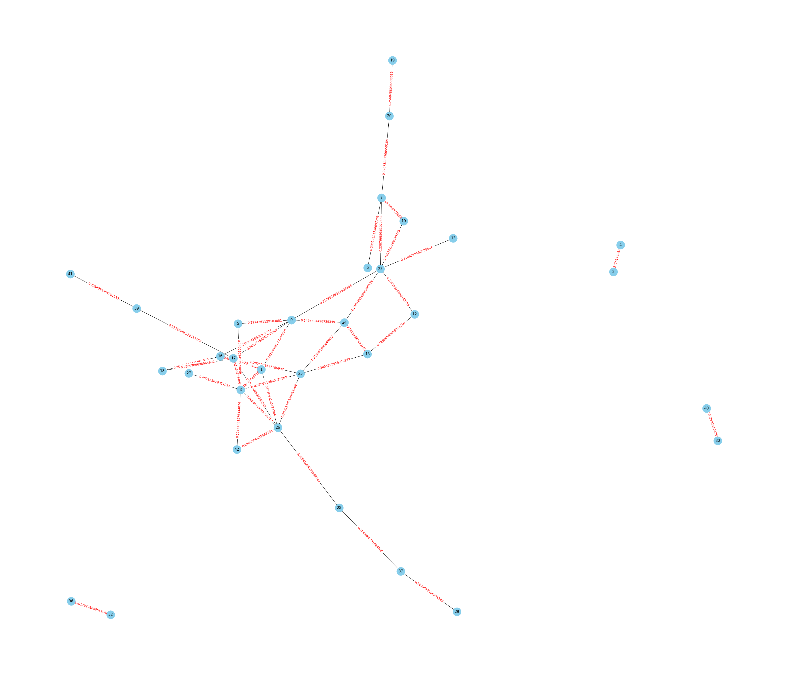

Crawling Tiga Kategori Berita#
import pandas as pd
import requests as re
from bs4 import BeautifulSoup as bs
from urllib.request import Request, urlopen
import csv
import nltk
nltk.download('punkt') # Pastikan Anda sudah mengunduh tokenisasi kalimat nltk
[nltk_data] Downloading package punkt to /root/nltk_data...
[nltk_data] Package punkt is already up-to-date!
True
header = {'User-Agent': "Mozilla/5.0 (Windows NT 10.0; Win64; x64) AppleWebKit/537.36 (KHTML, like Gecko) Chrome/119.0.0.0 Safari/537.36"}
url = 'https://www.bbc.com/indonesia/topics/cjgn7k8yx4gt'
judul = []
konten = []
kategori = []
req = re.get(url, headers=header)
soup = bs(req.text, 'html.parser')
cats = soup.findAll('div', 'bbc-14sj40g e11sm0on5')
for cat in cats:
category = cat.find('span', 'bbc-12xbtlj ebniykg1').text.replace('Halaman saat ini,', '')
kategori.extend([category] * 240)
for page in range(1, 11):
req2 = re.get(url, headers=header)
soup2 = bs(req.text, 'html.parser')
items = soup2.findAll('div', 'bbc-bjn8wh e1v051r10')
for it in items:
try:
link = it.find('a')['href']
except:
link = ''
name = it.find('h2', 'bbc-110w6ng e47bds20').text
judul.append(name)
if link != '':
req3 = re.get(link, headers=header) # Perubahan: Menggunakan link langsung
soup3 = bs(req3.text, 'html.parser')
article = soup3.find("div", "bbc-1cvxiy9")
# Periksa apakah elemen article ada sebelum mencoba mengambil teksnya
if article is not None:
article_text = article.get_text()
sentences = nltk.sent_tokenize(article_text)
konten.append(article_text) # Perubahan: Menggunakan article_text bukan artikel itu sendiri
JudulBerita = pd.DataFrame(judul, columns=["Judul Berita"])
IsiBerita = pd.DataFrame(konten, columns=["Isi Berita"])
CatBerita = pd.DataFrame(kategori, columns=["Kategori Berita"])
BeritaIndo = pd.concat([JudulBerita, IsiBerita, CatBerita], axis=1)
BeritaIndo
---------------------------------------------------------------------------
KeyboardInterrupt Traceback (most recent call last)
<ipython-input-2-137b56c459fe> in <cell line: 16>()
29
30 if link != '':
---> 31 req3 = re.get(link, headers=header) # Perubahan: Menggunakan link langsung
32 soup3 = bs(req3.text, 'html.parser')
33 article = soup3.find("div", "bbc-1cvxiy9")
/usr/local/lib/python3.10/dist-packages/requests/api.py in get(url, params, **kwargs)
71 """
72
---> 73 return request("get", url, params=params, **kwargs)
74
75
/usr/local/lib/python3.10/dist-packages/requests/api.py in request(method, url, **kwargs)
57 # cases, and look like a memory leak in others.
58 with sessions.Session() as session:
---> 59 return session.request(method=method, url=url, **kwargs)
60
61
/usr/local/lib/python3.10/dist-packages/requests/sessions.py in request(self, method, url, params, data, headers, cookies, files, auth, timeout, allow_redirects, proxies, hooks, stream, verify, cert, json)
587 }
588 send_kwargs.update(settings)
--> 589 resp = self.send(prep, **send_kwargs)
590
591 return resp
/usr/local/lib/python3.10/dist-packages/requests/sessions.py in send(self, request, **kwargs)
701
702 # Send the request
--> 703 r = adapter.send(request, **kwargs)
704
705 # Total elapsed time of the request (approximately)
/usr/local/lib/python3.10/dist-packages/requests/adapters.py in send(self, request, stream, timeout, verify, cert, proxies)
484
485 try:
--> 486 resp = conn.urlopen(
487 method=request.method,
488 url=url,
/usr/local/lib/python3.10/dist-packages/urllib3/connectionpool.py in urlopen(self, method, url, body, headers, retries, redirect, assert_same_host, timeout, pool_timeout, release_conn, chunked, body_pos, preload_content, decode_content, **response_kw)
789
790 # Make the request on the HTTPConnection object
--> 791 response = self._make_request(
792 conn,
793 method,
/usr/local/lib/python3.10/dist-packages/urllib3/connectionpool.py in _make_request(self, conn, method, url, body, headers, retries, timeout, chunked, response_conn, preload_content, decode_content, enforce_content_length)
466 # Trigger any extra validation we need to do.
467 try:
--> 468 self._validate_conn(conn)
469 except (SocketTimeout, BaseSSLError) as e:
470 self._raise_timeout(err=e, url=url, timeout_value=conn.timeout)
/usr/local/lib/python3.10/dist-packages/urllib3/connectionpool.py in _validate_conn(self, conn)
1095 # Force connect early to allow us to validate the connection.
1096 if conn.is_closed:
-> 1097 conn.connect()
1098
1099 if not conn.is_verified:
/usr/local/lib/python3.10/dist-packages/urllib3/connection.py in connect(self)
640 )
641
--> 642 sock_and_verified = _ssl_wrap_socket_and_match_hostname(
643 sock=sock,
644 cert_reqs=self.cert_reqs,
/usr/local/lib/python3.10/dist-packages/urllib3/connection.py in _ssl_wrap_socket_and_match_hostname(sock, cert_reqs, ssl_version, ssl_minimum_version, ssl_maximum_version, cert_file, key_file, key_password, ca_certs, ca_cert_dir, ca_cert_data, assert_hostname, assert_fingerprint, server_hostname, ssl_context, tls_in_tls)
781 server_hostname = normalized
782
--> 783 ssl_sock = ssl_wrap_socket(
784 sock=sock,
785 keyfile=key_file,
/usr/local/lib/python3.10/dist-packages/urllib3/util/ssl_.py in ssl_wrap_socket(sock, keyfile, certfile, cert_reqs, ca_certs, server_hostname, ssl_version, ciphers, ssl_context, ca_cert_dir, key_password, ca_cert_data, tls_in_tls)
444 if ca_certs or ca_cert_dir or ca_cert_data:
445 try:
--> 446 context.load_verify_locations(ca_certs, ca_cert_dir, ca_cert_data)
447 except OSError as e:
448 raise SSLError(e) from e
KeyboardInterrupt:
header = {'User-Agent': "Mozilla/5.0 (Windows NT 10.0; Win64; x64) AppleWebKit/537.36 (KHTML, like Gecko) Chrome/119.0.0.0 Safari/537.36"}
url = 'https://www.bbc.com/indonesia/topics/cyz8evpl224t'
judul = []
konten = []
kategori = []
req = re.get(url, headers=header)
soup = bs(req.text, 'html.parser')
cats = soup.findAll('div', 'bbc-14sj40g e11sm0on5')
for cat in cats:
category = cat.find('span', 'bbc-12xbtlj ebniykg1').text.replace('Halaman saat ini,', '')
kategori.extend([category] * 240)
for page in range(1, 11):
req2 = re.get(url, headers=header)
soup2 = bs(req.text, 'html.parser')
items = soup2.findAll('div', 'bbc-bjn8wh e1v051r10')
for it in items:
try:
link = it.find('a')['href']
except:
link = ''
name = it.find('h2', 'bbc-110w6ng e47bds20').text
judul.append(name)
if link != '':
req3 = re.get(link, headers=header) # Perubahan: Menggunakan link langsung
soup3 = bs(req3.text, 'html.parser')
article = soup3.find("div", "bbc-1cvxiy9")
# Periksa apakah elemen article ada sebelum mencoba mengambil teksnya
if article is not None:
article_text = article.get_text()
sentences = nltk.sent_tokenize(article_text)
konten.append(article_text) # Perubahan: Menggunakan article_text bukan artikel itu sendiri
JudulBerita = pd.DataFrame(judul, columns=["Judul Berita"])
IsiBerita = pd.DataFrame(konten, columns=["Isi Berita"])
CatBerita = pd.DataFrame(kategori, columns=["Kategori Berita"])
BeritaDunia = pd.concat([JudulBerita, IsiBerita, CatBerita], axis=1)
BeritaDunia
| Judul Berita | Isi Berita | Kategori Berita | |
|---|---|---|---|
| 0 | Kasus pemukulan wasit sepak bola adalah 'cermi... | Kasus pemukulan wasit sepak bola adalah 'cermi... | Dunia |
| 1 | 'Hari bersejarah', Majelis Umum PBB dukung gen... | 'Hari bersejarah', Majelis Umum PBB dukung gen... | Dunia |
| 2 | Kesaksian dokter bedah di Gaza: 'Hati ini hanc... | Kesaksian dokter bedah di Gaza: 'Hati ini hanc... | Dunia |
| 3 | Siapa yang menyebarkan narasi kebencian dan ho... | Siapa yang menyebarkan narasi kebencian dan ho... | Dunia |
| 4 | Ancaman PHK di Indonesia imbas aksi boikot Isr... | Ancaman PHK di Indonesia imbas aksi boikot Isr... | Dunia |
| ... | ... | ... | ... |
| 235 | Temuan gas beracun yang mengancam kesehatan ju... | Temuan gas beracun yang mengancam kesehatan ju... | Dunia |
| 236 | Keruntuhan mafia China di pusat bisnis penipua... | Keruntuhan mafia China di pusat bisnis penipua... | Dunia |
| 237 | Siapa David Ben-Gurion, proklamator dan bapak ... | Siapa David Ben-Gurion, proklamator dan bapak ... | Dunia |
| 238 | Kisah bocah Palestina yang ditangkap Israel - ... | Kisah bocah Palestina yang ditangkap Israel - ... | Dunia |
| 239 | Seberapa parah kerusakan di Gaza akibat pertik... | Kisah bocah Palestina yang ditangkap Israel - ... | Dunia |
240 rows × 3 columns
header = {'User-Agent': "Mozilla/5.0 (Windows NT 10.0; Win64; x64) AppleWebKit/537.36 (KHTML, like Gecko) Chrome/119.0.0.0 Safari/537.36"}
url = 'https://www.bbc.com/indonesia/topics/cn5w7g2nq6dt'
judul = []
konten = []
kategori = []
req = re.get(url, headers=header)
soup = bs(req.text, 'html.parser')
cats = soup.findAll('div', 'bbc-14sj40g e11sm0on5')
for cat in cats:
category = cat.find('span', 'bbc-12xbtlj ebniykg1').text.replace('Halaman saat ini,', '')
kategori.extend([category] * 240)
for page in range(1, 11):
req2 = re.get(url, headers=header)
soup2 = bs(req.text, 'html.parser')
items = soup2.findAll('div', 'bbc-bjn8wh e1v051r10')
for it in items:
try:
link = it.find('a')['href']
except:
link = ''
name = it.find('h2', 'bbc-110w6ng e47bds20').text
judul.append(name)
if link != '':
req3 = re.get(link, headers=header) # Perubahan: Menggunakan link langsung
soup3 = bs(req3.text, 'html.parser')
article = soup3.find("div", "bbc-1cvxiy9")
# Periksa apakah elemen article ada sebelum mencoba mengambil teksnya
if article is not None:
article_text = article.get_text()
sentences = nltk.sent_tokenize(article_text)
konten.append(article_text) # Perubahan: Menggunakan article_text bukan artikel itu sendiri
JudulBerita = pd.DataFrame(judul, columns=["Judul Berita"])
IsiBerita = pd.DataFrame(konten, columns=["Isi Berita"])
CatBerita = pd.DataFrame(kategori, columns=["Kategori Berita"])
BeritaViral = pd.concat([JudulBerita, IsiBerita, CatBerita], axis=1)
BeritaViral
| Judul Berita | Isi Berita | Kategori Berita | |
|---|---|---|---|
| 0 | Bunga Citra Lestari dicibir warganet karena me... | Bunga Citra Lestari dicibir warganet karena me... | Viral |
| 1 | Teori memurtadkan perempuan Muslim lewat asmar... | Teori memurtadkan perempuan Muslim lewat asmar... | Viral |
| 2 | Kisah polwan yang menyusui bayi korban bencana | Kisah polwan yang menyusui bayi korban bencana... | Viral |
| 3 | Apa makna semangka bagi rakyat Palestina? | Apa makna semangka bagi rakyat Palestina?Sumbe... | Viral |
| 4 | ‘Kita bahagia walaupun hidup sederhana’ – Kisa... | ‘Kita bahagia walaupun hidup sederhana’ – Kisa... | Viral |
| ... | ... | ... | ... |
| 235 | Demonstrasi anti-LGBT warnai konser Coldplay d... | Demonstrasi anti-LGBT warnai konser Coldplay d... | Viral |
| 236 | SEA Games 2023 'dihujani kritik', apa yang seb... | SEA Games 2023 'dihujani kritik', apa yang seb... | Viral |
| 237 | Fenomena ‘garasi’ di jalan umum, mengapa selal... | SEA Games 2023 'dihujani kritik', apa yang seb... | Viral |
| 238 | Presiden Jokowi ambil alih perbaikan jalan di ... | SEA Games 2023 'dihujani kritik', apa yang seb... | Viral |
| 239 | Polda Lampung hentikan kasus TikToker Bima, pa... | Polda Lampung hentikan kasus TikToker Bima, pa... | Viral |
240 rows × 3 columns
GabunganBerita = pd.concat([BeritaIndo, BeritaDunia, BeritaViral]).reset_index(drop=True)
GabunganBerita
| Judul Berita | Isi Berita | Kategori Berita | |
|---|---|---|---|
| 0 | Viral penemuan lima mayat di Kampus Unpri Meda... | Viral penemuan lima mayat di Kampus Unpri Meda... | Indonesia |
| 1 | Debat capres berpengaruh terhadap pemilih meng... | Debat capres berpengaruh terhadap pemilih meng... | Indonesia |
| 2 | Pilpres 2024: Apa janji capres soal hukum, HAM... | Pilpres 2024: Apa janji capres soal hukum, HAM... | Indonesia |
| 3 | TikTok Shop buka lagi setelah akuisisi Tokoped... | TikTok Shop buka lagi setelah akuisisi Tokoped... | Indonesia |
| 4 | Siapa yang menyebarkan narasi kebencian dan ho... | Siapa yang menyebarkan narasi kebencian dan ho... | Indonesia |
| ... | ... | ... | ... |
| 715 | Demonstrasi anti-LGBT warnai konser Coldplay d... | Demonstrasi anti-LGBT warnai konser Coldplay d... | Viral |
| 716 | SEA Games 2023 'dihujani kritik', apa yang seb... | SEA Games 2023 'dihujani kritik', apa yang seb... | Viral |
| 717 | Fenomena ‘garasi’ di jalan umum, mengapa selal... | SEA Games 2023 'dihujani kritik', apa yang seb... | Viral |
| 718 | Presiden Jokowi ambil alih perbaikan jalan di ... | SEA Games 2023 'dihujani kritik', apa yang seb... | Viral |
| 719 | Polda Lampung hentikan kasus TikToker Bima, pa... | Polda Lampung hentikan kasus TikToker Bima, pa... | Viral |
720 rows × 3 columns
GabunganBerita.to_csv('berita-BBC.csv', index=False)
df = pd.read_csv('berita-BBC.csv')
df
| Judul Berita | Isi Berita | Kategori Berita | |
|---|---|---|---|
| 0 | Viral penemuan lima mayat di Kampus Unpri Meda... | Viral penemuan lima mayat di Kampus Unpri Meda... | Indonesia |
| 1 | Debat capres berpengaruh terhadap pemilih meng... | Debat capres berpengaruh terhadap pemilih meng... | Indonesia |
| 2 | Pilpres 2024: Apa janji capres soal hukum, HAM... | Pilpres 2024: Apa janji capres soal hukum, HAM... | Indonesia |
| 3 | TikTok Shop buka lagi setelah akuisisi Tokoped... | TikTok Shop buka lagi setelah akuisisi Tokoped... | Indonesia |
| 4 | Siapa yang menyebarkan narasi kebencian dan ho... | Siapa yang menyebarkan narasi kebencian dan ho... | Indonesia |
| ... | ... | ... | ... |
| 715 | Demonstrasi anti-LGBT warnai konser Coldplay d... | Demonstrasi anti-LGBT warnai konser Coldplay d... | Viral |
| 716 | SEA Games 2023 'dihujani kritik', apa yang seb... | SEA Games 2023 'dihujani kritik', apa yang seb... | Viral |
| 717 | Fenomena ‘garasi’ di jalan umum, mengapa selal... | SEA Games 2023 'dihujani kritik', apa yang seb... | Viral |
| 718 | Presiden Jokowi ambil alih perbaikan jalan di ... | SEA Games 2023 'dihujani kritik', apa yang seb... | Viral |
| 719 | Polda Lampung hentikan kasus TikToker Bima, pa... | Polda Lampung hentikan kasus TikToker Bima, pa... | Viral |
720 rows × 3 columns
from nltk.tokenize import sent_tokenize
from sklearn.feature_extraction.text import TfidfVectorizer
from sklearn.metrics.pairwise import cosine_similarity
from sklearn.naive_bayes import GaussianNB
from sklearn.svm import SVC
from sklearn.model_selection import train_test_split
from sklearn.metrics import accuracy_score, classification_report, confusion_matrix
import networkx as nx
import seaborn as sns
import matplotlib.pyplot as plt
import warnings
import pandas as pd
import numpy as np
import nltk
import re
import joblib
nltk.download('stopwords')
nltk.download('punkt')
warnings.filterwarnings('ignore')
[nltk_data] Downloading package stopwords to /root/nltk_data...
[nltk_data] Package stopwords is already up-to-date!
[nltk_data] Downloading package punkt to /root/nltk_data...
[nltk_data] Package punkt is already up-to-date!
df.isnull().sum()
Judul Berita 0
Isi Berita 0
Kategori Berita 0
dtype: int64
df = df.dropna()
df.isnull().sum()
Judul Berita 0
Isi Berita 0
Kategori Berita 0
dtype: int64
df.shape
(720, 3)
def cleaning(text):
text = re.sub(r'[^\w\s.?!,]', '', text).strip()
return text
df['Cleaning'] = df['Isi Berita'].apply(cleaning)
df['Cleaning']
0 Viral penemuan lima mayat di Kampus Unpri Meda...
1 Debat capres berpengaruh terhadap pemilih meng...
2 Pilpres 2024 Apa janji capres soal hukum, HAM,...
3 TikTok Shop buka lagi setelah akuisisi Tokoped...
4 Siapa yang menyebarkan narasi kebencian dan ho...
...
715 Demonstrasi antiLGBT warnai konser Coldplay di...
716 SEA Games 2023 dihujani kritik, apa yang seben...
717 SEA Games 2023 dihujani kritik, apa yang seben...
718 SEA Games 2023 dihujani kritik, apa yang seben...
719 Polda Lampung hentikan kasus TikToker Bima, pa...
Name: Cleaning, Length: 720, dtype: object
def tokenizer(text):
text = text.lower()
return sent_tokenize(text)
df['Tokenizing'] = df['Cleaning'].apply(tokenizer)
df['Tokenizing']
0 [viral penemuan lima mayat di kampus unpri med...
1 [debat capres berpengaruh terhadap pemilih men...
2 [pilpres 2024 apa janji capres soal hukum, ham...
3 [tiktok shop buka lagi setelah akuisisi tokope...
4 [siapa yang menyebarkan narasi kebencian dan h...
...
715 [demonstrasi antilgbt warnai konser coldplay d...
716 [sea games 2023 dihujani kritik, apa yang sebe...
717 [sea games 2023 dihujani kritik, apa yang sebe...
718 [sea games 2023 dihujani kritik, apa yang sebe...
719 [polda lampung hentikan kasus tiktoker bima, p...
Name: Tokenizing, Length: 720, dtype: object
def graph_cosine_sim(x, threshold = 0.11):
# TFIDF
vectorizer = TfidfVectorizer()
tfidf = vectorizer.fit_transform(x)
cos_sim = cosine_similarity(tfidf)
G = nx.Graph()
# Mengisi nilai similarity antara kalimat ke dalam edges (Garis Penghubung)
for i in range(len(x)):
for j in range(i+1, len(x)):
sim = cos_sim[i][j]
if sim > threshold:
G.add_edge(i, j, weight=sim)
return G
def plot_graph(G, figsize=(35, 30), node_size=700, node_color='skyblue'):
# Menggambar graf dengan canvas yang diperbesar
pos = nx.spring_layout(G) # Menentukan posisi simpul
labels = nx.get_edge_attributes(G, 'weight')
# Menentukan ukuran canvas
plt.figure(figsize=(35, 30))
# Menggambar graf dengan ukuran canvas yang diperbesar
nx.draw(G, pos, with_labels=True, node_size=700, node_color='skyblue')
nx.draw_networkx_edge_labels(G, pos, edge_labels=labels, font_color='red')
plt.show()
def summarization(x, k = 4, index=1, threshold=0.11, show_centrality=False):
# Memasukkan Nilai Cosine Similirity ke dalam Graph
G = graph_cosine_sim(x, threshold)
# Menghitung nilai dari closeness centrality
centrality = nx.closeness_centrality(G)
if show_centrality:
print(f"Nilai Closeness Centrality Dokumen Ke - {index} : {centrality}")
# Menyusun Kalimat berdasarkan nilai Closeness Centrality tertinggi dan lebih dari treshold
centrality = dict(sorted(centrality.items(), key=lambda item : item[1], reverse=True))
summary_sentences = []
for i, centr in enumerate(centrality.items()):
if i < k:
summary_sentences.append(x[centr[0]])
return (' '.join(summary_sentences), G)
summary, G = summarization(df["Tokenizing"].iloc[:1][0], k = 5, show_centrality=True, threshold=0.2)
Nilai Closeness Centrality Dokumen Ke - 1 : {0: 0.3537068477645727, 1: 0.3305129561078794, 5: 0.2880184331797235, 16: 0.2839618355293048, 17: 0.3537068477645727, 23: 0.31502016129032256, 24: 0.3251821019771071, 3: 0.31017369727047145, 26: 0.31502016129032256, 2: 0.03225806451612903, 4: 0.03225806451612903, 25: 0.33602150537634407, 27: 0.22653135193910837, 42: 0.23719165085388993, 6: 0.1920122887864823, 7: 0.2489048187972919, 10: 0.2400153609831029, 20: 0.1957406827435014, 12: 0.2584780810587262, 15: 0.2800179211469534, 13: 0.22910557184750735, 18: 0.25520620661494486, 39: 0.25520620661494486, 19: 0.158750317500635, 28: 0.2400153609831029, 37: 0.1902008520998174, 29: 0.15508684863523572, 30: 0.03225806451612903, 40: 0.03225806451612903, 32: 0.03225806451612903, 36: 0.03225806451612903, 41: 0.1957406827435014}
summary
'viral penemuan lima mayat di kampus unpri medan korban pembunuhan atau kadaver? kalaupun terjadi tindak pembunuhan di lingkungan kampus, maka ia sebagai salah satu pimpinan yang pertama akan melaporkan tindak pidana tersebut kepada pihak yang berwajib, katanya.saya salah satu pimpinan universitas menyatakan tidak ada kasus pembunuhan di lingkungan unpri seperti yang diisukan, ujarnya dalam video youtube primtv pada rabu 1312.sumber gambar, kompas.comketerangan gambar, polisi telah mengerahkan tim dari laboratorium forensik dan inafis untuk mengusut temuan mayat itu.dia kemudian menjelaskan bahwa lima mayat tersebut merupakan kadaver atau tubuh manusia yang diawetkan sebagai media belajar di laboratorium anatomi.yang mana laboratorium anatomi fakultas kedokteran unpri medan memiliki lima kadaver 1 perempuan dan 4 lakilaki.kadaver tersebut telah diadakan oleh rektor terdahulu prof jakobus tarigan pada tahun 2005, jelasnya. kita akan minta keterangan dari pihak kampus, dari mana asal jenazah, siapa identitasnya, kenapa bisa ada di dalam kampus, ungkapnya kepada wartawan apriadi gunawan yang melaporkan untuk bbc news indonesia.kabid humas polda sumut, kombes hadi wahyudi, berkata polisi telah mengerahkan tim dari laboratorium forensik dan inafis untuk mengusut temuan mayat itu.dia memastikan lima mayat itu masih berada di kampus. sumber gambar, getty imagesketerangan gambar, ilustrasi.16 menit yang laluwakil dekan fakultas kedokteran universitas prima indonesia unpri medan, menyebut lima mayat yang ditemukan di lantai 15 salah satu gedung kampus bukan korban pembunuhan melainkan kadaver yang digunakan untuk kepentingan pendidikan kedokteran. fathir mengakui sejauh ini polisi belum mendapatkan keterangan dari pihak kampus terkait penemuan lima mayat yang diduga disembunyikan di ruangan kampus.polisi akan mendalami penemuan kelima mayat ini.'
plot_graph(G)

df["Summary"] = df.apply(lambda row : summarization(row['Tokenizing'], index=row.name+1, k=7, show_centrality=True)[0], axis=1)
Nilai Closeness Centrality Dokumen Ke - 1 : {0: 0.6060606060606061, 1: 0.5970149253731343, 2: 0.5633802816901409, 3: 0.6896551724137931, 4: 0.4878048780487805, 5: 0.5, 10: 0.5, 12: 0.5882352941176471, 15: 0.5633802816901409, 16: 0.5263157894736842, 17: 0.7272727272727273, 18: 0.6153846153846154, 19: 0.5405405405405406, 23: 0.625, 24: 0.5633802816901409, 25: 0.5714285714285714, 26: 0.6666666666666666, 27: 0.5633802816901409, 28: 0.5405405405405406, 29: 0.49382716049382713, 37: 0.45977011494252873, 34: 0.5714285714285714, 35: 0.47619047619047616, 7: 0.547945205479452, 8: 0.47619047619047616, 30: 0.47619047619047616, 32: 0.5633802816901409, 36: 0.47619047619047616, 42: 0.4878048780487805, 6: 0.4819277108433735, 20: 0.5797101449275363, 22: 0.43956043956043955, 9: 0.38461538461538464, 41: 0.45454545454545453, 11: 0.425531914893617, 13: 0.4444444444444444, 33: 0.449438202247191, 38: 0.5633802816901409, 43: 0.45454545454545453, 39: 0.5, 40: 0.4}
Nilai Closeness Centrality Dokumen Ke - 2 : {0: 0.5421010425020047, 1: 0.6475095785440613, 2: 0.6660098522167488, 3: 0.6134301270417423, 4: 0.495964783565664, 9: 0.6475095785440613, 18: 0.48563218390804597, 25: 0.6300093196644921, 26: 0.6300093196644921, 27: 0.47572132301196346, 29: 0.6475095785440613, 30: 0.495964783565664, 8: 0.555008210180624, 10: 0.5685449957947856, 13: 0.6475095785440613, 14: 0.4570655848546315, 16: 0.5421010425020047, 17: 0.42382445141065833, 20: 0.555008210180624, 23: 0.5297805642633229, 28: 0.4482758620689655, 21: 0.3950905902980713, 5: 0.47572132301196346, 12: 0.4089534180278282, 6: 0.04597701149425287, 7: 0.06896551724137931, 22: 0.04597701149425287, 11: 0.4482758620689655, 19: 0.416256157635468, 15: 0.30671506352087113}
Nilai Closeness Centrality Dokumen Ke - 3 : {0: 0.6491228070175439, 1: 0.6065573770491803, 2: 0.6379310344827587, 7: 0.6379310344827587, 10: 0.5138888888888888, 11: 0.6065573770491803, 15: 0.6166666666666667, 19: 0.5068493150684932, 21: 0.6379310344827587, 23: 0.5873015873015873, 25: 0.5068493150684932, 28: 0.42528735632183906, 29: 0.6166666666666667, 30: 0.6491228070175439, 32: 0.6491228070175439, 33: 0.6379310344827587, 35: 0.6491228070175439, 36: 0.5873015873015873, 37: 0.49333333333333335, 40: 0.6271186440677966, 5: 0.4567901234567901, 3: 0.39361702127659576, 22: 0.4157303370786517, 12: 0.4625, 14: 0.3162393162393162, 6: 0.4157303370786517, 13: 0.44047619047619047, 8: 0.42045454545454547, 9: 0.4065934065934066, 17: 0.4111111111111111, 31: 0.30833333333333335, 16: 0.39361702127659576, 18: 0.39361702127659576, 38: 0.42045454545454547, 26: 0.3557692307692308, 27: 0.42045454545454547, 39: 0.4065934065934066, 34: 0.42528735632183906}
Nilai Closeness Centrality Dokumen Ke - 4 : {0: 0.8181818181818182, 2: 0.8181818181818182, 3: 0.8181818181818182, 6: 0.6428571428571429, 7: 1.0, 8: 0.75, 9: 0.75, 10: 0.9, 1: 0.6, 4: 0.6}
Nilai Closeness Centrality Dokumen Ke - 5 : {0: 0.5360824742268041, 2: 0.5473684210526316, 3: 0.5842696629213483, 5: 0.45614035087719296, 7: 0.40310077519379844, 8: 0.48598130841121495, 9: 0.4, 12: 0.6265060240963856, 13: 0.48148148148148145, 14: 0.6046511627906976, 15: 0.5252525252525253, 18: 0.52, 21: 0.5652173913043478, 23: 0.611764705882353, 25: 0.5842696629213483, 30: 0.5473684210526316, 44: 0.48598130841121495, 45: 0.45614035087719296, 1: 0.33121019108280253, 6: 0.35374149659863946, 10: 0.4482758620689655, 16: 0.4297520661157025, 17: 0.41935483870967744, 36: 0.48148148148148145, 38: 0.48148148148148145, 39: 0.40310077519379844, 4: 0.40310077519379844, 22: 0.4642857142857143, 35: 0.5148514851485149, 37: 0.47706422018348627, 41: 0.5306122448979592, 46: 0.45614035087719296, 47: 0.5360824742268041, 49: 0.46846846846846846, 48: 0.4297520661157025, 52: 0.3466666666666667, 11: 0.3058823529411765, 20: 0.4369747899159664, 24: 0.41935483870967744, 42: 0.49523809523809526, 50: 0.4094488188976378, 40: 0.4406779661016949, 51: 0.45217391304347826, 19: 0.34210526315789475, 28: 0.4, 29: 0.4642857142857143, 31: 0.41935483870967744, 32: 0.416, 26: 0.29545454545454547, 27: 0.32298136645962733, 43: 0.24528301886792453, 33: 0.37681159420289856, 34: 0.348993288590604}
Nilai Closeness Centrality Dokumen Ke - 6 : {0: 0.5360824742268041, 2: 0.5473684210526316, 3: 0.5842696629213483, 5: 0.45614035087719296, 7: 0.40310077519379844, 8: 0.48598130841121495, 9: 0.4, 12: 0.6265060240963856, 13: 0.48148148148148145, 14: 0.6046511627906976, 15: 0.5252525252525253, 18: 0.52, 21: 0.5652173913043478, 23: 0.611764705882353, 25: 0.5842696629213483, 30: 0.5473684210526316, 44: 0.48598130841121495, 45: 0.45614035087719296, 1: 0.33121019108280253, 6: 0.35374149659863946, 10: 0.4482758620689655, 16: 0.4297520661157025, 17: 0.41935483870967744, 36: 0.48148148148148145, 38: 0.48148148148148145, 39: 0.40310077519379844, 4: 0.40310077519379844, 22: 0.4642857142857143, 35: 0.5148514851485149, 37: 0.47706422018348627, 41: 0.5306122448979592, 46: 0.45614035087719296, 47: 0.5360824742268041, 49: 0.46846846846846846, 48: 0.4297520661157025, 52: 0.3466666666666667, 11: 0.3058823529411765, 20: 0.4369747899159664, 24: 0.41935483870967744, 42: 0.49523809523809526, 50: 0.4094488188976378, 40: 0.4406779661016949, 51: 0.45217391304347826, 19: 0.34210526315789475, 28: 0.4, 29: 0.4642857142857143, 31: 0.41935483870967744, 32: 0.416, 26: 0.29545454545454547, 27: 0.32298136645962733, 43: 0.24528301886792453, 33: 0.37681159420289856, 34: 0.348993288590604}
Nilai Closeness Centrality Dokumen Ke - 7 : {0: 0.5909090909090909, 2: 0.8125, 5: 0.8125, 7: 0.7222222222222222, 10: 0.7222222222222222, 13: 0.7647058823529411, 1: 0.5416666666666666, 11: 0.48148148148148145, 3: 0.65, 4: 0.6190476190476191, 6: 0.5909090909090909, 14: 0.6842105263157895, 8: 0.48148148148148145, 9: 0.5652173913043478}
Nilai Closeness Centrality Dokumen Ke - 8 : {0: 0.8888888888888888, 1: 0.5714285714285714, 2: 0.6666666666666666, 3: 0.6666666666666666, 4: 0.8, 5: 0.5333333333333333, 6: 0.8, 8: 0.6666666666666666, 7: 0.5714285714285714}
Nilai Closeness Centrality Dokumen Ke - 9 : {0: 0.47058823529411764, 5: 0.6666666666666666, 8: 0.47058823529411764, 12: 0.7272727272727273, 20: 0.6530612244897959, 1: 0.6037735849056604, 10: 0.6530612244897959, 14: 0.5161290322580645, 15: 0.5079365079365079, 16: 0.5333333333333333, 18: 0.5925925925925926, 22: 0.5925925925925926, 26: 0.5925925925925926, 29: 0.42105263157894735, 32: 0.5714285714285714, 34: 0.6530612244897959, 2: 0.31683168316831684, 7: 0.45714285714285713, 3: 0.49230769230769234, 4: 0.41025641025641024, 11: 0.4444444444444444, 33: 0.3902439024390244, 9: 0.4155844155844156, 31: 0.48484848484848486, 28: 0.41025641025641024, 17: 0.5079365079365079, 24: 0.5161290322580645, 21: 0.4444444444444444, 13: 0.4507042253521127, 19: 0.4383561643835616, 23: 0.42105263157894735, 25: 0.37209302325581395, 30: 0.4155844155844156}
Nilai Closeness Centrality Dokumen Ke - 10 : {0: 0.47454350161117076, 5: 0.42529842125529455, 6: 0.49540255662704646, 7: 0.38204773434797645, 9: 0.3920141969831411, 13: 0.4553700267985982, 14: 0.4174225245653817, 23: 0.42529842125529455, 27: 0.5366861030126336, 28: 0.4600166597251145, 37: 0.4025145772594752, 43: 0.3920141969831411, 49: 0.44635279854516063, 1: 0.4293488824101069, 15: 0.41359296011982777, 17: 0.4213236696547778, 18: 0.4419767907162865, 19: 0.31306689342403626, 21: 0.5181796856673704, 22: 0.4334772370486656, 29: 0.49540255662704646, 2: 0.40614083471226325, 32: 0.41359296011982777, 34: 0.46475909951609506, 3: 0.28353228083686305, 46: 0.3989525013545241, 4: 0.3853130995988139, 47: 0.4553700267985982, 50: 0.3756802721088435, 31: 0.32906301206614036, 39: 0.395452918009309, 41: 0.41359296011982777, 42: 0.3266784974859509, 8: 0.2800101407022436, 12: 0.3665173386427742, 10: 0.30460562603419744, 11: 0.23237954975804753, 24: 0.42529842125529455, 26: 0.3066777731500764, 38: 0.3635615536537195, 30: 0.36065306122448976, 16: 0.3635615536537195, 20: 0.3853130995988139, 44: 0.3635615536537195, 25: 0.34152752009894866, 45: 0.2636352786728726, 33: 0.02040816326530612, 40: 0.02040816326530612, 35: 0.26518607442977193, 36: 0.26518607442977193}
Nilai Closeness Centrality Dokumen Ke - 11 : {0: 0.5432098765432098, 2: 0.6470588235294118, 5: 0.5641025641025641, 6: 0.6111111111111112, 11: 0.5945945945945946, 16: 0.5641025641025641, 19: 0.5057471264367817, 25: 0.5569620253164557, 26: 0.5301204819277109, 33: 0.5866666666666667, 37: 0.6027397260273972, 38: 0.5365853658536586, 43: 0.6027397260273972, 1: 0.5365853658536586, 3: 0.4631578947368421, 10: 0.4631578947368421, 21: 0.411214953271028, 35: 0.5238095238095238, 36: 0.5432098765432098, 40: 0.6285714285714286, 42: 0.4782608695652174, 8: 0.4536082474226804, 12: 0.4782608695652174, 17: 0.5432098765432098, 18: 0.46808510638297873, 23: 0.5432098765432098, 24: 0.4943820224719101, 31: 0.5, 20: 0.5176470588235295, 22: 0.43137254901960786, 7: 0.43137254901960786, 32: 0.4583333333333333, 13: 0.3963963963963964, 9: 0.2857142857142857, 27: 0.4489795918367347, 34: 0.4536082474226804, 14: 0.4, 45: 0.36666666666666664, 15: 0.3492063492063492, 29: 0.39285714285714285, 30: 0.3963963963963964, 44: 0.4489795918367347, 41: 0.4731182795698925, 28: 0.3142857142857143, 39: 0.43137254901960786}
Nilai Closeness Centrality Dokumen Ke - 12 : {0: 0.5079365079365079, 2: 0.49230769230769234, 13: 0.5079365079365079, 14: 0.4383561643835616, 16: 0.4155844155844156, 17: 0.41025641025641024, 19: 0.5423728813559322, 20: 0.6153846153846154, 24: 0.6037735849056604, 1: 0.2782608695652174, 6: 0.38095238095238093, 10: 0.3595505617977528, 11: 0.3950617283950617, 25: 0.5245901639344263, 33: 0.5818181818181818, 5: 0.367816091954023, 18: 0.49230769230769234, 7: 0.3902439024390244, 31: 0.6274509803921569, 26: 0.4266666666666667, 12: 0.3764705882352941, 32: 0.463768115942029, 21: 0.48484848484848486, 22: 0.45714285714285713, 15: 0.4266666666666667, 34: 0.42105263157894735, 35: 0.48484848484848486, 38: 0.367816091954023, 30: 0.5423728813559322, 36: 0.463768115942029, 28: 0.4155844155844156, 27: 0.41025641025641024, 29: 0.4155844155844156}
Nilai Closeness Centrality Dokumen Ke - 13 : {0: 0.5632183908045977, 1: 0.5632183908045977, 2: 0.6901408450704225, 3: 0.7, 4: 0.5444444444444444, 5: 0.5568181818181818, 8: 0.5384615384615384, 21: 0.48514851485148514, 25: 0.5212765957446809, 28: 0.532608695652174, 29: 0.5384615384615384, 32: 0.5444444444444444, 37: 0.550561797752809, 38: 0.5764705882352941, 39: 0.5975609756097561, 40: 0.6363636363636364, 43: 0.7, 45: 0.49, 7: 0.4049586776859504, 30: 0.5444444444444444, 41: 0.5212765957446809, 44: 0.5568181818181818, 46: 0.5104166666666666, 47: 0.532608695652174, 6: 0.45794392523364486, 11: 0.5157894736842106, 12: 0.5104166666666666, 15: 0.6363636363636364, 24: 0.45794392523364486, 27: 0.49, 36: 0.47572815533980584, 42: 0.45794392523364486, 17: 0.47572815533980584, 20: 0.47572815533980584, 22: 0.5, 33: 0.4336283185840708, 34: 0.44954128440366975, 50: 0.4666666666666667, 9: 0.47572815533980584, 13: 0.3858267716535433, 26: 0.4188034188034188, 14: 0.3656716417910448, 16: 0.32450331125827814, 19: 0.3333333333333333, 23: 0.3602941176470588, 48: 0.3769230769230769, 18: 0.4049586776859504, 31: 0.4016393442622951, 35: 0.3684210526315789, 49: 0.35}
Nilai Closeness Centrality Dokumen Ke - 14 : {0: 0.5161290322580645, 1: 0.6153846153846154, 4: 0.6857142857142857, 5: 0.5161290322580645, 7: 0.6153846153846154, 9: 0.6486486486486487, 13: 0.5783132530120482, 14: 0.6575342465753424, 25: 0.6666666666666666, 39: 0.5393258426966292, 3: 0.45714285714285713, 11: 0.48484848484848486, 16: 0.6153846153846154, 17: 0.5161290322580645, 18: 0.5517241379310345, 22: 0.5581395348837209, 30: 0.5853658536585366, 31: 0.5517241379310345, 36: 0.5274725274725275, 37: 0.5454545454545454, 38: 0.676056338028169, 41: 0.48, 43: 0.5454545454545454, 48: 0.5647058823529412, 2: 0.4752475247524752, 34: 0.366412213740458, 10: 0.48484848484848486, 32: 0.5, 19: 0.47058823529411764, 20: 0.5853658536585366, 23: 0.48, 24: 0.48484848484848486, 35: 0.4752475247524752, 40: 0.4485981308411215, 6: 0.42857142857142855, 8: 0.384, 12: 0.4247787610619469, 21: 0.4528301886792453, 44: 0.47058823529411764, 15: 0.4, 27: 0.5106382978723404, 29: 0.42857142857142855, 46: 0.48484848484848486, 26: 0.4444444444444444, 45: 0.3609022556390977, 28: 0.3404255319148936, 33: 0.3582089552238806, 49: 0.3356643356643357, 42: 0.35555555555555557}
Nilai Closeness Centrality Dokumen Ke - 15 : {0: 0.7391304347826086, 1: 0.68, 2: 0.68, 3: 0.7727272727272727, 5: 0.7083333333333334, 6: 0.6296296296296297, 9: 0.4857142857142857, 11: 0.7391304347826086, 14: 0.6296296296296297, 15: 0.7391304347826086, 16: 0.7391304347826086, 19: 0.5151515151515151, 10: 0.5151515151515151, 4: 0.4594594594594595, 7: 0.5, 12: 0.3953488372093023, 18: 0.4358974358974359, 21: 0.4722222222222222}
Nilai Closeness Centrality Dokumen Ke - 16 : {0: 0.6129032258064516, 2: 0.6333333333333333, 3: 0.5588235294117647, 6: 0.59375, 7: 0.4634146341463415, 9: 0.6129032258064516, 14: 0.6333333333333333, 19: 0.59375, 21: 0.4318181818181818, 1: 0.475, 4: 0.5135135135135135, 5: 0.4523809523809524, 12: 0.4523809523809524, 13: 0.5135135135135135, 20: 0.4418604651162791, 8: 0.4318181818181818, 11: 0.475, 10: 0.3275862068965517, 16: 0.41304347826086957, 15: 0.3958333333333333}
Nilai Closeness Centrality Dokumen Ke - 17 : {0: 0.7878787878787878, 1: 0.6666666666666666, 2: 0.5909090909090909, 3: 0.7222222222222222, 4: 0.7428571428571429, 6: 0.7647058823529411, 7: 0.7647058823529411, 12: 0.7222222222222222, 13: 0.5531914893617021, 14: 0.4727272727272727, 15: 0.6341463414634146, 17: 0.5652173913043478, 20: 0.7647058823529411, 21: 0.6666666666666666, 22: 0.7878787878787878, 23: 0.5777777777777777, 24: 0.5777777777777777, 25: 0.6190476190476191, 27: 0.7647058823529411, 28: 0.7647058823529411, 5: 0.5306122448979592, 8: 0.6046511627906976, 9: 0.5777777777777777, 10: 0.4642857142857143, 11: 0.4642857142857143, 26: 0.48148148148148145, 16: 0.5098039215686274}
Nilai Closeness Centrality Dokumen Ke - 18 : {0: 0.49557522123893805, 1: 0.3971631205673759, 2: 0.48695652173913045, 3: 0.5283018867924528, 4: 0.5283018867924528, 5: 0.448, 7: 0.42105263157894735, 9: 0.4444444444444444, 10: 0.39436619718309857, 11: 0.417910447761194, 17: 0.47058823529411764, 23: 0.4745762711864407, 34: 0.5283018867924528, 35: 0.4057971014492754, 39: 0.417910447761194, 41: 0.4745762711864407, 46: 0.47863247863247865, 49: 0.4444444444444444, 52: 0.45901639344262296, 40: 0.4375, 6: 0.45528455284552843, 8: 0.4057971014492754, 13: 0.42748091603053434, 24: 0.35, 45: 0.37583892617449666, 51: 0.35, 56: 0.4057971014492754, 26: 0.4375, 32: 0.36129032258064514, 15: 0.32558139534883723, 16: 0.3888888888888889, 44: 0.38620689655172413, 29: 0.2978723404255319, 57: 0.4148148148148148, 28: 0.33532934131736525, 43: 0.4117647058823529, 12: 0.2413793103448276, 18: 0.3163841807909605, 31: 0.4057971014492754, 14: 0.35668789808917195, 22: 0.3111111111111111, 20: 0.24347826086956523, 19: 0.21212121212121213, 47: 0.2679425837320574, 21: 0.19649122807017544, 30: 0.2814070351758794, 25: 0.30601092896174864, 36: 0.32748538011695905, 27: 0.29473684210526313, 37: 0.35668789808917195, 33: 0.29015544041450775, 38: 0.34355828220858897, 53: 0.3971631205673759, 48: 0.358974358974359, 42: 0.3373493975903614, 50: 0.3236994219653179, 55: 0.29473684210526313}
Nilai Closeness Centrality Dokumen Ke - 19 : {0: 0.8181818181818182, 1: 0.6428571428571429, 3: 0.9, 4: 0.9, 5: 0.8181818181818182, 7: 0.75, 8: 0.9, 9: 0.8181818181818182, 2: 0.5625, 6: 0.47368421052631576}
Nilai Closeness Centrality Dokumen Ke - 20 : {0: 0.5018433179723502, 1: 0.6349854227405247, 2: 0.5100702576112413, 7: 0.43822937625754527, 16: 0.45093167701863357, 17: 0.4643923240938166, 19: 0.4938775510204082, 21: 0.4938775510204082, 23: 0.5657142857142857, 24: 0.44448979591836735, 25: 0.5364532019704433, 4: 0.4321428571428571, 26: 0.42046332046332047, 28: 0.4861607142857143, 29: 0.47868131868131863, 30: 0.3938517179023508, 32: 0.4643923240938166, 33: 0.4040816326530612, 34: 0.44448979591836735, 35: 0.4714285714285714, 37: 0.41485714285714287, 11: 0.42046332046332047, 12: 0.41485714285714287, 14: 0.5364532019704433, 22: 0.3419152276295133, 3: 0.02857142857142857, 18: 0.02857142857142857, 5: 0.2529616724738676, 6: 0.35763546798029555, 8: 0.29078771695594124, 9: 0.35763546798029555, 10: 0.2935309973045822, 13: 0.3457142857142857, 20: 0.3275187969924812, 27: 0.3748709122203098, 31: 0.3207658321060383}
Nilai Closeness Centrality Dokumen Ke - 21 : {0: 0.6538461538461539, 1: 0.5862068965517241, 2: 0.7727272727272727, 3: 0.6538461538461539, 6: 0.6071428571428571, 8: 0.6071428571428571, 12: 0.8095238095238095, 15: 0.68, 17: 0.6071428571428571, 18: 0.6296296296296297, 19: 0.6538461538461539, 13: 0.5151515151515151, 16: 0.5, 7: 0.5, 9: 0.7083333333333334, 10: 0.53125, 4: 0.34, 14: 0.3469387755102041}
Nilai Closeness Centrality Dokumen Ke - 22 : {0: 0.8333333333333334, 1: 0.625, 2: 0.5555555555555556, 3: 0.5405405405405406, 6: 0.6060606060606061, 7: 0.6060606060606061, 8: 0.5, 9: 0.5555555555555556, 10: 0.5128205128205128, 11: 0.5555555555555556, 12: 0.6451612903225806, 13: 0.6896551724137931, 14: 0.5405405405405406, 15: 0.625, 16: 0.5263157894736842, 17: 0.5882352941176471, 20: 0.5882352941176471, 5: 0.425531914893617, 4: 0.5263157894736842, 18: 0.40816326530612246, 19: 0.37735849056603776}
Nilai Closeness Centrality Dokumen Ke - 23 : {0: 0.573170731707317, 6: 0.5222222222222223, 9: 0.5108695652173914, 13: 0.5053763440860215, 19: 0.5108695652173914, 20: 0.5949367088607594, 21: 0.47959183673469385, 22: 0.5, 23: 0.5, 24: 0.5280898876404494, 25: 0.415929203539823, 26: 0.3884297520661157, 31: 0.5465116279069767, 34: 0.47474747474747475, 37: 0.6025641025641025, 41: 0.4392523364485981, 43: 0.49473684210526314, 45: 0.5529411764705883, 48: 0.5108695652173914, 1: 0.42342342342342343, 2: 0.4351851851851852, 17: 0.39166666666666666, 35: 0.35074626865671643, 36: 0.44761904761904764, 3: 0.40869565217391307, 5: 0.42727272727272725, 27: 0.39166666666666666, 29: 0.3533834586466165, 32: 0.3381294964028777, 4: 0.41228070175438597, 28: 0.39166666666666666, 33: 0.42727272727272725, 39: 0.46534653465346537, 8: 0.3949579831932773, 7: 0.39166666666666666, 11: 0.46078431372549017, 12: 0.49473684210526314, 47: 0.3533834586466165, 10: 0.3333333333333333, 16: 0.4351851851851852, 14: 0.46534653465346537, 18: 0.3197278911564626, 40: 0.41964285714285715, 42: 0.42342342342342343, 15: 0.38524590163934425, 44: 0.3790322580645161, 38: 0.28313253012048195, 46: 0.39166666666666666}
Nilai Closeness Centrality Dokumen Ke - 24 : {0: 0.7222222222222222, 2: 0.6842105263157895, 3: 0.7222222222222222, 5: 0.7222222222222222, 6: 0.65, 7: 0.5909090909090909, 10: 0.7647058823529411, 11: 0.8125, 12: 0.7222222222222222, 1: 0.65, 4: 0.5909090909090909, 13: 0.8125, 9: 0.7222222222222222, 8: 0.5416666666666666}
Nilai Closeness Centrality Dokumen Ke - 25 : {0: 0.6060606060606061, 1: 0.5970149253731343, 2: 0.5633802816901409, 3: 0.6896551724137931, 4: 0.4878048780487805, 5: 0.5, 10: 0.5, 12: 0.5882352941176471, 15: 0.5633802816901409, 16: 0.5263157894736842, 17: 0.7272727272727273, 18: 0.6153846153846154, 19: 0.5405405405405406, 23: 0.625, 24: 0.5633802816901409, 25: 0.5714285714285714, 26: 0.6666666666666666, 27: 0.5633802816901409, 28: 0.5405405405405406, 29: 0.49382716049382713, 37: 0.45977011494252873, 34: 0.5714285714285714, 35: 0.47619047619047616, 7: 0.547945205479452, 8: 0.47619047619047616, 30: 0.47619047619047616, 32: 0.5633802816901409, 36: 0.47619047619047616, 42: 0.4878048780487805, 6: 0.4819277108433735, 20: 0.5797101449275363, 22: 0.43956043956043955, 9: 0.38461538461538464, 41: 0.45454545454545453, 11: 0.425531914893617, 13: 0.4444444444444444, 33: 0.449438202247191, 38: 0.5633802816901409, 43: 0.45454545454545453, 39: 0.5, 40: 0.4}
Nilai Closeness Centrality Dokumen Ke - 26 : {0: 0.5421010425020047, 1: 0.6475095785440613, 2: 0.6660098522167488, 3: 0.6134301270417423, 4: 0.495964783565664, 9: 0.6475095785440613, 18: 0.48563218390804597, 25: 0.6300093196644921, 26: 0.6300093196644921, 27: 0.47572132301196346, 29: 0.6475095785440613, 30: 0.495964783565664, 8: 0.555008210180624, 10: 0.5685449957947856, 13: 0.6475095785440613, 14: 0.4570655848546315, 16: 0.5421010425020047, 17: 0.42382445141065833, 20: 0.555008210180624, 23: 0.5297805642633229, 28: 0.4482758620689655, 21: 0.3950905902980713, 5: 0.47572132301196346, 12: 0.4089534180278282, 6: 0.04597701149425287, 7: 0.06896551724137931, 22: 0.04597701149425287, 11: 0.4482758620689655, 19: 0.416256157635468, 15: 0.30671506352087113}
Nilai Closeness Centrality Dokumen Ke - 27 : {0: 0.6491228070175439, 1: 0.6065573770491803, 2: 0.6379310344827587, 7: 0.6379310344827587, 10: 0.5138888888888888, 11: 0.6065573770491803, 15: 0.6166666666666667, 19: 0.5068493150684932, 21: 0.6379310344827587, 23: 0.5873015873015873, 25: 0.5068493150684932, 28: 0.42528735632183906, 29: 0.6166666666666667, 30: 0.6491228070175439, 32: 0.6491228070175439, 33: 0.6379310344827587, 35: 0.6491228070175439, 36: 0.5873015873015873, 37: 0.49333333333333335, 40: 0.6271186440677966, 5: 0.4567901234567901, 3: 0.39361702127659576, 22: 0.4157303370786517, 12: 0.4625, 14: 0.3162393162393162, 6: 0.4157303370786517, 13: 0.44047619047619047, 8: 0.42045454545454547, 9: 0.4065934065934066, 17: 0.4111111111111111, 31: 0.30833333333333335, 16: 0.39361702127659576, 18: 0.39361702127659576, 38: 0.42045454545454547, 26: 0.3557692307692308, 27: 0.42045454545454547, 39: 0.4065934065934066, 34: 0.42528735632183906}
Nilai Closeness Centrality Dokumen Ke - 28 : {0: 0.8181818181818182, 2: 0.8181818181818182, 3: 0.8181818181818182, 6: 0.6428571428571429, 7: 1.0, 8: 0.75, 9: 0.75, 10: 0.9, 1: 0.6, 4: 0.6}
Nilai Closeness Centrality Dokumen Ke - 29 : {0: 0.5360824742268041, 2: 0.5473684210526316, 3: 0.5842696629213483, 5: 0.45614035087719296, 7: 0.40310077519379844, 8: 0.48598130841121495, 9: 0.4, 12: 0.6265060240963856, 13: 0.48148148148148145, 14: 0.6046511627906976, 15: 0.5252525252525253, 18: 0.52, 21: 0.5652173913043478, 23: 0.611764705882353, 25: 0.5842696629213483, 30: 0.5473684210526316, 44: 0.48598130841121495, 45: 0.45614035087719296, 1: 0.33121019108280253, 6: 0.35374149659863946, 10: 0.4482758620689655, 16: 0.4297520661157025, 17: 0.41935483870967744, 36: 0.48148148148148145, 38: 0.48148148148148145, 39: 0.40310077519379844, 4: 0.40310077519379844, 22: 0.4642857142857143, 35: 0.5148514851485149, 37: 0.47706422018348627, 41: 0.5306122448979592, 46: 0.45614035087719296, 47: 0.5360824742268041, 49: 0.46846846846846846, 48: 0.4297520661157025, 52: 0.3466666666666667, 11: 0.3058823529411765, 20: 0.4369747899159664, 24: 0.41935483870967744, 42: 0.49523809523809526, 50: 0.4094488188976378, 40: 0.4406779661016949, 51: 0.45217391304347826, 19: 0.34210526315789475, 28: 0.4, 29: 0.4642857142857143, 31: 0.41935483870967744, 32: 0.416, 26: 0.29545454545454547, 27: 0.32298136645962733, 43: 0.24528301886792453, 33: 0.37681159420289856, 34: 0.348993288590604}
Nilai Closeness Centrality Dokumen Ke - 30 : {0: 0.5360824742268041, 2: 0.5473684210526316, 3: 0.5842696629213483, 5: 0.45614035087719296, 7: 0.40310077519379844, 8: 0.48598130841121495, 9: 0.4, 12: 0.6265060240963856, 13: 0.48148148148148145, 14: 0.6046511627906976, 15: 0.5252525252525253, 18: 0.52, 21: 0.5652173913043478, 23: 0.611764705882353, 25: 0.5842696629213483, 30: 0.5473684210526316, 44: 0.48598130841121495, 45: 0.45614035087719296, 1: 0.33121019108280253, 6: 0.35374149659863946, 10: 0.4482758620689655, 16: 0.4297520661157025, 17: 0.41935483870967744, 36: 0.48148148148148145, 38: 0.48148148148148145, 39: 0.40310077519379844, 4: 0.40310077519379844, 22: 0.4642857142857143, 35: 0.5148514851485149, 37: 0.47706422018348627, 41: 0.5306122448979592, 46: 0.45614035087719296, 47: 0.5360824742268041, 49: 0.46846846846846846, 48: 0.4297520661157025, 52: 0.3466666666666667, 11: 0.3058823529411765, 20: 0.4369747899159664, 24: 0.41935483870967744, 42: 0.49523809523809526, 50: 0.4094488188976378, 40: 0.4406779661016949, 51: 0.45217391304347826, 19: 0.34210526315789475, 28: 0.4, 29: 0.4642857142857143, 31: 0.41935483870967744, 32: 0.416, 26: 0.29545454545454547, 27: 0.32298136645962733, 43: 0.24528301886792453, 33: 0.37681159420289856, 34: 0.348993288590604}
Nilai Closeness Centrality Dokumen Ke - 31 : {0: 0.5909090909090909, 2: 0.8125, 5: 0.8125, 7: 0.7222222222222222, 10: 0.7222222222222222, 13: 0.7647058823529411, 1: 0.5416666666666666, 11: 0.48148148148148145, 3: 0.65, 4: 0.6190476190476191, 6: 0.5909090909090909, 14: 0.6842105263157895, 8: 0.48148148148148145, 9: 0.5652173913043478}
Nilai Closeness Centrality Dokumen Ke - 32 : {0: 0.8888888888888888, 1: 0.5714285714285714, 2: 0.6666666666666666, 3: 0.6666666666666666, 4: 0.8, 5: 0.5333333333333333, 6: 0.8, 8: 0.6666666666666666, 7: 0.5714285714285714}
Nilai Closeness Centrality Dokumen Ke - 33 : {0: 0.47058823529411764, 5: 0.6666666666666666, 8: 0.47058823529411764, 12: 0.7272727272727273, 20: 0.6530612244897959, 1: 0.6037735849056604, 10: 0.6530612244897959, 14: 0.5161290322580645, 15: 0.5079365079365079, 16: 0.5333333333333333, 18: 0.5925925925925926, 22: 0.5925925925925926, 26: 0.5925925925925926, 29: 0.42105263157894735, 32: 0.5714285714285714, 34: 0.6530612244897959, 2: 0.31683168316831684, 7: 0.45714285714285713, 3: 0.49230769230769234, 4: 0.41025641025641024, 11: 0.4444444444444444, 33: 0.3902439024390244, 9: 0.4155844155844156, 31: 0.48484848484848486, 28: 0.41025641025641024, 17: 0.5079365079365079, 24: 0.5161290322580645, 21: 0.4444444444444444, 13: 0.4507042253521127, 19: 0.4383561643835616, 23: 0.42105263157894735, 25: 0.37209302325581395, 30: 0.4155844155844156}
Nilai Closeness Centrality Dokumen Ke - 34 : {0: 0.47454350161117076, 5: 0.42529842125529455, 6: 0.49540255662704646, 7: 0.38204773434797645, 9: 0.3920141969831411, 13: 0.4553700267985982, 14: 0.4174225245653817, 23: 0.42529842125529455, 27: 0.5366861030126336, 28: 0.4600166597251145, 37: 0.4025145772594752, 43: 0.3920141969831411, 49: 0.44635279854516063, 1: 0.4293488824101069, 15: 0.41359296011982777, 17: 0.4213236696547778, 18: 0.4419767907162865, 19: 0.31306689342403626, 21: 0.5181796856673704, 22: 0.4334772370486656, 29: 0.49540255662704646, 2: 0.40614083471226325, 32: 0.41359296011982777, 34: 0.46475909951609506, 3: 0.28353228083686305, 46: 0.3989525013545241, 4: 0.3853130995988139, 47: 0.4553700267985982, 50: 0.3756802721088435, 31: 0.32906301206614036, 39: 0.395452918009309, 41: 0.41359296011982777, 42: 0.3266784974859509, 8: 0.2800101407022436, 12: 0.3665173386427742, 10: 0.30460562603419744, 11: 0.23237954975804753, 24: 0.42529842125529455, 26: 0.3066777731500764, 38: 0.3635615536537195, 30: 0.36065306122448976, 16: 0.3635615536537195, 20: 0.3853130995988139, 44: 0.3635615536537195, 25: 0.34152752009894866, 45: 0.2636352786728726, 33: 0.02040816326530612, 40: 0.02040816326530612, 35: 0.26518607442977193, 36: 0.26518607442977193}
Nilai Closeness Centrality Dokumen Ke - 35 : {0: 0.5432098765432098, 2: 0.6470588235294118, 5: 0.5641025641025641, 6: 0.6111111111111112, 11: 0.5945945945945946, 16: 0.5641025641025641, 19: 0.5057471264367817, 25: 0.5569620253164557, 26: 0.5301204819277109, 33: 0.5866666666666667, 37: 0.6027397260273972, 38: 0.5365853658536586, 43: 0.6027397260273972, 1: 0.5365853658536586, 3: 0.4631578947368421, 10: 0.4631578947368421, 21: 0.411214953271028, 35: 0.5238095238095238, 36: 0.5432098765432098, 40: 0.6285714285714286, 42: 0.4782608695652174, 8: 0.4536082474226804, 12: 0.4782608695652174, 17: 0.5432098765432098, 18: 0.46808510638297873, 23: 0.5432098765432098, 24: 0.4943820224719101, 31: 0.5, 20: 0.5176470588235295, 22: 0.43137254901960786, 7: 0.43137254901960786, 32: 0.4583333333333333, 13: 0.3963963963963964, 9: 0.2857142857142857, 27: 0.4489795918367347, 34: 0.4536082474226804, 14: 0.4, 45: 0.36666666666666664, 15: 0.3492063492063492, 29: 0.39285714285714285, 30: 0.3963963963963964, 44: 0.4489795918367347, 41: 0.4731182795698925, 28: 0.3142857142857143, 39: 0.43137254901960786}
Nilai Closeness Centrality Dokumen Ke - 36 : {0: 0.5079365079365079, 2: 0.49230769230769234, 13: 0.5079365079365079, 14: 0.4383561643835616, 16: 0.4155844155844156, 17: 0.41025641025641024, 19: 0.5423728813559322, 20: 0.6153846153846154, 24: 0.6037735849056604, 1: 0.2782608695652174, 6: 0.38095238095238093, 10: 0.3595505617977528, 11: 0.3950617283950617, 25: 0.5245901639344263, 33: 0.5818181818181818, 5: 0.367816091954023, 18: 0.49230769230769234, 7: 0.3902439024390244, 31: 0.6274509803921569, 26: 0.4266666666666667, 12: 0.3764705882352941, 32: 0.463768115942029, 21: 0.48484848484848486, 22: 0.45714285714285713, 15: 0.4266666666666667, 34: 0.42105263157894735, 35: 0.48484848484848486, 38: 0.367816091954023, 30: 0.5423728813559322, 36: 0.463768115942029, 28: 0.4155844155844156, 27: 0.41025641025641024, 29: 0.4155844155844156}
Nilai Closeness Centrality Dokumen Ke - 37 : {0: 0.5632183908045977, 1: 0.5632183908045977, 2: 0.6901408450704225, 3: 0.7, 4: 0.5444444444444444, 5: 0.5568181818181818, 8: 0.5384615384615384, 21: 0.48514851485148514, 25: 0.5212765957446809, 28: 0.532608695652174, 29: 0.5384615384615384, 32: 0.5444444444444444, 37: 0.550561797752809, 38: 0.5764705882352941, 39: 0.5975609756097561, 40: 0.6363636363636364, 43: 0.7, 45: 0.49, 7: 0.4049586776859504, 30: 0.5444444444444444, 41: 0.5212765957446809, 44: 0.5568181818181818, 46: 0.5104166666666666, 47: 0.532608695652174, 6: 0.45794392523364486, 11: 0.5157894736842106, 12: 0.5104166666666666, 15: 0.6363636363636364, 24: 0.45794392523364486, 27: 0.49, 36: 0.47572815533980584, 42: 0.45794392523364486, 17: 0.47572815533980584, 20: 0.47572815533980584, 22: 0.5, 33: 0.4336283185840708, 34: 0.44954128440366975, 50: 0.4666666666666667, 9: 0.47572815533980584, 13: 0.3858267716535433, 26: 0.4188034188034188, 14: 0.3656716417910448, 16: 0.32450331125827814, 19: 0.3333333333333333, 23: 0.3602941176470588, 48: 0.3769230769230769, 18: 0.4049586776859504, 31: 0.4016393442622951, 35: 0.3684210526315789, 49: 0.35}
Nilai Closeness Centrality Dokumen Ke - 38 : {0: 0.5161290322580645, 1: 0.6153846153846154, 4: 0.6857142857142857, 5: 0.5161290322580645, 7: 0.6153846153846154, 9: 0.6486486486486487, 13: 0.5783132530120482, 14: 0.6575342465753424, 25: 0.6666666666666666, 39: 0.5393258426966292, 3: 0.45714285714285713, 11: 0.48484848484848486, 16: 0.6153846153846154, 17: 0.5161290322580645, 18: 0.5517241379310345, 22: 0.5581395348837209, 30: 0.5853658536585366, 31: 0.5517241379310345, 36: 0.5274725274725275, 37: 0.5454545454545454, 38: 0.676056338028169, 41: 0.48, 43: 0.5454545454545454, 48: 0.5647058823529412, 2: 0.4752475247524752, 34: 0.366412213740458, 10: 0.48484848484848486, 32: 0.5, 19: 0.47058823529411764, 20: 0.5853658536585366, 23: 0.48, 24: 0.48484848484848486, 35: 0.4752475247524752, 40: 0.4485981308411215, 6: 0.42857142857142855, 8: 0.384, 12: 0.4247787610619469, 21: 0.4528301886792453, 44: 0.47058823529411764, 15: 0.4, 27: 0.5106382978723404, 29: 0.42857142857142855, 46: 0.48484848484848486, 26: 0.4444444444444444, 45: 0.3609022556390977, 28: 0.3404255319148936, 33: 0.3582089552238806, 49: 0.3356643356643357, 42: 0.35555555555555557}
Nilai Closeness Centrality Dokumen Ke - 39 : {0: 0.7391304347826086, 1: 0.68, 2: 0.68, 3: 0.7727272727272727, 5: 0.7083333333333334, 6: 0.6296296296296297, 9: 0.4857142857142857, 11: 0.7391304347826086, 14: 0.6296296296296297, 15: 0.7391304347826086, 16: 0.7391304347826086, 19: 0.5151515151515151, 10: 0.5151515151515151, 4: 0.4594594594594595, 7: 0.5, 12: 0.3953488372093023, 18: 0.4358974358974359, 21: 0.4722222222222222}
Nilai Closeness Centrality Dokumen Ke - 40 : {0: 0.6129032258064516, 2: 0.6333333333333333, 3: 0.5588235294117647, 6: 0.59375, 7: 0.4634146341463415, 9: 0.6129032258064516, 14: 0.6333333333333333, 19: 0.59375, 21: 0.4318181818181818, 1: 0.475, 4: 0.5135135135135135, 5: 0.4523809523809524, 12: 0.4523809523809524, 13: 0.5135135135135135, 20: 0.4418604651162791, 8: 0.4318181818181818, 11: 0.475, 10: 0.3275862068965517, 16: 0.41304347826086957, 15: 0.3958333333333333}
Nilai Closeness Centrality Dokumen Ke - 41 : {0: 0.7878787878787878, 1: 0.6666666666666666, 2: 0.5909090909090909, 3: 0.7222222222222222, 4: 0.7428571428571429, 6: 0.7647058823529411, 7: 0.7647058823529411, 12: 0.7222222222222222, 13: 0.5531914893617021, 14: 0.4727272727272727, 15: 0.6341463414634146, 17: 0.5652173913043478, 20: 0.7647058823529411, 21: 0.6666666666666666, 22: 0.7878787878787878, 23: 0.5777777777777777, 24: 0.5777777777777777, 25: 0.6190476190476191, 27: 0.7647058823529411, 28: 0.7647058823529411, 5: 0.5306122448979592, 8: 0.6046511627906976, 9: 0.5777777777777777, 10: 0.4642857142857143, 11: 0.4642857142857143, 26: 0.48148148148148145, 16: 0.5098039215686274}
Nilai Closeness Centrality Dokumen Ke - 42 : {0: 0.49557522123893805, 1: 0.3971631205673759, 2: 0.48695652173913045, 3: 0.5283018867924528, 4: 0.5283018867924528, 5: 0.448, 7: 0.42105263157894735, 9: 0.4444444444444444, 10: 0.39436619718309857, 11: 0.417910447761194, 17: 0.47058823529411764, 23: 0.4745762711864407, 34: 0.5283018867924528, 35: 0.4057971014492754, 39: 0.417910447761194, 41: 0.4745762711864407, 46: 0.47863247863247865, 49: 0.4444444444444444, 52: 0.45901639344262296, 40: 0.4375, 6: 0.45528455284552843, 8: 0.4057971014492754, 13: 0.42748091603053434, 24: 0.35, 45: 0.37583892617449666, 51: 0.35, 56: 0.4057971014492754, 26: 0.4375, 32: 0.36129032258064514, 15: 0.32558139534883723, 16: 0.3888888888888889, 44: 0.38620689655172413, 29: 0.2978723404255319, 57: 0.4148148148148148, 28: 0.33532934131736525, 43: 0.4117647058823529, 12: 0.2413793103448276, 18: 0.3163841807909605, 31: 0.4057971014492754, 14: 0.35668789808917195, 22: 0.3111111111111111, 20: 0.24347826086956523, 19: 0.21212121212121213, 47: 0.2679425837320574, 21: 0.19649122807017544, 30: 0.2814070351758794, 25: 0.30601092896174864, 36: 0.32748538011695905, 27: 0.29473684210526313, 37: 0.35668789808917195, 33: 0.29015544041450775, 38: 0.34355828220858897, 53: 0.3971631205673759, 48: 0.358974358974359, 42: 0.3373493975903614, 50: 0.3236994219653179, 55: 0.29473684210526313}
Nilai Closeness Centrality Dokumen Ke - 43 : {0: 0.8181818181818182, 1: 0.6428571428571429, 3: 0.9, 4: 0.9, 5: 0.8181818181818182, 7: 0.75, 8: 0.9, 9: 0.8181818181818182, 2: 0.5625, 6: 0.47368421052631576}
Nilai Closeness Centrality Dokumen Ke - 44 : {0: 0.5018433179723502, 1: 0.6349854227405247, 2: 0.5100702576112413, 7: 0.43822937625754527, 16: 0.45093167701863357, 17: 0.4643923240938166, 19: 0.4938775510204082, 21: 0.4938775510204082, 23: 0.5657142857142857, 24: 0.44448979591836735, 25: 0.5364532019704433, 4: 0.4321428571428571, 26: 0.42046332046332047, 28: 0.4861607142857143, 29: 0.47868131868131863, 30: 0.3938517179023508, 32: 0.4643923240938166, 33: 0.4040816326530612, 34: 0.44448979591836735, 35: 0.4714285714285714, 37: 0.41485714285714287, 11: 0.42046332046332047, 12: 0.41485714285714287, 14: 0.5364532019704433, 22: 0.3419152276295133, 3: 0.02857142857142857, 18: 0.02857142857142857, 5: 0.2529616724738676, 6: 0.35763546798029555, 8: 0.29078771695594124, 9: 0.35763546798029555, 10: 0.2935309973045822, 13: 0.3457142857142857, 20: 0.3275187969924812, 27: 0.3748709122203098, 31: 0.3207658321060383}
Nilai Closeness Centrality Dokumen Ke - 45 : {0: 0.6538461538461539, 1: 0.5862068965517241, 2: 0.7727272727272727, 3: 0.6538461538461539, 6: 0.6071428571428571, 8: 0.6071428571428571, 12: 0.8095238095238095, 15: 0.68, 17: 0.6071428571428571, 18: 0.6296296296296297, 19: 0.6538461538461539, 13: 0.5151515151515151, 16: 0.5, 7: 0.5, 9: 0.7083333333333334, 10: 0.53125, 4: 0.34, 14: 0.3469387755102041}
Nilai Closeness Centrality Dokumen Ke - 46 : {0: 0.8333333333333334, 1: 0.625, 2: 0.5555555555555556, 3: 0.5405405405405406, 6: 0.6060606060606061, 7: 0.6060606060606061, 8: 0.5, 9: 0.5555555555555556, 10: 0.5128205128205128, 11: 0.5555555555555556, 12: 0.6451612903225806, 13: 0.6896551724137931, 14: 0.5405405405405406, 15: 0.625, 16: 0.5263157894736842, 17: 0.5882352941176471, 20: 0.5882352941176471, 5: 0.425531914893617, 4: 0.5263157894736842, 18: 0.40816326530612246, 19: 0.37735849056603776}
Nilai Closeness Centrality Dokumen Ke - 47 : {0: 0.573170731707317, 6: 0.5222222222222223, 9: 0.5108695652173914, 13: 0.5053763440860215, 19: 0.5108695652173914, 20: 0.5949367088607594, 21: 0.47959183673469385, 22: 0.5, 23: 0.5, 24: 0.5280898876404494, 25: 0.415929203539823, 26: 0.3884297520661157, 31: 0.5465116279069767, 34: 0.47474747474747475, 37: 0.6025641025641025, 41: 0.4392523364485981, 43: 0.49473684210526314, 45: 0.5529411764705883, 48: 0.5108695652173914, 1: 0.42342342342342343, 2: 0.4351851851851852, 17: 0.39166666666666666, 35: 0.35074626865671643, 36: 0.44761904761904764, 3: 0.40869565217391307, 5: 0.42727272727272725, 27: 0.39166666666666666, 29: 0.3533834586466165, 32: 0.3381294964028777, 4: 0.41228070175438597, 28: 0.39166666666666666, 33: 0.42727272727272725, 39: 0.46534653465346537, 8: 0.3949579831932773, 7: 0.39166666666666666, 11: 0.46078431372549017, 12: 0.49473684210526314, 47: 0.3533834586466165, 10: 0.3333333333333333, 16: 0.4351851851851852, 14: 0.46534653465346537, 18: 0.3197278911564626, 40: 0.41964285714285715, 42: 0.42342342342342343, 15: 0.38524590163934425, 44: 0.3790322580645161, 38: 0.28313253012048195, 46: 0.39166666666666666}
Nilai Closeness Centrality Dokumen Ke - 48 : {0: 0.7222222222222222, 2: 0.6842105263157895, 3: 0.7222222222222222, 5: 0.7222222222222222, 6: 0.65, 7: 0.5909090909090909, 10: 0.7647058823529411, 11: 0.8125, 12: 0.7222222222222222, 1: 0.65, 4: 0.5909090909090909, 13: 0.8125, 9: 0.7222222222222222, 8: 0.5416666666666666}
Nilai Closeness Centrality Dokumen Ke - 49 : {0: 0.6060606060606061, 1: 0.5970149253731343, 2: 0.5633802816901409, 3: 0.6896551724137931, 4: 0.4878048780487805, 5: 0.5, 10: 0.5, 12: 0.5882352941176471, 15: 0.5633802816901409, 16: 0.5263157894736842, 17: 0.7272727272727273, 18: 0.6153846153846154, 19: 0.5405405405405406, 23: 0.625, 24: 0.5633802816901409, 25: 0.5714285714285714, 26: 0.6666666666666666, 27: 0.5633802816901409, 28: 0.5405405405405406, 29: 0.49382716049382713, 37: 0.45977011494252873, 34: 0.5714285714285714, 35: 0.47619047619047616, 7: 0.547945205479452, 8: 0.47619047619047616, 30: 0.47619047619047616, 32: 0.5633802816901409, 36: 0.47619047619047616, 42: 0.4878048780487805, 6: 0.4819277108433735, 20: 0.5797101449275363, 22: 0.43956043956043955, 9: 0.38461538461538464, 41: 0.45454545454545453, 11: 0.425531914893617, 13: 0.4444444444444444, 33: 0.449438202247191, 38: 0.5633802816901409, 43: 0.45454545454545453, 39: 0.5, 40: 0.4}
Nilai Closeness Centrality Dokumen Ke - 50 : {0: 0.5421010425020047, 1: 0.6475095785440613, 2: 0.6660098522167488, 3: 0.6134301270417423, 4: 0.495964783565664, 9: 0.6475095785440613, 18: 0.48563218390804597, 25: 0.6300093196644921, 26: 0.6300093196644921, 27: 0.47572132301196346, 29: 0.6475095785440613, 30: 0.495964783565664, 8: 0.555008210180624, 10: 0.5685449957947856, 13: 0.6475095785440613, 14: 0.4570655848546315, 16: 0.5421010425020047, 17: 0.42382445141065833, 20: 0.555008210180624, 23: 0.5297805642633229, 28: 0.4482758620689655, 21: 0.3950905902980713, 5: 0.47572132301196346, 12: 0.4089534180278282, 6: 0.04597701149425287, 7: 0.06896551724137931, 22: 0.04597701149425287, 11: 0.4482758620689655, 19: 0.416256157635468, 15: 0.30671506352087113}
Nilai Closeness Centrality Dokumen Ke - 51 : {0: 0.6491228070175439, 1: 0.6065573770491803, 2: 0.6379310344827587, 7: 0.6379310344827587, 10: 0.5138888888888888, 11: 0.6065573770491803, 15: 0.6166666666666667, 19: 0.5068493150684932, 21: 0.6379310344827587, 23: 0.5873015873015873, 25: 0.5068493150684932, 28: 0.42528735632183906, 29: 0.6166666666666667, 30: 0.6491228070175439, 32: 0.6491228070175439, 33: 0.6379310344827587, 35: 0.6491228070175439, 36: 0.5873015873015873, 37: 0.49333333333333335, 40: 0.6271186440677966, 5: 0.4567901234567901, 3: 0.39361702127659576, 22: 0.4157303370786517, 12: 0.4625, 14: 0.3162393162393162, 6: 0.4157303370786517, 13: 0.44047619047619047, 8: 0.42045454545454547, 9: 0.4065934065934066, 17: 0.4111111111111111, 31: 0.30833333333333335, 16: 0.39361702127659576, 18: 0.39361702127659576, 38: 0.42045454545454547, 26: 0.3557692307692308, 27: 0.42045454545454547, 39: 0.4065934065934066, 34: 0.42528735632183906}
Nilai Closeness Centrality Dokumen Ke - 52 : {0: 0.8181818181818182, 2: 0.8181818181818182, 3: 0.8181818181818182, 6: 0.6428571428571429, 7: 1.0, 8: 0.75, 9: 0.75, 10: 0.9, 1: 0.6, 4: 0.6}
Nilai Closeness Centrality Dokumen Ke - 53 : {0: 0.5360824742268041, 2: 0.5473684210526316, 3: 0.5842696629213483, 5: 0.45614035087719296, 7: 0.40310077519379844, 8: 0.48598130841121495, 9: 0.4, 12: 0.6265060240963856, 13: 0.48148148148148145, 14: 0.6046511627906976, 15: 0.5252525252525253, 18: 0.52, 21: 0.5652173913043478, 23: 0.611764705882353, 25: 0.5842696629213483, 30: 0.5473684210526316, 44: 0.48598130841121495, 45: 0.45614035087719296, 1: 0.33121019108280253, 6: 0.35374149659863946, 10: 0.4482758620689655, 16: 0.4297520661157025, 17: 0.41935483870967744, 36: 0.48148148148148145, 38: 0.48148148148148145, 39: 0.40310077519379844, 4: 0.40310077519379844, 22: 0.4642857142857143, 35: 0.5148514851485149, 37: 0.47706422018348627, 41: 0.5306122448979592, 46: 0.45614035087719296, 47: 0.5360824742268041, 49: 0.46846846846846846, 48: 0.4297520661157025, 52: 0.3466666666666667, 11: 0.3058823529411765, 20: 0.4369747899159664, 24: 0.41935483870967744, 42: 0.49523809523809526, 50: 0.4094488188976378, 40: 0.4406779661016949, 51: 0.45217391304347826, 19: 0.34210526315789475, 28: 0.4, 29: 0.4642857142857143, 31: 0.41935483870967744, 32: 0.416, 26: 0.29545454545454547, 27: 0.32298136645962733, 43: 0.24528301886792453, 33: 0.37681159420289856, 34: 0.348993288590604}
Nilai Closeness Centrality Dokumen Ke - 54 : {0: 0.5360824742268041, 2: 0.5473684210526316, 3: 0.5842696629213483, 5: 0.45614035087719296, 7: 0.40310077519379844, 8: 0.48598130841121495, 9: 0.4, 12: 0.6265060240963856, 13: 0.48148148148148145, 14: 0.6046511627906976, 15: 0.5252525252525253, 18: 0.52, 21: 0.5652173913043478, 23: 0.611764705882353, 25: 0.5842696629213483, 30: 0.5473684210526316, 44: 0.48598130841121495, 45: 0.45614035087719296, 1: 0.33121019108280253, 6: 0.35374149659863946, 10: 0.4482758620689655, 16: 0.4297520661157025, 17: 0.41935483870967744, 36: 0.48148148148148145, 38: 0.48148148148148145, 39: 0.40310077519379844, 4: 0.40310077519379844, 22: 0.4642857142857143, 35: 0.5148514851485149, 37: 0.47706422018348627, 41: 0.5306122448979592, 46: 0.45614035087719296, 47: 0.5360824742268041, 49: 0.46846846846846846, 48: 0.4297520661157025, 52: 0.3466666666666667, 11: 0.3058823529411765, 20: 0.4369747899159664, 24: 0.41935483870967744, 42: 0.49523809523809526, 50: 0.4094488188976378, 40: 0.4406779661016949, 51: 0.45217391304347826, 19: 0.34210526315789475, 28: 0.4, 29: 0.4642857142857143, 31: 0.41935483870967744, 32: 0.416, 26: 0.29545454545454547, 27: 0.32298136645962733, 43: 0.24528301886792453, 33: 0.37681159420289856, 34: 0.348993288590604}
Nilai Closeness Centrality Dokumen Ke - 55 : {0: 0.5909090909090909, 2: 0.8125, 5: 0.8125, 7: 0.7222222222222222, 10: 0.7222222222222222, 13: 0.7647058823529411, 1: 0.5416666666666666, 11: 0.48148148148148145, 3: 0.65, 4: 0.6190476190476191, 6: 0.5909090909090909, 14: 0.6842105263157895, 8: 0.48148148148148145, 9: 0.5652173913043478}
Nilai Closeness Centrality Dokumen Ke - 56 : {0: 0.8888888888888888, 1: 0.5714285714285714, 2: 0.6666666666666666, 3: 0.6666666666666666, 4: 0.8, 5: 0.5333333333333333, 6: 0.8, 8: 0.6666666666666666, 7: 0.5714285714285714}
Nilai Closeness Centrality Dokumen Ke - 57 : {0: 0.47058823529411764, 5: 0.6666666666666666, 8: 0.47058823529411764, 12: 0.7272727272727273, 20: 0.6530612244897959, 1: 0.6037735849056604, 10: 0.6530612244897959, 14: 0.5161290322580645, 15: 0.5079365079365079, 16: 0.5333333333333333, 18: 0.5925925925925926, 22: 0.5925925925925926, 26: 0.5925925925925926, 29: 0.42105263157894735, 32: 0.5714285714285714, 34: 0.6530612244897959, 2: 0.31683168316831684, 7: 0.45714285714285713, 3: 0.49230769230769234, 4: 0.41025641025641024, 11: 0.4444444444444444, 33: 0.3902439024390244, 9: 0.4155844155844156, 31: 0.48484848484848486, 28: 0.41025641025641024, 17: 0.5079365079365079, 24: 0.5161290322580645, 21: 0.4444444444444444, 13: 0.4507042253521127, 19: 0.4383561643835616, 23: 0.42105263157894735, 25: 0.37209302325581395, 30: 0.4155844155844156}
Nilai Closeness Centrality Dokumen Ke - 58 : {0: 0.47454350161117076, 5: 0.42529842125529455, 6: 0.49540255662704646, 7: 0.38204773434797645, 9: 0.3920141969831411, 13: 0.4553700267985982, 14: 0.4174225245653817, 23: 0.42529842125529455, 27: 0.5366861030126336, 28: 0.4600166597251145, 37: 0.4025145772594752, 43: 0.3920141969831411, 49: 0.44635279854516063, 1: 0.4293488824101069, 15: 0.41359296011982777, 17: 0.4213236696547778, 18: 0.4419767907162865, 19: 0.31306689342403626, 21: 0.5181796856673704, 22: 0.4334772370486656, 29: 0.49540255662704646, 2: 0.40614083471226325, 32: 0.41359296011982777, 34: 0.46475909951609506, 3: 0.28353228083686305, 46: 0.3989525013545241, 4: 0.3853130995988139, 47: 0.4553700267985982, 50: 0.3756802721088435, 31: 0.32906301206614036, 39: 0.395452918009309, 41: 0.41359296011982777, 42: 0.3266784974859509, 8: 0.2800101407022436, 12: 0.3665173386427742, 10: 0.30460562603419744, 11: 0.23237954975804753, 24: 0.42529842125529455, 26: 0.3066777731500764, 38: 0.3635615536537195, 30: 0.36065306122448976, 16: 0.3635615536537195, 20: 0.3853130995988139, 44: 0.3635615536537195, 25: 0.34152752009894866, 45: 0.2636352786728726, 33: 0.02040816326530612, 40: 0.02040816326530612, 35: 0.26518607442977193, 36: 0.26518607442977193}
Nilai Closeness Centrality Dokumen Ke - 59 : {0: 0.5432098765432098, 2: 0.6470588235294118, 5: 0.5641025641025641, 6: 0.6111111111111112, 11: 0.5945945945945946, 16: 0.5641025641025641, 19: 0.5057471264367817, 25: 0.5569620253164557, 26: 0.5301204819277109, 33: 0.5866666666666667, 37: 0.6027397260273972, 38: 0.5365853658536586, 43: 0.6027397260273972, 1: 0.5365853658536586, 3: 0.4631578947368421, 10: 0.4631578947368421, 21: 0.411214953271028, 35: 0.5238095238095238, 36: 0.5432098765432098, 40: 0.6285714285714286, 42: 0.4782608695652174, 8: 0.4536082474226804, 12: 0.4782608695652174, 17: 0.5432098765432098, 18: 0.46808510638297873, 23: 0.5432098765432098, 24: 0.4943820224719101, 31: 0.5, 20: 0.5176470588235295, 22: 0.43137254901960786, 7: 0.43137254901960786, 32: 0.4583333333333333, 13: 0.3963963963963964, 9: 0.2857142857142857, 27: 0.4489795918367347, 34: 0.4536082474226804, 14: 0.4, 45: 0.36666666666666664, 15: 0.3492063492063492, 29: 0.39285714285714285, 30: 0.3963963963963964, 44: 0.4489795918367347, 41: 0.4731182795698925, 28: 0.3142857142857143, 39: 0.43137254901960786}
Nilai Closeness Centrality Dokumen Ke - 60 : {0: 0.5079365079365079, 2: 0.49230769230769234, 13: 0.5079365079365079, 14: 0.4383561643835616, 16: 0.4155844155844156, 17: 0.41025641025641024, 19: 0.5423728813559322, 20: 0.6153846153846154, 24: 0.6037735849056604, 1: 0.2782608695652174, 6: 0.38095238095238093, 10: 0.3595505617977528, 11: 0.3950617283950617, 25: 0.5245901639344263, 33: 0.5818181818181818, 5: 0.367816091954023, 18: 0.49230769230769234, 7: 0.3902439024390244, 31: 0.6274509803921569, 26: 0.4266666666666667, 12: 0.3764705882352941, 32: 0.463768115942029, 21: 0.48484848484848486, 22: 0.45714285714285713, 15: 0.4266666666666667, 34: 0.42105263157894735, 35: 0.48484848484848486, 38: 0.367816091954023, 30: 0.5423728813559322, 36: 0.463768115942029, 28: 0.4155844155844156, 27: 0.41025641025641024, 29: 0.4155844155844156}
Nilai Closeness Centrality Dokumen Ke - 61 : {0: 0.5632183908045977, 1: 0.5632183908045977, 2: 0.6901408450704225, 3: 0.7, 4: 0.5444444444444444, 5: 0.5568181818181818, 8: 0.5384615384615384, 21: 0.48514851485148514, 25: 0.5212765957446809, 28: 0.532608695652174, 29: 0.5384615384615384, 32: 0.5444444444444444, 37: 0.550561797752809, 38: 0.5764705882352941, 39: 0.5975609756097561, 40: 0.6363636363636364, 43: 0.7, 45: 0.49, 7: 0.4049586776859504, 30: 0.5444444444444444, 41: 0.5212765957446809, 44: 0.5568181818181818, 46: 0.5104166666666666, 47: 0.532608695652174, 6: 0.45794392523364486, 11: 0.5157894736842106, 12: 0.5104166666666666, 15: 0.6363636363636364, 24: 0.45794392523364486, 27: 0.49, 36: 0.47572815533980584, 42: 0.45794392523364486, 17: 0.47572815533980584, 20: 0.47572815533980584, 22: 0.5, 33: 0.4336283185840708, 34: 0.44954128440366975, 50: 0.4666666666666667, 9: 0.47572815533980584, 13: 0.3858267716535433, 26: 0.4188034188034188, 14: 0.3656716417910448, 16: 0.32450331125827814, 19: 0.3333333333333333, 23: 0.3602941176470588, 48: 0.3769230769230769, 18: 0.4049586776859504, 31: 0.4016393442622951, 35: 0.3684210526315789, 49: 0.35}
Nilai Closeness Centrality Dokumen Ke - 62 : {0: 0.5161290322580645, 1: 0.6153846153846154, 4: 0.6857142857142857, 5: 0.5161290322580645, 7: 0.6153846153846154, 9: 0.6486486486486487, 13: 0.5783132530120482, 14: 0.6575342465753424, 25: 0.6666666666666666, 39: 0.5393258426966292, 3: 0.45714285714285713, 11: 0.48484848484848486, 16: 0.6153846153846154, 17: 0.5161290322580645, 18: 0.5517241379310345, 22: 0.5581395348837209, 30: 0.5853658536585366, 31: 0.5517241379310345, 36: 0.5274725274725275, 37: 0.5454545454545454, 38: 0.676056338028169, 41: 0.48, 43: 0.5454545454545454, 48: 0.5647058823529412, 2: 0.4752475247524752, 34: 0.366412213740458, 10: 0.48484848484848486, 32: 0.5, 19: 0.47058823529411764, 20: 0.5853658536585366, 23: 0.48, 24: 0.48484848484848486, 35: 0.4752475247524752, 40: 0.4485981308411215, 6: 0.42857142857142855, 8: 0.384, 12: 0.4247787610619469, 21: 0.4528301886792453, 44: 0.47058823529411764, 15: 0.4, 27: 0.5106382978723404, 29: 0.42857142857142855, 46: 0.48484848484848486, 26: 0.4444444444444444, 45: 0.3609022556390977, 28: 0.3404255319148936, 33: 0.3582089552238806, 49: 0.3356643356643357, 42: 0.35555555555555557}
Nilai Closeness Centrality Dokumen Ke - 63 : {0: 0.7391304347826086, 1: 0.68, 2: 0.68, 3: 0.7727272727272727, 5: 0.7083333333333334, 6: 0.6296296296296297, 9: 0.4857142857142857, 11: 0.7391304347826086, 14: 0.6296296296296297, 15: 0.7391304347826086, 16: 0.7391304347826086, 19: 0.5151515151515151, 10: 0.5151515151515151, 4: 0.4594594594594595, 7: 0.5, 12: 0.3953488372093023, 18: 0.4358974358974359, 21: 0.4722222222222222}
Nilai Closeness Centrality Dokumen Ke - 64 : {0: 0.6129032258064516, 2: 0.6333333333333333, 3: 0.5588235294117647, 6: 0.59375, 7: 0.4634146341463415, 9: 0.6129032258064516, 14: 0.6333333333333333, 19: 0.59375, 21: 0.4318181818181818, 1: 0.475, 4: 0.5135135135135135, 5: 0.4523809523809524, 12: 0.4523809523809524, 13: 0.5135135135135135, 20: 0.4418604651162791, 8: 0.4318181818181818, 11: 0.475, 10: 0.3275862068965517, 16: 0.41304347826086957, 15: 0.3958333333333333}
Nilai Closeness Centrality Dokumen Ke - 65 : {0: 0.7878787878787878, 1: 0.6666666666666666, 2: 0.5909090909090909, 3: 0.7222222222222222, 4: 0.7428571428571429, 6: 0.7647058823529411, 7: 0.7647058823529411, 12: 0.7222222222222222, 13: 0.5531914893617021, 14: 0.4727272727272727, 15: 0.6341463414634146, 17: 0.5652173913043478, 20: 0.7647058823529411, 21: 0.6666666666666666, 22: 0.7878787878787878, 23: 0.5777777777777777, 24: 0.5777777777777777, 25: 0.6190476190476191, 27: 0.7647058823529411, 28: 0.7647058823529411, 5: 0.5306122448979592, 8: 0.6046511627906976, 9: 0.5777777777777777, 10: 0.4642857142857143, 11: 0.4642857142857143, 26: 0.48148148148148145, 16: 0.5098039215686274}
Nilai Closeness Centrality Dokumen Ke - 66 : {0: 0.49557522123893805, 1: 0.3971631205673759, 2: 0.48695652173913045, 3: 0.5283018867924528, 4: 0.5283018867924528, 5: 0.448, 7: 0.42105263157894735, 9: 0.4444444444444444, 10: 0.39436619718309857, 11: 0.417910447761194, 17: 0.47058823529411764, 23: 0.4745762711864407, 34: 0.5283018867924528, 35: 0.4057971014492754, 39: 0.417910447761194, 41: 0.4745762711864407, 46: 0.47863247863247865, 49: 0.4444444444444444, 52: 0.45901639344262296, 40: 0.4375, 6: 0.45528455284552843, 8: 0.4057971014492754, 13: 0.42748091603053434, 24: 0.35, 45: 0.37583892617449666, 51: 0.35, 56: 0.4057971014492754, 26: 0.4375, 32: 0.36129032258064514, 15: 0.32558139534883723, 16: 0.3888888888888889, 44: 0.38620689655172413, 29: 0.2978723404255319, 57: 0.4148148148148148, 28: 0.33532934131736525, 43: 0.4117647058823529, 12: 0.2413793103448276, 18: 0.3163841807909605, 31: 0.4057971014492754, 14: 0.35668789808917195, 22: 0.3111111111111111, 20: 0.24347826086956523, 19: 0.21212121212121213, 47: 0.2679425837320574, 21: 0.19649122807017544, 30: 0.2814070351758794, 25: 0.30601092896174864, 36: 0.32748538011695905, 27: 0.29473684210526313, 37: 0.35668789808917195, 33: 0.29015544041450775, 38: 0.34355828220858897, 53: 0.3971631205673759, 48: 0.358974358974359, 42: 0.3373493975903614, 50: 0.3236994219653179, 55: 0.29473684210526313}
Nilai Closeness Centrality Dokumen Ke - 67 : {0: 0.8181818181818182, 1: 0.6428571428571429, 3: 0.9, 4: 0.9, 5: 0.8181818181818182, 7: 0.75, 8: 0.9, 9: 0.8181818181818182, 2: 0.5625, 6: 0.47368421052631576}
Nilai Closeness Centrality Dokumen Ke - 68 : {0: 0.5018433179723502, 1: 0.6349854227405247, 2: 0.5100702576112413, 7: 0.43822937625754527, 16: 0.45093167701863357, 17: 0.4643923240938166, 19: 0.4938775510204082, 21: 0.4938775510204082, 23: 0.5657142857142857, 24: 0.44448979591836735, 25: 0.5364532019704433, 4: 0.4321428571428571, 26: 0.42046332046332047, 28: 0.4861607142857143, 29: 0.47868131868131863, 30: 0.3938517179023508, 32: 0.4643923240938166, 33: 0.4040816326530612, 34: 0.44448979591836735, 35: 0.4714285714285714, 37: 0.41485714285714287, 11: 0.42046332046332047, 12: 0.41485714285714287, 14: 0.5364532019704433, 22: 0.3419152276295133, 3: 0.02857142857142857, 18: 0.02857142857142857, 5: 0.2529616724738676, 6: 0.35763546798029555, 8: 0.29078771695594124, 9: 0.35763546798029555, 10: 0.2935309973045822, 13: 0.3457142857142857, 20: 0.3275187969924812, 27: 0.3748709122203098, 31: 0.3207658321060383}
Nilai Closeness Centrality Dokumen Ke - 69 : {0: 0.6538461538461539, 1: 0.5862068965517241, 2: 0.7727272727272727, 3: 0.6538461538461539, 6: 0.6071428571428571, 8: 0.6071428571428571, 12: 0.8095238095238095, 15: 0.68, 17: 0.6071428571428571, 18: 0.6296296296296297, 19: 0.6538461538461539, 13: 0.5151515151515151, 16: 0.5, 7: 0.5, 9: 0.7083333333333334, 10: 0.53125, 4: 0.34, 14: 0.3469387755102041}
Nilai Closeness Centrality Dokumen Ke - 70 : {0: 0.8333333333333334, 1: 0.625, 2: 0.5555555555555556, 3: 0.5405405405405406, 6: 0.6060606060606061, 7: 0.6060606060606061, 8: 0.5, 9: 0.5555555555555556, 10: 0.5128205128205128, 11: 0.5555555555555556, 12: 0.6451612903225806, 13: 0.6896551724137931, 14: 0.5405405405405406, 15: 0.625, 16: 0.5263157894736842, 17: 0.5882352941176471, 20: 0.5882352941176471, 5: 0.425531914893617, 4: 0.5263157894736842, 18: 0.40816326530612246, 19: 0.37735849056603776}
Nilai Closeness Centrality Dokumen Ke - 71 : {0: 0.573170731707317, 6: 0.5222222222222223, 9: 0.5108695652173914, 13: 0.5053763440860215, 19: 0.5108695652173914, 20: 0.5949367088607594, 21: 0.47959183673469385, 22: 0.5, 23: 0.5, 24: 0.5280898876404494, 25: 0.415929203539823, 26: 0.3884297520661157, 31: 0.5465116279069767, 34: 0.47474747474747475, 37: 0.6025641025641025, 41: 0.4392523364485981, 43: 0.49473684210526314, 45: 0.5529411764705883, 48: 0.5108695652173914, 1: 0.42342342342342343, 2: 0.4351851851851852, 17: 0.39166666666666666, 35: 0.35074626865671643, 36: 0.44761904761904764, 3: 0.40869565217391307, 5: 0.42727272727272725, 27: 0.39166666666666666, 29: 0.3533834586466165, 32: 0.3381294964028777, 4: 0.41228070175438597, 28: 0.39166666666666666, 33: 0.42727272727272725, 39: 0.46534653465346537, 8: 0.3949579831932773, 7: 0.39166666666666666, 11: 0.46078431372549017, 12: 0.49473684210526314, 47: 0.3533834586466165, 10: 0.3333333333333333, 16: 0.4351851851851852, 14: 0.46534653465346537, 18: 0.3197278911564626, 40: 0.41964285714285715, 42: 0.42342342342342343, 15: 0.38524590163934425, 44: 0.3790322580645161, 38: 0.28313253012048195, 46: 0.39166666666666666}
Nilai Closeness Centrality Dokumen Ke - 72 : {0: 0.7222222222222222, 2: 0.6842105263157895, 3: 0.7222222222222222, 5: 0.7222222222222222, 6: 0.65, 7: 0.5909090909090909, 10: 0.7647058823529411, 11: 0.8125, 12: 0.7222222222222222, 1: 0.65, 4: 0.5909090909090909, 13: 0.8125, 9: 0.7222222222222222, 8: 0.5416666666666666}
Nilai Closeness Centrality Dokumen Ke - 73 : {0: 0.6060606060606061, 1: 0.5970149253731343, 2: 0.5633802816901409, 3: 0.6896551724137931, 4: 0.4878048780487805, 5: 0.5, 10: 0.5, 12: 0.5882352941176471, 15: 0.5633802816901409, 16: 0.5263157894736842, 17: 0.7272727272727273, 18: 0.6153846153846154, 19: 0.5405405405405406, 23: 0.625, 24: 0.5633802816901409, 25: 0.5714285714285714, 26: 0.6666666666666666, 27: 0.5633802816901409, 28: 0.5405405405405406, 29: 0.49382716049382713, 37: 0.45977011494252873, 34: 0.5714285714285714, 35: 0.47619047619047616, 7: 0.547945205479452, 8: 0.47619047619047616, 30: 0.47619047619047616, 32: 0.5633802816901409, 36: 0.47619047619047616, 42: 0.4878048780487805, 6: 0.4819277108433735, 20: 0.5797101449275363, 22: 0.43956043956043955, 9: 0.38461538461538464, 41: 0.45454545454545453, 11: 0.425531914893617, 13: 0.4444444444444444, 33: 0.449438202247191, 38: 0.5633802816901409, 43: 0.45454545454545453, 39: 0.5, 40: 0.4}
Nilai Closeness Centrality Dokumen Ke - 74 : {0: 0.5421010425020047, 1: 0.6475095785440613, 2: 0.6660098522167488, 3: 0.6134301270417423, 4: 0.495964783565664, 9: 0.6475095785440613, 18: 0.48563218390804597, 25: 0.6300093196644921, 26: 0.6300093196644921, 27: 0.47572132301196346, 29: 0.6475095785440613, 30: 0.495964783565664, 8: 0.555008210180624, 10: 0.5685449957947856, 13: 0.6475095785440613, 14: 0.4570655848546315, 16: 0.5421010425020047, 17: 0.42382445141065833, 20: 0.555008210180624, 23: 0.5297805642633229, 28: 0.4482758620689655, 21: 0.3950905902980713, 5: 0.47572132301196346, 12: 0.4089534180278282, 6: 0.04597701149425287, 7: 0.06896551724137931, 22: 0.04597701149425287, 11: 0.4482758620689655, 19: 0.416256157635468, 15: 0.30671506352087113}
Nilai Closeness Centrality Dokumen Ke - 75 : {0: 0.6491228070175439, 1: 0.6065573770491803, 2: 0.6379310344827587, 7: 0.6379310344827587, 10: 0.5138888888888888, 11: 0.6065573770491803, 15: 0.6166666666666667, 19: 0.5068493150684932, 21: 0.6379310344827587, 23: 0.5873015873015873, 25: 0.5068493150684932, 28: 0.42528735632183906, 29: 0.6166666666666667, 30: 0.6491228070175439, 32: 0.6491228070175439, 33: 0.6379310344827587, 35: 0.6491228070175439, 36: 0.5873015873015873, 37: 0.49333333333333335, 40: 0.6271186440677966, 5: 0.4567901234567901, 3: 0.39361702127659576, 22: 0.4157303370786517, 12: 0.4625, 14: 0.3162393162393162, 6: 0.4157303370786517, 13: 0.44047619047619047, 8: 0.42045454545454547, 9: 0.4065934065934066, 17: 0.4111111111111111, 31: 0.30833333333333335, 16: 0.39361702127659576, 18: 0.39361702127659576, 38: 0.42045454545454547, 26: 0.3557692307692308, 27: 0.42045454545454547, 39: 0.4065934065934066, 34: 0.42528735632183906}
Nilai Closeness Centrality Dokumen Ke - 76 : {0: 0.8181818181818182, 2: 0.8181818181818182, 3: 0.8181818181818182, 6: 0.6428571428571429, 7: 1.0, 8: 0.75, 9: 0.75, 10: 0.9, 1: 0.6, 4: 0.6}
Nilai Closeness Centrality Dokumen Ke - 77 : {0: 0.5360824742268041, 2: 0.5473684210526316, 3: 0.5842696629213483, 5: 0.45614035087719296, 7: 0.40310077519379844, 8: 0.48598130841121495, 9: 0.4, 12: 0.6265060240963856, 13: 0.48148148148148145, 14: 0.6046511627906976, 15: 0.5252525252525253, 18: 0.52, 21: 0.5652173913043478, 23: 0.611764705882353, 25: 0.5842696629213483, 30: 0.5473684210526316, 44: 0.48598130841121495, 45: 0.45614035087719296, 1: 0.33121019108280253, 6: 0.35374149659863946, 10: 0.4482758620689655, 16: 0.4297520661157025, 17: 0.41935483870967744, 36: 0.48148148148148145, 38: 0.48148148148148145, 39: 0.40310077519379844, 4: 0.40310077519379844, 22: 0.4642857142857143, 35: 0.5148514851485149, 37: 0.47706422018348627, 41: 0.5306122448979592, 46: 0.45614035087719296, 47: 0.5360824742268041, 49: 0.46846846846846846, 48: 0.4297520661157025, 52: 0.3466666666666667, 11: 0.3058823529411765, 20: 0.4369747899159664, 24: 0.41935483870967744, 42: 0.49523809523809526, 50: 0.4094488188976378, 40: 0.4406779661016949, 51: 0.45217391304347826, 19: 0.34210526315789475, 28: 0.4, 29: 0.4642857142857143, 31: 0.41935483870967744, 32: 0.416, 26: 0.29545454545454547, 27: 0.32298136645962733, 43: 0.24528301886792453, 33: 0.37681159420289856, 34: 0.348993288590604}
Nilai Closeness Centrality Dokumen Ke - 78 : {0: 0.5360824742268041, 2: 0.5473684210526316, 3: 0.5842696629213483, 5: 0.45614035087719296, 7: 0.40310077519379844, 8: 0.48598130841121495, 9: 0.4, 12: 0.6265060240963856, 13: 0.48148148148148145, 14: 0.6046511627906976, 15: 0.5252525252525253, 18: 0.52, 21: 0.5652173913043478, 23: 0.611764705882353, 25: 0.5842696629213483, 30: 0.5473684210526316, 44: 0.48598130841121495, 45: 0.45614035087719296, 1: 0.33121019108280253, 6: 0.35374149659863946, 10: 0.4482758620689655, 16: 0.4297520661157025, 17: 0.41935483870967744, 36: 0.48148148148148145, 38: 0.48148148148148145, 39: 0.40310077519379844, 4: 0.40310077519379844, 22: 0.4642857142857143, 35: 0.5148514851485149, 37: 0.47706422018348627, 41: 0.5306122448979592, 46: 0.45614035087719296, 47: 0.5360824742268041, 49: 0.46846846846846846, 48: 0.4297520661157025, 52: 0.3466666666666667, 11: 0.3058823529411765, 20: 0.4369747899159664, 24: 0.41935483870967744, 42: 0.49523809523809526, 50: 0.4094488188976378, 40: 0.4406779661016949, 51: 0.45217391304347826, 19: 0.34210526315789475, 28: 0.4, 29: 0.4642857142857143, 31: 0.41935483870967744, 32: 0.416, 26: 0.29545454545454547, 27: 0.32298136645962733, 43: 0.24528301886792453, 33: 0.37681159420289856, 34: 0.348993288590604}
Nilai Closeness Centrality Dokumen Ke - 79 : {0: 0.5909090909090909, 2: 0.8125, 5: 0.8125, 7: 0.7222222222222222, 10: 0.7222222222222222, 13: 0.7647058823529411, 1: 0.5416666666666666, 11: 0.48148148148148145, 3: 0.65, 4: 0.6190476190476191, 6: 0.5909090909090909, 14: 0.6842105263157895, 8: 0.48148148148148145, 9: 0.5652173913043478}
Nilai Closeness Centrality Dokumen Ke - 80 : {0: 0.8888888888888888, 1: 0.5714285714285714, 2: 0.6666666666666666, 3: 0.6666666666666666, 4: 0.8, 5: 0.5333333333333333, 6: 0.8, 8: 0.6666666666666666, 7: 0.5714285714285714}
Nilai Closeness Centrality Dokumen Ke - 81 : {0: 0.47058823529411764, 5: 0.6666666666666666, 8: 0.47058823529411764, 12: 0.7272727272727273, 20: 0.6530612244897959, 1: 0.6037735849056604, 10: 0.6530612244897959, 14: 0.5161290322580645, 15: 0.5079365079365079, 16: 0.5333333333333333, 18: 0.5925925925925926, 22: 0.5925925925925926, 26: 0.5925925925925926, 29: 0.42105263157894735, 32: 0.5714285714285714, 34: 0.6530612244897959, 2: 0.31683168316831684, 7: 0.45714285714285713, 3: 0.49230769230769234, 4: 0.41025641025641024, 11: 0.4444444444444444, 33: 0.3902439024390244, 9: 0.4155844155844156, 31: 0.48484848484848486, 28: 0.41025641025641024, 17: 0.5079365079365079, 24: 0.5161290322580645, 21: 0.4444444444444444, 13: 0.4507042253521127, 19: 0.4383561643835616, 23: 0.42105263157894735, 25: 0.37209302325581395, 30: 0.4155844155844156}
Nilai Closeness Centrality Dokumen Ke - 82 : {0: 0.47454350161117076, 5: 0.42529842125529455, 6: 0.49540255662704646, 7: 0.38204773434797645, 9: 0.3920141969831411, 13: 0.4553700267985982, 14: 0.4174225245653817, 23: 0.42529842125529455, 27: 0.5366861030126336, 28: 0.4600166597251145, 37: 0.4025145772594752, 43: 0.3920141969831411, 49: 0.44635279854516063, 1: 0.4293488824101069, 15: 0.41359296011982777, 17: 0.4213236696547778, 18: 0.4419767907162865, 19: 0.31306689342403626, 21: 0.5181796856673704, 22: 0.4334772370486656, 29: 0.49540255662704646, 2: 0.40614083471226325, 32: 0.41359296011982777, 34: 0.46475909951609506, 3: 0.28353228083686305, 46: 0.3989525013545241, 4: 0.3853130995988139, 47: 0.4553700267985982, 50: 0.3756802721088435, 31: 0.32906301206614036, 39: 0.395452918009309, 41: 0.41359296011982777, 42: 0.3266784974859509, 8: 0.2800101407022436, 12: 0.3665173386427742, 10: 0.30460562603419744, 11: 0.23237954975804753, 24: 0.42529842125529455, 26: 0.3066777731500764, 38: 0.3635615536537195, 30: 0.36065306122448976, 16: 0.3635615536537195, 20: 0.3853130995988139, 44: 0.3635615536537195, 25: 0.34152752009894866, 45: 0.2636352786728726, 33: 0.02040816326530612, 40: 0.02040816326530612, 35: 0.26518607442977193, 36: 0.26518607442977193}
Nilai Closeness Centrality Dokumen Ke - 83 : {0: 0.5432098765432098, 2: 0.6470588235294118, 5: 0.5641025641025641, 6: 0.6111111111111112, 11: 0.5945945945945946, 16: 0.5641025641025641, 19: 0.5057471264367817, 25: 0.5569620253164557, 26: 0.5301204819277109, 33: 0.5866666666666667, 37: 0.6027397260273972, 38: 0.5365853658536586, 43: 0.6027397260273972, 1: 0.5365853658536586, 3: 0.4631578947368421, 10: 0.4631578947368421, 21: 0.411214953271028, 35: 0.5238095238095238, 36: 0.5432098765432098, 40: 0.6285714285714286, 42: 0.4782608695652174, 8: 0.4536082474226804, 12: 0.4782608695652174, 17: 0.5432098765432098, 18: 0.46808510638297873, 23: 0.5432098765432098, 24: 0.4943820224719101, 31: 0.5, 20: 0.5176470588235295, 22: 0.43137254901960786, 7: 0.43137254901960786, 32: 0.4583333333333333, 13: 0.3963963963963964, 9: 0.2857142857142857, 27: 0.4489795918367347, 34: 0.4536082474226804, 14: 0.4, 45: 0.36666666666666664, 15: 0.3492063492063492, 29: 0.39285714285714285, 30: 0.3963963963963964, 44: 0.4489795918367347, 41: 0.4731182795698925, 28: 0.3142857142857143, 39: 0.43137254901960786}
Nilai Closeness Centrality Dokumen Ke - 84 : {0: 0.5079365079365079, 2: 0.49230769230769234, 13: 0.5079365079365079, 14: 0.4383561643835616, 16: 0.4155844155844156, 17: 0.41025641025641024, 19: 0.5423728813559322, 20: 0.6153846153846154, 24: 0.6037735849056604, 1: 0.2782608695652174, 6: 0.38095238095238093, 10: 0.3595505617977528, 11: 0.3950617283950617, 25: 0.5245901639344263, 33: 0.5818181818181818, 5: 0.367816091954023, 18: 0.49230769230769234, 7: 0.3902439024390244, 31: 0.6274509803921569, 26: 0.4266666666666667, 12: 0.3764705882352941, 32: 0.463768115942029, 21: 0.48484848484848486, 22: 0.45714285714285713, 15: 0.4266666666666667, 34: 0.42105263157894735, 35: 0.48484848484848486, 38: 0.367816091954023, 30: 0.5423728813559322, 36: 0.463768115942029, 28: 0.4155844155844156, 27: 0.41025641025641024, 29: 0.4155844155844156}
Nilai Closeness Centrality Dokumen Ke - 85 : {0: 0.5632183908045977, 1: 0.5632183908045977, 2: 0.6901408450704225, 3: 0.7, 4: 0.5444444444444444, 5: 0.5568181818181818, 8: 0.5384615384615384, 21: 0.48514851485148514, 25: 0.5212765957446809, 28: 0.532608695652174, 29: 0.5384615384615384, 32: 0.5444444444444444, 37: 0.550561797752809, 38: 0.5764705882352941, 39: 0.5975609756097561, 40: 0.6363636363636364, 43: 0.7, 45: 0.49, 7: 0.4049586776859504, 30: 0.5444444444444444, 41: 0.5212765957446809, 44: 0.5568181818181818, 46: 0.5104166666666666, 47: 0.532608695652174, 6: 0.45794392523364486, 11: 0.5157894736842106, 12: 0.5104166666666666, 15: 0.6363636363636364, 24: 0.45794392523364486, 27: 0.49, 36: 0.47572815533980584, 42: 0.45794392523364486, 17: 0.47572815533980584, 20: 0.47572815533980584, 22: 0.5, 33: 0.4336283185840708, 34: 0.44954128440366975, 50: 0.4666666666666667, 9: 0.47572815533980584, 13: 0.3858267716535433, 26: 0.4188034188034188, 14: 0.3656716417910448, 16: 0.32450331125827814, 19: 0.3333333333333333, 23: 0.3602941176470588, 48: 0.3769230769230769, 18: 0.4049586776859504, 31: 0.4016393442622951, 35: 0.3684210526315789, 49: 0.35}
Nilai Closeness Centrality Dokumen Ke - 86 : {0: 0.5161290322580645, 1: 0.6153846153846154, 4: 0.6857142857142857, 5: 0.5161290322580645, 7: 0.6153846153846154, 9: 0.6486486486486487, 13: 0.5783132530120482, 14: 0.6575342465753424, 25: 0.6666666666666666, 39: 0.5393258426966292, 3: 0.45714285714285713, 11: 0.48484848484848486, 16: 0.6153846153846154, 17: 0.5161290322580645, 18: 0.5517241379310345, 22: 0.5581395348837209, 30: 0.5853658536585366, 31: 0.5517241379310345, 36: 0.5274725274725275, 37: 0.5454545454545454, 38: 0.676056338028169, 41: 0.48, 43: 0.5454545454545454, 48: 0.5647058823529412, 2: 0.4752475247524752, 34: 0.366412213740458, 10: 0.48484848484848486, 32: 0.5, 19: 0.47058823529411764, 20: 0.5853658536585366, 23: 0.48, 24: 0.48484848484848486, 35: 0.4752475247524752, 40: 0.4485981308411215, 6: 0.42857142857142855, 8: 0.384, 12: 0.4247787610619469, 21: 0.4528301886792453, 44: 0.47058823529411764, 15: 0.4, 27: 0.5106382978723404, 29: 0.42857142857142855, 46: 0.48484848484848486, 26: 0.4444444444444444, 45: 0.3609022556390977, 28: 0.3404255319148936, 33: 0.3582089552238806, 49: 0.3356643356643357, 42: 0.35555555555555557}
Nilai Closeness Centrality Dokumen Ke - 87 : {0: 0.7391304347826086, 1: 0.68, 2: 0.68, 3: 0.7727272727272727, 5: 0.7083333333333334, 6: 0.6296296296296297, 9: 0.4857142857142857, 11: 0.7391304347826086, 14: 0.6296296296296297, 15: 0.7391304347826086, 16: 0.7391304347826086, 19: 0.5151515151515151, 10: 0.5151515151515151, 4: 0.4594594594594595, 7: 0.5, 12: 0.3953488372093023, 18: 0.4358974358974359, 21: 0.4722222222222222}
Nilai Closeness Centrality Dokumen Ke - 88 : {0: 0.6129032258064516, 2: 0.6333333333333333, 3: 0.5588235294117647, 6: 0.59375, 7: 0.4634146341463415, 9: 0.6129032258064516, 14: 0.6333333333333333, 19: 0.59375, 21: 0.4318181818181818, 1: 0.475, 4: 0.5135135135135135, 5: 0.4523809523809524, 12: 0.4523809523809524, 13: 0.5135135135135135, 20: 0.4418604651162791, 8: 0.4318181818181818, 11: 0.475, 10: 0.3275862068965517, 16: 0.41304347826086957, 15: 0.3958333333333333}
Nilai Closeness Centrality Dokumen Ke - 89 : {0: 0.7878787878787878, 1: 0.6666666666666666, 2: 0.5909090909090909, 3: 0.7222222222222222, 4: 0.7428571428571429, 6: 0.7647058823529411, 7: 0.7647058823529411, 12: 0.7222222222222222, 13: 0.5531914893617021, 14: 0.4727272727272727, 15: 0.6341463414634146, 17: 0.5652173913043478, 20: 0.7647058823529411, 21: 0.6666666666666666, 22: 0.7878787878787878, 23: 0.5777777777777777, 24: 0.5777777777777777, 25: 0.6190476190476191, 27: 0.7647058823529411, 28: 0.7647058823529411, 5: 0.5306122448979592, 8: 0.6046511627906976, 9: 0.5777777777777777, 10: 0.4642857142857143, 11: 0.4642857142857143, 26: 0.48148148148148145, 16: 0.5098039215686274}
Nilai Closeness Centrality Dokumen Ke - 90 : {0: 0.49557522123893805, 1: 0.3971631205673759, 2: 0.48695652173913045, 3: 0.5283018867924528, 4: 0.5283018867924528, 5: 0.448, 7: 0.42105263157894735, 9: 0.4444444444444444, 10: 0.39436619718309857, 11: 0.417910447761194, 17: 0.47058823529411764, 23: 0.4745762711864407, 34: 0.5283018867924528, 35: 0.4057971014492754, 39: 0.417910447761194, 41: 0.4745762711864407, 46: 0.47863247863247865, 49: 0.4444444444444444, 52: 0.45901639344262296, 40: 0.4375, 6: 0.45528455284552843, 8: 0.4057971014492754, 13: 0.42748091603053434, 24: 0.35, 45: 0.37583892617449666, 51: 0.35, 56: 0.4057971014492754, 26: 0.4375, 32: 0.36129032258064514, 15: 0.32558139534883723, 16: 0.3888888888888889, 44: 0.38620689655172413, 29: 0.2978723404255319, 57: 0.4148148148148148, 28: 0.33532934131736525, 43: 0.4117647058823529, 12: 0.2413793103448276, 18: 0.3163841807909605, 31: 0.4057971014492754, 14: 0.35668789808917195, 22: 0.3111111111111111, 20: 0.24347826086956523, 19: 0.21212121212121213, 47: 0.2679425837320574, 21: 0.19649122807017544, 30: 0.2814070351758794, 25: 0.30601092896174864, 36: 0.32748538011695905, 27: 0.29473684210526313, 37: 0.35668789808917195, 33: 0.29015544041450775, 38: 0.34355828220858897, 53: 0.3971631205673759, 48: 0.358974358974359, 42: 0.3373493975903614, 50: 0.3236994219653179, 55: 0.29473684210526313}
Nilai Closeness Centrality Dokumen Ke - 91 : {0: 0.8181818181818182, 1: 0.6428571428571429, 3: 0.9, 4: 0.9, 5: 0.8181818181818182, 7: 0.75, 8: 0.9, 9: 0.8181818181818182, 2: 0.5625, 6: 0.47368421052631576}
Nilai Closeness Centrality Dokumen Ke - 92 : {0: 0.5018433179723502, 1: 0.6349854227405247, 2: 0.5100702576112413, 7: 0.43822937625754527, 16: 0.45093167701863357, 17: 0.4643923240938166, 19: 0.4938775510204082, 21: 0.4938775510204082, 23: 0.5657142857142857, 24: 0.44448979591836735, 25: 0.5364532019704433, 4: 0.4321428571428571, 26: 0.42046332046332047, 28: 0.4861607142857143, 29: 0.47868131868131863, 30: 0.3938517179023508, 32: 0.4643923240938166, 33: 0.4040816326530612, 34: 0.44448979591836735, 35: 0.4714285714285714, 37: 0.41485714285714287, 11: 0.42046332046332047, 12: 0.41485714285714287, 14: 0.5364532019704433, 22: 0.3419152276295133, 3: 0.02857142857142857, 18: 0.02857142857142857, 5: 0.2529616724738676, 6: 0.35763546798029555, 8: 0.29078771695594124, 9: 0.35763546798029555, 10: 0.2935309973045822, 13: 0.3457142857142857, 20: 0.3275187969924812, 27: 0.3748709122203098, 31: 0.3207658321060383}
Nilai Closeness Centrality Dokumen Ke - 93 : {0: 0.6538461538461539, 1: 0.5862068965517241, 2: 0.7727272727272727, 3: 0.6538461538461539, 6: 0.6071428571428571, 8: 0.6071428571428571, 12: 0.8095238095238095, 15: 0.68, 17: 0.6071428571428571, 18: 0.6296296296296297, 19: 0.6538461538461539, 13: 0.5151515151515151, 16: 0.5, 7: 0.5, 9: 0.7083333333333334, 10: 0.53125, 4: 0.34, 14: 0.3469387755102041}
Nilai Closeness Centrality Dokumen Ke - 94 : {0: 0.8333333333333334, 1: 0.625, 2: 0.5555555555555556, 3: 0.5405405405405406, 6: 0.6060606060606061, 7: 0.6060606060606061, 8: 0.5, 9: 0.5555555555555556, 10: 0.5128205128205128, 11: 0.5555555555555556, 12: 0.6451612903225806, 13: 0.6896551724137931, 14: 0.5405405405405406, 15: 0.625, 16: 0.5263157894736842, 17: 0.5882352941176471, 20: 0.5882352941176471, 5: 0.425531914893617, 4: 0.5263157894736842, 18: 0.40816326530612246, 19: 0.37735849056603776}
Nilai Closeness Centrality Dokumen Ke - 95 : {0: 0.573170731707317, 6: 0.5222222222222223, 9: 0.5108695652173914, 13: 0.5053763440860215, 19: 0.5108695652173914, 20: 0.5949367088607594, 21: 0.47959183673469385, 22: 0.5, 23: 0.5, 24: 0.5280898876404494, 25: 0.415929203539823, 26: 0.3884297520661157, 31: 0.5465116279069767, 34: 0.47474747474747475, 37: 0.6025641025641025, 41: 0.4392523364485981, 43: 0.49473684210526314, 45: 0.5529411764705883, 48: 0.5108695652173914, 1: 0.42342342342342343, 2: 0.4351851851851852, 17: 0.39166666666666666, 35: 0.35074626865671643, 36: 0.44761904761904764, 3: 0.40869565217391307, 5: 0.42727272727272725, 27: 0.39166666666666666, 29: 0.3533834586466165, 32: 0.3381294964028777, 4: 0.41228070175438597, 28: 0.39166666666666666, 33: 0.42727272727272725, 39: 0.46534653465346537, 8: 0.3949579831932773, 7: 0.39166666666666666, 11: 0.46078431372549017, 12: 0.49473684210526314, 47: 0.3533834586466165, 10: 0.3333333333333333, 16: 0.4351851851851852, 14: 0.46534653465346537, 18: 0.3197278911564626, 40: 0.41964285714285715, 42: 0.42342342342342343, 15: 0.38524590163934425, 44: 0.3790322580645161, 38: 0.28313253012048195, 46: 0.39166666666666666}
Nilai Closeness Centrality Dokumen Ke - 96 : {0: 0.7222222222222222, 2: 0.6842105263157895, 3: 0.7222222222222222, 5: 0.7222222222222222, 6: 0.65, 7: 0.5909090909090909, 10: 0.7647058823529411, 11: 0.8125, 12: 0.7222222222222222, 1: 0.65, 4: 0.5909090909090909, 13: 0.8125, 9: 0.7222222222222222, 8: 0.5416666666666666}
Nilai Closeness Centrality Dokumen Ke - 97 : {0: 0.6060606060606061, 1: 0.5970149253731343, 2: 0.5633802816901409, 3: 0.6896551724137931, 4: 0.4878048780487805, 5: 0.5, 10: 0.5, 12: 0.5882352941176471, 15: 0.5633802816901409, 16: 0.5263157894736842, 17: 0.7272727272727273, 18: 0.6153846153846154, 19: 0.5405405405405406, 23: 0.625, 24: 0.5633802816901409, 25: 0.5714285714285714, 26: 0.6666666666666666, 27: 0.5633802816901409, 28: 0.5405405405405406, 29: 0.49382716049382713, 37: 0.45977011494252873, 34: 0.5714285714285714, 35: 0.47619047619047616, 7: 0.547945205479452, 8: 0.47619047619047616, 30: 0.47619047619047616, 32: 0.5633802816901409, 36: 0.47619047619047616, 42: 0.4878048780487805, 6: 0.4819277108433735, 20: 0.5797101449275363, 22: 0.43956043956043955, 9: 0.38461538461538464, 41: 0.45454545454545453, 11: 0.425531914893617, 13: 0.4444444444444444, 33: 0.449438202247191, 38: 0.5633802816901409, 43: 0.45454545454545453, 39: 0.5, 40: 0.4}
Nilai Closeness Centrality Dokumen Ke - 98 : {0: 0.5421010425020047, 1: 0.6475095785440613, 2: 0.6660098522167488, 3: 0.6134301270417423, 4: 0.495964783565664, 9: 0.6475095785440613, 18: 0.48563218390804597, 25: 0.6300093196644921, 26: 0.6300093196644921, 27: 0.47572132301196346, 29: 0.6475095785440613, 30: 0.495964783565664, 8: 0.555008210180624, 10: 0.5685449957947856, 13: 0.6475095785440613, 14: 0.4570655848546315, 16: 0.5421010425020047, 17: 0.42382445141065833, 20: 0.555008210180624, 23: 0.5297805642633229, 28: 0.4482758620689655, 21: 0.3950905902980713, 5: 0.47572132301196346, 12: 0.4089534180278282, 6: 0.04597701149425287, 7: 0.06896551724137931, 22: 0.04597701149425287, 11: 0.4482758620689655, 19: 0.416256157635468, 15: 0.30671506352087113}
Nilai Closeness Centrality Dokumen Ke - 99 : {0: 0.6491228070175439, 1: 0.6065573770491803, 2: 0.6379310344827587, 7: 0.6379310344827587, 10: 0.5138888888888888, 11: 0.6065573770491803, 15: 0.6166666666666667, 19: 0.5068493150684932, 21: 0.6379310344827587, 23: 0.5873015873015873, 25: 0.5068493150684932, 28: 0.42528735632183906, 29: 0.6166666666666667, 30: 0.6491228070175439, 32: 0.6491228070175439, 33: 0.6379310344827587, 35: 0.6491228070175439, 36: 0.5873015873015873, 37: 0.49333333333333335, 40: 0.6271186440677966, 5: 0.4567901234567901, 3: 0.39361702127659576, 22: 0.4157303370786517, 12: 0.4625, 14: 0.3162393162393162, 6: 0.4157303370786517, 13: 0.44047619047619047, 8: 0.42045454545454547, 9: 0.4065934065934066, 17: 0.4111111111111111, 31: 0.30833333333333335, 16: 0.39361702127659576, 18: 0.39361702127659576, 38: 0.42045454545454547, 26: 0.3557692307692308, 27: 0.42045454545454547, 39: 0.4065934065934066, 34: 0.42528735632183906}
Nilai Closeness Centrality Dokumen Ke - 100 : {0: 0.8181818181818182, 2: 0.8181818181818182, 3: 0.8181818181818182, 6: 0.6428571428571429, 7: 1.0, 8: 0.75, 9: 0.75, 10: 0.9, 1: 0.6, 4: 0.6}
Nilai Closeness Centrality Dokumen Ke - 101 : {0: 0.5360824742268041, 2: 0.5473684210526316, 3: 0.5842696629213483, 5: 0.45614035087719296, 7: 0.40310077519379844, 8: 0.48598130841121495, 9: 0.4, 12: 0.6265060240963856, 13: 0.48148148148148145, 14: 0.6046511627906976, 15: 0.5252525252525253, 18: 0.52, 21: 0.5652173913043478, 23: 0.611764705882353, 25: 0.5842696629213483, 30: 0.5473684210526316, 44: 0.48598130841121495, 45: 0.45614035087719296, 1: 0.33121019108280253, 6: 0.35374149659863946, 10: 0.4482758620689655, 16: 0.4297520661157025, 17: 0.41935483870967744, 36: 0.48148148148148145, 38: 0.48148148148148145, 39: 0.40310077519379844, 4: 0.40310077519379844, 22: 0.4642857142857143, 35: 0.5148514851485149, 37: 0.47706422018348627, 41: 0.5306122448979592, 46: 0.45614035087719296, 47: 0.5360824742268041, 49: 0.46846846846846846, 48: 0.4297520661157025, 52: 0.3466666666666667, 11: 0.3058823529411765, 20: 0.4369747899159664, 24: 0.41935483870967744, 42: 0.49523809523809526, 50: 0.4094488188976378, 40: 0.4406779661016949, 51: 0.45217391304347826, 19: 0.34210526315789475, 28: 0.4, 29: 0.4642857142857143, 31: 0.41935483870967744, 32: 0.416, 26: 0.29545454545454547, 27: 0.32298136645962733, 43: 0.24528301886792453, 33: 0.37681159420289856, 34: 0.348993288590604}
Nilai Closeness Centrality Dokumen Ke - 102 : {0: 0.5360824742268041, 2: 0.5473684210526316, 3: 0.5842696629213483, 5: 0.45614035087719296, 7: 0.40310077519379844, 8: 0.48598130841121495, 9: 0.4, 12: 0.6265060240963856, 13: 0.48148148148148145, 14: 0.6046511627906976, 15: 0.5252525252525253, 18: 0.52, 21: 0.5652173913043478, 23: 0.611764705882353, 25: 0.5842696629213483, 30: 0.5473684210526316, 44: 0.48598130841121495, 45: 0.45614035087719296, 1: 0.33121019108280253, 6: 0.35374149659863946, 10: 0.4482758620689655, 16: 0.4297520661157025, 17: 0.41935483870967744, 36: 0.48148148148148145, 38: 0.48148148148148145, 39: 0.40310077519379844, 4: 0.40310077519379844, 22: 0.4642857142857143, 35: 0.5148514851485149, 37: 0.47706422018348627, 41: 0.5306122448979592, 46: 0.45614035087719296, 47: 0.5360824742268041, 49: 0.46846846846846846, 48: 0.4297520661157025, 52: 0.3466666666666667, 11: 0.3058823529411765, 20: 0.4369747899159664, 24: 0.41935483870967744, 42: 0.49523809523809526, 50: 0.4094488188976378, 40: 0.4406779661016949, 51: 0.45217391304347826, 19: 0.34210526315789475, 28: 0.4, 29: 0.4642857142857143, 31: 0.41935483870967744, 32: 0.416, 26: 0.29545454545454547, 27: 0.32298136645962733, 43: 0.24528301886792453, 33: 0.37681159420289856, 34: 0.348993288590604}
Nilai Closeness Centrality Dokumen Ke - 103 : {0: 0.5909090909090909, 2: 0.8125, 5: 0.8125, 7: 0.7222222222222222, 10: 0.7222222222222222, 13: 0.7647058823529411, 1: 0.5416666666666666, 11: 0.48148148148148145, 3: 0.65, 4: 0.6190476190476191, 6: 0.5909090909090909, 14: 0.6842105263157895, 8: 0.48148148148148145, 9: 0.5652173913043478}
Nilai Closeness Centrality Dokumen Ke - 104 : {0: 0.8888888888888888, 1: 0.5714285714285714, 2: 0.6666666666666666, 3: 0.6666666666666666, 4: 0.8, 5: 0.5333333333333333, 6: 0.8, 8: 0.6666666666666666, 7: 0.5714285714285714}
Nilai Closeness Centrality Dokumen Ke - 105 : {0: 0.47058823529411764, 5: 0.6666666666666666, 8: 0.47058823529411764, 12: 0.7272727272727273, 20: 0.6530612244897959, 1: 0.6037735849056604, 10: 0.6530612244897959, 14: 0.5161290322580645, 15: 0.5079365079365079, 16: 0.5333333333333333, 18: 0.5925925925925926, 22: 0.5925925925925926, 26: 0.5925925925925926, 29: 0.42105263157894735, 32: 0.5714285714285714, 34: 0.6530612244897959, 2: 0.31683168316831684, 7: 0.45714285714285713, 3: 0.49230769230769234, 4: 0.41025641025641024, 11: 0.4444444444444444, 33: 0.3902439024390244, 9: 0.4155844155844156, 31: 0.48484848484848486, 28: 0.41025641025641024, 17: 0.5079365079365079, 24: 0.5161290322580645, 21: 0.4444444444444444, 13: 0.4507042253521127, 19: 0.4383561643835616, 23: 0.42105263157894735, 25: 0.37209302325581395, 30: 0.4155844155844156}
Nilai Closeness Centrality Dokumen Ke - 106 : {0: 0.47454350161117076, 5: 0.42529842125529455, 6: 0.49540255662704646, 7: 0.38204773434797645, 9: 0.3920141969831411, 13: 0.4553700267985982, 14: 0.4174225245653817, 23: 0.42529842125529455, 27: 0.5366861030126336, 28: 0.4600166597251145, 37: 0.4025145772594752, 43: 0.3920141969831411, 49: 0.44635279854516063, 1: 0.4293488824101069, 15: 0.41359296011982777, 17: 0.4213236696547778, 18: 0.4419767907162865, 19: 0.31306689342403626, 21: 0.5181796856673704, 22: 0.4334772370486656, 29: 0.49540255662704646, 2: 0.40614083471226325, 32: 0.41359296011982777, 34: 0.46475909951609506, 3: 0.28353228083686305, 46: 0.3989525013545241, 4: 0.3853130995988139, 47: 0.4553700267985982, 50: 0.3756802721088435, 31: 0.32906301206614036, 39: 0.395452918009309, 41: 0.41359296011982777, 42: 0.3266784974859509, 8: 0.2800101407022436, 12: 0.3665173386427742, 10: 0.30460562603419744, 11: 0.23237954975804753, 24: 0.42529842125529455, 26: 0.3066777731500764, 38: 0.3635615536537195, 30: 0.36065306122448976, 16: 0.3635615536537195, 20: 0.3853130995988139, 44: 0.3635615536537195, 25: 0.34152752009894866, 45: 0.2636352786728726, 33: 0.02040816326530612, 40: 0.02040816326530612, 35: 0.26518607442977193, 36: 0.26518607442977193}
Nilai Closeness Centrality Dokumen Ke - 107 : {0: 0.5432098765432098, 2: 0.6470588235294118, 5: 0.5641025641025641, 6: 0.6111111111111112, 11: 0.5945945945945946, 16: 0.5641025641025641, 19: 0.5057471264367817, 25: 0.5569620253164557, 26: 0.5301204819277109, 33: 0.5866666666666667, 37: 0.6027397260273972, 38: 0.5365853658536586, 43: 0.6027397260273972, 1: 0.5365853658536586, 3: 0.4631578947368421, 10: 0.4631578947368421, 21: 0.411214953271028, 35: 0.5238095238095238, 36: 0.5432098765432098, 40: 0.6285714285714286, 42: 0.4782608695652174, 8: 0.4536082474226804, 12: 0.4782608695652174, 17: 0.5432098765432098, 18: 0.46808510638297873, 23: 0.5432098765432098, 24: 0.4943820224719101, 31: 0.5, 20: 0.5176470588235295, 22: 0.43137254901960786, 7: 0.43137254901960786, 32: 0.4583333333333333, 13: 0.3963963963963964, 9: 0.2857142857142857, 27: 0.4489795918367347, 34: 0.4536082474226804, 14: 0.4, 45: 0.36666666666666664, 15: 0.3492063492063492, 29: 0.39285714285714285, 30: 0.3963963963963964, 44: 0.4489795918367347, 41: 0.4731182795698925, 28: 0.3142857142857143, 39: 0.43137254901960786}
Nilai Closeness Centrality Dokumen Ke - 108 : {0: 0.5079365079365079, 2: 0.49230769230769234, 13: 0.5079365079365079, 14: 0.4383561643835616, 16: 0.4155844155844156, 17: 0.41025641025641024, 19: 0.5423728813559322, 20: 0.6153846153846154, 24: 0.6037735849056604, 1: 0.2782608695652174, 6: 0.38095238095238093, 10: 0.3595505617977528, 11: 0.3950617283950617, 25: 0.5245901639344263, 33: 0.5818181818181818, 5: 0.367816091954023, 18: 0.49230769230769234, 7: 0.3902439024390244, 31: 0.6274509803921569, 26: 0.4266666666666667, 12: 0.3764705882352941, 32: 0.463768115942029, 21: 0.48484848484848486, 22: 0.45714285714285713, 15: 0.4266666666666667, 34: 0.42105263157894735, 35: 0.48484848484848486, 38: 0.367816091954023, 30: 0.5423728813559322, 36: 0.463768115942029, 28: 0.4155844155844156, 27: 0.41025641025641024, 29: 0.4155844155844156}
Nilai Closeness Centrality Dokumen Ke - 109 : {0: 0.5632183908045977, 1: 0.5632183908045977, 2: 0.6901408450704225, 3: 0.7, 4: 0.5444444444444444, 5: 0.5568181818181818, 8: 0.5384615384615384, 21: 0.48514851485148514, 25: 0.5212765957446809, 28: 0.532608695652174, 29: 0.5384615384615384, 32: 0.5444444444444444, 37: 0.550561797752809, 38: 0.5764705882352941, 39: 0.5975609756097561, 40: 0.6363636363636364, 43: 0.7, 45: 0.49, 7: 0.4049586776859504, 30: 0.5444444444444444, 41: 0.5212765957446809, 44: 0.5568181818181818, 46: 0.5104166666666666, 47: 0.532608695652174, 6: 0.45794392523364486, 11: 0.5157894736842106, 12: 0.5104166666666666, 15: 0.6363636363636364, 24: 0.45794392523364486, 27: 0.49, 36: 0.47572815533980584, 42: 0.45794392523364486, 17: 0.47572815533980584, 20: 0.47572815533980584, 22: 0.5, 33: 0.4336283185840708, 34: 0.44954128440366975, 50: 0.4666666666666667, 9: 0.47572815533980584, 13: 0.3858267716535433, 26: 0.4188034188034188, 14: 0.3656716417910448, 16: 0.32450331125827814, 19: 0.3333333333333333, 23: 0.3602941176470588, 48: 0.3769230769230769, 18: 0.4049586776859504, 31: 0.4016393442622951, 35: 0.3684210526315789, 49: 0.35}
Nilai Closeness Centrality Dokumen Ke - 110 : {0: 0.5161290322580645, 1: 0.6153846153846154, 4: 0.6857142857142857, 5: 0.5161290322580645, 7: 0.6153846153846154, 9: 0.6486486486486487, 13: 0.5783132530120482, 14: 0.6575342465753424, 25: 0.6666666666666666, 39: 0.5393258426966292, 3: 0.45714285714285713, 11: 0.48484848484848486, 16: 0.6153846153846154, 17: 0.5161290322580645, 18: 0.5517241379310345, 22: 0.5581395348837209, 30: 0.5853658536585366, 31: 0.5517241379310345, 36: 0.5274725274725275, 37: 0.5454545454545454, 38: 0.676056338028169, 41: 0.48, 43: 0.5454545454545454, 48: 0.5647058823529412, 2: 0.4752475247524752, 34: 0.366412213740458, 10: 0.48484848484848486, 32: 0.5, 19: 0.47058823529411764, 20: 0.5853658536585366, 23: 0.48, 24: 0.48484848484848486, 35: 0.4752475247524752, 40: 0.4485981308411215, 6: 0.42857142857142855, 8: 0.384, 12: 0.4247787610619469, 21: 0.4528301886792453, 44: 0.47058823529411764, 15: 0.4, 27: 0.5106382978723404, 29: 0.42857142857142855, 46: 0.48484848484848486, 26: 0.4444444444444444, 45: 0.3609022556390977, 28: 0.3404255319148936, 33: 0.3582089552238806, 49: 0.3356643356643357, 42: 0.35555555555555557}
Nilai Closeness Centrality Dokumen Ke - 111 : {0: 0.7391304347826086, 1: 0.68, 2: 0.68, 3: 0.7727272727272727, 5: 0.7083333333333334, 6: 0.6296296296296297, 9: 0.4857142857142857, 11: 0.7391304347826086, 14: 0.6296296296296297, 15: 0.7391304347826086, 16: 0.7391304347826086, 19: 0.5151515151515151, 10: 0.5151515151515151, 4: 0.4594594594594595, 7: 0.5, 12: 0.3953488372093023, 18: 0.4358974358974359, 21: 0.4722222222222222}
Nilai Closeness Centrality Dokumen Ke - 112 : {0: 0.6129032258064516, 2: 0.6333333333333333, 3: 0.5588235294117647, 6: 0.59375, 7: 0.4634146341463415, 9: 0.6129032258064516, 14: 0.6333333333333333, 19: 0.59375, 21: 0.4318181818181818, 1: 0.475, 4: 0.5135135135135135, 5: 0.4523809523809524, 12: 0.4523809523809524, 13: 0.5135135135135135, 20: 0.4418604651162791, 8: 0.4318181818181818, 11: 0.475, 10: 0.3275862068965517, 16: 0.41304347826086957, 15: 0.3958333333333333}
Nilai Closeness Centrality Dokumen Ke - 113 : {0: 0.7878787878787878, 1: 0.6666666666666666, 2: 0.5909090909090909, 3: 0.7222222222222222, 4: 0.7428571428571429, 6: 0.7647058823529411, 7: 0.7647058823529411, 12: 0.7222222222222222, 13: 0.5531914893617021, 14: 0.4727272727272727, 15: 0.6341463414634146, 17: 0.5652173913043478, 20: 0.7647058823529411, 21: 0.6666666666666666, 22: 0.7878787878787878, 23: 0.5777777777777777, 24: 0.5777777777777777, 25: 0.6190476190476191, 27: 0.7647058823529411, 28: 0.7647058823529411, 5: 0.5306122448979592, 8: 0.6046511627906976, 9: 0.5777777777777777, 10: 0.4642857142857143, 11: 0.4642857142857143, 26: 0.48148148148148145, 16: 0.5098039215686274}
Nilai Closeness Centrality Dokumen Ke - 114 : {0: 0.49557522123893805, 1: 0.3971631205673759, 2: 0.48695652173913045, 3: 0.5283018867924528, 4: 0.5283018867924528, 5: 0.448, 7: 0.42105263157894735, 9: 0.4444444444444444, 10: 0.39436619718309857, 11: 0.417910447761194, 17: 0.47058823529411764, 23: 0.4745762711864407, 34: 0.5283018867924528, 35: 0.4057971014492754, 39: 0.417910447761194, 41: 0.4745762711864407, 46: 0.47863247863247865, 49: 0.4444444444444444, 52: 0.45901639344262296, 40: 0.4375, 6: 0.45528455284552843, 8: 0.4057971014492754, 13: 0.42748091603053434, 24: 0.35, 45: 0.37583892617449666, 51: 0.35, 56: 0.4057971014492754, 26: 0.4375, 32: 0.36129032258064514, 15: 0.32558139534883723, 16: 0.3888888888888889, 44: 0.38620689655172413, 29: 0.2978723404255319, 57: 0.4148148148148148, 28: 0.33532934131736525, 43: 0.4117647058823529, 12: 0.2413793103448276, 18: 0.3163841807909605, 31: 0.4057971014492754, 14: 0.35668789808917195, 22: 0.3111111111111111, 20: 0.24347826086956523, 19: 0.21212121212121213, 47: 0.2679425837320574, 21: 0.19649122807017544, 30: 0.2814070351758794, 25: 0.30601092896174864, 36: 0.32748538011695905, 27: 0.29473684210526313, 37: 0.35668789808917195, 33: 0.29015544041450775, 38: 0.34355828220858897, 53: 0.3971631205673759, 48: 0.358974358974359, 42: 0.3373493975903614, 50: 0.3236994219653179, 55: 0.29473684210526313}
Nilai Closeness Centrality Dokumen Ke - 115 : {0: 0.8181818181818182, 1: 0.6428571428571429, 3: 0.9, 4: 0.9, 5: 0.8181818181818182, 7: 0.75, 8: 0.9, 9: 0.8181818181818182, 2: 0.5625, 6: 0.47368421052631576}
Nilai Closeness Centrality Dokumen Ke - 116 : {0: 0.5018433179723502, 1: 0.6349854227405247, 2: 0.5100702576112413, 7: 0.43822937625754527, 16: 0.45093167701863357, 17: 0.4643923240938166, 19: 0.4938775510204082, 21: 0.4938775510204082, 23: 0.5657142857142857, 24: 0.44448979591836735, 25: 0.5364532019704433, 4: 0.4321428571428571, 26: 0.42046332046332047, 28: 0.4861607142857143, 29: 0.47868131868131863, 30: 0.3938517179023508, 32: 0.4643923240938166, 33: 0.4040816326530612, 34: 0.44448979591836735, 35: 0.4714285714285714, 37: 0.41485714285714287, 11: 0.42046332046332047, 12: 0.41485714285714287, 14: 0.5364532019704433, 22: 0.3419152276295133, 3: 0.02857142857142857, 18: 0.02857142857142857, 5: 0.2529616724738676, 6: 0.35763546798029555, 8: 0.29078771695594124, 9: 0.35763546798029555, 10: 0.2935309973045822, 13: 0.3457142857142857, 20: 0.3275187969924812, 27: 0.3748709122203098, 31: 0.3207658321060383}
Nilai Closeness Centrality Dokumen Ke - 117 : {0: 0.6538461538461539, 1: 0.5862068965517241, 2: 0.7727272727272727, 3: 0.6538461538461539, 6: 0.6071428571428571, 8: 0.6071428571428571, 12: 0.8095238095238095, 15: 0.68, 17: 0.6071428571428571, 18: 0.6296296296296297, 19: 0.6538461538461539, 13: 0.5151515151515151, 16: 0.5, 7: 0.5, 9: 0.7083333333333334, 10: 0.53125, 4: 0.34, 14: 0.3469387755102041}
Nilai Closeness Centrality Dokumen Ke - 118 : {0: 0.8333333333333334, 1: 0.625, 2: 0.5555555555555556, 3: 0.5405405405405406, 6: 0.6060606060606061, 7: 0.6060606060606061, 8: 0.5, 9: 0.5555555555555556, 10: 0.5128205128205128, 11: 0.5555555555555556, 12: 0.6451612903225806, 13: 0.6896551724137931, 14: 0.5405405405405406, 15: 0.625, 16: 0.5263157894736842, 17: 0.5882352941176471, 20: 0.5882352941176471, 5: 0.425531914893617, 4: 0.5263157894736842, 18: 0.40816326530612246, 19: 0.37735849056603776}
Nilai Closeness Centrality Dokumen Ke - 119 : {0: 0.573170731707317, 6: 0.5222222222222223, 9: 0.5108695652173914, 13: 0.5053763440860215, 19: 0.5108695652173914, 20: 0.5949367088607594, 21: 0.47959183673469385, 22: 0.5, 23: 0.5, 24: 0.5280898876404494, 25: 0.415929203539823, 26: 0.3884297520661157, 31: 0.5465116279069767, 34: 0.47474747474747475, 37: 0.6025641025641025, 41: 0.4392523364485981, 43: 0.49473684210526314, 45: 0.5529411764705883, 48: 0.5108695652173914, 1: 0.42342342342342343, 2: 0.4351851851851852, 17: 0.39166666666666666, 35: 0.35074626865671643, 36: 0.44761904761904764, 3: 0.40869565217391307, 5: 0.42727272727272725, 27: 0.39166666666666666, 29: 0.3533834586466165, 32: 0.3381294964028777, 4: 0.41228070175438597, 28: 0.39166666666666666, 33: 0.42727272727272725, 39: 0.46534653465346537, 8: 0.3949579831932773, 7: 0.39166666666666666, 11: 0.46078431372549017, 12: 0.49473684210526314, 47: 0.3533834586466165, 10: 0.3333333333333333, 16: 0.4351851851851852, 14: 0.46534653465346537, 18: 0.3197278911564626, 40: 0.41964285714285715, 42: 0.42342342342342343, 15: 0.38524590163934425, 44: 0.3790322580645161, 38: 0.28313253012048195, 46: 0.39166666666666666}
Nilai Closeness Centrality Dokumen Ke - 120 : {0: 0.7222222222222222, 2: 0.6842105263157895, 3: 0.7222222222222222, 5: 0.7222222222222222, 6: 0.65, 7: 0.5909090909090909, 10: 0.7647058823529411, 11: 0.8125, 12: 0.7222222222222222, 1: 0.65, 4: 0.5909090909090909, 13: 0.8125, 9: 0.7222222222222222, 8: 0.5416666666666666}
Nilai Closeness Centrality Dokumen Ke - 121 : {0: 0.6060606060606061, 1: 0.5970149253731343, 2: 0.5633802816901409, 3: 0.6896551724137931, 4: 0.4878048780487805, 5: 0.5, 10: 0.5, 12: 0.5882352941176471, 15: 0.5633802816901409, 16: 0.5263157894736842, 17: 0.7272727272727273, 18: 0.6153846153846154, 19: 0.5405405405405406, 23: 0.625, 24: 0.5633802816901409, 25: 0.5714285714285714, 26: 0.6666666666666666, 27: 0.5633802816901409, 28: 0.5405405405405406, 29: 0.49382716049382713, 37: 0.45977011494252873, 34: 0.5714285714285714, 35: 0.47619047619047616, 7: 0.547945205479452, 8: 0.47619047619047616, 30: 0.47619047619047616, 32: 0.5633802816901409, 36: 0.47619047619047616, 42: 0.4878048780487805, 6: 0.4819277108433735, 20: 0.5797101449275363, 22: 0.43956043956043955, 9: 0.38461538461538464, 41: 0.45454545454545453, 11: 0.425531914893617, 13: 0.4444444444444444, 33: 0.449438202247191, 38: 0.5633802816901409, 43: 0.45454545454545453, 39: 0.5, 40: 0.4}
Nilai Closeness Centrality Dokumen Ke - 122 : {0: 0.5421010425020047, 1: 0.6475095785440613, 2: 0.6660098522167488, 3: 0.6134301270417423, 4: 0.495964783565664, 9: 0.6475095785440613, 18: 0.48563218390804597, 25: 0.6300093196644921, 26: 0.6300093196644921, 27: 0.47572132301196346, 29: 0.6475095785440613, 30: 0.495964783565664, 8: 0.555008210180624, 10: 0.5685449957947856, 13: 0.6475095785440613, 14: 0.4570655848546315, 16: 0.5421010425020047, 17: 0.42382445141065833, 20: 0.555008210180624, 23: 0.5297805642633229, 28: 0.4482758620689655, 21: 0.3950905902980713, 5: 0.47572132301196346, 12: 0.4089534180278282, 6: 0.04597701149425287, 7: 0.06896551724137931, 22: 0.04597701149425287, 11: 0.4482758620689655, 19: 0.416256157635468, 15: 0.30671506352087113}
Nilai Closeness Centrality Dokumen Ke - 123 : {0: 0.6491228070175439, 1: 0.6065573770491803, 2: 0.6379310344827587, 7: 0.6379310344827587, 10: 0.5138888888888888, 11: 0.6065573770491803, 15: 0.6166666666666667, 19: 0.5068493150684932, 21: 0.6379310344827587, 23: 0.5873015873015873, 25: 0.5068493150684932, 28: 0.42528735632183906, 29: 0.6166666666666667, 30: 0.6491228070175439, 32: 0.6491228070175439, 33: 0.6379310344827587, 35: 0.6491228070175439, 36: 0.5873015873015873, 37: 0.49333333333333335, 40: 0.6271186440677966, 5: 0.4567901234567901, 3: 0.39361702127659576, 22: 0.4157303370786517, 12: 0.4625, 14: 0.3162393162393162, 6: 0.4157303370786517, 13: 0.44047619047619047, 8: 0.42045454545454547, 9: 0.4065934065934066, 17: 0.4111111111111111, 31: 0.30833333333333335, 16: 0.39361702127659576, 18: 0.39361702127659576, 38: 0.42045454545454547, 26: 0.3557692307692308, 27: 0.42045454545454547, 39: 0.4065934065934066, 34: 0.42528735632183906}
Nilai Closeness Centrality Dokumen Ke - 124 : {0: 0.8181818181818182, 2: 0.8181818181818182, 3: 0.8181818181818182, 6: 0.6428571428571429, 7: 1.0, 8: 0.75, 9: 0.75, 10: 0.9, 1: 0.6, 4: 0.6}
Nilai Closeness Centrality Dokumen Ke - 125 : {0: 0.5360824742268041, 2: 0.5473684210526316, 3: 0.5842696629213483, 5: 0.45614035087719296, 7: 0.40310077519379844, 8: 0.48598130841121495, 9: 0.4, 12: 0.6265060240963856, 13: 0.48148148148148145, 14: 0.6046511627906976, 15: 0.5252525252525253, 18: 0.52, 21: 0.5652173913043478, 23: 0.611764705882353, 25: 0.5842696629213483, 30: 0.5473684210526316, 44: 0.48598130841121495, 45: 0.45614035087719296, 1: 0.33121019108280253, 6: 0.35374149659863946, 10: 0.4482758620689655, 16: 0.4297520661157025, 17: 0.41935483870967744, 36: 0.48148148148148145, 38: 0.48148148148148145, 39: 0.40310077519379844, 4: 0.40310077519379844, 22: 0.4642857142857143, 35: 0.5148514851485149, 37: 0.47706422018348627, 41: 0.5306122448979592, 46: 0.45614035087719296, 47: 0.5360824742268041, 49: 0.46846846846846846, 48: 0.4297520661157025, 52: 0.3466666666666667, 11: 0.3058823529411765, 20: 0.4369747899159664, 24: 0.41935483870967744, 42: 0.49523809523809526, 50: 0.4094488188976378, 40: 0.4406779661016949, 51: 0.45217391304347826, 19: 0.34210526315789475, 28: 0.4, 29: 0.4642857142857143, 31: 0.41935483870967744, 32: 0.416, 26: 0.29545454545454547, 27: 0.32298136645962733, 43: 0.24528301886792453, 33: 0.37681159420289856, 34: 0.348993288590604}
Nilai Closeness Centrality Dokumen Ke - 126 : {0: 0.5360824742268041, 2: 0.5473684210526316, 3: 0.5842696629213483, 5: 0.45614035087719296, 7: 0.40310077519379844, 8: 0.48598130841121495, 9: 0.4, 12: 0.6265060240963856, 13: 0.48148148148148145, 14: 0.6046511627906976, 15: 0.5252525252525253, 18: 0.52, 21: 0.5652173913043478, 23: 0.611764705882353, 25: 0.5842696629213483, 30: 0.5473684210526316, 44: 0.48598130841121495, 45: 0.45614035087719296, 1: 0.33121019108280253, 6: 0.35374149659863946, 10: 0.4482758620689655, 16: 0.4297520661157025, 17: 0.41935483870967744, 36: 0.48148148148148145, 38: 0.48148148148148145, 39: 0.40310077519379844, 4: 0.40310077519379844, 22: 0.4642857142857143, 35: 0.5148514851485149, 37: 0.47706422018348627, 41: 0.5306122448979592, 46: 0.45614035087719296, 47: 0.5360824742268041, 49: 0.46846846846846846, 48: 0.4297520661157025, 52: 0.3466666666666667, 11: 0.3058823529411765, 20: 0.4369747899159664, 24: 0.41935483870967744, 42: 0.49523809523809526, 50: 0.4094488188976378, 40: 0.4406779661016949, 51: 0.45217391304347826, 19: 0.34210526315789475, 28: 0.4, 29: 0.4642857142857143, 31: 0.41935483870967744, 32: 0.416, 26: 0.29545454545454547, 27: 0.32298136645962733, 43: 0.24528301886792453, 33: 0.37681159420289856, 34: 0.348993288590604}
Nilai Closeness Centrality Dokumen Ke - 127 : {0: 0.5909090909090909, 2: 0.8125, 5: 0.8125, 7: 0.7222222222222222, 10: 0.7222222222222222, 13: 0.7647058823529411, 1: 0.5416666666666666, 11: 0.48148148148148145, 3: 0.65, 4: 0.6190476190476191, 6: 0.5909090909090909, 14: 0.6842105263157895, 8: 0.48148148148148145, 9: 0.5652173913043478}
Nilai Closeness Centrality Dokumen Ke - 128 : {0: 0.8888888888888888, 1: 0.5714285714285714, 2: 0.6666666666666666, 3: 0.6666666666666666, 4: 0.8, 5: 0.5333333333333333, 6: 0.8, 8: 0.6666666666666666, 7: 0.5714285714285714}
Nilai Closeness Centrality Dokumen Ke - 129 : {0: 0.47058823529411764, 5: 0.6666666666666666, 8: 0.47058823529411764, 12: 0.7272727272727273, 20: 0.6530612244897959, 1: 0.6037735849056604, 10: 0.6530612244897959, 14: 0.5161290322580645, 15: 0.5079365079365079, 16: 0.5333333333333333, 18: 0.5925925925925926, 22: 0.5925925925925926, 26: 0.5925925925925926, 29: 0.42105263157894735, 32: 0.5714285714285714, 34: 0.6530612244897959, 2: 0.31683168316831684, 7: 0.45714285714285713, 3: 0.49230769230769234, 4: 0.41025641025641024, 11: 0.4444444444444444, 33: 0.3902439024390244, 9: 0.4155844155844156, 31: 0.48484848484848486, 28: 0.41025641025641024, 17: 0.5079365079365079, 24: 0.5161290322580645, 21: 0.4444444444444444, 13: 0.4507042253521127, 19: 0.4383561643835616, 23: 0.42105263157894735, 25: 0.37209302325581395, 30: 0.4155844155844156}
Nilai Closeness Centrality Dokumen Ke - 130 : {0: 0.47454350161117076, 5: 0.42529842125529455, 6: 0.49540255662704646, 7: 0.38204773434797645, 9: 0.3920141969831411, 13: 0.4553700267985982, 14: 0.4174225245653817, 23: 0.42529842125529455, 27: 0.5366861030126336, 28: 0.4600166597251145, 37: 0.4025145772594752, 43: 0.3920141969831411, 49: 0.44635279854516063, 1: 0.4293488824101069, 15: 0.41359296011982777, 17: 0.4213236696547778, 18: 0.4419767907162865, 19: 0.31306689342403626, 21: 0.5181796856673704, 22: 0.4334772370486656, 29: 0.49540255662704646, 2: 0.40614083471226325, 32: 0.41359296011982777, 34: 0.46475909951609506, 3: 0.28353228083686305, 46: 0.3989525013545241, 4: 0.3853130995988139, 47: 0.4553700267985982, 50: 0.3756802721088435, 31: 0.32906301206614036, 39: 0.395452918009309, 41: 0.41359296011982777, 42: 0.3266784974859509, 8: 0.2800101407022436, 12: 0.3665173386427742, 10: 0.30460562603419744, 11: 0.23237954975804753, 24: 0.42529842125529455, 26: 0.3066777731500764, 38: 0.3635615536537195, 30: 0.36065306122448976, 16: 0.3635615536537195, 20: 0.3853130995988139, 44: 0.3635615536537195, 25: 0.34152752009894866, 45: 0.2636352786728726, 33: 0.02040816326530612, 40: 0.02040816326530612, 35: 0.26518607442977193, 36: 0.26518607442977193}
Nilai Closeness Centrality Dokumen Ke - 131 : {0: 0.5432098765432098, 2: 0.6470588235294118, 5: 0.5641025641025641, 6: 0.6111111111111112, 11: 0.5945945945945946, 16: 0.5641025641025641, 19: 0.5057471264367817, 25: 0.5569620253164557, 26: 0.5301204819277109, 33: 0.5866666666666667, 37: 0.6027397260273972, 38: 0.5365853658536586, 43: 0.6027397260273972, 1: 0.5365853658536586, 3: 0.4631578947368421, 10: 0.4631578947368421, 21: 0.411214953271028, 35: 0.5238095238095238, 36: 0.5432098765432098, 40: 0.6285714285714286, 42: 0.4782608695652174, 8: 0.4536082474226804, 12: 0.4782608695652174, 17: 0.5432098765432098, 18: 0.46808510638297873, 23: 0.5432098765432098, 24: 0.4943820224719101, 31: 0.5, 20: 0.5176470588235295, 22: 0.43137254901960786, 7: 0.43137254901960786, 32: 0.4583333333333333, 13: 0.3963963963963964, 9: 0.2857142857142857, 27: 0.4489795918367347, 34: 0.4536082474226804, 14: 0.4, 45: 0.36666666666666664, 15: 0.3492063492063492, 29: 0.39285714285714285, 30: 0.3963963963963964, 44: 0.4489795918367347, 41: 0.4731182795698925, 28: 0.3142857142857143, 39: 0.43137254901960786}
Nilai Closeness Centrality Dokumen Ke - 132 : {0: 0.5079365079365079, 2: 0.49230769230769234, 13: 0.5079365079365079, 14: 0.4383561643835616, 16: 0.4155844155844156, 17: 0.41025641025641024, 19: 0.5423728813559322, 20: 0.6153846153846154, 24: 0.6037735849056604, 1: 0.2782608695652174, 6: 0.38095238095238093, 10: 0.3595505617977528, 11: 0.3950617283950617, 25: 0.5245901639344263, 33: 0.5818181818181818, 5: 0.367816091954023, 18: 0.49230769230769234, 7: 0.3902439024390244, 31: 0.6274509803921569, 26: 0.4266666666666667, 12: 0.3764705882352941, 32: 0.463768115942029, 21: 0.48484848484848486, 22: 0.45714285714285713, 15: 0.4266666666666667, 34: 0.42105263157894735, 35: 0.48484848484848486, 38: 0.367816091954023, 30: 0.5423728813559322, 36: 0.463768115942029, 28: 0.4155844155844156, 27: 0.41025641025641024, 29: 0.4155844155844156}
Nilai Closeness Centrality Dokumen Ke - 133 : {0: 0.5632183908045977, 1: 0.5632183908045977, 2: 0.6901408450704225, 3: 0.7, 4: 0.5444444444444444, 5: 0.5568181818181818, 8: 0.5384615384615384, 21: 0.48514851485148514, 25: 0.5212765957446809, 28: 0.532608695652174, 29: 0.5384615384615384, 32: 0.5444444444444444, 37: 0.550561797752809, 38: 0.5764705882352941, 39: 0.5975609756097561, 40: 0.6363636363636364, 43: 0.7, 45: 0.49, 7: 0.4049586776859504, 30: 0.5444444444444444, 41: 0.5212765957446809, 44: 0.5568181818181818, 46: 0.5104166666666666, 47: 0.532608695652174, 6: 0.45794392523364486, 11: 0.5157894736842106, 12: 0.5104166666666666, 15: 0.6363636363636364, 24: 0.45794392523364486, 27: 0.49, 36: 0.47572815533980584, 42: 0.45794392523364486, 17: 0.47572815533980584, 20: 0.47572815533980584, 22: 0.5, 33: 0.4336283185840708, 34: 0.44954128440366975, 50: 0.4666666666666667, 9: 0.47572815533980584, 13: 0.3858267716535433, 26: 0.4188034188034188, 14: 0.3656716417910448, 16: 0.32450331125827814, 19: 0.3333333333333333, 23: 0.3602941176470588, 48: 0.3769230769230769, 18: 0.4049586776859504, 31: 0.4016393442622951, 35: 0.3684210526315789, 49: 0.35}
Nilai Closeness Centrality Dokumen Ke - 134 : {0: 0.5161290322580645, 1: 0.6153846153846154, 4: 0.6857142857142857, 5: 0.5161290322580645, 7: 0.6153846153846154, 9: 0.6486486486486487, 13: 0.5783132530120482, 14: 0.6575342465753424, 25: 0.6666666666666666, 39: 0.5393258426966292, 3: 0.45714285714285713, 11: 0.48484848484848486, 16: 0.6153846153846154, 17: 0.5161290322580645, 18: 0.5517241379310345, 22: 0.5581395348837209, 30: 0.5853658536585366, 31: 0.5517241379310345, 36: 0.5274725274725275, 37: 0.5454545454545454, 38: 0.676056338028169, 41: 0.48, 43: 0.5454545454545454, 48: 0.5647058823529412, 2: 0.4752475247524752, 34: 0.366412213740458, 10: 0.48484848484848486, 32: 0.5, 19: 0.47058823529411764, 20: 0.5853658536585366, 23: 0.48, 24: 0.48484848484848486, 35: 0.4752475247524752, 40: 0.4485981308411215, 6: 0.42857142857142855, 8: 0.384, 12: 0.4247787610619469, 21: 0.4528301886792453, 44: 0.47058823529411764, 15: 0.4, 27: 0.5106382978723404, 29: 0.42857142857142855, 46: 0.48484848484848486, 26: 0.4444444444444444, 45: 0.3609022556390977, 28: 0.3404255319148936, 33: 0.3582089552238806, 49: 0.3356643356643357, 42: 0.35555555555555557}
Nilai Closeness Centrality Dokumen Ke - 135 : {0: 0.7391304347826086, 1: 0.68, 2: 0.68, 3: 0.7727272727272727, 5: 0.7083333333333334, 6: 0.6296296296296297, 9: 0.4857142857142857, 11: 0.7391304347826086, 14: 0.6296296296296297, 15: 0.7391304347826086, 16: 0.7391304347826086, 19: 0.5151515151515151, 10: 0.5151515151515151, 4: 0.4594594594594595, 7: 0.5, 12: 0.3953488372093023, 18: 0.4358974358974359, 21: 0.4722222222222222}
Nilai Closeness Centrality Dokumen Ke - 136 : {0: 0.6129032258064516, 2: 0.6333333333333333, 3: 0.5588235294117647, 6: 0.59375, 7: 0.4634146341463415, 9: 0.6129032258064516, 14: 0.6333333333333333, 19: 0.59375, 21: 0.4318181818181818, 1: 0.475, 4: 0.5135135135135135, 5: 0.4523809523809524, 12: 0.4523809523809524, 13: 0.5135135135135135, 20: 0.4418604651162791, 8: 0.4318181818181818, 11: 0.475, 10: 0.3275862068965517, 16: 0.41304347826086957, 15: 0.3958333333333333}
Nilai Closeness Centrality Dokumen Ke - 137 : {0: 0.7878787878787878, 1: 0.6666666666666666, 2: 0.5909090909090909, 3: 0.7222222222222222, 4: 0.7428571428571429, 6: 0.7647058823529411, 7: 0.7647058823529411, 12: 0.7222222222222222, 13: 0.5531914893617021, 14: 0.4727272727272727, 15: 0.6341463414634146, 17: 0.5652173913043478, 20: 0.7647058823529411, 21: 0.6666666666666666, 22: 0.7878787878787878, 23: 0.5777777777777777, 24: 0.5777777777777777, 25: 0.6190476190476191, 27: 0.7647058823529411, 28: 0.7647058823529411, 5: 0.5306122448979592, 8: 0.6046511627906976, 9: 0.5777777777777777, 10: 0.4642857142857143, 11: 0.4642857142857143, 26: 0.48148148148148145, 16: 0.5098039215686274}
Nilai Closeness Centrality Dokumen Ke - 138 : {0: 0.49557522123893805, 1: 0.3971631205673759, 2: 0.48695652173913045, 3: 0.5283018867924528, 4: 0.5283018867924528, 5: 0.448, 7: 0.42105263157894735, 9: 0.4444444444444444, 10: 0.39436619718309857, 11: 0.417910447761194, 17: 0.47058823529411764, 23: 0.4745762711864407, 34: 0.5283018867924528, 35: 0.4057971014492754, 39: 0.417910447761194, 41: 0.4745762711864407, 46: 0.47863247863247865, 49: 0.4444444444444444, 52: 0.45901639344262296, 40: 0.4375, 6: 0.45528455284552843, 8: 0.4057971014492754, 13: 0.42748091603053434, 24: 0.35, 45: 0.37583892617449666, 51: 0.35, 56: 0.4057971014492754, 26: 0.4375, 32: 0.36129032258064514, 15: 0.32558139534883723, 16: 0.3888888888888889, 44: 0.38620689655172413, 29: 0.2978723404255319, 57: 0.4148148148148148, 28: 0.33532934131736525, 43: 0.4117647058823529, 12: 0.2413793103448276, 18: 0.3163841807909605, 31: 0.4057971014492754, 14: 0.35668789808917195, 22: 0.3111111111111111, 20: 0.24347826086956523, 19: 0.21212121212121213, 47: 0.2679425837320574, 21: 0.19649122807017544, 30: 0.2814070351758794, 25: 0.30601092896174864, 36: 0.32748538011695905, 27: 0.29473684210526313, 37: 0.35668789808917195, 33: 0.29015544041450775, 38: 0.34355828220858897, 53: 0.3971631205673759, 48: 0.358974358974359, 42: 0.3373493975903614, 50: 0.3236994219653179, 55: 0.29473684210526313}
Nilai Closeness Centrality Dokumen Ke - 139 : {0: 0.8181818181818182, 1: 0.6428571428571429, 3: 0.9, 4: 0.9, 5: 0.8181818181818182, 7: 0.75, 8: 0.9, 9: 0.8181818181818182, 2: 0.5625, 6: 0.47368421052631576}
Nilai Closeness Centrality Dokumen Ke - 140 : {0: 0.5018433179723502, 1: 0.6349854227405247, 2: 0.5100702576112413, 7: 0.43822937625754527, 16: 0.45093167701863357, 17: 0.4643923240938166, 19: 0.4938775510204082, 21: 0.4938775510204082, 23: 0.5657142857142857, 24: 0.44448979591836735, 25: 0.5364532019704433, 4: 0.4321428571428571, 26: 0.42046332046332047, 28: 0.4861607142857143, 29: 0.47868131868131863, 30: 0.3938517179023508, 32: 0.4643923240938166, 33: 0.4040816326530612, 34: 0.44448979591836735, 35: 0.4714285714285714, 37: 0.41485714285714287, 11: 0.42046332046332047, 12: 0.41485714285714287, 14: 0.5364532019704433, 22: 0.3419152276295133, 3: 0.02857142857142857, 18: 0.02857142857142857, 5: 0.2529616724738676, 6: 0.35763546798029555, 8: 0.29078771695594124, 9: 0.35763546798029555, 10: 0.2935309973045822, 13: 0.3457142857142857, 20: 0.3275187969924812, 27: 0.3748709122203098, 31: 0.3207658321060383}
Nilai Closeness Centrality Dokumen Ke - 141 : {0: 0.6538461538461539, 1: 0.5862068965517241, 2: 0.7727272727272727, 3: 0.6538461538461539, 6: 0.6071428571428571, 8: 0.6071428571428571, 12: 0.8095238095238095, 15: 0.68, 17: 0.6071428571428571, 18: 0.6296296296296297, 19: 0.6538461538461539, 13: 0.5151515151515151, 16: 0.5, 7: 0.5, 9: 0.7083333333333334, 10: 0.53125, 4: 0.34, 14: 0.3469387755102041}
Nilai Closeness Centrality Dokumen Ke - 142 : {0: 0.8333333333333334, 1: 0.625, 2: 0.5555555555555556, 3: 0.5405405405405406, 6: 0.6060606060606061, 7: 0.6060606060606061, 8: 0.5, 9: 0.5555555555555556, 10: 0.5128205128205128, 11: 0.5555555555555556, 12: 0.6451612903225806, 13: 0.6896551724137931, 14: 0.5405405405405406, 15: 0.625, 16: 0.5263157894736842, 17: 0.5882352941176471, 20: 0.5882352941176471, 5: 0.425531914893617, 4: 0.5263157894736842, 18: 0.40816326530612246, 19: 0.37735849056603776}
Nilai Closeness Centrality Dokumen Ke - 143 : {0: 0.573170731707317, 6: 0.5222222222222223, 9: 0.5108695652173914, 13: 0.5053763440860215, 19: 0.5108695652173914, 20: 0.5949367088607594, 21: 0.47959183673469385, 22: 0.5, 23: 0.5, 24: 0.5280898876404494, 25: 0.415929203539823, 26: 0.3884297520661157, 31: 0.5465116279069767, 34: 0.47474747474747475, 37: 0.6025641025641025, 41: 0.4392523364485981, 43: 0.49473684210526314, 45: 0.5529411764705883, 48: 0.5108695652173914, 1: 0.42342342342342343, 2: 0.4351851851851852, 17: 0.39166666666666666, 35: 0.35074626865671643, 36: 0.44761904761904764, 3: 0.40869565217391307, 5: 0.42727272727272725, 27: 0.39166666666666666, 29: 0.3533834586466165, 32: 0.3381294964028777, 4: 0.41228070175438597, 28: 0.39166666666666666, 33: 0.42727272727272725, 39: 0.46534653465346537, 8: 0.3949579831932773, 7: 0.39166666666666666, 11: 0.46078431372549017, 12: 0.49473684210526314, 47: 0.3533834586466165, 10: 0.3333333333333333, 16: 0.4351851851851852, 14: 0.46534653465346537, 18: 0.3197278911564626, 40: 0.41964285714285715, 42: 0.42342342342342343, 15: 0.38524590163934425, 44: 0.3790322580645161, 38: 0.28313253012048195, 46: 0.39166666666666666}
Nilai Closeness Centrality Dokumen Ke - 144 : {0: 0.7222222222222222, 2: 0.6842105263157895, 3: 0.7222222222222222, 5: 0.7222222222222222, 6: 0.65, 7: 0.5909090909090909, 10: 0.7647058823529411, 11: 0.8125, 12: 0.7222222222222222, 1: 0.65, 4: 0.5909090909090909, 13: 0.8125, 9: 0.7222222222222222, 8: 0.5416666666666666}
Nilai Closeness Centrality Dokumen Ke - 145 : {0: 0.6060606060606061, 1: 0.5970149253731343, 2: 0.5633802816901409, 3: 0.6896551724137931, 4: 0.4878048780487805, 5: 0.5, 10: 0.5, 12: 0.5882352941176471, 15: 0.5633802816901409, 16: 0.5263157894736842, 17: 0.7272727272727273, 18: 0.6153846153846154, 19: 0.5405405405405406, 23: 0.625, 24: 0.5633802816901409, 25: 0.5714285714285714, 26: 0.6666666666666666, 27: 0.5633802816901409, 28: 0.5405405405405406, 29: 0.49382716049382713, 37: 0.45977011494252873, 34: 0.5714285714285714, 35: 0.47619047619047616, 7: 0.547945205479452, 8: 0.47619047619047616, 30: 0.47619047619047616, 32: 0.5633802816901409, 36: 0.47619047619047616, 42: 0.4878048780487805, 6: 0.4819277108433735, 20: 0.5797101449275363, 22: 0.43956043956043955, 9: 0.38461538461538464, 41: 0.45454545454545453, 11: 0.425531914893617, 13: 0.4444444444444444, 33: 0.449438202247191, 38: 0.5633802816901409, 43: 0.45454545454545453, 39: 0.5, 40: 0.4}
Nilai Closeness Centrality Dokumen Ke - 146 : {0: 0.5421010425020047, 1: 0.6475095785440613, 2: 0.6660098522167488, 3: 0.6134301270417423, 4: 0.495964783565664, 9: 0.6475095785440613, 18: 0.48563218390804597, 25: 0.6300093196644921, 26: 0.6300093196644921, 27: 0.47572132301196346, 29: 0.6475095785440613, 30: 0.495964783565664, 8: 0.555008210180624, 10: 0.5685449957947856, 13: 0.6475095785440613, 14: 0.4570655848546315, 16: 0.5421010425020047, 17: 0.42382445141065833, 20: 0.555008210180624, 23: 0.5297805642633229, 28: 0.4482758620689655, 21: 0.3950905902980713, 5: 0.47572132301196346, 12: 0.4089534180278282, 6: 0.04597701149425287, 7: 0.06896551724137931, 22: 0.04597701149425287, 11: 0.4482758620689655, 19: 0.416256157635468, 15: 0.30671506352087113}
Nilai Closeness Centrality Dokumen Ke - 147 : {0: 0.6491228070175439, 1: 0.6065573770491803, 2: 0.6379310344827587, 7: 0.6379310344827587, 10: 0.5138888888888888, 11: 0.6065573770491803, 15: 0.6166666666666667, 19: 0.5068493150684932, 21: 0.6379310344827587, 23: 0.5873015873015873, 25: 0.5068493150684932, 28: 0.42528735632183906, 29: 0.6166666666666667, 30: 0.6491228070175439, 32: 0.6491228070175439, 33: 0.6379310344827587, 35: 0.6491228070175439, 36: 0.5873015873015873, 37: 0.49333333333333335, 40: 0.6271186440677966, 5: 0.4567901234567901, 3: 0.39361702127659576, 22: 0.4157303370786517, 12: 0.4625, 14: 0.3162393162393162, 6: 0.4157303370786517, 13: 0.44047619047619047, 8: 0.42045454545454547, 9: 0.4065934065934066, 17: 0.4111111111111111, 31: 0.30833333333333335, 16: 0.39361702127659576, 18: 0.39361702127659576, 38: 0.42045454545454547, 26: 0.3557692307692308, 27: 0.42045454545454547, 39: 0.4065934065934066, 34: 0.42528735632183906}
Nilai Closeness Centrality Dokumen Ke - 148 : {0: 0.8181818181818182, 2: 0.8181818181818182, 3: 0.8181818181818182, 6: 0.6428571428571429, 7: 1.0, 8: 0.75, 9: 0.75, 10: 0.9, 1: 0.6, 4: 0.6}
Nilai Closeness Centrality Dokumen Ke - 149 : {0: 0.5360824742268041, 2: 0.5473684210526316, 3: 0.5842696629213483, 5: 0.45614035087719296, 7: 0.40310077519379844, 8: 0.48598130841121495, 9: 0.4, 12: 0.6265060240963856, 13: 0.48148148148148145, 14: 0.6046511627906976, 15: 0.5252525252525253, 18: 0.52, 21: 0.5652173913043478, 23: 0.611764705882353, 25: 0.5842696629213483, 30: 0.5473684210526316, 44: 0.48598130841121495, 45: 0.45614035087719296, 1: 0.33121019108280253, 6: 0.35374149659863946, 10: 0.4482758620689655, 16: 0.4297520661157025, 17: 0.41935483870967744, 36: 0.48148148148148145, 38: 0.48148148148148145, 39: 0.40310077519379844, 4: 0.40310077519379844, 22: 0.4642857142857143, 35: 0.5148514851485149, 37: 0.47706422018348627, 41: 0.5306122448979592, 46: 0.45614035087719296, 47: 0.5360824742268041, 49: 0.46846846846846846, 48: 0.4297520661157025, 52: 0.3466666666666667, 11: 0.3058823529411765, 20: 0.4369747899159664, 24: 0.41935483870967744, 42: 0.49523809523809526, 50: 0.4094488188976378, 40: 0.4406779661016949, 51: 0.45217391304347826, 19: 0.34210526315789475, 28: 0.4, 29: 0.4642857142857143, 31: 0.41935483870967744, 32: 0.416, 26: 0.29545454545454547, 27: 0.32298136645962733, 43: 0.24528301886792453, 33: 0.37681159420289856, 34: 0.348993288590604}
Nilai Closeness Centrality Dokumen Ke - 150 : {0: 0.5360824742268041, 2: 0.5473684210526316, 3: 0.5842696629213483, 5: 0.45614035087719296, 7: 0.40310077519379844, 8: 0.48598130841121495, 9: 0.4, 12: 0.6265060240963856, 13: 0.48148148148148145, 14: 0.6046511627906976, 15: 0.5252525252525253, 18: 0.52, 21: 0.5652173913043478, 23: 0.611764705882353, 25: 0.5842696629213483, 30: 0.5473684210526316, 44: 0.48598130841121495, 45: 0.45614035087719296, 1: 0.33121019108280253, 6: 0.35374149659863946, 10: 0.4482758620689655, 16: 0.4297520661157025, 17: 0.41935483870967744, 36: 0.48148148148148145, 38: 0.48148148148148145, 39: 0.40310077519379844, 4: 0.40310077519379844, 22: 0.4642857142857143, 35: 0.5148514851485149, 37: 0.47706422018348627, 41: 0.5306122448979592, 46: 0.45614035087719296, 47: 0.5360824742268041, 49: 0.46846846846846846, 48: 0.4297520661157025, 52: 0.3466666666666667, 11: 0.3058823529411765, 20: 0.4369747899159664, 24: 0.41935483870967744, 42: 0.49523809523809526, 50: 0.4094488188976378, 40: 0.4406779661016949, 51: 0.45217391304347826, 19: 0.34210526315789475, 28: 0.4, 29: 0.4642857142857143, 31: 0.41935483870967744, 32: 0.416, 26: 0.29545454545454547, 27: 0.32298136645962733, 43: 0.24528301886792453, 33: 0.37681159420289856, 34: 0.348993288590604}
Nilai Closeness Centrality Dokumen Ke - 151 : {0: 0.5909090909090909, 2: 0.8125, 5: 0.8125, 7: 0.7222222222222222, 10: 0.7222222222222222, 13: 0.7647058823529411, 1: 0.5416666666666666, 11: 0.48148148148148145, 3: 0.65, 4: 0.6190476190476191, 6: 0.5909090909090909, 14: 0.6842105263157895, 8: 0.48148148148148145, 9: 0.5652173913043478}
Nilai Closeness Centrality Dokumen Ke - 152 : {0: 0.8888888888888888, 1: 0.5714285714285714, 2: 0.6666666666666666, 3: 0.6666666666666666, 4: 0.8, 5: 0.5333333333333333, 6: 0.8, 8: 0.6666666666666666, 7: 0.5714285714285714}
Nilai Closeness Centrality Dokumen Ke - 153 : {0: 0.47058823529411764, 5: 0.6666666666666666, 8: 0.47058823529411764, 12: 0.7272727272727273, 20: 0.6530612244897959, 1: 0.6037735849056604, 10: 0.6530612244897959, 14: 0.5161290322580645, 15: 0.5079365079365079, 16: 0.5333333333333333, 18: 0.5925925925925926, 22: 0.5925925925925926, 26: 0.5925925925925926, 29: 0.42105263157894735, 32: 0.5714285714285714, 34: 0.6530612244897959, 2: 0.31683168316831684, 7: 0.45714285714285713, 3: 0.49230769230769234, 4: 0.41025641025641024, 11: 0.4444444444444444, 33: 0.3902439024390244, 9: 0.4155844155844156, 31: 0.48484848484848486, 28: 0.41025641025641024, 17: 0.5079365079365079, 24: 0.5161290322580645, 21: 0.4444444444444444, 13: 0.4507042253521127, 19: 0.4383561643835616, 23: 0.42105263157894735, 25: 0.37209302325581395, 30: 0.4155844155844156}
Nilai Closeness Centrality Dokumen Ke - 154 : {0: 0.47454350161117076, 5: 0.42529842125529455, 6: 0.49540255662704646, 7: 0.38204773434797645, 9: 0.3920141969831411, 13: 0.4553700267985982, 14: 0.4174225245653817, 23: 0.42529842125529455, 27: 0.5366861030126336, 28: 0.4600166597251145, 37: 0.4025145772594752, 43: 0.3920141969831411, 49: 0.44635279854516063, 1: 0.4293488824101069, 15: 0.41359296011982777, 17: 0.4213236696547778, 18: 0.4419767907162865, 19: 0.31306689342403626, 21: 0.5181796856673704, 22: 0.4334772370486656, 29: 0.49540255662704646, 2: 0.40614083471226325, 32: 0.41359296011982777, 34: 0.46475909951609506, 3: 0.28353228083686305, 46: 0.3989525013545241, 4: 0.3853130995988139, 47: 0.4553700267985982, 50: 0.3756802721088435, 31: 0.32906301206614036, 39: 0.395452918009309, 41: 0.41359296011982777, 42: 0.3266784974859509, 8: 0.2800101407022436, 12: 0.3665173386427742, 10: 0.30460562603419744, 11: 0.23237954975804753, 24: 0.42529842125529455, 26: 0.3066777731500764, 38: 0.3635615536537195, 30: 0.36065306122448976, 16: 0.3635615536537195, 20: 0.3853130995988139, 44: 0.3635615536537195, 25: 0.34152752009894866, 45: 0.2636352786728726, 33: 0.02040816326530612, 40: 0.02040816326530612, 35: 0.26518607442977193, 36: 0.26518607442977193}
Nilai Closeness Centrality Dokumen Ke - 155 : {0: 0.5432098765432098, 2: 0.6470588235294118, 5: 0.5641025641025641, 6: 0.6111111111111112, 11: 0.5945945945945946, 16: 0.5641025641025641, 19: 0.5057471264367817, 25: 0.5569620253164557, 26: 0.5301204819277109, 33: 0.5866666666666667, 37: 0.6027397260273972, 38: 0.5365853658536586, 43: 0.6027397260273972, 1: 0.5365853658536586, 3: 0.4631578947368421, 10: 0.4631578947368421, 21: 0.411214953271028, 35: 0.5238095238095238, 36: 0.5432098765432098, 40: 0.6285714285714286, 42: 0.4782608695652174, 8: 0.4536082474226804, 12: 0.4782608695652174, 17: 0.5432098765432098, 18: 0.46808510638297873, 23: 0.5432098765432098, 24: 0.4943820224719101, 31: 0.5, 20: 0.5176470588235295, 22: 0.43137254901960786, 7: 0.43137254901960786, 32: 0.4583333333333333, 13: 0.3963963963963964, 9: 0.2857142857142857, 27: 0.4489795918367347, 34: 0.4536082474226804, 14: 0.4, 45: 0.36666666666666664, 15: 0.3492063492063492, 29: 0.39285714285714285, 30: 0.3963963963963964, 44: 0.4489795918367347, 41: 0.4731182795698925, 28: 0.3142857142857143, 39: 0.43137254901960786}
Nilai Closeness Centrality Dokumen Ke - 156 : {0: 0.5079365079365079, 2: 0.49230769230769234, 13: 0.5079365079365079, 14: 0.4383561643835616, 16: 0.4155844155844156, 17: 0.41025641025641024, 19: 0.5423728813559322, 20: 0.6153846153846154, 24: 0.6037735849056604, 1: 0.2782608695652174, 6: 0.38095238095238093, 10: 0.3595505617977528, 11: 0.3950617283950617, 25: 0.5245901639344263, 33: 0.5818181818181818, 5: 0.367816091954023, 18: 0.49230769230769234, 7: 0.3902439024390244, 31: 0.6274509803921569, 26: 0.4266666666666667, 12: 0.3764705882352941, 32: 0.463768115942029, 21: 0.48484848484848486, 22: 0.45714285714285713, 15: 0.4266666666666667, 34: 0.42105263157894735, 35: 0.48484848484848486, 38: 0.367816091954023, 30: 0.5423728813559322, 36: 0.463768115942029, 28: 0.4155844155844156, 27: 0.41025641025641024, 29: 0.4155844155844156}
Nilai Closeness Centrality Dokumen Ke - 157 : {0: 0.5632183908045977, 1: 0.5632183908045977, 2: 0.6901408450704225, 3: 0.7, 4: 0.5444444444444444, 5: 0.5568181818181818, 8: 0.5384615384615384, 21: 0.48514851485148514, 25: 0.5212765957446809, 28: 0.532608695652174, 29: 0.5384615384615384, 32: 0.5444444444444444, 37: 0.550561797752809, 38: 0.5764705882352941, 39: 0.5975609756097561, 40: 0.6363636363636364, 43: 0.7, 45: 0.49, 7: 0.4049586776859504, 30: 0.5444444444444444, 41: 0.5212765957446809, 44: 0.5568181818181818, 46: 0.5104166666666666, 47: 0.532608695652174, 6: 0.45794392523364486, 11: 0.5157894736842106, 12: 0.5104166666666666, 15: 0.6363636363636364, 24: 0.45794392523364486, 27: 0.49, 36: 0.47572815533980584, 42: 0.45794392523364486, 17: 0.47572815533980584, 20: 0.47572815533980584, 22: 0.5, 33: 0.4336283185840708, 34: 0.44954128440366975, 50: 0.4666666666666667, 9: 0.47572815533980584, 13: 0.3858267716535433, 26: 0.4188034188034188, 14: 0.3656716417910448, 16: 0.32450331125827814, 19: 0.3333333333333333, 23: 0.3602941176470588, 48: 0.3769230769230769, 18: 0.4049586776859504, 31: 0.4016393442622951, 35: 0.3684210526315789, 49: 0.35}
Nilai Closeness Centrality Dokumen Ke - 158 : {0: 0.5161290322580645, 1: 0.6153846153846154, 4: 0.6857142857142857, 5: 0.5161290322580645, 7: 0.6153846153846154, 9: 0.6486486486486487, 13: 0.5783132530120482, 14: 0.6575342465753424, 25: 0.6666666666666666, 39: 0.5393258426966292, 3: 0.45714285714285713, 11: 0.48484848484848486, 16: 0.6153846153846154, 17: 0.5161290322580645, 18: 0.5517241379310345, 22: 0.5581395348837209, 30: 0.5853658536585366, 31: 0.5517241379310345, 36: 0.5274725274725275, 37: 0.5454545454545454, 38: 0.676056338028169, 41: 0.48, 43: 0.5454545454545454, 48: 0.5647058823529412, 2: 0.4752475247524752, 34: 0.366412213740458, 10: 0.48484848484848486, 32: 0.5, 19: 0.47058823529411764, 20: 0.5853658536585366, 23: 0.48, 24: 0.48484848484848486, 35: 0.4752475247524752, 40: 0.4485981308411215, 6: 0.42857142857142855, 8: 0.384, 12: 0.4247787610619469, 21: 0.4528301886792453, 44: 0.47058823529411764, 15: 0.4, 27: 0.5106382978723404, 29: 0.42857142857142855, 46: 0.48484848484848486, 26: 0.4444444444444444, 45: 0.3609022556390977, 28: 0.3404255319148936, 33: 0.3582089552238806, 49: 0.3356643356643357, 42: 0.35555555555555557}
Nilai Closeness Centrality Dokumen Ke - 159 : {0: 0.7391304347826086, 1: 0.68, 2: 0.68, 3: 0.7727272727272727, 5: 0.7083333333333334, 6: 0.6296296296296297, 9: 0.4857142857142857, 11: 0.7391304347826086, 14: 0.6296296296296297, 15: 0.7391304347826086, 16: 0.7391304347826086, 19: 0.5151515151515151, 10: 0.5151515151515151, 4: 0.4594594594594595, 7: 0.5, 12: 0.3953488372093023, 18: 0.4358974358974359, 21: 0.4722222222222222}
Nilai Closeness Centrality Dokumen Ke - 160 : {0: 0.6129032258064516, 2: 0.6333333333333333, 3: 0.5588235294117647, 6: 0.59375, 7: 0.4634146341463415, 9: 0.6129032258064516, 14: 0.6333333333333333, 19: 0.59375, 21: 0.4318181818181818, 1: 0.475, 4: 0.5135135135135135, 5: 0.4523809523809524, 12: 0.4523809523809524, 13: 0.5135135135135135, 20: 0.4418604651162791, 8: 0.4318181818181818, 11: 0.475, 10: 0.3275862068965517, 16: 0.41304347826086957, 15: 0.3958333333333333}
Nilai Closeness Centrality Dokumen Ke - 161 : {0: 0.7878787878787878, 1: 0.6666666666666666, 2: 0.5909090909090909, 3: 0.7222222222222222, 4: 0.7428571428571429, 6: 0.7647058823529411, 7: 0.7647058823529411, 12: 0.7222222222222222, 13: 0.5531914893617021, 14: 0.4727272727272727, 15: 0.6341463414634146, 17: 0.5652173913043478, 20: 0.7647058823529411, 21: 0.6666666666666666, 22: 0.7878787878787878, 23: 0.5777777777777777, 24: 0.5777777777777777, 25: 0.6190476190476191, 27: 0.7647058823529411, 28: 0.7647058823529411, 5: 0.5306122448979592, 8: 0.6046511627906976, 9: 0.5777777777777777, 10: 0.4642857142857143, 11: 0.4642857142857143, 26: 0.48148148148148145, 16: 0.5098039215686274}
Nilai Closeness Centrality Dokumen Ke - 162 : {0: 0.49557522123893805, 1: 0.3971631205673759, 2: 0.48695652173913045, 3: 0.5283018867924528, 4: 0.5283018867924528, 5: 0.448, 7: 0.42105263157894735, 9: 0.4444444444444444, 10: 0.39436619718309857, 11: 0.417910447761194, 17: 0.47058823529411764, 23: 0.4745762711864407, 34: 0.5283018867924528, 35: 0.4057971014492754, 39: 0.417910447761194, 41: 0.4745762711864407, 46: 0.47863247863247865, 49: 0.4444444444444444, 52: 0.45901639344262296, 40: 0.4375, 6: 0.45528455284552843, 8: 0.4057971014492754, 13: 0.42748091603053434, 24: 0.35, 45: 0.37583892617449666, 51: 0.35, 56: 0.4057971014492754, 26: 0.4375, 32: 0.36129032258064514, 15: 0.32558139534883723, 16: 0.3888888888888889, 44: 0.38620689655172413, 29: 0.2978723404255319, 57: 0.4148148148148148, 28: 0.33532934131736525, 43: 0.4117647058823529, 12: 0.2413793103448276, 18: 0.3163841807909605, 31: 0.4057971014492754, 14: 0.35668789808917195, 22: 0.3111111111111111, 20: 0.24347826086956523, 19: 0.21212121212121213, 47: 0.2679425837320574, 21: 0.19649122807017544, 30: 0.2814070351758794, 25: 0.30601092896174864, 36: 0.32748538011695905, 27: 0.29473684210526313, 37: 0.35668789808917195, 33: 0.29015544041450775, 38: 0.34355828220858897, 53: 0.3971631205673759, 48: 0.358974358974359, 42: 0.3373493975903614, 50: 0.3236994219653179, 55: 0.29473684210526313}
Nilai Closeness Centrality Dokumen Ke - 163 : {0: 0.8181818181818182, 1: 0.6428571428571429, 3: 0.9, 4: 0.9, 5: 0.8181818181818182, 7: 0.75, 8: 0.9, 9: 0.8181818181818182, 2: 0.5625, 6: 0.47368421052631576}
Nilai Closeness Centrality Dokumen Ke - 164 : {0: 0.5018433179723502, 1: 0.6349854227405247, 2: 0.5100702576112413, 7: 0.43822937625754527, 16: 0.45093167701863357, 17: 0.4643923240938166, 19: 0.4938775510204082, 21: 0.4938775510204082, 23: 0.5657142857142857, 24: 0.44448979591836735, 25: 0.5364532019704433, 4: 0.4321428571428571, 26: 0.42046332046332047, 28: 0.4861607142857143, 29: 0.47868131868131863, 30: 0.3938517179023508, 32: 0.4643923240938166, 33: 0.4040816326530612, 34: 0.44448979591836735, 35: 0.4714285714285714, 37: 0.41485714285714287, 11: 0.42046332046332047, 12: 0.41485714285714287, 14: 0.5364532019704433, 22: 0.3419152276295133, 3: 0.02857142857142857, 18: 0.02857142857142857, 5: 0.2529616724738676, 6: 0.35763546798029555, 8: 0.29078771695594124, 9: 0.35763546798029555, 10: 0.2935309973045822, 13: 0.3457142857142857, 20: 0.3275187969924812, 27: 0.3748709122203098, 31: 0.3207658321060383}
Nilai Closeness Centrality Dokumen Ke - 165 : {0: 0.6538461538461539, 1: 0.5862068965517241, 2: 0.7727272727272727, 3: 0.6538461538461539, 6: 0.6071428571428571, 8: 0.6071428571428571, 12: 0.8095238095238095, 15: 0.68, 17: 0.6071428571428571, 18: 0.6296296296296297, 19: 0.6538461538461539, 13: 0.5151515151515151, 16: 0.5, 7: 0.5, 9: 0.7083333333333334, 10: 0.53125, 4: 0.34, 14: 0.3469387755102041}
Nilai Closeness Centrality Dokumen Ke - 166 : {0: 0.8333333333333334, 1: 0.625, 2: 0.5555555555555556, 3: 0.5405405405405406, 6: 0.6060606060606061, 7: 0.6060606060606061, 8: 0.5, 9: 0.5555555555555556, 10: 0.5128205128205128, 11: 0.5555555555555556, 12: 0.6451612903225806, 13: 0.6896551724137931, 14: 0.5405405405405406, 15: 0.625, 16: 0.5263157894736842, 17: 0.5882352941176471, 20: 0.5882352941176471, 5: 0.425531914893617, 4: 0.5263157894736842, 18: 0.40816326530612246, 19: 0.37735849056603776}
Nilai Closeness Centrality Dokumen Ke - 167 : {0: 0.573170731707317, 6: 0.5222222222222223, 9: 0.5108695652173914, 13: 0.5053763440860215, 19: 0.5108695652173914, 20: 0.5949367088607594, 21: 0.47959183673469385, 22: 0.5, 23: 0.5, 24: 0.5280898876404494, 25: 0.415929203539823, 26: 0.3884297520661157, 31: 0.5465116279069767, 34: 0.47474747474747475, 37: 0.6025641025641025, 41: 0.4392523364485981, 43: 0.49473684210526314, 45: 0.5529411764705883, 48: 0.5108695652173914, 1: 0.42342342342342343, 2: 0.4351851851851852, 17: 0.39166666666666666, 35: 0.35074626865671643, 36: 0.44761904761904764, 3: 0.40869565217391307, 5: 0.42727272727272725, 27: 0.39166666666666666, 29: 0.3533834586466165, 32: 0.3381294964028777, 4: 0.41228070175438597, 28: 0.39166666666666666, 33: 0.42727272727272725, 39: 0.46534653465346537, 8: 0.3949579831932773, 7: 0.39166666666666666, 11: 0.46078431372549017, 12: 0.49473684210526314, 47: 0.3533834586466165, 10: 0.3333333333333333, 16: 0.4351851851851852, 14: 0.46534653465346537, 18: 0.3197278911564626, 40: 0.41964285714285715, 42: 0.42342342342342343, 15: 0.38524590163934425, 44: 0.3790322580645161, 38: 0.28313253012048195, 46: 0.39166666666666666}
Nilai Closeness Centrality Dokumen Ke - 168 : {0: 0.7222222222222222, 2: 0.6842105263157895, 3: 0.7222222222222222, 5: 0.7222222222222222, 6: 0.65, 7: 0.5909090909090909, 10: 0.7647058823529411, 11: 0.8125, 12: 0.7222222222222222, 1: 0.65, 4: 0.5909090909090909, 13: 0.8125, 9: 0.7222222222222222, 8: 0.5416666666666666}
Nilai Closeness Centrality Dokumen Ke - 169 : {0: 0.6060606060606061, 1: 0.5970149253731343, 2: 0.5633802816901409, 3: 0.6896551724137931, 4: 0.4878048780487805, 5: 0.5, 10: 0.5, 12: 0.5882352941176471, 15: 0.5633802816901409, 16: 0.5263157894736842, 17: 0.7272727272727273, 18: 0.6153846153846154, 19: 0.5405405405405406, 23: 0.625, 24: 0.5633802816901409, 25: 0.5714285714285714, 26: 0.6666666666666666, 27: 0.5633802816901409, 28: 0.5405405405405406, 29: 0.49382716049382713, 37: 0.45977011494252873, 34: 0.5714285714285714, 35: 0.47619047619047616, 7: 0.547945205479452, 8: 0.47619047619047616, 30: 0.47619047619047616, 32: 0.5633802816901409, 36: 0.47619047619047616, 42: 0.4878048780487805, 6: 0.4819277108433735, 20: 0.5797101449275363, 22: 0.43956043956043955, 9: 0.38461538461538464, 41: 0.45454545454545453, 11: 0.425531914893617, 13: 0.4444444444444444, 33: 0.449438202247191, 38: 0.5633802816901409, 43: 0.45454545454545453, 39: 0.5, 40: 0.4}
Nilai Closeness Centrality Dokumen Ke - 170 : {0: 0.5421010425020047, 1: 0.6475095785440613, 2: 0.6660098522167488, 3: 0.6134301270417423, 4: 0.495964783565664, 9: 0.6475095785440613, 18: 0.48563218390804597, 25: 0.6300093196644921, 26: 0.6300093196644921, 27: 0.47572132301196346, 29: 0.6475095785440613, 30: 0.495964783565664, 8: 0.555008210180624, 10: 0.5685449957947856, 13: 0.6475095785440613, 14: 0.4570655848546315, 16: 0.5421010425020047, 17: 0.42382445141065833, 20: 0.555008210180624, 23: 0.5297805642633229, 28: 0.4482758620689655, 21: 0.3950905902980713, 5: 0.47572132301196346, 12: 0.4089534180278282, 6: 0.04597701149425287, 7: 0.06896551724137931, 22: 0.04597701149425287, 11: 0.4482758620689655, 19: 0.416256157635468, 15: 0.30671506352087113}
Nilai Closeness Centrality Dokumen Ke - 171 : {0: 0.6491228070175439, 1: 0.6065573770491803, 2: 0.6379310344827587, 7: 0.6379310344827587, 10: 0.5138888888888888, 11: 0.6065573770491803, 15: 0.6166666666666667, 19: 0.5068493150684932, 21: 0.6379310344827587, 23: 0.5873015873015873, 25: 0.5068493150684932, 28: 0.42528735632183906, 29: 0.6166666666666667, 30: 0.6491228070175439, 32: 0.6491228070175439, 33: 0.6379310344827587, 35: 0.6491228070175439, 36: 0.5873015873015873, 37: 0.49333333333333335, 40: 0.6271186440677966, 5: 0.4567901234567901, 3: 0.39361702127659576, 22: 0.4157303370786517, 12: 0.4625, 14: 0.3162393162393162, 6: 0.4157303370786517, 13: 0.44047619047619047, 8: 0.42045454545454547, 9: 0.4065934065934066, 17: 0.4111111111111111, 31: 0.30833333333333335, 16: 0.39361702127659576, 18: 0.39361702127659576, 38: 0.42045454545454547, 26: 0.3557692307692308, 27: 0.42045454545454547, 39: 0.4065934065934066, 34: 0.42528735632183906}
Nilai Closeness Centrality Dokumen Ke - 172 : {0: 0.8181818181818182, 2: 0.8181818181818182, 3: 0.8181818181818182, 6: 0.6428571428571429, 7: 1.0, 8: 0.75, 9: 0.75, 10: 0.9, 1: 0.6, 4: 0.6}
Nilai Closeness Centrality Dokumen Ke - 173 : {0: 0.5360824742268041, 2: 0.5473684210526316, 3: 0.5842696629213483, 5: 0.45614035087719296, 7: 0.40310077519379844, 8: 0.48598130841121495, 9: 0.4, 12: 0.6265060240963856, 13: 0.48148148148148145, 14: 0.6046511627906976, 15: 0.5252525252525253, 18: 0.52, 21: 0.5652173913043478, 23: 0.611764705882353, 25: 0.5842696629213483, 30: 0.5473684210526316, 44: 0.48598130841121495, 45: 0.45614035087719296, 1: 0.33121019108280253, 6: 0.35374149659863946, 10: 0.4482758620689655, 16: 0.4297520661157025, 17: 0.41935483870967744, 36: 0.48148148148148145, 38: 0.48148148148148145, 39: 0.40310077519379844, 4: 0.40310077519379844, 22: 0.4642857142857143, 35: 0.5148514851485149, 37: 0.47706422018348627, 41: 0.5306122448979592, 46: 0.45614035087719296, 47: 0.5360824742268041, 49: 0.46846846846846846, 48: 0.4297520661157025, 52: 0.3466666666666667, 11: 0.3058823529411765, 20: 0.4369747899159664, 24: 0.41935483870967744, 42: 0.49523809523809526, 50: 0.4094488188976378, 40: 0.4406779661016949, 51: 0.45217391304347826, 19: 0.34210526315789475, 28: 0.4, 29: 0.4642857142857143, 31: 0.41935483870967744, 32: 0.416, 26: 0.29545454545454547, 27: 0.32298136645962733, 43: 0.24528301886792453, 33: 0.37681159420289856, 34: 0.348993288590604}
Nilai Closeness Centrality Dokumen Ke - 174 : {0: 0.5360824742268041, 2: 0.5473684210526316, 3: 0.5842696629213483, 5: 0.45614035087719296, 7: 0.40310077519379844, 8: 0.48598130841121495, 9: 0.4, 12: 0.6265060240963856, 13: 0.48148148148148145, 14: 0.6046511627906976, 15: 0.5252525252525253, 18: 0.52, 21: 0.5652173913043478, 23: 0.611764705882353, 25: 0.5842696629213483, 30: 0.5473684210526316, 44: 0.48598130841121495, 45: 0.45614035087719296, 1: 0.33121019108280253, 6: 0.35374149659863946, 10: 0.4482758620689655, 16: 0.4297520661157025, 17: 0.41935483870967744, 36: 0.48148148148148145, 38: 0.48148148148148145, 39: 0.40310077519379844, 4: 0.40310077519379844, 22: 0.4642857142857143, 35: 0.5148514851485149, 37: 0.47706422018348627, 41: 0.5306122448979592, 46: 0.45614035087719296, 47: 0.5360824742268041, 49: 0.46846846846846846, 48: 0.4297520661157025, 52: 0.3466666666666667, 11: 0.3058823529411765, 20: 0.4369747899159664, 24: 0.41935483870967744, 42: 0.49523809523809526, 50: 0.4094488188976378, 40: 0.4406779661016949, 51: 0.45217391304347826, 19: 0.34210526315789475, 28: 0.4, 29: 0.4642857142857143, 31: 0.41935483870967744, 32: 0.416, 26: 0.29545454545454547, 27: 0.32298136645962733, 43: 0.24528301886792453, 33: 0.37681159420289856, 34: 0.348993288590604}
Nilai Closeness Centrality Dokumen Ke - 175 : {0: 0.5909090909090909, 2: 0.8125, 5: 0.8125, 7: 0.7222222222222222, 10: 0.7222222222222222, 13: 0.7647058823529411, 1: 0.5416666666666666, 11: 0.48148148148148145, 3: 0.65, 4: 0.6190476190476191, 6: 0.5909090909090909, 14: 0.6842105263157895, 8: 0.48148148148148145, 9: 0.5652173913043478}
Nilai Closeness Centrality Dokumen Ke - 176 : {0: 0.8888888888888888, 1: 0.5714285714285714, 2: 0.6666666666666666, 3: 0.6666666666666666, 4: 0.8, 5: 0.5333333333333333, 6: 0.8, 8: 0.6666666666666666, 7: 0.5714285714285714}
Nilai Closeness Centrality Dokumen Ke - 177 : {0: 0.47058823529411764, 5: 0.6666666666666666, 8: 0.47058823529411764, 12: 0.7272727272727273, 20: 0.6530612244897959, 1: 0.6037735849056604, 10: 0.6530612244897959, 14: 0.5161290322580645, 15: 0.5079365079365079, 16: 0.5333333333333333, 18: 0.5925925925925926, 22: 0.5925925925925926, 26: 0.5925925925925926, 29: 0.42105263157894735, 32: 0.5714285714285714, 34: 0.6530612244897959, 2: 0.31683168316831684, 7: 0.45714285714285713, 3: 0.49230769230769234, 4: 0.41025641025641024, 11: 0.4444444444444444, 33: 0.3902439024390244, 9: 0.4155844155844156, 31: 0.48484848484848486, 28: 0.41025641025641024, 17: 0.5079365079365079, 24: 0.5161290322580645, 21: 0.4444444444444444, 13: 0.4507042253521127, 19: 0.4383561643835616, 23: 0.42105263157894735, 25: 0.37209302325581395, 30: 0.4155844155844156}
Nilai Closeness Centrality Dokumen Ke - 178 : {0: 0.47454350161117076, 5: 0.42529842125529455, 6: 0.4600166597251145, 7: 0.38204773434797645, 9: 0.3920141969831411, 13: 0.4553700267985982, 14: 0.4174225245653817, 23: 0.4213236696547778, 27: 0.5366861030126336, 28: 0.4600166597251145, 37: 0.4025145772594752, 43: 0.3788372491853884, 49: 0.44635279854516063, 1: 0.4293488824101069, 15: 0.41359296011982777, 17: 0.4213236696547778, 18: 0.4213236696547778, 19: 0.31306689342403626, 21: 0.5181796856673704, 22: 0.4293488824101069, 29: 0.4847487382049594, 2: 0.40614083471226325, 32: 0.41359296011982777, 34: 0.46475909951609506, 3: 0.28353228083686305, 46: 0.3989525013545241, 4: 0.3853130995988139, 47: 0.4553700267985982, 50: 0.37257547647158035, 31: 0.31306689342403626, 39: 0.395452918009309, 41: 0.41359296011982777, 42: 0.3266784974859509, 8: 0.2732220160791589, 12: 0.3665173386427742, 10: 0.30460562603419744, 11: 0.23237954975804753, 24: 0.42529842125529455, 26: 0.3066777731500764, 38: 0.3635615536537195, 30: 0.36065306122448976, 16: 0.35779073534175576, 20: 0.3788372491853884, 44: 0.3522002551020408, 25: 0.34152752009894866, 45: 0.2636352786728726, 33: 0.02040816326530612, 40: 0.02040816326530612, 35: 0.2590898428336852, 36: 0.2590898428336852}
Nilai Closeness Centrality Dokumen Ke - 179 : {0: 0.5432098765432098, 2: 0.6470588235294118, 5: 0.5641025641025641, 6: 0.6111111111111112, 11: 0.5945945945945946, 16: 0.5641025641025641, 19: 0.5057471264367817, 25: 0.5569620253164557, 26: 0.5301204819277109, 33: 0.5866666666666667, 37: 0.6027397260273972, 38: 0.5365853658536586, 43: 0.6027397260273972, 1: 0.5365853658536586, 3: 0.4631578947368421, 10: 0.4631578947368421, 21: 0.411214953271028, 35: 0.5238095238095238, 36: 0.5432098765432098, 40: 0.6285714285714286, 42: 0.4782608695652174, 8: 0.4536082474226804, 12: 0.4782608695652174, 17: 0.5432098765432098, 18: 0.46808510638297873, 23: 0.5432098765432098, 24: 0.4943820224719101, 31: 0.5, 20: 0.5176470588235295, 22: 0.43137254901960786, 7: 0.43137254901960786, 32: 0.4583333333333333, 13: 0.3963963963963964, 9: 0.2857142857142857, 27: 0.4489795918367347, 34: 0.4536082474226804, 14: 0.4, 45: 0.36666666666666664, 15: 0.3492063492063492, 29: 0.39285714285714285, 30: 0.3963963963963964, 44: 0.4489795918367347, 41: 0.4731182795698925, 28: 0.3142857142857143, 39: 0.43137254901960786}
Nilai Closeness Centrality Dokumen Ke - 180 : {0: 0.5079365079365079, 2: 0.49230769230769234, 13: 0.5079365079365079, 14: 0.4383561643835616, 16: 0.4155844155844156, 17: 0.41025641025641024, 19: 0.5423728813559322, 20: 0.6153846153846154, 24: 0.6037735849056604, 1: 0.2782608695652174, 6: 0.38095238095238093, 10: 0.3595505617977528, 11: 0.3950617283950617, 25: 0.5245901639344263, 33: 0.5818181818181818, 5: 0.367816091954023, 18: 0.49230769230769234, 7: 0.3902439024390244, 31: 0.6274509803921569, 26: 0.4266666666666667, 12: 0.3764705882352941, 32: 0.463768115942029, 21: 0.48484848484848486, 22: 0.45714285714285713, 15: 0.4266666666666667, 34: 0.42105263157894735, 35: 0.48484848484848486, 38: 0.367816091954023, 30: 0.5423728813559322, 36: 0.463768115942029, 28: 0.4155844155844156, 27: 0.41025641025641024, 29: 0.4155844155844156}
Nilai Closeness Centrality Dokumen Ke - 181 : {0: 0.5632183908045977, 1: 0.5632183908045977, 2: 0.6901408450704225, 3: 0.7, 4: 0.5444444444444444, 5: 0.5568181818181818, 8: 0.5384615384615384, 21: 0.48514851485148514, 25: 0.5212765957446809, 28: 0.532608695652174, 29: 0.5384615384615384, 32: 0.5444444444444444, 37: 0.550561797752809, 38: 0.5764705882352941, 39: 0.5975609756097561, 40: 0.6363636363636364, 43: 0.7, 45: 0.49, 7: 0.4049586776859504, 30: 0.5444444444444444, 41: 0.5212765957446809, 44: 0.5568181818181818, 46: 0.5104166666666666, 47: 0.532608695652174, 6: 0.45794392523364486, 11: 0.5157894736842106, 12: 0.5104166666666666, 15: 0.6363636363636364, 24: 0.45794392523364486, 27: 0.49, 36: 0.47572815533980584, 42: 0.45794392523364486, 17: 0.47572815533980584, 20: 0.47572815533980584, 22: 0.5, 33: 0.4336283185840708, 34: 0.44954128440366975, 50: 0.4666666666666667, 9: 0.47572815533980584, 13: 0.3858267716535433, 26: 0.4188034188034188, 14: 0.3656716417910448, 16: 0.32450331125827814, 19: 0.3333333333333333, 23: 0.3602941176470588, 48: 0.3769230769230769, 18: 0.4049586776859504, 31: 0.4016393442622951, 35: 0.3684210526315789, 49: 0.35}
Nilai Closeness Centrality Dokumen Ke - 182 : {0: 0.5161290322580645, 1: 0.6153846153846154, 4: 0.6857142857142857, 5: 0.5161290322580645, 7: 0.6153846153846154, 9: 0.6486486486486487, 13: 0.5783132530120482, 14: 0.6575342465753424, 25: 0.6666666666666666, 39: 0.5393258426966292, 3: 0.45714285714285713, 11: 0.48484848484848486, 16: 0.6153846153846154, 17: 0.5161290322580645, 18: 0.5517241379310345, 22: 0.5581395348837209, 30: 0.5853658536585366, 31: 0.5517241379310345, 36: 0.5274725274725275, 37: 0.5454545454545454, 38: 0.676056338028169, 41: 0.48, 43: 0.5454545454545454, 48: 0.5647058823529412, 2: 0.4752475247524752, 34: 0.366412213740458, 10: 0.48484848484848486, 32: 0.5, 19: 0.47058823529411764, 20: 0.5853658536585366, 23: 0.48, 24: 0.48484848484848486, 35: 0.4752475247524752, 40: 0.4485981308411215, 6: 0.42857142857142855, 8: 0.384, 12: 0.4247787610619469, 21: 0.4528301886792453, 44: 0.47058823529411764, 15: 0.4, 27: 0.5106382978723404, 29: 0.42857142857142855, 46: 0.48484848484848486, 26: 0.4444444444444444, 45: 0.3609022556390977, 28: 0.3404255319148936, 33: 0.3582089552238806, 49: 0.3356643356643357, 42: 0.35555555555555557}
Nilai Closeness Centrality Dokumen Ke - 183 : {0: 0.7391304347826086, 1: 0.68, 2: 0.68, 3: 0.7727272727272727, 5: 0.7083333333333334, 6: 0.6296296296296297, 9: 0.4857142857142857, 11: 0.7391304347826086, 14: 0.6296296296296297, 15: 0.7391304347826086, 16: 0.7391304347826086, 19: 0.5151515151515151, 10: 0.5151515151515151, 4: 0.4594594594594595, 7: 0.5, 12: 0.3953488372093023, 18: 0.4358974358974359, 21: 0.4722222222222222}
Nilai Closeness Centrality Dokumen Ke - 184 : {0: 0.6129032258064516, 2: 0.6333333333333333, 3: 0.5588235294117647, 6: 0.59375, 7: 0.4634146341463415, 9: 0.6129032258064516, 14: 0.6333333333333333, 19: 0.59375, 21: 0.4318181818181818, 1: 0.475, 4: 0.5135135135135135, 5: 0.4523809523809524, 12: 0.4523809523809524, 13: 0.5135135135135135, 20: 0.4418604651162791, 8: 0.4318181818181818, 11: 0.475, 10: 0.3275862068965517, 16: 0.41304347826086957, 15: 0.3958333333333333}
Nilai Closeness Centrality Dokumen Ke - 185 : {0: 0.7878787878787878, 1: 0.6666666666666666, 2: 0.5909090909090909, 3: 0.7222222222222222, 4: 0.7428571428571429, 6: 0.7647058823529411, 7: 0.7647058823529411, 12: 0.7222222222222222, 13: 0.5531914893617021, 14: 0.4727272727272727, 15: 0.6341463414634146, 17: 0.5652173913043478, 20: 0.7647058823529411, 21: 0.6666666666666666, 22: 0.7878787878787878, 23: 0.5777777777777777, 24: 0.5777777777777777, 25: 0.6190476190476191, 27: 0.7647058823529411, 28: 0.7647058823529411, 5: 0.5306122448979592, 8: 0.6046511627906976, 9: 0.5777777777777777, 10: 0.4642857142857143, 11: 0.4642857142857143, 26: 0.48148148148148145, 16: 0.5098039215686274}
Nilai Closeness Centrality Dokumen Ke - 186 : {0: 0.49557522123893805, 1: 0.3971631205673759, 2: 0.48695652173913045, 3: 0.5283018867924528, 4: 0.5283018867924528, 5: 0.448, 7: 0.42105263157894735, 9: 0.4444444444444444, 10: 0.39436619718309857, 11: 0.417910447761194, 17: 0.47058823529411764, 23: 0.4745762711864407, 34: 0.5283018867924528, 35: 0.4057971014492754, 39: 0.417910447761194, 41: 0.4745762711864407, 46: 0.47863247863247865, 49: 0.4444444444444444, 52: 0.45901639344262296, 40: 0.4375, 6: 0.45528455284552843, 8: 0.4057971014492754, 13: 0.42748091603053434, 24: 0.35, 45: 0.37583892617449666, 51: 0.35, 56: 0.4057971014492754, 26: 0.4375, 32: 0.36129032258064514, 15: 0.32558139534883723, 16: 0.3888888888888889, 44: 0.38620689655172413, 29: 0.2978723404255319, 57: 0.4148148148148148, 28: 0.33532934131736525, 43: 0.4117647058823529, 12: 0.2413793103448276, 18: 0.3163841807909605, 31: 0.4057971014492754, 14: 0.35668789808917195, 22: 0.3111111111111111, 20: 0.24347826086956523, 19: 0.21212121212121213, 47: 0.2679425837320574, 21: 0.19649122807017544, 30: 0.2814070351758794, 25: 0.30601092896174864, 36: 0.32748538011695905, 27: 0.29473684210526313, 37: 0.35668789808917195, 33: 0.29015544041450775, 38: 0.34355828220858897, 53: 0.3971631205673759, 48: 0.358974358974359, 42: 0.3373493975903614, 50: 0.3236994219653179, 55: 0.29473684210526313}
Nilai Closeness Centrality Dokumen Ke - 187 : {0: 0.8181818181818182, 1: 0.6428571428571429, 3: 0.9, 4: 0.9, 5: 0.8181818181818182, 7: 0.75, 8: 0.9, 9: 0.8181818181818182, 2: 0.5625, 6: 0.47368421052631576}
Nilai Closeness Centrality Dokumen Ke - 188 : {0: 0.5018433179723502, 1: 0.6349854227405247, 2: 0.5100702576112413, 7: 0.43822937625754527, 16: 0.45093167701863357, 17: 0.4643923240938166, 19: 0.4938775510204082, 21: 0.4938775510204082, 23: 0.5657142857142857, 24: 0.44448979591836735, 25: 0.5364532019704433, 4: 0.4321428571428571, 26: 0.42046332046332047, 28: 0.4861607142857143, 29: 0.47868131868131863, 30: 0.3938517179023508, 32: 0.4643923240938166, 33: 0.4040816326530612, 34: 0.44448979591836735, 35: 0.4714285714285714, 37: 0.41485714285714287, 11: 0.42046332046332047, 12: 0.41485714285714287, 14: 0.5364532019704433, 22: 0.3419152276295133, 3: 0.02857142857142857, 18: 0.02857142857142857, 5: 0.2529616724738676, 6: 0.35763546798029555, 8: 0.29078771695594124, 9: 0.35763546798029555, 10: 0.2935309973045822, 13: 0.3457142857142857, 20: 0.3275187969924812, 27: 0.3748709122203098, 31: 0.3207658321060383}
Nilai Closeness Centrality Dokumen Ke - 189 : {0: 0.6538461538461539, 1: 0.5862068965517241, 2: 0.7727272727272727, 3: 0.6538461538461539, 6: 0.6071428571428571, 8: 0.6071428571428571, 12: 0.8095238095238095, 15: 0.68, 17: 0.6071428571428571, 18: 0.6296296296296297, 19: 0.6538461538461539, 13: 0.5151515151515151, 16: 0.5, 7: 0.5, 9: 0.7083333333333334, 10: 0.53125, 4: 0.34, 14: 0.3469387755102041}
Nilai Closeness Centrality Dokumen Ke - 190 : {0: 0.8333333333333334, 1: 0.625, 2: 0.5555555555555556, 3: 0.5405405405405406, 6: 0.6060606060606061, 7: 0.6060606060606061, 8: 0.5, 9: 0.5555555555555556, 10: 0.5128205128205128, 11: 0.5555555555555556, 12: 0.6451612903225806, 13: 0.6896551724137931, 14: 0.5405405405405406, 15: 0.625, 16: 0.5263157894736842, 17: 0.5882352941176471, 20: 0.5882352941176471, 5: 0.425531914893617, 4: 0.5263157894736842, 18: 0.40816326530612246, 19: 0.37735849056603776}
Nilai Closeness Centrality Dokumen Ke - 191 : {0: 0.573170731707317, 6: 0.5222222222222223, 9: 0.5108695652173914, 13: 0.5053763440860215, 19: 0.5108695652173914, 20: 0.5949367088607594, 21: 0.47959183673469385, 22: 0.5, 23: 0.5, 24: 0.5280898876404494, 25: 0.415929203539823, 26: 0.3884297520661157, 31: 0.5465116279069767, 34: 0.47474747474747475, 37: 0.6025641025641025, 41: 0.4392523364485981, 43: 0.49473684210526314, 45: 0.5529411764705883, 48: 0.5108695652173914, 1: 0.42342342342342343, 2: 0.4351851851851852, 17: 0.39166666666666666, 35: 0.35074626865671643, 36: 0.44761904761904764, 3: 0.40869565217391307, 5: 0.42727272727272725, 27: 0.39166666666666666, 29: 0.3533834586466165, 32: 0.3381294964028777, 4: 0.41228070175438597, 28: 0.39166666666666666, 33: 0.42727272727272725, 39: 0.46534653465346537, 8: 0.3949579831932773, 7: 0.39166666666666666, 11: 0.46078431372549017, 12: 0.49473684210526314, 47: 0.3533834586466165, 10: 0.3333333333333333, 16: 0.4351851851851852, 14: 0.46534653465346537, 18: 0.3197278911564626, 40: 0.41964285714285715, 42: 0.42342342342342343, 15: 0.38524590163934425, 44: 0.3790322580645161, 38: 0.28313253012048195, 46: 0.39166666666666666}
Nilai Closeness Centrality Dokumen Ke - 192 : {0: 0.7222222222222222, 2: 0.6842105263157895, 3: 0.7222222222222222, 5: 0.7222222222222222, 6: 0.65, 7: 0.5909090909090909, 10: 0.7647058823529411, 11: 0.8125, 12: 0.7222222222222222, 1: 0.65, 4: 0.5909090909090909, 13: 0.8125, 9: 0.7222222222222222, 8: 0.5416666666666666}
Nilai Closeness Centrality Dokumen Ke - 193 : {0: 0.6060606060606061, 1: 0.5970149253731343, 2: 0.5633802816901409, 3: 0.6896551724137931, 4: 0.4878048780487805, 5: 0.5, 10: 0.5, 12: 0.5882352941176471, 15: 0.5633802816901409, 16: 0.5263157894736842, 17: 0.7272727272727273, 18: 0.6153846153846154, 19: 0.5405405405405406, 23: 0.625, 24: 0.5633802816901409, 25: 0.5714285714285714, 26: 0.6666666666666666, 27: 0.5633802816901409, 28: 0.5405405405405406, 29: 0.49382716049382713, 37: 0.45977011494252873, 34: 0.5714285714285714, 35: 0.47619047619047616, 7: 0.547945205479452, 8: 0.47619047619047616, 30: 0.47619047619047616, 32: 0.5633802816901409, 36: 0.47619047619047616, 42: 0.4878048780487805, 6: 0.4819277108433735, 20: 0.5797101449275363, 22: 0.43956043956043955, 9: 0.38461538461538464, 41: 0.45454545454545453, 11: 0.425531914893617, 13: 0.4444444444444444, 33: 0.449438202247191, 38: 0.5633802816901409, 43: 0.45454545454545453, 39: 0.5, 40: 0.4}
Nilai Closeness Centrality Dokumen Ke - 194 : {0: 0.5421010425020047, 1: 0.6475095785440613, 2: 0.6660098522167488, 3: 0.6134301270417423, 4: 0.495964783565664, 9: 0.6475095785440613, 18: 0.48563218390804597, 25: 0.6300093196644921, 26: 0.6300093196644921, 27: 0.47572132301196346, 29: 0.6475095785440613, 30: 0.495964783565664, 8: 0.555008210180624, 10: 0.5685449957947856, 13: 0.6475095785440613, 14: 0.4570655848546315, 16: 0.5421010425020047, 17: 0.42382445141065833, 20: 0.555008210180624, 23: 0.5297805642633229, 28: 0.4482758620689655, 21: 0.3950905902980713, 5: 0.47572132301196346, 12: 0.4089534180278282, 6: 0.04597701149425287, 7: 0.06896551724137931, 22: 0.04597701149425287, 11: 0.4482758620689655, 19: 0.416256157635468, 15: 0.30671506352087113}
Nilai Closeness Centrality Dokumen Ke - 195 : {0: 0.6491228070175439, 1: 0.6065573770491803, 2: 0.6379310344827587, 7: 0.6379310344827587, 10: 0.5138888888888888, 11: 0.6065573770491803, 15: 0.6166666666666667, 19: 0.5068493150684932, 21: 0.6379310344827587, 23: 0.5873015873015873, 25: 0.5068493150684932, 28: 0.42528735632183906, 29: 0.6166666666666667, 30: 0.6491228070175439, 32: 0.6491228070175439, 33: 0.6379310344827587, 35: 0.6491228070175439, 36: 0.5873015873015873, 37: 0.49333333333333335, 40: 0.6271186440677966, 5: 0.4567901234567901, 3: 0.39361702127659576, 22: 0.4157303370786517, 12: 0.4625, 14: 0.3162393162393162, 6: 0.4157303370786517, 13: 0.44047619047619047, 8: 0.42045454545454547, 9: 0.4065934065934066, 17: 0.4111111111111111, 31: 0.30833333333333335, 16: 0.39361702127659576, 18: 0.39361702127659576, 38: 0.42045454545454547, 26: 0.3557692307692308, 27: 0.42045454545454547, 39: 0.4065934065934066, 34: 0.42528735632183906}
Nilai Closeness Centrality Dokumen Ke - 196 : {0: 0.8181818181818182, 2: 0.8181818181818182, 3: 0.8181818181818182, 6: 0.6428571428571429, 7: 1.0, 8: 0.75, 9: 0.75, 10: 0.9, 1: 0.6, 4: 0.6}
Nilai Closeness Centrality Dokumen Ke - 197 : {0: 0.5360824742268041, 2: 0.5473684210526316, 3: 0.5842696629213483, 5: 0.45614035087719296, 7: 0.40310077519379844, 8: 0.48598130841121495, 9: 0.4, 12: 0.6265060240963856, 13: 0.48148148148148145, 14: 0.6046511627906976, 15: 0.5252525252525253, 18: 0.52, 21: 0.5652173913043478, 23: 0.611764705882353, 25: 0.5842696629213483, 30: 0.5473684210526316, 44: 0.48598130841121495, 45: 0.45614035087719296, 1: 0.33121019108280253, 6: 0.35374149659863946, 10: 0.4482758620689655, 16: 0.4297520661157025, 17: 0.41935483870967744, 36: 0.48148148148148145, 38: 0.48148148148148145, 39: 0.40310077519379844, 4: 0.40310077519379844, 22: 0.4642857142857143, 35: 0.5148514851485149, 37: 0.47706422018348627, 41: 0.5306122448979592, 46: 0.45614035087719296, 47: 0.5360824742268041, 49: 0.46846846846846846, 48: 0.4297520661157025, 52: 0.3466666666666667, 11: 0.3058823529411765, 20: 0.4369747899159664, 24: 0.41935483870967744, 42: 0.49523809523809526, 50: 0.4094488188976378, 40: 0.4406779661016949, 51: 0.45217391304347826, 19: 0.34210526315789475, 28: 0.4, 29: 0.4642857142857143, 31: 0.41935483870967744, 32: 0.416, 26: 0.29545454545454547, 27: 0.32298136645962733, 43: 0.24528301886792453, 33: 0.37681159420289856, 34: 0.348993288590604}
Nilai Closeness Centrality Dokumen Ke - 198 : {0: 0.5360824742268041, 2: 0.5473684210526316, 3: 0.5842696629213483, 5: 0.45614035087719296, 7: 0.40310077519379844, 8: 0.48598130841121495, 9: 0.4, 12: 0.6265060240963856, 13: 0.48148148148148145, 14: 0.6046511627906976, 15: 0.5252525252525253, 18: 0.52, 21: 0.5652173913043478, 23: 0.611764705882353, 25: 0.5842696629213483, 30: 0.5473684210526316, 44: 0.48598130841121495, 45: 0.45614035087719296, 1: 0.33121019108280253, 6: 0.35374149659863946, 10: 0.4482758620689655, 16: 0.4297520661157025, 17: 0.41935483870967744, 36: 0.48148148148148145, 38: 0.48148148148148145, 39: 0.40310077519379844, 4: 0.40310077519379844, 22: 0.4642857142857143, 35: 0.5148514851485149, 37: 0.47706422018348627, 41: 0.5306122448979592, 46: 0.45614035087719296, 47: 0.5360824742268041, 49: 0.46846846846846846, 48: 0.4297520661157025, 52: 0.3466666666666667, 11: 0.3058823529411765, 20: 0.4369747899159664, 24: 0.41935483870967744, 42: 0.49523809523809526, 50: 0.4094488188976378, 40: 0.4406779661016949, 51: 0.45217391304347826, 19: 0.34210526315789475, 28: 0.4, 29: 0.4642857142857143, 31: 0.41935483870967744, 32: 0.416, 26: 0.29545454545454547, 27: 0.32298136645962733, 43: 0.24528301886792453, 33: 0.37681159420289856, 34: 0.348993288590604}
Nilai Closeness Centrality Dokumen Ke - 199 : {0: 0.5909090909090909, 2: 0.8125, 5: 0.8125, 7: 0.7222222222222222, 10: 0.7222222222222222, 13: 0.7647058823529411, 1: 0.5416666666666666, 11: 0.48148148148148145, 3: 0.65, 4: 0.6190476190476191, 6: 0.5909090909090909, 14: 0.6842105263157895, 8: 0.48148148148148145, 9: 0.5652173913043478}
Nilai Closeness Centrality Dokumen Ke - 200 : {0: 0.8888888888888888, 1: 0.5714285714285714, 2: 0.6666666666666666, 3: 0.6666666666666666, 4: 0.8, 5: 0.5333333333333333, 6: 0.8, 8: 0.6666666666666666, 7: 0.5714285714285714}
Nilai Closeness Centrality Dokumen Ke - 201 : {0: 0.47058823529411764, 5: 0.6666666666666666, 8: 0.47058823529411764, 12: 0.7272727272727273, 20: 0.6530612244897959, 1: 0.6037735849056604, 10: 0.6530612244897959, 14: 0.5161290322580645, 15: 0.5079365079365079, 16: 0.5333333333333333, 18: 0.5925925925925926, 22: 0.5925925925925926, 26: 0.5925925925925926, 29: 0.42105263157894735, 32: 0.5714285714285714, 34: 0.6530612244897959, 2: 0.31683168316831684, 7: 0.45714285714285713, 3: 0.49230769230769234, 4: 0.41025641025641024, 11: 0.4444444444444444, 33: 0.3902439024390244, 9: 0.4155844155844156, 31: 0.48484848484848486, 28: 0.41025641025641024, 17: 0.5079365079365079, 24: 0.5161290322580645, 21: 0.4444444444444444, 13: 0.4507042253521127, 19: 0.4383561643835616, 23: 0.42105263157894735, 25: 0.37209302325581395, 30: 0.4155844155844156}
Nilai Closeness Centrality Dokumen Ke - 202 : {0: 0.47454350161117076, 5: 0.42529842125529455, 6: 0.4600166597251145, 7: 0.38204773434797645, 9: 0.3920141969831411, 13: 0.4553700267985982, 14: 0.4174225245653817, 23: 0.4213236696547778, 27: 0.5366861030126336, 28: 0.4600166597251145, 37: 0.4025145772594752, 43: 0.3788372491853884, 49: 0.44635279854516063, 1: 0.4293488824101069, 15: 0.41359296011982777, 17: 0.4213236696547778, 18: 0.4213236696547778, 19: 0.31306689342403626, 21: 0.5181796856673704, 22: 0.4293488824101069, 29: 0.4847487382049594, 2: 0.40614083471226325, 32: 0.41359296011982777, 34: 0.46475909951609506, 3: 0.28353228083686305, 46: 0.3989525013545241, 4: 0.3853130995988139, 47: 0.4553700267985982, 50: 0.37257547647158035, 31: 0.31306689342403626, 39: 0.395452918009309, 41: 0.41359296011982777, 42: 0.3266784974859509, 8: 0.2732220160791589, 12: 0.3665173386427742, 10: 0.30460562603419744, 11: 0.23237954975804753, 24: 0.42529842125529455, 26: 0.3066777731500764, 38: 0.3635615536537195, 30: 0.36065306122448976, 16: 0.35779073534175576, 20: 0.3788372491853884, 44: 0.3522002551020408, 25: 0.34152752009894866, 45: 0.2636352786728726, 33: 0.02040816326530612, 40: 0.02040816326530612, 35: 0.2590898428336852, 36: 0.2590898428336852}
Nilai Closeness Centrality Dokumen Ke - 203 : {0: 0.5432098765432098, 2: 0.6470588235294118, 5: 0.5641025641025641, 6: 0.6111111111111112, 11: 0.5945945945945946, 16: 0.5641025641025641, 19: 0.5057471264367817, 25: 0.5569620253164557, 26: 0.5301204819277109, 33: 0.5866666666666667, 37: 0.6027397260273972, 38: 0.5365853658536586, 43: 0.6027397260273972, 1: 0.5365853658536586, 3: 0.4631578947368421, 10: 0.4631578947368421, 21: 0.411214953271028, 35: 0.5238095238095238, 36: 0.5432098765432098, 40: 0.6285714285714286, 42: 0.4782608695652174, 8: 0.4536082474226804, 12: 0.4782608695652174, 17: 0.5432098765432098, 18: 0.46808510638297873, 23: 0.5432098765432098, 24: 0.4943820224719101, 31: 0.5, 20: 0.5176470588235295, 22: 0.43137254901960786, 7: 0.43137254901960786, 32: 0.4583333333333333, 13: 0.3963963963963964, 9: 0.2857142857142857, 27: 0.4489795918367347, 34: 0.4536082474226804, 14: 0.4, 45: 0.36666666666666664, 15: 0.3492063492063492, 29: 0.39285714285714285, 30: 0.3963963963963964, 44: 0.4489795918367347, 41: 0.4731182795698925, 28: 0.3142857142857143, 39: 0.43137254901960786}
Nilai Closeness Centrality Dokumen Ke - 204 : {0: 0.5079365079365079, 2: 0.49230769230769234, 13: 0.5079365079365079, 14: 0.4383561643835616, 16: 0.4155844155844156, 17: 0.41025641025641024, 19: 0.5423728813559322, 20: 0.6153846153846154, 24: 0.6037735849056604, 1: 0.2782608695652174, 6: 0.38095238095238093, 10: 0.3595505617977528, 11: 0.3950617283950617, 25: 0.5245901639344263, 33: 0.5818181818181818, 5: 0.367816091954023, 18: 0.49230769230769234, 7: 0.3902439024390244, 31: 0.6274509803921569, 26: 0.4266666666666667, 12: 0.3764705882352941, 32: 0.463768115942029, 21: 0.48484848484848486, 22: 0.45714285714285713, 15: 0.4266666666666667, 34: 0.42105263157894735, 35: 0.48484848484848486, 38: 0.367816091954023, 30: 0.5423728813559322, 36: 0.463768115942029, 28: 0.4155844155844156, 27: 0.41025641025641024, 29: 0.4155844155844156}
Nilai Closeness Centrality Dokumen Ke - 205 : {0: 0.5632183908045977, 1: 0.5632183908045977, 2: 0.6901408450704225, 3: 0.7, 4: 0.5444444444444444, 5: 0.5568181818181818, 8: 0.5384615384615384, 21: 0.48514851485148514, 25: 0.5212765957446809, 28: 0.532608695652174, 29: 0.5384615384615384, 32: 0.5444444444444444, 37: 0.550561797752809, 38: 0.5764705882352941, 39: 0.5975609756097561, 40: 0.6363636363636364, 43: 0.7, 45: 0.49, 7: 0.4049586776859504, 30: 0.5444444444444444, 41: 0.5212765957446809, 44: 0.5568181818181818, 46: 0.5104166666666666, 47: 0.532608695652174, 6: 0.45794392523364486, 11: 0.5157894736842106, 12: 0.5104166666666666, 15: 0.6363636363636364, 24: 0.45794392523364486, 27: 0.49, 36: 0.47572815533980584, 42: 0.45794392523364486, 17: 0.47572815533980584, 20: 0.47572815533980584, 22: 0.5, 33: 0.4336283185840708, 34: 0.44954128440366975, 50: 0.4666666666666667, 9: 0.47572815533980584, 13: 0.3858267716535433, 26: 0.4188034188034188, 14: 0.3656716417910448, 16: 0.32450331125827814, 19: 0.3333333333333333, 23: 0.3602941176470588, 48: 0.3769230769230769, 18: 0.4049586776859504, 31: 0.4016393442622951, 35: 0.3684210526315789, 49: 0.35}
Nilai Closeness Centrality Dokumen Ke - 206 : {0: 0.5161290322580645, 1: 0.6153846153846154, 4: 0.6857142857142857, 5: 0.5161290322580645, 7: 0.6153846153846154, 9: 0.6486486486486487, 13: 0.5783132530120482, 14: 0.6575342465753424, 25: 0.6666666666666666, 39: 0.5393258426966292, 3: 0.45714285714285713, 11: 0.48484848484848486, 16: 0.6153846153846154, 17: 0.5161290322580645, 18: 0.5517241379310345, 22: 0.5581395348837209, 30: 0.5853658536585366, 31: 0.5517241379310345, 36: 0.5274725274725275, 37: 0.5454545454545454, 38: 0.676056338028169, 41: 0.48, 43: 0.5454545454545454, 48: 0.5647058823529412, 2: 0.4752475247524752, 34: 0.366412213740458, 10: 0.48484848484848486, 32: 0.5, 19: 0.47058823529411764, 20: 0.5853658536585366, 23: 0.48, 24: 0.48484848484848486, 35: 0.4752475247524752, 40: 0.4485981308411215, 6: 0.42857142857142855, 8: 0.384, 12: 0.4247787610619469, 21: 0.4528301886792453, 44: 0.47058823529411764, 15: 0.4, 27: 0.5106382978723404, 29: 0.42857142857142855, 46: 0.48484848484848486, 26: 0.4444444444444444, 45: 0.3609022556390977, 28: 0.3404255319148936, 33: 0.3582089552238806, 49: 0.3356643356643357, 42: 0.35555555555555557}
Nilai Closeness Centrality Dokumen Ke - 207 : {0: 0.7391304347826086, 1: 0.68, 2: 0.68, 3: 0.7727272727272727, 5: 0.7083333333333334, 6: 0.6296296296296297, 9: 0.4857142857142857, 11: 0.7391304347826086, 14: 0.6296296296296297, 15: 0.7391304347826086, 16: 0.7391304347826086, 19: 0.5151515151515151, 10: 0.5151515151515151, 4: 0.4594594594594595, 7: 0.5, 12: 0.3953488372093023, 18: 0.4358974358974359, 21: 0.4722222222222222}
Nilai Closeness Centrality Dokumen Ke - 208 : {0: 0.6129032258064516, 2: 0.6333333333333333, 3: 0.5588235294117647, 6: 0.59375, 7: 0.4634146341463415, 9: 0.6129032258064516, 14: 0.6333333333333333, 19: 0.59375, 21: 0.4318181818181818, 1: 0.475, 4: 0.5135135135135135, 5: 0.4523809523809524, 12: 0.4523809523809524, 13: 0.5135135135135135, 20: 0.4418604651162791, 8: 0.4318181818181818, 11: 0.475, 10: 0.3275862068965517, 16: 0.41304347826086957, 15: 0.3958333333333333}
Nilai Closeness Centrality Dokumen Ke - 209 : {0: 0.7878787878787878, 1: 0.6666666666666666, 2: 0.5909090909090909, 3: 0.7222222222222222, 4: 0.7428571428571429, 6: 0.7647058823529411, 7: 0.7647058823529411, 12: 0.7222222222222222, 13: 0.5531914893617021, 14: 0.4727272727272727, 15: 0.6341463414634146, 17: 0.5652173913043478, 20: 0.7647058823529411, 21: 0.6666666666666666, 22: 0.7878787878787878, 23: 0.5777777777777777, 24: 0.5777777777777777, 25: 0.6190476190476191, 27: 0.7647058823529411, 28: 0.7647058823529411, 5: 0.5306122448979592, 8: 0.6046511627906976, 9: 0.5777777777777777, 10: 0.4642857142857143, 11: 0.4642857142857143, 26: 0.48148148148148145, 16: 0.5098039215686274}
Nilai Closeness Centrality Dokumen Ke - 210 : {0: 0.49557522123893805, 1: 0.3971631205673759, 2: 0.48695652173913045, 3: 0.5283018867924528, 4: 0.5283018867924528, 5: 0.448, 7: 0.42105263157894735, 9: 0.4444444444444444, 10: 0.39436619718309857, 11: 0.417910447761194, 17: 0.47058823529411764, 23: 0.4745762711864407, 34: 0.5283018867924528, 35: 0.4057971014492754, 39: 0.417910447761194, 41: 0.4745762711864407, 46: 0.47863247863247865, 49: 0.4444444444444444, 52: 0.45901639344262296, 40: 0.4375, 6: 0.45528455284552843, 8: 0.4057971014492754, 13: 0.42748091603053434, 24: 0.35, 45: 0.37583892617449666, 51: 0.35, 56: 0.4057971014492754, 26: 0.4375, 32: 0.36129032258064514, 15: 0.32558139534883723, 16: 0.3888888888888889, 44: 0.38620689655172413, 29: 0.2978723404255319, 57: 0.4148148148148148, 28: 0.33532934131736525, 43: 0.4117647058823529, 12: 0.2413793103448276, 18: 0.3163841807909605, 31: 0.4057971014492754, 14: 0.35668789808917195, 22: 0.3111111111111111, 20: 0.24347826086956523, 19: 0.21212121212121213, 47: 0.2679425837320574, 21: 0.19649122807017544, 30: 0.2814070351758794, 25: 0.30601092896174864, 36: 0.32748538011695905, 27: 0.29473684210526313, 37: 0.35668789808917195, 33: 0.29015544041450775, 38: 0.34355828220858897, 53: 0.3971631205673759, 48: 0.358974358974359, 42: 0.3373493975903614, 50: 0.3236994219653179, 55: 0.29473684210526313}
Nilai Closeness Centrality Dokumen Ke - 211 : {0: 0.8181818181818182, 1: 0.6428571428571429, 3: 0.9, 4: 0.9, 5: 0.8181818181818182, 7: 0.75, 8: 0.9, 9: 0.8181818181818182, 2: 0.5625, 6: 0.47368421052631576}
Nilai Closeness Centrality Dokumen Ke - 212 : {0: 0.5018433179723502, 1: 0.6349854227405247, 2: 0.5100702576112413, 7: 0.43822937625754527, 16: 0.45093167701863357, 17: 0.4643923240938166, 19: 0.4938775510204082, 21: 0.4938775510204082, 23: 0.5657142857142857, 24: 0.44448979591836735, 25: 0.5364532019704433, 4: 0.4321428571428571, 26: 0.42046332046332047, 28: 0.4861607142857143, 29: 0.47868131868131863, 30: 0.3938517179023508, 32: 0.4643923240938166, 33: 0.4040816326530612, 34: 0.44448979591836735, 35: 0.4714285714285714, 37: 0.41485714285714287, 11: 0.42046332046332047, 12: 0.41485714285714287, 14: 0.5364532019704433, 22: 0.3419152276295133, 3: 0.02857142857142857, 18: 0.02857142857142857, 5: 0.2529616724738676, 6: 0.35763546798029555, 8: 0.29078771695594124, 9: 0.35763546798029555, 10: 0.2935309973045822, 13: 0.3457142857142857, 20: 0.3275187969924812, 27: 0.3748709122203098, 31: 0.3207658321060383}
Nilai Closeness Centrality Dokumen Ke - 213 : {0: 0.6538461538461539, 1: 0.5862068965517241, 2: 0.7727272727272727, 3: 0.6538461538461539, 6: 0.6071428571428571, 8: 0.6071428571428571, 12: 0.8095238095238095, 15: 0.68, 17: 0.6071428571428571, 18: 0.6296296296296297, 19: 0.6538461538461539, 13: 0.5151515151515151, 16: 0.5, 7: 0.5, 9: 0.7083333333333334, 10: 0.53125, 4: 0.34, 14: 0.3469387755102041}
Nilai Closeness Centrality Dokumen Ke - 214 : {0: 0.8333333333333334, 1: 0.625, 2: 0.5555555555555556, 3: 0.5405405405405406, 6: 0.6060606060606061, 7: 0.6060606060606061, 8: 0.5, 9: 0.5555555555555556, 10: 0.5128205128205128, 11: 0.5555555555555556, 12: 0.6451612903225806, 13: 0.6896551724137931, 14: 0.5405405405405406, 15: 0.625, 16: 0.5263157894736842, 17: 0.5882352941176471, 20: 0.5882352941176471, 5: 0.425531914893617, 4: 0.5263157894736842, 18: 0.40816326530612246, 19: 0.37735849056603776}
Nilai Closeness Centrality Dokumen Ke - 215 : {0: 0.573170731707317, 6: 0.5222222222222223, 9: 0.5108695652173914, 13: 0.5053763440860215, 19: 0.5108695652173914, 20: 0.5949367088607594, 21: 0.47959183673469385, 22: 0.5, 23: 0.5, 24: 0.5280898876404494, 25: 0.415929203539823, 26: 0.3884297520661157, 31: 0.5465116279069767, 34: 0.47474747474747475, 37: 0.6025641025641025, 41: 0.4392523364485981, 43: 0.49473684210526314, 45: 0.5529411764705883, 48: 0.5108695652173914, 1: 0.42342342342342343, 2: 0.4351851851851852, 17: 0.39166666666666666, 35: 0.35074626865671643, 36: 0.44761904761904764, 3: 0.40869565217391307, 5: 0.42727272727272725, 27: 0.39166666666666666, 29: 0.3533834586466165, 32: 0.3381294964028777, 4: 0.41228070175438597, 28: 0.39166666666666666, 33: 0.42727272727272725, 39: 0.46534653465346537, 8: 0.3949579831932773, 7: 0.39166666666666666, 11: 0.46078431372549017, 12: 0.49473684210526314, 47: 0.3533834586466165, 10: 0.3333333333333333, 16: 0.4351851851851852, 14: 0.46534653465346537, 18: 0.3197278911564626, 40: 0.41964285714285715, 42: 0.42342342342342343, 15: 0.38524590163934425, 44: 0.3790322580645161, 38: 0.28313253012048195, 46: 0.39166666666666666}
Nilai Closeness Centrality Dokumen Ke - 216 : {0: 0.7222222222222222, 2: 0.6842105263157895, 3: 0.7222222222222222, 5: 0.7222222222222222, 6: 0.65, 7: 0.5909090909090909, 10: 0.7647058823529411, 11: 0.8125, 12: 0.7222222222222222, 1: 0.65, 4: 0.5909090909090909, 13: 0.8125, 9: 0.7222222222222222, 8: 0.5416666666666666}
Nilai Closeness Centrality Dokumen Ke - 217 : {0: 0.6060606060606061, 1: 0.5970149253731343, 2: 0.5633802816901409, 3: 0.6896551724137931, 4: 0.4878048780487805, 5: 0.5, 10: 0.5, 12: 0.5882352941176471, 15: 0.5633802816901409, 16: 0.5263157894736842, 17: 0.7272727272727273, 18: 0.6153846153846154, 19: 0.5405405405405406, 23: 0.625, 24: 0.5633802816901409, 25: 0.5714285714285714, 26: 0.6666666666666666, 27: 0.5633802816901409, 28: 0.5405405405405406, 29: 0.49382716049382713, 37: 0.45977011494252873, 34: 0.5714285714285714, 35: 0.47619047619047616, 7: 0.547945205479452, 8: 0.47619047619047616, 30: 0.47619047619047616, 32: 0.5633802816901409, 36: 0.47619047619047616, 42: 0.4878048780487805, 6: 0.4819277108433735, 20: 0.5797101449275363, 22: 0.43956043956043955, 9: 0.38461538461538464, 41: 0.45454545454545453, 11: 0.425531914893617, 13: 0.4444444444444444, 33: 0.449438202247191, 38: 0.5633802816901409, 43: 0.45454545454545453, 39: 0.5, 40: 0.4}
Nilai Closeness Centrality Dokumen Ke - 218 : {0: 0.5421010425020047, 1: 0.6475095785440613, 2: 0.6660098522167488, 3: 0.6134301270417423, 4: 0.495964783565664, 9: 0.6475095785440613, 18: 0.48563218390804597, 25: 0.6300093196644921, 26: 0.6300093196644921, 27: 0.47572132301196346, 29: 0.6475095785440613, 30: 0.495964783565664, 8: 0.555008210180624, 10: 0.5685449957947856, 13: 0.6475095785440613, 14: 0.4570655848546315, 16: 0.5421010425020047, 17: 0.42382445141065833, 20: 0.555008210180624, 23: 0.5297805642633229, 28: 0.4482758620689655, 21: 0.3950905902980713, 5: 0.47572132301196346, 12: 0.4089534180278282, 6: 0.04597701149425287, 7: 0.06896551724137931, 22: 0.04597701149425287, 11: 0.4482758620689655, 19: 0.416256157635468, 15: 0.30671506352087113}
Nilai Closeness Centrality Dokumen Ke - 219 : {0: 0.6491228070175439, 1: 0.6065573770491803, 2: 0.6379310344827587, 7: 0.6379310344827587, 10: 0.5138888888888888, 11: 0.6065573770491803, 15: 0.6166666666666667, 19: 0.5068493150684932, 21: 0.6379310344827587, 23: 0.5873015873015873, 25: 0.5068493150684932, 28: 0.42528735632183906, 29: 0.6166666666666667, 30: 0.6491228070175439, 32: 0.6491228070175439, 33: 0.6379310344827587, 35: 0.6491228070175439, 36: 0.5873015873015873, 37: 0.49333333333333335, 40: 0.6271186440677966, 5: 0.4567901234567901, 3: 0.39361702127659576, 22: 0.4157303370786517, 12: 0.4625, 14: 0.3162393162393162, 6: 0.4157303370786517, 13: 0.44047619047619047, 8: 0.42045454545454547, 9: 0.4065934065934066, 17: 0.4111111111111111, 31: 0.30833333333333335, 16: 0.39361702127659576, 18: 0.39361702127659576, 38: 0.42045454545454547, 26: 0.3557692307692308, 27: 0.42045454545454547, 39: 0.4065934065934066, 34: 0.42528735632183906}
Nilai Closeness Centrality Dokumen Ke - 220 : {0: 0.8181818181818182, 2: 0.8181818181818182, 3: 0.8181818181818182, 6: 0.6428571428571429, 7: 1.0, 8: 0.75, 9: 0.75, 10: 0.9, 1: 0.6, 4: 0.6}
Nilai Closeness Centrality Dokumen Ke - 221 : {0: 0.5360824742268041, 2: 0.5473684210526316, 3: 0.5842696629213483, 5: 0.45614035087719296, 7: 0.40310077519379844, 8: 0.48598130841121495, 9: 0.4, 12: 0.6265060240963856, 13: 0.48148148148148145, 14: 0.6046511627906976, 15: 0.5252525252525253, 18: 0.52, 21: 0.5652173913043478, 23: 0.611764705882353, 25: 0.5842696629213483, 30: 0.5473684210526316, 44: 0.48598130841121495, 45: 0.45614035087719296, 1: 0.33121019108280253, 6: 0.35374149659863946, 10: 0.4482758620689655, 16: 0.4297520661157025, 17: 0.41935483870967744, 36: 0.48148148148148145, 38: 0.48148148148148145, 39: 0.40310077519379844, 4: 0.40310077519379844, 22: 0.4642857142857143, 35: 0.5148514851485149, 37: 0.47706422018348627, 41: 0.5306122448979592, 46: 0.45614035087719296, 47: 0.5360824742268041, 49: 0.46846846846846846, 48: 0.4297520661157025, 52: 0.3466666666666667, 11: 0.3058823529411765, 20: 0.4369747899159664, 24: 0.41935483870967744, 42: 0.49523809523809526, 50: 0.4094488188976378, 40: 0.4406779661016949, 51: 0.45217391304347826, 19: 0.34210526315789475, 28: 0.4, 29: 0.4642857142857143, 31: 0.41935483870967744, 32: 0.416, 26: 0.29545454545454547, 27: 0.32298136645962733, 43: 0.24528301886792453, 33: 0.37681159420289856, 34: 0.348993288590604}
Nilai Closeness Centrality Dokumen Ke - 222 : {0: 0.5360824742268041, 2: 0.5473684210526316, 3: 0.5842696629213483, 5: 0.45614035087719296, 7: 0.40310077519379844, 8: 0.48598130841121495, 9: 0.4, 12: 0.6265060240963856, 13: 0.48148148148148145, 14: 0.6046511627906976, 15: 0.5252525252525253, 18: 0.52, 21: 0.5652173913043478, 23: 0.611764705882353, 25: 0.5842696629213483, 30: 0.5473684210526316, 44: 0.48598130841121495, 45: 0.45614035087719296, 1: 0.33121019108280253, 6: 0.35374149659863946, 10: 0.4482758620689655, 16: 0.4297520661157025, 17: 0.41935483870967744, 36: 0.48148148148148145, 38: 0.48148148148148145, 39: 0.40310077519379844, 4: 0.40310077519379844, 22: 0.4642857142857143, 35: 0.5148514851485149, 37: 0.47706422018348627, 41: 0.5306122448979592, 46: 0.45614035087719296, 47: 0.5360824742268041, 49: 0.46846846846846846, 48: 0.4297520661157025, 52: 0.3466666666666667, 11: 0.3058823529411765, 20: 0.4369747899159664, 24: 0.41935483870967744, 42: 0.49523809523809526, 50: 0.4094488188976378, 40: 0.4406779661016949, 51: 0.45217391304347826, 19: 0.34210526315789475, 28: 0.4, 29: 0.4642857142857143, 31: 0.41935483870967744, 32: 0.416, 26: 0.29545454545454547, 27: 0.32298136645962733, 43: 0.24528301886792453, 33: 0.37681159420289856, 34: 0.348993288590604}
Nilai Closeness Centrality Dokumen Ke - 223 : {0: 0.5909090909090909, 2: 0.8125, 5: 0.8125, 7: 0.7222222222222222, 10: 0.7222222222222222, 13: 0.7647058823529411, 1: 0.5416666666666666, 11: 0.48148148148148145, 3: 0.65, 4: 0.6190476190476191, 6: 0.5909090909090909, 14: 0.6842105263157895, 8: 0.48148148148148145, 9: 0.5652173913043478}
Nilai Closeness Centrality Dokumen Ke - 224 : {0: 0.8888888888888888, 1: 0.5714285714285714, 2: 0.6666666666666666, 3: 0.6666666666666666, 4: 0.8, 5: 0.5333333333333333, 6: 0.8, 8: 0.6666666666666666, 7: 0.5714285714285714}
Nilai Closeness Centrality Dokumen Ke - 225 : {0: 0.47058823529411764, 5: 0.6666666666666666, 8: 0.47058823529411764, 12: 0.7272727272727273, 20: 0.6530612244897959, 1: 0.6037735849056604, 10: 0.6530612244897959, 14: 0.5161290322580645, 15: 0.5079365079365079, 16: 0.5333333333333333, 18: 0.5925925925925926, 22: 0.5925925925925926, 26: 0.5925925925925926, 29: 0.42105263157894735, 32: 0.5714285714285714, 34: 0.6530612244897959, 2: 0.31683168316831684, 7: 0.45714285714285713, 3: 0.49230769230769234, 4: 0.41025641025641024, 11: 0.4444444444444444, 33: 0.3902439024390244, 9: 0.4155844155844156, 31: 0.48484848484848486, 28: 0.41025641025641024, 17: 0.5079365079365079, 24: 0.5161290322580645, 21: 0.4444444444444444, 13: 0.4507042253521127, 19: 0.4383561643835616, 23: 0.42105263157894735, 25: 0.37209302325581395, 30: 0.4155844155844156}
Nilai Closeness Centrality Dokumen Ke - 226 : {0: 0.47454350161117076, 5: 0.42529842125529455, 6: 0.4600166597251145, 7: 0.38204773434797645, 9: 0.3920141969831411, 13: 0.4553700267985982, 14: 0.4174225245653817, 23: 0.4213236696547778, 27: 0.5366861030126336, 28: 0.4600166597251145, 37: 0.4025145772594752, 43: 0.3788372491853884, 49: 0.44635279854516063, 1: 0.4293488824101069, 15: 0.41359296011982777, 17: 0.4213236696547778, 18: 0.4213236696547778, 19: 0.31306689342403626, 21: 0.5181796856673704, 22: 0.4293488824101069, 29: 0.4847487382049594, 2: 0.40614083471226325, 32: 0.41359296011982777, 34: 0.46475909951609506, 3: 0.28353228083686305, 46: 0.3989525013545241, 4: 0.3853130995988139, 47: 0.4553700267985982, 50: 0.37257547647158035, 31: 0.31306689342403626, 39: 0.395452918009309, 41: 0.41359296011982777, 42: 0.3266784974859509, 8: 0.2732220160791589, 12: 0.3665173386427742, 10: 0.30460562603419744, 11: 0.23237954975804753, 24: 0.42529842125529455, 26: 0.3066777731500764, 38: 0.3635615536537195, 30: 0.36065306122448976, 16: 0.35779073534175576, 20: 0.3788372491853884, 44: 0.3522002551020408, 25: 0.34152752009894866, 45: 0.2636352786728726, 33: 0.02040816326530612, 40: 0.02040816326530612, 35: 0.2590898428336852, 36: 0.2590898428336852}
Nilai Closeness Centrality Dokumen Ke - 227 : {0: 0.5432098765432098, 2: 0.6470588235294118, 5: 0.5641025641025641, 6: 0.6111111111111112, 11: 0.5945945945945946, 16: 0.5641025641025641, 19: 0.5057471264367817, 25: 0.5569620253164557, 26: 0.5301204819277109, 33: 0.5866666666666667, 37: 0.6027397260273972, 38: 0.5365853658536586, 43: 0.6027397260273972, 1: 0.5365853658536586, 3: 0.4631578947368421, 10: 0.4631578947368421, 21: 0.411214953271028, 35: 0.5238095238095238, 36: 0.5432098765432098, 40: 0.6285714285714286, 42: 0.4782608695652174, 8: 0.4536082474226804, 12: 0.4782608695652174, 17: 0.5432098765432098, 18: 0.46808510638297873, 23: 0.5432098765432098, 24: 0.4943820224719101, 31: 0.5, 20: 0.5176470588235295, 22: 0.43137254901960786, 7: 0.43137254901960786, 32: 0.4583333333333333, 13: 0.3963963963963964, 9: 0.2857142857142857, 27: 0.4489795918367347, 34: 0.4536082474226804, 14: 0.4, 45: 0.36666666666666664, 15: 0.3492063492063492, 29: 0.39285714285714285, 30: 0.3963963963963964, 44: 0.4489795918367347, 41: 0.4731182795698925, 28: 0.3142857142857143, 39: 0.43137254901960786}
Nilai Closeness Centrality Dokumen Ke - 228 : {0: 0.5079365079365079, 2: 0.49230769230769234, 13: 0.5079365079365079, 14: 0.4383561643835616, 16: 0.4155844155844156, 17: 0.41025641025641024, 19: 0.5423728813559322, 20: 0.6153846153846154, 24: 0.6037735849056604, 1: 0.2782608695652174, 6: 0.38095238095238093, 10: 0.3595505617977528, 11: 0.3950617283950617, 25: 0.5245901639344263, 33: 0.5818181818181818, 5: 0.367816091954023, 18: 0.49230769230769234, 7: 0.3902439024390244, 31: 0.6274509803921569, 26: 0.4266666666666667, 12: 0.3764705882352941, 32: 0.463768115942029, 21: 0.48484848484848486, 22: 0.45714285714285713, 15: 0.4266666666666667, 34: 0.42105263157894735, 35: 0.48484848484848486, 38: 0.367816091954023, 30: 0.5423728813559322, 36: 0.463768115942029, 28: 0.4155844155844156, 27: 0.41025641025641024, 29: 0.4155844155844156}
Nilai Closeness Centrality Dokumen Ke - 229 : {0: 0.5632183908045977, 1: 0.5632183908045977, 2: 0.6901408450704225, 3: 0.7, 4: 0.5444444444444444, 5: 0.5568181818181818, 8: 0.5384615384615384, 21: 0.48514851485148514, 25: 0.5212765957446809, 28: 0.532608695652174, 29: 0.5384615384615384, 32: 0.5444444444444444, 37: 0.550561797752809, 38: 0.5764705882352941, 39: 0.5975609756097561, 40: 0.6363636363636364, 43: 0.7, 45: 0.49, 7: 0.4049586776859504, 30: 0.5444444444444444, 41: 0.5212765957446809, 44: 0.5568181818181818, 46: 0.5104166666666666, 47: 0.532608695652174, 6: 0.45794392523364486, 11: 0.5157894736842106, 12: 0.5104166666666666, 15: 0.6363636363636364, 24: 0.45794392523364486, 27: 0.49, 36: 0.47572815533980584, 42: 0.45794392523364486, 17: 0.47572815533980584, 20: 0.47572815533980584, 22: 0.5, 33: 0.4336283185840708, 34: 0.44954128440366975, 50: 0.4666666666666667, 9: 0.47572815533980584, 13: 0.3858267716535433, 26: 0.4188034188034188, 14: 0.3656716417910448, 16: 0.32450331125827814, 19: 0.3333333333333333, 23: 0.3602941176470588, 48: 0.3769230769230769, 18: 0.4049586776859504, 31: 0.4016393442622951, 35: 0.3684210526315789, 49: 0.35}
Nilai Closeness Centrality Dokumen Ke - 230 : {0: 0.5161290322580645, 1: 0.6153846153846154, 4: 0.6857142857142857, 5: 0.5161290322580645, 7: 0.6153846153846154, 9: 0.6486486486486487, 13: 0.5783132530120482, 14: 0.6575342465753424, 25: 0.6666666666666666, 39: 0.5393258426966292, 3: 0.45714285714285713, 11: 0.48484848484848486, 16: 0.6153846153846154, 17: 0.5161290322580645, 18: 0.5517241379310345, 22: 0.5581395348837209, 30: 0.5853658536585366, 31: 0.5517241379310345, 36: 0.5274725274725275, 37: 0.5454545454545454, 38: 0.676056338028169, 41: 0.48, 43: 0.5454545454545454, 48: 0.5647058823529412, 2: 0.4752475247524752, 34: 0.366412213740458, 10: 0.48484848484848486, 32: 0.5, 19: 0.47058823529411764, 20: 0.5853658536585366, 23: 0.48, 24: 0.48484848484848486, 35: 0.4752475247524752, 40: 0.4485981308411215, 6: 0.42857142857142855, 8: 0.384, 12: 0.4247787610619469, 21: 0.4528301886792453, 44: 0.47058823529411764, 15: 0.4, 27: 0.5106382978723404, 29: 0.42857142857142855, 46: 0.48484848484848486, 26: 0.4444444444444444, 45: 0.3609022556390977, 28: 0.3404255319148936, 33: 0.3582089552238806, 49: 0.3356643356643357, 42: 0.35555555555555557}
Nilai Closeness Centrality Dokumen Ke - 231 : {0: 0.7391304347826086, 1: 0.68, 2: 0.68, 3: 0.7727272727272727, 5: 0.7083333333333334, 6: 0.6296296296296297, 9: 0.4857142857142857, 11: 0.7391304347826086, 14: 0.6296296296296297, 15: 0.7391304347826086, 16: 0.7391304347826086, 19: 0.5151515151515151, 10: 0.5151515151515151, 4: 0.4594594594594595, 7: 0.5, 12: 0.3953488372093023, 18: 0.4358974358974359, 21: 0.4722222222222222}
Nilai Closeness Centrality Dokumen Ke - 232 : {0: 0.6129032258064516, 2: 0.6333333333333333, 3: 0.5588235294117647, 6: 0.59375, 7: 0.4634146341463415, 9: 0.6129032258064516, 14: 0.6333333333333333, 19: 0.59375, 21: 0.4318181818181818, 1: 0.475, 4: 0.5135135135135135, 5: 0.4523809523809524, 12: 0.4523809523809524, 13: 0.5135135135135135, 20: 0.4418604651162791, 8: 0.4318181818181818, 11: 0.475, 10: 0.3275862068965517, 16: 0.41304347826086957, 15: 0.3958333333333333}
Nilai Closeness Centrality Dokumen Ke - 233 : {0: 0.7878787878787878, 1: 0.6666666666666666, 2: 0.5909090909090909, 3: 0.7222222222222222, 4: 0.7428571428571429, 6: 0.7647058823529411, 7: 0.7647058823529411, 12: 0.7222222222222222, 13: 0.5531914893617021, 14: 0.4727272727272727, 15: 0.6341463414634146, 17: 0.5652173913043478, 20: 0.7647058823529411, 21: 0.6666666666666666, 22: 0.7878787878787878, 23: 0.5777777777777777, 24: 0.5777777777777777, 25: 0.6190476190476191, 27: 0.7647058823529411, 28: 0.7647058823529411, 5: 0.5306122448979592, 8: 0.6046511627906976, 9: 0.5777777777777777, 10: 0.4642857142857143, 11: 0.4642857142857143, 26: 0.48148148148148145, 16: 0.5098039215686274}
Nilai Closeness Centrality Dokumen Ke - 234 : {0: 0.49557522123893805, 1: 0.3971631205673759, 2: 0.48695652173913045, 3: 0.5283018867924528, 4: 0.5283018867924528, 5: 0.448, 7: 0.42105263157894735, 9: 0.4444444444444444, 10: 0.39436619718309857, 11: 0.417910447761194, 17: 0.47058823529411764, 23: 0.4745762711864407, 34: 0.5283018867924528, 35: 0.4057971014492754, 39: 0.417910447761194, 41: 0.4745762711864407, 46: 0.47863247863247865, 49: 0.4444444444444444, 52: 0.45901639344262296, 40: 0.4375, 6: 0.45528455284552843, 8: 0.4057971014492754, 13: 0.42748091603053434, 24: 0.35, 45: 0.37583892617449666, 51: 0.35, 56: 0.4057971014492754, 26: 0.4375, 32: 0.36129032258064514, 15: 0.32558139534883723, 16: 0.3888888888888889, 44: 0.38620689655172413, 29: 0.2978723404255319, 57: 0.4148148148148148, 28: 0.33532934131736525, 43: 0.4117647058823529, 12: 0.2413793103448276, 18: 0.3163841807909605, 31: 0.4057971014492754, 14: 0.35668789808917195, 22: 0.3111111111111111, 20: 0.24347826086956523, 19: 0.21212121212121213, 47: 0.2679425837320574, 21: 0.19649122807017544, 30: 0.2814070351758794, 25: 0.30601092896174864, 36: 0.32748538011695905, 27: 0.29473684210526313, 37: 0.35668789808917195, 33: 0.29015544041450775, 38: 0.34355828220858897, 53: 0.3971631205673759, 48: 0.358974358974359, 42: 0.3373493975903614, 50: 0.3236994219653179, 55: 0.29473684210526313}
Nilai Closeness Centrality Dokumen Ke - 235 : {0: 0.8181818181818182, 1: 0.6428571428571429, 3: 0.9, 4: 0.9, 5: 0.8181818181818182, 7: 0.75, 8: 0.9, 9: 0.8181818181818182, 2: 0.5625, 6: 0.47368421052631576}
Nilai Closeness Centrality Dokumen Ke - 236 : {0: 0.5018433179723502, 1: 0.6349854227405247, 2: 0.5100702576112413, 7: 0.43822937625754527, 16: 0.45093167701863357, 17: 0.4643923240938166, 19: 0.4938775510204082, 21: 0.4938775510204082, 23: 0.5657142857142857, 24: 0.44448979591836735, 25: 0.5364532019704433, 4: 0.4321428571428571, 26: 0.42046332046332047, 28: 0.4861607142857143, 29: 0.47868131868131863, 30: 0.3938517179023508, 32: 0.4643923240938166, 33: 0.4040816326530612, 34: 0.44448979591836735, 35: 0.4714285714285714, 37: 0.41485714285714287, 11: 0.42046332046332047, 12: 0.41485714285714287, 14: 0.5364532019704433, 22: 0.3419152276295133, 3: 0.02857142857142857, 18: 0.02857142857142857, 5: 0.2529616724738676, 6: 0.35763546798029555, 8: 0.29078771695594124, 9: 0.35763546798029555, 10: 0.2935309973045822, 13: 0.3457142857142857, 20: 0.3275187969924812, 27: 0.3748709122203098, 31: 0.3207658321060383}
Nilai Closeness Centrality Dokumen Ke - 237 : {0: 0.6538461538461539, 1: 0.5862068965517241, 2: 0.7727272727272727, 3: 0.6538461538461539, 6: 0.6071428571428571, 8: 0.6071428571428571, 12: 0.8095238095238095, 15: 0.68, 17: 0.6071428571428571, 18: 0.6296296296296297, 19: 0.6538461538461539, 13: 0.5151515151515151, 16: 0.5, 7: 0.5, 9: 0.7083333333333334, 10: 0.53125, 4: 0.34, 14: 0.3469387755102041}
Nilai Closeness Centrality Dokumen Ke - 238 : {0: 0.8333333333333334, 1: 0.625, 2: 0.5555555555555556, 3: 0.5405405405405406, 6: 0.6060606060606061, 7: 0.6060606060606061, 8: 0.5, 9: 0.5555555555555556, 10: 0.5128205128205128, 11: 0.5555555555555556, 12: 0.6451612903225806, 13: 0.6896551724137931, 14: 0.5405405405405406, 15: 0.625, 16: 0.5263157894736842, 17: 0.5882352941176471, 20: 0.5882352941176471, 5: 0.425531914893617, 4: 0.5263157894736842, 18: 0.40816326530612246, 19: 0.37735849056603776}
Nilai Closeness Centrality Dokumen Ke - 239 : {0: 0.573170731707317, 6: 0.5222222222222223, 9: 0.5108695652173914, 13: 0.5053763440860215, 19: 0.5108695652173914, 20: 0.5949367088607594, 21: 0.47959183673469385, 22: 0.5, 23: 0.5, 24: 0.5280898876404494, 25: 0.415929203539823, 26: 0.3884297520661157, 31: 0.5465116279069767, 34: 0.47474747474747475, 37: 0.6025641025641025, 41: 0.4392523364485981, 43: 0.49473684210526314, 45: 0.5529411764705883, 48: 0.5108695652173914, 1: 0.42342342342342343, 2: 0.4351851851851852, 17: 0.39166666666666666, 35: 0.35074626865671643, 36: 0.44761904761904764, 3: 0.40869565217391307, 5: 0.42727272727272725, 27: 0.39166666666666666, 29: 0.3533834586466165, 32: 0.3381294964028777, 4: 0.41228070175438597, 28: 0.39166666666666666, 33: 0.42727272727272725, 39: 0.46534653465346537, 8: 0.3949579831932773, 7: 0.39166666666666666, 11: 0.46078431372549017, 12: 0.49473684210526314, 47: 0.3533834586466165, 10: 0.3333333333333333, 16: 0.4351851851851852, 14: 0.46534653465346537, 18: 0.3197278911564626, 40: 0.41964285714285715, 42: 0.42342342342342343, 15: 0.38524590163934425, 44: 0.3790322580645161, 38: 0.28313253012048195, 46: 0.39166666666666666}
Nilai Closeness Centrality Dokumen Ke - 240 : {0: 0.7222222222222222, 2: 0.6842105263157895, 3: 0.7222222222222222, 5: 0.7222222222222222, 6: 0.65, 7: 0.5909090909090909, 10: 0.7647058823529411, 11: 0.8125, 12: 0.7222222222222222, 1: 0.65, 4: 0.5909090909090909, 13: 0.8125, 9: 0.7222222222222222, 8: 0.5416666666666666}
Nilai Closeness Centrality Dokumen Ke - 241 : {0: 0.75, 1: 0.7105263157894737, 4: 0.46551724137931033, 5: 0.574468085106383, 6: 0.46551724137931033, 7: 0.48214285714285715, 8: 0.5192307692307693, 9: 0.5510204081632653, 10: 0.5625, 12: 0.574468085106383, 13: 0.47368421052631576, 14: 0.54, 16: 0.5294117647058824, 19: 0.5625, 22: 0.5510204081632653, 23: 0.627906976744186, 26: 0.5869565217391305, 28: 0.6923076923076923, 29: 0.5510204081632653, 17: 0.47368421052631576, 30: 0.421875, 20: 0.46551724137931033, 11: 0.36486486486486486, 15: 0.4090909090909091, 21: 0.4426229508196721, 27: 0.45, 24: 0.36, 25: 0.38571428571428573}
Nilai Closeness Centrality Dokumen Ke - 242 : {0: 0.84, 1: 0.6774193548387096, 2: 0.84, 3: 0.7, 4: 0.75, 5: 0.8076923076923077, 6: 0.7777777777777778, 8: 0.6363636363636364, 11: 0.875, 12: 0.75, 13: 0.84, 15: 0.875, 16: 0.6363636363636364, 17: 0.875, 18: 0.7777777777777778, 19: 0.9130434782608695, 22: 0.9130434782608695, 23: 0.875, 14: 0.6, 21: 0.5675675675675675, 7: 0.6176470588235294, 20: 0.5526315789473685}
Nilai Closeness Centrality Dokumen Ke - 243 : {0: 0.44086021505376344, 8: 0.44086021505376344, 15: 0.5324675324675324, 20: 0.5394736842105263, 22: 0.3253968253968254, 26: 0.44565217391304346, 44: 0.3333333333333333, 45: 0.3360655737704918, 1: 0.3445378151260504, 39: 0.4939759036144578, 43: 0.2789115646258503, 3: 0.3360655737704918, 35: 0.5, 4: 0.4823529411764706, 9: 0.38317757009345793, 16: 0.45555555555555555, 18: 0.44565217391304346, 21: 0.45555555555555555, 32: 0.422680412371134, 38: 0.5256410256410257, 40: 0.37962962962962965, 5: 0.2611464968152866, 23: 0.3504273504273504, 6: 0.3360655737704918, 36: 0.47674418604651164, 7: 0.422680412371134, 13: 0.328, 30: 0.3904761904761905, 31: 0.39805825242718446, 34: 0.3253968253968254, 41: 0.4019607843137255, 27: 0.3761467889908257, 12: 0.3445378151260504, 11: 0.41, 14: 0.3942307692307692, 42: 0.36283185840707965, 19: 0.3904761904761905, 28: 0.5189873417721519, 24: 0.41414141414141414, 37: 0.43157894736842106, 25: 0.36607142857142855, 29: 0.3565217391304348}
Nilai Closeness Centrality Dokumen Ke - 244 : {0: 0.5360824742268041, 2: 0.5473684210526316, 3: 0.5842696629213483, 5: 0.45614035087719296, 7: 0.40310077519379844, 8: 0.48598130841121495, 9: 0.4, 12: 0.6265060240963856, 13: 0.48148148148148145, 14: 0.6046511627906976, 15: 0.5252525252525253, 18: 0.52, 21: 0.5652173913043478, 23: 0.611764705882353, 25: 0.5842696629213483, 30: 0.5473684210526316, 44: 0.48598130841121495, 45: 0.45614035087719296, 1: 0.33121019108280253, 6: 0.35374149659863946, 10: 0.4482758620689655, 16: 0.4297520661157025, 17: 0.41935483870967744, 36: 0.48148148148148145, 38: 0.48148148148148145, 39: 0.40310077519379844, 4: 0.40310077519379844, 22: 0.4642857142857143, 35: 0.5148514851485149, 37: 0.47706422018348627, 41: 0.5306122448979592, 46: 0.45614035087719296, 47: 0.5360824742268041, 49: 0.46846846846846846, 48: 0.4297520661157025, 52: 0.3466666666666667, 11: 0.3058823529411765, 20: 0.4369747899159664, 24: 0.41935483870967744, 42: 0.49523809523809526, 50: 0.4094488188976378, 40: 0.4406779661016949, 51: 0.45217391304347826, 19: 0.34210526315789475, 28: 0.4, 29: 0.4642857142857143, 31: 0.41935483870967744, 32: 0.416, 26: 0.29545454545454547, 27: 0.32298136645962733, 43: 0.24528301886792453, 33: 0.37681159420289856, 34: 0.348993288590604}
Nilai Closeness Centrality Dokumen Ke - 245 : {0: 0.47058823529411764, 5: 0.6666666666666666, 8: 0.47058823529411764, 12: 0.7272727272727273, 20: 0.6530612244897959, 1: 0.6037735849056604, 10: 0.6530612244897959, 14: 0.5161290322580645, 15: 0.5079365079365079, 16: 0.5333333333333333, 18: 0.5925925925925926, 22: 0.5925925925925926, 26: 0.5925925925925926, 29: 0.42105263157894735, 32: 0.5714285714285714, 34: 0.6530612244897959, 2: 0.31683168316831684, 7: 0.45714285714285713, 3: 0.49230769230769234, 4: 0.41025641025641024, 11: 0.4444444444444444, 33: 0.3902439024390244, 9: 0.4155844155844156, 31: 0.48484848484848486, 28: 0.41025641025641024, 17: 0.5079365079365079, 24: 0.5161290322580645, 21: 0.4444444444444444, 13: 0.4507042253521127, 19: 0.4383561643835616, 23: 0.42105263157894735, 25: 0.37209302325581395, 30: 0.4155844155844156}
Nilai Closeness Centrality Dokumen Ke - 246 : {0: 0.5432098765432098, 2: 0.6470588235294118, 5: 0.5641025641025641, 6: 0.6111111111111112, 11: 0.5945945945945946, 16: 0.5641025641025641, 19: 0.5057471264367817, 25: 0.5569620253164557, 26: 0.5301204819277109, 33: 0.5866666666666667, 37: 0.6027397260273972, 38: 0.5365853658536586, 43: 0.6027397260273972, 1: 0.5365853658536586, 3: 0.4631578947368421, 10: 0.4631578947368421, 21: 0.411214953271028, 35: 0.5238095238095238, 36: 0.5432098765432098, 40: 0.6285714285714286, 42: 0.4782608695652174, 8: 0.4536082474226804, 12: 0.4782608695652174, 17: 0.5432098765432098, 18: 0.46808510638297873, 23: 0.5432098765432098, 24: 0.4943820224719101, 31: 0.5, 20: 0.5176470588235295, 22: 0.43137254901960786, 7: 0.43137254901960786, 32: 0.4583333333333333, 13: 0.3963963963963964, 9: 0.2857142857142857, 27: 0.4489795918367347, 34: 0.4536082474226804, 14: 0.4, 45: 0.36666666666666664, 15: 0.3492063492063492, 29: 0.39285714285714285, 30: 0.3963963963963964, 44: 0.4489795918367347, 41: 0.4731182795698925, 28: 0.3142857142857143, 39: 0.43137254901960786}
Nilai Closeness Centrality Dokumen Ke - 247 : {0: 0.46099290780141844, 1: 0.5038759689922481, 3: 0.5, 7: 0.4482758620689655, 9: 0.49242424242424243, 23: 0.5, 33: 0.47794117647058826, 38: 0.5158730158730159, 44: 0.4513888888888889, 56: 0.48507462686567165, 63: 0.3939393939393939, 64: 0.41139240506329117, 66: 0.4452054794520548, 19: 0.4166666666666667, 24: 0.49242424242424243, 25: 0.43333333333333335, 31: 0.47101449275362317, 34: 0.4012345679012346, 39: 0.4744525547445255, 54: 0.39156626506024095, 59: 0.4140127388535032, 62: 0.37790697674418605, 65: 0.4676258992805755, 2: 0.37790697674418605, 6: 0.4642857142857143, 43: 0.2813852813852814, 10: 0.42207792207792205, 45: 0.3869047619047619, 58: 0.4012345679012346, 60: 0.4642857142857143, 4: 0.33163265306122447, 5: 0.3672316384180791, 14: 0.38011695906432746, 8: 0.4676258992805755, 11: 0.4744525547445255, 27: 0.4482758620689655, 29: 0.5, 35: 0.34946236559139787, 41: 0.4012345679012346, 46: 0.45774647887323944, 67: 0.4012345679012346, 15: 0.40625, 18: 0.43333333333333335, 30: 0.4140127388535032, 47: 0.4012345679012346, 40: 0.38461538461538464, 12: 0.3051643192488263, 13: 0.2927927927927928, 26: 0.3403141361256545, 17: 0.3987730061349693, 16: 0.4421768707482993, 20: 0.31862745098039214, 50: 0.4088050314465409, 36: 0.33505154639175255, 21: 0.3080568720379147, 57: 0.3439153439153439, 28: 0.34210526315789475, 37: 0.40372670807453415, 61: 0.47101449275362317, 32: 0.28761061946902655, 52: 0.4012345679012346, 42: 0.2914798206278027, 49: 0.3439153439153439, 51: 0.3282828282828283, 48: 0.25691699604743085, 53: 0.2826086956521739}
Nilai Closeness Centrality Dokumen Ke - 248 : {0: 0.5079365079365079, 2: 0.49230769230769234, 13: 0.5079365079365079, 14: 0.4383561643835616, 16: 0.4155844155844156, 17: 0.41025641025641024, 19: 0.5423728813559322, 20: 0.6153846153846154, 24: 0.6037735849056604, 1: 0.2782608695652174, 6: 0.38095238095238093, 10: 0.3595505617977528, 11: 0.3950617283950617, 25: 0.5245901639344263, 33: 0.5818181818181818, 5: 0.367816091954023, 18: 0.49230769230769234, 7: 0.3902439024390244, 31: 0.6274509803921569, 26: 0.4266666666666667, 12: 0.3764705882352941, 32: 0.463768115942029, 21: 0.48484848484848486, 22: 0.45714285714285713, 15: 0.4266666666666667, 34: 0.42105263157894735, 35: 0.48484848484848486, 38: 0.367816091954023, 30: 0.5423728813559322, 36: 0.463768115942029, 28: 0.4155844155844156, 27: 0.41025641025641024, 29: 0.4155844155844156}
Nilai Closeness Centrality Dokumen Ke - 249 : {0: 0.8, 4: 0.8571428571428571, 5: 0.7058823529411765, 6: 0.5714285714285714, 7: 0.75, 8: 0.5, 9: 0.6, 10: 0.7058823529411765, 11: 0.6, 12: 0.6666666666666666, 1: 0.3870967741935484, 2: 0.48, 3: 0.5454545454545454}
Nilai Closeness Centrality Dokumen Ke - 250 : {0: 1.0, 1: 1.0, 2: 0.8, 3: 0.8888888888888888, 4: 0.8, 5: 0.8, 6: 1.0, 7: 0.8, 8: 0.7272727272727273}
Nilai Closeness Centrality Dokumen Ke - 251 : {0: 0.65, 1: 0.8125, 2: 0.6190476190476191, 3: 0.6842105263157895, 4: 0.65, 6: 0.8666666666666667, 10: 0.7647058823529411, 12: 0.7222222222222222, 7: 0.7647058823529411, 9: 0.6190476190476191, 13: 0.5, 8: 0.5416666666666666, 5: 0.4482758620689655, 11: 0.5652173913043478}
Nilai Closeness Centrality Dokumen Ke - 252 : {0: 0.9, 1: 0.9, 2: 0.9, 3: 0.8181818181818182, 5: 0.9, 6: 0.8181818181818182, 7: 0.9, 8: 0.9, 9: 1.0, 4: 0.5294117647058824}
Nilai Closeness Centrality Dokumen Ke - 253 : {0: 0.6666666666666666, 1: 0.7058823529411765, 2: 0.8571428571428571, 3: 0.7058823529411765, 6: 0.8, 7: 0.75, 12: 0.8, 5: 0.5454545454545454, 8: 0.631578947368421, 9: 0.5, 11: 0.5714285714285714, 4: 0.5, 10: 0.46153846153846156}
Nilai Closeness Centrality Dokumen Ke - 254 : {0: 0.5632183908045977, 1: 0.5632183908045977, 2: 0.6901408450704225, 3: 0.7, 4: 0.5444444444444444, 5: 0.5568181818181818, 8: 0.5384615384615384, 21: 0.48514851485148514, 25: 0.5212765957446809, 28: 0.532608695652174, 29: 0.5384615384615384, 32: 0.5444444444444444, 37: 0.550561797752809, 38: 0.5764705882352941, 39: 0.5975609756097561, 40: 0.6363636363636364, 43: 0.7, 45: 0.49, 7: 0.4049586776859504, 30: 0.5444444444444444, 41: 0.5212765957446809, 44: 0.5568181818181818, 46: 0.5104166666666666, 47: 0.532608695652174, 6: 0.45794392523364486, 11: 0.5157894736842106, 12: 0.5104166666666666, 15: 0.6363636363636364, 24: 0.45794392523364486, 27: 0.49, 36: 0.47572815533980584, 42: 0.45794392523364486, 17: 0.47572815533980584, 20: 0.47572815533980584, 22: 0.5, 33: 0.4336283185840708, 34: 0.44954128440366975, 50: 0.4666666666666667, 9: 0.47572815533980584, 13: 0.3858267716535433, 26: 0.4188034188034188, 14: 0.3656716417910448, 16: 0.32450331125827814, 19: 0.3333333333333333, 23: 0.3602941176470588, 48: 0.3769230769230769, 18: 0.4049586776859504, 31: 0.4016393442622951, 35: 0.3684210526315789, 49: 0.35}
Nilai Closeness Centrality Dokumen Ke - 255 : {0: 0.5714285714285714, 3: 0.5714285714285714, 4: 0.5647058823529412, 5: 0.5274725274725275, 7: 0.5106382978723404, 8: 0.5783132530120482, 11: 0.4948453608247423, 16: 0.4948453608247423, 18: 0.5274725274725275, 21: 0.6, 26: 0.5274725274725275, 30: 0.5853658536585366, 32: 0.6153846153846154, 41: 0.6575342465753424, 42: 0.5454545454545454, 45: 0.42857142857142855, 46: 0.4897959183673469, 47: 0.47058823529411764, 1: 0.42857142857142855, 14: 0.4948453608247423, 24: 0.4067796610169492, 35: 0.5393258426966292, 2: 0.4247787610619469, 15: 0.4067796610169492, 48: 0.37209302325581395, 9: 0.43636363636363634, 13: 0.48484848484848486, 19: 0.36363636363636365, 23: 0.48484848484848486, 27: 0.5274725274725275, 40: 0.5393258426966292, 10: 0.4948453608247423, 34: 0.5217391304347826, 6: 0.47058823529411764, 12: 0.42857142857142855, 20: 0.4752475247524752, 28: 0.44036697247706424, 36: 0.46153846153846156, 39: 0.48, 43: 0.48484848484848486, 17: 0.41025641025641024, 44: 0.4, 25: 0.3902439024390244, 29: 0.4897959183673469, 22: 0.36923076923076925, 31: 0.3779527559055118, 38: 0.5106382978723404, 37: 0.3609022556390977, 33: 0.2727272727272727}
Nilai Closeness Centrality Dokumen Ke - 256 : {0: 0.501736111111111, 2: 0.5633528265107212, 8: 0.5536398467432949, 9: 0.5351851851851852, 18: 0.5536398467432949, 20: 0.6689814814814815, 23: 0.6175213675213675, 26: 0.5838383838383838, 27: 0.517921146953405, 36: 0.4587301587301587, 3: 0.5536398467432949, 7: 0.37777777777777777, 10: 0.40138888888888885, 12: 0.3648989898989899, 25: 0.5838383838383838, 28: 0.4722222222222222, 31: 0.509700176366843, 35: 0.4792703150912106, 4: 0.3528693528693529, 6: 0.4865319865319865, 30: 0.36909323116219667, 34: 0.36079900124843944, 5: 0.3528693528693529, 29: 0.417027417027417, 17: 0.509700176366843, 37: 0.3648989898989899, 11: 0.2867063492063492, 32: 0.40646976090014064, 13: 0.33449074074074076, 14: 0.027777777777777776, 15: 0.027777777777777776, 16: 0.42251461988304095, 21: 0.44598765432098764, 22: 0.38227513227513227, 24: 0.4339339339339339, 19: 0.4339339339339339, 33: 0.40646976090014064}
Nilai Closeness Centrality Dokumen Ke - 257 : {0: 0.573170731707317, 6: 0.5222222222222223, 9: 0.5108695652173914, 13: 0.5053763440860215, 19: 0.5108695652173914, 20: 0.5949367088607594, 21: 0.47959183673469385, 22: 0.5, 23: 0.5, 24: 0.5280898876404494, 25: 0.415929203539823, 26: 0.3884297520661157, 31: 0.5465116279069767, 34: 0.47474747474747475, 37: 0.6025641025641025, 41: 0.4392523364485981, 43: 0.49473684210526314, 45: 0.5529411764705883, 48: 0.5108695652173914, 1: 0.42342342342342343, 2: 0.4351851851851852, 17: 0.39166666666666666, 35: 0.35074626865671643, 36: 0.44761904761904764, 3: 0.40869565217391307, 5: 0.42727272727272725, 27: 0.39166666666666666, 29: 0.3533834586466165, 32: 0.3381294964028777, 4: 0.41228070175438597, 28: 0.39166666666666666, 33: 0.42727272727272725, 39: 0.46534653465346537, 8: 0.3949579831932773, 7: 0.39166666666666666, 11: 0.46078431372549017, 12: 0.49473684210526314, 47: 0.3533834586466165, 10: 0.3333333333333333, 16: 0.4351851851851852, 14: 0.46534653465346537, 18: 0.3197278911564626, 40: 0.41964285714285715, 42: 0.42342342342342343, 15: 0.38524590163934425, 44: 0.3790322580645161, 38: 0.28313253012048195, 46: 0.39166666666666666}
Nilai Closeness Centrality Dokumen Ke - 258 : {0: 0.7222222222222222, 2: 0.6842105263157895, 3: 0.7222222222222222, 5: 0.7222222222222222, 6: 0.65, 7: 0.5909090909090909, 10: 0.7647058823529411, 11: 0.8125, 12: 0.7222222222222222, 1: 0.65, 4: 0.5909090909090909, 13: 0.8125, 9: 0.7222222222222222, 8: 0.5416666666666666}
Nilai Closeness Centrality Dokumen Ke - 259 : {0: 0.5357142857142857, 1: 0.7142857142857143, 2: 0.5, 5: 0.46511627906976744, 6: 0.6451612903225806, 15: 0.38961038961038963, 17: 0.5769230769230769, 22: 0.6122448979591837, 24: 0.5217391304347826, 26: 0.5769230769230769, 37: 0.5454545454545454, 38: 0.5714285714285714, 42: 0.5263157894736842, 43: 0.49586776859504134, 46: 0.5555555555555556, 50: 0.5882352941176471, 56: 0.6, 4: 0.4444444444444444, 8: 0.47244094488188976, 9: 0.47244094488188976, 10: 0.5042016806722689, 12: 0.6, 13: 0.5084745762711864, 16: 0.5555555555555556, 19: 0.5042016806722689, 20: 0.6060606060606061, 21: 0.625, 27: 0.4838709677419355, 28: 0.4918032786885246, 29: 0.5504587155963303, 31: 0.6593406593406593, 32: 0.5172413793103449, 34: 0.5217391304347826, 35: 0.5172413793103449, 36: 0.4878048780487805, 39: 0.5, 40: 0.5454545454545454, 47: 0.49586776859504134, 58: 0.5607476635514018, 59: 0.5504587155963303, 60: 0.43795620437956206, 3: 0.38461538461538464, 61: 0.49586776859504134, 23: 0.46153846153846156, 57: 0.48, 7: 0.40816326530612246, 44: 0.3592814371257485, 52: 0.37267080745341613, 11: 0.40540540540540543, 53: 0.5, 18: 0.3973509933774834, 25: 0.3973509933774834, 30: 0.45112781954887216, 48: 0.5084745762711864, 51: 0.4580152671755725, 54: 0.39473684210526316, 41: 0.3614457831325301, 33: 0.38961038961038963, 49: 0.3448275862068966, 45: 0.3333333333333333, 55: 0.3448275862068966}
Nilai Closeness Centrality Dokumen Ke - 260 : {0: 0.5245901639344263, 1: 0.6037735849056604, 2: 0.6037735849056604, 3: 0.6037735849056604, 4: 0.5714285714285714, 8: 0.5714285714285714, 10: 0.7619047619047619, 22: 0.6037735849056604, 28: 0.7272727272727273, 31: 0.64, 5: 0.5079365079365079, 6: 0.5714285714285714, 7: 0.47761194029850745, 14: 0.64, 17: 0.7441860465116279, 24: 0.5925925925925926, 32: 0.5614035087719298, 33: 0.5818181818181818, 13: 0.6037735849056604, 15: 0.45714285714285713, 23: 0.5714285714285714, 25: 0.5245901639344263, 26: 0.5714285714285714, 29: 0.48484848484848486, 30: 0.5517241379310345, 34: 0.5423728813559322, 9: 0.5079365079365079, 21: 0.463768115942029, 11: 0.45714285714285713, 12: 0.24806201550387597, 18: 0.32653061224489793, 16: 0.3855421686746988, 35: 0.3855421686746988}
Nilai Closeness Centrality Dokumen Ke - 261 : {0: 0.532258064516129, 1: 0.673469387755102, 3: 0.515625, 5: 0.7857142857142857, 8: 0.717391304347826, 10: 0.6, 13: 0.673469387755102, 14: 0.7333333333333333, 35: 0.5689655172413793, 4: 0.532258064516129, 6: 0.532258064516129, 15: 0.5789473684210527, 16: 0.66, 19: 0.5238095238095238, 22: 0.5689655172413793, 23: 0.5789473684210527, 25: 0.55, 26: 0.532258064516129, 31: 0.66, 32: 0.5689655172413793, 2: 0.4782608695652174, 9: 0.32673267326732675, 17: 0.5, 29: 0.5238095238095238, 33: 0.4782608695652174, 34: 0.4852941176470588, 36: 0.4852941176470588, 7: 0.4230769230769231, 30: 0.5238095238095238, 11: 0.4714285714285714, 12: 0.3235294117647059, 21: 0.4074074074074074, 28: 0.4074074074074074, 27: 0.36666666666666664}
Nilai Closeness Centrality Dokumen Ke - 262 : {0: 0.6666666666666666, 1: 0.75, 2: 0.7058823529411765, 4: 0.8, 5: 0.8571428571428571, 6: 0.8571428571428571, 7: 0.8571428571428571, 11: 0.9230769230769231, 13: 0.7058823529411765, 9: 0.6, 3: 0.6, 10: 0.5, 12: 0.42857142857142855}
Nilai Closeness Centrality Dokumen Ke - 263 : {0: 0.5670103092783505, 2: 0.4435483870967742, 3: 0.5392156862745098, 6: 0.49107142857142855, 8: 0.5392156862745098, 13: 0.4700854700854701, 14: 0.45081967213114754, 15: 0.3741496598639456, 17: 0.44, 32: 0.40441176470588236, 36: 0.40145985401459855, 39: 0.4583333333333333, 40: 0.48672566371681414, 41: 0.55, 46: 0.514018691588785, 49: 0.5729166666666666, 51: 0.5729166666666666, 55: 0.4782608695652174, 1: 0.3741496598639456, 16: 0.40145985401459855, 18: 0.4296875, 44: 0.44, 11: 0.4198473282442748, 42: 0.45081967213114754, 56: 0.4263565891472868, 5: 0.4230769230769231, 7: 0.5188679245283019, 19: 0.4166666666666667, 25: 0.39285714285714285, 27: 0.41353383458646614, 33: 0.44715447154471544, 50: 0.5, 54: 0.3819444444444444, 28: 0.5045871559633027, 45: 0.40145985401459855, 52: 0.4263565891472868, 53: 0.46218487394957986, 57: 0.3793103448275862, 29: 0.35947712418300654, 30: 0.35714285714285715, 47: 0.34375, 10: 0.4166666666666667, 9: 0.3793103448275862, 12: 0.39568345323741005, 38: 0.3900709219858156, 20: 0.3416149068322981, 21: 0.3107344632768362, 22: 0.3767123287671233, 31: 0.3716216216216216, 23: 0.40145985401459855, 24: 0.3107344632768362, 26: 0.3793103448275862, 35: 0.3107344632768362, 43: 0.3716216216216216, 37: 0.3767123287671233, 48: 0.36666666666666664}
Nilai Closeness Centrality Dokumen Ke - 264 : {0: 0.5670103092783505, 2: 0.4435483870967742, 3: 0.5392156862745098, 6: 0.49107142857142855, 8: 0.5392156862745098, 13: 0.4700854700854701, 14: 0.45081967213114754, 15: 0.3741496598639456, 17: 0.44, 32: 0.40441176470588236, 36: 0.40145985401459855, 39: 0.4583333333333333, 40: 0.48672566371681414, 41: 0.55, 46: 0.514018691588785, 49: 0.5729166666666666, 51: 0.5729166666666666, 55: 0.4782608695652174, 1: 0.3741496598639456, 16: 0.40145985401459855, 18: 0.4296875, 44: 0.44, 11: 0.4198473282442748, 42: 0.45081967213114754, 56: 0.4263565891472868, 5: 0.4230769230769231, 7: 0.5188679245283019, 19: 0.4166666666666667, 25: 0.39285714285714285, 27: 0.41353383458646614, 33: 0.44715447154471544, 50: 0.5, 54: 0.3819444444444444, 28: 0.5045871559633027, 45: 0.40145985401459855, 52: 0.4263565891472868, 53: 0.46218487394957986, 57: 0.3793103448275862, 29: 0.35947712418300654, 30: 0.35714285714285715, 47: 0.34375, 10: 0.4166666666666667, 9: 0.3793103448275862, 12: 0.39568345323741005, 38: 0.3900709219858156, 20: 0.3416149068322981, 21: 0.3107344632768362, 22: 0.3767123287671233, 31: 0.3716216216216216, 23: 0.40145985401459855, 24: 0.3107344632768362, 26: 0.3793103448275862, 35: 0.3107344632768362, 43: 0.3716216216216216, 37: 0.3767123287671233, 48: 0.36666666666666664}
Nilai Closeness Centrality Dokumen Ke - 265 : {0: 0.75, 1: 0.7105263157894737, 4: 0.46551724137931033, 5: 0.574468085106383, 6: 0.46551724137931033, 7: 0.48214285714285715, 8: 0.5192307692307693, 9: 0.5510204081632653, 10: 0.5625, 12: 0.574468085106383, 13: 0.47368421052631576, 14: 0.54, 16: 0.5294117647058824, 19: 0.5625, 22: 0.5510204081632653, 23: 0.627906976744186, 26: 0.5869565217391305, 28: 0.6923076923076923, 29: 0.5510204081632653, 17: 0.47368421052631576, 30: 0.421875, 20: 0.46551724137931033, 11: 0.36486486486486486, 15: 0.4090909090909091, 21: 0.4426229508196721, 27: 0.45, 24: 0.36, 25: 0.38571428571428573}
Nilai Closeness Centrality Dokumen Ke - 266 : {0: 0.9130434782608695, 1: 0.6774193548387096, 2: 0.84, 3: 0.7, 4: 0.75, 5: 0.8076923076923077, 6: 0.7777777777777778, 7: 0.6363636363636364, 8: 0.6363636363636364, 11: 0.875, 12: 0.75, 13: 0.84, 15: 0.875, 16: 0.6363636363636364, 17: 0.875, 18: 0.7777777777777778, 19: 0.9130434782608695, 21: 0.5833333333333334, 22: 0.9130434782608695, 23: 0.875, 14: 0.6, 20: 0.5526315789473685}
Nilai Closeness Centrality Dokumen Ke - 267 : {0: 0.44086021505376344, 8: 0.44086021505376344, 15: 0.5324675324675324, 20: 0.5394736842105263, 22: 0.3253968253968254, 26: 0.44565217391304346, 44: 0.3333333333333333, 45: 0.3360655737704918, 1: 0.3445378151260504, 39: 0.4939759036144578, 43: 0.2789115646258503, 3: 0.3360655737704918, 35: 0.5, 4: 0.4823529411764706, 9: 0.38317757009345793, 16: 0.45555555555555555, 18: 0.44565217391304346, 21: 0.45555555555555555, 32: 0.422680412371134, 38: 0.5256410256410257, 40: 0.37962962962962965, 5: 0.2611464968152866, 23: 0.3504273504273504, 6: 0.3360655737704918, 36: 0.47674418604651164, 7: 0.422680412371134, 13: 0.328, 30: 0.3904761904761905, 31: 0.39805825242718446, 34: 0.3253968253968254, 41: 0.4019607843137255, 27: 0.3761467889908257, 12: 0.3445378151260504, 11: 0.41, 14: 0.3942307692307692, 42: 0.36283185840707965, 19: 0.3904761904761905, 28: 0.5189873417721519, 24: 0.41414141414141414, 37: 0.43157894736842106, 25: 0.36607142857142855, 29: 0.3565217391304348}
Nilai Closeness Centrality Dokumen Ke - 268 : {0: 0.5360824742268041, 2: 0.5473684210526316, 3: 0.5842696629213483, 5: 0.45614035087719296, 7: 0.40310077519379844, 8: 0.48598130841121495, 9: 0.4, 12: 0.6265060240963856, 13: 0.48148148148148145, 14: 0.6046511627906976, 15: 0.5252525252525253, 18: 0.52, 21: 0.5652173913043478, 23: 0.611764705882353, 25: 0.5842696629213483, 30: 0.5473684210526316, 44: 0.48598130841121495, 45: 0.45614035087719296, 1: 0.33121019108280253, 6: 0.35374149659863946, 10: 0.4482758620689655, 16: 0.4297520661157025, 17: 0.41935483870967744, 36: 0.48148148148148145, 38: 0.48148148148148145, 39: 0.40310077519379844, 4: 0.40310077519379844, 22: 0.4642857142857143, 35: 0.5148514851485149, 37: 0.47706422018348627, 41: 0.5306122448979592, 46: 0.45614035087719296, 47: 0.5360824742268041, 49: 0.46846846846846846, 48: 0.4297520661157025, 52: 0.3466666666666667, 11: 0.3058823529411765, 20: 0.4369747899159664, 24: 0.41935483870967744, 42: 0.49523809523809526, 50: 0.4094488188976378, 40: 0.4406779661016949, 51: 0.45217391304347826, 19: 0.34210526315789475, 28: 0.4, 29: 0.4642857142857143, 31: 0.41935483870967744, 32: 0.416, 26: 0.29545454545454547, 27: 0.32298136645962733, 43: 0.24528301886792453, 33: 0.37681159420289856, 34: 0.348993288590604}
Nilai Closeness Centrality Dokumen Ke - 269 : {0: 0.47058823529411764, 5: 0.6666666666666666, 8: 0.47058823529411764, 12: 0.7272727272727273, 20: 0.6530612244897959, 1: 0.6037735849056604, 10: 0.6530612244897959, 14: 0.5161290322580645, 15: 0.5079365079365079, 16: 0.5333333333333333, 18: 0.5925925925925926, 22: 0.5925925925925926, 26: 0.5925925925925926, 29: 0.42105263157894735, 32: 0.5714285714285714, 34: 0.6530612244897959, 2: 0.31683168316831684, 7: 0.45714285714285713, 3: 0.49230769230769234, 4: 0.41025641025641024, 11: 0.4444444444444444, 33: 0.3902439024390244, 9: 0.4155844155844156, 31: 0.48484848484848486, 28: 0.41025641025641024, 17: 0.5079365079365079, 24: 0.5161290322580645, 21: 0.4444444444444444, 13: 0.4507042253521127, 19: 0.4383561643835616, 23: 0.42105263157894735, 25: 0.37209302325581395, 30: 0.4155844155844156}
Nilai Closeness Centrality Dokumen Ke - 270 : {0: 0.5432098765432098, 2: 0.6470588235294118, 5: 0.5641025641025641, 6: 0.6111111111111112, 11: 0.5945945945945946, 16: 0.5641025641025641, 19: 0.5057471264367817, 25: 0.5569620253164557, 26: 0.5301204819277109, 33: 0.5866666666666667, 37: 0.6027397260273972, 38: 0.5365853658536586, 43: 0.6027397260273972, 1: 0.5365853658536586, 3: 0.4631578947368421, 10: 0.4631578947368421, 21: 0.411214953271028, 35: 0.5238095238095238, 36: 0.5432098765432098, 40: 0.6285714285714286, 42: 0.4782608695652174, 8: 0.4536082474226804, 12: 0.4782608695652174, 17: 0.5432098765432098, 18: 0.46808510638297873, 23: 0.5432098765432098, 24: 0.4943820224719101, 31: 0.5, 20: 0.5176470588235295, 22: 0.43137254901960786, 7: 0.43137254901960786, 32: 0.4583333333333333, 13: 0.3963963963963964, 9: 0.2857142857142857, 27: 0.4489795918367347, 34: 0.4536082474226804, 14: 0.4, 45: 0.36666666666666664, 15: 0.3492063492063492, 29: 0.39285714285714285, 30: 0.3963963963963964, 44: 0.4489795918367347, 41: 0.4731182795698925, 28: 0.3142857142857143, 39: 0.43137254901960786}
Nilai Closeness Centrality Dokumen Ke - 271 : {0: 0.46099290780141844, 1: 0.5038759689922481, 3: 0.5, 7: 0.4482758620689655, 9: 0.49242424242424243, 23: 0.5, 33: 0.47794117647058826, 38: 0.5158730158730159, 44: 0.4513888888888889, 56: 0.48507462686567165, 63: 0.3939393939393939, 64: 0.41139240506329117, 66: 0.4452054794520548, 19: 0.4166666666666667, 24: 0.49242424242424243, 25: 0.43333333333333335, 31: 0.47101449275362317, 34: 0.4012345679012346, 39: 0.4744525547445255, 54: 0.39156626506024095, 59: 0.4140127388535032, 62: 0.37790697674418605, 65: 0.4676258992805755, 2: 0.37790697674418605, 6: 0.4642857142857143, 43: 0.2813852813852814, 10: 0.42207792207792205, 45: 0.3869047619047619, 58: 0.4012345679012346, 60: 0.4642857142857143, 4: 0.33163265306122447, 5: 0.3672316384180791, 14: 0.38011695906432746, 8: 0.4676258992805755, 11: 0.4744525547445255, 27: 0.4482758620689655, 29: 0.5, 35: 0.34946236559139787, 41: 0.4012345679012346, 46: 0.45774647887323944, 67: 0.4012345679012346, 15: 0.40625, 18: 0.43333333333333335, 30: 0.4140127388535032, 47: 0.4012345679012346, 40: 0.38461538461538464, 12: 0.3051643192488263, 13: 0.2927927927927928, 26: 0.3403141361256545, 17: 0.3987730061349693, 16: 0.4421768707482993, 20: 0.31862745098039214, 50: 0.4088050314465409, 36: 0.33505154639175255, 21: 0.3080568720379147, 57: 0.3439153439153439, 28: 0.34210526315789475, 37: 0.40372670807453415, 61: 0.47101449275362317, 32: 0.28761061946902655, 52: 0.4012345679012346, 42: 0.2914798206278027, 49: 0.3439153439153439, 51: 0.3282828282828283, 48: 0.25691699604743085, 53: 0.2826086956521739}
Nilai Closeness Centrality Dokumen Ke - 272 : {0: 0.5079365079365079, 2: 0.49230769230769234, 13: 0.5079365079365079, 14: 0.4383561643835616, 16: 0.4155844155844156, 17: 0.41025641025641024, 19: 0.5423728813559322, 20: 0.6153846153846154, 24: 0.6037735849056604, 1: 0.2782608695652174, 6: 0.38095238095238093, 10: 0.3595505617977528, 11: 0.3950617283950617, 25: 0.5245901639344263, 33: 0.5818181818181818, 5: 0.367816091954023, 18: 0.49230769230769234, 7: 0.3902439024390244, 31: 0.6274509803921569, 26: 0.4266666666666667, 12: 0.3764705882352941, 32: 0.463768115942029, 21: 0.48484848484848486, 22: 0.45714285714285713, 15: 0.4266666666666667, 34: 0.42105263157894735, 35: 0.48484848484848486, 38: 0.367816091954023, 30: 0.5423728813559322, 36: 0.463768115942029, 28: 0.4155844155844156, 27: 0.41025641025641024, 29: 0.4155844155844156}
Nilai Closeness Centrality Dokumen Ke - 273 : {0: 0.8, 4: 0.8571428571428571, 5: 0.7058823529411765, 6: 0.5714285714285714, 7: 0.75, 8: 0.5, 9: 0.6, 10: 0.7058823529411765, 11: 0.6, 12: 0.6666666666666666, 1: 0.3870967741935484, 2: 0.48, 3: 0.5454545454545454}
Nilai Closeness Centrality Dokumen Ke - 274 : {0: 1.0, 1: 1.0, 2: 0.8, 3: 0.8888888888888888, 4: 0.8, 5: 0.8, 6: 1.0, 7: 0.8, 8: 0.7272727272727273}
Nilai Closeness Centrality Dokumen Ke - 275 : {0: 0.65, 1: 0.8125, 2: 0.6190476190476191, 3: 0.6842105263157895, 4: 0.65, 6: 0.8666666666666667, 10: 0.7647058823529411, 12: 0.7222222222222222, 7: 0.7647058823529411, 9: 0.6190476190476191, 13: 0.5, 8: 0.5416666666666666, 5: 0.4482758620689655, 11: 0.5652173913043478}
Nilai Closeness Centrality Dokumen Ke - 276 : {0: 0.9, 1: 0.9, 2: 0.9, 3: 0.8181818181818182, 5: 0.9, 6: 0.8181818181818182, 7: 0.9, 8: 0.9, 9: 1.0, 4: 0.5294117647058824}
Nilai Closeness Centrality Dokumen Ke - 277 : {0: 0.6666666666666666, 1: 0.7058823529411765, 2: 0.8571428571428571, 3: 0.7058823529411765, 6: 0.8, 7: 0.75, 12: 0.8, 5: 0.5454545454545454, 8: 0.631578947368421, 9: 0.5, 11: 0.5714285714285714, 4: 0.5, 10: 0.46153846153846156}
Nilai Closeness Centrality Dokumen Ke - 278 : {0: 0.5632183908045977, 1: 0.5632183908045977, 2: 0.6901408450704225, 3: 0.7, 4: 0.5444444444444444, 5: 0.5568181818181818, 8: 0.5384615384615384, 21: 0.48514851485148514, 25: 0.5212765957446809, 28: 0.532608695652174, 29: 0.5384615384615384, 32: 0.5444444444444444, 37: 0.550561797752809, 38: 0.5764705882352941, 39: 0.5975609756097561, 40: 0.6363636363636364, 43: 0.7, 45: 0.49, 7: 0.4049586776859504, 30: 0.5444444444444444, 41: 0.5212765957446809, 44: 0.5568181818181818, 46: 0.5104166666666666, 47: 0.532608695652174, 6: 0.45794392523364486, 11: 0.5157894736842106, 12: 0.5104166666666666, 15: 0.6363636363636364, 24: 0.45794392523364486, 27: 0.49, 36: 0.47572815533980584, 42: 0.45794392523364486, 17: 0.47572815533980584, 20: 0.47572815533980584, 22: 0.5, 33: 0.4336283185840708, 34: 0.44954128440366975, 50: 0.4666666666666667, 9: 0.47572815533980584, 13: 0.3858267716535433, 26: 0.4188034188034188, 14: 0.3656716417910448, 16: 0.32450331125827814, 19: 0.3333333333333333, 23: 0.3602941176470588, 48: 0.3769230769230769, 18: 0.4049586776859504, 31: 0.4016393442622951, 35: 0.3684210526315789, 49: 0.35}
Nilai Closeness Centrality Dokumen Ke - 279 : {0: 0.5714285714285714, 3: 0.5714285714285714, 4: 0.5647058823529412, 5: 0.5274725274725275, 7: 0.5106382978723404, 8: 0.5783132530120482, 11: 0.4948453608247423, 16: 0.4948453608247423, 18: 0.5274725274725275, 21: 0.6, 26: 0.5274725274725275, 30: 0.5853658536585366, 32: 0.6153846153846154, 41: 0.6575342465753424, 42: 0.5454545454545454, 45: 0.42857142857142855, 46: 0.4897959183673469, 47: 0.47058823529411764, 1: 0.42857142857142855, 14: 0.4948453608247423, 24: 0.4067796610169492, 35: 0.5393258426966292, 2: 0.4247787610619469, 15: 0.4067796610169492, 48: 0.37209302325581395, 9: 0.43636363636363634, 13: 0.48484848484848486, 19: 0.36363636363636365, 23: 0.48484848484848486, 27: 0.5274725274725275, 40: 0.5393258426966292, 10: 0.4948453608247423, 34: 0.5217391304347826, 6: 0.47058823529411764, 12: 0.42857142857142855, 20: 0.4752475247524752, 28: 0.44036697247706424, 36: 0.46153846153846156, 39: 0.48, 43: 0.48484848484848486, 17: 0.41025641025641024, 44: 0.4, 25: 0.3902439024390244, 29: 0.4897959183673469, 22: 0.36923076923076925, 31: 0.3779527559055118, 38: 0.5106382978723404, 37: 0.3609022556390977, 33: 0.2727272727272727}
Nilai Closeness Centrality Dokumen Ke - 280 : {0: 0.501736111111111, 2: 0.5633528265107212, 8: 0.5536398467432949, 9: 0.5351851851851852, 18: 0.5536398467432949, 20: 0.6689814814814815, 23: 0.6175213675213675, 26: 0.5838383838383838, 27: 0.517921146953405, 36: 0.4587301587301587, 3: 0.5536398467432949, 7: 0.37777777777777777, 10: 0.40138888888888885, 12: 0.3648989898989899, 25: 0.5838383838383838, 28: 0.4722222222222222, 31: 0.509700176366843, 35: 0.4792703150912106, 4: 0.3528693528693529, 6: 0.4865319865319865, 30: 0.36909323116219667, 34: 0.36079900124843944, 5: 0.3528693528693529, 29: 0.417027417027417, 17: 0.509700176366843, 37: 0.3648989898989899, 11: 0.2867063492063492, 32: 0.40646976090014064, 13: 0.33449074074074076, 14: 0.027777777777777776, 15: 0.027777777777777776, 16: 0.42251461988304095, 21: 0.44598765432098764, 22: 0.38227513227513227, 24: 0.4339339339339339, 19: 0.4339339339339339, 33: 0.40646976090014064}
Nilai Closeness Centrality Dokumen Ke - 281 : {0: 0.573170731707317, 6: 0.5222222222222223, 9: 0.5108695652173914, 13: 0.5053763440860215, 19: 0.5108695652173914, 20: 0.5949367088607594, 21: 0.47959183673469385, 22: 0.5, 23: 0.5, 24: 0.5280898876404494, 25: 0.415929203539823, 26: 0.3884297520661157, 31: 0.5465116279069767, 34: 0.47474747474747475, 37: 0.6025641025641025, 41: 0.4392523364485981, 43: 0.49473684210526314, 45: 0.5529411764705883, 48: 0.5108695652173914, 1: 0.42342342342342343, 2: 0.4351851851851852, 17: 0.39166666666666666, 35: 0.35074626865671643, 36: 0.44761904761904764, 3: 0.40869565217391307, 5: 0.42727272727272725, 27: 0.39166666666666666, 29: 0.3533834586466165, 32: 0.3381294964028777, 4: 0.41228070175438597, 28: 0.39166666666666666, 33: 0.42727272727272725, 39: 0.46534653465346537, 8: 0.3949579831932773, 7: 0.39166666666666666, 11: 0.46078431372549017, 12: 0.49473684210526314, 47: 0.3533834586466165, 10: 0.3333333333333333, 16: 0.4351851851851852, 14: 0.46534653465346537, 18: 0.3197278911564626, 40: 0.41964285714285715, 42: 0.42342342342342343, 15: 0.38524590163934425, 44: 0.3790322580645161, 38: 0.28313253012048195, 46: 0.39166666666666666}
Nilai Closeness Centrality Dokumen Ke - 282 : {0: 0.7222222222222222, 2: 0.6842105263157895, 3: 0.7222222222222222, 5: 0.7222222222222222, 6: 0.65, 7: 0.5909090909090909, 10: 0.7647058823529411, 11: 0.8125, 12: 0.7222222222222222, 1: 0.65, 4: 0.5909090909090909, 13: 0.8125, 9: 0.7222222222222222, 8: 0.5416666666666666}
Nilai Closeness Centrality Dokumen Ke - 283 : {0: 0.5357142857142857, 1: 0.7142857142857143, 2: 0.5, 5: 0.46511627906976744, 6: 0.6451612903225806, 15: 0.38961038961038963, 17: 0.5769230769230769, 22: 0.6122448979591837, 24: 0.5217391304347826, 26: 0.5769230769230769, 37: 0.5454545454545454, 38: 0.5714285714285714, 42: 0.5263157894736842, 43: 0.49586776859504134, 46: 0.5555555555555556, 50: 0.5882352941176471, 56: 0.6, 4: 0.4444444444444444, 8: 0.47244094488188976, 9: 0.47244094488188976, 10: 0.5042016806722689, 12: 0.6, 13: 0.5084745762711864, 16: 0.5555555555555556, 19: 0.5042016806722689, 20: 0.6060606060606061, 21: 0.625, 27: 0.4838709677419355, 28: 0.4918032786885246, 29: 0.5504587155963303, 31: 0.6593406593406593, 32: 0.5172413793103449, 34: 0.5217391304347826, 35: 0.5172413793103449, 36: 0.4878048780487805, 39: 0.5, 40: 0.5454545454545454, 47: 0.49586776859504134, 58: 0.5607476635514018, 59: 0.5504587155963303, 60: 0.43795620437956206, 3: 0.38461538461538464, 61: 0.49586776859504134, 23: 0.46153846153846156, 57: 0.48, 7: 0.40816326530612246, 44: 0.3592814371257485, 52: 0.37267080745341613, 11: 0.40540540540540543, 53: 0.5, 18: 0.3973509933774834, 25: 0.3973509933774834, 30: 0.45112781954887216, 48: 0.5084745762711864, 51: 0.4580152671755725, 54: 0.39473684210526316, 41: 0.3614457831325301, 33: 0.38961038961038963, 49: 0.3448275862068966, 45: 0.3333333333333333, 55: 0.3448275862068966}
Nilai Closeness Centrality Dokumen Ke - 284 : {0: 0.5245901639344263, 1: 0.6037735849056604, 2: 0.6037735849056604, 3: 0.6037735849056604, 4: 0.5714285714285714, 8: 0.5714285714285714, 10: 0.7619047619047619, 22: 0.6037735849056604, 28: 0.7272727272727273, 31: 0.64, 5: 0.5079365079365079, 6: 0.5714285714285714, 7: 0.47761194029850745, 14: 0.64, 17: 0.7441860465116279, 24: 0.5925925925925926, 32: 0.5614035087719298, 33: 0.5818181818181818, 13: 0.6037735849056604, 15: 0.45714285714285713, 23: 0.5714285714285714, 25: 0.5245901639344263, 26: 0.5714285714285714, 29: 0.48484848484848486, 30: 0.5517241379310345, 34: 0.5423728813559322, 9: 0.5079365079365079, 21: 0.463768115942029, 11: 0.45714285714285713, 12: 0.24806201550387597, 18: 0.32653061224489793, 16: 0.3855421686746988, 35: 0.3855421686746988}
Nilai Closeness Centrality Dokumen Ke - 285 : {0: 0.532258064516129, 1: 0.673469387755102, 3: 0.515625, 5: 0.7857142857142857, 8: 0.717391304347826, 10: 0.6, 13: 0.673469387755102, 14: 0.7333333333333333, 35: 0.5689655172413793, 4: 0.532258064516129, 6: 0.532258064516129, 15: 0.5789473684210527, 16: 0.66, 19: 0.5238095238095238, 22: 0.5689655172413793, 23: 0.5789473684210527, 25: 0.55, 26: 0.532258064516129, 31: 0.66, 32: 0.5689655172413793, 2: 0.4782608695652174, 9: 0.32673267326732675, 17: 0.5, 29: 0.5238095238095238, 33: 0.4782608695652174, 34: 0.4852941176470588, 36: 0.4852941176470588, 7: 0.4230769230769231, 30: 0.5238095238095238, 11: 0.4714285714285714, 12: 0.3235294117647059, 21: 0.4074074074074074, 28: 0.4074074074074074, 27: 0.36666666666666664}
Nilai Closeness Centrality Dokumen Ke - 286 : {0: 0.6666666666666666, 1: 0.75, 2: 0.7058823529411765, 4: 0.8, 5: 0.8571428571428571, 6: 0.8571428571428571, 7: 0.8571428571428571, 11: 0.9230769230769231, 13: 0.7058823529411765, 9: 0.6, 3: 0.6, 10: 0.5, 12: 0.42857142857142855}
Nilai Closeness Centrality Dokumen Ke - 287 : {0: 0.5670103092783505, 2: 0.4435483870967742, 3: 0.5392156862745098, 6: 0.49107142857142855, 8: 0.5392156862745098, 13: 0.4700854700854701, 14: 0.45081967213114754, 15: 0.3741496598639456, 17: 0.44, 32: 0.40441176470588236, 36: 0.40145985401459855, 39: 0.4583333333333333, 40: 0.48672566371681414, 41: 0.55, 46: 0.514018691588785, 49: 0.5729166666666666, 51: 0.5729166666666666, 55: 0.4782608695652174, 1: 0.3741496598639456, 16: 0.40145985401459855, 18: 0.4296875, 44: 0.44, 11: 0.4198473282442748, 42: 0.45081967213114754, 56: 0.4263565891472868, 5: 0.4230769230769231, 7: 0.5188679245283019, 19: 0.4166666666666667, 25: 0.39285714285714285, 27: 0.41353383458646614, 33: 0.44715447154471544, 50: 0.5, 54: 0.3819444444444444, 28: 0.5045871559633027, 45: 0.40145985401459855, 52: 0.4263565891472868, 53: 0.46218487394957986, 57: 0.3793103448275862, 29: 0.35947712418300654, 30: 0.35714285714285715, 47: 0.34375, 10: 0.4166666666666667, 9: 0.3793103448275862, 12: 0.39568345323741005, 38: 0.3900709219858156, 20: 0.3416149068322981, 21: 0.3107344632768362, 22: 0.3767123287671233, 31: 0.3716216216216216, 23: 0.40145985401459855, 24: 0.3107344632768362, 26: 0.3793103448275862, 35: 0.3107344632768362, 43: 0.3716216216216216, 37: 0.3767123287671233, 48: 0.36666666666666664}
Nilai Closeness Centrality Dokumen Ke - 288 : {0: 0.5670103092783505, 2: 0.4435483870967742, 3: 0.5392156862745098, 6: 0.49107142857142855, 8: 0.5392156862745098, 13: 0.4700854700854701, 14: 0.45081967213114754, 15: 0.3741496598639456, 17: 0.44, 32: 0.40441176470588236, 36: 0.40145985401459855, 39: 0.4583333333333333, 40: 0.48672566371681414, 41: 0.55, 46: 0.514018691588785, 49: 0.5729166666666666, 51: 0.5729166666666666, 55: 0.4782608695652174, 1: 0.3741496598639456, 16: 0.40145985401459855, 18: 0.4296875, 44: 0.44, 11: 0.4198473282442748, 42: 0.45081967213114754, 56: 0.4263565891472868, 5: 0.4230769230769231, 7: 0.5188679245283019, 19: 0.4166666666666667, 25: 0.39285714285714285, 27: 0.41353383458646614, 33: 0.44715447154471544, 50: 0.5, 54: 0.3819444444444444, 28: 0.5045871559633027, 45: 0.40145985401459855, 52: 0.4263565891472868, 53: 0.46218487394957986, 57: 0.3793103448275862, 29: 0.35947712418300654, 30: 0.35714285714285715, 47: 0.34375, 10: 0.4166666666666667, 9: 0.3793103448275862, 12: 0.39568345323741005, 38: 0.3900709219858156, 20: 0.3416149068322981, 21: 0.3107344632768362, 22: 0.3767123287671233, 31: 0.3716216216216216, 23: 0.40145985401459855, 24: 0.3107344632768362, 26: 0.3793103448275862, 35: 0.3107344632768362, 43: 0.3716216216216216, 37: 0.3767123287671233, 48: 0.36666666666666664}
Nilai Closeness Centrality Dokumen Ke - 289 : {0: 0.75, 1: 0.7105263157894737, 4: 0.46551724137931033, 5: 0.574468085106383, 6: 0.46551724137931033, 7: 0.48214285714285715, 8: 0.5192307692307693, 9: 0.5510204081632653, 10: 0.5625, 12: 0.574468085106383, 13: 0.47368421052631576, 14: 0.54, 16: 0.5294117647058824, 19: 0.5625, 22: 0.5510204081632653, 23: 0.627906976744186, 26: 0.5869565217391305, 28: 0.6923076923076923, 29: 0.5510204081632653, 17: 0.47368421052631576, 30: 0.421875, 20: 0.46551724137931033, 11: 0.36486486486486486, 15: 0.4090909090909091, 21: 0.4426229508196721, 27: 0.45, 24: 0.36, 25: 0.38571428571428573}
Nilai Closeness Centrality Dokumen Ke - 290 : {0: 0.9130434782608695, 1: 0.6774193548387096, 2: 0.84, 3: 0.7, 4: 0.75, 5: 0.8076923076923077, 6: 0.7777777777777778, 7: 0.6363636363636364, 8: 0.6363636363636364, 11: 0.875, 12: 0.75, 13: 0.84, 15: 0.875, 16: 0.6363636363636364, 17: 0.875, 18: 0.7777777777777778, 19: 0.9130434782608695, 21: 0.5833333333333334, 22: 0.9130434782608695, 23: 0.875, 14: 0.6, 20: 0.5526315789473685}
Nilai Closeness Centrality Dokumen Ke - 291 : {0: 0.44086021505376344, 8: 0.44086021505376344, 15: 0.5324675324675324, 20: 0.5394736842105263, 22: 0.3253968253968254, 26: 0.44565217391304346, 44: 0.3333333333333333, 45: 0.3360655737704918, 1: 0.3445378151260504, 39: 0.4939759036144578, 43: 0.2789115646258503, 3: 0.3360655737704918, 35: 0.5, 4: 0.4823529411764706, 9: 0.38317757009345793, 16: 0.45555555555555555, 18: 0.44565217391304346, 21: 0.45555555555555555, 32: 0.422680412371134, 38: 0.5256410256410257, 40: 0.37962962962962965, 5: 0.2611464968152866, 23: 0.3504273504273504, 6: 0.3360655737704918, 36: 0.47674418604651164, 7: 0.422680412371134, 13: 0.328, 30: 0.3904761904761905, 31: 0.39805825242718446, 34: 0.3253968253968254, 41: 0.4019607843137255, 27: 0.3761467889908257, 12: 0.3445378151260504, 11: 0.41, 14: 0.3942307692307692, 42: 0.36283185840707965, 19: 0.3904761904761905, 28: 0.5189873417721519, 24: 0.41414141414141414, 37: 0.43157894736842106, 25: 0.36607142857142855, 29: 0.3565217391304348}
Nilai Closeness Centrality Dokumen Ke - 292 : {0: 0.5360824742268041, 2: 0.5473684210526316, 3: 0.5842696629213483, 5: 0.45614035087719296, 7: 0.40310077519379844, 8: 0.48598130841121495, 9: 0.4, 12: 0.6265060240963856, 13: 0.48148148148148145, 14: 0.6046511627906976, 15: 0.5252525252525253, 18: 0.52, 21: 0.5652173913043478, 23: 0.611764705882353, 25: 0.5842696629213483, 30: 0.5473684210526316, 44: 0.48598130841121495, 45: 0.45614035087719296, 1: 0.33121019108280253, 6: 0.35374149659863946, 10: 0.4482758620689655, 16: 0.4297520661157025, 17: 0.41935483870967744, 36: 0.48148148148148145, 38: 0.48148148148148145, 39: 0.40310077519379844, 4: 0.40310077519379844, 22: 0.4642857142857143, 35: 0.5148514851485149, 37: 0.47706422018348627, 41: 0.5306122448979592, 46: 0.45614035087719296, 47: 0.5360824742268041, 49: 0.46846846846846846, 48: 0.4297520661157025, 52: 0.3466666666666667, 11: 0.3058823529411765, 20: 0.4369747899159664, 24: 0.41935483870967744, 42: 0.49523809523809526, 50: 0.4094488188976378, 40: 0.4406779661016949, 51: 0.45217391304347826, 19: 0.34210526315789475, 28: 0.4, 29: 0.4642857142857143, 31: 0.41935483870967744, 32: 0.416, 26: 0.29545454545454547, 27: 0.32298136645962733, 43: 0.24528301886792453, 33: 0.37681159420289856, 34: 0.348993288590604}
Nilai Closeness Centrality Dokumen Ke - 293 : {0: 0.47058823529411764, 5: 0.6666666666666666, 8: 0.47058823529411764, 12: 0.7272727272727273, 20: 0.6530612244897959, 1: 0.6037735849056604, 10: 0.6530612244897959, 14: 0.5161290322580645, 15: 0.5079365079365079, 16: 0.5333333333333333, 18: 0.5925925925925926, 22: 0.5925925925925926, 26: 0.5925925925925926, 29: 0.42105263157894735, 32: 0.5714285714285714, 34: 0.6530612244897959, 2: 0.31683168316831684, 7: 0.45714285714285713, 3: 0.49230769230769234, 4: 0.41025641025641024, 11: 0.4444444444444444, 33: 0.3902439024390244, 9: 0.4155844155844156, 31: 0.48484848484848486, 28: 0.41025641025641024, 17: 0.5079365079365079, 24: 0.5161290322580645, 21: 0.4444444444444444, 13: 0.4507042253521127, 19: 0.4383561643835616, 23: 0.42105263157894735, 25: 0.37209302325581395, 30: 0.4155844155844156}
Nilai Closeness Centrality Dokumen Ke - 294 : {0: 0.5432098765432098, 2: 0.6470588235294118, 5: 0.5641025641025641, 6: 0.6111111111111112, 11: 0.5945945945945946, 16: 0.5641025641025641, 19: 0.5057471264367817, 25: 0.5569620253164557, 26: 0.5301204819277109, 33: 0.5866666666666667, 37: 0.6027397260273972, 38: 0.5365853658536586, 43: 0.6027397260273972, 1: 0.5365853658536586, 3: 0.4631578947368421, 10: 0.4631578947368421, 21: 0.411214953271028, 35: 0.5238095238095238, 36: 0.5432098765432098, 40: 0.6285714285714286, 42: 0.4782608695652174, 8: 0.4536082474226804, 12: 0.4782608695652174, 17: 0.5432098765432098, 18: 0.46808510638297873, 23: 0.5432098765432098, 24: 0.4943820224719101, 31: 0.5, 20: 0.5176470588235295, 22: 0.43137254901960786, 7: 0.43137254901960786, 32: 0.4583333333333333, 13: 0.3963963963963964, 9: 0.2857142857142857, 27: 0.4489795918367347, 34: 0.4536082474226804, 14: 0.4, 45: 0.36666666666666664, 15: 0.3492063492063492, 29: 0.39285714285714285, 30: 0.3963963963963964, 44: 0.4489795918367347, 41: 0.4731182795698925, 28: 0.3142857142857143, 39: 0.43137254901960786}
Nilai Closeness Centrality Dokumen Ke - 295 : {0: 0.46099290780141844, 1: 0.5038759689922481, 3: 0.5, 7: 0.4482758620689655, 9: 0.49242424242424243, 23: 0.5, 33: 0.47794117647058826, 38: 0.5158730158730159, 44: 0.4513888888888889, 56: 0.48507462686567165, 63: 0.3939393939393939, 64: 0.41139240506329117, 66: 0.4452054794520548, 19: 0.4166666666666667, 24: 0.49242424242424243, 25: 0.43333333333333335, 31: 0.47101449275362317, 34: 0.4012345679012346, 39: 0.4744525547445255, 54: 0.39156626506024095, 59: 0.4140127388535032, 62: 0.37790697674418605, 65: 0.4676258992805755, 2: 0.37790697674418605, 6: 0.4642857142857143, 43: 0.2813852813852814, 10: 0.42207792207792205, 45: 0.3869047619047619, 58: 0.4012345679012346, 60: 0.4642857142857143, 4: 0.33163265306122447, 5: 0.3672316384180791, 14: 0.38011695906432746, 8: 0.4676258992805755, 11: 0.4744525547445255, 27: 0.4482758620689655, 29: 0.5, 35: 0.34946236559139787, 41: 0.4012345679012346, 46: 0.45774647887323944, 67: 0.4012345679012346, 15: 0.40625, 18: 0.43333333333333335, 30: 0.4140127388535032, 47: 0.4012345679012346, 40: 0.38461538461538464, 12: 0.3051643192488263, 13: 0.2927927927927928, 26: 0.3403141361256545, 17: 0.3987730061349693, 16: 0.4421768707482993, 20: 0.31862745098039214, 50: 0.4088050314465409, 36: 0.33505154639175255, 21: 0.3080568720379147, 57: 0.3439153439153439, 28: 0.34210526315789475, 37: 0.40372670807453415, 61: 0.47101449275362317, 32: 0.28761061946902655, 52: 0.4012345679012346, 42: 0.2914798206278027, 49: 0.3439153439153439, 51: 0.3282828282828283, 48: 0.25691699604743085, 53: 0.2826086956521739}
Nilai Closeness Centrality Dokumen Ke - 296 : {0: 0.5079365079365079, 2: 0.49230769230769234, 13: 0.5079365079365079, 14: 0.4383561643835616, 16: 0.4155844155844156, 17: 0.41025641025641024, 19: 0.5423728813559322, 20: 0.6153846153846154, 24: 0.6037735849056604, 1: 0.2782608695652174, 6: 0.38095238095238093, 10: 0.3595505617977528, 11: 0.3950617283950617, 25: 0.5245901639344263, 33: 0.5818181818181818, 5: 0.367816091954023, 18: 0.49230769230769234, 7: 0.3902439024390244, 31: 0.6274509803921569, 26: 0.4266666666666667, 12: 0.3764705882352941, 32: 0.463768115942029, 21: 0.48484848484848486, 22: 0.45714285714285713, 15: 0.4266666666666667, 34: 0.42105263157894735, 35: 0.48484848484848486, 38: 0.367816091954023, 30: 0.5423728813559322, 36: 0.463768115942029, 28: 0.4155844155844156, 27: 0.41025641025641024, 29: 0.4155844155844156}
Nilai Closeness Centrality Dokumen Ke - 297 : {0: 0.8, 4: 0.8571428571428571, 5: 0.7058823529411765, 6: 0.5714285714285714, 7: 0.75, 8: 0.5, 9: 0.6, 10: 0.7058823529411765, 11: 0.6, 12: 0.6666666666666666, 1: 0.3870967741935484, 2: 0.48, 3: 0.5454545454545454}
Nilai Closeness Centrality Dokumen Ke - 298 : {0: 1.0, 1: 1.0, 2: 0.8, 3: 0.8888888888888888, 4: 0.8, 5: 0.8, 6: 1.0, 7: 0.8, 8: 0.7272727272727273}
Nilai Closeness Centrality Dokumen Ke - 299 : {0: 0.65, 1: 0.8125, 2: 0.6190476190476191, 3: 0.6842105263157895, 4: 0.65, 6: 0.8666666666666667, 10: 0.7647058823529411, 12: 0.7222222222222222, 7: 0.7647058823529411, 9: 0.6190476190476191, 13: 0.5, 8: 0.5416666666666666, 5: 0.4482758620689655, 11: 0.5652173913043478}
Nilai Closeness Centrality Dokumen Ke - 300 : {0: 0.9, 1: 0.9, 2: 0.9, 3: 0.8181818181818182, 5: 0.9, 6: 0.8181818181818182, 7: 0.9, 8: 0.9, 9: 1.0, 4: 0.5294117647058824}
Nilai Closeness Centrality Dokumen Ke - 301 : {0: 0.6666666666666666, 1: 0.7058823529411765, 2: 0.8571428571428571, 3: 0.7058823529411765, 6: 0.8, 7: 0.75, 12: 0.8, 5: 0.5454545454545454, 8: 0.631578947368421, 9: 0.5, 11: 0.5714285714285714, 4: 0.5, 10: 0.46153846153846156}
Nilai Closeness Centrality Dokumen Ke - 302 : {0: 0.5632183908045977, 1: 0.5632183908045977, 2: 0.6901408450704225, 3: 0.7, 4: 0.5444444444444444, 5: 0.5568181818181818, 8: 0.5384615384615384, 21: 0.48514851485148514, 25: 0.5212765957446809, 28: 0.532608695652174, 29: 0.5384615384615384, 32: 0.5444444444444444, 37: 0.550561797752809, 38: 0.5764705882352941, 39: 0.5975609756097561, 40: 0.6363636363636364, 43: 0.7, 45: 0.49, 7: 0.4049586776859504, 30: 0.5444444444444444, 41: 0.5212765957446809, 44: 0.5568181818181818, 46: 0.5104166666666666, 47: 0.532608695652174, 6: 0.45794392523364486, 11: 0.5157894736842106, 12: 0.5104166666666666, 15: 0.6363636363636364, 24: 0.45794392523364486, 27: 0.49, 36: 0.47572815533980584, 42: 0.45794392523364486, 17: 0.47572815533980584, 20: 0.47572815533980584, 22: 0.5, 33: 0.4336283185840708, 34: 0.44954128440366975, 50: 0.4666666666666667, 9: 0.47572815533980584, 13: 0.3858267716535433, 26: 0.4188034188034188, 14: 0.3656716417910448, 16: 0.32450331125827814, 19: 0.3333333333333333, 23: 0.3602941176470588, 48: 0.3769230769230769, 18: 0.4049586776859504, 31: 0.4016393442622951, 35: 0.3684210526315789, 49: 0.35}
Nilai Closeness Centrality Dokumen Ke - 303 : {0: 0.5714285714285714, 3: 0.5714285714285714, 4: 0.5647058823529412, 5: 0.5274725274725275, 7: 0.5106382978723404, 8: 0.5783132530120482, 11: 0.4948453608247423, 16: 0.4948453608247423, 18: 0.5274725274725275, 21: 0.6, 26: 0.5274725274725275, 30: 0.5853658536585366, 32: 0.6153846153846154, 41: 0.6575342465753424, 42: 0.5454545454545454, 45: 0.42857142857142855, 46: 0.4897959183673469, 47: 0.47058823529411764, 1: 0.42857142857142855, 14: 0.4948453608247423, 24: 0.4067796610169492, 35: 0.5393258426966292, 2: 0.4247787610619469, 15: 0.4067796610169492, 48: 0.37209302325581395, 9: 0.43636363636363634, 13: 0.48484848484848486, 19: 0.36363636363636365, 23: 0.48484848484848486, 27: 0.5274725274725275, 40: 0.5393258426966292, 10: 0.4948453608247423, 34: 0.5217391304347826, 6: 0.47058823529411764, 12: 0.42857142857142855, 20: 0.4752475247524752, 28: 0.44036697247706424, 36: 0.46153846153846156, 39: 0.48, 43: 0.48484848484848486, 17: 0.41025641025641024, 44: 0.4, 25: 0.3902439024390244, 29: 0.4897959183673469, 22: 0.36923076923076925, 31: 0.3779527559055118, 38: 0.5106382978723404, 37: 0.3609022556390977, 33: 0.2727272727272727}
Nilai Closeness Centrality Dokumen Ke - 304 : {0: 0.501736111111111, 2: 0.5633528265107212, 8: 0.5536398467432949, 9: 0.5351851851851852, 18: 0.5536398467432949, 20: 0.6689814814814815, 23: 0.6175213675213675, 26: 0.5838383838383838, 27: 0.517921146953405, 36: 0.4587301587301587, 3: 0.5536398467432949, 7: 0.37777777777777777, 10: 0.40138888888888885, 12: 0.3648989898989899, 25: 0.5838383838383838, 28: 0.4722222222222222, 31: 0.509700176366843, 35: 0.4792703150912106, 4: 0.3528693528693529, 6: 0.4865319865319865, 30: 0.36909323116219667, 34: 0.36079900124843944, 5: 0.3528693528693529, 29: 0.417027417027417, 17: 0.509700176366843, 37: 0.3648989898989899, 11: 0.2867063492063492, 32: 0.40646976090014064, 13: 0.33449074074074076, 14: 0.027777777777777776, 15: 0.027777777777777776, 16: 0.42251461988304095, 21: 0.44598765432098764, 22: 0.38227513227513227, 24: 0.4339339339339339, 19: 0.4339339339339339, 33: 0.40646976090014064}
Nilai Closeness Centrality Dokumen Ke - 305 : {0: 0.573170731707317, 6: 0.5222222222222223, 9: 0.5108695652173914, 13: 0.5053763440860215, 19: 0.5108695652173914, 20: 0.5949367088607594, 21: 0.47959183673469385, 22: 0.5, 23: 0.5, 24: 0.5280898876404494, 25: 0.415929203539823, 26: 0.3884297520661157, 31: 0.5465116279069767, 34: 0.47474747474747475, 37: 0.6025641025641025, 41: 0.4392523364485981, 43: 0.49473684210526314, 45: 0.5529411764705883, 48: 0.5108695652173914, 1: 0.42342342342342343, 2: 0.4351851851851852, 17: 0.39166666666666666, 35: 0.35074626865671643, 36: 0.44761904761904764, 3: 0.40869565217391307, 5: 0.42727272727272725, 27: 0.39166666666666666, 29: 0.3533834586466165, 32: 0.3381294964028777, 4: 0.41228070175438597, 28: 0.39166666666666666, 33: 0.42727272727272725, 39: 0.46534653465346537, 8: 0.3949579831932773, 7: 0.39166666666666666, 11: 0.46078431372549017, 12: 0.49473684210526314, 47: 0.3533834586466165, 10: 0.3333333333333333, 16: 0.4351851851851852, 14: 0.46534653465346537, 18: 0.3197278911564626, 40: 0.41964285714285715, 42: 0.42342342342342343, 15: 0.38524590163934425, 44: 0.3790322580645161, 38: 0.28313253012048195, 46: 0.39166666666666666}
Nilai Closeness Centrality Dokumen Ke - 306 : {0: 0.7222222222222222, 2: 0.6842105263157895, 3: 0.7222222222222222, 5: 0.7222222222222222, 6: 0.65, 7: 0.5909090909090909, 10: 0.7647058823529411, 11: 0.8125, 12: 0.7222222222222222, 1: 0.65, 4: 0.5909090909090909, 13: 0.8125, 9: 0.7222222222222222, 8: 0.5416666666666666}
Nilai Closeness Centrality Dokumen Ke - 307 : {0: 0.5357142857142857, 1: 0.7142857142857143, 2: 0.5, 5: 0.46511627906976744, 6: 0.6451612903225806, 15: 0.38961038961038963, 17: 0.5769230769230769, 22: 0.6122448979591837, 24: 0.5217391304347826, 26: 0.5769230769230769, 37: 0.5454545454545454, 38: 0.5714285714285714, 42: 0.5263157894736842, 43: 0.49586776859504134, 46: 0.5555555555555556, 50: 0.5882352941176471, 56: 0.6, 4: 0.4444444444444444, 8: 0.47244094488188976, 9: 0.47244094488188976, 10: 0.5042016806722689, 12: 0.6, 13: 0.5084745762711864, 16: 0.5555555555555556, 19: 0.5042016806722689, 20: 0.6060606060606061, 21: 0.625, 27: 0.4838709677419355, 28: 0.4918032786885246, 29: 0.5504587155963303, 31: 0.6593406593406593, 32: 0.5172413793103449, 34: 0.5217391304347826, 35: 0.5172413793103449, 36: 0.4878048780487805, 39: 0.5, 40: 0.5454545454545454, 47: 0.49586776859504134, 58: 0.5607476635514018, 59: 0.5504587155963303, 60: 0.43795620437956206, 3: 0.38461538461538464, 61: 0.49586776859504134, 23: 0.46153846153846156, 57: 0.48, 7: 0.40816326530612246, 44: 0.3592814371257485, 52: 0.37267080745341613, 11: 0.40540540540540543, 53: 0.5, 18: 0.3973509933774834, 25: 0.3973509933774834, 30: 0.45112781954887216, 48: 0.5084745762711864, 51: 0.4580152671755725, 54: 0.39473684210526316, 41: 0.3614457831325301, 33: 0.38961038961038963, 49: 0.3448275862068966, 45: 0.3333333333333333, 55: 0.3448275862068966}
Nilai Closeness Centrality Dokumen Ke - 308 : {0: 0.5245901639344263, 1: 0.6037735849056604, 2: 0.6037735849056604, 3: 0.6037735849056604, 4: 0.5714285714285714, 8: 0.5714285714285714, 10: 0.7619047619047619, 22: 0.6037735849056604, 28: 0.7272727272727273, 31: 0.64, 5: 0.5079365079365079, 6: 0.5714285714285714, 7: 0.47761194029850745, 14: 0.64, 17: 0.7441860465116279, 24: 0.5925925925925926, 32: 0.5614035087719298, 33: 0.5818181818181818, 13: 0.6037735849056604, 15: 0.45714285714285713, 23: 0.5714285714285714, 25: 0.5245901639344263, 26: 0.5714285714285714, 29: 0.48484848484848486, 30: 0.5517241379310345, 34: 0.5423728813559322, 9: 0.5079365079365079, 21: 0.463768115942029, 11: 0.45714285714285713, 12: 0.24806201550387597, 18: 0.32653061224489793, 16: 0.3855421686746988, 35: 0.3855421686746988}
Nilai Closeness Centrality Dokumen Ke - 309 : {0: 0.532258064516129, 1: 0.673469387755102, 3: 0.515625, 5: 0.7857142857142857, 8: 0.717391304347826, 10: 0.6, 13: 0.673469387755102, 14: 0.7333333333333333, 35: 0.5689655172413793, 4: 0.532258064516129, 6: 0.532258064516129, 15: 0.5789473684210527, 16: 0.66, 19: 0.5238095238095238, 22: 0.5689655172413793, 23: 0.5789473684210527, 25: 0.55, 26: 0.532258064516129, 31: 0.66, 32: 0.5689655172413793, 2: 0.4782608695652174, 9: 0.32673267326732675, 17: 0.5, 29: 0.5238095238095238, 33: 0.4782608695652174, 34: 0.4852941176470588, 36: 0.4852941176470588, 7: 0.4230769230769231, 30: 0.5238095238095238, 11: 0.4714285714285714, 12: 0.3235294117647059, 21: 0.4074074074074074, 28: 0.4074074074074074, 27: 0.36666666666666664}
Nilai Closeness Centrality Dokumen Ke - 310 : {0: 0.6666666666666666, 1: 0.75, 2: 0.7058823529411765, 4: 0.8, 5: 0.8571428571428571, 6: 0.8571428571428571, 7: 0.8571428571428571, 11: 0.9230769230769231, 13: 0.7058823529411765, 9: 0.6, 3: 0.6, 10: 0.5, 12: 0.42857142857142855}
Nilai Closeness Centrality Dokumen Ke - 311 : {0: 0.5670103092783505, 2: 0.4435483870967742, 3: 0.5392156862745098, 6: 0.49107142857142855, 8: 0.5392156862745098, 13: 0.4700854700854701, 14: 0.45081967213114754, 15: 0.3741496598639456, 17: 0.44, 32: 0.40441176470588236, 36: 0.40145985401459855, 39: 0.4583333333333333, 40: 0.48672566371681414, 41: 0.55, 46: 0.514018691588785, 49: 0.5729166666666666, 51: 0.5729166666666666, 55: 0.4782608695652174, 1: 0.3741496598639456, 16: 0.40145985401459855, 18: 0.4296875, 44: 0.44, 11: 0.4198473282442748, 42: 0.45081967213114754, 56: 0.4263565891472868, 5: 0.4230769230769231, 7: 0.5188679245283019, 19: 0.4166666666666667, 25: 0.39285714285714285, 27: 0.41353383458646614, 33: 0.44715447154471544, 50: 0.5, 54: 0.3819444444444444, 28: 0.5045871559633027, 45: 0.40145985401459855, 52: 0.4263565891472868, 53: 0.46218487394957986, 57: 0.3793103448275862, 29: 0.35947712418300654, 30: 0.35714285714285715, 47: 0.34375, 10: 0.4166666666666667, 9: 0.3793103448275862, 12: 0.39568345323741005, 38: 0.3900709219858156, 20: 0.3416149068322981, 21: 0.3107344632768362, 22: 0.3767123287671233, 31: 0.3716216216216216, 23: 0.40145985401459855, 24: 0.3107344632768362, 26: 0.3793103448275862, 35: 0.3107344632768362, 43: 0.3716216216216216, 37: 0.3767123287671233, 48: 0.36666666666666664}
Nilai Closeness Centrality Dokumen Ke - 312 : {0: 0.5670103092783505, 2: 0.4435483870967742, 3: 0.5392156862745098, 6: 0.49107142857142855, 8: 0.5392156862745098, 13: 0.4700854700854701, 14: 0.45081967213114754, 15: 0.3741496598639456, 17: 0.44, 32: 0.40441176470588236, 36: 0.40145985401459855, 39: 0.4583333333333333, 40: 0.48672566371681414, 41: 0.55, 46: 0.514018691588785, 49: 0.5729166666666666, 51: 0.5729166666666666, 55: 0.4782608695652174, 1: 0.3741496598639456, 16: 0.40145985401459855, 18: 0.4296875, 44: 0.44, 11: 0.4198473282442748, 42: 0.45081967213114754, 56: 0.4263565891472868, 5: 0.4230769230769231, 7: 0.5188679245283019, 19: 0.4166666666666667, 25: 0.39285714285714285, 27: 0.41353383458646614, 33: 0.44715447154471544, 50: 0.5, 54: 0.3819444444444444, 28: 0.5045871559633027, 45: 0.40145985401459855, 52: 0.4263565891472868, 53: 0.46218487394957986, 57: 0.3793103448275862, 29: 0.35947712418300654, 30: 0.35714285714285715, 47: 0.34375, 10: 0.4166666666666667, 9: 0.3793103448275862, 12: 0.39568345323741005, 38: 0.3900709219858156, 20: 0.3416149068322981, 21: 0.3107344632768362, 22: 0.3767123287671233, 31: 0.3716216216216216, 23: 0.40145985401459855, 24: 0.3107344632768362, 26: 0.3793103448275862, 35: 0.3107344632768362, 43: 0.3716216216216216, 37: 0.3767123287671233, 48: 0.36666666666666664}
Nilai Closeness Centrality Dokumen Ke - 313 : {0: 0.75, 1: 0.7105263157894737, 4: 0.46551724137931033, 5: 0.574468085106383, 6: 0.46551724137931033, 7: 0.48214285714285715, 8: 0.5192307692307693, 9: 0.5510204081632653, 10: 0.5625, 12: 0.574468085106383, 13: 0.47368421052631576, 14: 0.54, 16: 0.5294117647058824, 19: 0.5625, 22: 0.5510204081632653, 23: 0.627906976744186, 26: 0.5869565217391305, 28: 0.6923076923076923, 29: 0.5510204081632653, 17: 0.47368421052631576, 30: 0.421875, 20: 0.46551724137931033, 11: 0.36486486486486486, 15: 0.4090909090909091, 21: 0.4426229508196721, 27: 0.45, 24: 0.36, 25: 0.38571428571428573}
Nilai Closeness Centrality Dokumen Ke - 314 : {0: 0.9130434782608695, 1: 0.6774193548387096, 2: 0.84, 3: 0.7, 4: 0.75, 5: 0.8076923076923077, 6: 0.7777777777777778, 7: 0.6363636363636364, 8: 0.6363636363636364, 11: 0.875, 12: 0.75, 13: 0.84, 15: 0.875, 16: 0.6363636363636364, 17: 0.875, 18: 0.7777777777777778, 19: 0.9130434782608695, 21: 0.5833333333333334, 22: 0.9130434782608695, 23: 0.875, 14: 0.6, 20: 0.5526315789473685}
Nilai Closeness Centrality Dokumen Ke - 315 : {0: 0.44086021505376344, 8: 0.44086021505376344, 15: 0.5324675324675324, 20: 0.5394736842105263, 22: 0.3253968253968254, 26: 0.44565217391304346, 44: 0.3333333333333333, 45: 0.3360655737704918, 1: 0.3445378151260504, 39: 0.4939759036144578, 43: 0.2789115646258503, 3: 0.3360655737704918, 35: 0.5, 4: 0.4823529411764706, 9: 0.38317757009345793, 16: 0.45555555555555555, 18: 0.44565217391304346, 21: 0.45555555555555555, 32: 0.422680412371134, 38: 0.5256410256410257, 40: 0.37962962962962965, 5: 0.2611464968152866, 23: 0.3504273504273504, 6: 0.3360655737704918, 36: 0.47674418604651164, 7: 0.422680412371134, 13: 0.328, 30: 0.3904761904761905, 31: 0.39805825242718446, 34: 0.3253968253968254, 41: 0.4019607843137255, 27: 0.3761467889908257, 12: 0.3445378151260504, 11: 0.41, 14: 0.3942307692307692, 42: 0.36283185840707965, 19: 0.3904761904761905, 28: 0.5189873417721519, 24: 0.41414141414141414, 37: 0.43157894736842106, 25: 0.36607142857142855, 29: 0.3565217391304348}
Nilai Closeness Centrality Dokumen Ke - 316 : {0: 0.5360824742268041, 2: 0.5473684210526316, 3: 0.5842696629213483, 5: 0.45614035087719296, 7: 0.40310077519379844, 8: 0.48598130841121495, 9: 0.4, 12: 0.6265060240963856, 13: 0.48148148148148145, 14: 0.6046511627906976, 15: 0.5252525252525253, 18: 0.52, 21: 0.5652173913043478, 23: 0.611764705882353, 25: 0.5842696629213483, 30: 0.5473684210526316, 44: 0.48598130841121495, 45: 0.45614035087719296, 1: 0.33121019108280253, 6: 0.35374149659863946, 10: 0.4482758620689655, 16: 0.4297520661157025, 17: 0.41935483870967744, 36: 0.48148148148148145, 38: 0.48148148148148145, 39: 0.40310077519379844, 4: 0.40310077519379844, 22: 0.4642857142857143, 35: 0.5148514851485149, 37: 0.47706422018348627, 41: 0.5306122448979592, 46: 0.45614035087719296, 47: 0.5360824742268041, 49: 0.46846846846846846, 48: 0.4297520661157025, 52: 0.3466666666666667, 11: 0.3058823529411765, 20: 0.4369747899159664, 24: 0.41935483870967744, 42: 0.49523809523809526, 50: 0.4094488188976378, 40: 0.4406779661016949, 51: 0.45217391304347826, 19: 0.34210526315789475, 28: 0.4, 29: 0.4642857142857143, 31: 0.41935483870967744, 32: 0.416, 26: 0.29545454545454547, 27: 0.32298136645962733, 43: 0.24528301886792453, 33: 0.37681159420289856, 34: 0.348993288590604}
Nilai Closeness Centrality Dokumen Ke - 317 : {0: 0.47058823529411764, 5: 0.6666666666666666, 8: 0.47058823529411764, 12: 0.7272727272727273, 20: 0.6530612244897959, 1: 0.6037735849056604, 10: 0.6530612244897959, 14: 0.5161290322580645, 15: 0.5079365079365079, 16: 0.5333333333333333, 18: 0.5925925925925926, 22: 0.5925925925925926, 26: 0.5925925925925926, 29: 0.42105263157894735, 32: 0.5714285714285714, 34: 0.6530612244897959, 2: 0.31683168316831684, 7: 0.45714285714285713, 3: 0.49230769230769234, 4: 0.41025641025641024, 11: 0.4444444444444444, 33: 0.3902439024390244, 9: 0.4155844155844156, 31: 0.48484848484848486, 28: 0.41025641025641024, 17: 0.5079365079365079, 24: 0.5161290322580645, 21: 0.4444444444444444, 13: 0.4507042253521127, 19: 0.4383561643835616, 23: 0.42105263157894735, 25: 0.37209302325581395, 30: 0.4155844155844156}
Nilai Closeness Centrality Dokumen Ke - 318 : {0: 0.5432098765432098, 2: 0.6470588235294118, 5: 0.5641025641025641, 6: 0.6111111111111112, 11: 0.5945945945945946, 16: 0.5641025641025641, 19: 0.5057471264367817, 25: 0.5569620253164557, 26: 0.5301204819277109, 33: 0.5866666666666667, 37: 0.6027397260273972, 38: 0.5365853658536586, 43: 0.6027397260273972, 1: 0.5365853658536586, 3: 0.4631578947368421, 10: 0.4631578947368421, 21: 0.411214953271028, 35: 0.5238095238095238, 36: 0.5432098765432098, 40: 0.6285714285714286, 42: 0.4782608695652174, 8: 0.4536082474226804, 12: 0.4782608695652174, 17: 0.5432098765432098, 18: 0.46808510638297873, 23: 0.5432098765432098, 24: 0.4943820224719101, 31: 0.5, 20: 0.5176470588235295, 22: 0.43137254901960786, 7: 0.43137254901960786, 32: 0.4583333333333333, 13: 0.3963963963963964, 9: 0.2857142857142857, 27: 0.4489795918367347, 34: 0.4536082474226804, 14: 0.4, 45: 0.36666666666666664, 15: 0.3492063492063492, 29: 0.39285714285714285, 30: 0.3963963963963964, 44: 0.4489795918367347, 41: 0.4731182795698925, 28: 0.3142857142857143, 39: 0.43137254901960786}
Nilai Closeness Centrality Dokumen Ke - 319 : {0: 0.46099290780141844, 1: 0.5038759689922481, 3: 0.5, 7: 0.4482758620689655, 9: 0.49242424242424243, 23: 0.5, 33: 0.47794117647058826, 38: 0.5158730158730159, 44: 0.4513888888888889, 56: 0.48507462686567165, 63: 0.3939393939393939, 64: 0.41139240506329117, 66: 0.4452054794520548, 19: 0.4166666666666667, 24: 0.49242424242424243, 25: 0.43333333333333335, 31: 0.47101449275362317, 34: 0.4012345679012346, 39: 0.4744525547445255, 54: 0.39156626506024095, 59: 0.4140127388535032, 62: 0.37790697674418605, 65: 0.4676258992805755, 2: 0.37790697674418605, 6: 0.4642857142857143, 43: 0.2813852813852814, 10: 0.42207792207792205, 45: 0.3869047619047619, 58: 0.4012345679012346, 60: 0.4642857142857143, 4: 0.33163265306122447, 5: 0.3672316384180791, 14: 0.38011695906432746, 8: 0.4676258992805755, 11: 0.4744525547445255, 27: 0.4482758620689655, 29: 0.5, 35: 0.34946236559139787, 41: 0.4012345679012346, 46: 0.45774647887323944, 67: 0.4012345679012346, 15: 0.40625, 18: 0.43333333333333335, 30: 0.4140127388535032, 47: 0.4012345679012346, 40: 0.38461538461538464, 12: 0.3051643192488263, 13: 0.2927927927927928, 26: 0.3403141361256545, 17: 0.3987730061349693, 16: 0.4421768707482993, 20: 0.31862745098039214, 50: 0.4088050314465409, 36: 0.33505154639175255, 21: 0.3080568720379147, 57: 0.3439153439153439, 28: 0.34210526315789475, 37: 0.40372670807453415, 61: 0.47101449275362317, 32: 0.28761061946902655, 52: 0.4012345679012346, 42: 0.2914798206278027, 49: 0.3439153439153439, 51: 0.3282828282828283, 48: 0.25691699604743085, 53: 0.2826086956521739}
Nilai Closeness Centrality Dokumen Ke - 320 : {0: 0.5079365079365079, 2: 0.49230769230769234, 13: 0.5079365079365079, 14: 0.4383561643835616, 16: 0.4155844155844156, 17: 0.41025641025641024, 19: 0.5423728813559322, 20: 0.6153846153846154, 24: 0.6037735849056604, 1: 0.2782608695652174, 6: 0.38095238095238093, 10: 0.3595505617977528, 11: 0.3950617283950617, 25: 0.5245901639344263, 33: 0.5818181818181818, 5: 0.367816091954023, 18: 0.49230769230769234, 7: 0.3902439024390244, 31: 0.6274509803921569, 26: 0.4266666666666667, 12: 0.3764705882352941, 32: 0.463768115942029, 21: 0.48484848484848486, 22: 0.45714285714285713, 15: 0.4266666666666667, 34: 0.42105263157894735, 35: 0.48484848484848486, 38: 0.367816091954023, 30: 0.5423728813559322, 36: 0.463768115942029, 28: 0.4155844155844156, 27: 0.41025641025641024, 29: 0.4155844155844156}
Nilai Closeness Centrality Dokumen Ke - 321 : {0: 0.8, 4: 0.8571428571428571, 5: 0.7058823529411765, 6: 0.5714285714285714, 7: 0.75, 8: 0.5, 9: 0.6, 10: 0.7058823529411765, 11: 0.6, 12: 0.6666666666666666, 1: 0.3870967741935484, 2: 0.48, 3: 0.5454545454545454}
Nilai Closeness Centrality Dokumen Ke - 322 : {0: 1.0, 1: 1.0, 2: 0.8, 3: 0.8888888888888888, 4: 0.8, 5: 0.8, 6: 1.0, 7: 0.8, 8: 0.7272727272727273}
Nilai Closeness Centrality Dokumen Ke - 323 : {0: 0.65, 1: 0.8125, 2: 0.6190476190476191, 3: 0.6842105263157895, 4: 0.65, 6: 0.8666666666666667, 10: 0.7647058823529411, 12: 0.7222222222222222, 7: 0.7647058823529411, 9: 0.6190476190476191, 13: 0.5, 8: 0.5416666666666666, 5: 0.4482758620689655, 11: 0.5652173913043478}
Nilai Closeness Centrality Dokumen Ke - 324 : {0: 0.9, 1: 0.9, 2: 0.9, 3: 0.8181818181818182, 5: 0.9, 6: 0.8181818181818182, 7: 0.9, 8: 0.9, 9: 1.0, 4: 0.5294117647058824}
Nilai Closeness Centrality Dokumen Ke - 325 : {0: 0.6666666666666666, 1: 0.7058823529411765, 2: 0.8571428571428571, 3: 0.7058823529411765, 6: 0.8, 7: 0.75, 12: 0.8, 5: 0.5454545454545454, 8: 0.631578947368421, 9: 0.5, 11: 0.5714285714285714, 4: 0.5, 10: 0.46153846153846156}
Nilai Closeness Centrality Dokumen Ke - 326 : {0: 0.5632183908045977, 1: 0.5632183908045977, 2: 0.6901408450704225, 3: 0.7, 4: 0.5444444444444444, 5: 0.5568181818181818, 8: 0.5384615384615384, 21: 0.48514851485148514, 25: 0.5212765957446809, 28: 0.532608695652174, 29: 0.5384615384615384, 32: 0.5444444444444444, 37: 0.550561797752809, 38: 0.5764705882352941, 39: 0.5975609756097561, 40: 0.6363636363636364, 43: 0.7, 45: 0.49, 7: 0.4049586776859504, 30: 0.5444444444444444, 41: 0.5212765957446809, 44: 0.5568181818181818, 46: 0.5104166666666666, 47: 0.532608695652174, 6: 0.45794392523364486, 11: 0.5157894736842106, 12: 0.5104166666666666, 15: 0.6363636363636364, 24: 0.45794392523364486, 27: 0.49, 36: 0.47572815533980584, 42: 0.45794392523364486, 17: 0.47572815533980584, 20: 0.47572815533980584, 22: 0.5, 33: 0.4336283185840708, 34: 0.44954128440366975, 50: 0.4666666666666667, 9: 0.47572815533980584, 13: 0.3858267716535433, 26: 0.4188034188034188, 14: 0.3656716417910448, 16: 0.32450331125827814, 19: 0.3333333333333333, 23: 0.3602941176470588, 48: 0.3769230769230769, 18: 0.4049586776859504, 31: 0.4016393442622951, 35: 0.3684210526315789, 49: 0.35}
Nilai Closeness Centrality Dokumen Ke - 327 : {0: 0.5714285714285714, 3: 0.5714285714285714, 4: 0.5647058823529412, 5: 0.5274725274725275, 7: 0.5106382978723404, 8: 0.5783132530120482, 11: 0.4948453608247423, 16: 0.4948453608247423, 18: 0.5274725274725275, 21: 0.6, 26: 0.5274725274725275, 30: 0.5853658536585366, 32: 0.6153846153846154, 41: 0.6575342465753424, 42: 0.5454545454545454, 45: 0.42857142857142855, 46: 0.4897959183673469, 47: 0.47058823529411764, 1: 0.42857142857142855, 14: 0.4948453608247423, 24: 0.4067796610169492, 35: 0.5393258426966292, 2: 0.4247787610619469, 15: 0.4067796610169492, 48: 0.37209302325581395, 9: 0.43636363636363634, 13: 0.48484848484848486, 19: 0.36363636363636365, 23: 0.48484848484848486, 27: 0.5274725274725275, 40: 0.5393258426966292, 10: 0.4948453608247423, 34: 0.5217391304347826, 6: 0.47058823529411764, 12: 0.42857142857142855, 20: 0.4752475247524752, 28: 0.44036697247706424, 36: 0.46153846153846156, 39: 0.48, 43: 0.48484848484848486, 17: 0.41025641025641024, 44: 0.4, 25: 0.3902439024390244, 29: 0.4897959183673469, 22: 0.36923076923076925, 31: 0.3779527559055118, 38: 0.5106382978723404, 37: 0.3609022556390977, 33: 0.2727272727272727}
Nilai Closeness Centrality Dokumen Ke - 328 : {0: 0.501736111111111, 2: 0.5633528265107212, 8: 0.5536398467432949, 9: 0.5351851851851852, 18: 0.5536398467432949, 20: 0.6689814814814815, 23: 0.6175213675213675, 26: 0.5838383838383838, 27: 0.517921146953405, 36: 0.4587301587301587, 3: 0.5536398467432949, 7: 0.37777777777777777, 10: 0.40138888888888885, 12: 0.3648989898989899, 25: 0.5838383838383838, 28: 0.4722222222222222, 31: 0.509700176366843, 35: 0.4792703150912106, 4: 0.3528693528693529, 6: 0.4865319865319865, 30: 0.36909323116219667, 34: 0.36079900124843944, 5: 0.3528693528693529, 29: 0.417027417027417, 17: 0.509700176366843, 37: 0.3648989898989899, 11: 0.2867063492063492, 32: 0.40646976090014064, 13: 0.33449074074074076, 14: 0.027777777777777776, 15: 0.027777777777777776, 16: 0.42251461988304095, 21: 0.44598765432098764, 22: 0.38227513227513227, 24: 0.4339339339339339, 19: 0.4339339339339339, 33: 0.40646976090014064}
Nilai Closeness Centrality Dokumen Ke - 329 : {0: 0.573170731707317, 6: 0.5222222222222223, 9: 0.5108695652173914, 13: 0.5053763440860215, 19: 0.5108695652173914, 20: 0.5949367088607594, 21: 0.47959183673469385, 22: 0.5, 23: 0.5, 24: 0.5280898876404494, 25: 0.415929203539823, 26: 0.3884297520661157, 31: 0.5465116279069767, 34: 0.47474747474747475, 37: 0.6025641025641025, 41: 0.4392523364485981, 43: 0.49473684210526314, 45: 0.5529411764705883, 48: 0.5108695652173914, 1: 0.42342342342342343, 2: 0.4351851851851852, 17: 0.39166666666666666, 35: 0.35074626865671643, 36: 0.44761904761904764, 3: 0.40869565217391307, 5: 0.42727272727272725, 27: 0.39166666666666666, 29: 0.3533834586466165, 32: 0.3381294964028777, 4: 0.41228070175438597, 28: 0.39166666666666666, 33: 0.42727272727272725, 39: 0.46534653465346537, 8: 0.3949579831932773, 7: 0.39166666666666666, 11: 0.46078431372549017, 12: 0.49473684210526314, 47: 0.3533834586466165, 10: 0.3333333333333333, 16: 0.4351851851851852, 14: 0.46534653465346537, 18: 0.3197278911564626, 40: 0.41964285714285715, 42: 0.42342342342342343, 15: 0.38524590163934425, 44: 0.3790322580645161, 38: 0.28313253012048195, 46: 0.39166666666666666}
Nilai Closeness Centrality Dokumen Ke - 330 : {0: 0.7222222222222222, 2: 0.6842105263157895, 3: 0.7222222222222222, 5: 0.7222222222222222, 6: 0.65, 7: 0.5909090909090909, 10: 0.7647058823529411, 11: 0.8125, 12: 0.7222222222222222, 1: 0.65, 4: 0.5909090909090909, 13: 0.8125, 9: 0.7222222222222222, 8: 0.5416666666666666}
Nilai Closeness Centrality Dokumen Ke - 331 : {0: 0.5357142857142857, 1: 0.7142857142857143, 2: 0.5, 5: 0.46511627906976744, 6: 0.6451612903225806, 15: 0.38961038961038963, 17: 0.5769230769230769, 22: 0.6122448979591837, 24: 0.5217391304347826, 26: 0.5769230769230769, 37: 0.5454545454545454, 38: 0.5714285714285714, 42: 0.5263157894736842, 43: 0.49586776859504134, 46: 0.5555555555555556, 50: 0.5882352941176471, 56: 0.6, 4: 0.4444444444444444, 8: 0.47244094488188976, 9: 0.47244094488188976, 10: 0.5042016806722689, 12: 0.6, 13: 0.5084745762711864, 16: 0.5555555555555556, 19: 0.5042016806722689, 20: 0.6060606060606061, 21: 0.625, 27: 0.4838709677419355, 28: 0.4918032786885246, 29: 0.5504587155963303, 31: 0.6593406593406593, 32: 0.5172413793103449, 34: 0.5217391304347826, 35: 0.5172413793103449, 36: 0.4878048780487805, 39: 0.5, 40: 0.5454545454545454, 47: 0.49586776859504134, 58: 0.5607476635514018, 59: 0.5504587155963303, 60: 0.43795620437956206, 3: 0.38461538461538464, 61: 0.49586776859504134, 23: 0.46153846153846156, 57: 0.48, 7: 0.40816326530612246, 44: 0.3592814371257485, 52: 0.37267080745341613, 11: 0.40540540540540543, 53: 0.5, 18: 0.3973509933774834, 25: 0.3973509933774834, 30: 0.45112781954887216, 48: 0.5084745762711864, 51: 0.4580152671755725, 54: 0.39473684210526316, 41: 0.3614457831325301, 33: 0.38961038961038963, 49: 0.3448275862068966, 45: 0.3333333333333333, 55: 0.3448275862068966}
Nilai Closeness Centrality Dokumen Ke - 332 : {0: 0.5245901639344263, 1: 0.6037735849056604, 2: 0.6037735849056604, 3: 0.6037735849056604, 4: 0.5714285714285714, 8: 0.5714285714285714, 10: 0.7619047619047619, 22: 0.6037735849056604, 28: 0.7272727272727273, 31: 0.64, 5: 0.5079365079365079, 6: 0.5714285714285714, 7: 0.47761194029850745, 14: 0.64, 17: 0.7441860465116279, 24: 0.5925925925925926, 32: 0.5614035087719298, 33: 0.5818181818181818, 13: 0.6037735849056604, 15: 0.45714285714285713, 23: 0.5714285714285714, 25: 0.5245901639344263, 26: 0.5714285714285714, 29: 0.48484848484848486, 30: 0.5517241379310345, 34: 0.5423728813559322, 9: 0.5079365079365079, 21: 0.463768115942029, 11: 0.45714285714285713, 12: 0.24806201550387597, 18: 0.32653061224489793, 16: 0.3855421686746988, 35: 0.3855421686746988}
Nilai Closeness Centrality Dokumen Ke - 333 : {0: 0.532258064516129, 1: 0.673469387755102, 3: 0.515625, 5: 0.7857142857142857, 8: 0.717391304347826, 10: 0.6, 13: 0.673469387755102, 14: 0.7333333333333333, 35: 0.5689655172413793, 4: 0.532258064516129, 6: 0.532258064516129, 15: 0.5789473684210527, 16: 0.66, 19: 0.5238095238095238, 22: 0.5689655172413793, 23: 0.5789473684210527, 25: 0.55, 26: 0.532258064516129, 31: 0.66, 32: 0.5689655172413793, 2: 0.4782608695652174, 9: 0.32673267326732675, 17: 0.5, 29: 0.5238095238095238, 33: 0.4782608695652174, 34: 0.4852941176470588, 36: 0.4852941176470588, 7: 0.4230769230769231, 30: 0.5238095238095238, 11: 0.4714285714285714, 12: 0.3235294117647059, 21: 0.4074074074074074, 28: 0.4074074074074074, 27: 0.36666666666666664}
Nilai Closeness Centrality Dokumen Ke - 334 : {0: 0.6666666666666666, 1: 0.75, 2: 0.7058823529411765, 4: 0.8, 5: 0.8571428571428571, 6: 0.8571428571428571, 7: 0.8571428571428571, 11: 0.9230769230769231, 13: 0.7058823529411765, 9: 0.6, 3: 0.6, 10: 0.5, 12: 0.42857142857142855}
Nilai Closeness Centrality Dokumen Ke - 335 : {0: 0.5670103092783505, 2: 0.4435483870967742, 3: 0.5392156862745098, 6: 0.49107142857142855, 8: 0.5392156862745098, 13: 0.4700854700854701, 14: 0.45081967213114754, 15: 0.3741496598639456, 17: 0.44, 32: 0.40441176470588236, 36: 0.40145985401459855, 39: 0.4583333333333333, 40: 0.48672566371681414, 41: 0.55, 46: 0.514018691588785, 49: 0.5729166666666666, 51: 0.5729166666666666, 55: 0.4782608695652174, 1: 0.3741496598639456, 16: 0.40145985401459855, 18: 0.4296875, 44: 0.44, 11: 0.4198473282442748, 42: 0.45081967213114754, 56: 0.4263565891472868, 5: 0.4230769230769231, 7: 0.5188679245283019, 19: 0.4166666666666667, 25: 0.39285714285714285, 27: 0.41353383458646614, 33: 0.44715447154471544, 50: 0.5, 54: 0.3819444444444444, 28: 0.5045871559633027, 45: 0.40145985401459855, 52: 0.4263565891472868, 53: 0.46218487394957986, 57: 0.3793103448275862, 29: 0.35947712418300654, 30: 0.35714285714285715, 47: 0.34375, 10: 0.4166666666666667, 9: 0.3793103448275862, 12: 0.39568345323741005, 38: 0.3900709219858156, 20: 0.3416149068322981, 21: 0.3107344632768362, 22: 0.3767123287671233, 31: 0.3716216216216216, 23: 0.40145985401459855, 24: 0.3107344632768362, 26: 0.3793103448275862, 35: 0.3107344632768362, 43: 0.3716216216216216, 37: 0.3767123287671233, 48: 0.36666666666666664}
Nilai Closeness Centrality Dokumen Ke - 336 : {0: 0.5670103092783505, 2: 0.4435483870967742, 3: 0.5392156862745098, 6: 0.49107142857142855, 8: 0.5392156862745098, 13: 0.4700854700854701, 14: 0.45081967213114754, 15: 0.3741496598639456, 17: 0.44, 32: 0.40441176470588236, 36: 0.40145985401459855, 39: 0.4583333333333333, 40: 0.48672566371681414, 41: 0.55, 46: 0.514018691588785, 49: 0.5729166666666666, 51: 0.5729166666666666, 55: 0.4782608695652174, 1: 0.3741496598639456, 16: 0.40145985401459855, 18: 0.4296875, 44: 0.44, 11: 0.4198473282442748, 42: 0.45081967213114754, 56: 0.4263565891472868, 5: 0.4230769230769231, 7: 0.5188679245283019, 19: 0.4166666666666667, 25: 0.39285714285714285, 27: 0.41353383458646614, 33: 0.44715447154471544, 50: 0.5, 54: 0.3819444444444444, 28: 0.5045871559633027, 45: 0.40145985401459855, 52: 0.4263565891472868, 53: 0.46218487394957986, 57: 0.3793103448275862, 29: 0.35947712418300654, 30: 0.35714285714285715, 47: 0.34375, 10: 0.4166666666666667, 9: 0.3793103448275862, 12: 0.39568345323741005, 38: 0.3900709219858156, 20: 0.3416149068322981, 21: 0.3107344632768362, 22: 0.3767123287671233, 31: 0.3716216216216216, 23: 0.40145985401459855, 24: 0.3107344632768362, 26: 0.3793103448275862, 35: 0.3107344632768362, 43: 0.3716216216216216, 37: 0.3767123287671233, 48: 0.36666666666666664}
Nilai Closeness Centrality Dokumen Ke - 337 : {0: 0.75, 1: 0.7105263157894737, 4: 0.46551724137931033, 5: 0.574468085106383, 6: 0.46551724137931033, 7: 0.48214285714285715, 8: 0.5192307692307693, 9: 0.5510204081632653, 10: 0.5625, 12: 0.574468085106383, 13: 0.47368421052631576, 14: 0.54, 16: 0.5294117647058824, 19: 0.5625, 22: 0.5510204081632653, 23: 0.627906976744186, 26: 0.5869565217391305, 28: 0.6923076923076923, 29: 0.5510204081632653, 17: 0.47368421052631576, 30: 0.421875, 20: 0.46551724137931033, 11: 0.36486486486486486, 15: 0.4090909090909091, 21: 0.4426229508196721, 27: 0.45, 24: 0.36, 25: 0.38571428571428573}
Nilai Closeness Centrality Dokumen Ke - 338 : {0: 0.9130434782608695, 1: 0.6774193548387096, 2: 0.84, 3: 0.7, 4: 0.75, 5: 0.8076923076923077, 6: 0.7777777777777778, 7: 0.6363636363636364, 8: 0.6363636363636364, 11: 0.875, 12: 0.75, 13: 0.84, 15: 0.875, 16: 0.6363636363636364, 17: 0.875, 18: 0.7777777777777778, 19: 0.9130434782608695, 21: 0.5833333333333334, 22: 0.9130434782608695, 23: 0.875, 14: 0.6, 20: 0.5526315789473685}
Nilai Closeness Centrality Dokumen Ke - 339 : {0: 0.44086021505376344, 8: 0.44086021505376344, 15: 0.5324675324675324, 20: 0.5394736842105263, 22: 0.3253968253968254, 26: 0.44565217391304346, 44: 0.3333333333333333, 45: 0.3360655737704918, 1: 0.3445378151260504, 39: 0.4939759036144578, 43: 0.2789115646258503, 3: 0.3360655737704918, 35: 0.5, 4: 0.4823529411764706, 9: 0.38317757009345793, 16: 0.45555555555555555, 18: 0.44565217391304346, 21: 0.45555555555555555, 32: 0.422680412371134, 38: 0.5256410256410257, 40: 0.37962962962962965, 5: 0.2611464968152866, 23: 0.3504273504273504, 6: 0.3360655737704918, 36: 0.47674418604651164, 7: 0.422680412371134, 13: 0.328, 30: 0.3904761904761905, 31: 0.39805825242718446, 34: 0.3253968253968254, 41: 0.4019607843137255, 27: 0.3761467889908257, 12: 0.3445378151260504, 11: 0.41, 14: 0.3942307692307692, 42: 0.36283185840707965, 19: 0.3904761904761905, 28: 0.5189873417721519, 24: 0.41414141414141414, 37: 0.43157894736842106, 25: 0.36607142857142855, 29: 0.3565217391304348}
Nilai Closeness Centrality Dokumen Ke - 340 : {0: 0.5360824742268041, 2: 0.5473684210526316, 3: 0.5842696629213483, 5: 0.45614035087719296, 7: 0.40310077519379844, 8: 0.48598130841121495, 9: 0.4, 12: 0.6265060240963856, 13: 0.48148148148148145, 14: 0.6046511627906976, 15: 0.5252525252525253, 18: 0.52, 21: 0.5652173913043478, 23: 0.611764705882353, 25: 0.5842696629213483, 30: 0.5473684210526316, 44: 0.48598130841121495, 45: 0.45614035087719296, 1: 0.33121019108280253, 6: 0.35374149659863946, 10: 0.4482758620689655, 16: 0.4297520661157025, 17: 0.41935483870967744, 36: 0.48148148148148145, 38: 0.48148148148148145, 39: 0.40310077519379844, 4: 0.40310077519379844, 22: 0.4642857142857143, 35: 0.5148514851485149, 37: 0.47706422018348627, 41: 0.5306122448979592, 46: 0.45614035087719296, 47: 0.5360824742268041, 49: 0.46846846846846846, 48: 0.4297520661157025, 52: 0.3466666666666667, 11: 0.3058823529411765, 20: 0.4369747899159664, 24: 0.41935483870967744, 42: 0.49523809523809526, 50: 0.4094488188976378, 40: 0.4406779661016949, 51: 0.45217391304347826, 19: 0.34210526315789475, 28: 0.4, 29: 0.4642857142857143, 31: 0.41935483870967744, 32: 0.416, 26: 0.29545454545454547, 27: 0.32298136645962733, 43: 0.24528301886792453, 33: 0.37681159420289856, 34: 0.348993288590604}
Nilai Closeness Centrality Dokumen Ke - 341 : {0: 0.47058823529411764, 5: 0.6666666666666666, 8: 0.47058823529411764, 12: 0.7272727272727273, 20: 0.6530612244897959, 1: 0.6037735849056604, 10: 0.6530612244897959, 14: 0.5161290322580645, 15: 0.5079365079365079, 16: 0.5333333333333333, 18: 0.5925925925925926, 22: 0.5925925925925926, 26: 0.5925925925925926, 29: 0.42105263157894735, 32: 0.5714285714285714, 34: 0.6530612244897959, 2: 0.31683168316831684, 7: 0.45714285714285713, 3: 0.49230769230769234, 4: 0.41025641025641024, 11: 0.4444444444444444, 33: 0.3902439024390244, 9: 0.4155844155844156, 31: 0.48484848484848486, 28: 0.41025641025641024, 17: 0.5079365079365079, 24: 0.5161290322580645, 21: 0.4444444444444444, 13: 0.4507042253521127, 19: 0.4383561643835616, 23: 0.42105263157894735, 25: 0.37209302325581395, 30: 0.4155844155844156}
Nilai Closeness Centrality Dokumen Ke - 342 : {0: 0.5432098765432098, 2: 0.6470588235294118, 5: 0.5641025641025641, 6: 0.6111111111111112, 11: 0.5945945945945946, 16: 0.5641025641025641, 19: 0.5057471264367817, 25: 0.5569620253164557, 26: 0.5301204819277109, 33: 0.5866666666666667, 37: 0.6027397260273972, 38: 0.5365853658536586, 43: 0.6027397260273972, 1: 0.5365853658536586, 3: 0.4631578947368421, 10: 0.4631578947368421, 21: 0.411214953271028, 35: 0.5238095238095238, 36: 0.5432098765432098, 40: 0.6285714285714286, 42: 0.4782608695652174, 8: 0.4536082474226804, 12: 0.4782608695652174, 17: 0.5432098765432098, 18: 0.46808510638297873, 23: 0.5432098765432098, 24: 0.4943820224719101, 31: 0.5, 20: 0.5176470588235295, 22: 0.43137254901960786, 7: 0.43137254901960786, 32: 0.4583333333333333, 13: 0.3963963963963964, 9: 0.2857142857142857, 27: 0.4489795918367347, 34: 0.4536082474226804, 14: 0.4, 45: 0.36666666666666664, 15: 0.3492063492063492, 29: 0.39285714285714285, 30: 0.3963963963963964, 44: 0.4489795918367347, 41: 0.4731182795698925, 28: 0.3142857142857143, 39: 0.43137254901960786}
Nilai Closeness Centrality Dokumen Ke - 343 : {0: 0.46099290780141844, 1: 0.5038759689922481, 3: 0.5, 7: 0.4482758620689655, 9: 0.49242424242424243, 23: 0.5, 33: 0.47794117647058826, 38: 0.5158730158730159, 44: 0.4513888888888889, 56: 0.48507462686567165, 63: 0.3939393939393939, 64: 0.41139240506329117, 66: 0.4452054794520548, 19: 0.4166666666666667, 24: 0.49242424242424243, 25: 0.43333333333333335, 31: 0.47101449275362317, 34: 0.4012345679012346, 39: 0.4744525547445255, 54: 0.39156626506024095, 59: 0.4140127388535032, 62: 0.37790697674418605, 65: 0.4676258992805755, 2: 0.37790697674418605, 6: 0.4642857142857143, 43: 0.2813852813852814, 10: 0.42207792207792205, 45: 0.3869047619047619, 58: 0.4012345679012346, 60: 0.4642857142857143, 4: 0.33163265306122447, 5: 0.3672316384180791, 14: 0.38011695906432746, 8: 0.4676258992805755, 11: 0.4744525547445255, 27: 0.4482758620689655, 29: 0.5, 35: 0.34946236559139787, 41: 0.4012345679012346, 46: 0.45774647887323944, 67: 0.4012345679012346, 15: 0.40625, 18: 0.43333333333333335, 30: 0.4140127388535032, 47: 0.4012345679012346, 40: 0.38461538461538464, 12: 0.3051643192488263, 13: 0.2927927927927928, 26: 0.3403141361256545, 17: 0.3987730061349693, 16: 0.4421768707482993, 20: 0.31862745098039214, 50: 0.4088050314465409, 36: 0.33505154639175255, 21: 0.3080568720379147, 57: 0.3439153439153439, 28: 0.34210526315789475, 37: 0.40372670807453415, 61: 0.47101449275362317, 32: 0.28761061946902655, 52: 0.4012345679012346, 42: 0.2914798206278027, 49: 0.3439153439153439, 51: 0.3282828282828283, 48: 0.25691699604743085, 53: 0.2826086956521739}
Nilai Closeness Centrality Dokumen Ke - 344 : {0: 0.5079365079365079, 2: 0.49230769230769234, 13: 0.5079365079365079, 14: 0.4383561643835616, 16: 0.4155844155844156, 17: 0.41025641025641024, 19: 0.5423728813559322, 20: 0.6153846153846154, 24: 0.6037735849056604, 1: 0.2782608695652174, 6: 0.38095238095238093, 10: 0.3595505617977528, 11: 0.3950617283950617, 25: 0.5245901639344263, 33: 0.5818181818181818, 5: 0.367816091954023, 18: 0.49230769230769234, 7: 0.3902439024390244, 31: 0.6274509803921569, 26: 0.4266666666666667, 12: 0.3764705882352941, 32: 0.463768115942029, 21: 0.48484848484848486, 22: 0.45714285714285713, 15: 0.4266666666666667, 34: 0.42105263157894735, 35: 0.48484848484848486, 38: 0.367816091954023, 30: 0.5423728813559322, 36: 0.463768115942029, 28: 0.4155844155844156, 27: 0.41025641025641024, 29: 0.4155844155844156}
Nilai Closeness Centrality Dokumen Ke - 345 : {0: 0.8, 4: 0.8571428571428571, 5: 0.7058823529411765, 6: 0.5714285714285714, 7: 0.75, 8: 0.5, 9: 0.6, 10: 0.7058823529411765, 11: 0.6, 12: 0.6666666666666666, 1: 0.3870967741935484, 2: 0.48, 3: 0.5454545454545454}
Nilai Closeness Centrality Dokumen Ke - 346 : {0: 1.0, 1: 1.0, 2: 0.8, 3: 0.8888888888888888, 4: 0.8, 5: 0.8, 6: 1.0, 7: 0.8, 8: 0.7272727272727273}
Nilai Closeness Centrality Dokumen Ke - 347 : {0: 0.65, 1: 0.8125, 2: 0.6190476190476191, 3: 0.6842105263157895, 4: 0.65, 6: 0.8666666666666667, 10: 0.7647058823529411, 12: 0.7222222222222222, 7: 0.7647058823529411, 9: 0.6190476190476191, 13: 0.5, 8: 0.5416666666666666, 5: 0.4482758620689655, 11: 0.5652173913043478}
Nilai Closeness Centrality Dokumen Ke - 348 : {0: 0.9, 1: 0.9, 2: 0.9, 3: 0.8181818181818182, 5: 0.9, 6: 0.8181818181818182, 7: 0.9, 8: 0.9, 9: 1.0, 4: 0.5294117647058824}
Nilai Closeness Centrality Dokumen Ke - 349 : {0: 0.6666666666666666, 1: 0.7058823529411765, 2: 0.8571428571428571, 3: 0.7058823529411765, 6: 0.8, 7: 0.75, 12: 0.8, 5: 0.5454545454545454, 8: 0.631578947368421, 9: 0.5, 11: 0.5714285714285714, 4: 0.5, 10: 0.46153846153846156}
Nilai Closeness Centrality Dokumen Ke - 350 : {0: 0.5632183908045977, 1: 0.5632183908045977, 2: 0.6901408450704225, 3: 0.7, 4: 0.5444444444444444, 5: 0.5568181818181818, 8: 0.5384615384615384, 21: 0.48514851485148514, 25: 0.5212765957446809, 28: 0.532608695652174, 29: 0.5384615384615384, 32: 0.5444444444444444, 37: 0.550561797752809, 38: 0.5764705882352941, 39: 0.5975609756097561, 40: 0.6363636363636364, 43: 0.7, 45: 0.49, 7: 0.4049586776859504, 30: 0.5444444444444444, 41: 0.5212765957446809, 44: 0.5568181818181818, 46: 0.5104166666666666, 47: 0.532608695652174, 6: 0.45794392523364486, 11: 0.5157894736842106, 12: 0.5104166666666666, 15: 0.6363636363636364, 24: 0.45794392523364486, 27: 0.49, 36: 0.47572815533980584, 42: 0.45794392523364486, 17: 0.47572815533980584, 20: 0.47572815533980584, 22: 0.5, 33: 0.4336283185840708, 34: 0.44954128440366975, 50: 0.4666666666666667, 9: 0.47572815533980584, 13: 0.3858267716535433, 26: 0.4188034188034188, 14: 0.3656716417910448, 16: 0.32450331125827814, 19: 0.3333333333333333, 23: 0.3602941176470588, 48: 0.3769230769230769, 18: 0.4049586776859504, 31: 0.4016393442622951, 35: 0.3684210526315789, 49: 0.35}
Nilai Closeness Centrality Dokumen Ke - 351 : {0: 0.5714285714285714, 3: 0.5714285714285714, 4: 0.5647058823529412, 5: 0.5274725274725275, 7: 0.5106382978723404, 8: 0.5783132530120482, 11: 0.4948453608247423, 16: 0.4948453608247423, 18: 0.5274725274725275, 21: 0.6, 26: 0.5274725274725275, 30: 0.5853658536585366, 32: 0.6153846153846154, 41: 0.6575342465753424, 42: 0.5454545454545454, 45: 0.42857142857142855, 46: 0.4897959183673469, 47: 0.47058823529411764, 1: 0.42857142857142855, 14: 0.4948453608247423, 24: 0.4067796610169492, 35: 0.5393258426966292, 2: 0.4247787610619469, 15: 0.4067796610169492, 48: 0.37209302325581395, 9: 0.43636363636363634, 13: 0.48484848484848486, 19: 0.36363636363636365, 23: 0.48484848484848486, 27: 0.5274725274725275, 40: 0.5393258426966292, 10: 0.4948453608247423, 34: 0.5217391304347826, 6: 0.47058823529411764, 12: 0.42857142857142855, 20: 0.4752475247524752, 28: 0.44036697247706424, 36: 0.46153846153846156, 39: 0.48, 43: 0.48484848484848486, 17: 0.41025641025641024, 44: 0.4, 25: 0.3902439024390244, 29: 0.4897959183673469, 22: 0.36923076923076925, 31: 0.3779527559055118, 38: 0.5106382978723404, 37: 0.3609022556390977, 33: 0.2727272727272727}
Nilai Closeness Centrality Dokumen Ke - 352 : {0: 0.501736111111111, 2: 0.5633528265107212, 8: 0.5536398467432949, 9: 0.5351851851851852, 18: 0.5536398467432949, 20: 0.6689814814814815, 23: 0.6175213675213675, 26: 0.5838383838383838, 27: 0.517921146953405, 36: 0.4587301587301587, 3: 0.5536398467432949, 7: 0.37777777777777777, 10: 0.40138888888888885, 12: 0.3648989898989899, 25: 0.5838383838383838, 28: 0.4722222222222222, 31: 0.509700176366843, 35: 0.4792703150912106, 4: 0.3528693528693529, 6: 0.4865319865319865, 30: 0.36909323116219667, 34: 0.36079900124843944, 5: 0.3528693528693529, 29: 0.417027417027417, 17: 0.509700176366843, 37: 0.3648989898989899, 11: 0.2867063492063492, 32: 0.40646976090014064, 13: 0.33449074074074076, 14: 0.027777777777777776, 15: 0.027777777777777776, 16: 0.42251461988304095, 21: 0.44598765432098764, 22: 0.38227513227513227, 24: 0.4339339339339339, 19: 0.4339339339339339, 33: 0.40646976090014064}
Nilai Closeness Centrality Dokumen Ke - 353 : {0: 0.573170731707317, 6: 0.5222222222222223, 9: 0.5108695652173914, 13: 0.5053763440860215, 19: 0.5108695652173914, 20: 0.5949367088607594, 21: 0.47959183673469385, 22: 0.5, 23: 0.5, 24: 0.5280898876404494, 25: 0.415929203539823, 26: 0.3884297520661157, 31: 0.5465116279069767, 34: 0.47474747474747475, 37: 0.6025641025641025, 41: 0.4392523364485981, 43: 0.49473684210526314, 45: 0.5529411764705883, 48: 0.5108695652173914, 1: 0.42342342342342343, 2: 0.4351851851851852, 17: 0.39166666666666666, 35: 0.35074626865671643, 36: 0.44761904761904764, 3: 0.40869565217391307, 5: 0.42727272727272725, 27: 0.39166666666666666, 29: 0.3533834586466165, 32: 0.3381294964028777, 4: 0.41228070175438597, 28: 0.39166666666666666, 33: 0.42727272727272725, 39: 0.46534653465346537, 8: 0.3949579831932773, 7: 0.39166666666666666, 11: 0.46078431372549017, 12: 0.49473684210526314, 47: 0.3533834586466165, 10: 0.3333333333333333, 16: 0.4351851851851852, 14: 0.46534653465346537, 18: 0.3197278911564626, 40: 0.41964285714285715, 42: 0.42342342342342343, 15: 0.38524590163934425, 44: 0.3790322580645161, 38: 0.28313253012048195, 46: 0.39166666666666666}
Nilai Closeness Centrality Dokumen Ke - 354 : {0: 0.7222222222222222, 2: 0.6842105263157895, 3: 0.7222222222222222, 5: 0.7222222222222222, 6: 0.65, 7: 0.5909090909090909, 10: 0.7647058823529411, 11: 0.8125, 12: 0.7222222222222222, 1: 0.65, 4: 0.5909090909090909, 13: 0.8125, 9: 0.7222222222222222, 8: 0.5416666666666666}
Nilai Closeness Centrality Dokumen Ke - 355 : {0: 0.5357142857142857, 1: 0.7142857142857143, 2: 0.5, 5: 0.46511627906976744, 6: 0.6451612903225806, 15: 0.38961038961038963, 17: 0.5769230769230769, 22: 0.6122448979591837, 24: 0.5217391304347826, 26: 0.5769230769230769, 37: 0.5454545454545454, 38: 0.5714285714285714, 42: 0.5263157894736842, 43: 0.49586776859504134, 46: 0.5555555555555556, 50: 0.5882352941176471, 56: 0.6, 4: 0.4444444444444444, 8: 0.47244094488188976, 9: 0.47244094488188976, 10: 0.5042016806722689, 12: 0.6, 13: 0.5084745762711864, 16: 0.5555555555555556, 19: 0.5042016806722689, 20: 0.6060606060606061, 21: 0.625, 27: 0.4838709677419355, 28: 0.4918032786885246, 29: 0.5504587155963303, 31: 0.6593406593406593, 32: 0.5172413793103449, 34: 0.5217391304347826, 35: 0.5172413793103449, 36: 0.4878048780487805, 39: 0.5, 40: 0.5454545454545454, 47: 0.49586776859504134, 58: 0.5607476635514018, 59: 0.5504587155963303, 60: 0.43795620437956206, 3: 0.38461538461538464, 61: 0.49586776859504134, 23: 0.46153846153846156, 57: 0.48, 7: 0.40816326530612246, 44: 0.3592814371257485, 52: 0.37267080745341613, 11: 0.40540540540540543, 53: 0.5, 18: 0.3973509933774834, 25: 0.3973509933774834, 30: 0.45112781954887216, 48: 0.5084745762711864, 51: 0.4580152671755725, 54: 0.39473684210526316, 41: 0.3614457831325301, 33: 0.38961038961038963, 49: 0.3448275862068966, 45: 0.3333333333333333, 55: 0.3448275862068966}
Nilai Closeness Centrality Dokumen Ke - 356 : {0: 0.5245901639344263, 1: 0.6037735849056604, 2: 0.6037735849056604, 3: 0.6037735849056604, 4: 0.5714285714285714, 8: 0.5714285714285714, 10: 0.7619047619047619, 22: 0.6037735849056604, 28: 0.7272727272727273, 31: 0.64, 5: 0.5079365079365079, 6: 0.5714285714285714, 7: 0.47761194029850745, 14: 0.64, 17: 0.7441860465116279, 24: 0.5925925925925926, 32: 0.5614035087719298, 33: 0.5818181818181818, 13: 0.6037735849056604, 15: 0.45714285714285713, 23: 0.5714285714285714, 25: 0.5245901639344263, 26: 0.5714285714285714, 29: 0.48484848484848486, 30: 0.5517241379310345, 34: 0.5423728813559322, 9: 0.5079365079365079, 21: 0.463768115942029, 11: 0.45714285714285713, 12: 0.24806201550387597, 18: 0.32653061224489793, 16: 0.3855421686746988, 35: 0.3855421686746988}
Nilai Closeness Centrality Dokumen Ke - 357 : {0: 0.532258064516129, 1: 0.673469387755102, 3: 0.515625, 5: 0.7857142857142857, 8: 0.717391304347826, 10: 0.6, 13: 0.673469387755102, 14: 0.7333333333333333, 35: 0.5689655172413793, 4: 0.532258064516129, 6: 0.532258064516129, 15: 0.5789473684210527, 16: 0.66, 19: 0.5238095238095238, 22: 0.5689655172413793, 23: 0.5789473684210527, 25: 0.55, 26: 0.532258064516129, 31: 0.66, 32: 0.5689655172413793, 2: 0.4782608695652174, 9: 0.32673267326732675, 17: 0.5, 29: 0.5238095238095238, 33: 0.4782608695652174, 34: 0.4852941176470588, 36: 0.4852941176470588, 7: 0.4230769230769231, 30: 0.5238095238095238, 11: 0.4714285714285714, 12: 0.3235294117647059, 21: 0.4074074074074074, 28: 0.4074074074074074, 27: 0.36666666666666664}
Nilai Closeness Centrality Dokumen Ke - 358 : {0: 0.6666666666666666, 1: 0.75, 2: 0.7058823529411765, 4: 0.8, 5: 0.8571428571428571, 6: 0.8571428571428571, 7: 0.8571428571428571, 11: 0.9230769230769231, 13: 0.7058823529411765, 9: 0.6, 3: 0.6, 10: 0.5, 12: 0.42857142857142855}
Nilai Closeness Centrality Dokumen Ke - 359 : {0: 0.5670103092783505, 2: 0.4435483870967742, 3: 0.5392156862745098, 6: 0.49107142857142855, 8: 0.5392156862745098, 13: 0.4700854700854701, 14: 0.45081967213114754, 15: 0.3741496598639456, 17: 0.44, 32: 0.40441176470588236, 36: 0.40145985401459855, 39: 0.4583333333333333, 40: 0.48672566371681414, 41: 0.55, 46: 0.514018691588785, 49: 0.5729166666666666, 51: 0.5729166666666666, 55: 0.4782608695652174, 1: 0.3741496598639456, 16: 0.40145985401459855, 18: 0.4296875, 44: 0.44, 11: 0.4198473282442748, 42: 0.45081967213114754, 56: 0.4263565891472868, 5: 0.4230769230769231, 7: 0.5188679245283019, 19: 0.4166666666666667, 25: 0.39285714285714285, 27: 0.41353383458646614, 33: 0.44715447154471544, 50: 0.5, 54: 0.3819444444444444, 28: 0.5045871559633027, 45: 0.40145985401459855, 52: 0.4263565891472868, 53: 0.46218487394957986, 57: 0.3793103448275862, 29: 0.35947712418300654, 30: 0.35714285714285715, 47: 0.34375, 10: 0.4166666666666667, 9: 0.3793103448275862, 12: 0.39568345323741005, 38: 0.3900709219858156, 20: 0.3416149068322981, 21: 0.3107344632768362, 22: 0.3767123287671233, 31: 0.3716216216216216, 23: 0.40145985401459855, 24: 0.3107344632768362, 26: 0.3793103448275862, 35: 0.3107344632768362, 43: 0.3716216216216216, 37: 0.3767123287671233, 48: 0.36666666666666664}
Nilai Closeness Centrality Dokumen Ke - 360 : {0: 0.5670103092783505, 2: 0.4435483870967742, 3: 0.5392156862745098, 6: 0.49107142857142855, 8: 0.5392156862745098, 13: 0.4700854700854701, 14: 0.45081967213114754, 15: 0.3741496598639456, 17: 0.44, 32: 0.40441176470588236, 36: 0.40145985401459855, 39: 0.4583333333333333, 40: 0.48672566371681414, 41: 0.55, 46: 0.514018691588785, 49: 0.5729166666666666, 51: 0.5729166666666666, 55: 0.4782608695652174, 1: 0.3741496598639456, 16: 0.40145985401459855, 18: 0.4296875, 44: 0.44, 11: 0.4198473282442748, 42: 0.45081967213114754, 56: 0.4263565891472868, 5: 0.4230769230769231, 7: 0.5188679245283019, 19: 0.4166666666666667, 25: 0.39285714285714285, 27: 0.41353383458646614, 33: 0.44715447154471544, 50: 0.5, 54: 0.3819444444444444, 28: 0.5045871559633027, 45: 0.40145985401459855, 52: 0.4263565891472868, 53: 0.46218487394957986, 57: 0.3793103448275862, 29: 0.35947712418300654, 30: 0.35714285714285715, 47: 0.34375, 10: 0.4166666666666667, 9: 0.3793103448275862, 12: 0.39568345323741005, 38: 0.3900709219858156, 20: 0.3416149068322981, 21: 0.3107344632768362, 22: 0.3767123287671233, 31: 0.3716216216216216, 23: 0.40145985401459855, 24: 0.3107344632768362, 26: 0.3793103448275862, 35: 0.3107344632768362, 43: 0.3716216216216216, 37: 0.3767123287671233, 48: 0.36666666666666664}
Nilai Closeness Centrality Dokumen Ke - 361 : {0: 0.75, 1: 0.7105263157894737, 4: 0.46551724137931033, 5: 0.574468085106383, 6: 0.46551724137931033, 7: 0.48214285714285715, 8: 0.5192307692307693, 9: 0.5510204081632653, 10: 0.5625, 12: 0.574468085106383, 13: 0.47368421052631576, 14: 0.54, 16: 0.5294117647058824, 19: 0.5625, 22: 0.5510204081632653, 23: 0.627906976744186, 26: 0.5869565217391305, 28: 0.6923076923076923, 29: 0.5510204081632653, 17: 0.47368421052631576, 30: 0.421875, 20: 0.46551724137931033, 11: 0.36486486486486486, 15: 0.4090909090909091, 21: 0.4426229508196721, 27: 0.45, 24: 0.36, 25: 0.38571428571428573}
Nilai Closeness Centrality Dokumen Ke - 362 : {0: 0.9130434782608695, 1: 0.6774193548387096, 2: 0.84, 3: 0.7, 4: 0.75, 5: 0.8076923076923077, 6: 0.7777777777777778, 7: 0.6363636363636364, 8: 0.6363636363636364, 11: 0.875, 12: 0.75, 13: 0.84, 15: 0.875, 16: 0.6363636363636364, 17: 0.875, 18: 0.7777777777777778, 19: 0.9130434782608695, 21: 0.5833333333333334, 22: 0.9130434782608695, 23: 0.875, 14: 0.6, 20: 0.5526315789473685}
Nilai Closeness Centrality Dokumen Ke - 363 : {0: 0.44086021505376344, 8: 0.44086021505376344, 15: 0.5324675324675324, 20: 0.5394736842105263, 22: 0.3253968253968254, 26: 0.44565217391304346, 44: 0.3333333333333333, 45: 0.3360655737704918, 1: 0.3445378151260504, 39: 0.4939759036144578, 43: 0.2789115646258503, 3: 0.3360655737704918, 35: 0.5, 4: 0.4823529411764706, 9: 0.38317757009345793, 16: 0.45555555555555555, 18: 0.44565217391304346, 21: 0.45555555555555555, 32: 0.422680412371134, 38: 0.5256410256410257, 40: 0.37962962962962965, 5: 0.2611464968152866, 23: 0.3504273504273504, 6: 0.3360655737704918, 36: 0.47674418604651164, 7: 0.422680412371134, 13: 0.328, 30: 0.3904761904761905, 31: 0.39805825242718446, 34: 0.3253968253968254, 41: 0.4019607843137255, 27: 0.3761467889908257, 12: 0.3445378151260504, 11: 0.41, 14: 0.3942307692307692, 42: 0.36283185840707965, 19: 0.3904761904761905, 28: 0.5189873417721519, 24: 0.41414141414141414, 37: 0.43157894736842106, 25: 0.36607142857142855, 29: 0.3565217391304348}
Nilai Closeness Centrality Dokumen Ke - 364 : {0: 0.5360824742268041, 2: 0.5473684210526316, 3: 0.5842696629213483, 5: 0.45614035087719296, 7: 0.40310077519379844, 8: 0.48598130841121495, 9: 0.4, 12: 0.6265060240963856, 13: 0.48148148148148145, 14: 0.6046511627906976, 15: 0.5252525252525253, 18: 0.52, 21: 0.5652173913043478, 23: 0.611764705882353, 25: 0.5842696629213483, 30: 0.5473684210526316, 44: 0.48598130841121495, 45: 0.45614035087719296, 1: 0.33121019108280253, 6: 0.35374149659863946, 10: 0.4482758620689655, 16: 0.4297520661157025, 17: 0.41935483870967744, 36: 0.48148148148148145, 38: 0.48148148148148145, 39: 0.40310077519379844, 4: 0.40310077519379844, 22: 0.4642857142857143, 35: 0.5148514851485149, 37: 0.47706422018348627, 41: 0.5306122448979592, 46: 0.45614035087719296, 47: 0.5360824742268041, 49: 0.46846846846846846, 48: 0.4297520661157025, 52: 0.3466666666666667, 11: 0.3058823529411765, 20: 0.4369747899159664, 24: 0.41935483870967744, 42: 0.49523809523809526, 50: 0.4094488188976378, 40: 0.4406779661016949, 51: 0.45217391304347826, 19: 0.34210526315789475, 28: 0.4, 29: 0.4642857142857143, 31: 0.41935483870967744, 32: 0.416, 26: 0.29545454545454547, 27: 0.32298136645962733, 43: 0.24528301886792453, 33: 0.37681159420289856, 34: 0.348993288590604}
Nilai Closeness Centrality Dokumen Ke - 365 : {0: 0.47058823529411764, 5: 0.6666666666666666, 8: 0.47058823529411764, 12: 0.7272727272727273, 20: 0.6530612244897959, 1: 0.6037735849056604, 10: 0.6530612244897959, 14: 0.5161290322580645, 15: 0.5079365079365079, 16: 0.5333333333333333, 18: 0.5925925925925926, 22: 0.5925925925925926, 26: 0.5925925925925926, 29: 0.42105263157894735, 32: 0.5714285714285714, 34: 0.6530612244897959, 2: 0.31683168316831684, 7: 0.45714285714285713, 3: 0.49230769230769234, 4: 0.41025641025641024, 11: 0.4444444444444444, 33: 0.3902439024390244, 9: 0.4155844155844156, 31: 0.48484848484848486, 28: 0.41025641025641024, 17: 0.5079365079365079, 24: 0.5161290322580645, 21: 0.4444444444444444, 13: 0.4507042253521127, 19: 0.4383561643835616, 23: 0.42105263157894735, 25: 0.37209302325581395, 30: 0.4155844155844156}
Nilai Closeness Centrality Dokumen Ke - 366 : {0: 0.5432098765432098, 2: 0.6470588235294118, 5: 0.5641025641025641, 6: 0.6111111111111112, 11: 0.5945945945945946, 16: 0.5641025641025641, 19: 0.5057471264367817, 25: 0.5569620253164557, 26: 0.5301204819277109, 33: 0.5866666666666667, 37: 0.6027397260273972, 38: 0.5365853658536586, 43: 0.6027397260273972, 1: 0.5365853658536586, 3: 0.4631578947368421, 10: 0.4631578947368421, 21: 0.411214953271028, 35: 0.5238095238095238, 36: 0.5432098765432098, 40: 0.6285714285714286, 42: 0.4782608695652174, 8: 0.4536082474226804, 12: 0.4782608695652174, 17: 0.5432098765432098, 18: 0.46808510638297873, 23: 0.5432098765432098, 24: 0.4943820224719101, 31: 0.5, 20: 0.5176470588235295, 22: 0.43137254901960786, 7: 0.43137254901960786, 32: 0.4583333333333333, 13: 0.3963963963963964, 9: 0.2857142857142857, 27: 0.4489795918367347, 34: 0.4536082474226804, 14: 0.4, 45: 0.36666666666666664, 15: 0.3492063492063492, 29: 0.39285714285714285, 30: 0.3963963963963964, 44: 0.4489795918367347, 41: 0.4731182795698925, 28: 0.3142857142857143, 39: 0.43137254901960786}
Nilai Closeness Centrality Dokumen Ke - 367 : {0: 0.46099290780141844, 1: 0.5038759689922481, 3: 0.5, 7: 0.4482758620689655, 9: 0.49242424242424243, 23: 0.5, 33: 0.47794117647058826, 38: 0.5158730158730159, 44: 0.4513888888888889, 56: 0.48507462686567165, 63: 0.3939393939393939, 64: 0.41139240506329117, 66: 0.4452054794520548, 19: 0.4166666666666667, 24: 0.49242424242424243, 25: 0.43333333333333335, 31: 0.47101449275362317, 34: 0.4012345679012346, 39: 0.4744525547445255, 54: 0.39156626506024095, 59: 0.4140127388535032, 62: 0.37790697674418605, 65: 0.4676258992805755, 2: 0.37790697674418605, 6: 0.4642857142857143, 43: 0.2813852813852814, 10: 0.42207792207792205, 45: 0.3869047619047619, 58: 0.4012345679012346, 60: 0.4642857142857143, 4: 0.33163265306122447, 5: 0.3672316384180791, 14: 0.38011695906432746, 8: 0.4676258992805755, 11: 0.4744525547445255, 27: 0.4482758620689655, 29: 0.5, 35: 0.34946236559139787, 41: 0.4012345679012346, 46: 0.45774647887323944, 67: 0.4012345679012346, 15: 0.40625, 18: 0.43333333333333335, 30: 0.4140127388535032, 47: 0.4012345679012346, 40: 0.38461538461538464, 12: 0.3051643192488263, 13: 0.2927927927927928, 26: 0.3403141361256545, 17: 0.3987730061349693, 16: 0.4421768707482993, 20: 0.31862745098039214, 50: 0.4088050314465409, 36: 0.33505154639175255, 21: 0.3080568720379147, 57: 0.3439153439153439, 28: 0.34210526315789475, 37: 0.40372670807453415, 61: 0.47101449275362317, 32: 0.28761061946902655, 52: 0.4012345679012346, 42: 0.2914798206278027, 49: 0.3439153439153439, 51: 0.3282828282828283, 48: 0.25691699604743085, 53: 0.2826086956521739}
Nilai Closeness Centrality Dokumen Ke - 368 : {0: 0.5079365079365079, 2: 0.49230769230769234, 13: 0.5079365079365079, 14: 0.4383561643835616, 16: 0.4155844155844156, 17: 0.41025641025641024, 19: 0.5423728813559322, 20: 0.6153846153846154, 24: 0.6037735849056604, 1: 0.2782608695652174, 6: 0.38095238095238093, 10: 0.3595505617977528, 11: 0.3950617283950617, 25: 0.5245901639344263, 33: 0.5818181818181818, 5: 0.367816091954023, 18: 0.49230769230769234, 7: 0.3902439024390244, 31: 0.6274509803921569, 26: 0.4266666666666667, 12: 0.3764705882352941, 32: 0.463768115942029, 21: 0.48484848484848486, 22: 0.45714285714285713, 15: 0.4266666666666667, 34: 0.42105263157894735, 35: 0.48484848484848486, 38: 0.367816091954023, 30: 0.5423728813559322, 36: 0.463768115942029, 28: 0.4155844155844156, 27: 0.41025641025641024, 29: 0.4155844155844156}
Nilai Closeness Centrality Dokumen Ke - 369 : {0: 0.8, 4: 0.8571428571428571, 5: 0.7058823529411765, 6: 0.5714285714285714, 7: 0.75, 8: 0.5, 9: 0.6, 10: 0.7058823529411765, 11: 0.6, 12: 0.6666666666666666, 1: 0.3870967741935484, 2: 0.48, 3: 0.5454545454545454}
Nilai Closeness Centrality Dokumen Ke - 370 : {0: 1.0, 1: 1.0, 2: 0.8, 3: 0.8888888888888888, 4: 0.8, 5: 0.8, 6: 1.0, 7: 0.8, 8: 0.7272727272727273}
Nilai Closeness Centrality Dokumen Ke - 371 : {0: 0.65, 1: 0.8125, 2: 0.6190476190476191, 3: 0.6842105263157895, 4: 0.65, 6: 0.8666666666666667, 10: 0.7647058823529411, 12: 0.7222222222222222, 7: 0.7647058823529411, 9: 0.6190476190476191, 13: 0.5, 8: 0.5416666666666666, 5: 0.4482758620689655, 11: 0.5652173913043478}
Nilai Closeness Centrality Dokumen Ke - 372 : {0: 0.9, 1: 0.9, 2: 0.9, 3: 0.8181818181818182, 5: 0.9, 6: 0.8181818181818182, 7: 0.9, 8: 0.9, 9: 1.0, 4: 0.5294117647058824}
Nilai Closeness Centrality Dokumen Ke - 373 : {0: 0.6666666666666666, 1: 0.7058823529411765, 2: 0.8571428571428571, 3: 0.7058823529411765, 6: 0.8, 7: 0.75, 12: 0.8, 5: 0.5454545454545454, 8: 0.631578947368421, 9: 0.5, 11: 0.5714285714285714, 4: 0.5, 10: 0.46153846153846156}
Nilai Closeness Centrality Dokumen Ke - 374 : {0: 0.5632183908045977, 1: 0.5632183908045977, 2: 0.6901408450704225, 3: 0.7, 4: 0.5444444444444444, 5: 0.5568181818181818, 8: 0.5384615384615384, 21: 0.48514851485148514, 25: 0.5212765957446809, 28: 0.532608695652174, 29: 0.5384615384615384, 32: 0.5444444444444444, 37: 0.550561797752809, 38: 0.5764705882352941, 39: 0.5975609756097561, 40: 0.6363636363636364, 43: 0.7, 45: 0.49, 7: 0.4049586776859504, 30: 0.5444444444444444, 41: 0.5212765957446809, 44: 0.5568181818181818, 46: 0.5104166666666666, 47: 0.532608695652174, 6: 0.45794392523364486, 11: 0.5157894736842106, 12: 0.5104166666666666, 15: 0.6363636363636364, 24: 0.45794392523364486, 27: 0.49, 36: 0.47572815533980584, 42: 0.45794392523364486, 17: 0.47572815533980584, 20: 0.47572815533980584, 22: 0.5, 33: 0.4336283185840708, 34: 0.44954128440366975, 50: 0.4666666666666667, 9: 0.47572815533980584, 13: 0.3858267716535433, 26: 0.4188034188034188, 14: 0.3656716417910448, 16: 0.32450331125827814, 19: 0.3333333333333333, 23: 0.3602941176470588, 48: 0.3769230769230769, 18: 0.4049586776859504, 31: 0.4016393442622951, 35: 0.3684210526315789, 49: 0.35}
Nilai Closeness Centrality Dokumen Ke - 375 : {0: 0.5714285714285714, 3: 0.5714285714285714, 4: 0.5647058823529412, 5: 0.5274725274725275, 7: 0.5106382978723404, 8: 0.5783132530120482, 11: 0.4948453608247423, 16: 0.4948453608247423, 18: 0.5274725274725275, 21: 0.6, 26: 0.5274725274725275, 30: 0.5853658536585366, 32: 0.6153846153846154, 41: 0.6575342465753424, 42: 0.5454545454545454, 45: 0.42857142857142855, 46: 0.4897959183673469, 47: 0.47058823529411764, 1: 0.42857142857142855, 14: 0.4948453608247423, 24: 0.4067796610169492, 35: 0.5393258426966292, 2: 0.4247787610619469, 15: 0.4067796610169492, 48: 0.37209302325581395, 9: 0.43636363636363634, 13: 0.48484848484848486, 19: 0.36363636363636365, 23: 0.48484848484848486, 27: 0.5274725274725275, 40: 0.5393258426966292, 10: 0.4948453608247423, 34: 0.5217391304347826, 6: 0.47058823529411764, 12: 0.42857142857142855, 20: 0.4752475247524752, 28: 0.44036697247706424, 36: 0.46153846153846156, 39: 0.48, 43: 0.48484848484848486, 17: 0.41025641025641024, 44: 0.4, 25: 0.3902439024390244, 29: 0.4897959183673469, 22: 0.36923076923076925, 31: 0.3779527559055118, 38: 0.5106382978723404, 37: 0.3609022556390977, 33: 0.2727272727272727}
Nilai Closeness Centrality Dokumen Ke - 376 : {0: 0.501736111111111, 2: 0.5633528265107212, 8: 0.5536398467432949, 9: 0.5351851851851852, 18: 0.5536398467432949, 20: 0.6689814814814815, 23: 0.6175213675213675, 26: 0.5838383838383838, 27: 0.517921146953405, 36: 0.4587301587301587, 3: 0.5536398467432949, 7: 0.37777777777777777, 10: 0.40138888888888885, 12: 0.3648989898989899, 25: 0.5838383838383838, 28: 0.4722222222222222, 31: 0.509700176366843, 35: 0.4792703150912106, 4: 0.3528693528693529, 6: 0.4865319865319865, 30: 0.36909323116219667, 34: 0.36079900124843944, 5: 0.3528693528693529, 29: 0.417027417027417, 17: 0.509700176366843, 37: 0.3648989898989899, 11: 0.2867063492063492, 32: 0.40646976090014064, 13: 0.33449074074074076, 14: 0.027777777777777776, 15: 0.027777777777777776, 16: 0.42251461988304095, 21: 0.44598765432098764, 22: 0.38227513227513227, 24: 0.4339339339339339, 19: 0.4339339339339339, 33: 0.40646976090014064}
Nilai Closeness Centrality Dokumen Ke - 377 : {0: 0.573170731707317, 6: 0.5222222222222223, 9: 0.5108695652173914, 13: 0.5053763440860215, 19: 0.5108695652173914, 20: 0.5949367088607594, 21: 0.47959183673469385, 22: 0.5, 23: 0.5, 24: 0.5280898876404494, 25: 0.415929203539823, 26: 0.3884297520661157, 31: 0.5465116279069767, 34: 0.47474747474747475, 37: 0.6025641025641025, 41: 0.4392523364485981, 43: 0.49473684210526314, 45: 0.5529411764705883, 48: 0.5108695652173914, 1: 0.42342342342342343, 2: 0.4351851851851852, 17: 0.39166666666666666, 35: 0.35074626865671643, 36: 0.44761904761904764, 3: 0.40869565217391307, 5: 0.42727272727272725, 27: 0.39166666666666666, 29: 0.3533834586466165, 32: 0.3381294964028777, 4: 0.41228070175438597, 28: 0.39166666666666666, 33: 0.42727272727272725, 39: 0.46534653465346537, 8: 0.3949579831932773, 7: 0.39166666666666666, 11: 0.46078431372549017, 12: 0.49473684210526314, 47: 0.3533834586466165, 10: 0.3333333333333333, 16: 0.4351851851851852, 14: 0.46534653465346537, 18: 0.3197278911564626, 40: 0.41964285714285715, 42: 0.42342342342342343, 15: 0.38524590163934425, 44: 0.3790322580645161, 38: 0.28313253012048195, 46: 0.39166666666666666}
Nilai Closeness Centrality Dokumen Ke - 378 : {0: 0.7222222222222222, 2: 0.6842105263157895, 3: 0.7222222222222222, 5: 0.7222222222222222, 6: 0.65, 7: 0.5909090909090909, 10: 0.7647058823529411, 11: 0.8125, 12: 0.7222222222222222, 1: 0.65, 4: 0.5909090909090909, 13: 0.8125, 9: 0.7222222222222222, 8: 0.5416666666666666}
Nilai Closeness Centrality Dokumen Ke - 379 : {0: 0.5357142857142857, 1: 0.7142857142857143, 2: 0.5, 5: 0.46511627906976744, 6: 0.6451612903225806, 15: 0.38961038961038963, 17: 0.5769230769230769, 22: 0.6122448979591837, 24: 0.5217391304347826, 26: 0.5769230769230769, 37: 0.5454545454545454, 38: 0.5714285714285714, 42: 0.5263157894736842, 43: 0.49586776859504134, 46: 0.5555555555555556, 50: 0.5882352941176471, 56: 0.6, 4: 0.4444444444444444, 8: 0.47244094488188976, 9: 0.47244094488188976, 10: 0.5042016806722689, 12: 0.6, 13: 0.5084745762711864, 16: 0.5555555555555556, 19: 0.5042016806722689, 20: 0.6060606060606061, 21: 0.625, 27: 0.4838709677419355, 28: 0.4918032786885246, 29: 0.5504587155963303, 31: 0.6593406593406593, 32: 0.5172413793103449, 34: 0.5217391304347826, 35: 0.5172413793103449, 36: 0.4878048780487805, 39: 0.5, 40: 0.5454545454545454, 47: 0.49586776859504134, 58: 0.5607476635514018, 59: 0.5504587155963303, 60: 0.43795620437956206, 3: 0.38461538461538464, 61: 0.49586776859504134, 23: 0.46153846153846156, 57: 0.48, 7: 0.40816326530612246, 44: 0.3592814371257485, 52: 0.37267080745341613, 11: 0.40540540540540543, 53: 0.5, 18: 0.3973509933774834, 25: 0.3973509933774834, 30: 0.45112781954887216, 48: 0.5084745762711864, 51: 0.4580152671755725, 54: 0.39473684210526316, 41: 0.3614457831325301, 33: 0.38961038961038963, 49: 0.3448275862068966, 45: 0.3333333333333333, 55: 0.3448275862068966}
Nilai Closeness Centrality Dokumen Ke - 380 : {0: 0.5245901639344263, 1: 0.6037735849056604, 2: 0.6037735849056604, 3: 0.6037735849056604, 4: 0.5714285714285714, 8: 0.5714285714285714, 10: 0.7619047619047619, 22: 0.6037735849056604, 28: 0.7272727272727273, 31: 0.64, 5: 0.5079365079365079, 6: 0.5714285714285714, 7: 0.47761194029850745, 14: 0.64, 17: 0.7441860465116279, 24: 0.5925925925925926, 32: 0.5614035087719298, 33: 0.5818181818181818, 13: 0.6037735849056604, 15: 0.45714285714285713, 23: 0.5714285714285714, 25: 0.5245901639344263, 26: 0.5714285714285714, 29: 0.48484848484848486, 30: 0.5517241379310345, 34: 0.5423728813559322, 9: 0.5079365079365079, 21: 0.463768115942029, 11: 0.45714285714285713, 12: 0.24806201550387597, 18: 0.32653061224489793, 16: 0.3855421686746988, 35: 0.3855421686746988}
Nilai Closeness Centrality Dokumen Ke - 381 : {0: 0.532258064516129, 1: 0.673469387755102, 3: 0.515625, 5: 0.7857142857142857, 8: 0.717391304347826, 10: 0.6, 13: 0.673469387755102, 14: 0.7333333333333333, 35: 0.5689655172413793, 4: 0.532258064516129, 6: 0.532258064516129, 15: 0.5789473684210527, 16: 0.66, 19: 0.5238095238095238, 22: 0.5689655172413793, 23: 0.5789473684210527, 25: 0.55, 26: 0.532258064516129, 31: 0.66, 32: 0.5689655172413793, 2: 0.4782608695652174, 9: 0.32673267326732675, 17: 0.5, 29: 0.5238095238095238, 33: 0.4782608695652174, 34: 0.4852941176470588, 36: 0.4852941176470588, 7: 0.4230769230769231, 30: 0.5238095238095238, 11: 0.4714285714285714, 12: 0.3235294117647059, 21: 0.4074074074074074, 28: 0.4074074074074074, 27: 0.36666666666666664}
Nilai Closeness Centrality Dokumen Ke - 382 : {0: 0.6666666666666666, 1: 0.75, 2: 0.7058823529411765, 4: 0.8, 5: 0.8571428571428571, 6: 0.8571428571428571, 7: 0.8571428571428571, 11: 0.9230769230769231, 13: 0.7058823529411765, 9: 0.6, 3: 0.6, 10: 0.5, 12: 0.42857142857142855}
Nilai Closeness Centrality Dokumen Ke - 383 : {0: 0.5670103092783505, 2: 0.4435483870967742, 3: 0.5392156862745098, 6: 0.49107142857142855, 8: 0.5392156862745098, 13: 0.4700854700854701, 14: 0.45081967213114754, 15: 0.3741496598639456, 17: 0.44, 32: 0.40441176470588236, 36: 0.40145985401459855, 39: 0.4583333333333333, 40: 0.48672566371681414, 41: 0.55, 46: 0.514018691588785, 49: 0.5729166666666666, 51: 0.5729166666666666, 55: 0.4782608695652174, 1: 0.3741496598639456, 16: 0.40145985401459855, 18: 0.4296875, 44: 0.44, 11: 0.4198473282442748, 42: 0.45081967213114754, 56: 0.4263565891472868, 5: 0.4230769230769231, 7: 0.5188679245283019, 19: 0.4166666666666667, 25: 0.39285714285714285, 27: 0.41353383458646614, 33: 0.44715447154471544, 50: 0.5, 54: 0.3819444444444444, 28: 0.5045871559633027, 45: 0.40145985401459855, 52: 0.4263565891472868, 53: 0.46218487394957986, 57: 0.3793103448275862, 29: 0.35947712418300654, 30: 0.35714285714285715, 47: 0.34375, 10: 0.4166666666666667, 9: 0.3793103448275862, 12: 0.39568345323741005, 38: 0.3900709219858156, 20: 0.3416149068322981, 21: 0.3107344632768362, 22: 0.3767123287671233, 31: 0.3716216216216216, 23: 0.40145985401459855, 24: 0.3107344632768362, 26: 0.3793103448275862, 35: 0.3107344632768362, 43: 0.3716216216216216, 37: 0.3767123287671233, 48: 0.36666666666666664}
Nilai Closeness Centrality Dokumen Ke - 384 : {0: 0.5670103092783505, 2: 0.4435483870967742, 3: 0.5392156862745098, 6: 0.49107142857142855, 8: 0.5392156862745098, 13: 0.4700854700854701, 14: 0.45081967213114754, 15: 0.3741496598639456, 17: 0.44, 32: 0.40441176470588236, 36: 0.40145985401459855, 39: 0.4583333333333333, 40: 0.48672566371681414, 41: 0.55, 46: 0.514018691588785, 49: 0.5729166666666666, 51: 0.5729166666666666, 55: 0.4782608695652174, 1: 0.3741496598639456, 16: 0.40145985401459855, 18: 0.4296875, 44: 0.44, 11: 0.4198473282442748, 42: 0.45081967213114754, 56: 0.4263565891472868, 5: 0.4230769230769231, 7: 0.5188679245283019, 19: 0.4166666666666667, 25: 0.39285714285714285, 27: 0.41353383458646614, 33: 0.44715447154471544, 50: 0.5, 54: 0.3819444444444444, 28: 0.5045871559633027, 45: 0.40145985401459855, 52: 0.4263565891472868, 53: 0.46218487394957986, 57: 0.3793103448275862, 29: 0.35947712418300654, 30: 0.35714285714285715, 47: 0.34375, 10: 0.4166666666666667, 9: 0.3793103448275862, 12: 0.39568345323741005, 38: 0.3900709219858156, 20: 0.3416149068322981, 21: 0.3107344632768362, 22: 0.3767123287671233, 31: 0.3716216216216216, 23: 0.40145985401459855, 24: 0.3107344632768362, 26: 0.3793103448275862, 35: 0.3107344632768362, 43: 0.3716216216216216, 37: 0.3767123287671233, 48: 0.36666666666666664}
Nilai Closeness Centrality Dokumen Ke - 385 : {0: 0.75, 1: 0.7105263157894737, 4: 0.46551724137931033, 5: 0.574468085106383, 6: 0.46551724137931033, 7: 0.48214285714285715, 8: 0.5192307692307693, 9: 0.5510204081632653, 10: 0.5625, 12: 0.574468085106383, 13: 0.47368421052631576, 14: 0.54, 16: 0.5294117647058824, 19: 0.5625, 22: 0.5510204081632653, 23: 0.627906976744186, 26: 0.5869565217391305, 28: 0.6923076923076923, 29: 0.5510204081632653, 17: 0.47368421052631576, 30: 0.421875, 20: 0.46551724137931033, 11: 0.36486486486486486, 15: 0.4090909090909091, 21: 0.4426229508196721, 27: 0.45, 24: 0.36, 25: 0.38571428571428573}
Nilai Closeness Centrality Dokumen Ke - 386 : {0: 0.9130434782608695, 1: 0.6774193548387096, 2: 0.84, 3: 0.7, 4: 0.75, 5: 0.8076923076923077, 6: 0.7777777777777778, 7: 0.6363636363636364, 8: 0.6363636363636364, 11: 0.875, 12: 0.75, 13: 0.84, 15: 0.875, 16: 0.6363636363636364, 17: 0.875, 18: 0.7777777777777778, 19: 0.9130434782608695, 21: 0.5833333333333334, 22: 0.9130434782608695, 23: 0.875, 14: 0.6, 20: 0.5526315789473685}
Nilai Closeness Centrality Dokumen Ke - 387 : {0: 0.44086021505376344, 8: 0.44086021505376344, 15: 0.5324675324675324, 20: 0.5394736842105263, 22: 0.3253968253968254, 26: 0.44565217391304346, 44: 0.3333333333333333, 45: 0.3360655737704918, 1: 0.3445378151260504, 39: 0.4939759036144578, 43: 0.2789115646258503, 3: 0.3360655737704918, 35: 0.5, 4: 0.4823529411764706, 9: 0.38317757009345793, 16: 0.45555555555555555, 18: 0.44565217391304346, 21: 0.45555555555555555, 32: 0.422680412371134, 38: 0.5256410256410257, 40: 0.37962962962962965, 5: 0.2611464968152866, 23: 0.3504273504273504, 6: 0.3360655737704918, 36: 0.47674418604651164, 7: 0.422680412371134, 13: 0.328, 30: 0.3904761904761905, 31: 0.39805825242718446, 34: 0.3253968253968254, 41: 0.4019607843137255, 27: 0.3761467889908257, 12: 0.3445378151260504, 11: 0.41, 14: 0.3942307692307692, 42: 0.36283185840707965, 19: 0.3904761904761905, 28: 0.5189873417721519, 24: 0.41414141414141414, 37: 0.43157894736842106, 25: 0.36607142857142855, 29: 0.3565217391304348}
Nilai Closeness Centrality Dokumen Ke - 388 : {0: 0.5360824742268041, 2: 0.5473684210526316, 3: 0.5842696629213483, 5: 0.45614035087719296, 7: 0.40310077519379844, 8: 0.48598130841121495, 9: 0.4, 12: 0.6265060240963856, 13: 0.48148148148148145, 14: 0.6046511627906976, 15: 0.5252525252525253, 18: 0.52, 21: 0.5652173913043478, 23: 0.611764705882353, 25: 0.5842696629213483, 30: 0.5473684210526316, 44: 0.48598130841121495, 45: 0.45614035087719296, 1: 0.33121019108280253, 6: 0.35374149659863946, 10: 0.4482758620689655, 16: 0.4297520661157025, 17: 0.41935483870967744, 36: 0.48148148148148145, 38: 0.48148148148148145, 39: 0.40310077519379844, 4: 0.40310077519379844, 22: 0.4642857142857143, 35: 0.5148514851485149, 37: 0.47706422018348627, 41: 0.5306122448979592, 46: 0.45614035087719296, 47: 0.5360824742268041, 49: 0.46846846846846846, 48: 0.4297520661157025, 52: 0.3466666666666667, 11: 0.3058823529411765, 20: 0.4369747899159664, 24: 0.41935483870967744, 42: 0.49523809523809526, 50: 0.4094488188976378, 40: 0.4406779661016949, 51: 0.45217391304347826, 19: 0.34210526315789475, 28: 0.4, 29: 0.4642857142857143, 31: 0.41935483870967744, 32: 0.416, 26: 0.29545454545454547, 27: 0.32298136645962733, 43: 0.24528301886792453, 33: 0.37681159420289856, 34: 0.348993288590604}
Nilai Closeness Centrality Dokumen Ke - 389 : {0: 0.47058823529411764, 5: 0.6666666666666666, 8: 0.47058823529411764, 12: 0.7272727272727273, 20: 0.6530612244897959, 1: 0.6037735849056604, 10: 0.6530612244897959, 14: 0.5161290322580645, 15: 0.5079365079365079, 16: 0.5333333333333333, 18: 0.5925925925925926, 22: 0.5925925925925926, 26: 0.5925925925925926, 29: 0.42105263157894735, 32: 0.5714285714285714, 34: 0.6530612244897959, 2: 0.31683168316831684, 7: 0.45714285714285713, 3: 0.49230769230769234, 4: 0.41025641025641024, 11: 0.4444444444444444, 33: 0.3902439024390244, 9: 0.4155844155844156, 31: 0.48484848484848486, 28: 0.41025641025641024, 17: 0.5079365079365079, 24: 0.5161290322580645, 21: 0.4444444444444444, 13: 0.4507042253521127, 19: 0.4383561643835616, 23: 0.42105263157894735, 25: 0.37209302325581395, 30: 0.4155844155844156}
Nilai Closeness Centrality Dokumen Ke - 390 : {0: 0.5432098765432098, 2: 0.6470588235294118, 5: 0.5641025641025641, 6: 0.6111111111111112, 11: 0.5945945945945946, 16: 0.5641025641025641, 19: 0.5057471264367817, 25: 0.5569620253164557, 26: 0.5301204819277109, 33: 0.5866666666666667, 37: 0.6027397260273972, 38: 0.5365853658536586, 43: 0.6027397260273972, 1: 0.5365853658536586, 3: 0.4631578947368421, 10: 0.4631578947368421, 21: 0.411214953271028, 35: 0.5238095238095238, 36: 0.5432098765432098, 40: 0.6285714285714286, 42: 0.4782608695652174, 8: 0.4536082474226804, 12: 0.4782608695652174, 17: 0.5432098765432098, 18: 0.46808510638297873, 23: 0.5432098765432098, 24: 0.4943820224719101, 31: 0.5, 20: 0.5176470588235295, 22: 0.43137254901960786, 7: 0.43137254901960786, 32: 0.4583333333333333, 13: 0.3963963963963964, 9: 0.2857142857142857, 27: 0.4489795918367347, 34: 0.4536082474226804, 14: 0.4, 45: 0.36666666666666664, 15: 0.3492063492063492, 29: 0.39285714285714285, 30: 0.3963963963963964, 44: 0.4489795918367347, 41: 0.4731182795698925, 28: 0.3142857142857143, 39: 0.43137254901960786}
Nilai Closeness Centrality Dokumen Ke - 391 : {0: 0.46099290780141844, 1: 0.5038759689922481, 3: 0.5, 7: 0.4482758620689655, 9: 0.49242424242424243, 23: 0.5, 33: 0.47794117647058826, 38: 0.5158730158730159, 44: 0.4513888888888889, 56: 0.48507462686567165, 63: 0.3939393939393939, 64: 0.41139240506329117, 66: 0.4452054794520548, 19: 0.4166666666666667, 24: 0.49242424242424243, 25: 0.43333333333333335, 31: 0.47101449275362317, 34: 0.4012345679012346, 39: 0.4744525547445255, 54: 0.39156626506024095, 59: 0.4140127388535032, 62: 0.37790697674418605, 65: 0.4676258992805755, 2: 0.37790697674418605, 6: 0.4642857142857143, 43: 0.2813852813852814, 10: 0.42207792207792205, 45: 0.3869047619047619, 58: 0.4012345679012346, 60: 0.4642857142857143, 4: 0.33163265306122447, 5: 0.3672316384180791, 14: 0.38011695906432746, 8: 0.4676258992805755, 11: 0.4744525547445255, 27: 0.4482758620689655, 29: 0.5, 35: 0.34946236559139787, 41: 0.4012345679012346, 46: 0.45774647887323944, 67: 0.4012345679012346, 15: 0.40625, 18: 0.43333333333333335, 30: 0.4140127388535032, 47: 0.4012345679012346, 40: 0.38461538461538464, 12: 0.3051643192488263, 13: 0.2927927927927928, 26: 0.3403141361256545, 17: 0.3987730061349693, 16: 0.4421768707482993, 20: 0.31862745098039214, 50: 0.4088050314465409, 36: 0.33505154639175255, 21: 0.3080568720379147, 57: 0.3439153439153439, 28: 0.34210526315789475, 37: 0.40372670807453415, 61: 0.47101449275362317, 32: 0.28761061946902655, 52: 0.4012345679012346, 42: 0.2914798206278027, 49: 0.3439153439153439, 51: 0.3282828282828283, 48: 0.25691699604743085, 53: 0.2826086956521739}
Nilai Closeness Centrality Dokumen Ke - 392 : {0: 0.5079365079365079, 2: 0.49230769230769234, 13: 0.5079365079365079, 14: 0.4383561643835616, 16: 0.4155844155844156, 17: 0.41025641025641024, 19: 0.5423728813559322, 20: 0.6153846153846154, 24: 0.6037735849056604, 1: 0.2782608695652174, 6: 0.38095238095238093, 10: 0.3595505617977528, 11: 0.3950617283950617, 25: 0.5245901639344263, 33: 0.5818181818181818, 5: 0.367816091954023, 18: 0.49230769230769234, 7: 0.3902439024390244, 31: 0.6274509803921569, 26: 0.4266666666666667, 12: 0.3764705882352941, 32: 0.463768115942029, 21: 0.48484848484848486, 22: 0.45714285714285713, 15: 0.4266666666666667, 34: 0.42105263157894735, 35: 0.48484848484848486, 38: 0.367816091954023, 30: 0.5423728813559322, 36: 0.463768115942029, 28: 0.4155844155844156, 27: 0.41025641025641024, 29: 0.4155844155844156}
Nilai Closeness Centrality Dokumen Ke - 393 : {0: 0.8, 4: 0.8571428571428571, 5: 0.7058823529411765, 6: 0.5714285714285714, 7: 0.75, 8: 0.5, 9: 0.6, 10: 0.7058823529411765, 11: 0.6, 12: 0.6666666666666666, 1: 0.3870967741935484, 2: 0.48, 3: 0.5454545454545454}
Nilai Closeness Centrality Dokumen Ke - 394 : {0: 1.0, 1: 1.0, 2: 0.8, 3: 0.8888888888888888, 4: 0.8, 5: 0.8, 6: 1.0, 7: 0.8, 8: 0.7272727272727273}
Nilai Closeness Centrality Dokumen Ke - 395 : {0: 0.65, 1: 0.8125, 2: 0.6190476190476191, 3: 0.6842105263157895, 4: 0.65, 6: 0.8666666666666667, 10: 0.7647058823529411, 12: 0.7222222222222222, 7: 0.7647058823529411, 9: 0.6190476190476191, 13: 0.5, 8: 0.5416666666666666, 5: 0.4482758620689655, 11: 0.5652173913043478}
Nilai Closeness Centrality Dokumen Ke - 396 : {0: 0.9, 1: 0.9, 2: 0.9, 3: 0.8181818181818182, 5: 0.9, 6: 0.8181818181818182, 7: 0.9, 8: 0.9, 9: 1.0, 4: 0.5294117647058824}
Nilai Closeness Centrality Dokumen Ke - 397 : {0: 0.6666666666666666, 1: 0.7058823529411765, 2: 0.8571428571428571, 3: 0.7058823529411765, 6: 0.8, 7: 0.75, 12: 0.8, 5: 0.5454545454545454, 8: 0.631578947368421, 9: 0.5, 11: 0.5714285714285714, 4: 0.5, 10: 0.46153846153846156}
Nilai Closeness Centrality Dokumen Ke - 398 : {0: 0.5632183908045977, 1: 0.5632183908045977, 2: 0.6901408450704225, 3: 0.7, 4: 0.5444444444444444, 5: 0.5568181818181818, 8: 0.5384615384615384, 21: 0.48514851485148514, 25: 0.5212765957446809, 28: 0.532608695652174, 29: 0.5384615384615384, 32: 0.5444444444444444, 37: 0.550561797752809, 38: 0.5764705882352941, 39: 0.5975609756097561, 40: 0.6363636363636364, 43: 0.7, 45: 0.49, 7: 0.4049586776859504, 30: 0.5444444444444444, 41: 0.5212765957446809, 44: 0.5568181818181818, 46: 0.5104166666666666, 47: 0.532608695652174, 6: 0.45794392523364486, 11: 0.5157894736842106, 12: 0.5104166666666666, 15: 0.6363636363636364, 24: 0.45794392523364486, 27: 0.49, 36: 0.47572815533980584, 42: 0.45794392523364486, 17: 0.47572815533980584, 20: 0.47572815533980584, 22: 0.5, 33: 0.4336283185840708, 34: 0.44954128440366975, 50: 0.4666666666666667, 9: 0.47572815533980584, 13: 0.3858267716535433, 26: 0.4188034188034188, 14: 0.3656716417910448, 16: 0.32450331125827814, 19: 0.3333333333333333, 23: 0.3602941176470588, 48: 0.3769230769230769, 18: 0.4049586776859504, 31: 0.4016393442622951, 35: 0.3684210526315789, 49: 0.35}
Nilai Closeness Centrality Dokumen Ke - 399 : {0: 0.5714285714285714, 3: 0.5714285714285714, 4: 0.5647058823529412, 5: 0.5274725274725275, 7: 0.5106382978723404, 8: 0.5783132530120482, 11: 0.4948453608247423, 16: 0.4948453608247423, 18: 0.5274725274725275, 21: 0.6, 26: 0.5274725274725275, 30: 0.5853658536585366, 32: 0.6153846153846154, 41: 0.6575342465753424, 42: 0.5454545454545454, 45: 0.42857142857142855, 46: 0.4897959183673469, 47: 0.47058823529411764, 1: 0.42857142857142855, 14: 0.4948453608247423, 24: 0.4067796610169492, 35: 0.5393258426966292, 2: 0.4247787610619469, 15: 0.4067796610169492, 48: 0.37209302325581395, 9: 0.43636363636363634, 13: 0.48484848484848486, 19: 0.36363636363636365, 23: 0.48484848484848486, 27: 0.5274725274725275, 40: 0.5393258426966292, 10: 0.4948453608247423, 34: 0.5217391304347826, 6: 0.47058823529411764, 12: 0.42857142857142855, 20: 0.4752475247524752, 28: 0.44036697247706424, 36: 0.46153846153846156, 39: 0.48, 43: 0.48484848484848486, 17: 0.41025641025641024, 44: 0.4, 25: 0.3902439024390244, 29: 0.4897959183673469, 22: 0.36923076923076925, 31: 0.3779527559055118, 38: 0.5106382978723404, 37: 0.3609022556390977, 33: 0.2727272727272727}
Nilai Closeness Centrality Dokumen Ke - 400 : {0: 0.501736111111111, 2: 0.5633528265107212, 8: 0.5536398467432949, 9: 0.5351851851851852, 18: 0.5536398467432949, 20: 0.6689814814814815, 23: 0.6175213675213675, 26: 0.5838383838383838, 27: 0.517921146953405, 36: 0.4587301587301587, 3: 0.5536398467432949, 7: 0.37777777777777777, 10: 0.40138888888888885, 12: 0.3648989898989899, 25: 0.5838383838383838, 28: 0.4722222222222222, 31: 0.509700176366843, 35: 0.4792703150912106, 4: 0.3528693528693529, 6: 0.4865319865319865, 30: 0.36909323116219667, 34: 0.36079900124843944, 5: 0.3528693528693529, 29: 0.417027417027417, 17: 0.509700176366843, 37: 0.3648989898989899, 11: 0.2867063492063492, 32: 0.40646976090014064, 13: 0.33449074074074076, 14: 0.027777777777777776, 15: 0.027777777777777776, 16: 0.42251461988304095, 21: 0.44598765432098764, 22: 0.38227513227513227, 24: 0.4339339339339339, 19: 0.4339339339339339, 33: 0.40646976090014064}
Nilai Closeness Centrality Dokumen Ke - 401 : {0: 0.573170731707317, 6: 0.5222222222222223, 9: 0.5108695652173914, 13: 0.5053763440860215, 19: 0.5108695652173914, 20: 0.5949367088607594, 21: 0.47959183673469385, 22: 0.5, 23: 0.5, 24: 0.5280898876404494, 25: 0.415929203539823, 26: 0.3884297520661157, 31: 0.5465116279069767, 34: 0.47474747474747475, 37: 0.6025641025641025, 41: 0.4392523364485981, 43: 0.49473684210526314, 45: 0.5529411764705883, 48: 0.5108695652173914, 1: 0.42342342342342343, 2: 0.4351851851851852, 17: 0.39166666666666666, 35: 0.35074626865671643, 36: 0.44761904761904764, 3: 0.40869565217391307, 5: 0.42727272727272725, 27: 0.39166666666666666, 29: 0.3533834586466165, 32: 0.3381294964028777, 4: 0.41228070175438597, 28: 0.39166666666666666, 33: 0.42727272727272725, 39: 0.46534653465346537, 8: 0.3949579831932773, 7: 0.39166666666666666, 11: 0.46078431372549017, 12: 0.49473684210526314, 47: 0.3533834586466165, 10: 0.3333333333333333, 16: 0.4351851851851852, 14: 0.46534653465346537, 18: 0.3197278911564626, 40: 0.41964285714285715, 42: 0.42342342342342343, 15: 0.38524590163934425, 44: 0.3790322580645161, 38: 0.28313253012048195, 46: 0.39166666666666666}
Nilai Closeness Centrality Dokumen Ke - 402 : {0: 0.7222222222222222, 2: 0.6842105263157895, 3: 0.7222222222222222, 5: 0.7222222222222222, 6: 0.65, 7: 0.5909090909090909, 10: 0.7647058823529411, 11: 0.8125, 12: 0.7222222222222222, 1: 0.65, 4: 0.5909090909090909, 13: 0.8125, 9: 0.7222222222222222, 8: 0.5416666666666666}
Nilai Closeness Centrality Dokumen Ke - 403 : {0: 0.5357142857142857, 1: 0.7142857142857143, 2: 0.5, 5: 0.46511627906976744, 6: 0.6451612903225806, 15: 0.38961038961038963, 17: 0.5769230769230769, 22: 0.6122448979591837, 24: 0.5217391304347826, 26: 0.5769230769230769, 37: 0.5454545454545454, 38: 0.5714285714285714, 42: 0.5263157894736842, 43: 0.49586776859504134, 46: 0.5555555555555556, 50: 0.5882352941176471, 56: 0.6, 4: 0.4444444444444444, 8: 0.47244094488188976, 9: 0.47244094488188976, 10: 0.5042016806722689, 12: 0.6, 13: 0.5084745762711864, 16: 0.5555555555555556, 19: 0.5042016806722689, 20: 0.6060606060606061, 21: 0.625, 27: 0.4838709677419355, 28: 0.4918032786885246, 29: 0.5504587155963303, 31: 0.6593406593406593, 32: 0.5172413793103449, 34: 0.5217391304347826, 35: 0.5172413793103449, 36: 0.4878048780487805, 39: 0.5, 40: 0.5454545454545454, 47: 0.49586776859504134, 58: 0.5607476635514018, 59: 0.5504587155963303, 60: 0.43795620437956206, 3: 0.38461538461538464, 61: 0.49586776859504134, 23: 0.46153846153846156, 57: 0.48, 7: 0.40816326530612246, 44: 0.3592814371257485, 52: 0.37267080745341613, 11: 0.40540540540540543, 53: 0.5, 18: 0.3973509933774834, 25: 0.3973509933774834, 30: 0.45112781954887216, 48: 0.5084745762711864, 51: 0.4580152671755725, 54: 0.39473684210526316, 41: 0.3614457831325301, 33: 0.38961038961038963, 49: 0.3448275862068966, 45: 0.3333333333333333, 55: 0.3448275862068966}
Nilai Closeness Centrality Dokumen Ke - 404 : {0: 0.5245901639344263, 1: 0.6037735849056604, 2: 0.6037735849056604, 3: 0.6037735849056604, 4: 0.5714285714285714, 8: 0.5714285714285714, 10: 0.7619047619047619, 22: 0.6037735849056604, 28: 0.7272727272727273, 31: 0.64, 5: 0.5079365079365079, 6: 0.5714285714285714, 7: 0.47761194029850745, 14: 0.64, 17: 0.7441860465116279, 24: 0.5925925925925926, 32: 0.5614035087719298, 33: 0.5818181818181818, 13: 0.6037735849056604, 15: 0.45714285714285713, 23: 0.5714285714285714, 25: 0.5245901639344263, 26: 0.5714285714285714, 29: 0.48484848484848486, 30: 0.5517241379310345, 34: 0.5423728813559322, 9: 0.5079365079365079, 21: 0.463768115942029, 11: 0.45714285714285713, 12: 0.24806201550387597, 18: 0.32653061224489793, 16: 0.3855421686746988, 35: 0.3855421686746988}
Nilai Closeness Centrality Dokumen Ke - 405 : {0: 0.532258064516129, 1: 0.673469387755102, 3: 0.515625, 5: 0.7857142857142857, 8: 0.717391304347826, 10: 0.6, 13: 0.673469387755102, 14: 0.7333333333333333, 35: 0.5689655172413793, 4: 0.532258064516129, 6: 0.532258064516129, 15: 0.5789473684210527, 16: 0.66, 19: 0.5238095238095238, 22: 0.5689655172413793, 23: 0.5789473684210527, 25: 0.55, 26: 0.532258064516129, 31: 0.66, 32: 0.5689655172413793, 2: 0.4782608695652174, 9: 0.32673267326732675, 17: 0.5, 29: 0.5238095238095238, 33: 0.4782608695652174, 34: 0.4852941176470588, 36: 0.4852941176470588, 7: 0.4230769230769231, 30: 0.5238095238095238, 11: 0.4714285714285714, 12: 0.3235294117647059, 21: 0.4074074074074074, 28: 0.4074074074074074, 27: 0.36666666666666664}
Nilai Closeness Centrality Dokumen Ke - 406 : {0: 0.6666666666666666, 1: 0.75, 2: 0.7058823529411765, 4: 0.8, 5: 0.8571428571428571, 6: 0.8571428571428571, 7: 0.8571428571428571, 11: 0.9230769230769231, 13: 0.7058823529411765, 9: 0.6, 3: 0.6, 10: 0.5, 12: 0.42857142857142855}
Nilai Closeness Centrality Dokumen Ke - 407 : {0: 0.5670103092783505, 2: 0.4435483870967742, 3: 0.5392156862745098, 6: 0.49107142857142855, 8: 0.5392156862745098, 13: 0.4700854700854701, 14: 0.45081967213114754, 15: 0.3741496598639456, 17: 0.44, 32: 0.40441176470588236, 36: 0.40145985401459855, 39: 0.4583333333333333, 40: 0.48672566371681414, 41: 0.55, 46: 0.514018691588785, 49: 0.5729166666666666, 51: 0.5729166666666666, 55: 0.4782608695652174, 1: 0.3741496598639456, 16: 0.40145985401459855, 18: 0.4296875, 44: 0.44, 11: 0.4198473282442748, 42: 0.45081967213114754, 56: 0.4263565891472868, 5: 0.4230769230769231, 7: 0.5188679245283019, 19: 0.4166666666666667, 25: 0.39285714285714285, 27: 0.41353383458646614, 33: 0.44715447154471544, 50: 0.5, 54: 0.3819444444444444, 28: 0.5045871559633027, 45: 0.40145985401459855, 52: 0.4263565891472868, 53: 0.46218487394957986, 57: 0.3793103448275862, 29: 0.35947712418300654, 30: 0.35714285714285715, 47: 0.34375, 10: 0.4166666666666667, 9: 0.3793103448275862, 12: 0.39568345323741005, 38: 0.3900709219858156, 20: 0.3416149068322981, 21: 0.3107344632768362, 22: 0.3767123287671233, 31: 0.3716216216216216, 23: 0.40145985401459855, 24: 0.3107344632768362, 26: 0.3793103448275862, 35: 0.3107344632768362, 43: 0.3716216216216216, 37: 0.3767123287671233, 48: 0.36666666666666664}
Nilai Closeness Centrality Dokumen Ke - 408 : {0: 0.5670103092783505, 2: 0.4435483870967742, 3: 0.5392156862745098, 6: 0.49107142857142855, 8: 0.5392156862745098, 13: 0.4700854700854701, 14: 0.45081967213114754, 15: 0.3741496598639456, 17: 0.44, 32: 0.40441176470588236, 36: 0.40145985401459855, 39: 0.4583333333333333, 40: 0.48672566371681414, 41: 0.55, 46: 0.514018691588785, 49: 0.5729166666666666, 51: 0.5729166666666666, 55: 0.4782608695652174, 1: 0.3741496598639456, 16: 0.40145985401459855, 18: 0.4296875, 44: 0.44, 11: 0.4198473282442748, 42: 0.45081967213114754, 56: 0.4263565891472868, 5: 0.4230769230769231, 7: 0.5188679245283019, 19: 0.4166666666666667, 25: 0.39285714285714285, 27: 0.41353383458646614, 33: 0.44715447154471544, 50: 0.5, 54: 0.3819444444444444, 28: 0.5045871559633027, 45: 0.40145985401459855, 52: 0.4263565891472868, 53: 0.46218487394957986, 57: 0.3793103448275862, 29: 0.35947712418300654, 30: 0.35714285714285715, 47: 0.34375, 10: 0.4166666666666667, 9: 0.3793103448275862, 12: 0.39568345323741005, 38: 0.3900709219858156, 20: 0.3416149068322981, 21: 0.3107344632768362, 22: 0.3767123287671233, 31: 0.3716216216216216, 23: 0.40145985401459855, 24: 0.3107344632768362, 26: 0.3793103448275862, 35: 0.3107344632768362, 43: 0.3716216216216216, 37: 0.3767123287671233, 48: 0.36666666666666664}
Nilai Closeness Centrality Dokumen Ke - 409 : {0: 0.75, 1: 0.7105263157894737, 4: 0.46551724137931033, 5: 0.574468085106383, 6: 0.46551724137931033, 7: 0.48214285714285715, 8: 0.5192307692307693, 9: 0.5510204081632653, 10: 0.5625, 12: 0.574468085106383, 13: 0.47368421052631576, 14: 0.54, 16: 0.5294117647058824, 19: 0.5625, 22: 0.5510204081632653, 23: 0.627906976744186, 26: 0.5869565217391305, 28: 0.6923076923076923, 29: 0.5510204081632653, 17: 0.47368421052631576, 30: 0.421875, 20: 0.46551724137931033, 11: 0.36486486486486486, 15: 0.4090909090909091, 21: 0.4426229508196721, 27: 0.45, 24: 0.36, 25: 0.38571428571428573}
Nilai Closeness Centrality Dokumen Ke - 410 : {0: 0.9130434782608695, 1: 0.6774193548387096, 2: 0.84, 3: 0.7, 4: 0.75, 5: 0.8076923076923077, 6: 0.7777777777777778, 7: 0.6363636363636364, 8: 0.6363636363636364, 11: 0.875, 12: 0.75, 13: 0.84, 15: 0.875, 16: 0.6363636363636364, 17: 0.875, 18: 0.7777777777777778, 19: 0.9130434782608695, 21: 0.5833333333333334, 22: 0.9130434782608695, 23: 0.875, 14: 0.6, 20: 0.5526315789473685}
Nilai Closeness Centrality Dokumen Ke - 411 : {0: 0.44086021505376344, 8: 0.44086021505376344, 15: 0.5324675324675324, 20: 0.5394736842105263, 22: 0.3253968253968254, 26: 0.44565217391304346, 44: 0.3333333333333333, 45: 0.3360655737704918, 1: 0.3445378151260504, 39: 0.4939759036144578, 43: 0.2789115646258503, 3: 0.3360655737704918, 35: 0.5, 4: 0.4823529411764706, 9: 0.38317757009345793, 16: 0.45555555555555555, 18: 0.44565217391304346, 21: 0.45555555555555555, 32: 0.422680412371134, 38: 0.5256410256410257, 40: 0.37962962962962965, 5: 0.2611464968152866, 23: 0.3504273504273504, 6: 0.3360655737704918, 36: 0.47674418604651164, 7: 0.422680412371134, 13: 0.328, 30: 0.3904761904761905, 31: 0.39805825242718446, 34: 0.3253968253968254, 41: 0.4019607843137255, 27: 0.3761467889908257, 12: 0.3445378151260504, 11: 0.41, 14: 0.3942307692307692, 42: 0.36283185840707965, 19: 0.3904761904761905, 28: 0.5189873417721519, 24: 0.41414141414141414, 37: 0.43157894736842106, 25: 0.36607142857142855, 29: 0.3565217391304348}
Nilai Closeness Centrality Dokumen Ke - 412 : {0: 0.5360824742268041, 2: 0.5473684210526316, 3: 0.5842696629213483, 5: 0.45614035087719296, 7: 0.40310077519379844, 8: 0.48598130841121495, 9: 0.4, 12: 0.6265060240963856, 13: 0.48148148148148145, 14: 0.6046511627906976, 15: 0.5252525252525253, 18: 0.52, 21: 0.5652173913043478, 23: 0.611764705882353, 25: 0.5842696629213483, 30: 0.5473684210526316, 44: 0.48598130841121495, 45: 0.45614035087719296, 1: 0.33121019108280253, 6: 0.35374149659863946, 10: 0.4482758620689655, 16: 0.4297520661157025, 17: 0.41935483870967744, 36: 0.48148148148148145, 38: 0.48148148148148145, 39: 0.40310077519379844, 4: 0.40310077519379844, 22: 0.4642857142857143, 35: 0.5148514851485149, 37: 0.47706422018348627, 41: 0.5306122448979592, 46: 0.45614035087719296, 47: 0.5360824742268041, 49: 0.46846846846846846, 48: 0.4297520661157025, 52: 0.3466666666666667, 11: 0.3058823529411765, 20: 0.4369747899159664, 24: 0.41935483870967744, 42: 0.49523809523809526, 50: 0.4094488188976378, 40: 0.4406779661016949, 51: 0.45217391304347826, 19: 0.34210526315789475, 28: 0.4, 29: 0.4642857142857143, 31: 0.41935483870967744, 32: 0.416, 26: 0.29545454545454547, 27: 0.32298136645962733, 43: 0.24528301886792453, 33: 0.37681159420289856, 34: 0.348993288590604}
Nilai Closeness Centrality Dokumen Ke - 413 : {0: 0.47058823529411764, 5: 0.6666666666666666, 8: 0.47058823529411764, 12: 0.7272727272727273, 20: 0.6530612244897959, 1: 0.6037735849056604, 10: 0.6530612244897959, 14: 0.5161290322580645, 15: 0.5079365079365079, 16: 0.5333333333333333, 18: 0.5925925925925926, 22: 0.5925925925925926, 26: 0.5925925925925926, 29: 0.42105263157894735, 32: 0.5714285714285714, 34: 0.6530612244897959, 2: 0.31683168316831684, 7: 0.45714285714285713, 3: 0.49230769230769234, 4: 0.41025641025641024, 11: 0.4444444444444444, 33: 0.3902439024390244, 9: 0.4155844155844156, 31: 0.48484848484848486, 28: 0.41025641025641024, 17: 0.5079365079365079, 24: 0.5161290322580645, 21: 0.4444444444444444, 13: 0.4507042253521127, 19: 0.4383561643835616, 23: 0.42105263157894735, 25: 0.37209302325581395, 30: 0.4155844155844156}
Nilai Closeness Centrality Dokumen Ke - 414 : {0: 0.5432098765432098, 2: 0.6470588235294118, 5: 0.5641025641025641, 6: 0.6111111111111112, 11: 0.5945945945945946, 16: 0.5641025641025641, 19: 0.5057471264367817, 25: 0.5569620253164557, 26: 0.5301204819277109, 33: 0.5866666666666667, 37: 0.6027397260273972, 38: 0.5365853658536586, 43: 0.6027397260273972, 1: 0.5365853658536586, 3: 0.4631578947368421, 10: 0.4631578947368421, 21: 0.411214953271028, 35: 0.5238095238095238, 36: 0.5432098765432098, 40: 0.6285714285714286, 42: 0.4782608695652174, 8: 0.4536082474226804, 12: 0.4782608695652174, 17: 0.5432098765432098, 18: 0.46808510638297873, 23: 0.5432098765432098, 24: 0.4943820224719101, 31: 0.5, 20: 0.5176470588235295, 22: 0.43137254901960786, 7: 0.43137254901960786, 32: 0.4583333333333333, 13: 0.3963963963963964, 9: 0.2857142857142857, 27: 0.4489795918367347, 34: 0.4536082474226804, 14: 0.4, 45: 0.36666666666666664, 15: 0.3492063492063492, 29: 0.39285714285714285, 30: 0.3963963963963964, 44: 0.4489795918367347, 41: 0.4731182795698925, 28: 0.3142857142857143, 39: 0.43137254901960786}
Nilai Closeness Centrality Dokumen Ke - 415 : {0: 0.46099290780141844, 1: 0.5038759689922481, 3: 0.5, 7: 0.4482758620689655, 9: 0.49242424242424243, 23: 0.5, 33: 0.47794117647058826, 38: 0.5158730158730159, 44: 0.4513888888888889, 56: 0.48507462686567165, 63: 0.3939393939393939, 64: 0.41139240506329117, 66: 0.4452054794520548, 19: 0.4166666666666667, 24: 0.49242424242424243, 25: 0.43333333333333335, 31: 0.47101449275362317, 34: 0.4012345679012346, 39: 0.4744525547445255, 54: 0.39156626506024095, 59: 0.4140127388535032, 62: 0.37790697674418605, 65: 0.4676258992805755, 2: 0.37790697674418605, 6: 0.4642857142857143, 43: 0.2813852813852814, 10: 0.42207792207792205, 45: 0.3869047619047619, 58: 0.4012345679012346, 60: 0.4642857142857143, 4: 0.33163265306122447, 5: 0.3672316384180791, 14: 0.38011695906432746, 8: 0.4676258992805755, 11: 0.4744525547445255, 27: 0.4482758620689655, 29: 0.5, 35: 0.34946236559139787, 41: 0.4012345679012346, 46: 0.45774647887323944, 67: 0.4012345679012346, 15: 0.40625, 18: 0.43333333333333335, 30: 0.4140127388535032, 47: 0.4012345679012346, 40: 0.38461538461538464, 12: 0.3051643192488263, 13: 0.2927927927927928, 26: 0.3403141361256545, 17: 0.3987730061349693, 16: 0.4421768707482993, 20: 0.31862745098039214, 50: 0.4088050314465409, 36: 0.33505154639175255, 21: 0.3080568720379147, 57: 0.3439153439153439, 28: 0.34210526315789475, 37: 0.40372670807453415, 61: 0.47101449275362317, 32: 0.28761061946902655, 52: 0.4012345679012346, 42: 0.2914798206278027, 49: 0.3439153439153439, 51: 0.3282828282828283, 48: 0.25691699604743085, 53: 0.2826086956521739}
Nilai Closeness Centrality Dokumen Ke - 416 : {0: 0.5079365079365079, 2: 0.49230769230769234, 13: 0.5079365079365079, 14: 0.4383561643835616, 16: 0.4155844155844156, 17: 0.41025641025641024, 19: 0.5423728813559322, 20: 0.6153846153846154, 24: 0.6037735849056604, 1: 0.2782608695652174, 6: 0.38095238095238093, 10: 0.3595505617977528, 11: 0.3950617283950617, 25: 0.5245901639344263, 33: 0.5818181818181818, 5: 0.367816091954023, 18: 0.49230769230769234, 7: 0.3902439024390244, 31: 0.6274509803921569, 26: 0.4266666666666667, 12: 0.3764705882352941, 32: 0.463768115942029, 21: 0.48484848484848486, 22: 0.45714285714285713, 15: 0.4266666666666667, 34: 0.42105263157894735, 35: 0.48484848484848486, 38: 0.367816091954023, 30: 0.5423728813559322, 36: 0.463768115942029, 28: 0.4155844155844156, 27: 0.41025641025641024, 29: 0.4155844155844156}
Nilai Closeness Centrality Dokumen Ke - 417 : {0: 0.8, 4: 0.8571428571428571, 5: 0.7058823529411765, 6: 0.5714285714285714, 7: 0.75, 8: 0.5, 9: 0.6, 10: 0.7058823529411765, 11: 0.6, 12: 0.6666666666666666, 1: 0.3870967741935484, 2: 0.48, 3: 0.5454545454545454}
Nilai Closeness Centrality Dokumen Ke - 418 : {0: 1.0, 1: 1.0, 2: 0.8, 3: 0.8888888888888888, 4: 0.8, 5: 0.8, 6: 1.0, 7: 0.8, 8: 0.7272727272727273}
Nilai Closeness Centrality Dokumen Ke - 419 : {0: 0.65, 1: 0.8125, 2: 0.6190476190476191, 3: 0.6842105263157895, 4: 0.65, 6: 0.8666666666666667, 10: 0.7647058823529411, 12: 0.7222222222222222, 7: 0.7647058823529411, 9: 0.6190476190476191, 13: 0.5, 8: 0.5416666666666666, 5: 0.4482758620689655, 11: 0.5652173913043478}
Nilai Closeness Centrality Dokumen Ke - 420 : {0: 0.9, 1: 0.9, 2: 0.9, 3: 0.8181818181818182, 5: 0.9, 6: 0.8181818181818182, 7: 0.9, 8: 0.9, 9: 1.0, 4: 0.5294117647058824}
Nilai Closeness Centrality Dokumen Ke - 421 : {0: 0.6666666666666666, 1: 0.7058823529411765, 2: 0.8571428571428571, 3: 0.7058823529411765, 6: 0.8, 7: 0.75, 12: 0.8, 5: 0.5454545454545454, 8: 0.631578947368421, 9: 0.5, 11: 0.5714285714285714, 4: 0.5, 10: 0.46153846153846156}
Nilai Closeness Centrality Dokumen Ke - 422 : {0: 0.5632183908045977, 1: 0.5632183908045977, 2: 0.6901408450704225, 3: 0.7, 4: 0.5444444444444444, 5: 0.5568181818181818, 8: 0.5384615384615384, 21: 0.48514851485148514, 25: 0.5212765957446809, 28: 0.532608695652174, 29: 0.5384615384615384, 32: 0.5444444444444444, 37: 0.550561797752809, 38: 0.5764705882352941, 39: 0.5975609756097561, 40: 0.6363636363636364, 43: 0.7, 45: 0.49, 7: 0.4049586776859504, 30: 0.5444444444444444, 41: 0.5212765957446809, 44: 0.5568181818181818, 46: 0.5104166666666666, 47: 0.532608695652174, 6: 0.45794392523364486, 11: 0.5157894736842106, 12: 0.5104166666666666, 15: 0.6363636363636364, 24: 0.45794392523364486, 27: 0.49, 36: 0.47572815533980584, 42: 0.45794392523364486, 17: 0.47572815533980584, 20: 0.47572815533980584, 22: 0.5, 33: 0.4336283185840708, 34: 0.44954128440366975, 50: 0.4666666666666667, 9: 0.47572815533980584, 13: 0.3858267716535433, 26: 0.4188034188034188, 14: 0.3656716417910448, 16: 0.32450331125827814, 19: 0.3333333333333333, 23: 0.3602941176470588, 48: 0.3769230769230769, 18: 0.4049586776859504, 31: 0.4016393442622951, 35: 0.3684210526315789, 49: 0.35}
Nilai Closeness Centrality Dokumen Ke - 423 : {0: 0.5714285714285714, 3: 0.5714285714285714, 4: 0.5647058823529412, 5: 0.5274725274725275, 7: 0.5106382978723404, 8: 0.5783132530120482, 11: 0.4948453608247423, 16: 0.4948453608247423, 18: 0.5274725274725275, 21: 0.6, 26: 0.5274725274725275, 30: 0.5853658536585366, 32: 0.6153846153846154, 41: 0.6575342465753424, 42: 0.5454545454545454, 45: 0.42857142857142855, 46: 0.4897959183673469, 47: 0.47058823529411764, 1: 0.42857142857142855, 14: 0.4948453608247423, 24: 0.4067796610169492, 35: 0.5393258426966292, 2: 0.4247787610619469, 15: 0.4067796610169492, 48: 0.37209302325581395, 9: 0.43636363636363634, 13: 0.48484848484848486, 19: 0.36363636363636365, 23: 0.48484848484848486, 27: 0.5274725274725275, 40: 0.5393258426966292, 10: 0.4948453608247423, 34: 0.5217391304347826, 6: 0.47058823529411764, 12: 0.42857142857142855, 20: 0.4752475247524752, 28: 0.44036697247706424, 36: 0.46153846153846156, 39: 0.48, 43: 0.48484848484848486, 17: 0.41025641025641024, 44: 0.4, 25: 0.3902439024390244, 29: 0.4897959183673469, 22: 0.36923076923076925, 31: 0.3779527559055118, 38: 0.5106382978723404, 37: 0.3609022556390977, 33: 0.2727272727272727}
Nilai Closeness Centrality Dokumen Ke - 424 : {0: 0.501736111111111, 2: 0.5633528265107212, 8: 0.5536398467432949, 9: 0.5351851851851852, 18: 0.5536398467432949, 20: 0.6689814814814815, 23: 0.6175213675213675, 26: 0.5838383838383838, 27: 0.517921146953405, 36: 0.4587301587301587, 3: 0.5536398467432949, 7: 0.37777777777777777, 10: 0.40138888888888885, 12: 0.3648989898989899, 25: 0.5838383838383838, 28: 0.4722222222222222, 31: 0.509700176366843, 35: 0.4792703150912106, 4: 0.3528693528693529, 6: 0.4865319865319865, 30: 0.36909323116219667, 34: 0.36079900124843944, 5: 0.3528693528693529, 29: 0.417027417027417, 17: 0.509700176366843, 37: 0.3648989898989899, 11: 0.2867063492063492, 32: 0.40646976090014064, 13: 0.33449074074074076, 14: 0.027777777777777776, 15: 0.027777777777777776, 16: 0.42251461988304095, 21: 0.44598765432098764, 22: 0.38227513227513227, 24: 0.4339339339339339, 19: 0.4339339339339339, 33: 0.40646976090014064}
Nilai Closeness Centrality Dokumen Ke - 425 : {0: 0.573170731707317, 6: 0.5222222222222223, 9: 0.5108695652173914, 13: 0.5053763440860215, 19: 0.5108695652173914, 20: 0.5949367088607594, 21: 0.47959183673469385, 22: 0.5, 23: 0.5, 24: 0.5280898876404494, 25: 0.415929203539823, 26: 0.3884297520661157, 31: 0.5465116279069767, 34: 0.47474747474747475, 37: 0.6025641025641025, 41: 0.4392523364485981, 43: 0.49473684210526314, 45: 0.5529411764705883, 48: 0.5108695652173914, 1: 0.42342342342342343, 2: 0.4351851851851852, 17: 0.39166666666666666, 35: 0.35074626865671643, 36: 0.44761904761904764, 3: 0.40869565217391307, 5: 0.42727272727272725, 27: 0.39166666666666666, 29: 0.3533834586466165, 32: 0.3381294964028777, 4: 0.41228070175438597, 28: 0.39166666666666666, 33: 0.42727272727272725, 39: 0.46534653465346537, 8: 0.3949579831932773, 7: 0.39166666666666666, 11: 0.46078431372549017, 12: 0.49473684210526314, 47: 0.3533834586466165, 10: 0.3333333333333333, 16: 0.4351851851851852, 14: 0.46534653465346537, 18: 0.3197278911564626, 40: 0.41964285714285715, 42: 0.42342342342342343, 15: 0.38524590163934425, 44: 0.3790322580645161, 38: 0.28313253012048195, 46: 0.39166666666666666}
Nilai Closeness Centrality Dokumen Ke - 426 : {0: 0.7222222222222222, 2: 0.6842105263157895, 3: 0.7222222222222222, 5: 0.7222222222222222, 6: 0.65, 7: 0.5909090909090909, 10: 0.7647058823529411, 11: 0.8125, 12: 0.7222222222222222, 1: 0.65, 4: 0.5909090909090909, 13: 0.8125, 9: 0.7222222222222222, 8: 0.5416666666666666}
Nilai Closeness Centrality Dokumen Ke - 427 : {0: 0.5357142857142857, 1: 0.7142857142857143, 2: 0.5, 5: 0.46511627906976744, 6: 0.6451612903225806, 15: 0.38961038961038963, 17: 0.5769230769230769, 22: 0.6122448979591837, 24: 0.5217391304347826, 26: 0.5769230769230769, 37: 0.5454545454545454, 38: 0.5714285714285714, 42: 0.5263157894736842, 43: 0.49586776859504134, 46: 0.5555555555555556, 50: 0.5882352941176471, 56: 0.6, 4: 0.4444444444444444, 8: 0.47244094488188976, 9: 0.47244094488188976, 10: 0.5042016806722689, 12: 0.6, 13: 0.5084745762711864, 16: 0.5555555555555556, 19: 0.5042016806722689, 20: 0.6060606060606061, 21: 0.625, 27: 0.4838709677419355, 28: 0.4918032786885246, 29: 0.5504587155963303, 31: 0.6593406593406593, 32: 0.5172413793103449, 34: 0.5217391304347826, 35: 0.5172413793103449, 36: 0.4878048780487805, 39: 0.5, 40: 0.5454545454545454, 47: 0.49586776859504134, 58: 0.5607476635514018, 59: 0.5504587155963303, 60: 0.43795620437956206, 3: 0.38461538461538464, 61: 0.49586776859504134, 23: 0.46153846153846156, 57: 0.48, 7: 0.40816326530612246, 44: 0.3592814371257485, 52: 0.37267080745341613, 11: 0.40540540540540543, 53: 0.5, 18: 0.3973509933774834, 25: 0.3973509933774834, 30: 0.45112781954887216, 48: 0.5084745762711864, 51: 0.4580152671755725, 54: 0.39473684210526316, 41: 0.3614457831325301, 33: 0.38961038961038963, 49: 0.3448275862068966, 45: 0.3333333333333333, 55: 0.3448275862068966}
Nilai Closeness Centrality Dokumen Ke - 428 : {0: 0.5245901639344263, 1: 0.6037735849056604, 2: 0.6037735849056604, 3: 0.6037735849056604, 4: 0.5714285714285714, 8: 0.5714285714285714, 10: 0.7619047619047619, 22: 0.6037735849056604, 28: 0.7272727272727273, 31: 0.64, 5: 0.5079365079365079, 6: 0.5714285714285714, 7: 0.47761194029850745, 14: 0.64, 17: 0.7441860465116279, 24: 0.5925925925925926, 32: 0.5614035087719298, 33: 0.5818181818181818, 13: 0.6037735849056604, 15: 0.45714285714285713, 23: 0.5714285714285714, 25: 0.5245901639344263, 26: 0.5714285714285714, 29: 0.48484848484848486, 30: 0.5517241379310345, 34: 0.5423728813559322, 9: 0.5079365079365079, 21: 0.463768115942029, 11: 0.45714285714285713, 12: 0.24806201550387597, 18: 0.32653061224489793, 16: 0.3855421686746988, 35: 0.3855421686746988}
Nilai Closeness Centrality Dokumen Ke - 429 : {0: 0.532258064516129, 1: 0.673469387755102, 3: 0.515625, 5: 0.7857142857142857, 8: 0.717391304347826, 10: 0.6, 13: 0.673469387755102, 14: 0.7333333333333333, 35: 0.5689655172413793, 4: 0.532258064516129, 6: 0.532258064516129, 15: 0.5789473684210527, 16: 0.66, 19: 0.5238095238095238, 22: 0.5689655172413793, 23: 0.5789473684210527, 25: 0.55, 26: 0.532258064516129, 31: 0.66, 32: 0.5689655172413793, 2: 0.4782608695652174, 9: 0.32673267326732675, 17: 0.5, 29: 0.5238095238095238, 33: 0.4782608695652174, 34: 0.4852941176470588, 36: 0.4852941176470588, 7: 0.4230769230769231, 30: 0.5238095238095238, 11: 0.4714285714285714, 12: 0.3235294117647059, 21: 0.4074074074074074, 28: 0.4074074074074074, 27: 0.36666666666666664}
Nilai Closeness Centrality Dokumen Ke - 430 : {0: 0.6666666666666666, 1: 0.75, 2: 0.7058823529411765, 4: 0.8, 5: 0.8571428571428571, 6: 0.8571428571428571, 7: 0.8571428571428571, 11: 0.9230769230769231, 13: 0.7058823529411765, 9: 0.6, 3: 0.6, 10: 0.5, 12: 0.42857142857142855}
Nilai Closeness Centrality Dokumen Ke - 431 : {0: 0.5670103092783505, 2: 0.4435483870967742, 3: 0.5392156862745098, 6: 0.49107142857142855, 8: 0.5392156862745098, 13: 0.4700854700854701, 14: 0.45081967213114754, 15: 0.3741496598639456, 17: 0.44, 32: 0.40441176470588236, 36: 0.40145985401459855, 39: 0.4583333333333333, 40: 0.48672566371681414, 41: 0.55, 46: 0.514018691588785, 49: 0.5729166666666666, 51: 0.5729166666666666, 55: 0.4782608695652174, 1: 0.3741496598639456, 16: 0.40145985401459855, 18: 0.4296875, 44: 0.44, 11: 0.4198473282442748, 42: 0.45081967213114754, 56: 0.4263565891472868, 5: 0.4230769230769231, 7: 0.5188679245283019, 19: 0.4166666666666667, 25: 0.39285714285714285, 27: 0.41353383458646614, 33: 0.44715447154471544, 50: 0.5, 54: 0.3819444444444444, 28: 0.5045871559633027, 45: 0.40145985401459855, 52: 0.4263565891472868, 53: 0.46218487394957986, 57: 0.3793103448275862, 29: 0.35947712418300654, 30: 0.35714285714285715, 47: 0.34375, 10: 0.4166666666666667, 9: 0.3793103448275862, 12: 0.39568345323741005, 38: 0.3900709219858156, 20: 0.3416149068322981, 21: 0.3107344632768362, 22: 0.3767123287671233, 31: 0.3716216216216216, 23: 0.40145985401459855, 24: 0.3107344632768362, 26: 0.3793103448275862, 35: 0.3107344632768362, 43: 0.3716216216216216, 37: 0.3767123287671233, 48: 0.36666666666666664}
Nilai Closeness Centrality Dokumen Ke - 432 : {0: 0.5670103092783505, 2: 0.4435483870967742, 3: 0.5392156862745098, 6: 0.49107142857142855, 8: 0.5392156862745098, 13: 0.4700854700854701, 14: 0.45081967213114754, 15: 0.3741496598639456, 17: 0.44, 32: 0.40441176470588236, 36: 0.40145985401459855, 39: 0.4583333333333333, 40: 0.48672566371681414, 41: 0.55, 46: 0.514018691588785, 49: 0.5729166666666666, 51: 0.5729166666666666, 55: 0.4782608695652174, 1: 0.3741496598639456, 16: 0.40145985401459855, 18: 0.4296875, 44: 0.44, 11: 0.4198473282442748, 42: 0.45081967213114754, 56: 0.4263565891472868, 5: 0.4230769230769231, 7: 0.5188679245283019, 19: 0.4166666666666667, 25: 0.39285714285714285, 27: 0.41353383458646614, 33: 0.44715447154471544, 50: 0.5, 54: 0.3819444444444444, 28: 0.5045871559633027, 45: 0.40145985401459855, 52: 0.4263565891472868, 53: 0.46218487394957986, 57: 0.3793103448275862, 29: 0.35947712418300654, 30: 0.35714285714285715, 47: 0.34375, 10: 0.4166666666666667, 9: 0.3793103448275862, 12: 0.39568345323741005, 38: 0.3900709219858156, 20: 0.3416149068322981, 21: 0.3107344632768362, 22: 0.3767123287671233, 31: 0.3716216216216216, 23: 0.40145985401459855, 24: 0.3107344632768362, 26: 0.3793103448275862, 35: 0.3107344632768362, 43: 0.3716216216216216, 37: 0.3767123287671233, 48: 0.36666666666666664}
Nilai Closeness Centrality Dokumen Ke - 433 : {0: 0.75, 1: 0.7105263157894737, 4: 0.46551724137931033, 5: 0.574468085106383, 6: 0.46551724137931033, 7: 0.48214285714285715, 8: 0.5192307692307693, 9: 0.5510204081632653, 10: 0.5625, 12: 0.574468085106383, 13: 0.47368421052631576, 14: 0.54, 16: 0.5294117647058824, 19: 0.5625, 22: 0.5510204081632653, 23: 0.627906976744186, 26: 0.5869565217391305, 28: 0.6923076923076923, 29: 0.5510204081632653, 17: 0.47368421052631576, 30: 0.421875, 20: 0.46551724137931033, 11: 0.36486486486486486, 15: 0.4090909090909091, 21: 0.4426229508196721, 27: 0.45, 24: 0.36, 25: 0.38571428571428573}
Nilai Closeness Centrality Dokumen Ke - 434 : {0: 0.9130434782608695, 1: 0.6774193548387096, 2: 0.84, 3: 0.7, 4: 0.75, 5: 0.8076923076923077, 6: 0.7777777777777778, 7: 0.6363636363636364, 8: 0.6363636363636364, 11: 0.875, 12: 0.75, 13: 0.84, 15: 0.875, 16: 0.6363636363636364, 17: 0.875, 18: 0.7777777777777778, 19: 0.9130434782608695, 21: 0.5833333333333334, 22: 0.9130434782608695, 23: 0.875, 14: 0.6, 20: 0.5526315789473685}
Nilai Closeness Centrality Dokumen Ke - 435 : {0: 0.44086021505376344, 8: 0.44086021505376344, 15: 0.5324675324675324, 20: 0.5394736842105263, 22: 0.3253968253968254, 26: 0.44565217391304346, 44: 0.3333333333333333, 45: 0.3360655737704918, 1: 0.3445378151260504, 39: 0.4939759036144578, 43: 0.2789115646258503, 3: 0.3360655737704918, 35: 0.5, 4: 0.4823529411764706, 9: 0.38317757009345793, 16: 0.45555555555555555, 18: 0.44565217391304346, 21: 0.45555555555555555, 32: 0.422680412371134, 38: 0.5256410256410257, 40: 0.37962962962962965, 5: 0.2611464968152866, 23: 0.3504273504273504, 6: 0.3360655737704918, 36: 0.47674418604651164, 7: 0.422680412371134, 13: 0.328, 30: 0.3904761904761905, 31: 0.39805825242718446, 34: 0.3253968253968254, 41: 0.4019607843137255, 27: 0.3761467889908257, 12: 0.3445378151260504, 11: 0.41, 14: 0.3942307692307692, 42: 0.36283185840707965, 19: 0.3904761904761905, 28: 0.5189873417721519, 24: 0.41414141414141414, 37: 0.43157894736842106, 25: 0.36607142857142855, 29: 0.3565217391304348}
Nilai Closeness Centrality Dokumen Ke - 436 : {0: 0.5360824742268041, 2: 0.5473684210526316, 3: 0.5842696629213483, 5: 0.45614035087719296, 7: 0.40310077519379844, 8: 0.48598130841121495, 9: 0.4, 12: 0.6265060240963856, 13: 0.48148148148148145, 14: 0.6046511627906976, 15: 0.5252525252525253, 18: 0.52, 21: 0.5652173913043478, 23: 0.611764705882353, 25: 0.5842696629213483, 30: 0.5473684210526316, 44: 0.48598130841121495, 45: 0.45614035087719296, 1: 0.33121019108280253, 6: 0.35374149659863946, 10: 0.4482758620689655, 16: 0.4297520661157025, 17: 0.41935483870967744, 36: 0.48148148148148145, 38: 0.48148148148148145, 39: 0.40310077519379844, 4: 0.40310077519379844, 22: 0.4642857142857143, 35: 0.5148514851485149, 37: 0.47706422018348627, 41: 0.5306122448979592, 46: 0.45614035087719296, 47: 0.5360824742268041, 49: 0.46846846846846846, 48: 0.4297520661157025, 52: 0.3466666666666667, 11: 0.3058823529411765, 20: 0.4369747899159664, 24: 0.41935483870967744, 42: 0.49523809523809526, 50: 0.4094488188976378, 40: 0.4406779661016949, 51: 0.45217391304347826, 19: 0.34210526315789475, 28: 0.4, 29: 0.4642857142857143, 31: 0.41935483870967744, 32: 0.416, 26: 0.29545454545454547, 27: 0.32298136645962733, 43: 0.24528301886792453, 33: 0.37681159420289856, 34: 0.348993288590604}
Nilai Closeness Centrality Dokumen Ke - 437 : {0: 0.47058823529411764, 5: 0.6666666666666666, 8: 0.47058823529411764, 12: 0.7272727272727273, 20: 0.6530612244897959, 1: 0.6037735849056604, 10: 0.6530612244897959, 14: 0.5161290322580645, 15: 0.5079365079365079, 16: 0.5333333333333333, 18: 0.5925925925925926, 22: 0.5925925925925926, 26: 0.5925925925925926, 29: 0.42105263157894735, 32: 0.5714285714285714, 34: 0.6530612244897959, 2: 0.31683168316831684, 7: 0.45714285714285713, 3: 0.49230769230769234, 4: 0.41025641025641024, 11: 0.4444444444444444, 33: 0.3902439024390244, 9: 0.4155844155844156, 31: 0.48484848484848486, 28: 0.41025641025641024, 17: 0.5079365079365079, 24: 0.5161290322580645, 21: 0.4444444444444444, 13: 0.4507042253521127, 19: 0.4383561643835616, 23: 0.42105263157894735, 25: 0.37209302325581395, 30: 0.4155844155844156}
Nilai Closeness Centrality Dokumen Ke - 438 : {0: 0.5432098765432098, 2: 0.6470588235294118, 5: 0.5641025641025641, 6: 0.6111111111111112, 11: 0.5945945945945946, 16: 0.5641025641025641, 19: 0.5057471264367817, 25: 0.5569620253164557, 26: 0.5301204819277109, 33: 0.5866666666666667, 37: 0.6027397260273972, 38: 0.5365853658536586, 43: 0.6027397260273972, 1: 0.5365853658536586, 3: 0.4631578947368421, 10: 0.4631578947368421, 21: 0.411214953271028, 35: 0.5238095238095238, 36: 0.5432098765432098, 40: 0.6285714285714286, 42: 0.4782608695652174, 8: 0.4536082474226804, 12: 0.4782608695652174, 17: 0.5432098765432098, 18: 0.46808510638297873, 23: 0.5432098765432098, 24: 0.4943820224719101, 31: 0.5, 20: 0.5176470588235295, 22: 0.43137254901960786, 7: 0.43137254901960786, 32: 0.4583333333333333, 13: 0.3963963963963964, 9: 0.2857142857142857, 27: 0.4489795918367347, 34: 0.4536082474226804, 14: 0.4, 45: 0.36666666666666664, 15: 0.3492063492063492, 29: 0.39285714285714285, 30: 0.3963963963963964, 44: 0.4489795918367347, 41: 0.4731182795698925, 28: 0.3142857142857143, 39: 0.43137254901960786}
Nilai Closeness Centrality Dokumen Ke - 439 : {0: 0.46099290780141844, 1: 0.5038759689922481, 3: 0.5, 7: 0.4482758620689655, 9: 0.49242424242424243, 23: 0.5, 33: 0.47794117647058826, 38: 0.5158730158730159, 44: 0.4513888888888889, 56: 0.48507462686567165, 63: 0.3939393939393939, 64: 0.41139240506329117, 66: 0.4452054794520548, 19: 0.4166666666666667, 24: 0.49242424242424243, 25: 0.43333333333333335, 31: 0.47101449275362317, 34: 0.4012345679012346, 39: 0.4744525547445255, 54: 0.39156626506024095, 59: 0.4140127388535032, 62: 0.37790697674418605, 65: 0.4676258992805755, 2: 0.37790697674418605, 6: 0.4642857142857143, 43: 0.2813852813852814, 10: 0.42207792207792205, 45: 0.3869047619047619, 58: 0.4012345679012346, 60: 0.4642857142857143, 4: 0.33163265306122447, 5: 0.3672316384180791, 14: 0.38011695906432746, 8: 0.4676258992805755, 11: 0.4744525547445255, 27: 0.4482758620689655, 29: 0.5, 35: 0.34946236559139787, 41: 0.4012345679012346, 46: 0.45774647887323944, 67: 0.4012345679012346, 15: 0.40625, 18: 0.43333333333333335, 30: 0.4140127388535032, 47: 0.4012345679012346, 40: 0.38461538461538464, 12: 0.3051643192488263, 13: 0.2927927927927928, 26: 0.3403141361256545, 17: 0.3987730061349693, 16: 0.4421768707482993, 20: 0.31862745098039214, 50: 0.4088050314465409, 36: 0.33505154639175255, 21: 0.3080568720379147, 57: 0.3439153439153439, 28: 0.34210526315789475, 37: 0.40372670807453415, 61: 0.47101449275362317, 32: 0.28761061946902655, 52: 0.4012345679012346, 42: 0.2914798206278027, 49: 0.3439153439153439, 51: 0.3282828282828283, 48: 0.25691699604743085, 53: 0.2826086956521739}
Nilai Closeness Centrality Dokumen Ke - 440 : {0: 0.5079365079365079, 2: 0.49230769230769234, 13: 0.5079365079365079, 14: 0.4383561643835616, 16: 0.4155844155844156, 17: 0.41025641025641024, 19: 0.5423728813559322, 20: 0.6153846153846154, 24: 0.6037735849056604, 1: 0.2782608695652174, 6: 0.38095238095238093, 10: 0.3595505617977528, 11: 0.3950617283950617, 25: 0.5245901639344263, 33: 0.5818181818181818, 5: 0.367816091954023, 18: 0.49230769230769234, 7: 0.3902439024390244, 31: 0.6274509803921569, 26: 0.4266666666666667, 12: 0.3764705882352941, 32: 0.463768115942029, 21: 0.48484848484848486, 22: 0.45714285714285713, 15: 0.4266666666666667, 34: 0.42105263157894735, 35: 0.48484848484848486, 38: 0.367816091954023, 30: 0.5423728813559322, 36: 0.463768115942029, 28: 0.4155844155844156, 27: 0.41025641025641024, 29: 0.4155844155844156}
Nilai Closeness Centrality Dokumen Ke - 441 : {0: 0.8, 4: 0.8571428571428571, 5: 0.7058823529411765, 6: 0.5714285714285714, 7: 0.75, 8: 0.5, 9: 0.6, 10: 0.7058823529411765, 11: 0.6, 12: 0.6666666666666666, 1: 0.3870967741935484, 2: 0.48, 3: 0.5454545454545454}
Nilai Closeness Centrality Dokumen Ke - 442 : {0: 1.0, 1: 1.0, 2: 0.8, 3: 0.8888888888888888, 4: 0.8, 5: 0.8, 6: 1.0, 7: 0.8, 8: 0.7272727272727273}
Nilai Closeness Centrality Dokumen Ke - 443 : {0: 0.65, 1: 0.8125, 2: 0.6190476190476191, 3: 0.6842105263157895, 4: 0.65, 6: 0.8666666666666667, 10: 0.7647058823529411, 12: 0.7222222222222222, 7: 0.7647058823529411, 9: 0.6190476190476191, 13: 0.5, 8: 0.5416666666666666, 5: 0.4482758620689655, 11: 0.5652173913043478}
Nilai Closeness Centrality Dokumen Ke - 444 : {0: 0.9, 1: 0.9, 2: 0.9, 3: 0.8181818181818182, 5: 0.9, 6: 0.8181818181818182, 7: 0.9, 8: 0.9, 9: 1.0, 4: 0.5294117647058824}
Nilai Closeness Centrality Dokumen Ke - 445 : {0: 0.6666666666666666, 1: 0.7058823529411765, 2: 0.8571428571428571, 3: 0.7058823529411765, 6: 0.8, 7: 0.75, 12: 0.8, 5: 0.5454545454545454, 8: 0.631578947368421, 9: 0.5, 11: 0.5714285714285714, 4: 0.5, 10: 0.46153846153846156}
Nilai Closeness Centrality Dokumen Ke - 446 : {0: 0.5632183908045977, 1: 0.5632183908045977, 2: 0.6901408450704225, 3: 0.7, 4: 0.5444444444444444, 5: 0.5568181818181818, 8: 0.5384615384615384, 21: 0.48514851485148514, 25: 0.5212765957446809, 28: 0.532608695652174, 29: 0.5384615384615384, 32: 0.5444444444444444, 37: 0.550561797752809, 38: 0.5764705882352941, 39: 0.5975609756097561, 40: 0.6363636363636364, 43: 0.7, 45: 0.49, 7: 0.4049586776859504, 30: 0.5444444444444444, 41: 0.5212765957446809, 44: 0.5568181818181818, 46: 0.5104166666666666, 47: 0.532608695652174, 6: 0.45794392523364486, 11: 0.5157894736842106, 12: 0.5104166666666666, 15: 0.6363636363636364, 24: 0.45794392523364486, 27: 0.49, 36: 0.47572815533980584, 42: 0.45794392523364486, 17: 0.47572815533980584, 20: 0.47572815533980584, 22: 0.5, 33: 0.4336283185840708, 34: 0.44954128440366975, 50: 0.4666666666666667, 9: 0.47572815533980584, 13: 0.3858267716535433, 26: 0.4188034188034188, 14: 0.3656716417910448, 16: 0.32450331125827814, 19: 0.3333333333333333, 23: 0.3602941176470588, 48: 0.3769230769230769, 18: 0.4049586776859504, 31: 0.4016393442622951, 35: 0.3684210526315789, 49: 0.35}
Nilai Closeness Centrality Dokumen Ke - 447 : {0: 0.5714285714285714, 3: 0.5714285714285714, 4: 0.5647058823529412, 5: 0.5274725274725275, 7: 0.5106382978723404, 8: 0.5783132530120482, 11: 0.4948453608247423, 16: 0.4948453608247423, 18: 0.5274725274725275, 21: 0.6, 26: 0.5274725274725275, 30: 0.5853658536585366, 32: 0.6153846153846154, 41: 0.6575342465753424, 42: 0.5454545454545454, 45: 0.42857142857142855, 46: 0.4897959183673469, 47: 0.47058823529411764, 1: 0.42857142857142855, 14: 0.4948453608247423, 24: 0.4067796610169492, 35: 0.5393258426966292, 2: 0.4247787610619469, 15: 0.4067796610169492, 48: 0.37209302325581395, 9: 0.43636363636363634, 13: 0.48484848484848486, 19: 0.36363636363636365, 23: 0.48484848484848486, 27: 0.5274725274725275, 40: 0.5393258426966292, 10: 0.4948453608247423, 34: 0.5217391304347826, 6: 0.47058823529411764, 12: 0.42857142857142855, 20: 0.4752475247524752, 28: 0.44036697247706424, 36: 0.46153846153846156, 39: 0.48, 43: 0.48484848484848486, 17: 0.41025641025641024, 44: 0.4, 25: 0.3902439024390244, 29: 0.4897959183673469, 22: 0.36923076923076925, 31: 0.3779527559055118, 38: 0.5106382978723404, 37: 0.3609022556390977, 33: 0.2727272727272727}
Nilai Closeness Centrality Dokumen Ke - 448 : {0: 0.501736111111111, 2: 0.5633528265107212, 8: 0.5536398467432949, 9: 0.5351851851851852, 18: 0.5536398467432949, 20: 0.6689814814814815, 23: 0.6175213675213675, 26: 0.5838383838383838, 27: 0.517921146953405, 36: 0.4587301587301587, 3: 0.5536398467432949, 7: 0.37777777777777777, 10: 0.40138888888888885, 12: 0.3648989898989899, 25: 0.5838383838383838, 28: 0.4722222222222222, 31: 0.509700176366843, 35: 0.4792703150912106, 4: 0.3528693528693529, 6: 0.4865319865319865, 30: 0.36909323116219667, 34: 0.36079900124843944, 5: 0.3528693528693529, 29: 0.417027417027417, 17: 0.509700176366843, 37: 0.3648989898989899, 11: 0.2867063492063492, 32: 0.40646976090014064, 13: 0.33449074074074076, 14: 0.027777777777777776, 15: 0.027777777777777776, 16: 0.42251461988304095, 21: 0.44598765432098764, 22: 0.38227513227513227, 24: 0.4339339339339339, 19: 0.4339339339339339, 33: 0.40646976090014064}
Nilai Closeness Centrality Dokumen Ke - 449 : {0: 0.573170731707317, 6: 0.5222222222222223, 9: 0.5108695652173914, 13: 0.5053763440860215, 19: 0.5108695652173914, 20: 0.5949367088607594, 21: 0.47959183673469385, 22: 0.5, 23: 0.5, 24: 0.5280898876404494, 25: 0.415929203539823, 26: 0.3884297520661157, 31: 0.5465116279069767, 34: 0.47474747474747475, 37: 0.6025641025641025, 41: 0.4392523364485981, 43: 0.49473684210526314, 45: 0.5529411764705883, 48: 0.5108695652173914, 1: 0.42342342342342343, 2: 0.4351851851851852, 17: 0.39166666666666666, 35: 0.35074626865671643, 36: 0.44761904761904764, 3: 0.40869565217391307, 5: 0.42727272727272725, 27: 0.39166666666666666, 29: 0.3533834586466165, 32: 0.3381294964028777, 4: 0.41228070175438597, 28: 0.39166666666666666, 33: 0.42727272727272725, 39: 0.46534653465346537, 8: 0.3949579831932773, 7: 0.39166666666666666, 11: 0.46078431372549017, 12: 0.49473684210526314, 47: 0.3533834586466165, 10: 0.3333333333333333, 16: 0.4351851851851852, 14: 0.46534653465346537, 18: 0.3197278911564626, 40: 0.41964285714285715, 42: 0.42342342342342343, 15: 0.38524590163934425, 44: 0.3790322580645161, 38: 0.28313253012048195, 46: 0.39166666666666666}
Nilai Closeness Centrality Dokumen Ke - 450 : {0: 0.7222222222222222, 2: 0.6842105263157895, 3: 0.7222222222222222, 5: 0.7222222222222222, 6: 0.65, 7: 0.5909090909090909, 10: 0.7647058823529411, 11: 0.8125, 12: 0.7222222222222222, 1: 0.65, 4: 0.5909090909090909, 13: 0.8125, 9: 0.7222222222222222, 8: 0.5416666666666666}
Nilai Closeness Centrality Dokumen Ke - 451 : {0: 0.5357142857142857, 1: 0.7142857142857143, 2: 0.5, 5: 0.46511627906976744, 6: 0.6451612903225806, 15: 0.38961038961038963, 17: 0.5769230769230769, 22: 0.6122448979591837, 24: 0.5217391304347826, 26: 0.5769230769230769, 37: 0.5454545454545454, 38: 0.5714285714285714, 42: 0.5263157894736842, 43: 0.49586776859504134, 46: 0.5555555555555556, 50: 0.5882352941176471, 56: 0.6, 4: 0.4444444444444444, 8: 0.47244094488188976, 9: 0.47244094488188976, 10: 0.5042016806722689, 12: 0.6, 13: 0.5084745762711864, 16: 0.5555555555555556, 19: 0.5042016806722689, 20: 0.6060606060606061, 21: 0.625, 27: 0.4838709677419355, 28: 0.4918032786885246, 29: 0.5504587155963303, 31: 0.6593406593406593, 32: 0.5172413793103449, 34: 0.5217391304347826, 35: 0.5172413793103449, 36: 0.4878048780487805, 39: 0.5, 40: 0.5454545454545454, 47: 0.49586776859504134, 58: 0.5607476635514018, 59: 0.5504587155963303, 60: 0.43795620437956206, 3: 0.38461538461538464, 61: 0.49586776859504134, 23: 0.46153846153846156, 57: 0.48, 7: 0.40816326530612246, 44: 0.3592814371257485, 52: 0.37267080745341613, 11: 0.40540540540540543, 53: 0.5, 18: 0.3973509933774834, 25: 0.3973509933774834, 30: 0.45112781954887216, 48: 0.5084745762711864, 51: 0.4580152671755725, 54: 0.39473684210526316, 41: 0.3614457831325301, 33: 0.38961038961038963, 49: 0.3448275862068966, 45: 0.3333333333333333, 55: 0.3448275862068966}
Nilai Closeness Centrality Dokumen Ke - 452 : {0: 0.5245901639344263, 1: 0.6037735849056604, 2: 0.6037735849056604, 3: 0.6037735849056604, 4: 0.5714285714285714, 8: 0.5714285714285714, 10: 0.7619047619047619, 22: 0.6037735849056604, 28: 0.7272727272727273, 31: 0.64, 5: 0.5079365079365079, 6: 0.5714285714285714, 7: 0.47761194029850745, 14: 0.64, 17: 0.7441860465116279, 24: 0.5925925925925926, 32: 0.5614035087719298, 33: 0.5818181818181818, 13: 0.6037735849056604, 15: 0.45714285714285713, 23: 0.5714285714285714, 25: 0.5245901639344263, 26: 0.5714285714285714, 29: 0.48484848484848486, 30: 0.5517241379310345, 34: 0.5423728813559322, 9: 0.5079365079365079, 21: 0.463768115942029, 11: 0.45714285714285713, 12: 0.24806201550387597, 18: 0.32653061224489793, 16: 0.3855421686746988, 35: 0.3855421686746988}
Nilai Closeness Centrality Dokumen Ke - 453 : {0: 0.532258064516129, 1: 0.673469387755102, 3: 0.515625, 5: 0.7857142857142857, 8: 0.717391304347826, 10: 0.6, 13: 0.673469387755102, 14: 0.7333333333333333, 35: 0.5689655172413793, 4: 0.532258064516129, 6: 0.532258064516129, 15: 0.5789473684210527, 16: 0.66, 19: 0.5238095238095238, 22: 0.5689655172413793, 23: 0.5789473684210527, 25: 0.55, 26: 0.532258064516129, 31: 0.66, 32: 0.5689655172413793, 2: 0.4782608695652174, 9: 0.32673267326732675, 17: 0.5, 29: 0.5238095238095238, 33: 0.4782608695652174, 34: 0.4852941176470588, 36: 0.4852941176470588, 7: 0.4230769230769231, 30: 0.5238095238095238, 11: 0.4714285714285714, 12: 0.3235294117647059, 21: 0.4074074074074074, 28: 0.4074074074074074, 27: 0.36666666666666664}
Nilai Closeness Centrality Dokumen Ke - 454 : {0: 0.6666666666666666, 1: 0.75, 2: 0.7058823529411765, 4: 0.8, 5: 0.8571428571428571, 6: 0.8571428571428571, 7: 0.8571428571428571, 11: 0.9230769230769231, 13: 0.7058823529411765, 9: 0.6, 3: 0.6, 10: 0.5, 12: 0.42857142857142855}
Nilai Closeness Centrality Dokumen Ke - 455 : {0: 0.5670103092783505, 2: 0.4435483870967742, 3: 0.5392156862745098, 6: 0.49107142857142855, 8: 0.5392156862745098, 13: 0.4700854700854701, 14: 0.45081967213114754, 15: 0.3741496598639456, 17: 0.44, 32: 0.40441176470588236, 36: 0.40145985401459855, 39: 0.4583333333333333, 40: 0.48672566371681414, 41: 0.55, 46: 0.514018691588785, 49: 0.5729166666666666, 51: 0.5729166666666666, 55: 0.4782608695652174, 1: 0.3741496598639456, 16: 0.40145985401459855, 18: 0.4296875, 44: 0.44, 11: 0.4198473282442748, 42: 0.45081967213114754, 56: 0.4263565891472868, 5: 0.4230769230769231, 7: 0.5188679245283019, 19: 0.4166666666666667, 25: 0.39285714285714285, 27: 0.41353383458646614, 33: 0.44715447154471544, 50: 0.5, 54: 0.3819444444444444, 28: 0.5045871559633027, 45: 0.40145985401459855, 52: 0.4263565891472868, 53: 0.46218487394957986, 57: 0.3793103448275862, 29: 0.35947712418300654, 30: 0.35714285714285715, 47: 0.34375, 10: 0.4166666666666667, 9: 0.3793103448275862, 12: 0.39568345323741005, 38: 0.3900709219858156, 20: 0.3416149068322981, 21: 0.3107344632768362, 22: 0.3767123287671233, 31: 0.3716216216216216, 23: 0.40145985401459855, 24: 0.3107344632768362, 26: 0.3793103448275862, 35: 0.3107344632768362, 43: 0.3716216216216216, 37: 0.3767123287671233, 48: 0.36666666666666664}
Nilai Closeness Centrality Dokumen Ke - 456 : {0: 0.5670103092783505, 2: 0.4435483870967742, 3: 0.5392156862745098, 6: 0.49107142857142855, 8: 0.5392156862745098, 13: 0.4700854700854701, 14: 0.45081967213114754, 15: 0.3741496598639456, 17: 0.44, 32: 0.40441176470588236, 36: 0.40145985401459855, 39: 0.4583333333333333, 40: 0.48672566371681414, 41: 0.55, 46: 0.514018691588785, 49: 0.5729166666666666, 51: 0.5729166666666666, 55: 0.4782608695652174, 1: 0.3741496598639456, 16: 0.40145985401459855, 18: 0.4296875, 44: 0.44, 11: 0.4198473282442748, 42: 0.45081967213114754, 56: 0.4263565891472868, 5: 0.4230769230769231, 7: 0.5188679245283019, 19: 0.4166666666666667, 25: 0.39285714285714285, 27: 0.41353383458646614, 33: 0.44715447154471544, 50: 0.5, 54: 0.3819444444444444, 28: 0.5045871559633027, 45: 0.40145985401459855, 52: 0.4263565891472868, 53: 0.46218487394957986, 57: 0.3793103448275862, 29: 0.35947712418300654, 30: 0.35714285714285715, 47: 0.34375, 10: 0.4166666666666667, 9: 0.3793103448275862, 12: 0.39568345323741005, 38: 0.3900709219858156, 20: 0.3416149068322981, 21: 0.3107344632768362, 22: 0.3767123287671233, 31: 0.3716216216216216, 23: 0.40145985401459855, 24: 0.3107344632768362, 26: 0.3793103448275862, 35: 0.3107344632768362, 43: 0.3716216216216216, 37: 0.3767123287671233, 48: 0.36666666666666664}
Nilai Closeness Centrality Dokumen Ke - 457 : {0: 0.75, 1: 0.7105263157894737, 4: 0.46551724137931033, 5: 0.574468085106383, 6: 0.46551724137931033, 7: 0.48214285714285715, 8: 0.5192307692307693, 9: 0.5510204081632653, 10: 0.5625, 12: 0.574468085106383, 13: 0.47368421052631576, 14: 0.54, 16: 0.5294117647058824, 19: 0.5625, 22: 0.5510204081632653, 23: 0.627906976744186, 26: 0.5869565217391305, 28: 0.6923076923076923, 29: 0.5510204081632653, 17: 0.47368421052631576, 30: 0.421875, 20: 0.46551724137931033, 11: 0.36486486486486486, 15: 0.4090909090909091, 21: 0.4426229508196721, 27: 0.45, 24: 0.36, 25: 0.38571428571428573}
Nilai Closeness Centrality Dokumen Ke - 458 : {0: 0.9130434782608695, 1: 0.6774193548387096, 2: 0.84, 3: 0.7, 4: 0.75, 5: 0.8076923076923077, 6: 0.7777777777777778, 7: 0.6363636363636364, 8: 0.6363636363636364, 11: 0.875, 12: 0.75, 13: 0.84, 15: 0.875, 16: 0.6363636363636364, 17: 0.875, 18: 0.7777777777777778, 19: 0.9130434782608695, 21: 0.5833333333333334, 22: 0.9130434782608695, 23: 0.875, 14: 0.6, 20: 0.5526315789473685}
Nilai Closeness Centrality Dokumen Ke - 459 : {0: 0.44086021505376344, 8: 0.44086021505376344, 15: 0.5324675324675324, 20: 0.5394736842105263, 22: 0.3253968253968254, 26: 0.44565217391304346, 44: 0.3333333333333333, 45: 0.3360655737704918, 1: 0.3445378151260504, 39: 0.4939759036144578, 43: 0.2789115646258503, 3: 0.3360655737704918, 35: 0.5, 4: 0.4823529411764706, 9: 0.38317757009345793, 16: 0.45555555555555555, 18: 0.44565217391304346, 21: 0.45555555555555555, 32: 0.422680412371134, 38: 0.5256410256410257, 40: 0.37962962962962965, 5: 0.2611464968152866, 23: 0.3504273504273504, 6: 0.3360655737704918, 36: 0.47674418604651164, 7: 0.422680412371134, 13: 0.328, 30: 0.3904761904761905, 31: 0.39805825242718446, 34: 0.3253968253968254, 41: 0.4019607843137255, 27: 0.3761467889908257, 12: 0.3445378151260504, 11: 0.41, 14: 0.3942307692307692, 42: 0.36283185840707965, 19: 0.3904761904761905, 28: 0.5189873417721519, 24: 0.41414141414141414, 37: 0.43157894736842106, 25: 0.36607142857142855, 29: 0.3565217391304348}
Nilai Closeness Centrality Dokumen Ke - 460 : {0: 0.5360824742268041, 2: 0.5473684210526316, 3: 0.5842696629213483, 5: 0.45614035087719296, 7: 0.40310077519379844, 8: 0.48598130841121495, 9: 0.4, 12: 0.6265060240963856, 13: 0.48148148148148145, 14: 0.6046511627906976, 15: 0.5252525252525253, 18: 0.52, 21: 0.5652173913043478, 23: 0.611764705882353, 25: 0.5842696629213483, 30: 0.5473684210526316, 44: 0.48598130841121495, 45: 0.45614035087719296, 1: 0.33121019108280253, 6: 0.35374149659863946, 10: 0.4482758620689655, 16: 0.4297520661157025, 17: 0.41935483870967744, 36: 0.48148148148148145, 38: 0.48148148148148145, 39: 0.40310077519379844, 4: 0.40310077519379844, 22: 0.4642857142857143, 35: 0.5148514851485149, 37: 0.47706422018348627, 41: 0.5306122448979592, 46: 0.45614035087719296, 47: 0.5360824742268041, 49: 0.46846846846846846, 48: 0.4297520661157025, 52: 0.3466666666666667, 11: 0.3058823529411765, 20: 0.4369747899159664, 24: 0.41935483870967744, 42: 0.49523809523809526, 50: 0.4094488188976378, 40: 0.4406779661016949, 51: 0.45217391304347826, 19: 0.34210526315789475, 28: 0.4, 29: 0.4642857142857143, 31: 0.41935483870967744, 32: 0.416, 26: 0.29545454545454547, 27: 0.32298136645962733, 43: 0.24528301886792453, 33: 0.37681159420289856, 34: 0.348993288590604}
Nilai Closeness Centrality Dokumen Ke - 461 : {0: 0.47058823529411764, 5: 0.6666666666666666, 8: 0.47058823529411764, 12: 0.7272727272727273, 20: 0.6530612244897959, 1: 0.6037735849056604, 10: 0.6530612244897959, 14: 0.5161290322580645, 15: 0.5079365079365079, 16: 0.5333333333333333, 18: 0.5925925925925926, 22: 0.5925925925925926, 26: 0.5925925925925926, 29: 0.42105263157894735, 32: 0.5714285714285714, 34: 0.6530612244897959, 2: 0.31683168316831684, 7: 0.45714285714285713, 3: 0.49230769230769234, 4: 0.41025641025641024, 11: 0.4444444444444444, 33: 0.3902439024390244, 9: 0.4155844155844156, 31: 0.48484848484848486, 28: 0.41025641025641024, 17: 0.5079365079365079, 24: 0.5161290322580645, 21: 0.4444444444444444, 13: 0.4507042253521127, 19: 0.4383561643835616, 23: 0.42105263157894735, 25: 0.37209302325581395, 30: 0.4155844155844156}
Nilai Closeness Centrality Dokumen Ke - 462 : {0: 0.5432098765432098, 2: 0.6470588235294118, 5: 0.5641025641025641, 6: 0.6111111111111112, 11: 0.5945945945945946, 16: 0.5641025641025641, 19: 0.5057471264367817, 25: 0.5569620253164557, 26: 0.5301204819277109, 33: 0.5866666666666667, 37: 0.6027397260273972, 38: 0.5365853658536586, 43: 0.6027397260273972, 1: 0.5365853658536586, 3: 0.4631578947368421, 10: 0.4631578947368421, 21: 0.411214953271028, 35: 0.5238095238095238, 36: 0.5432098765432098, 40: 0.6285714285714286, 42: 0.4782608695652174, 8: 0.4536082474226804, 12: 0.4782608695652174, 17: 0.5432098765432098, 18: 0.46808510638297873, 23: 0.5432098765432098, 24: 0.4943820224719101, 31: 0.5, 20: 0.5176470588235295, 22: 0.43137254901960786, 7: 0.43137254901960786, 32: 0.4583333333333333, 13: 0.3963963963963964, 9: 0.2857142857142857, 27: 0.4489795918367347, 34: 0.4536082474226804, 14: 0.4, 45: 0.36666666666666664, 15: 0.3492063492063492, 29: 0.39285714285714285, 30: 0.3963963963963964, 44: 0.4489795918367347, 41: 0.4731182795698925, 28: 0.3142857142857143, 39: 0.43137254901960786}
Nilai Closeness Centrality Dokumen Ke - 463 : {0: 0.46099290780141844, 1: 0.5038759689922481, 3: 0.5, 7: 0.4482758620689655, 9: 0.49242424242424243, 23: 0.5, 33: 0.47794117647058826, 38: 0.5158730158730159, 44: 0.4513888888888889, 56: 0.48507462686567165, 63: 0.3939393939393939, 64: 0.41139240506329117, 66: 0.4452054794520548, 19: 0.4166666666666667, 24: 0.49242424242424243, 25: 0.43333333333333335, 31: 0.47101449275362317, 34: 0.4012345679012346, 39: 0.4744525547445255, 54: 0.39156626506024095, 59: 0.4140127388535032, 62: 0.37790697674418605, 65: 0.4676258992805755, 2: 0.37790697674418605, 6: 0.4642857142857143, 43: 0.2813852813852814, 10: 0.42207792207792205, 45: 0.3869047619047619, 58: 0.4012345679012346, 60: 0.4642857142857143, 4: 0.33163265306122447, 5: 0.3672316384180791, 14: 0.38011695906432746, 8: 0.4676258992805755, 11: 0.4744525547445255, 27: 0.4482758620689655, 29: 0.5, 35: 0.34946236559139787, 41: 0.4012345679012346, 46: 0.45774647887323944, 67: 0.4012345679012346, 15: 0.40625, 18: 0.43333333333333335, 30: 0.4140127388535032, 47: 0.4012345679012346, 40: 0.38461538461538464, 12: 0.3051643192488263, 13: 0.2927927927927928, 26: 0.3403141361256545, 17: 0.3987730061349693, 16: 0.4421768707482993, 20: 0.31862745098039214, 50: 0.4088050314465409, 36: 0.33505154639175255, 21: 0.3080568720379147, 57: 0.3439153439153439, 28: 0.34210526315789475, 37: 0.40372670807453415, 61: 0.47101449275362317, 32: 0.28761061946902655, 52: 0.4012345679012346, 42: 0.2914798206278027, 49: 0.3439153439153439, 51: 0.3282828282828283, 48: 0.25691699604743085, 53: 0.2826086956521739}
Nilai Closeness Centrality Dokumen Ke - 464 : {0: 0.5079365079365079, 2: 0.49230769230769234, 13: 0.5079365079365079, 14: 0.4383561643835616, 16: 0.4155844155844156, 17: 0.41025641025641024, 19: 0.5423728813559322, 20: 0.6153846153846154, 24: 0.6037735849056604, 1: 0.2782608695652174, 6: 0.38095238095238093, 10: 0.3595505617977528, 11: 0.3950617283950617, 25: 0.5245901639344263, 33: 0.5818181818181818, 5: 0.367816091954023, 18: 0.49230769230769234, 7: 0.3902439024390244, 31: 0.6274509803921569, 26: 0.4266666666666667, 12: 0.3764705882352941, 32: 0.463768115942029, 21: 0.48484848484848486, 22: 0.45714285714285713, 15: 0.4266666666666667, 34: 0.42105263157894735, 35: 0.48484848484848486, 38: 0.367816091954023, 30: 0.5423728813559322, 36: 0.463768115942029, 28: 0.4155844155844156, 27: 0.41025641025641024, 29: 0.4155844155844156}
Nilai Closeness Centrality Dokumen Ke - 465 : {0: 0.8, 4: 0.8571428571428571, 5: 0.7058823529411765, 6: 0.5714285714285714, 7: 0.75, 8: 0.5, 9: 0.6, 10: 0.7058823529411765, 11: 0.6, 12: 0.6666666666666666, 1: 0.3870967741935484, 2: 0.48, 3: 0.5454545454545454}
Nilai Closeness Centrality Dokumen Ke - 466 : {0: 1.0, 1: 1.0, 2: 0.8, 3: 0.8888888888888888, 4: 0.8, 5: 0.8, 6: 1.0, 7: 0.8, 8: 0.7272727272727273}
Nilai Closeness Centrality Dokumen Ke - 467 : {0: 0.65, 1: 0.8125, 2: 0.6190476190476191, 3: 0.6842105263157895, 4: 0.65, 6: 0.8666666666666667, 10: 0.7647058823529411, 12: 0.7222222222222222, 7: 0.7647058823529411, 9: 0.6190476190476191, 13: 0.5, 8: 0.5416666666666666, 5: 0.4482758620689655, 11: 0.5652173913043478}
Nilai Closeness Centrality Dokumen Ke - 468 : {0: 0.9, 1: 0.9, 2: 0.9, 3: 0.8181818181818182, 5: 0.9, 6: 0.8181818181818182, 7: 0.9, 8: 0.9, 9: 1.0, 4: 0.5294117647058824}
Nilai Closeness Centrality Dokumen Ke - 469 : {0: 0.6666666666666666, 1: 0.7058823529411765, 2: 0.8571428571428571, 3: 0.7058823529411765, 6: 0.8, 7: 0.75, 12: 0.8, 5: 0.5454545454545454, 8: 0.631578947368421, 9: 0.5, 11: 0.5714285714285714, 4: 0.5, 10: 0.46153846153846156}
Nilai Closeness Centrality Dokumen Ke - 470 : {0: 0.5632183908045977, 1: 0.5632183908045977, 2: 0.6901408450704225, 3: 0.7, 4: 0.5444444444444444, 5: 0.5568181818181818, 8: 0.5384615384615384, 21: 0.48514851485148514, 25: 0.5212765957446809, 28: 0.532608695652174, 29: 0.5384615384615384, 32: 0.5444444444444444, 37: 0.550561797752809, 38: 0.5764705882352941, 39: 0.5975609756097561, 40: 0.6363636363636364, 43: 0.7, 45: 0.49, 7: 0.4049586776859504, 30: 0.5444444444444444, 41: 0.5212765957446809, 44: 0.5568181818181818, 46: 0.5104166666666666, 47: 0.532608695652174, 6: 0.45794392523364486, 11: 0.5157894736842106, 12: 0.5104166666666666, 15: 0.6363636363636364, 24: 0.45794392523364486, 27: 0.49, 36: 0.47572815533980584, 42: 0.45794392523364486, 17: 0.47572815533980584, 20: 0.47572815533980584, 22: 0.5, 33: 0.4336283185840708, 34: 0.44954128440366975, 50: 0.4666666666666667, 9: 0.47572815533980584, 13: 0.3858267716535433, 26: 0.4188034188034188, 14: 0.3656716417910448, 16: 0.32450331125827814, 19: 0.3333333333333333, 23: 0.3602941176470588, 48: 0.3769230769230769, 18: 0.4049586776859504, 31: 0.4016393442622951, 35: 0.3684210526315789, 49: 0.35}
Nilai Closeness Centrality Dokumen Ke - 471 : {0: 0.5714285714285714, 3: 0.5714285714285714, 4: 0.5647058823529412, 5: 0.5274725274725275, 7: 0.5106382978723404, 8: 0.5783132530120482, 11: 0.4948453608247423, 16: 0.4948453608247423, 18: 0.5274725274725275, 21: 0.6, 26: 0.5274725274725275, 30: 0.5853658536585366, 32: 0.6153846153846154, 41: 0.6575342465753424, 42: 0.5454545454545454, 45: 0.42857142857142855, 46: 0.4897959183673469, 47: 0.47058823529411764, 1: 0.42857142857142855, 14: 0.4948453608247423, 24: 0.4067796610169492, 35: 0.5393258426966292, 2: 0.4247787610619469, 15: 0.4067796610169492, 48: 0.37209302325581395, 9: 0.43636363636363634, 13: 0.48484848484848486, 19: 0.36363636363636365, 23: 0.48484848484848486, 27: 0.5274725274725275, 40: 0.5393258426966292, 10: 0.4948453608247423, 34: 0.5217391304347826, 6: 0.47058823529411764, 12: 0.42857142857142855, 20: 0.4752475247524752, 28: 0.44036697247706424, 36: 0.46153846153846156, 39: 0.48, 43: 0.48484848484848486, 17: 0.41025641025641024, 44: 0.4, 25: 0.3902439024390244, 29: 0.4897959183673469, 22: 0.36923076923076925, 31: 0.3779527559055118, 38: 0.5106382978723404, 37: 0.3609022556390977, 33: 0.2727272727272727}
Nilai Closeness Centrality Dokumen Ke - 472 : {0: 0.501736111111111, 2: 0.5633528265107212, 8: 0.5536398467432949, 9: 0.5351851851851852, 18: 0.5536398467432949, 20: 0.6689814814814815, 23: 0.6175213675213675, 26: 0.5838383838383838, 27: 0.517921146953405, 36: 0.4587301587301587, 3: 0.5536398467432949, 7: 0.37777777777777777, 10: 0.40138888888888885, 12: 0.3648989898989899, 25: 0.5838383838383838, 28: 0.4722222222222222, 31: 0.509700176366843, 35: 0.4792703150912106, 4: 0.3528693528693529, 6: 0.4865319865319865, 30: 0.36909323116219667, 34: 0.36079900124843944, 5: 0.3528693528693529, 29: 0.417027417027417, 17: 0.509700176366843, 37: 0.3648989898989899, 11: 0.2867063492063492, 32: 0.40646976090014064, 13: 0.33449074074074076, 14: 0.027777777777777776, 15: 0.027777777777777776, 16: 0.42251461988304095, 21: 0.44598765432098764, 22: 0.38227513227513227, 24: 0.4339339339339339, 19: 0.4339339339339339, 33: 0.40646976090014064}
Nilai Closeness Centrality Dokumen Ke - 473 : {0: 0.573170731707317, 6: 0.5222222222222223, 9: 0.5108695652173914, 13: 0.5053763440860215, 19: 0.5108695652173914, 20: 0.5949367088607594, 21: 0.47959183673469385, 22: 0.5, 23: 0.5, 24: 0.5280898876404494, 25: 0.415929203539823, 26: 0.3884297520661157, 31: 0.5465116279069767, 34: 0.47474747474747475, 37: 0.6025641025641025, 41: 0.4392523364485981, 43: 0.49473684210526314, 45: 0.5529411764705883, 48: 0.5108695652173914, 1: 0.42342342342342343, 2: 0.4351851851851852, 17: 0.39166666666666666, 35: 0.35074626865671643, 36: 0.44761904761904764, 3: 0.40869565217391307, 5: 0.42727272727272725, 27: 0.39166666666666666, 29: 0.3533834586466165, 32: 0.3381294964028777, 4: 0.41228070175438597, 28: 0.39166666666666666, 33: 0.42727272727272725, 39: 0.46534653465346537, 8: 0.3949579831932773, 7: 0.39166666666666666, 11: 0.46078431372549017, 12: 0.49473684210526314, 47: 0.3533834586466165, 10: 0.3333333333333333, 16: 0.4351851851851852, 14: 0.46534653465346537, 18: 0.3197278911564626, 40: 0.41964285714285715, 42: 0.42342342342342343, 15: 0.38524590163934425, 44: 0.3790322580645161, 38: 0.28313253012048195, 46: 0.39166666666666666}
Nilai Closeness Centrality Dokumen Ke - 474 : {0: 0.7222222222222222, 2: 0.6842105263157895, 3: 0.7222222222222222, 5: 0.7222222222222222, 6: 0.65, 7: 0.5909090909090909, 10: 0.7647058823529411, 11: 0.8125, 12: 0.7222222222222222, 1: 0.65, 4: 0.5909090909090909, 13: 0.8125, 9: 0.7222222222222222, 8: 0.5416666666666666}
Nilai Closeness Centrality Dokumen Ke - 475 : {0: 0.5357142857142857, 1: 0.7142857142857143, 2: 0.5, 5: 0.46511627906976744, 6: 0.6451612903225806, 15: 0.38961038961038963, 17: 0.5769230769230769, 22: 0.6122448979591837, 24: 0.5217391304347826, 26: 0.5769230769230769, 37: 0.5454545454545454, 38: 0.5714285714285714, 42: 0.5263157894736842, 43: 0.49586776859504134, 46: 0.5555555555555556, 50: 0.5882352941176471, 56: 0.6, 4: 0.4444444444444444, 8: 0.47244094488188976, 9: 0.47244094488188976, 10: 0.5042016806722689, 12: 0.6, 13: 0.5084745762711864, 16: 0.5555555555555556, 19: 0.5042016806722689, 20: 0.6060606060606061, 21: 0.625, 27: 0.4838709677419355, 28: 0.4918032786885246, 29: 0.5504587155963303, 31: 0.6593406593406593, 32: 0.5172413793103449, 34: 0.5217391304347826, 35: 0.5172413793103449, 36: 0.4878048780487805, 39: 0.5, 40: 0.5454545454545454, 47: 0.49586776859504134, 58: 0.5607476635514018, 59: 0.5504587155963303, 60: 0.43795620437956206, 3: 0.38461538461538464, 61: 0.49586776859504134, 23: 0.46153846153846156, 57: 0.48, 7: 0.40816326530612246, 44: 0.3592814371257485, 52: 0.37267080745341613, 11: 0.40540540540540543, 53: 0.5, 18: 0.3973509933774834, 25: 0.3973509933774834, 30: 0.45112781954887216, 48: 0.5084745762711864, 51: 0.4580152671755725, 54: 0.39473684210526316, 41: 0.3614457831325301, 33: 0.38961038961038963, 49: 0.3448275862068966, 45: 0.3333333333333333, 55: 0.3448275862068966}
Nilai Closeness Centrality Dokumen Ke - 476 : {0: 0.5245901639344263, 1: 0.6037735849056604, 2: 0.6037735849056604, 3: 0.6037735849056604, 4: 0.5714285714285714, 8: 0.5714285714285714, 10: 0.7619047619047619, 22: 0.6037735849056604, 28: 0.7272727272727273, 31: 0.64, 5: 0.5079365079365079, 6: 0.5714285714285714, 7: 0.47761194029850745, 14: 0.64, 17: 0.7441860465116279, 24: 0.5925925925925926, 32: 0.5614035087719298, 33: 0.5818181818181818, 13: 0.6037735849056604, 15: 0.45714285714285713, 23: 0.5714285714285714, 25: 0.5245901639344263, 26: 0.5714285714285714, 29: 0.48484848484848486, 30: 0.5517241379310345, 34: 0.5423728813559322, 9: 0.5079365079365079, 21: 0.463768115942029, 11: 0.45714285714285713, 12: 0.24806201550387597, 18: 0.32653061224489793, 16: 0.3855421686746988, 35: 0.3855421686746988}
Nilai Closeness Centrality Dokumen Ke - 477 : {0: 0.532258064516129, 1: 0.673469387755102, 3: 0.515625, 5: 0.7857142857142857, 8: 0.717391304347826, 10: 0.6, 13: 0.673469387755102, 14: 0.7333333333333333, 35: 0.5689655172413793, 4: 0.532258064516129, 6: 0.532258064516129, 15: 0.5789473684210527, 16: 0.66, 19: 0.5238095238095238, 22: 0.5689655172413793, 23: 0.5789473684210527, 25: 0.55, 26: 0.532258064516129, 31: 0.66, 32: 0.5689655172413793, 2: 0.4782608695652174, 9: 0.32673267326732675, 17: 0.5, 29: 0.5238095238095238, 33: 0.4782608695652174, 34: 0.4852941176470588, 36: 0.4852941176470588, 7: 0.4230769230769231, 30: 0.5238095238095238, 11: 0.4714285714285714, 12: 0.3235294117647059, 21: 0.4074074074074074, 28: 0.4074074074074074, 27: 0.36666666666666664}
Nilai Closeness Centrality Dokumen Ke - 478 : {0: 0.6666666666666666, 1: 0.75, 2: 0.7058823529411765, 4: 0.8, 5: 0.8571428571428571, 6: 0.8571428571428571, 7: 0.8571428571428571, 11: 0.9230769230769231, 13: 0.7058823529411765, 9: 0.6, 3: 0.6, 10: 0.5, 12: 0.42857142857142855}
Nilai Closeness Centrality Dokumen Ke - 479 : {0: 0.5670103092783505, 2: 0.4435483870967742, 3: 0.5392156862745098, 6: 0.49107142857142855, 8: 0.5392156862745098, 13: 0.4700854700854701, 14: 0.45081967213114754, 15: 0.3741496598639456, 17: 0.44, 32: 0.40441176470588236, 36: 0.40145985401459855, 39: 0.4583333333333333, 40: 0.48672566371681414, 41: 0.55, 46: 0.514018691588785, 49: 0.5729166666666666, 51: 0.5729166666666666, 55: 0.4782608695652174, 1: 0.3741496598639456, 16: 0.40145985401459855, 18: 0.4296875, 44: 0.44, 11: 0.4198473282442748, 42: 0.45081967213114754, 56: 0.4263565891472868, 5: 0.4230769230769231, 7: 0.5188679245283019, 19: 0.4166666666666667, 25: 0.39285714285714285, 27: 0.41353383458646614, 33: 0.44715447154471544, 50: 0.5, 54: 0.3819444444444444, 28: 0.5045871559633027, 45: 0.40145985401459855, 52: 0.4263565891472868, 53: 0.46218487394957986, 57: 0.3793103448275862, 29: 0.35947712418300654, 30: 0.35714285714285715, 47: 0.34375, 10: 0.4166666666666667, 9: 0.3793103448275862, 12: 0.39568345323741005, 38: 0.3900709219858156, 20: 0.3416149068322981, 21: 0.3107344632768362, 22: 0.3767123287671233, 31: 0.3716216216216216, 23: 0.40145985401459855, 24: 0.3107344632768362, 26: 0.3793103448275862, 35: 0.3107344632768362, 43: 0.3716216216216216, 37: 0.3767123287671233, 48: 0.36666666666666664}
Nilai Closeness Centrality Dokumen Ke - 480 : {0: 0.5670103092783505, 2: 0.4435483870967742, 3: 0.5392156862745098, 6: 0.49107142857142855, 8: 0.5392156862745098, 13: 0.4700854700854701, 14: 0.45081967213114754, 15: 0.3741496598639456, 17: 0.44, 32: 0.40441176470588236, 36: 0.40145985401459855, 39: 0.4583333333333333, 40: 0.48672566371681414, 41: 0.55, 46: 0.514018691588785, 49: 0.5729166666666666, 51: 0.5729166666666666, 55: 0.4782608695652174, 1: 0.3741496598639456, 16: 0.40145985401459855, 18: 0.4296875, 44: 0.44, 11: 0.4198473282442748, 42: 0.45081967213114754, 56: 0.4263565891472868, 5: 0.4230769230769231, 7: 0.5188679245283019, 19: 0.4166666666666667, 25: 0.39285714285714285, 27: 0.41353383458646614, 33: 0.44715447154471544, 50: 0.5, 54: 0.3819444444444444, 28: 0.5045871559633027, 45: 0.40145985401459855, 52: 0.4263565891472868, 53: 0.46218487394957986, 57: 0.3793103448275862, 29: 0.35947712418300654, 30: 0.35714285714285715, 47: 0.34375, 10: 0.4166666666666667, 9: 0.3793103448275862, 12: 0.39568345323741005, 38: 0.3900709219858156, 20: 0.3416149068322981, 21: 0.3107344632768362, 22: 0.3767123287671233, 31: 0.3716216216216216, 23: 0.40145985401459855, 24: 0.3107344632768362, 26: 0.3793103448275862, 35: 0.3107344632768362, 43: 0.3716216216216216, 37: 0.3767123287671233, 48: 0.36666666666666664}
Nilai Closeness Centrality Dokumen Ke - 481 : {0: 0.40625, 1: 0.3939393939393939, 6: 0.4020618556701031, 17: 0.41935483870967744, 26: 0.47560975609756095, 41: 0.5, 9: 0.3939393939393939, 20: 0.4642857142857143, 31: 0.4020618556701031, 2: 0.4148936170212766, 11: 0.582089552238806, 30: 0.48148148148148145, 44: 0.4588235294117647, 3: 0.47560975609756095, 10: 0.3939393939393939, 22: 0.42857142857142855, 28: 0.5571428571428572, 32: 0.47560975609756095, 38: 0.48148148148148145, 4: 0.46987951807228917, 5: 0.5492957746478874, 18: 0.4020618556701031, 19: 0.4020618556701031, 21: 0.4431818181818182, 33: 0.42857142857142855, 45: 0.4431818181818182, 37: 0.4482758620689655, 7: 0.33620689655172414, 14: 0.39, 25: 0.42391304347826086, 34: 0.43820224719101125, 29: 0.4020618556701031, 43: 0.38235294117647056, 23: 0.23493975903614459, 24: 0.3046875, 27: 0.4482758620689655, 36: 0.4020618556701031, 40: 0.3611111111111111, 42: 0.3577981651376147, 35: 0.33620689655172414}
Nilai Closeness Centrality Dokumen Ke - 482 : {0: 0.775, 1: 0.5740740740740741, 2: 0.5740740740740741, 3: 0.5254237288135594, 4: 0.6739130434782609, 6: 0.7209302325581395, 8: 0.6078431372549019, 9: 0.7045454545454546, 11: 0.5961538461538461, 12: 0.6458333333333334, 13: 0.6326530612244898, 14: 0.5849056603773585, 15: 0.5166666666666667, 16: 0.6458333333333334, 17: 0.5254237288135594, 18: 0.7380952380952381, 21: 0.775, 23: 0.6739130434782609, 24: 0.6078431372549019, 25: 0.543859649122807, 26: 0.6078431372549019, 27: 0.6458333333333334, 28: 0.6326530612244898, 29: 0.6458333333333334, 5: 0.5344827586206896, 19: 0.5, 20: 0.3924050632911392, 30: 0.5081967213114754, 22: 0.3522727272727273, 7: 0.4626865671641791, 31: 0.4696969696969697, 10: 0.43661971830985913}
Nilai Closeness Centrality Dokumen Ke - 483 : {0: 0.5555555555555556, 1: 0.6818181818181818, 2: 0.7142857142857143, 11: 0.7142857142857143, 12: 0.7894736842105263, 4: 0.75, 5: 0.4166666666666667, 7: 0.6, 9: 0.75, 10: 0.7142857142857143, 3: 0.7142857142857143, 13: 0.5357142857142857, 6: 0.46875, 8: 0.5357142857142857, 15: 0.5769230769230769, 14: 0.45454545454545453}
Nilai Closeness Centrality Dokumen Ke - 484 : {0: 0.6923076923076923, 3: 0.8181818181818182, 4: 0.75, 6: 0.9, 7: 0.9, 9: 0.75, 10: 0.75, 1: 0.6428571428571429, 5: 0.4090909090909091, 8: 0.6428571428571429}
Nilai Closeness Centrality Dokumen Ke - 485 : {0: 0.453125, 1: 0.3372093023255814, 2: 0.4603174603174603, 13: 0.5576923076923077, 22: 0.5370370370370371, 32: 0.4461538461538462, 3: 0.42028985507246375, 8: 0.4461538461538462, 26: 0.37662337662337664, 28: 0.43283582089552236, 29: 0.5370370370370371, 17: 0.37662337662337664, 4: 0.4461538461538462, 6: 0.31868131868131866, 19: 0.3918918918918919, 31: 0.47540983606557374, 5: 0.3815789473684211, 25: 0.3972602739726027, 7: 0.24369747899159663, 10: 0.35365853658536583, 11: 0.3118279569892473, 12: 0.38666666666666666, 15: 0.3625, 18: 0.48333333333333334, 14: 0.29292929292929293, 20: 0.4084507042253521, 27: 0.32954545454545453, 33: 0.32954545454545453, 30: 0.3972602739726027, 24: 0.2871287128712871}
Nilai Closeness Centrality Dokumen Ke - 486 : {0: 0.4497354497354497, 1: 0.44041450777202074, 9: 0.4187192118226601, 20: 0.4521276595744681, 31: 0.4497354497354497, 37: 0.4207920792079208, 38: 0.4521276595744681, 41: 0.425, 43: 0.38461538461538464, 46: 0.40865384615384615, 48: 0.4207920792079208, 52: 0.3811659192825112, 57: 0.39351851851851855, 59: 0.34552845528455284, 60: 0.3881278538812785, 64: 0.40669856459330145, 69: 0.3373015873015873, 72: 0.4228855721393035, 75: 0.4381443298969072, 82: 0.44041450777202074, 8: 0.3441295546558704, 16: 0.4336734693877551, 29: 0.34, 39: 0.3497942386831276, 40: 0.36637931034482757, 68: 0.35564853556485354, 88: 0.3413654618473896, 2: 0.38461538461538464, 3: 0.37117903930131, 42: 0.38288288288288286, 65: 0.3617021276595745, 74: 0.32567049808429116, 77: 0.38636363636363635, 86: 0.3090909090909091, 27: 0.34274193548387094, 4: 0.302491103202847, 11: 0.3744493392070485, 12: 0.3102189781021898, 13: 0.3413654618473896, 5: 0.31716417910447764, 14: 0.34274193548387094, 24: 0.2992957746478873, 35: 0.28523489932885904, 6: 0.20631067961165048, 85: 0.25914634146341464, 7: 0.34274193548387094, 15: 0.28052805280528054, 18: 0.33073929961089493, 62: 0.4166666666666667, 30: 0.3125, 32: 0.2920962199312715, 67: 0.36637931034482757, 10: 0.31135531135531136, 28: 0.3648068669527897, 76: 0.37777777777777777, 19: 0.31365313653136534, 23: 0.3231939163498099, 87: 0.3269230769230769, 49: 0.3046594982078853, 17: 0.2463768115942029, 22: 0.3159851301115242, 58: 0.391705069124424, 63: 0.31135531135531136, 25: 0.2972027972027972, 78: 0.37280701754385964, 21: 0.26479750778816197, 45: 0.24495677233429394, 26: 0.25449101796407186, 47: 0.31365313653136534, 34: 0.3090909090909091, 73: 0.32567049808429116, 83: 0.34274193548387094, 70: 0.30141843971631205, 54: 0.3046594982078853, 50: 0.25835866261398177, 56: 0.2901023890784983, 66: 0.32196969696969696, 51: 0.2442528735632184, 53: 0.23480662983425415, 55: 0.23480662983425415, 61: 0.23809523809523808, 80: 0.26813880126182965, 71: 0.2972027972027972, 81: 0.2119700748129676, 89: 0.30685920577617326, 84: 0.28619528619528617}
Nilai Closeness Centrality Dokumen Ke - 487 : {0: 0.49230769230769234, 3: 0.6274509803921569, 5: 0.3950617283950617, 8: 0.5, 26: 0.41025641025641024, 28: 0.5517241379310345, 29: 0.5423728813559322, 32: 0.5818181818181818, 1: 0.5818181818181818, 2: 0.5423728813559322, 4: 0.5925925925925926, 10: 0.3902439024390244, 11: 0.49230769230769234, 13: 0.5, 14: 0.6153846153846154, 15: 0.49230769230769234, 17: 0.5079365079365079, 19: 0.6808510638297872, 25: 0.5423728813559322, 34: 0.5517241379310345, 9: 0.49230769230769234, 18: 0.49230769230769234, 22: 0.463768115942029, 24: 0.5614035087719298, 30: 0.49230769230769234, 31: 0.49230769230769234, 33: 0.5079365079365079, 12: 0.5333333333333333, 7: 0.38095238095238093, 20: 0.367816091954023, 23: 0.48484848484848486, 27: 0.47058823529411764, 21: 0.38095238095238093}
Nilai Closeness Centrality Dokumen Ke - 488 : {0: 0.75, 1: 0.45, 2: 0.4909090909090909, 3: 0.5625, 4: 0.5294117647058824, 10: 0.5192307692307693, 11: 0.48214285714285715, 14: 0.5510204081632653, 15: 0.4909090909090909, 16: 0.5294117647058824, 17: 0.5869565217391305, 18: 0.6, 19: 0.48214285714285715, 20: 0.5510204081632653, 21: 0.5294117647058824, 24: 0.627906976744186, 25: 0.4576271186440678, 27: 0.6, 28: 0.54, 9: 0.35064935064935066, 5: 0.38028169014084506, 6: 0.4909090909090909, 7: 0.4576271186440678, 13: 0.46551724137931033, 8: 0.32926829268292684, 12: 0.421875, 26: 0.45, 22: 0.35064935064935066}
Nilai Closeness Centrality Dokumen Ke - 489 : {0: 0.6617647058823529, 1: 0.5555555555555556, 2: 0.5555555555555556, 5: 0.46875, 6: 0.5172413793103449, 9: 0.5357142857142857, 11: 0.6081081081081081, 13: 0.5487804878048781, 17: 0.5844155844155844, 19: 0.4166666666666667, 20: 0.5232558139534884, 23: 0.6081081081081081, 24: 0.5844155844155844, 27: 0.5844155844155844, 28: 0.4787234042553192, 29: 0.5844155844155844, 31: 0.4945054945054945, 32: 0.625, 33: 0.4891304347826087, 35: 0.6, 38: 0.5421686746987951, 39: 0.5357142857142857, 41: 0.5294117647058824, 45: 0.5113636363636364, 8: 0.4945054945054945, 26: 0.4787234042553192, 3: 0.375, 10: 0.47368421052631576, 21: 0.45918367346938777, 4: 0.3435114503816794, 7: 0.4017857142857143, 40: 0.3543307086614173, 14: 0.46875, 22: 0.4787234042553192, 15: 0.4639175257731959, 16: 0.46875, 12: 0.44554455445544555, 44: 0.4368932038834951, 18: 0.3879310344827586, 25: 0.3879310344827586, 30: 0.42452830188679247, 43: 0.47368421052631576, 42: 0.371900826446281, 37: 0.4411764705882353, 34: 0.2795031055900621, 36: 0.38461538461538464}
Nilai Closeness Centrality Dokumen Ke - 490 : {0: 0.5, 1: 0.4574468085106383, 2: 0.4095238095238095, 7: 0.5308641975308642, 12: 0.4574468085106383, 18: 0.4174757281553398, 19: 0.3944954128440367, 26: 0.48863636363636365, 32: 0.5119047619047619, 34: 0.5512820512820513, 44: 0.43, 14: 0.38392857142857145, 39: 0.5, 41: 0.4673913043478261, 37: 0.43, 38: 0.39090909090909093, 3: 0.3006993006993007, 4: 0.23243243243243245, 5: 0.4095238095238095, 16: 0.23243243243243245, 6: 0.4574468085106383, 10: 0.48863636363636365, 43: 0.46236559139784944, 9: 0.43, 36: 0.43, 13: 0.4479166666666667, 17: 0.4574468085106383, 8: 0.2847682119205298, 22: 0.42574257425742573, 35: 0.4387755102040816, 20: 0.36134453781512604, 11: 0.3359375, 27: 0.32575757575757575, 40: 0.4215686274509804, 33: 0.39090909090909093, 21: 0.3233082706766917, 24: 0.3006993006993007, 25: 0.3006993006993007, 42: 0.43, 31: 0.3644067796610169, 28: 0.35537190082644626, 29: 0.35537190082644626, 30: 0.35537190082644626, 46: 0.3028169014084507}
Nilai Closeness Centrality Dokumen Ke - 491 : {0: 0.725, 1: 0.5918367346938775, 2: 0.6304347826086957, 3: 0.4461538461538462, 4: 0.4393939393939394, 5: 0.5686274509803921, 6: 0.5, 7: 0.48333333333333334, 8: 0.6444444444444445, 9: 0.5, 13: 0.5178571428571429, 14: 0.4915254237288136, 16: 0.58, 19: 0.58, 20: 0.6170212765957447, 21: 0.47540983606557374, 22: 0.4461538461538462, 24: 0.4915254237288136, 28: 0.4603174603174603, 29: 0.4915254237288136, 23: 0.4603174603174603, 25: 0.4027777777777778, 26: 0.3972602739726027, 12: 0.30851063829787234, 10: 0.38666666666666666, 15: 0.4393939393939394, 17: 0.4461538461538462, 18: 0.3972602739726027, 11: 0.2871287128712871, 27: 0.3411764705882353}
Nilai Closeness Centrality Dokumen Ke - 492 : {0: 0.46629213483146065, 8: 0.5286624203821656, 10: 0.5460526315789473, 13: 0.45108695652173914, 16: 0.5886524822695035, 25: 0.532051282051282, 29: 0.564625850340136, 33: 0.5496688741721855, 61: 0.4689265536723164, 63: 0.44148936170212766, 64: 0.45108695652173914, 66: 0.5724137931034483, 75: 0.5060975609756098, 1: 0.3721973094170404, 2: 0.48823529411764705, 4: 0.48255813953488375, 62: 0.3487394957983193, 3: 0.5460526315789473, 24: 0.4213197969543147, 27: 0.5220125786163522, 30: 0.48823529411764705, 41: 0.51875, 79: 0.5123456790123457, 5: 0.43455497382198954, 7: 0.5, 36: 0.5763888888888888, 42: 0.538961038961039, 46: 0.44623655913978494, 49: 0.48823529411764705, 54: 0.5253164556962026, 65: 0.4853801169590643, 67: 0.41089108910891087, 71: 0.4742857142857143, 82: 0.38967136150234744, 57: 0.45108695652173914, 9: 0.4322916666666667, 56: 0.3721973094170404, 59: 0.43455497382198954, 70: 0.4742857142857143, 6: 0.41089108910891087, 18: 0.3487394957983193, 31: 0.4853801169590643, 34: 0.46629213483146065, 55: 0.4715909090909091, 35: 0.4689265536723164, 50: 0.38073394495412843, 68: 0.4486486486486487, 11: 0.36403508771929827, 14: 0.2757475083056478, 26: 0.3018181818181818, 12: 0.27666666666666667, 60: 0.38073394495412843, 76: 0.4797687861271676, 15: 0.3487394957983193, 17: 0.4322916666666667, 20: 0.41089108910891087, 39: 0.4368421052631579, 48: 0.44148936170212766, 84: 0.43005181347150256, 19: 0.3878504672897196, 51: 0.43915343915343913, 38: 0.3143939393939394, 23: 0.44385026737967914, 85: 0.28040540540540543, 21: 0.35319148936170214, 22: 0.3824884792626728, 45: 0.3952380952380952, 53: 0.44385026737967914, 83: 0.3755656108597285, 52: 0.48255813953488375, 47: 0.3577586206896552, 73: 0.44623655913978494, 28: 0.35319148936170214, 37: 0.3755656108597285, 32: 0.39903846153846156, 74: 0.453551912568306, 80: 0.39903846153846156, 78: 0.41708542713567837, 81: 0.4368421052631579, 77: 0.43455497382198954, 72: 0.453551912568306, 43: 0.3593073593073593, 44: 0.30855018587360594, 69: 0.3472803347280335}
Nilai Closeness Centrality Dokumen Ke - 493 : {0: 0.5, 6: 0.4838709677419355, 7: 0.410958904109589, 13: 0.46875, 15: 0.5084745762711864, 16: 0.40540540540540543, 17: 0.5084745762711864, 24: 0.625, 25: 0.42857142857142855, 27: 0.4411764705882353, 29: 0.5357142857142857, 32: 0.4918032786885246, 34: 0.46875, 2: 0.4, 3: 0.297029702970297, 4: 0.379746835443038, 8: 0.3333333333333333, 12: 0.4838709677419355, 18: 0.36585365853658536, 19: 0.4166666666666667, 10: 0.3614457831325301, 11: 0.25210084033613445, 22: 0.375, 9: 0.42857142857142855, 28: 0.44776119402985076, 23: 0.35714285714285715, 21: 0.32967032967032966, 14: 0.35294117647058826, 20: 0.47619047619047616, 26: 0.42857142857142855, 31: 0.3614457831325301}
Nilai Closeness Centrality Dokumen Ke - 494 : {0: 0.5, 6: 0.4838709677419355, 7: 0.410958904109589, 13: 0.46875, 15: 0.5084745762711864, 16: 0.40540540540540543, 17: 0.5084745762711864, 24: 0.625, 25: 0.42857142857142855, 27: 0.4411764705882353, 29: 0.5357142857142857, 32: 0.4918032786885246, 34: 0.46875, 2: 0.4, 3: 0.297029702970297, 4: 0.379746835443038, 8: 0.3333333333333333, 12: 0.4838709677419355, 18: 0.36585365853658536, 19: 0.4166666666666667, 10: 0.3614457831325301, 11: 0.25210084033613445, 22: 0.375, 9: 0.42857142857142855, 28: 0.44776119402985076, 23: 0.35714285714285715, 21: 0.32967032967032966, 14: 0.35294117647058826, 20: 0.47619047619047616, 26: 0.42857142857142855, 31: 0.3614457831325301}
Nilai Closeness Centrality Dokumen Ke - 495 : {0: 0.5862068965517241, 1: 0.5666666666666667, 4: 0.6296296296296297, 7: 0.6296296296296297, 8: 0.6538461538461539, 9: 0.5862068965517241, 13: 0.7083333333333334, 14: 0.7391304347826086, 17: 0.7083333333333334, 12: 0.7391304347826086, 2: 0.4857142857142857, 3: 0.5666666666666667, 6: 0.5666666666666667, 16: 0.5, 5: 0.4594594594594595, 10: 0.32075471698113206, 11: 0.4594594594594595, 15: 0.4722222222222222}
Nilai Closeness Centrality Dokumen Ke - 496 : {0: 0.42, 1: 0.4632352941176471, 8: 0.47368421052631576, 20: 0.45652173913043476, 36: 0.4846153846153846, 38: 0.36627906976744184, 48: 0.5206611570247934, 49: 0.4064516129032258, 58: 0.43448275862068964, 2: 0.38414634146341464, 6: 0.3298429319371728, 13: 0.4117647058823529, 15: 0.4632352941176471, 34: 0.4064516129032258, 37: 0.5080645161290323, 41: 0.45652173913043476, 47: 0.4117647058823529, 51: 0.45, 5: 0.27876106194690264, 3: 0.22826086956521738, 4: 0.2571428571428571, 57: 0.23863636363636365, 10: 0.4883720930232558, 27: 0.4772727272727273, 40: 0.33689839572192515, 9: 0.42857142857142855, 22: 0.3772455089820359, 42: 0.3387096774193548, 43: 0.42857142857142855, 46: 0.3888888888888889, 52: 0.3684210526315789, 18: 0.42, 23: 0.4883720930232558, 28: 0.4144736842105263, 29: 0.45323741007194246, 35: 0.34615384615384615, 53: 0.45985401459854014, 54: 0.35195530726256985, 60: 0.4090909090909091, 61: 0.3795180722891566, 62: 0.38650306748466257, 11: 0.4228187919463087, 12: 0.38650306748466257, 26: 0.44366197183098594, 59: 0.38181818181818183, 44: 0.33689839572192515, 14: 0.3539325842696629, 17: 0.34806629834254144, 33: 0.35, 16: 0.3230769230769231, 19: 0.3118811881188119, 55: 0.38181818181818183, 21: 0.3620689655172414, 25: 0.27155172413793105, 45: 0.31343283582089554, 24: 0.36, 32: 0.36627906976744184, 63: 0.3559322033898305, 64: 0.3772455089820359, 56: 0.3559322033898305, 30: 0.2916666666666667, 31: 0.3014354066985646, 39: 0.35195530726256985, 50: 0.328125}
Nilai Closeness Centrality Dokumen Ke - 497 : {0: 0.42, 1: 0.4632352941176471, 8: 0.47368421052631576, 20: 0.45652173913043476, 36: 0.4846153846153846, 38: 0.36627906976744184, 48: 0.5206611570247934, 49: 0.4064516129032258, 58: 0.43448275862068964, 2: 0.38414634146341464, 6: 0.3298429319371728, 13: 0.4117647058823529, 15: 0.4632352941176471, 34: 0.4064516129032258, 37: 0.5080645161290323, 41: 0.45652173913043476, 47: 0.4117647058823529, 51: 0.45, 5: 0.27876106194690264, 3: 0.22826086956521738, 4: 0.2571428571428571, 57: 0.23863636363636365, 10: 0.4883720930232558, 27: 0.4772727272727273, 40: 0.33689839572192515, 9: 0.42857142857142855, 22: 0.3772455089820359, 42: 0.3387096774193548, 43: 0.42857142857142855, 46: 0.3888888888888889, 52: 0.3684210526315789, 18: 0.42, 23: 0.4883720930232558, 28: 0.4144736842105263, 29: 0.45323741007194246, 35: 0.34615384615384615, 53: 0.45985401459854014, 54: 0.35195530726256985, 60: 0.4090909090909091, 61: 0.3795180722891566, 62: 0.38650306748466257, 11: 0.4228187919463087, 12: 0.38650306748466257, 26: 0.44366197183098594, 59: 0.38181818181818183, 44: 0.33689839572192515, 14: 0.3539325842696629, 17: 0.34806629834254144, 33: 0.35, 16: 0.3230769230769231, 19: 0.3118811881188119, 55: 0.38181818181818183, 21: 0.3620689655172414, 25: 0.27155172413793105, 45: 0.31343283582089554, 24: 0.36, 32: 0.36627906976744184, 63: 0.3559322033898305, 64: 0.3772455089820359, 56: 0.3559322033898305, 30: 0.2916666666666667, 31: 0.3014354066985646, 39: 0.35195530726256985, 50: 0.328125}
Nilai Closeness Centrality Dokumen Ke - 498 : {0: 0.43061955965181764, 1: 0.31545386346586646, 4: 0.3931743805516596, 7: 0.4173697270471464, 8: 0.31182795698924726, 10: 0.3767921146953405, 12: 0.43061955965181764, 15: 0.3820990458882326, 17: 0.3082844574780058, 23: 0.4598141060688901, 31: 0.4598141060688901, 32: 0.3229646697388633, 2: 0.03225806451612903, 5: 0.03225806451612903, 3: 0.18086021505376343, 13: 0.22236911686938127, 34: 0.3523250942605781, 14: 0.3308418568056648, 26: 0.3820990458882326, 28: 0.36172043010752686, 18: 0.2768268597761685, 19: 0.18086021505376343, 16: 0.23387096774193547, 24: 0.3569609507640068, 20: 0.36660854402789883, 22: 0.3569609507640068, 27: 0.43061955965181764, 30: 0.3268558103381267, 33: 0.31182795698924726, 25: 0.36660854402789883, 29: 0.2981212336051045, 35: 0.31182795698924726}
Nilai Closeness Centrality Dokumen Ke - 499 : {0: 0.5740740740740741, 2: 0.5081967213114754, 4: 0.5081967213114754, 5: 0.3924050632911392, 6: 0.49206349206349204, 9: 0.45588235294117646, 10: 0.3780487804878049, 11: 0.5, 14: 0.38271604938271603, 16: 0.4492753623188406, 17: 0.4189189189189189, 22: 0.4696969696969697, 24: 0.45588235294117646, 30: 0.4305555555555556, 32: 0.4626865671641791, 1: 0.25, 18: 0.32978723404255317, 12: 0.3974358974358974, 13: 0.4246575342465753, 28: 0.3563218390804598, 3: 0.30097087378640774, 25: 0.30097087378640774, 19: 0.45588235294117646, 7: 0.3924050632911392, 8: 0.36904761904761907, 26: 0.3780487804878049, 27: 0.40789473684210525, 33: 0.36046511627906974, 15: 0.25, 20: 0.3163265306122449, 21: 0.3333333333333333, 23: 0.3263157894736842}
Nilai Closeness Centrality Dokumen Ke - 500 : {0: 0.6206896551724138, 1: 0.5538461538461539, 2: 0.47368421052631576, 3: 0.4864864864864865, 4: 0.5294117647058824, 6: 0.5070422535211268, 9: 0.5625, 14: 0.48, 16: 0.5, 18: 0.4864864864864865, 20: 0.631578947368421, 22: 0.5373134328358209, 23: 0.4675324675324675, 26: 0.5070422535211268, 27: 0.5, 36: 0.3870967741935484, 5: 0.391304347826087, 17: 0.5538461538461539, 33: 0.46153846153846156, 21: 0.32432432432432434, 7: 0.34951456310679613, 8: 0.3870967741935484, 12: 0.45, 32: 0.45569620253164556, 28: 0.391304347826087, 13: 0.33962264150943394, 10: 0.4090909090909091, 30: 0.4864864864864865, 35: 0.4444444444444444, 15: 0.3364485981308411, 24: 0.3364485981308411, 25: 0.3364485981308411, 29: 0.391304347826087, 37: 0.3956043956043956, 19: 0.33962264150943394, 34: 0.41379310344827586, 31: 0.3302752293577982}
Nilai Closeness Centrality Dokumen Ke - 501 : {0: 0.4807692307692308, 1: 0.5434782608695652, 2: 0.5813953488372093, 3: 0.6097560975609756, 4: 0.5208333333333334, 9: 0.6097560975609756, 11: 0.5952380952380952, 13: 0.390625, 14: 0.6097560975609756, 6: 0.35714285714285715, 16: 0.6410256410256411, 22: 0.5813953488372093, 5: 0.423728813559322, 15: 0.5555555555555556, 17: 0.4032258064516129, 26: 0.3968253968253968, 12: 0.4098360655737705, 18: 0.4716981132075472, 7: 0.44642857142857145, 8: 0.3472222222222222, 10: 0.4098360655737705, 25: 0.4166666666666667, 21: 0.46296296296296297, 19: 0.32051282051282054, 20: 0.32894736842105265, 24: 0.25}
Nilai Closeness Centrality Dokumen Ke - 502 : {0: 0.4807692307692308, 1: 0.5434782608695652, 2: 0.5813953488372093, 3: 0.6097560975609756, 4: 0.5208333333333334, 9: 0.6097560975609756, 11: 0.5952380952380952, 13: 0.390625, 14: 0.6097560975609756, 6: 0.35714285714285715, 16: 0.6410256410256411, 22: 0.5813953488372093, 5: 0.423728813559322, 15: 0.5555555555555556, 17: 0.4032258064516129, 26: 0.3968253968253968, 12: 0.4098360655737705, 18: 0.4716981132075472, 7: 0.44642857142857145, 8: 0.3472222222222222, 10: 0.4098360655737705, 25: 0.4166666666666667, 21: 0.46296296296296297, 19: 0.32051282051282054, 20: 0.32894736842105265, 24: 0.25}
Nilai Closeness Centrality Dokumen Ke - 503 : {0: 0.4807692307692308, 1: 0.5434782608695652, 2: 0.5813953488372093, 3: 0.6097560975609756, 4: 0.5208333333333334, 9: 0.6097560975609756, 11: 0.5952380952380952, 13: 0.390625, 14: 0.6097560975609756, 6: 0.35714285714285715, 16: 0.6410256410256411, 22: 0.5813953488372093, 5: 0.423728813559322, 15: 0.5555555555555556, 17: 0.4032258064516129, 26: 0.3968253968253968, 12: 0.4098360655737705, 18: 0.4716981132075472, 7: 0.44642857142857145, 8: 0.3472222222222222, 10: 0.4098360655737705, 25: 0.4166666666666667, 21: 0.46296296296296297, 19: 0.32051282051282054, 20: 0.32894736842105265, 24: 0.25}
Nilai Closeness Centrality Dokumen Ke - 504 : {0: 0.5, 2: 0.4383561643835616, 3: 0.5245901639344263, 14: 0.4383561643835616, 15: 0.3764705882352941, 17: 0.4155844155844156, 18: 0.38095238095238093, 24: 0.47761194029850745, 25: 0.3855421686746988, 27: 0.5, 28: 0.3764705882352941, 29: 0.4266666666666667, 1: 0.3333333333333333, 9: 0.3764705882352941, 12: 0.463768115942029, 21: 0.4266666666666667, 26: 0.41025641025641024, 4: 0.3902439024390244, 6: 0.3855421686746988, 36: 0.3764705882352941, 5: 0.256, 33: 0.3404255319148936, 7: 0.24427480916030533, 20: 0.32, 8: 0.29357798165137616, 13: 0.3368421052631579, 30: 0.22857142857142856, 10: 0.3516483516483517, 35: 0.3950617283950617, 19: 0.29357798165137616, 22: 0.3018867924528302, 32: 0.3368421052631579, 31: 0.27586206896551724}
Nilai Closeness Centrality Dokumen Ke - 505 : {0: 0.40625, 1: 0.3939393939393939, 6: 0.4020618556701031, 17: 0.41935483870967744, 26: 0.47560975609756095, 41: 0.5, 9: 0.3939393939393939, 20: 0.4642857142857143, 31: 0.4020618556701031, 2: 0.4148936170212766, 11: 0.582089552238806, 30: 0.48148148148148145, 44: 0.4588235294117647, 3: 0.47560975609756095, 10: 0.3939393939393939, 22: 0.42857142857142855, 28: 0.5571428571428572, 32: 0.47560975609756095, 38: 0.48148148148148145, 4: 0.46987951807228917, 5: 0.5492957746478874, 18: 0.4020618556701031, 19: 0.4020618556701031, 21: 0.4431818181818182, 33: 0.42857142857142855, 45: 0.4431818181818182, 37: 0.4482758620689655, 7: 0.33620689655172414, 14: 0.39, 25: 0.42391304347826086, 34: 0.43820224719101125, 29: 0.4020618556701031, 43: 0.38235294117647056, 23: 0.23493975903614459, 24: 0.3046875, 27: 0.4482758620689655, 36: 0.4020618556701031, 40: 0.3611111111111111, 42: 0.3577981651376147, 35: 0.33620689655172414}
Nilai Closeness Centrality Dokumen Ke - 506 : {0: 0.775, 1: 0.5740740740740741, 2: 0.5740740740740741, 3: 0.5254237288135594, 4: 0.6739130434782609, 6: 0.7209302325581395, 8: 0.6078431372549019, 9: 0.7045454545454546, 11: 0.5961538461538461, 12: 0.6458333333333334, 13: 0.6326530612244898, 14: 0.5849056603773585, 15: 0.5166666666666667, 16: 0.6458333333333334, 17: 0.5254237288135594, 18: 0.7380952380952381, 21: 0.775, 23: 0.6739130434782609, 24: 0.6078431372549019, 25: 0.543859649122807, 26: 0.6078431372549019, 27: 0.6458333333333334, 28: 0.6326530612244898, 29: 0.6458333333333334, 5: 0.5344827586206896, 19: 0.5, 20: 0.3924050632911392, 30: 0.5081967213114754, 22: 0.3522727272727273, 7: 0.4626865671641791, 31: 0.4696969696969697, 10: 0.43661971830985913}
Nilai Closeness Centrality Dokumen Ke - 507 : {0: 0.5555555555555556, 1: 0.6818181818181818, 2: 0.7142857142857143, 11: 0.7142857142857143, 12: 0.7894736842105263, 4: 0.75, 5: 0.4166666666666667, 7: 0.6, 9: 0.75, 10: 0.7142857142857143, 3: 0.7142857142857143, 13: 0.5357142857142857, 6: 0.46875, 8: 0.5357142857142857, 15: 0.5769230769230769, 14: 0.45454545454545453}
Nilai Closeness Centrality Dokumen Ke - 508 : {0: 0.6923076923076923, 3: 0.8181818181818182, 4: 0.75, 6: 0.9, 7: 0.9, 9: 0.75, 10: 0.75, 1: 0.6428571428571429, 5: 0.4090909090909091, 8: 0.6428571428571429}
Nilai Closeness Centrality Dokumen Ke - 509 : {0: 0.453125, 1: 0.3372093023255814, 2: 0.4603174603174603, 13: 0.5576923076923077, 22: 0.5370370370370371, 32: 0.4461538461538462, 3: 0.42028985507246375, 8: 0.4461538461538462, 26: 0.37662337662337664, 28: 0.43283582089552236, 29: 0.5370370370370371, 17: 0.37662337662337664, 4: 0.4461538461538462, 6: 0.31868131868131866, 19: 0.3918918918918919, 31: 0.47540983606557374, 5: 0.3815789473684211, 25: 0.3972602739726027, 7: 0.24369747899159663, 10: 0.35365853658536583, 11: 0.3118279569892473, 12: 0.38666666666666666, 15: 0.3625, 18: 0.48333333333333334, 14: 0.29292929292929293, 20: 0.4084507042253521, 27: 0.32954545454545453, 33: 0.32954545454545453, 30: 0.3972602739726027, 24: 0.2871287128712871}
Nilai Closeness Centrality Dokumen Ke - 510 : {0: 0.4497354497354497, 1: 0.44041450777202074, 9: 0.4187192118226601, 20: 0.4521276595744681, 31: 0.4497354497354497, 37: 0.4207920792079208, 38: 0.4521276595744681, 41: 0.425, 43: 0.38461538461538464, 46: 0.40865384615384615, 48: 0.4207920792079208, 52: 0.3811659192825112, 57: 0.39351851851851855, 59: 0.34552845528455284, 60: 0.3881278538812785, 64: 0.40669856459330145, 69: 0.3373015873015873, 72: 0.4228855721393035, 75: 0.4381443298969072, 82: 0.44041450777202074, 8: 0.3441295546558704, 16: 0.4336734693877551, 29: 0.34, 39: 0.3497942386831276, 40: 0.36637931034482757, 68: 0.35564853556485354, 88: 0.3413654618473896, 2: 0.38461538461538464, 3: 0.37117903930131, 42: 0.38288288288288286, 65: 0.3617021276595745, 74: 0.32567049808429116, 77: 0.38636363636363635, 86: 0.3090909090909091, 27: 0.34274193548387094, 4: 0.302491103202847, 11: 0.3744493392070485, 12: 0.3102189781021898, 13: 0.3413654618473896, 5: 0.31716417910447764, 14: 0.34274193548387094, 24: 0.2992957746478873, 35: 0.28523489932885904, 6: 0.20631067961165048, 85: 0.25914634146341464, 7: 0.34274193548387094, 15: 0.28052805280528054, 18: 0.33073929961089493, 62: 0.4166666666666667, 30: 0.3125, 32: 0.2920962199312715, 67: 0.36637931034482757, 10: 0.31135531135531136, 28: 0.3648068669527897, 76: 0.37777777777777777, 19: 0.31365313653136534, 23: 0.3231939163498099, 87: 0.3269230769230769, 49: 0.3046594982078853, 17: 0.2463768115942029, 22: 0.3159851301115242, 58: 0.391705069124424, 63: 0.31135531135531136, 25: 0.2972027972027972, 78: 0.37280701754385964, 21: 0.26479750778816197, 45: 0.24495677233429394, 26: 0.25449101796407186, 47: 0.31365313653136534, 34: 0.3090909090909091, 73: 0.32567049808429116, 83: 0.34274193548387094, 70: 0.30141843971631205, 54: 0.3046594982078853, 50: 0.25835866261398177, 56: 0.2901023890784983, 66: 0.32196969696969696, 51: 0.2442528735632184, 53: 0.23480662983425415, 55: 0.23480662983425415, 61: 0.23809523809523808, 80: 0.26813880126182965, 71: 0.2972027972027972, 81: 0.2119700748129676, 89: 0.30685920577617326, 84: 0.28619528619528617}
Nilai Closeness Centrality Dokumen Ke - 511 : {0: 0.49230769230769234, 3: 0.6274509803921569, 5: 0.3950617283950617, 8: 0.5, 26: 0.41025641025641024, 28: 0.5517241379310345, 29: 0.5423728813559322, 32: 0.5818181818181818, 1: 0.5818181818181818, 2: 0.5423728813559322, 4: 0.5925925925925926, 10: 0.3902439024390244, 11: 0.49230769230769234, 13: 0.5, 14: 0.6153846153846154, 15: 0.49230769230769234, 17: 0.5079365079365079, 19: 0.6808510638297872, 25: 0.5423728813559322, 34: 0.5517241379310345, 9: 0.49230769230769234, 18: 0.49230769230769234, 22: 0.463768115942029, 24: 0.5614035087719298, 30: 0.49230769230769234, 31: 0.49230769230769234, 33: 0.5079365079365079, 12: 0.5333333333333333, 7: 0.38095238095238093, 20: 0.367816091954023, 23: 0.48484848484848486, 27: 0.47058823529411764, 21: 0.38095238095238093}
Nilai Closeness Centrality Dokumen Ke - 512 : {0: 0.75, 1: 0.45, 2: 0.4909090909090909, 3: 0.5625, 4: 0.5294117647058824, 10: 0.5192307692307693, 11: 0.48214285714285715, 14: 0.5510204081632653, 15: 0.4909090909090909, 16: 0.5294117647058824, 17: 0.5869565217391305, 18: 0.6, 19: 0.48214285714285715, 20: 0.5510204081632653, 21: 0.5294117647058824, 24: 0.627906976744186, 25: 0.4576271186440678, 27: 0.6, 28: 0.54, 9: 0.35064935064935066, 5: 0.38028169014084506, 6: 0.4909090909090909, 7: 0.4576271186440678, 13: 0.46551724137931033, 8: 0.32926829268292684, 12: 0.421875, 26: 0.45, 22: 0.35064935064935066}
Nilai Closeness Centrality Dokumen Ke - 513 : {0: 0.6617647058823529, 1: 0.5555555555555556, 2: 0.5555555555555556, 5: 0.46875, 6: 0.5172413793103449, 9: 0.5357142857142857, 11: 0.6081081081081081, 13: 0.5487804878048781, 17: 0.5844155844155844, 19: 0.4166666666666667, 20: 0.5232558139534884, 23: 0.6081081081081081, 24: 0.5844155844155844, 27: 0.5844155844155844, 28: 0.4787234042553192, 29: 0.5844155844155844, 31: 0.4945054945054945, 32: 0.625, 33: 0.4891304347826087, 35: 0.6, 38: 0.5421686746987951, 39: 0.5357142857142857, 41: 0.5294117647058824, 45: 0.5113636363636364, 8: 0.4945054945054945, 26: 0.4787234042553192, 3: 0.375, 10: 0.47368421052631576, 21: 0.45918367346938777, 4: 0.3435114503816794, 7: 0.4017857142857143, 40: 0.3543307086614173, 14: 0.46875, 22: 0.4787234042553192, 15: 0.4639175257731959, 16: 0.46875, 12: 0.44554455445544555, 44: 0.4368932038834951, 18: 0.3879310344827586, 25: 0.3879310344827586, 30: 0.42452830188679247, 43: 0.47368421052631576, 42: 0.371900826446281, 37: 0.4411764705882353, 34: 0.2795031055900621, 36: 0.38461538461538464}
Nilai Closeness Centrality Dokumen Ke - 514 : {0: 0.5, 1: 0.4574468085106383, 2: 0.4095238095238095, 7: 0.5308641975308642, 12: 0.4574468085106383, 18: 0.4174757281553398, 19: 0.3944954128440367, 26: 0.48863636363636365, 32: 0.5119047619047619, 34: 0.5512820512820513, 44: 0.43, 14: 0.38392857142857145, 39: 0.5, 41: 0.4673913043478261, 37: 0.43, 38: 0.39090909090909093, 3: 0.3006993006993007, 4: 0.23243243243243245, 5: 0.4095238095238095, 16: 0.23243243243243245, 6: 0.4574468085106383, 10: 0.48863636363636365, 43: 0.46236559139784944, 9: 0.43, 36: 0.43, 13: 0.4479166666666667, 17: 0.4574468085106383, 8: 0.2847682119205298, 22: 0.42574257425742573, 35: 0.4387755102040816, 20: 0.36134453781512604, 11: 0.3359375, 27: 0.32575757575757575, 40: 0.4215686274509804, 33: 0.39090909090909093, 21: 0.3233082706766917, 24: 0.3006993006993007, 25: 0.3006993006993007, 42: 0.43, 31: 0.3644067796610169, 28: 0.35537190082644626, 29: 0.35537190082644626, 30: 0.35537190082644626, 46: 0.3028169014084507}
Nilai Closeness Centrality Dokumen Ke - 515 : {0: 0.725, 1: 0.5918367346938775, 2: 0.6304347826086957, 3: 0.4461538461538462, 4: 0.4393939393939394, 5: 0.5686274509803921, 6: 0.5, 7: 0.48333333333333334, 8: 0.6444444444444445, 9: 0.5, 13: 0.5178571428571429, 14: 0.4915254237288136, 16: 0.58, 19: 0.58, 20: 0.6170212765957447, 21: 0.47540983606557374, 22: 0.4461538461538462, 24: 0.4915254237288136, 28: 0.4603174603174603, 29: 0.4915254237288136, 23: 0.4603174603174603, 25: 0.4027777777777778, 26: 0.3972602739726027, 12: 0.30851063829787234, 10: 0.38666666666666666, 15: 0.4393939393939394, 17: 0.4461538461538462, 18: 0.3972602739726027, 11: 0.2871287128712871, 27: 0.3411764705882353}
Nilai Closeness Centrality Dokumen Ke - 516 : {0: 0.46629213483146065, 8: 0.5286624203821656, 10: 0.5460526315789473, 13: 0.45108695652173914, 16: 0.5886524822695035, 25: 0.532051282051282, 29: 0.564625850340136, 33: 0.5496688741721855, 61: 0.4689265536723164, 63: 0.44148936170212766, 64: 0.45108695652173914, 66: 0.5724137931034483, 75: 0.5060975609756098, 1: 0.3721973094170404, 2: 0.48823529411764705, 4: 0.48255813953488375, 62: 0.3487394957983193, 3: 0.5460526315789473, 24: 0.4213197969543147, 27: 0.5220125786163522, 30: 0.48823529411764705, 41: 0.51875, 79: 0.5123456790123457, 5: 0.43455497382198954, 7: 0.5, 36: 0.5763888888888888, 42: 0.538961038961039, 46: 0.44623655913978494, 49: 0.48823529411764705, 54: 0.5253164556962026, 65: 0.4853801169590643, 67: 0.41089108910891087, 71: 0.4742857142857143, 82: 0.38967136150234744, 57: 0.45108695652173914, 9: 0.4322916666666667, 56: 0.3721973094170404, 59: 0.43455497382198954, 70: 0.4742857142857143, 6: 0.41089108910891087, 18: 0.3487394957983193, 31: 0.4853801169590643, 34: 0.46629213483146065, 55: 0.4715909090909091, 35: 0.4689265536723164, 50: 0.38073394495412843, 68: 0.4486486486486487, 11: 0.36403508771929827, 14: 0.2757475083056478, 26: 0.3018181818181818, 12: 0.27666666666666667, 60: 0.38073394495412843, 76: 0.4797687861271676, 15: 0.3487394957983193, 17: 0.4322916666666667, 20: 0.41089108910891087, 39: 0.4368421052631579, 48: 0.44148936170212766, 84: 0.43005181347150256, 19: 0.3878504672897196, 51: 0.43915343915343913, 38: 0.3143939393939394, 23: 0.44385026737967914, 85: 0.28040540540540543, 21: 0.35319148936170214, 22: 0.3824884792626728, 45: 0.3952380952380952, 53: 0.44385026737967914, 83: 0.3755656108597285, 52: 0.48255813953488375, 47: 0.3577586206896552, 73: 0.44623655913978494, 28: 0.35319148936170214, 37: 0.3755656108597285, 32: 0.39903846153846156, 74: 0.453551912568306, 80: 0.39903846153846156, 78: 0.41708542713567837, 81: 0.4368421052631579, 77: 0.43455497382198954, 72: 0.453551912568306, 43: 0.3593073593073593, 44: 0.30855018587360594, 69: 0.3472803347280335}
Nilai Closeness Centrality Dokumen Ke - 517 : {0: 0.5, 6: 0.4838709677419355, 7: 0.410958904109589, 13: 0.46875, 15: 0.5084745762711864, 16: 0.40540540540540543, 17: 0.5084745762711864, 24: 0.625, 25: 0.42857142857142855, 27: 0.4411764705882353, 29: 0.5357142857142857, 32: 0.4918032786885246, 34: 0.46875, 2: 0.4, 3: 0.297029702970297, 4: 0.379746835443038, 8: 0.3333333333333333, 12: 0.4838709677419355, 18: 0.36585365853658536, 19: 0.4166666666666667, 10: 0.3614457831325301, 11: 0.25210084033613445, 22: 0.375, 9: 0.42857142857142855, 28: 0.44776119402985076, 23: 0.35714285714285715, 21: 0.32967032967032966, 14: 0.35294117647058826, 20: 0.47619047619047616, 26: 0.42857142857142855, 31: 0.3614457831325301}
Nilai Closeness Centrality Dokumen Ke - 518 : {0: 0.5, 6: 0.4838709677419355, 7: 0.410958904109589, 13: 0.46875, 15: 0.5084745762711864, 16: 0.40540540540540543, 17: 0.5084745762711864, 24: 0.625, 25: 0.42857142857142855, 27: 0.4411764705882353, 29: 0.5357142857142857, 32: 0.4918032786885246, 34: 0.46875, 2: 0.4, 3: 0.297029702970297, 4: 0.379746835443038, 8: 0.3333333333333333, 12: 0.4838709677419355, 18: 0.36585365853658536, 19: 0.4166666666666667, 10: 0.3614457831325301, 11: 0.25210084033613445, 22: 0.375, 9: 0.42857142857142855, 28: 0.44776119402985076, 23: 0.35714285714285715, 21: 0.32967032967032966, 14: 0.35294117647058826, 20: 0.47619047619047616, 26: 0.42857142857142855, 31: 0.3614457831325301}
Nilai Closeness Centrality Dokumen Ke - 519 : {0: 0.5862068965517241, 1: 0.5666666666666667, 4: 0.6296296296296297, 7: 0.6296296296296297, 8: 0.6538461538461539, 9: 0.5862068965517241, 13: 0.7083333333333334, 14: 0.7391304347826086, 17: 0.7083333333333334, 12: 0.7391304347826086, 2: 0.4857142857142857, 3: 0.5666666666666667, 6: 0.5666666666666667, 16: 0.5, 5: 0.4594594594594595, 10: 0.32075471698113206, 11: 0.4594594594594595, 15: 0.4722222222222222}
Nilai Closeness Centrality Dokumen Ke - 520 : {0: 0.42, 1: 0.4632352941176471, 8: 0.47368421052631576, 20: 0.45652173913043476, 36: 0.4846153846153846, 38: 0.36627906976744184, 48: 0.5206611570247934, 49: 0.4064516129032258, 58: 0.43448275862068964, 2: 0.38414634146341464, 6: 0.3298429319371728, 13: 0.4117647058823529, 15: 0.4632352941176471, 34: 0.4064516129032258, 37: 0.5080645161290323, 41: 0.45652173913043476, 47: 0.4117647058823529, 51: 0.45, 5: 0.27876106194690264, 3: 0.22826086956521738, 4: 0.2571428571428571, 57: 0.23863636363636365, 10: 0.4883720930232558, 27: 0.4772727272727273, 40: 0.33689839572192515, 9: 0.42857142857142855, 22: 0.3772455089820359, 42: 0.3387096774193548, 43: 0.42857142857142855, 46: 0.3888888888888889, 52: 0.3684210526315789, 18: 0.42, 23: 0.4883720930232558, 28: 0.4144736842105263, 29: 0.45323741007194246, 35: 0.34615384615384615, 53: 0.45985401459854014, 54: 0.35195530726256985, 60: 0.4090909090909091, 61: 0.3795180722891566, 62: 0.38650306748466257, 11: 0.4228187919463087, 12: 0.38650306748466257, 26: 0.44366197183098594, 59: 0.38181818181818183, 44: 0.33689839572192515, 14: 0.3539325842696629, 17: 0.34806629834254144, 33: 0.35, 16: 0.3230769230769231, 19: 0.3118811881188119, 55: 0.38181818181818183, 21: 0.3620689655172414, 25: 0.27155172413793105, 45: 0.31343283582089554, 24: 0.36, 32: 0.36627906976744184, 63: 0.3559322033898305, 64: 0.3772455089820359, 56: 0.3559322033898305, 30: 0.2916666666666667, 31: 0.3014354066985646, 39: 0.35195530726256985, 50: 0.328125}
Nilai Closeness Centrality Dokumen Ke - 521 : {0: 0.42, 1: 0.4632352941176471, 8: 0.47368421052631576, 20: 0.45652173913043476, 36: 0.4846153846153846, 38: 0.36627906976744184, 48: 0.5206611570247934, 49: 0.4064516129032258, 58: 0.43448275862068964, 2: 0.38414634146341464, 6: 0.3298429319371728, 13: 0.4117647058823529, 15: 0.4632352941176471, 34: 0.4064516129032258, 37: 0.5080645161290323, 41: 0.45652173913043476, 47: 0.4117647058823529, 51: 0.45, 5: 0.27876106194690264, 3: 0.22826086956521738, 4: 0.2571428571428571, 57: 0.23863636363636365, 10: 0.4883720930232558, 27: 0.4772727272727273, 40: 0.33689839572192515, 9: 0.42857142857142855, 22: 0.3772455089820359, 42: 0.3387096774193548, 43: 0.42857142857142855, 46: 0.3888888888888889, 52: 0.3684210526315789, 18: 0.42, 23: 0.4883720930232558, 28: 0.4144736842105263, 29: 0.45323741007194246, 35: 0.34615384615384615, 53: 0.45985401459854014, 54: 0.35195530726256985, 60: 0.4090909090909091, 61: 0.3795180722891566, 62: 0.38650306748466257, 11: 0.4228187919463087, 12: 0.38650306748466257, 26: 0.44366197183098594, 59: 0.38181818181818183, 44: 0.33689839572192515, 14: 0.3539325842696629, 17: 0.34806629834254144, 33: 0.35, 16: 0.3230769230769231, 19: 0.3118811881188119, 55: 0.38181818181818183, 21: 0.3620689655172414, 25: 0.27155172413793105, 45: 0.31343283582089554, 24: 0.36, 32: 0.36627906976744184, 63: 0.3559322033898305, 64: 0.3772455089820359, 56: 0.3559322033898305, 30: 0.2916666666666667, 31: 0.3014354066985646, 39: 0.35195530726256985, 50: 0.328125}
Nilai Closeness Centrality Dokumen Ke - 522 : {0: 0.43061955965181764, 1: 0.31545386346586646, 4: 0.3931743805516596, 7: 0.4173697270471464, 8: 0.31182795698924726, 10: 0.3767921146953405, 12: 0.43061955965181764, 15: 0.3820990458882326, 17: 0.3082844574780058, 23: 0.4598141060688901, 31: 0.4598141060688901, 32: 0.3229646697388633, 2: 0.03225806451612903, 5: 0.03225806451612903, 3: 0.18086021505376343, 13: 0.22236911686938127, 34: 0.3523250942605781, 14: 0.3308418568056648, 26: 0.3820990458882326, 28: 0.36172043010752686, 18: 0.2768268597761685, 19: 0.18086021505376343, 16: 0.23387096774193547, 24: 0.3569609507640068, 20: 0.36660854402789883, 22: 0.3569609507640068, 27: 0.43061955965181764, 30: 0.3268558103381267, 33: 0.31182795698924726, 25: 0.36660854402789883, 29: 0.2981212336051045, 35: 0.31182795698924726}
Nilai Closeness Centrality Dokumen Ke - 523 : {0: 0.5740740740740741, 2: 0.5081967213114754, 4: 0.5081967213114754, 5: 0.3924050632911392, 6: 0.49206349206349204, 9: 0.45588235294117646, 10: 0.3780487804878049, 11: 0.5, 14: 0.38271604938271603, 16: 0.4492753623188406, 17: 0.4189189189189189, 22: 0.4696969696969697, 24: 0.45588235294117646, 30: 0.4305555555555556, 32: 0.4626865671641791, 1: 0.25, 18: 0.32978723404255317, 12: 0.3974358974358974, 13: 0.4246575342465753, 28: 0.3563218390804598, 3: 0.30097087378640774, 25: 0.30097087378640774, 19: 0.45588235294117646, 7: 0.3924050632911392, 8: 0.36904761904761907, 26: 0.3780487804878049, 27: 0.40789473684210525, 33: 0.36046511627906974, 15: 0.25, 20: 0.3163265306122449, 21: 0.3333333333333333, 23: 0.3263157894736842}
Nilai Closeness Centrality Dokumen Ke - 524 : {0: 0.6206896551724138, 1: 0.5538461538461539, 2: 0.47368421052631576, 3: 0.4864864864864865, 4: 0.5294117647058824, 6: 0.5070422535211268, 9: 0.5625, 14: 0.48, 16: 0.5, 18: 0.4864864864864865, 20: 0.631578947368421, 22: 0.5373134328358209, 23: 0.4675324675324675, 26: 0.5070422535211268, 27: 0.5, 36: 0.3870967741935484, 5: 0.391304347826087, 17: 0.5538461538461539, 33: 0.46153846153846156, 21: 0.32432432432432434, 7: 0.34951456310679613, 8: 0.3870967741935484, 12: 0.45, 32: 0.45569620253164556, 28: 0.391304347826087, 13: 0.33962264150943394, 10: 0.4090909090909091, 30: 0.4864864864864865, 35: 0.4444444444444444, 15: 0.3364485981308411, 24: 0.3364485981308411, 25: 0.3364485981308411, 29: 0.391304347826087, 37: 0.3956043956043956, 19: 0.33962264150943394, 34: 0.41379310344827586, 31: 0.3302752293577982}
Nilai Closeness Centrality Dokumen Ke - 525 : {0: 0.4807692307692308, 1: 0.5434782608695652, 2: 0.5813953488372093, 3: 0.6097560975609756, 4: 0.5208333333333334, 9: 0.6097560975609756, 11: 0.5952380952380952, 13: 0.390625, 14: 0.6097560975609756, 6: 0.35714285714285715, 16: 0.6410256410256411, 22: 0.5813953488372093, 5: 0.423728813559322, 15: 0.5555555555555556, 17: 0.4032258064516129, 26: 0.3968253968253968, 12: 0.4098360655737705, 18: 0.4716981132075472, 7: 0.44642857142857145, 8: 0.3472222222222222, 10: 0.4098360655737705, 25: 0.4166666666666667, 21: 0.46296296296296297, 19: 0.32051282051282054, 20: 0.32894736842105265, 24: 0.25}
Nilai Closeness Centrality Dokumen Ke - 526 : {0: 0.4807692307692308, 1: 0.5434782608695652, 2: 0.5813953488372093, 3: 0.6097560975609756, 4: 0.5208333333333334, 9: 0.6097560975609756, 11: 0.5952380952380952, 13: 0.390625, 14: 0.6097560975609756, 6: 0.35714285714285715, 16: 0.6410256410256411, 22: 0.5813953488372093, 5: 0.423728813559322, 15: 0.5555555555555556, 17: 0.4032258064516129, 26: 0.3968253968253968, 12: 0.4098360655737705, 18: 0.4716981132075472, 7: 0.44642857142857145, 8: 0.3472222222222222, 10: 0.4098360655737705, 25: 0.4166666666666667, 21: 0.46296296296296297, 19: 0.32051282051282054, 20: 0.32894736842105265, 24: 0.25}
Nilai Closeness Centrality Dokumen Ke - 527 : {0: 0.4807692307692308, 1: 0.5434782608695652, 2: 0.5813953488372093, 3: 0.6097560975609756, 4: 0.5208333333333334, 9: 0.6097560975609756, 11: 0.5952380952380952, 13: 0.390625, 14: 0.6097560975609756, 6: 0.35714285714285715, 16: 0.6410256410256411, 22: 0.5813953488372093, 5: 0.423728813559322, 15: 0.5555555555555556, 17: 0.4032258064516129, 26: 0.3968253968253968, 12: 0.4098360655737705, 18: 0.4716981132075472, 7: 0.44642857142857145, 8: 0.3472222222222222, 10: 0.4098360655737705, 25: 0.4166666666666667, 21: 0.46296296296296297, 19: 0.32051282051282054, 20: 0.32894736842105265, 24: 0.25}
Nilai Closeness Centrality Dokumen Ke - 528 : {0: 0.5, 2: 0.4383561643835616, 3: 0.5245901639344263, 14: 0.4383561643835616, 15: 0.3764705882352941, 17: 0.4155844155844156, 18: 0.38095238095238093, 24: 0.47761194029850745, 25: 0.3855421686746988, 27: 0.5, 28: 0.3764705882352941, 29: 0.4266666666666667, 1: 0.3333333333333333, 9: 0.3764705882352941, 12: 0.463768115942029, 21: 0.4266666666666667, 26: 0.41025641025641024, 4: 0.3902439024390244, 6: 0.3855421686746988, 36: 0.3764705882352941, 5: 0.256, 33: 0.3404255319148936, 7: 0.24427480916030533, 20: 0.32, 8: 0.29357798165137616, 13: 0.3368421052631579, 30: 0.22857142857142856, 10: 0.3516483516483517, 35: 0.3950617283950617, 19: 0.29357798165137616, 22: 0.3018867924528302, 32: 0.3368421052631579, 31: 0.27586206896551724}
Nilai Closeness Centrality Dokumen Ke - 529 : {0: 0.40625, 1: 0.3939393939393939, 6: 0.4020618556701031, 17: 0.41935483870967744, 26: 0.47560975609756095, 41: 0.5, 9: 0.3939393939393939, 20: 0.4642857142857143, 31: 0.4020618556701031, 2: 0.4148936170212766, 11: 0.582089552238806, 30: 0.48148148148148145, 44: 0.4588235294117647, 3: 0.47560975609756095, 10: 0.3939393939393939, 22: 0.42857142857142855, 28: 0.5571428571428572, 32: 0.47560975609756095, 38: 0.48148148148148145, 4: 0.46987951807228917, 5: 0.5492957746478874, 18: 0.4020618556701031, 19: 0.4020618556701031, 21: 0.4431818181818182, 33: 0.42857142857142855, 45: 0.4431818181818182, 37: 0.4482758620689655, 7: 0.33620689655172414, 14: 0.39, 25: 0.42391304347826086, 34: 0.43820224719101125, 29: 0.4020618556701031, 43: 0.38235294117647056, 23: 0.23493975903614459, 24: 0.3046875, 27: 0.4482758620689655, 36: 0.4020618556701031, 40: 0.3611111111111111, 42: 0.3577981651376147, 35: 0.33620689655172414}
Nilai Closeness Centrality Dokumen Ke - 530 : {0: 0.775, 1: 0.5740740740740741, 2: 0.5740740740740741, 3: 0.5254237288135594, 4: 0.6739130434782609, 6: 0.7209302325581395, 8: 0.6078431372549019, 9: 0.7045454545454546, 11: 0.5961538461538461, 12: 0.6458333333333334, 13: 0.6326530612244898, 14: 0.5849056603773585, 15: 0.5166666666666667, 16: 0.6458333333333334, 17: 0.5254237288135594, 18: 0.7380952380952381, 21: 0.775, 23: 0.6739130434782609, 24: 0.6078431372549019, 25: 0.543859649122807, 26: 0.6078431372549019, 27: 0.6458333333333334, 28: 0.6326530612244898, 29: 0.6458333333333334, 5: 0.5344827586206896, 19: 0.5, 20: 0.3924050632911392, 30: 0.5081967213114754, 22: 0.3522727272727273, 7: 0.4626865671641791, 31: 0.4696969696969697, 10: 0.43661971830985913}
Nilai Closeness Centrality Dokumen Ke - 531 : {0: 0.5555555555555556, 1: 0.6818181818181818, 2: 0.7142857142857143, 11: 0.7142857142857143, 12: 0.7894736842105263, 4: 0.75, 5: 0.4166666666666667, 7: 0.6, 9: 0.75, 10: 0.7142857142857143, 3: 0.7142857142857143, 13: 0.5357142857142857, 6: 0.46875, 8: 0.5357142857142857, 15: 0.5769230769230769, 14: 0.45454545454545453}
Nilai Closeness Centrality Dokumen Ke - 532 : {0: 0.6923076923076923, 3: 0.8181818181818182, 4: 0.75, 6: 0.9, 7: 0.9, 9: 0.75, 10: 0.75, 1: 0.6428571428571429, 5: 0.4090909090909091, 8: 0.6428571428571429}
Nilai Closeness Centrality Dokumen Ke - 533 : {0: 0.453125, 1: 0.3372093023255814, 2: 0.4603174603174603, 13: 0.5576923076923077, 22: 0.5370370370370371, 32: 0.4461538461538462, 3: 0.42028985507246375, 8: 0.4461538461538462, 26: 0.37662337662337664, 28: 0.43283582089552236, 29: 0.5370370370370371, 17: 0.37662337662337664, 4: 0.4461538461538462, 6: 0.31868131868131866, 19: 0.3918918918918919, 31: 0.47540983606557374, 5: 0.3815789473684211, 25: 0.3972602739726027, 7: 0.24369747899159663, 10: 0.35365853658536583, 11: 0.3118279569892473, 12: 0.38666666666666666, 15: 0.3625, 18: 0.48333333333333334, 14: 0.29292929292929293, 20: 0.4084507042253521, 27: 0.32954545454545453, 33: 0.32954545454545453, 30: 0.3972602739726027, 24: 0.2871287128712871}
Nilai Closeness Centrality Dokumen Ke - 534 : {0: 0.4497354497354497, 1: 0.44041450777202074, 9: 0.4187192118226601, 20: 0.4521276595744681, 31: 0.4497354497354497, 37: 0.4207920792079208, 38: 0.4521276595744681, 41: 0.425, 43: 0.38461538461538464, 46: 0.40865384615384615, 48: 0.4207920792079208, 52: 0.3811659192825112, 57: 0.39351851851851855, 59: 0.34552845528455284, 60: 0.3881278538812785, 64: 0.40669856459330145, 69: 0.3373015873015873, 72: 0.4228855721393035, 75: 0.4381443298969072, 82: 0.44041450777202074, 8: 0.3441295546558704, 16: 0.4336734693877551, 29: 0.34, 39: 0.3497942386831276, 40: 0.36637931034482757, 68: 0.35564853556485354, 88: 0.3413654618473896, 2: 0.38461538461538464, 3: 0.37117903930131, 42: 0.38288288288288286, 65: 0.3617021276595745, 74: 0.32567049808429116, 77: 0.38636363636363635, 86: 0.3090909090909091, 27: 0.34274193548387094, 4: 0.302491103202847, 11: 0.3744493392070485, 12: 0.3102189781021898, 13: 0.3413654618473896, 5: 0.31716417910447764, 14: 0.34274193548387094, 24: 0.2992957746478873, 35: 0.28523489932885904, 6: 0.20631067961165048, 85: 0.25914634146341464, 7: 0.34274193548387094, 15: 0.28052805280528054, 18: 0.33073929961089493, 62: 0.4166666666666667, 30: 0.3125, 32: 0.2920962199312715, 67: 0.36637931034482757, 10: 0.31135531135531136, 28: 0.3648068669527897, 76: 0.37777777777777777, 19: 0.31365313653136534, 23: 0.3231939163498099, 87: 0.3269230769230769, 49: 0.3046594982078853, 17: 0.2463768115942029, 22: 0.3159851301115242, 58: 0.391705069124424, 63: 0.31135531135531136, 25: 0.2972027972027972, 78: 0.37280701754385964, 21: 0.26479750778816197, 45: 0.24495677233429394, 26: 0.25449101796407186, 47: 0.31365313653136534, 34: 0.3090909090909091, 73: 0.32567049808429116, 83: 0.34274193548387094, 70: 0.30141843971631205, 54: 0.3046594982078853, 50: 0.25835866261398177, 56: 0.2901023890784983, 66: 0.32196969696969696, 51: 0.2442528735632184, 53: 0.23480662983425415, 55: 0.23480662983425415, 61: 0.23809523809523808, 80: 0.26813880126182965, 71: 0.2972027972027972, 81: 0.2119700748129676, 89: 0.30685920577617326, 84: 0.28619528619528617}
Nilai Closeness Centrality Dokumen Ke - 535 : {0: 0.49230769230769234, 3: 0.6274509803921569, 5: 0.3950617283950617, 8: 0.5, 26: 0.41025641025641024, 28: 0.5517241379310345, 29: 0.5423728813559322, 32: 0.5818181818181818, 1: 0.5818181818181818, 2: 0.5423728813559322, 4: 0.5925925925925926, 10: 0.3902439024390244, 11: 0.49230769230769234, 13: 0.5, 14: 0.6153846153846154, 15: 0.49230769230769234, 17: 0.5079365079365079, 19: 0.6808510638297872, 25: 0.5423728813559322, 34: 0.5517241379310345, 9: 0.49230769230769234, 18: 0.49230769230769234, 22: 0.463768115942029, 24: 0.5614035087719298, 30: 0.49230769230769234, 31: 0.49230769230769234, 33: 0.5079365079365079, 12: 0.5333333333333333, 7: 0.38095238095238093, 20: 0.367816091954023, 23: 0.48484848484848486, 27: 0.47058823529411764, 21: 0.38095238095238093}
Nilai Closeness Centrality Dokumen Ke - 536 : {0: 0.75, 1: 0.45, 2: 0.4909090909090909, 3: 0.5625, 4: 0.5294117647058824, 10: 0.5192307692307693, 11: 0.48214285714285715, 14: 0.5510204081632653, 15: 0.4909090909090909, 16: 0.5294117647058824, 17: 0.5869565217391305, 18: 0.6, 19: 0.48214285714285715, 20: 0.5510204081632653, 21: 0.5294117647058824, 24: 0.627906976744186, 25: 0.4576271186440678, 27: 0.6, 28: 0.54, 9: 0.35064935064935066, 5: 0.38028169014084506, 6: 0.4909090909090909, 7: 0.4576271186440678, 13: 0.46551724137931033, 8: 0.32926829268292684, 12: 0.421875, 26: 0.45, 22: 0.35064935064935066}
Nilai Closeness Centrality Dokumen Ke - 537 : {0: 0.6617647058823529, 1: 0.5555555555555556, 2: 0.5555555555555556, 5: 0.46875, 6: 0.5172413793103449, 9: 0.5357142857142857, 11: 0.6081081081081081, 13: 0.5487804878048781, 17: 0.5844155844155844, 19: 0.4166666666666667, 20: 0.5232558139534884, 23: 0.6081081081081081, 24: 0.5844155844155844, 27: 0.5844155844155844, 28: 0.4787234042553192, 29: 0.5844155844155844, 31: 0.4945054945054945, 32: 0.625, 33: 0.4891304347826087, 35: 0.6, 38: 0.5421686746987951, 39: 0.5357142857142857, 41: 0.5294117647058824, 45: 0.5113636363636364, 8: 0.4945054945054945, 26: 0.4787234042553192, 3: 0.375, 10: 0.47368421052631576, 21: 0.45918367346938777, 4: 0.3435114503816794, 7: 0.4017857142857143, 40: 0.3543307086614173, 14: 0.46875, 22: 0.4787234042553192, 15: 0.4639175257731959, 16: 0.46875, 12: 0.44554455445544555, 44: 0.4368932038834951, 18: 0.3879310344827586, 25: 0.3879310344827586, 30: 0.42452830188679247, 43: 0.47368421052631576, 42: 0.371900826446281, 37: 0.4411764705882353, 34: 0.2795031055900621, 36: 0.38461538461538464}
Nilai Closeness Centrality Dokumen Ke - 538 : {0: 0.5, 1: 0.4574468085106383, 2: 0.4095238095238095, 7: 0.5308641975308642, 12: 0.4574468085106383, 18: 0.4174757281553398, 19: 0.3944954128440367, 26: 0.48863636363636365, 32: 0.5119047619047619, 34: 0.5512820512820513, 44: 0.43, 14: 0.38392857142857145, 39: 0.5, 41: 0.4673913043478261, 37: 0.43, 38: 0.39090909090909093, 3: 0.3006993006993007, 4: 0.23243243243243245, 5: 0.4095238095238095, 16: 0.23243243243243245, 6: 0.4574468085106383, 10: 0.48863636363636365, 43: 0.46236559139784944, 9: 0.43, 36: 0.43, 13: 0.4479166666666667, 17: 0.4574468085106383, 8: 0.2847682119205298, 22: 0.42574257425742573, 35: 0.4387755102040816, 20: 0.36134453781512604, 11: 0.3359375, 27: 0.32575757575757575, 40: 0.4215686274509804, 33: 0.39090909090909093, 21: 0.3233082706766917, 24: 0.3006993006993007, 25: 0.3006993006993007, 42: 0.43, 31: 0.3644067796610169, 28: 0.35537190082644626, 29: 0.35537190082644626, 30: 0.35537190082644626, 46: 0.3028169014084507}
Nilai Closeness Centrality Dokumen Ke - 539 : {0: 0.725, 1: 0.5918367346938775, 2: 0.6304347826086957, 3: 0.4461538461538462, 4: 0.4393939393939394, 5: 0.5686274509803921, 6: 0.5, 7: 0.48333333333333334, 8: 0.6444444444444445, 9: 0.5, 13: 0.5178571428571429, 14: 0.4915254237288136, 16: 0.58, 19: 0.58, 20: 0.6170212765957447, 21: 0.47540983606557374, 22: 0.4461538461538462, 24: 0.4915254237288136, 28: 0.4603174603174603, 29: 0.4915254237288136, 23: 0.4603174603174603, 25: 0.4027777777777778, 26: 0.3972602739726027, 12: 0.30851063829787234, 10: 0.38666666666666666, 15: 0.4393939393939394, 17: 0.4461538461538462, 18: 0.3972602739726027, 11: 0.2871287128712871, 27: 0.3411764705882353}
Nilai Closeness Centrality Dokumen Ke - 540 : {0: 0.46629213483146065, 8: 0.5286624203821656, 10: 0.5460526315789473, 13: 0.45108695652173914, 16: 0.5886524822695035, 25: 0.532051282051282, 29: 0.564625850340136, 33: 0.5496688741721855, 61: 0.4689265536723164, 63: 0.44148936170212766, 64: 0.45108695652173914, 66: 0.5724137931034483, 75: 0.5060975609756098, 1: 0.3721973094170404, 2: 0.48823529411764705, 4: 0.48255813953488375, 62: 0.3487394957983193, 3: 0.5460526315789473, 24: 0.4213197969543147, 27: 0.5220125786163522, 30: 0.48823529411764705, 41: 0.51875, 79: 0.5123456790123457, 5: 0.43455497382198954, 7: 0.5, 36: 0.5763888888888888, 42: 0.538961038961039, 46: 0.44623655913978494, 49: 0.48823529411764705, 54: 0.5253164556962026, 65: 0.4853801169590643, 67: 0.41089108910891087, 71: 0.4742857142857143, 82: 0.38967136150234744, 57: 0.45108695652173914, 9: 0.4322916666666667, 56: 0.3721973094170404, 59: 0.43455497382198954, 70: 0.4742857142857143, 6: 0.41089108910891087, 18: 0.3487394957983193, 31: 0.4853801169590643, 34: 0.46629213483146065, 55: 0.4715909090909091, 35: 0.4689265536723164, 50: 0.38073394495412843, 68: 0.4486486486486487, 11: 0.36403508771929827, 14: 0.2757475083056478, 26: 0.3018181818181818, 12: 0.27666666666666667, 60: 0.38073394495412843, 76: 0.4797687861271676, 15: 0.3487394957983193, 17: 0.4322916666666667, 20: 0.41089108910891087, 39: 0.4368421052631579, 48: 0.44148936170212766, 84: 0.43005181347150256, 19: 0.3878504672897196, 51: 0.43915343915343913, 38: 0.3143939393939394, 23: 0.44385026737967914, 85: 0.28040540540540543, 21: 0.35319148936170214, 22: 0.3824884792626728, 45: 0.3952380952380952, 53: 0.44385026737967914, 83: 0.3755656108597285, 52: 0.48255813953488375, 47: 0.3577586206896552, 73: 0.44623655913978494, 28: 0.35319148936170214, 37: 0.3755656108597285, 32: 0.39903846153846156, 74: 0.453551912568306, 80: 0.39903846153846156, 78: 0.41708542713567837, 81: 0.4368421052631579, 77: 0.43455497382198954, 72: 0.453551912568306, 43: 0.3593073593073593, 44: 0.30855018587360594, 69: 0.3472803347280335}
Nilai Closeness Centrality Dokumen Ke - 541 : {0: 0.5, 6: 0.4838709677419355, 7: 0.410958904109589, 13: 0.46875, 15: 0.5084745762711864, 16: 0.40540540540540543, 17: 0.5084745762711864, 24: 0.625, 25: 0.42857142857142855, 27: 0.4411764705882353, 29: 0.5357142857142857, 32: 0.4918032786885246, 34: 0.46875, 2: 0.4, 3: 0.297029702970297, 4: 0.379746835443038, 8: 0.3333333333333333, 12: 0.4838709677419355, 18: 0.36585365853658536, 19: 0.4166666666666667, 10: 0.3614457831325301, 11: 0.25210084033613445, 22: 0.375, 9: 0.42857142857142855, 28: 0.44776119402985076, 23: 0.35714285714285715, 21: 0.32967032967032966, 14: 0.35294117647058826, 20: 0.47619047619047616, 26: 0.42857142857142855, 31: 0.3614457831325301}
Nilai Closeness Centrality Dokumen Ke - 542 : {0: 0.5, 6: 0.4838709677419355, 7: 0.410958904109589, 13: 0.46875, 15: 0.5084745762711864, 16: 0.40540540540540543, 17: 0.5084745762711864, 24: 0.625, 25: 0.42857142857142855, 27: 0.4411764705882353, 29: 0.5357142857142857, 32: 0.4918032786885246, 34: 0.46875, 2: 0.4, 3: 0.297029702970297, 4: 0.379746835443038, 8: 0.3333333333333333, 12: 0.4838709677419355, 18: 0.36585365853658536, 19: 0.4166666666666667, 10: 0.3614457831325301, 11: 0.25210084033613445, 22: 0.375, 9: 0.42857142857142855, 28: 0.44776119402985076, 23: 0.35714285714285715, 21: 0.32967032967032966, 14: 0.35294117647058826, 20: 0.47619047619047616, 26: 0.42857142857142855, 31: 0.3614457831325301}
Nilai Closeness Centrality Dokumen Ke - 543 : {0: 0.5862068965517241, 1: 0.5666666666666667, 4: 0.6296296296296297, 7: 0.6296296296296297, 8: 0.6538461538461539, 9: 0.5862068965517241, 13: 0.7083333333333334, 14: 0.7391304347826086, 17: 0.7083333333333334, 12: 0.7391304347826086, 2: 0.4857142857142857, 3: 0.5666666666666667, 6: 0.5666666666666667, 16: 0.5, 5: 0.4594594594594595, 10: 0.32075471698113206, 11: 0.4594594594594595, 15: 0.4722222222222222}
Nilai Closeness Centrality Dokumen Ke - 544 : {0: 0.42, 1: 0.4632352941176471, 8: 0.47368421052631576, 20: 0.45652173913043476, 36: 0.4846153846153846, 38: 0.36627906976744184, 48: 0.5206611570247934, 49: 0.4064516129032258, 58: 0.43448275862068964, 2: 0.38414634146341464, 6: 0.3298429319371728, 13: 0.4117647058823529, 15: 0.4632352941176471, 34: 0.4064516129032258, 37: 0.5080645161290323, 41: 0.45652173913043476, 47: 0.4117647058823529, 51: 0.45, 5: 0.27876106194690264, 3: 0.22826086956521738, 4: 0.2571428571428571, 57: 0.23863636363636365, 10: 0.4883720930232558, 27: 0.4772727272727273, 40: 0.33689839572192515, 9: 0.42857142857142855, 22: 0.3772455089820359, 42: 0.3387096774193548, 43: 0.42857142857142855, 46: 0.3888888888888889, 52: 0.3684210526315789, 18: 0.42, 23: 0.4883720930232558, 28: 0.4144736842105263, 29: 0.45323741007194246, 35: 0.34615384615384615, 53: 0.45985401459854014, 54: 0.35195530726256985, 60: 0.4090909090909091, 61: 0.3795180722891566, 62: 0.38650306748466257, 11: 0.4228187919463087, 12: 0.38650306748466257, 26: 0.44366197183098594, 59: 0.38181818181818183, 44: 0.33689839572192515, 14: 0.3539325842696629, 17: 0.34806629834254144, 33: 0.35, 16: 0.3230769230769231, 19: 0.3118811881188119, 55: 0.38181818181818183, 21: 0.3620689655172414, 25: 0.27155172413793105, 45: 0.31343283582089554, 24: 0.36, 32: 0.36627906976744184, 63: 0.3559322033898305, 64: 0.3772455089820359, 56: 0.3559322033898305, 30: 0.2916666666666667, 31: 0.3014354066985646, 39: 0.35195530726256985, 50: 0.328125}
Nilai Closeness Centrality Dokumen Ke - 545 : {0: 0.42, 1: 0.4632352941176471, 8: 0.47368421052631576, 20: 0.45652173913043476, 36: 0.4846153846153846, 38: 0.36627906976744184, 48: 0.5206611570247934, 49: 0.4064516129032258, 58: 0.43448275862068964, 2: 0.38414634146341464, 6: 0.3298429319371728, 13: 0.4117647058823529, 15: 0.4632352941176471, 34: 0.4064516129032258, 37: 0.5080645161290323, 41: 0.45652173913043476, 47: 0.4117647058823529, 51: 0.45, 5: 0.27876106194690264, 3: 0.22826086956521738, 4: 0.2571428571428571, 57: 0.23863636363636365, 10: 0.4883720930232558, 27: 0.4772727272727273, 40: 0.33689839572192515, 9: 0.42857142857142855, 22: 0.3772455089820359, 42: 0.3387096774193548, 43: 0.42857142857142855, 46: 0.3888888888888889, 52: 0.3684210526315789, 18: 0.42, 23: 0.4883720930232558, 28: 0.4144736842105263, 29: 0.45323741007194246, 35: 0.34615384615384615, 53: 0.45985401459854014, 54: 0.35195530726256985, 60: 0.4090909090909091, 61: 0.3795180722891566, 62: 0.38650306748466257, 11: 0.4228187919463087, 12: 0.38650306748466257, 26: 0.44366197183098594, 59: 0.38181818181818183, 44: 0.33689839572192515, 14: 0.3539325842696629, 17: 0.34806629834254144, 33: 0.35, 16: 0.3230769230769231, 19: 0.3118811881188119, 55: 0.38181818181818183, 21: 0.3620689655172414, 25: 0.27155172413793105, 45: 0.31343283582089554, 24: 0.36, 32: 0.36627906976744184, 63: 0.3559322033898305, 64: 0.3772455089820359, 56: 0.3559322033898305, 30: 0.2916666666666667, 31: 0.3014354066985646, 39: 0.35195530726256985, 50: 0.328125}
Nilai Closeness Centrality Dokumen Ke - 546 : {0: 0.43061955965181764, 1: 0.31545386346586646, 4: 0.3931743805516596, 7: 0.4173697270471464, 8: 0.31182795698924726, 10: 0.3767921146953405, 12: 0.43061955965181764, 15: 0.3820990458882326, 17: 0.3082844574780058, 23: 0.4598141060688901, 31: 0.4598141060688901, 32: 0.3229646697388633, 2: 0.03225806451612903, 5: 0.03225806451612903, 3: 0.18086021505376343, 13: 0.22236911686938127, 34: 0.3523250942605781, 14: 0.3308418568056648, 26: 0.3820990458882326, 28: 0.36172043010752686, 18: 0.2768268597761685, 19: 0.18086021505376343, 16: 0.23387096774193547, 24: 0.3569609507640068, 20: 0.36660854402789883, 22: 0.3569609507640068, 27: 0.43061955965181764, 30: 0.3268558103381267, 33: 0.31182795698924726, 25: 0.36660854402789883, 29: 0.2981212336051045, 35: 0.31182795698924726}
Nilai Closeness Centrality Dokumen Ke - 547 : {0: 0.5740740740740741, 2: 0.5081967213114754, 4: 0.5081967213114754, 5: 0.3924050632911392, 6: 0.49206349206349204, 9: 0.45588235294117646, 10: 0.3780487804878049, 11: 0.5, 14: 0.38271604938271603, 16: 0.4492753623188406, 17: 0.4189189189189189, 22: 0.4696969696969697, 24: 0.45588235294117646, 30: 0.4305555555555556, 32: 0.4626865671641791, 1: 0.25, 18: 0.32978723404255317, 12: 0.3974358974358974, 13: 0.4246575342465753, 28: 0.3563218390804598, 3: 0.30097087378640774, 25: 0.30097087378640774, 19: 0.45588235294117646, 7: 0.3924050632911392, 8: 0.36904761904761907, 26: 0.3780487804878049, 27: 0.40789473684210525, 33: 0.36046511627906974, 15: 0.25, 20: 0.3163265306122449, 21: 0.3333333333333333, 23: 0.3263157894736842}
Nilai Closeness Centrality Dokumen Ke - 548 : {0: 0.6206896551724138, 1: 0.5538461538461539, 2: 0.47368421052631576, 3: 0.4864864864864865, 4: 0.5294117647058824, 6: 0.5070422535211268, 9: 0.5625, 14: 0.48, 16: 0.5, 18: 0.4864864864864865, 20: 0.631578947368421, 22: 0.5373134328358209, 23: 0.4675324675324675, 26: 0.5070422535211268, 27: 0.5, 36: 0.3870967741935484, 5: 0.391304347826087, 17: 0.5538461538461539, 33: 0.46153846153846156, 21: 0.32432432432432434, 7: 0.34951456310679613, 8: 0.3870967741935484, 12: 0.45, 32: 0.45569620253164556, 28: 0.391304347826087, 13: 0.33962264150943394, 10: 0.4090909090909091, 30: 0.4864864864864865, 35: 0.4444444444444444, 15: 0.3364485981308411, 24: 0.3364485981308411, 25: 0.3364485981308411, 29: 0.391304347826087, 37: 0.3956043956043956, 19: 0.33962264150943394, 34: 0.41379310344827586, 31: 0.3302752293577982}
Nilai Closeness Centrality Dokumen Ke - 549 : {0: 0.4807692307692308, 1: 0.5434782608695652, 2: 0.5813953488372093, 3: 0.6097560975609756, 4: 0.5208333333333334, 9: 0.6097560975609756, 11: 0.5952380952380952, 13: 0.390625, 14: 0.6097560975609756, 6: 0.35714285714285715, 16: 0.6410256410256411, 22: 0.5813953488372093, 5: 0.423728813559322, 15: 0.5555555555555556, 17: 0.4032258064516129, 26: 0.3968253968253968, 12: 0.4098360655737705, 18: 0.4716981132075472, 7: 0.44642857142857145, 8: 0.3472222222222222, 10: 0.4098360655737705, 25: 0.4166666666666667, 21: 0.46296296296296297, 19: 0.32051282051282054, 20: 0.32894736842105265, 24: 0.25}
Nilai Closeness Centrality Dokumen Ke - 550 : {0: 0.4807692307692308, 1: 0.5434782608695652, 2: 0.5813953488372093, 3: 0.6097560975609756, 4: 0.5208333333333334, 9: 0.6097560975609756, 11: 0.5952380952380952, 13: 0.390625, 14: 0.6097560975609756, 6: 0.35714285714285715, 16: 0.6410256410256411, 22: 0.5813953488372093, 5: 0.423728813559322, 15: 0.5555555555555556, 17: 0.4032258064516129, 26: 0.3968253968253968, 12: 0.4098360655737705, 18: 0.4716981132075472, 7: 0.44642857142857145, 8: 0.3472222222222222, 10: 0.4098360655737705, 25: 0.4166666666666667, 21: 0.46296296296296297, 19: 0.32051282051282054, 20: 0.32894736842105265, 24: 0.25}
Nilai Closeness Centrality Dokumen Ke - 551 : {0: 0.4807692307692308, 1: 0.5434782608695652, 2: 0.5813953488372093, 3: 0.6097560975609756, 4: 0.5208333333333334, 9: 0.6097560975609756, 11: 0.5952380952380952, 13: 0.390625, 14: 0.6097560975609756, 6: 0.35714285714285715, 16: 0.6410256410256411, 22: 0.5813953488372093, 5: 0.423728813559322, 15: 0.5555555555555556, 17: 0.4032258064516129, 26: 0.3968253968253968, 12: 0.4098360655737705, 18: 0.4716981132075472, 7: 0.44642857142857145, 8: 0.3472222222222222, 10: 0.4098360655737705, 25: 0.4166666666666667, 21: 0.46296296296296297, 19: 0.32051282051282054, 20: 0.32894736842105265, 24: 0.25}
Nilai Closeness Centrality Dokumen Ke - 552 : {0: 0.5, 2: 0.4383561643835616, 3: 0.5245901639344263, 14: 0.4383561643835616, 15: 0.3764705882352941, 17: 0.4155844155844156, 18: 0.38095238095238093, 24: 0.47761194029850745, 25: 0.3855421686746988, 27: 0.5, 28: 0.3764705882352941, 29: 0.4266666666666667, 1: 0.3333333333333333, 9: 0.3764705882352941, 12: 0.463768115942029, 21: 0.4266666666666667, 26: 0.41025641025641024, 4: 0.3902439024390244, 6: 0.3855421686746988, 36: 0.3764705882352941, 5: 0.256, 33: 0.3404255319148936, 7: 0.24427480916030533, 20: 0.32, 8: 0.29357798165137616, 13: 0.3368421052631579, 30: 0.22857142857142856, 10: 0.3516483516483517, 35: 0.3950617283950617, 19: 0.29357798165137616, 22: 0.3018867924528302, 32: 0.3368421052631579, 31: 0.27586206896551724}
Nilai Closeness Centrality Dokumen Ke - 553 : {0: 0.40625, 1: 0.3939393939393939, 6: 0.4020618556701031, 17: 0.41935483870967744, 26: 0.47560975609756095, 41: 0.5, 9: 0.3939393939393939, 20: 0.4642857142857143, 31: 0.4020618556701031, 2: 0.4148936170212766, 11: 0.582089552238806, 30: 0.48148148148148145, 44: 0.4588235294117647, 3: 0.47560975609756095, 10: 0.3939393939393939, 22: 0.42857142857142855, 28: 0.5571428571428572, 32: 0.47560975609756095, 38: 0.48148148148148145, 4: 0.46987951807228917, 5: 0.5492957746478874, 18: 0.4020618556701031, 19: 0.4020618556701031, 21: 0.4431818181818182, 33: 0.42857142857142855, 45: 0.4431818181818182, 37: 0.4482758620689655, 7: 0.33620689655172414, 14: 0.39, 25: 0.42391304347826086, 34: 0.43820224719101125, 29: 0.4020618556701031, 43: 0.38235294117647056, 23: 0.23493975903614459, 24: 0.3046875, 27: 0.4482758620689655, 36: 0.4020618556701031, 40: 0.3611111111111111, 42: 0.3577981651376147, 35: 0.33620689655172414}
Nilai Closeness Centrality Dokumen Ke - 554 : {0: 0.775, 1: 0.5740740740740741, 2: 0.5740740740740741, 3: 0.5254237288135594, 4: 0.6739130434782609, 6: 0.7209302325581395, 8: 0.6078431372549019, 9: 0.7045454545454546, 11: 0.5961538461538461, 12: 0.6458333333333334, 13: 0.6326530612244898, 14: 0.5849056603773585, 15: 0.5166666666666667, 16: 0.6458333333333334, 17: 0.5254237288135594, 18: 0.7380952380952381, 21: 0.775, 23: 0.6739130434782609, 24: 0.6078431372549019, 25: 0.543859649122807, 26: 0.6078431372549019, 27: 0.6458333333333334, 28: 0.6326530612244898, 29: 0.6458333333333334, 5: 0.5344827586206896, 19: 0.5, 20: 0.3924050632911392, 30: 0.5081967213114754, 22: 0.3522727272727273, 7: 0.4626865671641791, 31: 0.4696969696969697, 10: 0.43661971830985913}
Nilai Closeness Centrality Dokumen Ke - 555 : {0: 0.5555555555555556, 1: 0.6818181818181818, 2: 0.7142857142857143, 11: 0.7142857142857143, 12: 0.7894736842105263, 4: 0.75, 5: 0.4166666666666667, 7: 0.6, 9: 0.75, 10: 0.7142857142857143, 3: 0.7142857142857143, 13: 0.5357142857142857, 6: 0.46875, 8: 0.5357142857142857, 15: 0.5769230769230769, 14: 0.45454545454545453}
Nilai Closeness Centrality Dokumen Ke - 556 : {0: 0.6923076923076923, 3: 0.8181818181818182, 4: 0.75, 6: 0.9, 7: 0.9, 9: 0.75, 10: 0.75, 1: 0.6428571428571429, 5: 0.4090909090909091, 8: 0.6428571428571429}
Nilai Closeness Centrality Dokumen Ke - 557 : {0: 0.453125, 1: 0.3372093023255814, 2: 0.4603174603174603, 13: 0.5576923076923077, 22: 0.5370370370370371, 32: 0.4461538461538462, 3: 0.42028985507246375, 8: 0.4461538461538462, 26: 0.37662337662337664, 28: 0.43283582089552236, 29: 0.5370370370370371, 17: 0.37662337662337664, 4: 0.4461538461538462, 6: 0.31868131868131866, 19: 0.3918918918918919, 31: 0.47540983606557374, 5: 0.3815789473684211, 25: 0.3972602739726027, 7: 0.24369747899159663, 10: 0.35365853658536583, 11: 0.3118279569892473, 12: 0.38666666666666666, 15: 0.3625, 18: 0.48333333333333334, 14: 0.29292929292929293, 20: 0.4084507042253521, 27: 0.32954545454545453, 33: 0.32954545454545453, 30: 0.3972602739726027, 24: 0.2871287128712871}
Nilai Closeness Centrality Dokumen Ke - 558 : {0: 0.4497354497354497, 1: 0.44041450777202074, 9: 0.4187192118226601, 20: 0.4521276595744681, 31: 0.4497354497354497, 37: 0.4207920792079208, 38: 0.4521276595744681, 41: 0.425, 43: 0.38461538461538464, 46: 0.40865384615384615, 48: 0.4207920792079208, 52: 0.3811659192825112, 57: 0.39351851851851855, 59: 0.34552845528455284, 60: 0.3881278538812785, 64: 0.40669856459330145, 69: 0.3373015873015873, 72: 0.4228855721393035, 75: 0.4381443298969072, 82: 0.44041450777202074, 8: 0.3441295546558704, 16: 0.4336734693877551, 29: 0.34, 39: 0.3497942386831276, 40: 0.36637931034482757, 68: 0.35564853556485354, 88: 0.3413654618473896, 2: 0.38461538461538464, 3: 0.37117903930131, 42: 0.38288288288288286, 65: 0.3617021276595745, 74: 0.32567049808429116, 77: 0.38636363636363635, 86: 0.3090909090909091, 27: 0.34274193548387094, 4: 0.302491103202847, 11: 0.3744493392070485, 12: 0.3102189781021898, 13: 0.3413654618473896, 5: 0.31716417910447764, 14: 0.34274193548387094, 24: 0.2992957746478873, 35: 0.28523489932885904, 6: 0.20631067961165048, 85: 0.25914634146341464, 7: 0.34274193548387094, 15: 0.28052805280528054, 18: 0.33073929961089493, 62: 0.4166666666666667, 30: 0.3125, 32: 0.2920962199312715, 67: 0.36637931034482757, 10: 0.31135531135531136, 28: 0.3648068669527897, 76: 0.37777777777777777, 19: 0.31365313653136534, 23: 0.3231939163498099, 87: 0.3269230769230769, 49: 0.3046594982078853, 17: 0.2463768115942029, 22: 0.3159851301115242, 58: 0.391705069124424, 63: 0.31135531135531136, 25: 0.2972027972027972, 78: 0.37280701754385964, 21: 0.26479750778816197, 45: 0.24495677233429394, 26: 0.25449101796407186, 47: 0.31365313653136534, 34: 0.3090909090909091, 73: 0.32567049808429116, 83: 0.34274193548387094, 70: 0.30141843971631205, 54: 0.3046594982078853, 50: 0.25835866261398177, 56: 0.2901023890784983, 66: 0.32196969696969696, 51: 0.2442528735632184, 53: 0.23480662983425415, 55: 0.23480662983425415, 61: 0.23809523809523808, 80: 0.26813880126182965, 71: 0.2972027972027972, 81: 0.2119700748129676, 89: 0.30685920577617326, 84: 0.28619528619528617}
Nilai Closeness Centrality Dokumen Ke - 559 : {0: 0.49230769230769234, 3: 0.6274509803921569, 5: 0.3950617283950617, 8: 0.5, 26: 0.41025641025641024, 28: 0.5517241379310345, 29: 0.5423728813559322, 32: 0.5818181818181818, 1: 0.5818181818181818, 2: 0.5423728813559322, 4: 0.5925925925925926, 10: 0.3902439024390244, 11: 0.49230769230769234, 13: 0.5, 14: 0.6153846153846154, 15: 0.49230769230769234, 17: 0.5079365079365079, 19: 0.6808510638297872, 25: 0.5423728813559322, 34: 0.5517241379310345, 9: 0.49230769230769234, 18: 0.49230769230769234, 22: 0.463768115942029, 24: 0.5614035087719298, 30: 0.49230769230769234, 31: 0.49230769230769234, 33: 0.5079365079365079, 12: 0.5333333333333333, 7: 0.38095238095238093, 20: 0.367816091954023, 23: 0.48484848484848486, 27: 0.47058823529411764, 21: 0.38095238095238093}
Nilai Closeness Centrality Dokumen Ke - 560 : {0: 0.75, 1: 0.45, 2: 0.4909090909090909, 3: 0.5625, 4: 0.5294117647058824, 10: 0.5192307692307693, 11: 0.48214285714285715, 14: 0.5510204081632653, 15: 0.4909090909090909, 16: 0.5294117647058824, 17: 0.5869565217391305, 18: 0.6, 19: 0.48214285714285715, 20: 0.5510204081632653, 21: 0.5294117647058824, 24: 0.627906976744186, 25: 0.4576271186440678, 27: 0.6, 28: 0.54, 9: 0.35064935064935066, 5: 0.38028169014084506, 6: 0.4909090909090909, 7: 0.4576271186440678, 13: 0.46551724137931033, 8: 0.32926829268292684, 12: 0.421875, 26: 0.45, 22: 0.35064935064935066}
Nilai Closeness Centrality Dokumen Ke - 561 : {0: 0.6617647058823529, 1: 0.5555555555555556, 2: 0.5555555555555556, 5: 0.46875, 6: 0.5172413793103449, 9: 0.5357142857142857, 11: 0.6081081081081081, 13: 0.5487804878048781, 17: 0.5844155844155844, 19: 0.4166666666666667, 20: 0.5232558139534884, 23: 0.6081081081081081, 24: 0.5844155844155844, 27: 0.5844155844155844, 28: 0.4787234042553192, 29: 0.5844155844155844, 31: 0.4945054945054945, 32: 0.625, 33: 0.4891304347826087, 35: 0.6, 38: 0.5421686746987951, 39: 0.5357142857142857, 41: 0.5294117647058824, 45: 0.5113636363636364, 8: 0.4945054945054945, 26: 0.4787234042553192, 3: 0.375, 10: 0.47368421052631576, 21: 0.45918367346938777, 4: 0.3435114503816794, 7: 0.4017857142857143, 40: 0.3543307086614173, 14: 0.46875, 22: 0.4787234042553192, 15: 0.4639175257731959, 16: 0.46875, 12: 0.44554455445544555, 44: 0.4368932038834951, 18: 0.3879310344827586, 25: 0.3879310344827586, 30: 0.42452830188679247, 43: 0.47368421052631576, 42: 0.371900826446281, 37: 0.4411764705882353, 34: 0.2795031055900621, 36: 0.38461538461538464}
Nilai Closeness Centrality Dokumen Ke - 562 : {0: 0.5, 1: 0.4574468085106383, 2: 0.4095238095238095, 7: 0.5308641975308642, 12: 0.4574468085106383, 18: 0.4174757281553398, 19: 0.3944954128440367, 26: 0.48863636363636365, 32: 0.5119047619047619, 34: 0.5512820512820513, 44: 0.43, 14: 0.38392857142857145, 39: 0.5, 41: 0.4673913043478261, 37: 0.43, 38: 0.39090909090909093, 3: 0.3006993006993007, 4: 0.23243243243243245, 5: 0.4095238095238095, 16: 0.23243243243243245, 6: 0.4574468085106383, 10: 0.48863636363636365, 43: 0.46236559139784944, 9: 0.43, 36: 0.43, 13: 0.4479166666666667, 17: 0.4574468085106383, 8: 0.2847682119205298, 22: 0.42574257425742573, 35: 0.4387755102040816, 20: 0.36134453781512604, 11: 0.3359375, 27: 0.32575757575757575, 40: 0.4215686274509804, 33: 0.39090909090909093, 21: 0.3233082706766917, 24: 0.3006993006993007, 25: 0.3006993006993007, 42: 0.43, 31: 0.3644067796610169, 28: 0.35537190082644626, 29: 0.35537190082644626, 30: 0.35537190082644626, 46: 0.3028169014084507}
Nilai Closeness Centrality Dokumen Ke - 563 : {0: 0.725, 1: 0.5918367346938775, 2: 0.6304347826086957, 3: 0.4461538461538462, 4: 0.4393939393939394, 5: 0.5686274509803921, 6: 0.5, 7: 0.48333333333333334, 8: 0.6444444444444445, 9: 0.5, 13: 0.5178571428571429, 14: 0.4915254237288136, 16: 0.58, 19: 0.58, 20: 0.6170212765957447, 21: 0.47540983606557374, 22: 0.4461538461538462, 24: 0.4915254237288136, 28: 0.4603174603174603, 29: 0.4915254237288136, 23: 0.4603174603174603, 25: 0.4027777777777778, 26: 0.3972602739726027, 12: 0.30851063829787234, 10: 0.38666666666666666, 15: 0.4393939393939394, 17: 0.4461538461538462, 18: 0.3972602739726027, 11: 0.2871287128712871, 27: 0.3411764705882353}
Nilai Closeness Centrality Dokumen Ke - 564 : {0: 0.46629213483146065, 8: 0.5286624203821656, 10: 0.5460526315789473, 13: 0.45108695652173914, 16: 0.5886524822695035, 25: 0.532051282051282, 29: 0.564625850340136, 33: 0.5496688741721855, 61: 0.4689265536723164, 63: 0.44148936170212766, 64: 0.45108695652173914, 66: 0.5724137931034483, 75: 0.5060975609756098, 1: 0.3721973094170404, 2: 0.48823529411764705, 4: 0.48255813953488375, 62: 0.3487394957983193, 3: 0.5460526315789473, 24: 0.4213197969543147, 27: 0.5220125786163522, 30: 0.48823529411764705, 41: 0.51875, 79: 0.5123456790123457, 5: 0.43455497382198954, 7: 0.5, 36: 0.5763888888888888, 42: 0.538961038961039, 46: 0.44623655913978494, 49: 0.48823529411764705, 54: 0.5253164556962026, 65: 0.4853801169590643, 67: 0.41089108910891087, 71: 0.4742857142857143, 82: 0.38967136150234744, 57: 0.45108695652173914, 9: 0.4322916666666667, 56: 0.3721973094170404, 59: 0.43455497382198954, 70: 0.4742857142857143, 6: 0.41089108910891087, 18: 0.3487394957983193, 31: 0.4853801169590643, 34: 0.46629213483146065, 55: 0.4715909090909091, 35: 0.4689265536723164, 50: 0.38073394495412843, 68: 0.4486486486486487, 11: 0.36403508771929827, 14: 0.2757475083056478, 26: 0.3018181818181818, 12: 0.27666666666666667, 60: 0.38073394495412843, 76: 0.4797687861271676, 15: 0.3487394957983193, 17: 0.4322916666666667, 20: 0.41089108910891087, 39: 0.4368421052631579, 48: 0.44148936170212766, 84: 0.43005181347150256, 19: 0.3878504672897196, 51: 0.43915343915343913, 38: 0.3143939393939394, 23: 0.44385026737967914, 85: 0.28040540540540543, 21: 0.35319148936170214, 22: 0.3824884792626728, 45: 0.3952380952380952, 53: 0.44385026737967914, 83: 0.3755656108597285, 52: 0.48255813953488375, 47: 0.3577586206896552, 73: 0.44623655913978494, 28: 0.35319148936170214, 37: 0.3755656108597285, 32: 0.39903846153846156, 74: 0.453551912568306, 80: 0.39903846153846156, 78: 0.41708542713567837, 81: 0.4368421052631579, 77: 0.43455497382198954, 72: 0.453551912568306, 43: 0.3593073593073593, 44: 0.30855018587360594, 69: 0.3472803347280335}
Nilai Closeness Centrality Dokumen Ke - 565 : {0: 0.5, 6: 0.4838709677419355, 7: 0.410958904109589, 13: 0.46875, 15: 0.5084745762711864, 16: 0.40540540540540543, 17: 0.5084745762711864, 24: 0.625, 25: 0.42857142857142855, 27: 0.4411764705882353, 29: 0.5357142857142857, 32: 0.4918032786885246, 34: 0.46875, 2: 0.4, 3: 0.297029702970297, 4: 0.379746835443038, 8: 0.3333333333333333, 12: 0.4838709677419355, 18: 0.36585365853658536, 19: 0.4166666666666667, 10: 0.3614457831325301, 11: 0.25210084033613445, 22: 0.375, 9: 0.42857142857142855, 28: 0.44776119402985076, 23: 0.35714285714285715, 21: 0.32967032967032966, 14: 0.35294117647058826, 20: 0.47619047619047616, 26: 0.42857142857142855, 31: 0.3614457831325301}
Nilai Closeness Centrality Dokumen Ke - 566 : {0: 0.5, 6: 0.4838709677419355, 7: 0.410958904109589, 13: 0.46875, 15: 0.5084745762711864, 16: 0.40540540540540543, 17: 0.5084745762711864, 24: 0.625, 25: 0.42857142857142855, 27: 0.4411764705882353, 29: 0.5357142857142857, 32: 0.4918032786885246, 34: 0.46875, 2: 0.4, 3: 0.297029702970297, 4: 0.379746835443038, 8: 0.3333333333333333, 12: 0.4838709677419355, 18: 0.36585365853658536, 19: 0.4166666666666667, 10: 0.3614457831325301, 11: 0.25210084033613445, 22: 0.375, 9: 0.42857142857142855, 28: 0.44776119402985076, 23: 0.35714285714285715, 21: 0.32967032967032966, 14: 0.35294117647058826, 20: 0.47619047619047616, 26: 0.42857142857142855, 31: 0.3614457831325301}
Nilai Closeness Centrality Dokumen Ke - 567 : {0: 0.5862068965517241, 1: 0.5666666666666667, 4: 0.6296296296296297, 7: 0.6296296296296297, 8: 0.6538461538461539, 9: 0.5862068965517241, 13: 0.7083333333333334, 14: 0.7391304347826086, 17: 0.7083333333333334, 12: 0.7391304347826086, 2: 0.4857142857142857, 3: 0.5666666666666667, 6: 0.5666666666666667, 16: 0.5, 5: 0.4594594594594595, 10: 0.32075471698113206, 11: 0.4594594594594595, 15: 0.4722222222222222}
Nilai Closeness Centrality Dokumen Ke - 568 : {0: 0.42, 1: 0.4632352941176471, 8: 0.47368421052631576, 20: 0.45652173913043476, 36: 0.4846153846153846, 38: 0.36627906976744184, 48: 0.5206611570247934, 49: 0.4064516129032258, 58: 0.43448275862068964, 2: 0.38414634146341464, 6: 0.3298429319371728, 13: 0.4117647058823529, 15: 0.4632352941176471, 34: 0.4064516129032258, 37: 0.5080645161290323, 41: 0.45652173913043476, 47: 0.4117647058823529, 51: 0.45, 5: 0.27876106194690264, 3: 0.22826086956521738, 4: 0.2571428571428571, 57: 0.23863636363636365, 10: 0.4883720930232558, 27: 0.4772727272727273, 40: 0.33689839572192515, 9: 0.42857142857142855, 22: 0.3772455089820359, 42: 0.3387096774193548, 43: 0.42857142857142855, 46: 0.3888888888888889, 52: 0.3684210526315789, 18: 0.42, 23: 0.4883720930232558, 28: 0.4144736842105263, 29: 0.45323741007194246, 35: 0.34615384615384615, 53: 0.45985401459854014, 54: 0.35195530726256985, 60: 0.4090909090909091, 61: 0.3795180722891566, 62: 0.38650306748466257, 11: 0.4228187919463087, 12: 0.38650306748466257, 26: 0.44366197183098594, 59: 0.38181818181818183, 44: 0.33689839572192515, 14: 0.3539325842696629, 17: 0.34806629834254144, 33: 0.35, 16: 0.3230769230769231, 19: 0.3118811881188119, 55: 0.38181818181818183, 21: 0.3620689655172414, 25: 0.27155172413793105, 45: 0.31343283582089554, 24: 0.36, 32: 0.36627906976744184, 63: 0.3559322033898305, 64: 0.3772455089820359, 56: 0.3559322033898305, 30: 0.2916666666666667, 31: 0.3014354066985646, 39: 0.35195530726256985, 50: 0.328125}
Nilai Closeness Centrality Dokumen Ke - 569 : {0: 0.42, 1: 0.4632352941176471, 8: 0.47368421052631576, 20: 0.45652173913043476, 36: 0.4846153846153846, 38: 0.36627906976744184, 48: 0.5206611570247934, 49: 0.4064516129032258, 58: 0.43448275862068964, 2: 0.38414634146341464, 6: 0.3298429319371728, 13: 0.4117647058823529, 15: 0.4632352941176471, 34: 0.4064516129032258, 37: 0.5080645161290323, 41: 0.45652173913043476, 47: 0.4117647058823529, 51: 0.45, 5: 0.27876106194690264, 3: 0.22826086956521738, 4: 0.2571428571428571, 57: 0.23863636363636365, 10: 0.4883720930232558, 27: 0.4772727272727273, 40: 0.33689839572192515, 9: 0.42857142857142855, 22: 0.3772455089820359, 42: 0.3387096774193548, 43: 0.42857142857142855, 46: 0.3888888888888889, 52: 0.3684210526315789, 18: 0.42, 23: 0.4883720930232558, 28: 0.4144736842105263, 29: 0.45323741007194246, 35: 0.34615384615384615, 53: 0.45985401459854014, 54: 0.35195530726256985, 60: 0.4090909090909091, 61: 0.3795180722891566, 62: 0.38650306748466257, 11: 0.4228187919463087, 12: 0.38650306748466257, 26: 0.44366197183098594, 59: 0.38181818181818183, 44: 0.33689839572192515, 14: 0.3539325842696629, 17: 0.34806629834254144, 33: 0.35, 16: 0.3230769230769231, 19: 0.3118811881188119, 55: 0.38181818181818183, 21: 0.3620689655172414, 25: 0.27155172413793105, 45: 0.31343283582089554, 24: 0.36, 32: 0.36627906976744184, 63: 0.3559322033898305, 64: 0.3772455089820359, 56: 0.3559322033898305, 30: 0.2916666666666667, 31: 0.3014354066985646, 39: 0.35195530726256985, 50: 0.328125}
Nilai Closeness Centrality Dokumen Ke - 570 : {0: 0.43061955965181764, 1: 0.31545386346586646, 4: 0.3931743805516596, 7: 0.4173697270471464, 8: 0.31182795698924726, 10: 0.3767921146953405, 12: 0.43061955965181764, 15: 0.3820990458882326, 17: 0.3082844574780058, 23: 0.4598141060688901, 31: 0.4598141060688901, 32: 0.3229646697388633, 2: 0.03225806451612903, 5: 0.03225806451612903, 3: 0.18086021505376343, 13: 0.22236911686938127, 34: 0.3523250942605781, 14: 0.3308418568056648, 26: 0.3820990458882326, 28: 0.36172043010752686, 18: 0.2768268597761685, 19: 0.18086021505376343, 16: 0.23387096774193547, 24: 0.3569609507640068, 20: 0.36660854402789883, 22: 0.3569609507640068, 27: 0.43061955965181764, 30: 0.3268558103381267, 33: 0.31182795698924726, 25: 0.36660854402789883, 29: 0.2981212336051045, 35: 0.31182795698924726}
Nilai Closeness Centrality Dokumen Ke - 571 : {0: 0.5740740740740741, 2: 0.5081967213114754, 4: 0.5081967213114754, 5: 0.3924050632911392, 6: 0.49206349206349204, 9: 0.45588235294117646, 10: 0.3780487804878049, 11: 0.5, 14: 0.38271604938271603, 16: 0.4492753623188406, 17: 0.4189189189189189, 22: 0.4696969696969697, 24: 0.45588235294117646, 30: 0.4305555555555556, 32: 0.4626865671641791, 1: 0.25, 18: 0.32978723404255317, 12: 0.3974358974358974, 13: 0.4246575342465753, 28: 0.3563218390804598, 3: 0.30097087378640774, 25: 0.30097087378640774, 19: 0.45588235294117646, 7: 0.3924050632911392, 8: 0.36904761904761907, 26: 0.3780487804878049, 27: 0.40789473684210525, 33: 0.36046511627906974, 15: 0.25, 20: 0.3163265306122449, 21: 0.3333333333333333, 23: 0.3263157894736842}
Nilai Closeness Centrality Dokumen Ke - 572 : {0: 0.6206896551724138, 1: 0.5538461538461539, 2: 0.47368421052631576, 3: 0.4864864864864865, 4: 0.5294117647058824, 6: 0.5070422535211268, 9: 0.5625, 14: 0.48, 16: 0.5, 18: 0.4864864864864865, 20: 0.631578947368421, 22: 0.5373134328358209, 23: 0.4675324675324675, 26: 0.5070422535211268, 27: 0.5, 36: 0.3870967741935484, 5: 0.391304347826087, 17: 0.5538461538461539, 33: 0.46153846153846156, 21: 0.32432432432432434, 7: 0.34951456310679613, 8: 0.3870967741935484, 12: 0.45, 32: 0.45569620253164556, 28: 0.391304347826087, 13: 0.33962264150943394, 10: 0.4090909090909091, 30: 0.4864864864864865, 35: 0.4444444444444444, 15: 0.3364485981308411, 24: 0.3364485981308411, 25: 0.3364485981308411, 29: 0.391304347826087, 37: 0.3956043956043956, 19: 0.33962264150943394, 34: 0.41379310344827586, 31: 0.3302752293577982}
Nilai Closeness Centrality Dokumen Ke - 573 : {0: 0.4807692307692308, 1: 0.5434782608695652, 2: 0.5813953488372093, 3: 0.6097560975609756, 4: 0.5208333333333334, 9: 0.6097560975609756, 11: 0.5952380952380952, 13: 0.390625, 14: 0.6097560975609756, 6: 0.35714285714285715, 16: 0.6410256410256411, 22: 0.5813953488372093, 5: 0.423728813559322, 15: 0.5555555555555556, 17: 0.4032258064516129, 26: 0.3968253968253968, 12: 0.4098360655737705, 18: 0.4716981132075472, 7: 0.44642857142857145, 8: 0.3472222222222222, 10: 0.4098360655737705, 25: 0.4166666666666667, 21: 0.46296296296296297, 19: 0.32051282051282054, 20: 0.32894736842105265, 24: 0.25}
Nilai Closeness Centrality Dokumen Ke - 574 : {0: 0.4807692307692308, 1: 0.5434782608695652, 2: 0.5813953488372093, 3: 0.6097560975609756, 4: 0.5208333333333334, 9: 0.6097560975609756, 11: 0.5952380952380952, 13: 0.390625, 14: 0.6097560975609756, 6: 0.35714285714285715, 16: 0.6410256410256411, 22: 0.5813953488372093, 5: 0.423728813559322, 15: 0.5555555555555556, 17: 0.4032258064516129, 26: 0.3968253968253968, 12: 0.4098360655737705, 18: 0.4716981132075472, 7: 0.44642857142857145, 8: 0.3472222222222222, 10: 0.4098360655737705, 25: 0.4166666666666667, 21: 0.46296296296296297, 19: 0.32051282051282054, 20: 0.32894736842105265, 24: 0.25}
Nilai Closeness Centrality Dokumen Ke - 575 : {0: 0.4807692307692308, 1: 0.5434782608695652, 2: 0.5813953488372093, 3: 0.6097560975609756, 4: 0.5208333333333334, 9: 0.6097560975609756, 11: 0.5952380952380952, 13: 0.390625, 14: 0.6097560975609756, 6: 0.35714285714285715, 16: 0.6410256410256411, 22: 0.5813953488372093, 5: 0.423728813559322, 15: 0.5555555555555556, 17: 0.4032258064516129, 26: 0.3968253968253968, 12: 0.4098360655737705, 18: 0.4716981132075472, 7: 0.44642857142857145, 8: 0.3472222222222222, 10: 0.4098360655737705, 25: 0.4166666666666667, 21: 0.46296296296296297, 19: 0.32051282051282054, 20: 0.32894736842105265, 24: 0.25}
Nilai Closeness Centrality Dokumen Ke - 576 : {0: 0.5, 2: 0.4383561643835616, 3: 0.5245901639344263, 14: 0.4383561643835616, 15: 0.3764705882352941, 17: 0.4155844155844156, 18: 0.38095238095238093, 24: 0.47761194029850745, 25: 0.3855421686746988, 27: 0.5, 28: 0.3764705882352941, 29: 0.4266666666666667, 1: 0.3333333333333333, 9: 0.3764705882352941, 12: 0.463768115942029, 21: 0.4266666666666667, 26: 0.41025641025641024, 4: 0.3902439024390244, 6: 0.3855421686746988, 36: 0.3764705882352941, 5: 0.256, 33: 0.3404255319148936, 7: 0.24427480916030533, 20: 0.32, 8: 0.29357798165137616, 13: 0.3368421052631579, 30: 0.22857142857142856, 10: 0.3516483516483517, 35: 0.3950617283950617, 19: 0.29357798165137616, 22: 0.3018867924528302, 32: 0.3368421052631579, 31: 0.27586206896551724}
Nilai Closeness Centrality Dokumen Ke - 577 : {0: 0.40625, 1: 0.3939393939393939, 6: 0.4020618556701031, 17: 0.41935483870967744, 26: 0.47560975609756095, 41: 0.5, 9: 0.3939393939393939, 20: 0.4642857142857143, 31: 0.4020618556701031, 2: 0.4148936170212766, 11: 0.582089552238806, 30: 0.48148148148148145, 44: 0.4588235294117647, 3: 0.47560975609756095, 10: 0.3939393939393939, 22: 0.42857142857142855, 28: 0.5571428571428572, 32: 0.47560975609756095, 38: 0.48148148148148145, 4: 0.46987951807228917, 5: 0.5492957746478874, 18: 0.4020618556701031, 19: 0.4020618556701031, 21: 0.4431818181818182, 33: 0.42857142857142855, 45: 0.4431818181818182, 37: 0.4482758620689655, 7: 0.33620689655172414, 14: 0.39, 25: 0.42391304347826086, 34: 0.43820224719101125, 29: 0.4020618556701031, 43: 0.38235294117647056, 23: 0.23493975903614459, 24: 0.3046875, 27: 0.4482758620689655, 36: 0.4020618556701031, 40: 0.3611111111111111, 42: 0.3577981651376147, 35: 0.33620689655172414}
Nilai Closeness Centrality Dokumen Ke - 578 : {0: 0.775, 1: 0.5740740740740741, 2: 0.5740740740740741, 3: 0.5254237288135594, 4: 0.6739130434782609, 6: 0.7209302325581395, 8: 0.6078431372549019, 9: 0.7045454545454546, 11: 0.5961538461538461, 12: 0.6458333333333334, 13: 0.6326530612244898, 14: 0.5849056603773585, 15: 0.5166666666666667, 16: 0.6458333333333334, 17: 0.5254237288135594, 18: 0.7380952380952381, 21: 0.775, 23: 0.6739130434782609, 24: 0.6078431372549019, 25: 0.543859649122807, 26: 0.6078431372549019, 27: 0.6458333333333334, 28: 0.6326530612244898, 29: 0.6458333333333334, 5: 0.5344827586206896, 19: 0.5, 20: 0.3924050632911392, 30: 0.5081967213114754, 22: 0.3522727272727273, 7: 0.4626865671641791, 31: 0.4696969696969697, 10: 0.43661971830985913}
Nilai Closeness Centrality Dokumen Ke - 579 : {0: 0.5555555555555556, 1: 0.6818181818181818, 2: 0.7142857142857143, 11: 0.7142857142857143, 12: 0.7894736842105263, 4: 0.75, 5: 0.4166666666666667, 7: 0.6, 9: 0.75, 10: 0.7142857142857143, 3: 0.7142857142857143, 13: 0.5357142857142857, 6: 0.46875, 8: 0.5357142857142857, 15: 0.5769230769230769, 14: 0.45454545454545453}
Nilai Closeness Centrality Dokumen Ke - 580 : {0: 0.6923076923076923, 3: 0.8181818181818182, 4: 0.75, 6: 0.9, 7: 0.9, 9: 0.75, 10: 0.75, 1: 0.6428571428571429, 5: 0.4090909090909091, 8: 0.6428571428571429}
Nilai Closeness Centrality Dokumen Ke - 581 : {0: 0.453125, 1: 0.3372093023255814, 2: 0.4603174603174603, 13: 0.5576923076923077, 22: 0.5370370370370371, 32: 0.4461538461538462, 3: 0.42028985507246375, 8: 0.4461538461538462, 26: 0.37662337662337664, 28: 0.43283582089552236, 29: 0.5370370370370371, 17: 0.37662337662337664, 4: 0.4461538461538462, 6: 0.31868131868131866, 19: 0.3918918918918919, 31: 0.47540983606557374, 5: 0.3815789473684211, 25: 0.3972602739726027, 7: 0.24369747899159663, 10: 0.35365853658536583, 11: 0.3118279569892473, 12: 0.38666666666666666, 15: 0.3625, 18: 0.48333333333333334, 14: 0.29292929292929293, 20: 0.4084507042253521, 27: 0.32954545454545453, 33: 0.32954545454545453, 30: 0.3972602739726027, 24: 0.2871287128712871}
Nilai Closeness Centrality Dokumen Ke - 582 : {0: 0.4497354497354497, 1: 0.44041450777202074, 9: 0.4187192118226601, 20: 0.4521276595744681, 31: 0.4497354497354497, 37: 0.4207920792079208, 38: 0.4521276595744681, 41: 0.425, 43: 0.38461538461538464, 46: 0.40865384615384615, 48: 0.4207920792079208, 52: 0.3811659192825112, 57: 0.39351851851851855, 59: 0.34552845528455284, 60: 0.3881278538812785, 64: 0.40669856459330145, 69: 0.3373015873015873, 72: 0.4228855721393035, 75: 0.4381443298969072, 82: 0.44041450777202074, 8: 0.3441295546558704, 16: 0.4336734693877551, 29: 0.34, 39: 0.3497942386831276, 40: 0.36637931034482757, 68: 0.35564853556485354, 88: 0.3413654618473896, 2: 0.38461538461538464, 3: 0.37117903930131, 42: 0.38288288288288286, 65: 0.3617021276595745, 74: 0.32567049808429116, 77: 0.38636363636363635, 86: 0.3090909090909091, 27: 0.34274193548387094, 4: 0.302491103202847, 11: 0.3744493392070485, 12: 0.3102189781021898, 13: 0.3413654618473896, 5: 0.31716417910447764, 14: 0.34274193548387094, 24: 0.2992957746478873, 35: 0.28523489932885904, 6: 0.20631067961165048, 85: 0.25914634146341464, 7: 0.34274193548387094, 15: 0.28052805280528054, 18: 0.33073929961089493, 62: 0.4166666666666667, 30: 0.3125, 32: 0.2920962199312715, 67: 0.36637931034482757, 10: 0.31135531135531136, 28: 0.3648068669527897, 76: 0.37777777777777777, 19: 0.31365313653136534, 23: 0.3231939163498099, 87: 0.3269230769230769, 49: 0.3046594982078853, 17: 0.2463768115942029, 22: 0.3159851301115242, 58: 0.391705069124424, 63: 0.31135531135531136, 25: 0.2972027972027972, 78: 0.37280701754385964, 21: 0.26479750778816197, 45: 0.24495677233429394, 26: 0.25449101796407186, 47: 0.31365313653136534, 34: 0.3090909090909091, 73: 0.32567049808429116, 83: 0.34274193548387094, 70: 0.30141843971631205, 54: 0.3046594982078853, 50: 0.25835866261398177, 56: 0.2901023890784983, 66: 0.32196969696969696, 51: 0.2442528735632184, 53: 0.23480662983425415, 55: 0.23480662983425415, 61: 0.23809523809523808, 80: 0.26813880126182965, 71: 0.2972027972027972, 81: 0.2119700748129676, 89: 0.30685920577617326, 84: 0.28619528619528617}
Nilai Closeness Centrality Dokumen Ke - 583 : {0: 0.49230769230769234, 3: 0.6274509803921569, 5: 0.3950617283950617, 8: 0.5, 26: 0.41025641025641024, 28: 0.5517241379310345, 29: 0.5423728813559322, 32: 0.5818181818181818, 1: 0.5818181818181818, 2: 0.5423728813559322, 4: 0.5925925925925926, 10: 0.3902439024390244, 11: 0.49230769230769234, 13: 0.5, 14: 0.6153846153846154, 15: 0.49230769230769234, 17: 0.5079365079365079, 19: 0.6808510638297872, 25: 0.5423728813559322, 34: 0.5517241379310345, 9: 0.49230769230769234, 18: 0.49230769230769234, 22: 0.463768115942029, 24: 0.5614035087719298, 30: 0.49230769230769234, 31: 0.49230769230769234, 33: 0.5079365079365079, 12: 0.5333333333333333, 7: 0.38095238095238093, 20: 0.367816091954023, 23: 0.48484848484848486, 27: 0.47058823529411764, 21: 0.38095238095238093}
Nilai Closeness Centrality Dokumen Ke - 584 : {0: 0.75, 1: 0.45, 2: 0.4909090909090909, 3: 0.5625, 4: 0.5294117647058824, 10: 0.5192307692307693, 11: 0.48214285714285715, 14: 0.5510204081632653, 15: 0.4909090909090909, 16: 0.5294117647058824, 17: 0.5869565217391305, 18: 0.6, 19: 0.48214285714285715, 20: 0.5510204081632653, 21: 0.5294117647058824, 24: 0.627906976744186, 25: 0.4576271186440678, 27: 0.6, 28: 0.54, 9: 0.35064935064935066, 5: 0.38028169014084506, 6: 0.4909090909090909, 7: 0.4576271186440678, 13: 0.46551724137931033, 8: 0.32926829268292684, 12: 0.421875, 26: 0.45, 22: 0.35064935064935066}
Nilai Closeness Centrality Dokumen Ke - 585 : {0: 0.6617647058823529, 1: 0.5555555555555556, 2: 0.5555555555555556, 5: 0.46875, 6: 0.5172413793103449, 9: 0.5357142857142857, 11: 0.6081081081081081, 13: 0.5487804878048781, 17: 0.5844155844155844, 19: 0.4166666666666667, 20: 0.5232558139534884, 23: 0.6081081081081081, 24: 0.5844155844155844, 27: 0.5844155844155844, 28: 0.4787234042553192, 29: 0.5844155844155844, 31: 0.4945054945054945, 32: 0.625, 33: 0.4891304347826087, 35: 0.6, 38: 0.5421686746987951, 39: 0.5357142857142857, 41: 0.5294117647058824, 45: 0.5113636363636364, 8: 0.4945054945054945, 26: 0.4787234042553192, 3: 0.375, 10: 0.47368421052631576, 21: 0.45918367346938777, 4: 0.3435114503816794, 7: 0.4017857142857143, 40: 0.3543307086614173, 14: 0.46875, 22: 0.4787234042553192, 15: 0.4639175257731959, 16: 0.46875, 12: 0.44554455445544555, 44: 0.4368932038834951, 18: 0.3879310344827586, 25: 0.3879310344827586, 30: 0.42452830188679247, 43: 0.47368421052631576, 42: 0.371900826446281, 37: 0.4411764705882353, 34: 0.2795031055900621, 36: 0.38461538461538464}
Nilai Closeness Centrality Dokumen Ke - 586 : {0: 0.5, 1: 0.4574468085106383, 2: 0.4095238095238095, 7: 0.5308641975308642, 12: 0.4574468085106383, 18: 0.4174757281553398, 19: 0.3944954128440367, 26: 0.48863636363636365, 32: 0.5119047619047619, 34: 0.5512820512820513, 44: 0.43, 14: 0.38392857142857145, 39: 0.5, 41: 0.4673913043478261, 37: 0.43, 38: 0.39090909090909093, 3: 0.3006993006993007, 4: 0.23243243243243245, 5: 0.4095238095238095, 16: 0.23243243243243245, 6: 0.4574468085106383, 10: 0.48863636363636365, 43: 0.46236559139784944, 9: 0.43, 36: 0.43, 13: 0.4479166666666667, 17: 0.4574468085106383, 8: 0.2847682119205298, 22: 0.42574257425742573, 35: 0.4387755102040816, 20: 0.36134453781512604, 11: 0.3359375, 27: 0.32575757575757575, 40: 0.4215686274509804, 33: 0.39090909090909093, 21: 0.3233082706766917, 24: 0.3006993006993007, 25: 0.3006993006993007, 42: 0.43, 31: 0.3644067796610169, 28: 0.35537190082644626, 29: 0.35537190082644626, 30: 0.35537190082644626, 46: 0.3028169014084507}
Nilai Closeness Centrality Dokumen Ke - 587 : {0: 0.725, 1: 0.5918367346938775, 2: 0.6304347826086957, 3: 0.4461538461538462, 4: 0.4393939393939394, 5: 0.5686274509803921, 6: 0.5, 7: 0.48333333333333334, 8: 0.6444444444444445, 9: 0.5, 13: 0.5178571428571429, 14: 0.4915254237288136, 16: 0.58, 19: 0.58, 20: 0.6170212765957447, 21: 0.47540983606557374, 22: 0.4461538461538462, 24: 0.4915254237288136, 28: 0.4603174603174603, 29: 0.4915254237288136, 23: 0.4603174603174603, 25: 0.4027777777777778, 26: 0.3972602739726027, 12: 0.30851063829787234, 10: 0.38666666666666666, 15: 0.4393939393939394, 17: 0.4461538461538462, 18: 0.3972602739726027, 11: 0.2871287128712871, 27: 0.3411764705882353}
Nilai Closeness Centrality Dokumen Ke - 588 : {0: 0.46629213483146065, 8: 0.5286624203821656, 10: 0.5460526315789473, 13: 0.45108695652173914, 16: 0.5886524822695035, 25: 0.532051282051282, 29: 0.564625850340136, 33: 0.5496688741721855, 61: 0.4689265536723164, 63: 0.44148936170212766, 64: 0.45108695652173914, 66: 0.5724137931034483, 75: 0.5060975609756098, 1: 0.3721973094170404, 2: 0.48823529411764705, 4: 0.48255813953488375, 62: 0.3487394957983193, 3: 0.5460526315789473, 24: 0.4213197969543147, 27: 0.5220125786163522, 30: 0.48823529411764705, 41: 0.51875, 79: 0.5123456790123457, 5: 0.43455497382198954, 7: 0.5, 36: 0.5763888888888888, 42: 0.538961038961039, 46: 0.44623655913978494, 49: 0.48823529411764705, 54: 0.5253164556962026, 65: 0.4853801169590643, 67: 0.41089108910891087, 71: 0.4742857142857143, 82: 0.38967136150234744, 57: 0.45108695652173914, 9: 0.4322916666666667, 56: 0.3721973094170404, 59: 0.43455497382198954, 70: 0.4742857142857143, 6: 0.41089108910891087, 18: 0.3487394957983193, 31: 0.4853801169590643, 34: 0.46629213483146065, 55: 0.4715909090909091, 35: 0.4689265536723164, 50: 0.38073394495412843, 68: 0.4486486486486487, 11: 0.36403508771929827, 14: 0.2757475083056478, 26: 0.3018181818181818, 12: 0.27666666666666667, 60: 0.38073394495412843, 76: 0.4797687861271676, 15: 0.3487394957983193, 17: 0.4322916666666667, 20: 0.41089108910891087, 39: 0.4368421052631579, 48: 0.44148936170212766, 84: 0.43005181347150256, 19: 0.3878504672897196, 51: 0.43915343915343913, 38: 0.3143939393939394, 23: 0.44385026737967914, 85: 0.28040540540540543, 21: 0.35319148936170214, 22: 0.3824884792626728, 45: 0.3952380952380952, 53: 0.44385026737967914, 83: 0.3755656108597285, 52: 0.48255813953488375, 47: 0.3577586206896552, 73: 0.44623655913978494, 28: 0.35319148936170214, 37: 0.3755656108597285, 32: 0.39903846153846156, 74: 0.453551912568306, 80: 0.39903846153846156, 78: 0.41708542713567837, 81: 0.4368421052631579, 77: 0.43455497382198954, 72: 0.453551912568306, 43: 0.3593073593073593, 44: 0.30855018587360594, 69: 0.3472803347280335}
Nilai Closeness Centrality Dokumen Ke - 589 : {0: 0.5, 6: 0.4838709677419355, 7: 0.410958904109589, 13: 0.46875, 15: 0.5084745762711864, 16: 0.40540540540540543, 17: 0.5084745762711864, 24: 0.625, 25: 0.42857142857142855, 27: 0.4411764705882353, 29: 0.5357142857142857, 32: 0.4918032786885246, 34: 0.46875, 2: 0.4, 3: 0.297029702970297, 4: 0.379746835443038, 8: 0.3333333333333333, 12: 0.4838709677419355, 18: 0.36585365853658536, 19: 0.4166666666666667, 10: 0.3614457831325301, 11: 0.25210084033613445, 22: 0.375, 9: 0.42857142857142855, 28: 0.44776119402985076, 23: 0.35714285714285715, 21: 0.32967032967032966, 14: 0.35294117647058826, 20: 0.47619047619047616, 26: 0.42857142857142855, 31: 0.3614457831325301}
Nilai Closeness Centrality Dokumen Ke - 590 : {0: 0.5, 6: 0.4838709677419355, 7: 0.410958904109589, 13: 0.46875, 15: 0.5084745762711864, 16: 0.40540540540540543, 17: 0.5084745762711864, 24: 0.625, 25: 0.42857142857142855, 27: 0.4411764705882353, 29: 0.5357142857142857, 32: 0.4918032786885246, 34: 0.46875, 2: 0.4, 3: 0.297029702970297, 4: 0.379746835443038, 8: 0.3333333333333333, 12: 0.4838709677419355, 18: 0.36585365853658536, 19: 0.4166666666666667, 10: 0.3614457831325301, 11: 0.25210084033613445, 22: 0.375, 9: 0.42857142857142855, 28: 0.44776119402985076, 23: 0.35714285714285715, 21: 0.32967032967032966, 14: 0.35294117647058826, 20: 0.47619047619047616, 26: 0.42857142857142855, 31: 0.3614457831325301}
Nilai Closeness Centrality Dokumen Ke - 591 : {0: 0.5862068965517241, 1: 0.5666666666666667, 4: 0.6296296296296297, 7: 0.6296296296296297, 8: 0.6538461538461539, 9: 0.5862068965517241, 13: 0.7083333333333334, 14: 0.7391304347826086, 17: 0.7083333333333334, 12: 0.7391304347826086, 2: 0.4857142857142857, 3: 0.5666666666666667, 6: 0.5666666666666667, 16: 0.5, 5: 0.4594594594594595, 10: 0.32075471698113206, 11: 0.4594594594594595, 15: 0.4722222222222222}
Nilai Closeness Centrality Dokumen Ke - 592 : {0: 0.42, 1: 0.4632352941176471, 8: 0.47368421052631576, 20: 0.45652173913043476, 36: 0.4846153846153846, 38: 0.36627906976744184, 48: 0.5206611570247934, 49: 0.4064516129032258, 58: 0.43448275862068964, 2: 0.38414634146341464, 6: 0.3298429319371728, 13: 0.4117647058823529, 15: 0.4632352941176471, 34: 0.4064516129032258, 37: 0.5080645161290323, 41: 0.45652173913043476, 47: 0.4117647058823529, 51: 0.45, 5: 0.27876106194690264, 3: 0.22826086956521738, 4: 0.2571428571428571, 57: 0.23863636363636365, 10: 0.4883720930232558, 27: 0.4772727272727273, 40: 0.33689839572192515, 9: 0.42857142857142855, 22: 0.3772455089820359, 42: 0.3387096774193548, 43: 0.42857142857142855, 46: 0.3888888888888889, 52: 0.3684210526315789, 18: 0.42, 23: 0.4883720930232558, 28: 0.4144736842105263, 29: 0.45323741007194246, 35: 0.34615384615384615, 53: 0.45985401459854014, 54: 0.35195530726256985, 60: 0.4090909090909091, 61: 0.3795180722891566, 62: 0.38650306748466257, 11: 0.4228187919463087, 12: 0.38650306748466257, 26: 0.44366197183098594, 59: 0.38181818181818183, 44: 0.33689839572192515, 14: 0.3539325842696629, 17: 0.34806629834254144, 33: 0.35, 16: 0.3230769230769231, 19: 0.3118811881188119, 55: 0.38181818181818183, 21: 0.3620689655172414, 25: 0.27155172413793105, 45: 0.31343283582089554, 24: 0.36, 32: 0.36627906976744184, 63: 0.3559322033898305, 64: 0.3772455089820359, 56: 0.3559322033898305, 30: 0.2916666666666667, 31: 0.3014354066985646, 39: 0.35195530726256985, 50: 0.328125}
Nilai Closeness Centrality Dokumen Ke - 593 : {0: 0.42, 1: 0.4632352941176471, 8: 0.47368421052631576, 20: 0.45652173913043476, 36: 0.4846153846153846, 38: 0.36627906976744184, 48: 0.5206611570247934, 49: 0.4064516129032258, 58: 0.43448275862068964, 2: 0.38414634146341464, 6: 0.3298429319371728, 13: 0.4117647058823529, 15: 0.4632352941176471, 34: 0.4064516129032258, 37: 0.5080645161290323, 41: 0.45652173913043476, 47: 0.4117647058823529, 51: 0.45, 5: 0.27876106194690264, 3: 0.22826086956521738, 4: 0.2571428571428571, 57: 0.23863636363636365, 10: 0.4883720930232558, 27: 0.4772727272727273, 40: 0.33689839572192515, 9: 0.42857142857142855, 22: 0.3772455089820359, 42: 0.3387096774193548, 43: 0.42857142857142855, 46: 0.3888888888888889, 52: 0.3684210526315789, 18: 0.42, 23: 0.4883720930232558, 28: 0.4144736842105263, 29: 0.45323741007194246, 35: 0.34615384615384615, 53: 0.45985401459854014, 54: 0.35195530726256985, 60: 0.4090909090909091, 61: 0.3795180722891566, 62: 0.38650306748466257, 11: 0.4228187919463087, 12: 0.38650306748466257, 26: 0.44366197183098594, 59: 0.38181818181818183, 44: 0.33689839572192515, 14: 0.3539325842696629, 17: 0.34806629834254144, 33: 0.35, 16: 0.3230769230769231, 19: 0.3118811881188119, 55: 0.38181818181818183, 21: 0.3620689655172414, 25: 0.27155172413793105, 45: 0.31343283582089554, 24: 0.36, 32: 0.36627906976744184, 63: 0.3559322033898305, 64: 0.3772455089820359, 56: 0.3559322033898305, 30: 0.2916666666666667, 31: 0.3014354066985646, 39: 0.35195530726256985, 50: 0.328125}
Nilai Closeness Centrality Dokumen Ke - 594 : {0: 0.43061955965181764, 1: 0.31545386346586646, 4: 0.3931743805516596, 7: 0.4173697270471464, 8: 0.31182795698924726, 10: 0.3767921146953405, 12: 0.43061955965181764, 15: 0.3820990458882326, 17: 0.3082844574780058, 23: 0.4598141060688901, 31: 0.4598141060688901, 32: 0.3229646697388633, 2: 0.03225806451612903, 5: 0.03225806451612903, 3: 0.18086021505376343, 13: 0.22236911686938127, 34: 0.3523250942605781, 14: 0.3308418568056648, 26: 0.3820990458882326, 28: 0.36172043010752686, 18: 0.2768268597761685, 19: 0.18086021505376343, 16: 0.23387096774193547, 24: 0.3569609507640068, 20: 0.36660854402789883, 22: 0.3569609507640068, 27: 0.43061955965181764, 30: 0.3268558103381267, 33: 0.31182795698924726, 25: 0.36660854402789883, 29: 0.2981212336051045, 35: 0.31182795698924726}
Nilai Closeness Centrality Dokumen Ke - 595 : {0: 0.5740740740740741, 2: 0.5081967213114754, 4: 0.5081967213114754, 5: 0.3924050632911392, 6: 0.49206349206349204, 9: 0.45588235294117646, 10: 0.3780487804878049, 11: 0.5, 14: 0.38271604938271603, 16: 0.4492753623188406, 17: 0.4189189189189189, 22: 0.4696969696969697, 24: 0.45588235294117646, 30: 0.4305555555555556, 32: 0.4626865671641791, 1: 0.25, 18: 0.32978723404255317, 12: 0.3974358974358974, 13: 0.4246575342465753, 28: 0.3563218390804598, 3: 0.30097087378640774, 25: 0.30097087378640774, 19: 0.45588235294117646, 7: 0.3924050632911392, 8: 0.36904761904761907, 26: 0.3780487804878049, 27: 0.40789473684210525, 33: 0.36046511627906974, 15: 0.25, 20: 0.3163265306122449, 21: 0.3333333333333333, 23: 0.3263157894736842}
Nilai Closeness Centrality Dokumen Ke - 596 : {0: 0.6206896551724138, 1: 0.5538461538461539, 2: 0.47368421052631576, 3: 0.4864864864864865, 4: 0.5294117647058824, 6: 0.5070422535211268, 9: 0.5625, 14: 0.48, 16: 0.5, 18: 0.4864864864864865, 20: 0.631578947368421, 22: 0.5373134328358209, 23: 0.4675324675324675, 26: 0.5070422535211268, 27: 0.5, 36: 0.3870967741935484, 5: 0.391304347826087, 17: 0.5538461538461539, 33: 0.46153846153846156, 21: 0.32432432432432434, 7: 0.34951456310679613, 8: 0.3870967741935484, 12: 0.45, 32: 0.45569620253164556, 28: 0.391304347826087, 13: 0.33962264150943394, 10: 0.4090909090909091, 30: 0.4864864864864865, 35: 0.4444444444444444, 15: 0.3364485981308411, 24: 0.3364485981308411, 25: 0.3364485981308411, 29: 0.391304347826087, 37: 0.3956043956043956, 19: 0.33962264150943394, 34: 0.41379310344827586, 31: 0.3302752293577982}
Nilai Closeness Centrality Dokumen Ke - 597 : {0: 0.4807692307692308, 1: 0.5434782608695652, 2: 0.5813953488372093, 3: 0.6097560975609756, 4: 0.5208333333333334, 9: 0.6097560975609756, 11: 0.5952380952380952, 13: 0.390625, 14: 0.6097560975609756, 6: 0.35714285714285715, 16: 0.6410256410256411, 22: 0.5813953488372093, 5: 0.423728813559322, 15: 0.5555555555555556, 17: 0.4032258064516129, 26: 0.3968253968253968, 12: 0.4098360655737705, 18: 0.4716981132075472, 7: 0.44642857142857145, 8: 0.3472222222222222, 10: 0.4098360655737705, 25: 0.4166666666666667, 21: 0.46296296296296297, 19: 0.32051282051282054, 20: 0.32894736842105265, 24: 0.25}
Nilai Closeness Centrality Dokumen Ke - 598 : {0: 0.4807692307692308, 1: 0.5434782608695652, 2: 0.5813953488372093, 3: 0.6097560975609756, 4: 0.5208333333333334, 9: 0.6097560975609756, 11: 0.5952380952380952, 13: 0.390625, 14: 0.6097560975609756, 6: 0.35714285714285715, 16: 0.6410256410256411, 22: 0.5813953488372093, 5: 0.423728813559322, 15: 0.5555555555555556, 17: 0.4032258064516129, 26: 0.3968253968253968, 12: 0.4098360655737705, 18: 0.4716981132075472, 7: 0.44642857142857145, 8: 0.3472222222222222, 10: 0.4098360655737705, 25: 0.4166666666666667, 21: 0.46296296296296297, 19: 0.32051282051282054, 20: 0.32894736842105265, 24: 0.25}
Nilai Closeness Centrality Dokumen Ke - 599 : {0: 0.4807692307692308, 1: 0.5434782608695652, 2: 0.5813953488372093, 3: 0.6097560975609756, 4: 0.5208333333333334, 9: 0.6097560975609756, 11: 0.5952380952380952, 13: 0.390625, 14: 0.6097560975609756, 6: 0.35714285714285715, 16: 0.6410256410256411, 22: 0.5813953488372093, 5: 0.423728813559322, 15: 0.5555555555555556, 17: 0.4032258064516129, 26: 0.3968253968253968, 12: 0.4098360655737705, 18: 0.4716981132075472, 7: 0.44642857142857145, 8: 0.3472222222222222, 10: 0.4098360655737705, 25: 0.4166666666666667, 21: 0.46296296296296297, 19: 0.32051282051282054, 20: 0.32894736842105265, 24: 0.25}
Nilai Closeness Centrality Dokumen Ke - 600 : {0: 0.5, 2: 0.4383561643835616, 3: 0.5245901639344263, 14: 0.4383561643835616, 15: 0.3764705882352941, 17: 0.4155844155844156, 18: 0.38095238095238093, 24: 0.47761194029850745, 25: 0.3855421686746988, 27: 0.5, 28: 0.3764705882352941, 29: 0.4266666666666667, 1: 0.3333333333333333, 9: 0.3764705882352941, 12: 0.463768115942029, 21: 0.4266666666666667, 26: 0.41025641025641024, 4: 0.3902439024390244, 6: 0.3855421686746988, 36: 0.3764705882352941, 5: 0.256, 33: 0.3404255319148936, 7: 0.24427480916030533, 20: 0.32, 8: 0.29357798165137616, 13: 0.3368421052631579, 30: 0.22857142857142856, 10: 0.3516483516483517, 35: 0.3950617283950617, 19: 0.29357798165137616, 22: 0.3018867924528302, 32: 0.3368421052631579, 31: 0.27586206896551724}
Nilai Closeness Centrality Dokumen Ke - 601 : {0: 0.40625, 1: 0.3939393939393939, 6: 0.4020618556701031, 17: 0.41935483870967744, 26: 0.47560975609756095, 41: 0.5, 9: 0.3939393939393939, 20: 0.4642857142857143, 31: 0.4020618556701031, 2: 0.4148936170212766, 11: 0.582089552238806, 30: 0.48148148148148145, 44: 0.4588235294117647, 3: 0.47560975609756095, 10: 0.3939393939393939, 22: 0.42857142857142855, 28: 0.5571428571428572, 32: 0.47560975609756095, 38: 0.48148148148148145, 4: 0.46987951807228917, 5: 0.5492957746478874, 18: 0.4020618556701031, 19: 0.4020618556701031, 21: 0.4431818181818182, 33: 0.42857142857142855, 45: 0.4431818181818182, 37: 0.4482758620689655, 7: 0.33620689655172414, 14: 0.39, 25: 0.42391304347826086, 34: 0.43820224719101125, 29: 0.4020618556701031, 43: 0.38235294117647056, 23: 0.23493975903614459, 24: 0.3046875, 27: 0.4482758620689655, 36: 0.4020618556701031, 40: 0.3611111111111111, 42: 0.3577981651376147, 35: 0.33620689655172414}
Nilai Closeness Centrality Dokumen Ke - 602 : {0: 0.775, 1: 0.5740740740740741, 2: 0.5740740740740741, 3: 0.5254237288135594, 4: 0.6739130434782609, 6: 0.7209302325581395, 8: 0.6078431372549019, 9: 0.7045454545454546, 11: 0.5961538461538461, 12: 0.6458333333333334, 13: 0.6326530612244898, 14: 0.5849056603773585, 15: 0.5166666666666667, 16: 0.6458333333333334, 17: 0.5254237288135594, 18: 0.7380952380952381, 21: 0.775, 23: 0.6739130434782609, 24: 0.6078431372549019, 25: 0.543859649122807, 26: 0.6078431372549019, 27: 0.6458333333333334, 28: 0.6326530612244898, 29: 0.6458333333333334, 5: 0.5344827586206896, 19: 0.5, 20: 0.3924050632911392, 30: 0.5081967213114754, 22: 0.3522727272727273, 7: 0.4626865671641791, 31: 0.4696969696969697, 10: 0.43661971830985913}
Nilai Closeness Centrality Dokumen Ke - 603 : {0: 0.5555555555555556, 1: 0.6818181818181818, 2: 0.7142857142857143, 11: 0.7142857142857143, 12: 0.7894736842105263, 4: 0.75, 5: 0.4166666666666667, 7: 0.6, 9: 0.75, 10: 0.7142857142857143, 3: 0.7142857142857143, 13: 0.5357142857142857, 6: 0.46875, 8: 0.5357142857142857, 15: 0.5769230769230769, 14: 0.45454545454545453}
Nilai Closeness Centrality Dokumen Ke - 604 : {0: 0.6923076923076923, 3: 0.8181818181818182, 4: 0.75, 6: 0.9, 7: 0.9, 9: 0.75, 10: 0.75, 1: 0.6428571428571429, 5: 0.4090909090909091, 8: 0.6428571428571429}
Nilai Closeness Centrality Dokumen Ke - 605 : {0: 0.453125, 1: 0.3372093023255814, 2: 0.4603174603174603, 13: 0.5576923076923077, 22: 0.5370370370370371, 32: 0.4461538461538462, 3: 0.42028985507246375, 8: 0.4461538461538462, 26: 0.37662337662337664, 28: 0.43283582089552236, 29: 0.5370370370370371, 17: 0.37662337662337664, 4: 0.4461538461538462, 6: 0.31868131868131866, 19: 0.3918918918918919, 31: 0.47540983606557374, 5: 0.3815789473684211, 25: 0.3972602739726027, 7: 0.24369747899159663, 10: 0.35365853658536583, 11: 0.3118279569892473, 12: 0.38666666666666666, 15: 0.3625, 18: 0.48333333333333334, 14: 0.29292929292929293, 20: 0.4084507042253521, 27: 0.32954545454545453, 33: 0.32954545454545453, 30: 0.3972602739726027, 24: 0.2871287128712871}
Nilai Closeness Centrality Dokumen Ke - 606 : {0: 0.4497354497354497, 1: 0.44041450777202074, 9: 0.4187192118226601, 20: 0.4521276595744681, 31: 0.4497354497354497, 37: 0.4207920792079208, 38: 0.4521276595744681, 41: 0.425, 43: 0.38461538461538464, 46: 0.40865384615384615, 48: 0.4207920792079208, 52: 0.3811659192825112, 57: 0.39351851851851855, 59: 0.34552845528455284, 60: 0.3881278538812785, 64: 0.40669856459330145, 69: 0.3373015873015873, 72: 0.4228855721393035, 75: 0.4381443298969072, 82: 0.44041450777202074, 8: 0.3441295546558704, 16: 0.4336734693877551, 29: 0.34, 39: 0.3497942386831276, 40: 0.36637931034482757, 68: 0.35564853556485354, 88: 0.3413654618473896, 2: 0.38461538461538464, 3: 0.37117903930131, 42: 0.38288288288288286, 65: 0.3617021276595745, 74: 0.32567049808429116, 77: 0.38636363636363635, 86: 0.3090909090909091, 27: 0.34274193548387094, 4: 0.302491103202847, 11: 0.3744493392070485, 12: 0.3102189781021898, 13: 0.3413654618473896, 5: 0.31716417910447764, 14: 0.34274193548387094, 24: 0.2992957746478873, 35: 0.28523489932885904, 6: 0.20631067961165048, 85: 0.25914634146341464, 7: 0.34274193548387094, 15: 0.28052805280528054, 18: 0.33073929961089493, 62: 0.4166666666666667, 30: 0.3125, 32: 0.2920962199312715, 67: 0.36637931034482757, 10: 0.31135531135531136, 28: 0.3648068669527897, 76: 0.37777777777777777, 19: 0.31365313653136534, 23: 0.3231939163498099, 87: 0.3269230769230769, 49: 0.3046594982078853, 17: 0.2463768115942029, 22: 0.3159851301115242, 58: 0.391705069124424, 63: 0.31135531135531136, 25: 0.2972027972027972, 78: 0.37280701754385964, 21: 0.26479750778816197, 45: 0.24495677233429394, 26: 0.25449101796407186, 47: 0.31365313653136534, 34: 0.3090909090909091, 73: 0.32567049808429116, 83: 0.34274193548387094, 70: 0.30141843971631205, 54: 0.3046594982078853, 50: 0.25835866261398177, 56: 0.2901023890784983, 66: 0.32196969696969696, 51: 0.2442528735632184, 53: 0.23480662983425415, 55: 0.23480662983425415, 61: 0.23809523809523808, 80: 0.26813880126182965, 71: 0.2972027972027972, 81: 0.2119700748129676, 89: 0.30685920577617326, 84: 0.28619528619528617}
Nilai Closeness Centrality Dokumen Ke - 607 : {0: 0.49230769230769234, 3: 0.6274509803921569, 5: 0.3950617283950617, 8: 0.5, 26: 0.41025641025641024, 28: 0.5517241379310345, 29: 0.5423728813559322, 32: 0.5818181818181818, 1: 0.5818181818181818, 2: 0.5423728813559322, 4: 0.5925925925925926, 10: 0.3902439024390244, 11: 0.49230769230769234, 13: 0.5, 14: 0.6153846153846154, 15: 0.49230769230769234, 17: 0.5079365079365079, 19: 0.6808510638297872, 25: 0.5423728813559322, 34: 0.5517241379310345, 9: 0.49230769230769234, 18: 0.49230769230769234, 22: 0.463768115942029, 24: 0.5614035087719298, 30: 0.49230769230769234, 31: 0.49230769230769234, 33: 0.5079365079365079, 12: 0.5333333333333333, 7: 0.38095238095238093, 20: 0.367816091954023, 23: 0.48484848484848486, 27: 0.47058823529411764, 21: 0.38095238095238093}
Nilai Closeness Centrality Dokumen Ke - 608 : {0: 0.75, 1: 0.45, 2: 0.4909090909090909, 3: 0.5625, 4: 0.5294117647058824, 10: 0.5192307692307693, 11: 0.48214285714285715, 14: 0.5510204081632653, 15: 0.4909090909090909, 16: 0.5294117647058824, 17: 0.5869565217391305, 18: 0.6, 19: 0.48214285714285715, 20: 0.5510204081632653, 21: 0.5294117647058824, 24: 0.627906976744186, 25: 0.4576271186440678, 27: 0.6, 28: 0.54, 9: 0.35064935064935066, 5: 0.38028169014084506, 6: 0.4909090909090909, 7: 0.4576271186440678, 13: 0.46551724137931033, 8: 0.32926829268292684, 12: 0.421875, 26: 0.45, 22: 0.35064935064935066}
Nilai Closeness Centrality Dokumen Ke - 609 : {0: 0.6617647058823529, 1: 0.5555555555555556, 2: 0.5555555555555556, 5: 0.46875, 6: 0.5172413793103449, 9: 0.5357142857142857, 11: 0.6081081081081081, 13: 0.5487804878048781, 17: 0.5844155844155844, 19: 0.4166666666666667, 20: 0.5232558139534884, 23: 0.6081081081081081, 24: 0.5844155844155844, 27: 0.5844155844155844, 28: 0.4787234042553192, 29: 0.5844155844155844, 31: 0.4945054945054945, 32: 0.625, 33: 0.4891304347826087, 35: 0.6, 38: 0.5421686746987951, 39: 0.5357142857142857, 41: 0.5294117647058824, 45: 0.5113636363636364, 8: 0.4945054945054945, 26: 0.4787234042553192, 3: 0.375, 10: 0.47368421052631576, 21: 0.45918367346938777, 4: 0.3435114503816794, 7: 0.4017857142857143, 40: 0.3543307086614173, 14: 0.46875, 22: 0.4787234042553192, 15: 0.4639175257731959, 16: 0.46875, 12: 0.44554455445544555, 44: 0.4368932038834951, 18: 0.3879310344827586, 25: 0.3879310344827586, 30: 0.42452830188679247, 43: 0.47368421052631576, 42: 0.371900826446281, 37: 0.4411764705882353, 34: 0.2795031055900621, 36: 0.38461538461538464}
Nilai Closeness Centrality Dokumen Ke - 610 : {0: 0.5, 1: 0.4574468085106383, 2: 0.4095238095238095, 7: 0.5308641975308642, 12: 0.4574468085106383, 18: 0.4174757281553398, 19: 0.3944954128440367, 26: 0.48863636363636365, 32: 0.5119047619047619, 34: 0.5512820512820513, 44: 0.43, 14: 0.38392857142857145, 39: 0.5, 41: 0.4673913043478261, 37: 0.43, 38: 0.39090909090909093, 3: 0.3006993006993007, 4: 0.23243243243243245, 5: 0.4095238095238095, 16: 0.23243243243243245, 6: 0.4574468085106383, 10: 0.48863636363636365, 43: 0.46236559139784944, 9: 0.43, 36: 0.43, 13: 0.4479166666666667, 17: 0.4574468085106383, 8: 0.2847682119205298, 22: 0.42574257425742573, 35: 0.4387755102040816, 20: 0.36134453781512604, 11: 0.3359375, 27: 0.32575757575757575, 40: 0.4215686274509804, 33: 0.39090909090909093, 21: 0.3233082706766917, 24: 0.3006993006993007, 25: 0.3006993006993007, 42: 0.43, 31: 0.3644067796610169, 28: 0.35537190082644626, 29: 0.35537190082644626, 30: 0.35537190082644626, 46: 0.3028169014084507}
Nilai Closeness Centrality Dokumen Ke - 611 : {0: 0.725, 1: 0.5918367346938775, 2: 0.6304347826086957, 3: 0.4461538461538462, 4: 0.4393939393939394, 5: 0.5686274509803921, 6: 0.5, 7: 0.48333333333333334, 8: 0.6444444444444445, 9: 0.5, 13: 0.5178571428571429, 14: 0.4915254237288136, 16: 0.58, 19: 0.58, 20: 0.6170212765957447, 21: 0.47540983606557374, 22: 0.4461538461538462, 24: 0.4915254237288136, 28: 0.4603174603174603, 29: 0.4915254237288136, 23: 0.4603174603174603, 25: 0.4027777777777778, 26: 0.3972602739726027, 12: 0.30851063829787234, 10: 0.38666666666666666, 15: 0.4393939393939394, 17: 0.4461538461538462, 18: 0.3972602739726027, 11: 0.2871287128712871, 27: 0.3411764705882353}
Nilai Closeness Centrality Dokumen Ke - 612 : {0: 0.46629213483146065, 8: 0.5286624203821656, 10: 0.5460526315789473, 13: 0.45108695652173914, 16: 0.5886524822695035, 25: 0.532051282051282, 29: 0.564625850340136, 33: 0.5496688741721855, 61: 0.4689265536723164, 63: 0.44148936170212766, 64: 0.45108695652173914, 66: 0.5724137931034483, 75: 0.5060975609756098, 1: 0.3721973094170404, 2: 0.48823529411764705, 4: 0.48255813953488375, 62: 0.3487394957983193, 3: 0.5460526315789473, 24: 0.4213197969543147, 27: 0.5220125786163522, 30: 0.48823529411764705, 41: 0.51875, 79: 0.5123456790123457, 5: 0.43455497382198954, 7: 0.5, 36: 0.5763888888888888, 42: 0.538961038961039, 46: 0.44623655913978494, 49: 0.48823529411764705, 54: 0.5253164556962026, 65: 0.4853801169590643, 67: 0.41089108910891087, 71: 0.4742857142857143, 82: 0.38967136150234744, 57: 0.45108695652173914, 9: 0.4322916666666667, 56: 0.3721973094170404, 59: 0.43455497382198954, 70: 0.4742857142857143, 6: 0.41089108910891087, 18: 0.3487394957983193, 31: 0.4853801169590643, 34: 0.46629213483146065, 55: 0.4715909090909091, 35: 0.4689265536723164, 50: 0.38073394495412843, 68: 0.4486486486486487, 11: 0.36403508771929827, 14: 0.2757475083056478, 26: 0.3018181818181818, 12: 0.27666666666666667, 60: 0.38073394495412843, 76: 0.4797687861271676, 15: 0.3487394957983193, 17: 0.4322916666666667, 20: 0.41089108910891087, 39: 0.4368421052631579, 48: 0.44148936170212766, 84: 0.43005181347150256, 19: 0.3878504672897196, 51: 0.43915343915343913, 38: 0.3143939393939394, 23: 0.44385026737967914, 85: 0.28040540540540543, 21: 0.35319148936170214, 22: 0.3824884792626728, 45: 0.3952380952380952, 53: 0.44385026737967914, 83: 0.3755656108597285, 52: 0.48255813953488375, 47: 0.3577586206896552, 73: 0.44623655913978494, 28: 0.35319148936170214, 37: 0.3755656108597285, 32: 0.39903846153846156, 74: 0.453551912568306, 80: 0.39903846153846156, 78: 0.41708542713567837, 81: 0.4368421052631579, 77: 0.43455497382198954, 72: 0.453551912568306, 43: 0.3593073593073593, 44: 0.30855018587360594, 69: 0.3472803347280335}
Nilai Closeness Centrality Dokumen Ke - 613 : {0: 0.5, 6: 0.4838709677419355, 7: 0.410958904109589, 13: 0.46875, 15: 0.5084745762711864, 16: 0.40540540540540543, 17: 0.5084745762711864, 24: 0.625, 25: 0.42857142857142855, 27: 0.4411764705882353, 29: 0.5357142857142857, 32: 0.4918032786885246, 34: 0.46875, 2: 0.4, 3: 0.297029702970297, 4: 0.379746835443038, 8: 0.3333333333333333, 12: 0.4838709677419355, 18: 0.36585365853658536, 19: 0.4166666666666667, 10: 0.3614457831325301, 11: 0.25210084033613445, 22: 0.375, 9: 0.42857142857142855, 28: 0.44776119402985076, 23: 0.35714285714285715, 21: 0.32967032967032966, 14: 0.35294117647058826, 20: 0.47619047619047616, 26: 0.42857142857142855, 31: 0.3614457831325301}
Nilai Closeness Centrality Dokumen Ke - 614 : {0: 0.5, 6: 0.4838709677419355, 7: 0.410958904109589, 13: 0.46875, 15: 0.5084745762711864, 16: 0.40540540540540543, 17: 0.5084745762711864, 24: 0.625, 25: 0.42857142857142855, 27: 0.4411764705882353, 29: 0.5357142857142857, 32: 0.4918032786885246, 34: 0.46875, 2: 0.4, 3: 0.297029702970297, 4: 0.379746835443038, 8: 0.3333333333333333, 12: 0.4838709677419355, 18: 0.36585365853658536, 19: 0.4166666666666667, 10: 0.3614457831325301, 11: 0.25210084033613445, 22: 0.375, 9: 0.42857142857142855, 28: 0.44776119402985076, 23: 0.35714285714285715, 21: 0.32967032967032966, 14: 0.35294117647058826, 20: 0.47619047619047616, 26: 0.42857142857142855, 31: 0.3614457831325301}
Nilai Closeness Centrality Dokumen Ke - 615 : {0: 0.5862068965517241, 1: 0.5666666666666667, 4: 0.6296296296296297, 7: 0.6296296296296297, 8: 0.6538461538461539, 9: 0.5862068965517241, 13: 0.7083333333333334, 14: 0.7391304347826086, 17: 0.7083333333333334, 12: 0.7391304347826086, 2: 0.4857142857142857, 3: 0.5666666666666667, 6: 0.5666666666666667, 16: 0.5, 5: 0.4594594594594595, 10: 0.32075471698113206, 11: 0.4594594594594595, 15: 0.4722222222222222}
Nilai Closeness Centrality Dokumen Ke - 616 : {0: 0.42, 1: 0.4632352941176471, 8: 0.47368421052631576, 20: 0.45652173913043476, 36: 0.4846153846153846, 38: 0.36627906976744184, 48: 0.5206611570247934, 49: 0.4064516129032258, 58: 0.43448275862068964, 2: 0.38414634146341464, 6: 0.3298429319371728, 13: 0.4117647058823529, 15: 0.4632352941176471, 34: 0.4064516129032258, 37: 0.5080645161290323, 41: 0.45652173913043476, 47: 0.4117647058823529, 51: 0.45, 5: 0.27876106194690264, 3: 0.22826086956521738, 4: 0.2571428571428571, 57: 0.23863636363636365, 10: 0.4883720930232558, 27: 0.4772727272727273, 40: 0.33689839572192515, 9: 0.42857142857142855, 22: 0.3772455089820359, 42: 0.3387096774193548, 43: 0.42857142857142855, 46: 0.3888888888888889, 52: 0.3684210526315789, 18: 0.42, 23: 0.4883720930232558, 28: 0.4144736842105263, 29: 0.45323741007194246, 35: 0.34615384615384615, 53: 0.45985401459854014, 54: 0.35195530726256985, 60: 0.4090909090909091, 61: 0.3795180722891566, 62: 0.38650306748466257, 11: 0.4228187919463087, 12: 0.38650306748466257, 26: 0.44366197183098594, 59: 0.38181818181818183, 44: 0.33689839572192515, 14: 0.3539325842696629, 17: 0.34806629834254144, 33: 0.35, 16: 0.3230769230769231, 19: 0.3118811881188119, 55: 0.38181818181818183, 21: 0.3620689655172414, 25: 0.27155172413793105, 45: 0.31343283582089554, 24: 0.36, 32: 0.36627906976744184, 63: 0.3559322033898305, 64: 0.3772455089820359, 56: 0.3559322033898305, 30: 0.2916666666666667, 31: 0.3014354066985646, 39: 0.35195530726256985, 50: 0.328125}
Nilai Closeness Centrality Dokumen Ke - 617 : {0: 0.42, 1: 0.4632352941176471, 8: 0.47368421052631576, 20: 0.45652173913043476, 36: 0.4846153846153846, 38: 0.36627906976744184, 48: 0.5206611570247934, 49: 0.4064516129032258, 58: 0.43448275862068964, 2: 0.38414634146341464, 6: 0.3298429319371728, 13: 0.4117647058823529, 15: 0.4632352941176471, 34: 0.4064516129032258, 37: 0.5080645161290323, 41: 0.45652173913043476, 47: 0.4117647058823529, 51: 0.45, 5: 0.27876106194690264, 3: 0.22826086956521738, 4: 0.2571428571428571, 57: 0.23863636363636365, 10: 0.4883720930232558, 27: 0.4772727272727273, 40: 0.33689839572192515, 9: 0.42857142857142855, 22: 0.3772455089820359, 42: 0.3387096774193548, 43: 0.42857142857142855, 46: 0.3888888888888889, 52: 0.3684210526315789, 18: 0.42, 23: 0.4883720930232558, 28: 0.4144736842105263, 29: 0.45323741007194246, 35: 0.34615384615384615, 53: 0.45985401459854014, 54: 0.35195530726256985, 60: 0.4090909090909091, 61: 0.3795180722891566, 62: 0.38650306748466257, 11: 0.4228187919463087, 12: 0.38650306748466257, 26: 0.44366197183098594, 59: 0.38181818181818183, 44: 0.33689839572192515, 14: 0.3539325842696629, 17: 0.34806629834254144, 33: 0.35, 16: 0.3230769230769231, 19: 0.3118811881188119, 55: 0.38181818181818183, 21: 0.3620689655172414, 25: 0.27155172413793105, 45: 0.31343283582089554, 24: 0.36, 32: 0.36627906976744184, 63: 0.3559322033898305, 64: 0.3772455089820359, 56: 0.3559322033898305, 30: 0.2916666666666667, 31: 0.3014354066985646, 39: 0.35195530726256985, 50: 0.328125}
Nilai Closeness Centrality Dokumen Ke - 618 : {0: 0.43061955965181764, 1: 0.31545386346586646, 4: 0.3931743805516596, 7: 0.4173697270471464, 8: 0.31182795698924726, 10: 0.3767921146953405, 12: 0.43061955965181764, 15: 0.3820990458882326, 17: 0.3082844574780058, 23: 0.4598141060688901, 31: 0.4598141060688901, 32: 0.3229646697388633, 2: 0.03225806451612903, 5: 0.03225806451612903, 3: 0.18086021505376343, 13: 0.22236911686938127, 34: 0.3523250942605781, 14: 0.3308418568056648, 26: 0.3820990458882326, 28: 0.36172043010752686, 18: 0.2768268597761685, 19: 0.18086021505376343, 16: 0.23387096774193547, 24: 0.3569609507640068, 20: 0.36660854402789883, 22: 0.3569609507640068, 27: 0.43061955965181764, 30: 0.3268558103381267, 33: 0.31182795698924726, 25: 0.36660854402789883, 29: 0.2981212336051045, 35: 0.31182795698924726}
Nilai Closeness Centrality Dokumen Ke - 619 : {0: 0.5740740740740741, 2: 0.5081967213114754, 4: 0.5081967213114754, 5: 0.3924050632911392, 6: 0.49206349206349204, 9: 0.45588235294117646, 10: 0.3780487804878049, 11: 0.5, 14: 0.38271604938271603, 16: 0.4492753623188406, 17: 0.4189189189189189, 22: 0.4696969696969697, 24: 0.45588235294117646, 30: 0.4305555555555556, 32: 0.4626865671641791, 1: 0.25, 18: 0.32978723404255317, 12: 0.3974358974358974, 13: 0.4246575342465753, 28: 0.3563218390804598, 3: 0.30097087378640774, 25: 0.30097087378640774, 19: 0.45588235294117646, 7: 0.3924050632911392, 8: 0.36904761904761907, 26: 0.3780487804878049, 27: 0.40789473684210525, 33: 0.36046511627906974, 15: 0.25, 20: 0.3163265306122449, 21: 0.3333333333333333, 23: 0.3263157894736842}
Nilai Closeness Centrality Dokumen Ke - 620 : {0: 0.6206896551724138, 1: 0.5538461538461539, 2: 0.47368421052631576, 3: 0.4864864864864865, 4: 0.5294117647058824, 6: 0.5070422535211268, 9: 0.5625, 14: 0.48, 16: 0.5, 18: 0.4864864864864865, 20: 0.631578947368421, 22: 0.5373134328358209, 23: 0.4675324675324675, 26: 0.5070422535211268, 27: 0.5, 36: 0.3870967741935484, 5: 0.391304347826087, 17: 0.5538461538461539, 33: 0.46153846153846156, 21: 0.32432432432432434, 7: 0.34951456310679613, 8: 0.3870967741935484, 12: 0.45, 32: 0.45569620253164556, 28: 0.391304347826087, 13: 0.33962264150943394, 10: 0.4090909090909091, 30: 0.4864864864864865, 35: 0.4444444444444444, 15: 0.3364485981308411, 24: 0.3364485981308411, 25: 0.3364485981308411, 29: 0.391304347826087, 37: 0.3956043956043956, 19: 0.33962264150943394, 34: 0.41379310344827586, 31: 0.3302752293577982}
Nilai Closeness Centrality Dokumen Ke - 621 : {0: 0.4807692307692308, 1: 0.5434782608695652, 2: 0.5813953488372093, 3: 0.6097560975609756, 4: 0.5208333333333334, 9: 0.6097560975609756, 11: 0.5952380952380952, 13: 0.390625, 14: 0.6097560975609756, 6: 0.35714285714285715, 16: 0.6410256410256411, 22: 0.5813953488372093, 5: 0.423728813559322, 15: 0.5555555555555556, 17: 0.4032258064516129, 26: 0.3968253968253968, 12: 0.4098360655737705, 18: 0.4716981132075472, 7: 0.44642857142857145, 8: 0.3472222222222222, 10: 0.4098360655737705, 25: 0.4166666666666667, 21: 0.46296296296296297, 19: 0.32051282051282054, 20: 0.32894736842105265, 24: 0.25}
Nilai Closeness Centrality Dokumen Ke - 622 : {0: 0.4807692307692308, 1: 0.5434782608695652, 2: 0.5813953488372093, 3: 0.6097560975609756, 4: 0.5208333333333334, 9: 0.6097560975609756, 11: 0.5952380952380952, 13: 0.390625, 14: 0.6097560975609756, 6: 0.35714285714285715, 16: 0.6410256410256411, 22: 0.5813953488372093, 5: 0.423728813559322, 15: 0.5555555555555556, 17: 0.4032258064516129, 26: 0.3968253968253968, 12: 0.4098360655737705, 18: 0.4716981132075472, 7: 0.44642857142857145, 8: 0.3472222222222222, 10: 0.4098360655737705, 25: 0.4166666666666667, 21: 0.46296296296296297, 19: 0.32051282051282054, 20: 0.32894736842105265, 24: 0.25}
Nilai Closeness Centrality Dokumen Ke - 623 : {0: 0.4807692307692308, 1: 0.5434782608695652, 2: 0.5813953488372093, 3: 0.6097560975609756, 4: 0.5208333333333334, 9: 0.6097560975609756, 11: 0.5952380952380952, 13: 0.390625, 14: 0.6097560975609756, 6: 0.35714285714285715, 16: 0.6410256410256411, 22: 0.5813953488372093, 5: 0.423728813559322, 15: 0.5555555555555556, 17: 0.4032258064516129, 26: 0.3968253968253968, 12: 0.4098360655737705, 18: 0.4716981132075472, 7: 0.44642857142857145, 8: 0.3472222222222222, 10: 0.4098360655737705, 25: 0.4166666666666667, 21: 0.46296296296296297, 19: 0.32051282051282054, 20: 0.32894736842105265, 24: 0.25}
Nilai Closeness Centrality Dokumen Ke - 624 : {0: 0.5, 2: 0.4383561643835616, 3: 0.5245901639344263, 14: 0.4383561643835616, 15: 0.3764705882352941, 17: 0.4155844155844156, 18: 0.38095238095238093, 24: 0.47761194029850745, 25: 0.3855421686746988, 27: 0.5, 28: 0.3764705882352941, 29: 0.4266666666666667, 1: 0.3333333333333333, 9: 0.3764705882352941, 12: 0.463768115942029, 21: 0.4266666666666667, 26: 0.41025641025641024, 4: 0.3902439024390244, 6: 0.3855421686746988, 36: 0.3764705882352941, 5: 0.256, 33: 0.3404255319148936, 7: 0.24427480916030533, 20: 0.32, 8: 0.29357798165137616, 13: 0.3368421052631579, 30: 0.22857142857142856, 10: 0.3516483516483517, 35: 0.3950617283950617, 19: 0.29357798165137616, 22: 0.3018867924528302, 32: 0.3368421052631579, 31: 0.27586206896551724}
Nilai Closeness Centrality Dokumen Ke - 625 : {0: 0.40625, 1: 0.3939393939393939, 6: 0.4020618556701031, 17: 0.41935483870967744, 26: 0.47560975609756095, 41: 0.5, 9: 0.3939393939393939, 20: 0.4642857142857143, 31: 0.4020618556701031, 2: 0.4148936170212766, 11: 0.582089552238806, 30: 0.48148148148148145, 44: 0.4588235294117647, 3: 0.47560975609756095, 10: 0.3939393939393939, 22: 0.42857142857142855, 28: 0.5571428571428572, 32: 0.47560975609756095, 38: 0.48148148148148145, 4: 0.46987951807228917, 5: 0.5492957746478874, 18: 0.4020618556701031, 19: 0.4020618556701031, 21: 0.4431818181818182, 33: 0.42857142857142855, 45: 0.4431818181818182, 37: 0.4482758620689655, 7: 0.33620689655172414, 14: 0.39, 25: 0.42391304347826086, 34: 0.43820224719101125, 29: 0.4020618556701031, 43: 0.38235294117647056, 23: 0.23493975903614459, 24: 0.3046875, 27: 0.4482758620689655, 36: 0.4020618556701031, 40: 0.3611111111111111, 42: 0.3577981651376147, 35: 0.33620689655172414}
Nilai Closeness Centrality Dokumen Ke - 626 : {0: 0.775, 1: 0.5740740740740741, 2: 0.5740740740740741, 3: 0.5254237288135594, 4: 0.6739130434782609, 6: 0.7209302325581395, 8: 0.6078431372549019, 9: 0.7045454545454546, 11: 0.5961538461538461, 12: 0.6458333333333334, 13: 0.6326530612244898, 14: 0.5849056603773585, 15: 0.5166666666666667, 16: 0.6458333333333334, 17: 0.5254237288135594, 18: 0.7380952380952381, 21: 0.775, 23: 0.6739130434782609, 24: 0.6078431372549019, 25: 0.543859649122807, 26: 0.6078431372549019, 27: 0.6458333333333334, 28: 0.6326530612244898, 29: 0.6458333333333334, 5: 0.5344827586206896, 19: 0.5, 20: 0.3924050632911392, 30: 0.5081967213114754, 22: 0.3522727272727273, 7: 0.4626865671641791, 31: 0.4696969696969697, 10: 0.43661971830985913}
Nilai Closeness Centrality Dokumen Ke - 627 : {0: 0.5555555555555556, 1: 0.6818181818181818, 2: 0.7142857142857143, 11: 0.7142857142857143, 12: 0.7894736842105263, 4: 0.75, 5: 0.4166666666666667, 7: 0.6, 9: 0.75, 10: 0.7142857142857143, 3: 0.7142857142857143, 13: 0.5357142857142857, 6: 0.46875, 8: 0.5357142857142857, 15: 0.5769230769230769, 14: 0.45454545454545453}
Nilai Closeness Centrality Dokumen Ke - 628 : {0: 0.6923076923076923, 3: 0.8181818181818182, 4: 0.75, 6: 0.9, 7: 0.9, 9: 0.75, 10: 0.75, 1: 0.6428571428571429, 5: 0.4090909090909091, 8: 0.6428571428571429}
Nilai Closeness Centrality Dokumen Ke - 629 : {0: 0.453125, 1: 0.3372093023255814, 2: 0.4603174603174603, 13: 0.5576923076923077, 22: 0.5370370370370371, 32: 0.4461538461538462, 3: 0.42028985507246375, 8: 0.4461538461538462, 26: 0.37662337662337664, 28: 0.43283582089552236, 29: 0.5370370370370371, 17: 0.37662337662337664, 4: 0.4461538461538462, 6: 0.31868131868131866, 19: 0.3918918918918919, 31: 0.47540983606557374, 5: 0.3815789473684211, 25: 0.3972602739726027, 7: 0.24369747899159663, 10: 0.35365853658536583, 11: 0.3118279569892473, 12: 0.38666666666666666, 15: 0.3625, 18: 0.48333333333333334, 14: 0.29292929292929293, 20: 0.4084507042253521, 27: 0.32954545454545453, 33: 0.32954545454545453, 30: 0.3972602739726027, 24: 0.2871287128712871}
Nilai Closeness Centrality Dokumen Ke - 630 : {0: 0.4497354497354497, 1: 0.44041450777202074, 9: 0.4187192118226601, 20: 0.4521276595744681, 31: 0.4497354497354497, 37: 0.4207920792079208, 38: 0.4521276595744681, 41: 0.425, 43: 0.38461538461538464, 46: 0.40865384615384615, 48: 0.4207920792079208, 52: 0.3811659192825112, 57: 0.39351851851851855, 59: 0.34552845528455284, 60: 0.3881278538812785, 64: 0.40669856459330145, 69: 0.3373015873015873, 72: 0.4228855721393035, 75: 0.4381443298969072, 82: 0.44041450777202074, 8: 0.3441295546558704, 16: 0.4336734693877551, 29: 0.34, 39: 0.3497942386831276, 40: 0.36637931034482757, 68: 0.35564853556485354, 88: 0.3413654618473896, 2: 0.38461538461538464, 3: 0.37117903930131, 42: 0.38288288288288286, 65: 0.3617021276595745, 74: 0.32567049808429116, 77: 0.38636363636363635, 86: 0.3090909090909091, 27: 0.34274193548387094, 4: 0.302491103202847, 11: 0.3744493392070485, 12: 0.3102189781021898, 13: 0.3413654618473896, 5: 0.31716417910447764, 14: 0.34274193548387094, 24: 0.2992957746478873, 35: 0.28523489932885904, 6: 0.20631067961165048, 85: 0.25914634146341464, 7: 0.34274193548387094, 15: 0.28052805280528054, 18: 0.33073929961089493, 62: 0.4166666666666667, 30: 0.3125, 32: 0.2920962199312715, 67: 0.36637931034482757, 10: 0.31135531135531136, 28: 0.3648068669527897, 76: 0.37777777777777777, 19: 0.31365313653136534, 23: 0.3231939163498099, 87: 0.3269230769230769, 49: 0.3046594982078853, 17: 0.2463768115942029, 22: 0.3159851301115242, 58: 0.391705069124424, 63: 0.31135531135531136, 25: 0.2972027972027972, 78: 0.37280701754385964, 21: 0.26479750778816197, 45: 0.24495677233429394, 26: 0.25449101796407186, 47: 0.31365313653136534, 34: 0.3090909090909091, 73: 0.32567049808429116, 83: 0.34274193548387094, 70: 0.30141843971631205, 54: 0.3046594982078853, 50: 0.25835866261398177, 56: 0.2901023890784983, 66: 0.32196969696969696, 51: 0.2442528735632184, 53: 0.23480662983425415, 55: 0.23480662983425415, 61: 0.23809523809523808, 80: 0.26813880126182965, 71: 0.2972027972027972, 81: 0.2119700748129676, 89: 0.30685920577617326, 84: 0.28619528619528617}
Nilai Closeness Centrality Dokumen Ke - 631 : {0: 0.49230769230769234, 3: 0.6274509803921569, 5: 0.3950617283950617, 8: 0.5, 26: 0.41025641025641024, 28: 0.5517241379310345, 29: 0.5423728813559322, 32: 0.5818181818181818, 1: 0.5818181818181818, 2: 0.5423728813559322, 4: 0.5925925925925926, 10: 0.3902439024390244, 11: 0.49230769230769234, 13: 0.5, 14: 0.6153846153846154, 15: 0.49230769230769234, 17: 0.5079365079365079, 19: 0.6808510638297872, 25: 0.5423728813559322, 34: 0.5517241379310345, 9: 0.49230769230769234, 18: 0.49230769230769234, 22: 0.463768115942029, 24: 0.5614035087719298, 30: 0.49230769230769234, 31: 0.49230769230769234, 33: 0.5079365079365079, 12: 0.5333333333333333, 7: 0.38095238095238093, 20: 0.367816091954023, 23: 0.48484848484848486, 27: 0.47058823529411764, 21: 0.38095238095238093}
Nilai Closeness Centrality Dokumen Ke - 632 : {0: 0.75, 1: 0.45, 2: 0.4909090909090909, 3: 0.5625, 4: 0.5294117647058824, 10: 0.5192307692307693, 11: 0.48214285714285715, 14: 0.5510204081632653, 15: 0.4909090909090909, 16: 0.5294117647058824, 17: 0.5869565217391305, 18: 0.6, 19: 0.48214285714285715, 20: 0.5510204081632653, 21: 0.5294117647058824, 24: 0.627906976744186, 25: 0.4576271186440678, 27: 0.6, 28: 0.54, 9: 0.35064935064935066, 5: 0.38028169014084506, 6: 0.4909090909090909, 7: 0.4576271186440678, 13: 0.46551724137931033, 8: 0.32926829268292684, 12: 0.421875, 26: 0.45, 22: 0.35064935064935066}
Nilai Closeness Centrality Dokumen Ke - 633 : {0: 0.6617647058823529, 1: 0.5555555555555556, 2: 0.5555555555555556, 5: 0.46875, 6: 0.5172413793103449, 9: 0.5357142857142857, 11: 0.6081081081081081, 13: 0.5487804878048781, 17: 0.5844155844155844, 19: 0.4166666666666667, 20: 0.5232558139534884, 23: 0.6081081081081081, 24: 0.5844155844155844, 27: 0.5844155844155844, 28: 0.4787234042553192, 29: 0.5844155844155844, 31: 0.4945054945054945, 32: 0.625, 33: 0.4891304347826087, 35: 0.6, 38: 0.5421686746987951, 39: 0.5357142857142857, 41: 0.5294117647058824, 45: 0.5113636363636364, 8: 0.4945054945054945, 26: 0.4787234042553192, 3: 0.375, 10: 0.47368421052631576, 21: 0.45918367346938777, 4: 0.3435114503816794, 7: 0.4017857142857143, 40: 0.3543307086614173, 14: 0.46875, 22: 0.4787234042553192, 15: 0.4639175257731959, 16: 0.46875, 12: 0.44554455445544555, 44: 0.4368932038834951, 18: 0.3879310344827586, 25: 0.3879310344827586, 30: 0.42452830188679247, 43: 0.47368421052631576, 42: 0.371900826446281, 37: 0.4411764705882353, 34: 0.2795031055900621, 36: 0.38461538461538464}
Nilai Closeness Centrality Dokumen Ke - 634 : {0: 0.5, 1: 0.4574468085106383, 2: 0.4095238095238095, 7: 0.5308641975308642, 12: 0.4574468085106383, 18: 0.4174757281553398, 19: 0.3944954128440367, 26: 0.48863636363636365, 32: 0.5119047619047619, 34: 0.5512820512820513, 44: 0.43, 14: 0.38392857142857145, 39: 0.5, 41: 0.4673913043478261, 37: 0.43, 38: 0.39090909090909093, 3: 0.3006993006993007, 4: 0.23243243243243245, 5: 0.4095238095238095, 16: 0.23243243243243245, 6: 0.4574468085106383, 10: 0.48863636363636365, 43: 0.46236559139784944, 9: 0.43, 36: 0.43, 13: 0.4479166666666667, 17: 0.4574468085106383, 8: 0.2847682119205298, 22: 0.42574257425742573, 35: 0.4387755102040816, 20: 0.36134453781512604, 11: 0.3359375, 27: 0.32575757575757575, 40: 0.4215686274509804, 33: 0.39090909090909093, 21: 0.3233082706766917, 24: 0.3006993006993007, 25: 0.3006993006993007, 42: 0.43, 31: 0.3644067796610169, 28: 0.35537190082644626, 29: 0.35537190082644626, 30: 0.35537190082644626, 46: 0.3028169014084507}
Nilai Closeness Centrality Dokumen Ke - 635 : {0: 0.725, 1: 0.5918367346938775, 2: 0.6304347826086957, 3: 0.4461538461538462, 4: 0.4393939393939394, 5: 0.5686274509803921, 6: 0.5, 7: 0.48333333333333334, 8: 0.6444444444444445, 9: 0.5, 13: 0.5178571428571429, 14: 0.4915254237288136, 16: 0.58, 19: 0.58, 20: 0.6170212765957447, 21: 0.47540983606557374, 22: 0.4461538461538462, 24: 0.4915254237288136, 28: 0.4603174603174603, 29: 0.4915254237288136, 23: 0.4603174603174603, 25: 0.4027777777777778, 26: 0.3972602739726027, 12: 0.30851063829787234, 10: 0.38666666666666666, 15: 0.4393939393939394, 17: 0.4461538461538462, 18: 0.3972602739726027, 11: 0.2871287128712871, 27: 0.3411764705882353}
Nilai Closeness Centrality Dokumen Ke - 636 : {0: 0.46629213483146065, 8: 0.5286624203821656, 10: 0.5460526315789473, 13: 0.45108695652173914, 16: 0.5886524822695035, 25: 0.532051282051282, 29: 0.564625850340136, 33: 0.5496688741721855, 61: 0.4689265536723164, 63: 0.44148936170212766, 64: 0.45108695652173914, 66: 0.5724137931034483, 75: 0.5060975609756098, 1: 0.3721973094170404, 2: 0.48823529411764705, 4: 0.48255813953488375, 62: 0.3487394957983193, 3: 0.5460526315789473, 24: 0.4213197969543147, 27: 0.5220125786163522, 30: 0.48823529411764705, 41: 0.51875, 79: 0.5123456790123457, 5: 0.43455497382198954, 7: 0.5, 36: 0.5763888888888888, 42: 0.538961038961039, 46: 0.44623655913978494, 49: 0.48823529411764705, 54: 0.5253164556962026, 65: 0.4853801169590643, 67: 0.41089108910891087, 71: 0.4742857142857143, 82: 0.38967136150234744, 57: 0.45108695652173914, 9: 0.4322916666666667, 56: 0.3721973094170404, 59: 0.43455497382198954, 70: 0.4742857142857143, 6: 0.41089108910891087, 18: 0.3487394957983193, 31: 0.4853801169590643, 34: 0.46629213483146065, 55: 0.4715909090909091, 35: 0.4689265536723164, 50: 0.38073394495412843, 68: 0.4486486486486487, 11: 0.36403508771929827, 14: 0.2757475083056478, 26: 0.3018181818181818, 12: 0.27666666666666667, 60: 0.38073394495412843, 76: 0.4797687861271676, 15: 0.3487394957983193, 17: 0.4322916666666667, 20: 0.41089108910891087, 39: 0.4368421052631579, 48: 0.44148936170212766, 84: 0.43005181347150256, 19: 0.3878504672897196, 51: 0.43915343915343913, 38: 0.3143939393939394, 23: 0.44385026737967914, 85: 0.28040540540540543, 21: 0.35319148936170214, 22: 0.3824884792626728, 45: 0.3952380952380952, 53: 0.44385026737967914, 83: 0.3755656108597285, 52: 0.48255813953488375, 47: 0.3577586206896552, 73: 0.44623655913978494, 28: 0.35319148936170214, 37: 0.3755656108597285, 32: 0.39903846153846156, 74: 0.453551912568306, 80: 0.39903846153846156, 78: 0.41708542713567837, 81: 0.4368421052631579, 77: 0.43455497382198954, 72: 0.453551912568306, 43: 0.3593073593073593, 44: 0.30855018587360594, 69: 0.3472803347280335}
Nilai Closeness Centrality Dokumen Ke - 637 : {0: 0.5, 6: 0.4838709677419355, 7: 0.410958904109589, 13: 0.46875, 15: 0.5084745762711864, 16: 0.40540540540540543, 17: 0.5084745762711864, 24: 0.625, 25: 0.42857142857142855, 27: 0.4411764705882353, 29: 0.5357142857142857, 32: 0.4918032786885246, 34: 0.46875, 2: 0.4, 3: 0.297029702970297, 4: 0.379746835443038, 8: 0.3333333333333333, 12: 0.4838709677419355, 18: 0.36585365853658536, 19: 0.4166666666666667, 10: 0.3614457831325301, 11: 0.25210084033613445, 22: 0.375, 9: 0.42857142857142855, 28: 0.44776119402985076, 23: 0.35714285714285715, 21: 0.32967032967032966, 14: 0.35294117647058826, 20: 0.47619047619047616, 26: 0.42857142857142855, 31: 0.3614457831325301}
Nilai Closeness Centrality Dokumen Ke - 638 : {0: 0.5, 6: 0.4838709677419355, 7: 0.410958904109589, 13: 0.46875, 15: 0.5084745762711864, 16: 0.40540540540540543, 17: 0.5084745762711864, 24: 0.625, 25: 0.42857142857142855, 27: 0.4411764705882353, 29: 0.5357142857142857, 32: 0.4918032786885246, 34: 0.46875, 2: 0.4, 3: 0.297029702970297, 4: 0.379746835443038, 8: 0.3333333333333333, 12: 0.4838709677419355, 18: 0.36585365853658536, 19: 0.4166666666666667, 10: 0.3614457831325301, 11: 0.25210084033613445, 22: 0.375, 9: 0.42857142857142855, 28: 0.44776119402985076, 23: 0.35714285714285715, 21: 0.32967032967032966, 14: 0.35294117647058826, 20: 0.47619047619047616, 26: 0.42857142857142855, 31: 0.3614457831325301}
Nilai Closeness Centrality Dokumen Ke - 639 : {0: 0.5862068965517241, 1: 0.5666666666666667, 4: 0.6296296296296297, 7: 0.6296296296296297, 8: 0.6538461538461539, 9: 0.5862068965517241, 13: 0.7083333333333334, 14: 0.7391304347826086, 17: 0.7083333333333334, 12: 0.7391304347826086, 2: 0.4857142857142857, 3: 0.5666666666666667, 6: 0.5666666666666667, 16: 0.5, 5: 0.4594594594594595, 10: 0.32075471698113206, 11: 0.4594594594594595, 15: 0.4722222222222222}
Nilai Closeness Centrality Dokumen Ke - 640 : {0: 0.42, 1: 0.4632352941176471, 8: 0.47368421052631576, 20: 0.45652173913043476, 36: 0.4846153846153846, 38: 0.36627906976744184, 48: 0.5206611570247934, 49: 0.4064516129032258, 58: 0.43448275862068964, 2: 0.38414634146341464, 6: 0.3298429319371728, 13: 0.4117647058823529, 15: 0.4632352941176471, 34: 0.4064516129032258, 37: 0.5080645161290323, 41: 0.45652173913043476, 47: 0.4117647058823529, 51: 0.45, 5: 0.27876106194690264, 3: 0.22826086956521738, 4: 0.2571428571428571, 57: 0.23863636363636365, 10: 0.4883720930232558, 27: 0.4772727272727273, 40: 0.33689839572192515, 9: 0.42857142857142855, 22: 0.3772455089820359, 42: 0.3387096774193548, 43: 0.42857142857142855, 46: 0.3888888888888889, 52: 0.3684210526315789, 18: 0.42, 23: 0.4883720930232558, 28: 0.4144736842105263, 29: 0.45323741007194246, 35: 0.34615384615384615, 53: 0.45985401459854014, 54: 0.35195530726256985, 60: 0.4090909090909091, 61: 0.3795180722891566, 62: 0.38650306748466257, 11: 0.4228187919463087, 12: 0.38650306748466257, 26: 0.44366197183098594, 59: 0.38181818181818183, 44: 0.33689839572192515, 14: 0.3539325842696629, 17: 0.34806629834254144, 33: 0.35, 16: 0.3230769230769231, 19: 0.3118811881188119, 55: 0.38181818181818183, 21: 0.3620689655172414, 25: 0.27155172413793105, 45: 0.31343283582089554, 24: 0.36, 32: 0.36627906976744184, 63: 0.3559322033898305, 64: 0.3772455089820359, 56: 0.3559322033898305, 30: 0.2916666666666667, 31: 0.3014354066985646, 39: 0.35195530726256985, 50: 0.328125}
Nilai Closeness Centrality Dokumen Ke - 641 : {0: 0.42, 1: 0.4632352941176471, 8: 0.47368421052631576, 20: 0.45652173913043476, 36: 0.4846153846153846, 38: 0.36627906976744184, 48: 0.5206611570247934, 49: 0.4064516129032258, 58: 0.43448275862068964, 2: 0.38414634146341464, 6: 0.3298429319371728, 13: 0.4117647058823529, 15: 0.4632352941176471, 34: 0.4064516129032258, 37: 0.5080645161290323, 41: 0.45652173913043476, 47: 0.4117647058823529, 51: 0.45, 5: 0.27876106194690264, 3: 0.22826086956521738, 4: 0.2571428571428571, 57: 0.23863636363636365, 10: 0.4883720930232558, 27: 0.4772727272727273, 40: 0.33689839572192515, 9: 0.42857142857142855, 22: 0.3772455089820359, 42: 0.3387096774193548, 43: 0.42857142857142855, 46: 0.3888888888888889, 52: 0.3684210526315789, 18: 0.42, 23: 0.4883720930232558, 28: 0.4144736842105263, 29: 0.45323741007194246, 35: 0.34615384615384615, 53: 0.45985401459854014, 54: 0.35195530726256985, 60: 0.4090909090909091, 61: 0.3795180722891566, 62: 0.38650306748466257, 11: 0.4228187919463087, 12: 0.38650306748466257, 26: 0.44366197183098594, 59: 0.38181818181818183, 44: 0.33689839572192515, 14: 0.3539325842696629, 17: 0.34806629834254144, 33: 0.35, 16: 0.3230769230769231, 19: 0.3118811881188119, 55: 0.38181818181818183, 21: 0.3620689655172414, 25: 0.27155172413793105, 45: 0.31343283582089554, 24: 0.36, 32: 0.36627906976744184, 63: 0.3559322033898305, 64: 0.3772455089820359, 56: 0.3559322033898305, 30: 0.2916666666666667, 31: 0.3014354066985646, 39: 0.35195530726256985, 50: 0.328125}
Nilai Closeness Centrality Dokumen Ke - 642 : {0: 0.43061955965181764, 1: 0.31545386346586646, 4: 0.3931743805516596, 7: 0.4173697270471464, 8: 0.31182795698924726, 10: 0.3767921146953405, 12: 0.43061955965181764, 15: 0.3820990458882326, 17: 0.3082844574780058, 23: 0.4598141060688901, 31: 0.4598141060688901, 32: 0.3229646697388633, 2: 0.03225806451612903, 5: 0.03225806451612903, 3: 0.18086021505376343, 13: 0.22236911686938127, 34: 0.3523250942605781, 14: 0.3308418568056648, 26: 0.3820990458882326, 28: 0.36172043010752686, 18: 0.2768268597761685, 19: 0.18086021505376343, 16: 0.23387096774193547, 24: 0.3569609507640068, 20: 0.36660854402789883, 22: 0.3569609507640068, 27: 0.43061955965181764, 30: 0.3268558103381267, 33: 0.31182795698924726, 25: 0.36660854402789883, 29: 0.2981212336051045, 35: 0.31182795698924726}
Nilai Closeness Centrality Dokumen Ke - 643 : {0: 0.5740740740740741, 2: 0.5081967213114754, 4: 0.5081967213114754, 5: 0.3924050632911392, 6: 0.49206349206349204, 9: 0.45588235294117646, 10: 0.3780487804878049, 11: 0.5, 14: 0.38271604938271603, 16: 0.4492753623188406, 17: 0.4189189189189189, 22: 0.4696969696969697, 24: 0.45588235294117646, 30: 0.4305555555555556, 32: 0.4626865671641791, 1: 0.25, 18: 0.32978723404255317, 12: 0.3974358974358974, 13: 0.4246575342465753, 28: 0.3563218390804598, 3: 0.30097087378640774, 25: 0.30097087378640774, 19: 0.45588235294117646, 7: 0.3924050632911392, 8: 0.36904761904761907, 26: 0.3780487804878049, 27: 0.40789473684210525, 33: 0.36046511627906974, 15: 0.25, 20: 0.3163265306122449, 21: 0.3333333333333333, 23: 0.3263157894736842}
Nilai Closeness Centrality Dokumen Ke - 644 : {0: 0.6206896551724138, 1: 0.5538461538461539, 2: 0.47368421052631576, 3: 0.4864864864864865, 4: 0.5294117647058824, 6: 0.5070422535211268, 9: 0.5625, 14: 0.48, 16: 0.5, 18: 0.4864864864864865, 20: 0.631578947368421, 22: 0.5373134328358209, 23: 0.4675324675324675, 26: 0.5070422535211268, 27: 0.5, 36: 0.3870967741935484, 5: 0.391304347826087, 17: 0.5538461538461539, 33: 0.46153846153846156, 21: 0.32432432432432434, 7: 0.34951456310679613, 8: 0.3870967741935484, 12: 0.45, 32: 0.45569620253164556, 28: 0.391304347826087, 13: 0.33962264150943394, 10: 0.4090909090909091, 30: 0.4864864864864865, 35: 0.4444444444444444, 15: 0.3364485981308411, 24: 0.3364485981308411, 25: 0.3364485981308411, 29: 0.391304347826087, 37: 0.3956043956043956, 19: 0.33962264150943394, 34: 0.41379310344827586, 31: 0.3302752293577982}
Nilai Closeness Centrality Dokumen Ke - 645 : {0: 0.4807692307692308, 1: 0.5434782608695652, 2: 0.5813953488372093, 3: 0.6097560975609756, 4: 0.5208333333333334, 9: 0.6097560975609756, 11: 0.5952380952380952, 13: 0.390625, 14: 0.6097560975609756, 6: 0.35714285714285715, 16: 0.6410256410256411, 22: 0.5813953488372093, 5: 0.423728813559322, 15: 0.5555555555555556, 17: 0.4032258064516129, 26: 0.3968253968253968, 12: 0.4098360655737705, 18: 0.4716981132075472, 7: 0.44642857142857145, 8: 0.3472222222222222, 10: 0.4098360655737705, 25: 0.4166666666666667, 21: 0.46296296296296297, 19: 0.32051282051282054, 20: 0.32894736842105265, 24: 0.25}
Nilai Closeness Centrality Dokumen Ke - 646 : {0: 0.4807692307692308, 1: 0.5434782608695652, 2: 0.5813953488372093, 3: 0.6097560975609756, 4: 0.5208333333333334, 9: 0.6097560975609756, 11: 0.5952380952380952, 13: 0.390625, 14: 0.6097560975609756, 6: 0.35714285714285715, 16: 0.6410256410256411, 22: 0.5813953488372093, 5: 0.423728813559322, 15: 0.5555555555555556, 17: 0.4032258064516129, 26: 0.3968253968253968, 12: 0.4098360655737705, 18: 0.4716981132075472, 7: 0.44642857142857145, 8: 0.3472222222222222, 10: 0.4098360655737705, 25: 0.4166666666666667, 21: 0.46296296296296297, 19: 0.32051282051282054, 20: 0.32894736842105265, 24: 0.25}
Nilai Closeness Centrality Dokumen Ke - 647 : {0: 0.4807692307692308, 1: 0.5434782608695652, 2: 0.5813953488372093, 3: 0.6097560975609756, 4: 0.5208333333333334, 9: 0.6097560975609756, 11: 0.5952380952380952, 13: 0.390625, 14: 0.6097560975609756, 6: 0.35714285714285715, 16: 0.6410256410256411, 22: 0.5813953488372093, 5: 0.423728813559322, 15: 0.5555555555555556, 17: 0.4032258064516129, 26: 0.3968253968253968, 12: 0.4098360655737705, 18: 0.4716981132075472, 7: 0.44642857142857145, 8: 0.3472222222222222, 10: 0.4098360655737705, 25: 0.4166666666666667, 21: 0.46296296296296297, 19: 0.32051282051282054, 20: 0.32894736842105265, 24: 0.25}
Nilai Closeness Centrality Dokumen Ke - 648 : {0: 0.5, 2: 0.4383561643835616, 3: 0.5245901639344263, 14: 0.4383561643835616, 15: 0.3764705882352941, 17: 0.4155844155844156, 18: 0.38095238095238093, 24: 0.47761194029850745, 25: 0.3855421686746988, 27: 0.5, 28: 0.3764705882352941, 29: 0.4266666666666667, 1: 0.3333333333333333, 9: 0.3764705882352941, 12: 0.463768115942029, 21: 0.4266666666666667, 26: 0.41025641025641024, 4: 0.3902439024390244, 6: 0.3855421686746988, 36: 0.3764705882352941, 5: 0.256, 33: 0.3404255319148936, 7: 0.24427480916030533, 20: 0.32, 8: 0.29357798165137616, 13: 0.3368421052631579, 30: 0.22857142857142856, 10: 0.3516483516483517, 35: 0.3950617283950617, 19: 0.29357798165137616, 22: 0.3018867924528302, 32: 0.3368421052631579, 31: 0.27586206896551724}
Nilai Closeness Centrality Dokumen Ke - 649 : {0: 0.40625, 1: 0.3939393939393939, 6: 0.4020618556701031, 17: 0.41935483870967744, 26: 0.47560975609756095, 41: 0.5, 9: 0.3939393939393939, 20: 0.4642857142857143, 31: 0.4020618556701031, 2: 0.4148936170212766, 11: 0.582089552238806, 30: 0.48148148148148145, 44: 0.4588235294117647, 3: 0.47560975609756095, 10: 0.3939393939393939, 22: 0.42857142857142855, 28: 0.5571428571428572, 32: 0.47560975609756095, 38: 0.48148148148148145, 4: 0.46987951807228917, 5: 0.5492957746478874, 18: 0.4020618556701031, 19: 0.4020618556701031, 21: 0.4431818181818182, 33: 0.42857142857142855, 45: 0.4431818181818182, 37: 0.4482758620689655, 7: 0.33620689655172414, 14: 0.39, 25: 0.42391304347826086, 34: 0.43820224719101125, 29: 0.4020618556701031, 43: 0.38235294117647056, 23: 0.23493975903614459, 24: 0.3046875, 27: 0.4482758620689655, 36: 0.4020618556701031, 40: 0.3611111111111111, 42: 0.3577981651376147, 35: 0.33620689655172414}
Nilai Closeness Centrality Dokumen Ke - 650 : {0: 0.775, 1: 0.5740740740740741, 2: 0.5740740740740741, 3: 0.5254237288135594, 4: 0.6739130434782609, 6: 0.7209302325581395, 8: 0.6078431372549019, 9: 0.7045454545454546, 11: 0.5961538461538461, 12: 0.6458333333333334, 13: 0.6326530612244898, 14: 0.5849056603773585, 15: 0.5166666666666667, 16: 0.6458333333333334, 17: 0.5254237288135594, 18: 0.7380952380952381, 21: 0.775, 23: 0.6739130434782609, 24: 0.6078431372549019, 25: 0.543859649122807, 26: 0.6078431372549019, 27: 0.6458333333333334, 28: 0.6326530612244898, 29: 0.6458333333333334, 5: 0.5344827586206896, 19: 0.5, 20: 0.3924050632911392, 30: 0.5081967213114754, 22: 0.3522727272727273, 7: 0.4626865671641791, 31: 0.4696969696969697, 10: 0.43661971830985913}
Nilai Closeness Centrality Dokumen Ke - 651 : {0: 0.5555555555555556, 1: 0.6818181818181818, 2: 0.7142857142857143, 11: 0.7142857142857143, 12: 0.7894736842105263, 4: 0.75, 5: 0.4166666666666667, 7: 0.6, 9: 0.75, 10: 0.7142857142857143, 3: 0.7142857142857143, 13: 0.5357142857142857, 6: 0.46875, 8: 0.5357142857142857, 15: 0.5769230769230769, 14: 0.45454545454545453}
Nilai Closeness Centrality Dokumen Ke - 652 : {0: 0.6923076923076923, 3: 0.8181818181818182, 4: 0.75, 6: 0.9, 7: 0.9, 9: 0.75, 10: 0.75, 1: 0.6428571428571429, 5: 0.4090909090909091, 8: 0.6428571428571429}
Nilai Closeness Centrality Dokumen Ke - 653 : {0: 0.453125, 1: 0.3372093023255814, 2: 0.4603174603174603, 13: 0.5576923076923077, 22: 0.5370370370370371, 32: 0.4461538461538462, 3: 0.42028985507246375, 8: 0.4461538461538462, 26: 0.37662337662337664, 28: 0.43283582089552236, 29: 0.5370370370370371, 17: 0.37662337662337664, 4: 0.4461538461538462, 6: 0.31868131868131866, 19: 0.3918918918918919, 31: 0.47540983606557374, 5: 0.3815789473684211, 25: 0.3972602739726027, 7: 0.24369747899159663, 10: 0.35365853658536583, 11: 0.3118279569892473, 12: 0.38666666666666666, 15: 0.3625, 18: 0.48333333333333334, 14: 0.29292929292929293, 20: 0.4084507042253521, 27: 0.32954545454545453, 33: 0.32954545454545453, 30: 0.3972602739726027, 24: 0.2871287128712871}
Nilai Closeness Centrality Dokumen Ke - 654 : {0: 0.4497354497354497, 1: 0.44041450777202074, 9: 0.4187192118226601, 20: 0.4521276595744681, 31: 0.4497354497354497, 37: 0.4207920792079208, 38: 0.4521276595744681, 41: 0.425, 43: 0.38461538461538464, 46: 0.40865384615384615, 48: 0.4207920792079208, 52: 0.3811659192825112, 57: 0.39351851851851855, 59: 0.34552845528455284, 60: 0.3881278538812785, 64: 0.40669856459330145, 69: 0.3373015873015873, 72: 0.4228855721393035, 75: 0.4381443298969072, 82: 0.44041450777202074, 8: 0.3441295546558704, 16: 0.4336734693877551, 29: 0.34, 39: 0.3497942386831276, 40: 0.36637931034482757, 68: 0.35564853556485354, 88: 0.3413654618473896, 2: 0.38461538461538464, 3: 0.37117903930131, 42: 0.38288288288288286, 65: 0.3617021276595745, 74: 0.32567049808429116, 77: 0.38636363636363635, 86: 0.3090909090909091, 27: 0.34274193548387094, 4: 0.302491103202847, 11: 0.3744493392070485, 12: 0.3102189781021898, 13: 0.3413654618473896, 5: 0.31716417910447764, 14: 0.34274193548387094, 24: 0.2992957746478873, 35: 0.28523489932885904, 6: 0.20631067961165048, 85: 0.25914634146341464, 7: 0.34274193548387094, 15: 0.28052805280528054, 18: 0.33073929961089493, 62: 0.4166666666666667, 30: 0.3125, 32: 0.2920962199312715, 67: 0.36637931034482757, 10: 0.31135531135531136, 28: 0.3648068669527897, 76: 0.37777777777777777, 19: 0.31365313653136534, 23: 0.3231939163498099, 87: 0.3269230769230769, 49: 0.3046594982078853, 17: 0.2463768115942029, 22: 0.3159851301115242, 58: 0.391705069124424, 63: 0.31135531135531136, 25: 0.2972027972027972, 78: 0.37280701754385964, 21: 0.26479750778816197, 45: 0.24495677233429394, 26: 0.25449101796407186, 47: 0.31365313653136534, 34: 0.3090909090909091, 73: 0.32567049808429116, 83: 0.34274193548387094, 70: 0.30141843971631205, 54: 0.3046594982078853, 50: 0.25835866261398177, 56: 0.2901023890784983, 66: 0.32196969696969696, 51: 0.2442528735632184, 53: 0.23480662983425415, 55: 0.23480662983425415, 61: 0.23809523809523808, 80: 0.26813880126182965, 71: 0.2972027972027972, 81: 0.2119700748129676, 89: 0.30685920577617326, 84: 0.28619528619528617}
Nilai Closeness Centrality Dokumen Ke - 655 : {0: 0.49230769230769234, 3: 0.6274509803921569, 5: 0.3950617283950617, 8: 0.5, 26: 0.41025641025641024, 28: 0.5517241379310345, 29: 0.5423728813559322, 32: 0.5818181818181818, 1: 0.5818181818181818, 2: 0.5423728813559322, 4: 0.5925925925925926, 10: 0.3902439024390244, 11: 0.49230769230769234, 13: 0.5, 14: 0.6153846153846154, 15: 0.49230769230769234, 17: 0.5079365079365079, 19: 0.6808510638297872, 25: 0.5423728813559322, 34: 0.5517241379310345, 9: 0.49230769230769234, 18: 0.49230769230769234, 22: 0.463768115942029, 24: 0.5614035087719298, 30: 0.49230769230769234, 31: 0.49230769230769234, 33: 0.5079365079365079, 12: 0.5333333333333333, 7: 0.38095238095238093, 20: 0.367816091954023, 23: 0.48484848484848486, 27: 0.47058823529411764, 21: 0.38095238095238093}
Nilai Closeness Centrality Dokumen Ke - 656 : {0: 0.75, 1: 0.45, 2: 0.4909090909090909, 3: 0.5625, 4: 0.5294117647058824, 10: 0.5192307692307693, 11: 0.48214285714285715, 14: 0.5510204081632653, 15: 0.4909090909090909, 16: 0.5294117647058824, 17: 0.5869565217391305, 18: 0.6, 19: 0.48214285714285715, 20: 0.5510204081632653, 21: 0.5294117647058824, 24: 0.627906976744186, 25: 0.4576271186440678, 27: 0.6, 28: 0.54, 9: 0.35064935064935066, 5: 0.38028169014084506, 6: 0.4909090909090909, 7: 0.4576271186440678, 13: 0.46551724137931033, 8: 0.32926829268292684, 12: 0.421875, 26: 0.45, 22: 0.35064935064935066}
Nilai Closeness Centrality Dokumen Ke - 657 : {0: 0.6617647058823529, 1: 0.5555555555555556, 2: 0.5555555555555556, 5: 0.46875, 6: 0.5172413793103449, 9: 0.5357142857142857, 11: 0.6081081081081081, 13: 0.5487804878048781, 17: 0.5844155844155844, 19: 0.4166666666666667, 20: 0.5232558139534884, 23: 0.6081081081081081, 24: 0.5844155844155844, 27: 0.5844155844155844, 28: 0.4787234042553192, 29: 0.5844155844155844, 31: 0.4945054945054945, 32: 0.625, 33: 0.4891304347826087, 35: 0.6, 38: 0.5421686746987951, 39: 0.5357142857142857, 41: 0.5294117647058824, 45: 0.5113636363636364, 8: 0.4945054945054945, 26: 0.4787234042553192, 3: 0.375, 10: 0.47368421052631576, 21: 0.45918367346938777, 4: 0.3435114503816794, 7: 0.4017857142857143, 40: 0.3543307086614173, 14: 0.46875, 22: 0.4787234042553192, 15: 0.4639175257731959, 16: 0.46875, 12: 0.44554455445544555, 44: 0.4368932038834951, 18: 0.3879310344827586, 25: 0.3879310344827586, 30: 0.42452830188679247, 43: 0.47368421052631576, 42: 0.371900826446281, 37: 0.4411764705882353, 34: 0.2795031055900621, 36: 0.38461538461538464}
Nilai Closeness Centrality Dokumen Ke - 658 : {0: 0.5, 1: 0.4574468085106383, 2: 0.4095238095238095, 7: 0.5308641975308642, 12: 0.4574468085106383, 18: 0.4174757281553398, 19: 0.3944954128440367, 26: 0.48863636363636365, 32: 0.5119047619047619, 34: 0.5512820512820513, 44: 0.43, 14: 0.38392857142857145, 39: 0.5, 41: 0.4673913043478261, 37: 0.43, 38: 0.39090909090909093, 3: 0.3006993006993007, 4: 0.23243243243243245, 5: 0.4095238095238095, 16: 0.23243243243243245, 6: 0.4574468085106383, 10: 0.48863636363636365, 43: 0.46236559139784944, 9: 0.43, 36: 0.43, 13: 0.4479166666666667, 17: 0.4574468085106383, 8: 0.2847682119205298, 22: 0.42574257425742573, 35: 0.4387755102040816, 20: 0.36134453781512604, 11: 0.3359375, 27: 0.32575757575757575, 40: 0.4215686274509804, 33: 0.39090909090909093, 21: 0.3233082706766917, 24: 0.3006993006993007, 25: 0.3006993006993007, 42: 0.43, 31: 0.3644067796610169, 28: 0.35537190082644626, 29: 0.35537190082644626, 30: 0.35537190082644626, 46: 0.3028169014084507}
Nilai Closeness Centrality Dokumen Ke - 659 : {0: 0.725, 1: 0.5918367346938775, 2: 0.6304347826086957, 3: 0.4461538461538462, 4: 0.4393939393939394, 5: 0.5686274509803921, 6: 0.5, 7: 0.48333333333333334, 8: 0.6444444444444445, 9: 0.5, 13: 0.5178571428571429, 14: 0.4915254237288136, 16: 0.58, 19: 0.58, 20: 0.6170212765957447, 21: 0.47540983606557374, 22: 0.4461538461538462, 24: 0.4915254237288136, 28: 0.4603174603174603, 29: 0.4915254237288136, 23: 0.4603174603174603, 25: 0.4027777777777778, 26: 0.3972602739726027, 12: 0.30851063829787234, 10: 0.38666666666666666, 15: 0.4393939393939394, 17: 0.4461538461538462, 18: 0.3972602739726027, 11: 0.2871287128712871, 27: 0.3411764705882353}
Nilai Closeness Centrality Dokumen Ke - 660 : {0: 0.46629213483146065, 8: 0.5286624203821656, 10: 0.5460526315789473, 13: 0.45108695652173914, 16: 0.5886524822695035, 25: 0.532051282051282, 29: 0.564625850340136, 33: 0.5496688741721855, 61: 0.4689265536723164, 63: 0.44148936170212766, 64: 0.45108695652173914, 66: 0.5724137931034483, 75: 0.5060975609756098, 1: 0.3721973094170404, 2: 0.48823529411764705, 4: 0.48255813953488375, 62: 0.3487394957983193, 3: 0.5460526315789473, 24: 0.4213197969543147, 27: 0.5220125786163522, 30: 0.48823529411764705, 41: 0.51875, 79: 0.5123456790123457, 5: 0.43455497382198954, 7: 0.5, 36: 0.5763888888888888, 42: 0.538961038961039, 46: 0.44623655913978494, 49: 0.48823529411764705, 54: 0.5253164556962026, 65: 0.4853801169590643, 67: 0.41089108910891087, 71: 0.4742857142857143, 82: 0.38967136150234744, 57: 0.45108695652173914, 9: 0.4322916666666667, 56: 0.3721973094170404, 59: 0.43455497382198954, 70: 0.4742857142857143, 6: 0.41089108910891087, 18: 0.3487394957983193, 31: 0.4853801169590643, 34: 0.46629213483146065, 55: 0.4715909090909091, 35: 0.4689265536723164, 50: 0.38073394495412843, 68: 0.4486486486486487, 11: 0.36403508771929827, 14: 0.2757475083056478, 26: 0.3018181818181818, 12: 0.27666666666666667, 60: 0.38073394495412843, 76: 0.4797687861271676, 15: 0.3487394957983193, 17: 0.4322916666666667, 20: 0.41089108910891087, 39: 0.4368421052631579, 48: 0.44148936170212766, 84: 0.43005181347150256, 19: 0.3878504672897196, 51: 0.43915343915343913, 38: 0.3143939393939394, 23: 0.44385026737967914, 85: 0.28040540540540543, 21: 0.35319148936170214, 22: 0.3824884792626728, 45: 0.3952380952380952, 53: 0.44385026737967914, 83: 0.3755656108597285, 52: 0.48255813953488375, 47: 0.3577586206896552, 73: 0.44623655913978494, 28: 0.35319148936170214, 37: 0.3755656108597285, 32: 0.39903846153846156, 74: 0.453551912568306, 80: 0.39903846153846156, 78: 0.41708542713567837, 81: 0.4368421052631579, 77: 0.43455497382198954, 72: 0.453551912568306, 43: 0.3593073593073593, 44: 0.30855018587360594, 69: 0.3472803347280335}
Nilai Closeness Centrality Dokumen Ke - 661 : {0: 0.5, 6: 0.4838709677419355, 7: 0.410958904109589, 13: 0.46875, 15: 0.5084745762711864, 16: 0.40540540540540543, 17: 0.5084745762711864, 24: 0.625, 25: 0.42857142857142855, 27: 0.4411764705882353, 29: 0.5357142857142857, 32: 0.4918032786885246, 34: 0.46875, 2: 0.4, 3: 0.297029702970297, 4: 0.379746835443038, 8: 0.3333333333333333, 12: 0.4838709677419355, 18: 0.36585365853658536, 19: 0.4166666666666667, 10: 0.3614457831325301, 11: 0.25210084033613445, 22: 0.375, 9: 0.42857142857142855, 28: 0.44776119402985076, 23: 0.35714285714285715, 21: 0.32967032967032966, 14: 0.35294117647058826, 20: 0.47619047619047616, 26: 0.42857142857142855, 31: 0.3614457831325301}
Nilai Closeness Centrality Dokumen Ke - 662 : {0: 0.5, 6: 0.4838709677419355, 7: 0.410958904109589, 13: 0.46875, 15: 0.5084745762711864, 16: 0.40540540540540543, 17: 0.5084745762711864, 24: 0.625, 25: 0.42857142857142855, 27: 0.4411764705882353, 29: 0.5357142857142857, 32: 0.4918032786885246, 34: 0.46875, 2: 0.4, 3: 0.297029702970297, 4: 0.379746835443038, 8: 0.3333333333333333, 12: 0.4838709677419355, 18: 0.36585365853658536, 19: 0.4166666666666667, 10: 0.3614457831325301, 11: 0.25210084033613445, 22: 0.375, 9: 0.42857142857142855, 28: 0.44776119402985076, 23: 0.35714285714285715, 21: 0.32967032967032966, 14: 0.35294117647058826, 20: 0.47619047619047616, 26: 0.42857142857142855, 31: 0.3614457831325301}
Nilai Closeness Centrality Dokumen Ke - 663 : {0: 0.5862068965517241, 1: 0.5666666666666667, 4: 0.6296296296296297, 7: 0.6296296296296297, 8: 0.6538461538461539, 9: 0.5862068965517241, 13: 0.7083333333333334, 14: 0.7391304347826086, 17: 0.7083333333333334, 12: 0.7391304347826086, 2: 0.4857142857142857, 3: 0.5666666666666667, 6: 0.5666666666666667, 16: 0.5, 5: 0.4594594594594595, 10: 0.32075471698113206, 11: 0.4594594594594595, 15: 0.4722222222222222}
Nilai Closeness Centrality Dokumen Ke - 664 : {0: 0.42, 1: 0.4632352941176471, 8: 0.47368421052631576, 20: 0.45652173913043476, 36: 0.4846153846153846, 38: 0.36627906976744184, 48: 0.5206611570247934, 49: 0.4064516129032258, 58: 0.43448275862068964, 2: 0.38414634146341464, 6: 0.3298429319371728, 13: 0.4117647058823529, 15: 0.4632352941176471, 34: 0.4064516129032258, 37: 0.5080645161290323, 41: 0.45652173913043476, 47: 0.4117647058823529, 51: 0.45, 5: 0.27876106194690264, 3: 0.22826086956521738, 4: 0.2571428571428571, 57: 0.23863636363636365, 10: 0.4883720930232558, 27: 0.4772727272727273, 40: 0.33689839572192515, 9: 0.42857142857142855, 22: 0.3772455089820359, 42: 0.3387096774193548, 43: 0.42857142857142855, 46: 0.3888888888888889, 52: 0.3684210526315789, 18: 0.42, 23: 0.4883720930232558, 28: 0.4144736842105263, 29: 0.45323741007194246, 35: 0.34615384615384615, 53: 0.45985401459854014, 54: 0.35195530726256985, 60: 0.4090909090909091, 61: 0.3795180722891566, 62: 0.38650306748466257, 11: 0.4228187919463087, 12: 0.38650306748466257, 26: 0.44366197183098594, 59: 0.38181818181818183, 44: 0.33689839572192515, 14: 0.3539325842696629, 17: 0.34806629834254144, 33: 0.35, 16: 0.3230769230769231, 19: 0.3118811881188119, 55: 0.38181818181818183, 21: 0.3620689655172414, 25: 0.27155172413793105, 45: 0.31343283582089554, 24: 0.36, 32: 0.36627906976744184, 63: 0.3559322033898305, 64: 0.3772455089820359, 56: 0.3559322033898305, 30: 0.2916666666666667, 31: 0.3014354066985646, 39: 0.35195530726256985, 50: 0.328125}
Nilai Closeness Centrality Dokumen Ke - 665 : {0: 0.42, 1: 0.4632352941176471, 8: 0.47368421052631576, 20: 0.45652173913043476, 36: 0.4846153846153846, 38: 0.36627906976744184, 48: 0.5206611570247934, 49: 0.4064516129032258, 58: 0.43448275862068964, 2: 0.38414634146341464, 6: 0.3298429319371728, 13: 0.4117647058823529, 15: 0.4632352941176471, 34: 0.4064516129032258, 37: 0.5080645161290323, 41: 0.45652173913043476, 47: 0.4117647058823529, 51: 0.45, 5: 0.27876106194690264, 3: 0.22826086956521738, 4: 0.2571428571428571, 57: 0.23863636363636365, 10: 0.4883720930232558, 27: 0.4772727272727273, 40: 0.33689839572192515, 9: 0.42857142857142855, 22: 0.3772455089820359, 42: 0.3387096774193548, 43: 0.42857142857142855, 46: 0.3888888888888889, 52: 0.3684210526315789, 18: 0.42, 23: 0.4883720930232558, 28: 0.4144736842105263, 29: 0.45323741007194246, 35: 0.34615384615384615, 53: 0.45985401459854014, 54: 0.35195530726256985, 60: 0.4090909090909091, 61: 0.3795180722891566, 62: 0.38650306748466257, 11: 0.4228187919463087, 12: 0.38650306748466257, 26: 0.44366197183098594, 59: 0.38181818181818183, 44: 0.33689839572192515, 14: 0.3539325842696629, 17: 0.34806629834254144, 33: 0.35, 16: 0.3230769230769231, 19: 0.3118811881188119, 55: 0.38181818181818183, 21: 0.3620689655172414, 25: 0.27155172413793105, 45: 0.31343283582089554, 24: 0.36, 32: 0.36627906976744184, 63: 0.3559322033898305, 64: 0.3772455089820359, 56: 0.3559322033898305, 30: 0.2916666666666667, 31: 0.3014354066985646, 39: 0.35195530726256985, 50: 0.328125}
Nilai Closeness Centrality Dokumen Ke - 666 : {0: 0.43061955965181764, 1: 0.31545386346586646, 4: 0.3931743805516596, 7: 0.4173697270471464, 8: 0.31182795698924726, 10: 0.3767921146953405, 12: 0.43061955965181764, 15: 0.3820990458882326, 17: 0.3082844574780058, 23: 0.4598141060688901, 31: 0.4598141060688901, 32: 0.3229646697388633, 2: 0.03225806451612903, 5: 0.03225806451612903, 3: 0.18086021505376343, 13: 0.22236911686938127, 34: 0.3523250942605781, 14: 0.3308418568056648, 26: 0.3820990458882326, 28: 0.36172043010752686, 18: 0.2768268597761685, 19: 0.18086021505376343, 16: 0.23387096774193547, 24: 0.3569609507640068, 20: 0.36660854402789883, 22: 0.3569609507640068, 27: 0.43061955965181764, 30: 0.3268558103381267, 33: 0.31182795698924726, 25: 0.36660854402789883, 29: 0.2981212336051045, 35: 0.31182795698924726}
Nilai Closeness Centrality Dokumen Ke - 667 : {0: 0.5740740740740741, 2: 0.5081967213114754, 4: 0.5081967213114754, 5: 0.3924050632911392, 6: 0.49206349206349204, 9: 0.45588235294117646, 10: 0.3780487804878049, 11: 0.5, 14: 0.38271604938271603, 16: 0.4492753623188406, 17: 0.4189189189189189, 22: 0.4696969696969697, 24: 0.45588235294117646, 30: 0.4305555555555556, 32: 0.4626865671641791, 1: 0.25, 18: 0.32978723404255317, 12: 0.3974358974358974, 13: 0.4246575342465753, 28: 0.3563218390804598, 3: 0.30097087378640774, 25: 0.30097087378640774, 19: 0.45588235294117646, 7: 0.3924050632911392, 8: 0.36904761904761907, 26: 0.3780487804878049, 27: 0.40789473684210525, 33: 0.36046511627906974, 15: 0.25, 20: 0.3163265306122449, 21: 0.3333333333333333, 23: 0.3263157894736842}
Nilai Closeness Centrality Dokumen Ke - 668 : {0: 0.6206896551724138, 1: 0.5538461538461539, 2: 0.47368421052631576, 3: 0.4864864864864865, 4: 0.5294117647058824, 6: 0.5070422535211268, 9: 0.5625, 14: 0.48, 16: 0.5, 18: 0.4864864864864865, 20: 0.631578947368421, 22: 0.5373134328358209, 23: 0.4675324675324675, 26: 0.5070422535211268, 27: 0.5, 36: 0.3870967741935484, 5: 0.391304347826087, 17: 0.5538461538461539, 33: 0.46153846153846156, 21: 0.32432432432432434, 7: 0.34951456310679613, 8: 0.3870967741935484, 12: 0.45, 32: 0.45569620253164556, 28: 0.391304347826087, 13: 0.33962264150943394, 10: 0.4090909090909091, 30: 0.4864864864864865, 35: 0.4444444444444444, 15: 0.3364485981308411, 24: 0.3364485981308411, 25: 0.3364485981308411, 29: 0.391304347826087, 37: 0.3956043956043956, 19: 0.33962264150943394, 34: 0.41379310344827586, 31: 0.3302752293577982}
Nilai Closeness Centrality Dokumen Ke - 669 : {0: 0.4807692307692308, 1: 0.5434782608695652, 2: 0.5813953488372093, 3: 0.6097560975609756, 4: 0.5208333333333334, 9: 0.6097560975609756, 11: 0.5952380952380952, 13: 0.390625, 14: 0.6097560975609756, 6: 0.35714285714285715, 16: 0.6410256410256411, 22: 0.5813953488372093, 5: 0.423728813559322, 15: 0.5555555555555556, 17: 0.4032258064516129, 26: 0.3968253968253968, 12: 0.4098360655737705, 18: 0.4716981132075472, 7: 0.44642857142857145, 8: 0.3472222222222222, 10: 0.4098360655737705, 25: 0.4166666666666667, 21: 0.46296296296296297, 19: 0.32051282051282054, 20: 0.32894736842105265, 24: 0.25}
Nilai Closeness Centrality Dokumen Ke - 670 : {0: 0.4807692307692308, 1: 0.5434782608695652, 2: 0.5813953488372093, 3: 0.6097560975609756, 4: 0.5208333333333334, 9: 0.6097560975609756, 11: 0.5952380952380952, 13: 0.390625, 14: 0.6097560975609756, 6: 0.35714285714285715, 16: 0.6410256410256411, 22: 0.5813953488372093, 5: 0.423728813559322, 15: 0.5555555555555556, 17: 0.4032258064516129, 26: 0.3968253968253968, 12: 0.4098360655737705, 18: 0.4716981132075472, 7: 0.44642857142857145, 8: 0.3472222222222222, 10: 0.4098360655737705, 25: 0.4166666666666667, 21: 0.46296296296296297, 19: 0.32051282051282054, 20: 0.32894736842105265, 24: 0.25}
Nilai Closeness Centrality Dokumen Ke - 671 : {0: 0.4807692307692308, 1: 0.5434782608695652, 2: 0.5813953488372093, 3: 0.6097560975609756, 4: 0.5208333333333334, 9: 0.6097560975609756, 11: 0.5952380952380952, 13: 0.390625, 14: 0.6097560975609756, 6: 0.35714285714285715, 16: 0.6410256410256411, 22: 0.5813953488372093, 5: 0.423728813559322, 15: 0.5555555555555556, 17: 0.4032258064516129, 26: 0.3968253968253968, 12: 0.4098360655737705, 18: 0.4716981132075472, 7: 0.44642857142857145, 8: 0.3472222222222222, 10: 0.4098360655737705, 25: 0.4166666666666667, 21: 0.46296296296296297, 19: 0.32051282051282054, 20: 0.32894736842105265, 24: 0.25}
Nilai Closeness Centrality Dokumen Ke - 672 : {0: 0.5, 2: 0.4383561643835616, 3: 0.5245901639344263, 14: 0.4383561643835616, 15: 0.3764705882352941, 17: 0.4155844155844156, 18: 0.38095238095238093, 24: 0.47761194029850745, 25: 0.3855421686746988, 27: 0.5, 28: 0.3764705882352941, 29: 0.4266666666666667, 1: 0.3333333333333333, 9: 0.3764705882352941, 12: 0.463768115942029, 21: 0.4266666666666667, 26: 0.41025641025641024, 4: 0.3902439024390244, 6: 0.3855421686746988, 36: 0.3764705882352941, 5: 0.256, 33: 0.3404255319148936, 7: 0.24427480916030533, 20: 0.32, 8: 0.29357798165137616, 13: 0.3368421052631579, 30: 0.22857142857142856, 10: 0.3516483516483517, 35: 0.3950617283950617, 19: 0.29357798165137616, 22: 0.3018867924528302, 32: 0.3368421052631579, 31: 0.27586206896551724}
Nilai Closeness Centrality Dokumen Ke - 673 : {0: 0.40625, 1: 0.3939393939393939, 6: 0.4020618556701031, 17: 0.41935483870967744, 26: 0.47560975609756095, 41: 0.5, 9: 0.3939393939393939, 20: 0.4642857142857143, 31: 0.4020618556701031, 2: 0.4148936170212766, 11: 0.582089552238806, 30: 0.48148148148148145, 44: 0.4588235294117647, 3: 0.47560975609756095, 10: 0.3939393939393939, 22: 0.42857142857142855, 28: 0.5571428571428572, 32: 0.47560975609756095, 38: 0.48148148148148145, 4: 0.46987951807228917, 5: 0.5492957746478874, 18: 0.4020618556701031, 19: 0.4020618556701031, 21: 0.4431818181818182, 33: 0.42857142857142855, 45: 0.4431818181818182, 37: 0.4482758620689655, 7: 0.33620689655172414, 14: 0.39, 25: 0.42391304347826086, 34: 0.43820224719101125, 29: 0.4020618556701031, 43: 0.38235294117647056, 23: 0.23493975903614459, 24: 0.3046875, 27: 0.4482758620689655, 36: 0.4020618556701031, 40: 0.3611111111111111, 42: 0.3577981651376147, 35: 0.33620689655172414}
Nilai Closeness Centrality Dokumen Ke - 674 : {0: 0.775, 1: 0.5740740740740741, 2: 0.5740740740740741, 3: 0.5254237288135594, 4: 0.6739130434782609, 6: 0.7209302325581395, 8: 0.6078431372549019, 9: 0.7045454545454546, 11: 0.5961538461538461, 12: 0.6458333333333334, 13: 0.6326530612244898, 14: 0.5849056603773585, 15: 0.5166666666666667, 16: 0.6458333333333334, 17: 0.5254237288135594, 18: 0.7380952380952381, 21: 0.775, 23: 0.6739130434782609, 24: 0.6078431372549019, 25: 0.543859649122807, 26: 0.6078431372549019, 27: 0.6458333333333334, 28: 0.6326530612244898, 29: 0.6458333333333334, 5: 0.5344827586206896, 19: 0.5, 20: 0.3924050632911392, 30: 0.5081967213114754, 22: 0.3522727272727273, 7: 0.4626865671641791, 31: 0.4696969696969697, 10: 0.43661971830985913}
Nilai Closeness Centrality Dokumen Ke - 675 : {0: 0.5555555555555556, 1: 0.6818181818181818, 2: 0.7142857142857143, 11: 0.7142857142857143, 12: 0.7894736842105263, 4: 0.75, 5: 0.4166666666666667, 7: 0.6, 9: 0.75, 10: 0.7142857142857143, 3: 0.7142857142857143, 13: 0.5357142857142857, 6: 0.46875, 8: 0.5357142857142857, 15: 0.5769230769230769, 14: 0.45454545454545453}
Nilai Closeness Centrality Dokumen Ke - 676 : {0: 0.6923076923076923, 3: 0.8181818181818182, 4: 0.75, 6: 0.9, 7: 0.9, 9: 0.75, 10: 0.75, 1: 0.6428571428571429, 5: 0.4090909090909091, 8: 0.6428571428571429}
Nilai Closeness Centrality Dokumen Ke - 677 : {0: 0.453125, 1: 0.3372093023255814, 2: 0.4603174603174603, 13: 0.5576923076923077, 22: 0.5370370370370371, 32: 0.4461538461538462, 3: 0.42028985507246375, 8: 0.4461538461538462, 26: 0.37662337662337664, 28: 0.43283582089552236, 29: 0.5370370370370371, 17: 0.37662337662337664, 4: 0.4461538461538462, 6: 0.31868131868131866, 19: 0.3918918918918919, 31: 0.47540983606557374, 5: 0.3815789473684211, 25: 0.3972602739726027, 7: 0.24369747899159663, 10: 0.35365853658536583, 11: 0.3118279569892473, 12: 0.38666666666666666, 15: 0.3625, 18: 0.48333333333333334, 14: 0.29292929292929293, 20: 0.4084507042253521, 27: 0.32954545454545453, 33: 0.32954545454545453, 30: 0.3972602739726027, 24: 0.2871287128712871}
Nilai Closeness Centrality Dokumen Ke - 678 : {0: 0.4497354497354497, 1: 0.44041450777202074, 9: 0.4187192118226601, 20: 0.4521276595744681, 31: 0.4497354497354497, 37: 0.4207920792079208, 38: 0.4521276595744681, 41: 0.425, 43: 0.38461538461538464, 46: 0.40865384615384615, 48: 0.4207920792079208, 52: 0.3811659192825112, 57: 0.39351851851851855, 59: 0.34552845528455284, 60: 0.3881278538812785, 64: 0.40669856459330145, 69: 0.3373015873015873, 72: 0.4228855721393035, 75: 0.4381443298969072, 82: 0.44041450777202074, 8: 0.3441295546558704, 16: 0.4336734693877551, 29: 0.34, 39: 0.3497942386831276, 40: 0.36637931034482757, 68: 0.35564853556485354, 88: 0.3413654618473896, 2: 0.38461538461538464, 3: 0.37117903930131, 42: 0.38288288288288286, 65: 0.3617021276595745, 74: 0.32567049808429116, 77: 0.38636363636363635, 86: 0.3090909090909091, 27: 0.34274193548387094, 4: 0.302491103202847, 11: 0.3744493392070485, 12: 0.3102189781021898, 13: 0.3413654618473896, 5: 0.31716417910447764, 14: 0.34274193548387094, 24: 0.2992957746478873, 35: 0.28523489932885904, 6: 0.20631067961165048, 85: 0.25914634146341464, 7: 0.34274193548387094, 15: 0.28052805280528054, 18: 0.33073929961089493, 62: 0.4166666666666667, 30: 0.3125, 32: 0.2920962199312715, 67: 0.36637931034482757, 10: 0.31135531135531136, 28: 0.3648068669527897, 76: 0.37777777777777777, 19: 0.31365313653136534, 23: 0.3231939163498099, 87: 0.3269230769230769, 49: 0.3046594982078853, 17: 0.2463768115942029, 22: 0.3159851301115242, 58: 0.391705069124424, 63: 0.31135531135531136, 25: 0.2972027972027972, 78: 0.37280701754385964, 21: 0.26479750778816197, 45: 0.24495677233429394, 26: 0.25449101796407186, 47: 0.31365313653136534, 34: 0.3090909090909091, 73: 0.32567049808429116, 83: 0.34274193548387094, 70: 0.30141843971631205, 54: 0.3046594982078853, 50: 0.25835866261398177, 56: 0.2901023890784983, 66: 0.32196969696969696, 51: 0.2442528735632184, 53: 0.23480662983425415, 55: 0.23480662983425415, 61: 0.23809523809523808, 80: 0.26813880126182965, 71: 0.2972027972027972, 81: 0.2119700748129676, 89: 0.30685920577617326, 84: 0.28619528619528617}
Nilai Closeness Centrality Dokumen Ke - 679 : {0: 0.49230769230769234, 3: 0.6274509803921569, 5: 0.3950617283950617, 8: 0.5, 26: 0.41025641025641024, 28: 0.5517241379310345, 29: 0.5423728813559322, 32: 0.5818181818181818, 1: 0.5818181818181818, 2: 0.5423728813559322, 4: 0.5925925925925926, 10: 0.3902439024390244, 11: 0.49230769230769234, 13: 0.5, 14: 0.6153846153846154, 15: 0.49230769230769234, 17: 0.5079365079365079, 19: 0.6808510638297872, 25: 0.5423728813559322, 34: 0.5517241379310345, 9: 0.49230769230769234, 18: 0.49230769230769234, 22: 0.463768115942029, 24: 0.5614035087719298, 30: 0.49230769230769234, 31: 0.49230769230769234, 33: 0.5079365079365079, 12: 0.5333333333333333, 7: 0.38095238095238093, 20: 0.367816091954023, 23: 0.48484848484848486, 27: 0.47058823529411764, 21: 0.38095238095238093}
Nilai Closeness Centrality Dokumen Ke - 680 : {0: 0.75, 1: 0.45, 2: 0.4909090909090909, 3: 0.5625, 4: 0.5294117647058824, 10: 0.5192307692307693, 11: 0.48214285714285715, 14: 0.5510204081632653, 15: 0.4909090909090909, 16: 0.5294117647058824, 17: 0.5869565217391305, 18: 0.6, 19: 0.48214285714285715, 20: 0.5510204081632653, 21: 0.5294117647058824, 24: 0.627906976744186, 25: 0.4576271186440678, 27: 0.6, 28: 0.54, 9: 0.35064935064935066, 5: 0.38028169014084506, 6: 0.4909090909090909, 7: 0.4576271186440678, 13: 0.46551724137931033, 8: 0.32926829268292684, 12: 0.421875, 26: 0.45, 22: 0.35064935064935066}
Nilai Closeness Centrality Dokumen Ke - 681 : {0: 0.6617647058823529, 1: 0.5555555555555556, 2: 0.5555555555555556, 5: 0.46875, 6: 0.5172413793103449, 9: 0.5357142857142857, 11: 0.6081081081081081, 13: 0.5487804878048781, 17: 0.5844155844155844, 19: 0.4166666666666667, 20: 0.5232558139534884, 23: 0.6081081081081081, 24: 0.5844155844155844, 27: 0.5844155844155844, 28: 0.4787234042553192, 29: 0.5844155844155844, 31: 0.4945054945054945, 32: 0.625, 33: 0.4891304347826087, 35: 0.6, 38: 0.5421686746987951, 39: 0.5357142857142857, 41: 0.5294117647058824, 45: 0.5113636363636364, 8: 0.4945054945054945, 26: 0.4787234042553192, 3: 0.375, 10: 0.47368421052631576, 21: 0.45918367346938777, 4: 0.3435114503816794, 7: 0.4017857142857143, 40: 0.3543307086614173, 14: 0.46875, 22: 0.4787234042553192, 15: 0.4639175257731959, 16: 0.46875, 12: 0.44554455445544555, 44: 0.4368932038834951, 18: 0.3879310344827586, 25: 0.3879310344827586, 30: 0.42452830188679247, 43: 0.47368421052631576, 42: 0.371900826446281, 37: 0.4411764705882353, 34: 0.2795031055900621, 36: 0.38461538461538464}
Nilai Closeness Centrality Dokumen Ke - 682 : {0: 0.5, 1: 0.4574468085106383, 2: 0.4095238095238095, 7: 0.5308641975308642, 12: 0.4574468085106383, 18: 0.4174757281553398, 19: 0.3944954128440367, 26: 0.48863636363636365, 32: 0.5119047619047619, 34: 0.5512820512820513, 44: 0.43, 14: 0.38392857142857145, 39: 0.5, 41: 0.4673913043478261, 37: 0.43, 38: 0.39090909090909093, 3: 0.3006993006993007, 4: 0.23243243243243245, 5: 0.4095238095238095, 16: 0.23243243243243245, 6: 0.4574468085106383, 10: 0.48863636363636365, 43: 0.46236559139784944, 9: 0.43, 36: 0.43, 13: 0.4479166666666667, 17: 0.4574468085106383, 8: 0.2847682119205298, 22: 0.42574257425742573, 35: 0.4387755102040816, 20: 0.36134453781512604, 11: 0.3359375, 27: 0.32575757575757575, 40: 0.4215686274509804, 33: 0.39090909090909093, 21: 0.3233082706766917, 24: 0.3006993006993007, 25: 0.3006993006993007, 42: 0.43, 31: 0.3644067796610169, 28: 0.35537190082644626, 29: 0.35537190082644626, 30: 0.35537190082644626, 46: 0.3028169014084507}
Nilai Closeness Centrality Dokumen Ke - 683 : {0: 0.725, 1: 0.5918367346938775, 2: 0.6304347826086957, 3: 0.4461538461538462, 4: 0.4393939393939394, 5: 0.5686274509803921, 6: 0.5, 7: 0.48333333333333334, 8: 0.6444444444444445, 9: 0.5, 13: 0.5178571428571429, 14: 0.4915254237288136, 16: 0.58, 19: 0.58, 20: 0.6170212765957447, 21: 0.47540983606557374, 22: 0.4461538461538462, 24: 0.4915254237288136, 28: 0.4603174603174603, 29: 0.4915254237288136, 23: 0.4603174603174603, 25: 0.4027777777777778, 26: 0.3972602739726027, 12: 0.30851063829787234, 10: 0.38666666666666666, 15: 0.4393939393939394, 17: 0.4461538461538462, 18: 0.3972602739726027, 11: 0.2871287128712871, 27: 0.3411764705882353}
Nilai Closeness Centrality Dokumen Ke - 684 : {0: 0.46629213483146065, 8: 0.5286624203821656, 10: 0.5460526315789473, 13: 0.45108695652173914, 16: 0.5886524822695035, 25: 0.532051282051282, 29: 0.564625850340136, 33: 0.5496688741721855, 61: 0.4689265536723164, 63: 0.44148936170212766, 64: 0.45108695652173914, 66: 0.5724137931034483, 75: 0.5060975609756098, 1: 0.3721973094170404, 2: 0.48823529411764705, 4: 0.48255813953488375, 62: 0.3487394957983193, 3: 0.5460526315789473, 24: 0.4213197969543147, 27: 0.5220125786163522, 30: 0.48823529411764705, 41: 0.51875, 79: 0.5123456790123457, 5: 0.43455497382198954, 7: 0.5, 36: 0.5763888888888888, 42: 0.538961038961039, 46: 0.44623655913978494, 49: 0.48823529411764705, 54: 0.5253164556962026, 65: 0.4853801169590643, 67: 0.41089108910891087, 71: 0.4742857142857143, 82: 0.38967136150234744, 57: 0.45108695652173914, 9: 0.4322916666666667, 56: 0.3721973094170404, 59: 0.43455497382198954, 70: 0.4742857142857143, 6: 0.41089108910891087, 18: 0.3487394957983193, 31: 0.4853801169590643, 34: 0.46629213483146065, 55: 0.4715909090909091, 35: 0.4689265536723164, 50: 0.38073394495412843, 68: 0.4486486486486487, 11: 0.36403508771929827, 14: 0.2757475083056478, 26: 0.3018181818181818, 12: 0.27666666666666667, 60: 0.38073394495412843, 76: 0.4797687861271676, 15: 0.3487394957983193, 17: 0.4322916666666667, 20: 0.41089108910891087, 39: 0.4368421052631579, 48: 0.44148936170212766, 84: 0.43005181347150256, 19: 0.3878504672897196, 51: 0.43915343915343913, 38: 0.3143939393939394, 23: 0.44385026737967914, 85: 0.28040540540540543, 21: 0.35319148936170214, 22: 0.3824884792626728, 45: 0.3952380952380952, 53: 0.44385026737967914, 83: 0.3755656108597285, 52: 0.48255813953488375, 47: 0.3577586206896552, 73: 0.44623655913978494, 28: 0.35319148936170214, 37: 0.3755656108597285, 32: 0.39903846153846156, 74: 0.453551912568306, 80: 0.39903846153846156, 78: 0.41708542713567837, 81: 0.4368421052631579, 77: 0.43455497382198954, 72: 0.453551912568306, 43: 0.3593073593073593, 44: 0.30855018587360594, 69: 0.3472803347280335}
Nilai Closeness Centrality Dokumen Ke - 685 : {0: 0.5, 6: 0.4838709677419355, 7: 0.410958904109589, 13: 0.46875, 15: 0.5084745762711864, 16: 0.40540540540540543, 17: 0.5084745762711864, 24: 0.625, 25: 0.42857142857142855, 27: 0.4411764705882353, 29: 0.5357142857142857, 32: 0.4918032786885246, 34: 0.46875, 2: 0.4, 3: 0.297029702970297, 4: 0.379746835443038, 8: 0.3333333333333333, 12: 0.4838709677419355, 18: 0.36585365853658536, 19: 0.4166666666666667, 10: 0.3614457831325301, 11: 0.25210084033613445, 22: 0.375, 9: 0.42857142857142855, 28: 0.44776119402985076, 23: 0.35714285714285715, 21: 0.32967032967032966, 14: 0.35294117647058826, 20: 0.47619047619047616, 26: 0.42857142857142855, 31: 0.3614457831325301}
Nilai Closeness Centrality Dokumen Ke - 686 : {0: 0.5, 6: 0.4838709677419355, 7: 0.410958904109589, 13: 0.46875, 15: 0.5084745762711864, 16: 0.40540540540540543, 17: 0.5084745762711864, 24: 0.625, 25: 0.42857142857142855, 27: 0.4411764705882353, 29: 0.5357142857142857, 32: 0.4918032786885246, 34: 0.46875, 2: 0.4, 3: 0.297029702970297, 4: 0.379746835443038, 8: 0.3333333333333333, 12: 0.4838709677419355, 18: 0.36585365853658536, 19: 0.4166666666666667, 10: 0.3614457831325301, 11: 0.25210084033613445, 22: 0.375, 9: 0.42857142857142855, 28: 0.44776119402985076, 23: 0.35714285714285715, 21: 0.32967032967032966, 14: 0.35294117647058826, 20: 0.47619047619047616, 26: 0.42857142857142855, 31: 0.3614457831325301}
Nilai Closeness Centrality Dokumen Ke - 687 : {0: 0.5862068965517241, 1: 0.5666666666666667, 4: 0.6296296296296297, 7: 0.6296296296296297, 8: 0.6538461538461539, 9: 0.5862068965517241, 13: 0.7083333333333334, 14: 0.7391304347826086, 17: 0.7083333333333334, 12: 0.7391304347826086, 2: 0.4857142857142857, 3: 0.5666666666666667, 6: 0.5666666666666667, 16: 0.5, 5: 0.4594594594594595, 10: 0.32075471698113206, 11: 0.4594594594594595, 15: 0.4722222222222222}
Nilai Closeness Centrality Dokumen Ke - 688 : {0: 0.42, 1: 0.4632352941176471, 8: 0.47368421052631576, 20: 0.45652173913043476, 36: 0.4846153846153846, 38: 0.36627906976744184, 48: 0.5206611570247934, 49: 0.4064516129032258, 58: 0.43448275862068964, 2: 0.38414634146341464, 6: 0.3298429319371728, 13: 0.4117647058823529, 15: 0.4632352941176471, 34: 0.4064516129032258, 37: 0.5080645161290323, 41: 0.45652173913043476, 47: 0.4117647058823529, 51: 0.45, 5: 0.27876106194690264, 3: 0.22826086956521738, 4: 0.2571428571428571, 57: 0.23863636363636365, 10: 0.4883720930232558, 27: 0.4772727272727273, 40: 0.33689839572192515, 9: 0.42857142857142855, 22: 0.3772455089820359, 42: 0.3387096774193548, 43: 0.42857142857142855, 46: 0.3888888888888889, 52: 0.3684210526315789, 18: 0.42, 23: 0.4883720930232558, 28: 0.4144736842105263, 29: 0.45323741007194246, 35: 0.34615384615384615, 53: 0.45985401459854014, 54: 0.35195530726256985, 60: 0.4090909090909091, 61: 0.3795180722891566, 62: 0.38650306748466257, 11: 0.4228187919463087, 12: 0.38650306748466257, 26: 0.44366197183098594, 59: 0.38181818181818183, 44: 0.33689839572192515, 14: 0.3539325842696629, 17: 0.34806629834254144, 33: 0.35, 16: 0.3230769230769231, 19: 0.3118811881188119, 55: 0.38181818181818183, 21: 0.3620689655172414, 25: 0.27155172413793105, 45: 0.31343283582089554, 24: 0.36, 32: 0.36627906976744184, 63: 0.3559322033898305, 64: 0.3772455089820359, 56: 0.3559322033898305, 30: 0.2916666666666667, 31: 0.3014354066985646, 39: 0.35195530726256985, 50: 0.328125}
Nilai Closeness Centrality Dokumen Ke - 689 : {0: 0.42, 1: 0.4632352941176471, 8: 0.47368421052631576, 20: 0.45652173913043476, 36: 0.4846153846153846, 38: 0.36627906976744184, 48: 0.5206611570247934, 49: 0.4064516129032258, 58: 0.43448275862068964, 2: 0.38414634146341464, 6: 0.3298429319371728, 13: 0.4117647058823529, 15: 0.4632352941176471, 34: 0.4064516129032258, 37: 0.5080645161290323, 41: 0.45652173913043476, 47: 0.4117647058823529, 51: 0.45, 5: 0.27876106194690264, 3: 0.22826086956521738, 4: 0.2571428571428571, 57: 0.23863636363636365, 10: 0.4883720930232558, 27: 0.4772727272727273, 40: 0.33689839572192515, 9: 0.42857142857142855, 22: 0.3772455089820359, 42: 0.3387096774193548, 43: 0.42857142857142855, 46: 0.3888888888888889, 52: 0.3684210526315789, 18: 0.42, 23: 0.4883720930232558, 28: 0.4144736842105263, 29: 0.45323741007194246, 35: 0.34615384615384615, 53: 0.45985401459854014, 54: 0.35195530726256985, 60: 0.4090909090909091, 61: 0.3795180722891566, 62: 0.38650306748466257, 11: 0.4228187919463087, 12: 0.38650306748466257, 26: 0.44366197183098594, 59: 0.38181818181818183, 44: 0.33689839572192515, 14: 0.3539325842696629, 17: 0.34806629834254144, 33: 0.35, 16: 0.3230769230769231, 19: 0.3118811881188119, 55: 0.38181818181818183, 21: 0.3620689655172414, 25: 0.27155172413793105, 45: 0.31343283582089554, 24: 0.36, 32: 0.36627906976744184, 63: 0.3559322033898305, 64: 0.3772455089820359, 56: 0.3559322033898305, 30: 0.2916666666666667, 31: 0.3014354066985646, 39: 0.35195530726256985, 50: 0.328125}
Nilai Closeness Centrality Dokumen Ke - 690 : {0: 0.43061955965181764, 1: 0.31545386346586646, 4: 0.3931743805516596, 7: 0.4173697270471464, 8: 0.31182795698924726, 10: 0.3767921146953405, 12: 0.43061955965181764, 15: 0.3820990458882326, 17: 0.3082844574780058, 23: 0.4598141060688901, 31: 0.4598141060688901, 32: 0.3229646697388633, 2: 0.03225806451612903, 5: 0.03225806451612903, 3: 0.18086021505376343, 13: 0.22236911686938127, 34: 0.3523250942605781, 14: 0.3308418568056648, 26: 0.3820990458882326, 28: 0.36172043010752686, 18: 0.2768268597761685, 19: 0.18086021505376343, 16: 0.23387096774193547, 24: 0.3569609507640068, 20: 0.36660854402789883, 22: 0.3569609507640068, 27: 0.43061955965181764, 30: 0.3268558103381267, 33: 0.31182795698924726, 25: 0.36660854402789883, 29: 0.2981212336051045, 35: 0.31182795698924726}
Nilai Closeness Centrality Dokumen Ke - 691 : {0: 0.5740740740740741, 2: 0.5081967213114754, 4: 0.5081967213114754, 5: 0.3924050632911392, 6: 0.49206349206349204, 9: 0.45588235294117646, 10: 0.3780487804878049, 11: 0.5, 14: 0.38271604938271603, 16: 0.4492753623188406, 17: 0.4189189189189189, 22: 0.4696969696969697, 24: 0.45588235294117646, 30: 0.4305555555555556, 32: 0.4626865671641791, 1: 0.25, 18: 0.32978723404255317, 12: 0.3974358974358974, 13: 0.4246575342465753, 28: 0.3563218390804598, 3: 0.30097087378640774, 25: 0.30097087378640774, 19: 0.45588235294117646, 7: 0.3924050632911392, 8: 0.36904761904761907, 26: 0.3780487804878049, 27: 0.40789473684210525, 33: 0.36046511627906974, 15: 0.25, 20: 0.3163265306122449, 21: 0.3333333333333333, 23: 0.3263157894736842}
Nilai Closeness Centrality Dokumen Ke - 692 : {0: 0.6206896551724138, 1: 0.5538461538461539, 2: 0.47368421052631576, 3: 0.4864864864864865, 4: 0.5294117647058824, 6: 0.5070422535211268, 9: 0.5625, 14: 0.48, 16: 0.5, 18: 0.4864864864864865, 20: 0.631578947368421, 22: 0.5373134328358209, 23: 0.4675324675324675, 26: 0.5070422535211268, 27: 0.5, 36: 0.3870967741935484, 5: 0.391304347826087, 17: 0.5538461538461539, 33: 0.46153846153846156, 21: 0.32432432432432434, 7: 0.34951456310679613, 8: 0.3870967741935484, 12: 0.45, 32: 0.45569620253164556, 28: 0.391304347826087, 13: 0.33962264150943394, 10: 0.4090909090909091, 30: 0.4864864864864865, 35: 0.4444444444444444, 15: 0.3364485981308411, 24: 0.3364485981308411, 25: 0.3364485981308411, 29: 0.391304347826087, 37: 0.3956043956043956, 19: 0.33962264150943394, 34: 0.41379310344827586, 31: 0.3302752293577982}
Nilai Closeness Centrality Dokumen Ke - 693 : {0: 0.4807692307692308, 1: 0.5434782608695652, 2: 0.5813953488372093, 3: 0.6097560975609756, 4: 0.5208333333333334, 9: 0.6097560975609756, 11: 0.5952380952380952, 13: 0.390625, 14: 0.6097560975609756, 6: 0.35714285714285715, 16: 0.6410256410256411, 22: 0.5813953488372093, 5: 0.423728813559322, 15: 0.5555555555555556, 17: 0.4032258064516129, 26: 0.3968253968253968, 12: 0.4098360655737705, 18: 0.4716981132075472, 7: 0.44642857142857145, 8: 0.3472222222222222, 10: 0.4098360655737705, 25: 0.4166666666666667, 21: 0.46296296296296297, 19: 0.32051282051282054, 20: 0.32894736842105265, 24: 0.25}
Nilai Closeness Centrality Dokumen Ke - 694 : {0: 0.4807692307692308, 1: 0.5434782608695652, 2: 0.5813953488372093, 3: 0.6097560975609756, 4: 0.5208333333333334, 9: 0.6097560975609756, 11: 0.5952380952380952, 13: 0.390625, 14: 0.6097560975609756, 6: 0.35714285714285715, 16: 0.6410256410256411, 22: 0.5813953488372093, 5: 0.423728813559322, 15: 0.5555555555555556, 17: 0.4032258064516129, 26: 0.3968253968253968, 12: 0.4098360655737705, 18: 0.4716981132075472, 7: 0.44642857142857145, 8: 0.3472222222222222, 10: 0.4098360655737705, 25: 0.4166666666666667, 21: 0.46296296296296297, 19: 0.32051282051282054, 20: 0.32894736842105265, 24: 0.25}
Nilai Closeness Centrality Dokumen Ke - 695 : {0: 0.4807692307692308, 1: 0.5434782608695652, 2: 0.5813953488372093, 3: 0.6097560975609756, 4: 0.5208333333333334, 9: 0.6097560975609756, 11: 0.5952380952380952, 13: 0.390625, 14: 0.6097560975609756, 6: 0.35714285714285715, 16: 0.6410256410256411, 22: 0.5813953488372093, 5: 0.423728813559322, 15: 0.5555555555555556, 17: 0.4032258064516129, 26: 0.3968253968253968, 12: 0.4098360655737705, 18: 0.4716981132075472, 7: 0.44642857142857145, 8: 0.3472222222222222, 10: 0.4098360655737705, 25: 0.4166666666666667, 21: 0.46296296296296297, 19: 0.32051282051282054, 20: 0.32894736842105265, 24: 0.25}
Nilai Closeness Centrality Dokumen Ke - 696 : {0: 0.5, 2: 0.4383561643835616, 3: 0.5245901639344263, 14: 0.4383561643835616, 15: 0.3764705882352941, 17: 0.4155844155844156, 18: 0.38095238095238093, 24: 0.47761194029850745, 25: 0.3855421686746988, 27: 0.5, 28: 0.3764705882352941, 29: 0.4266666666666667, 1: 0.3333333333333333, 9: 0.3764705882352941, 12: 0.463768115942029, 21: 0.4266666666666667, 26: 0.41025641025641024, 4: 0.3902439024390244, 6: 0.3855421686746988, 36: 0.3764705882352941, 5: 0.256, 33: 0.3404255319148936, 7: 0.24427480916030533, 20: 0.32, 8: 0.29357798165137616, 13: 0.3368421052631579, 30: 0.22857142857142856, 10: 0.3516483516483517, 35: 0.3950617283950617, 19: 0.29357798165137616, 22: 0.3018867924528302, 32: 0.3368421052631579, 31: 0.27586206896551724}
Nilai Closeness Centrality Dokumen Ke - 697 : {0: 0.40625, 1: 0.3939393939393939, 6: 0.4020618556701031, 17: 0.41935483870967744, 26: 0.47560975609756095, 41: 0.5, 9: 0.3939393939393939, 20: 0.4642857142857143, 31: 0.4020618556701031, 2: 0.4148936170212766, 11: 0.582089552238806, 30: 0.48148148148148145, 44: 0.4588235294117647, 3: 0.47560975609756095, 10: 0.3939393939393939, 22: 0.42857142857142855, 28: 0.5571428571428572, 32: 0.47560975609756095, 38: 0.48148148148148145, 4: 0.46987951807228917, 5: 0.5492957746478874, 18: 0.4020618556701031, 19: 0.4020618556701031, 21: 0.4431818181818182, 33: 0.42857142857142855, 45: 0.4431818181818182, 37: 0.4482758620689655, 7: 0.33620689655172414, 14: 0.39, 25: 0.42391304347826086, 34: 0.43820224719101125, 29: 0.4020618556701031, 43: 0.38235294117647056, 23: 0.23493975903614459, 24: 0.3046875, 27: 0.4482758620689655, 36: 0.4020618556701031, 40: 0.3611111111111111, 42: 0.3577981651376147, 35: 0.33620689655172414}
Nilai Closeness Centrality Dokumen Ke - 698 : {0: 0.775, 1: 0.5740740740740741, 2: 0.5740740740740741, 3: 0.5254237288135594, 4: 0.6739130434782609, 6: 0.7209302325581395, 8: 0.6078431372549019, 9: 0.7045454545454546, 11: 0.5961538461538461, 12: 0.6458333333333334, 13: 0.6326530612244898, 14: 0.5849056603773585, 15: 0.5166666666666667, 16: 0.6458333333333334, 17: 0.5254237288135594, 18: 0.7380952380952381, 21: 0.775, 23: 0.6739130434782609, 24: 0.6078431372549019, 25: 0.543859649122807, 26: 0.6078431372549019, 27: 0.6458333333333334, 28: 0.6326530612244898, 29: 0.6458333333333334, 5: 0.5344827586206896, 19: 0.5, 20: 0.3924050632911392, 30: 0.5081967213114754, 22: 0.3522727272727273, 7: 0.4626865671641791, 31: 0.4696969696969697, 10: 0.43661971830985913}
Nilai Closeness Centrality Dokumen Ke - 699 : {0: 0.5555555555555556, 1: 0.6818181818181818, 2: 0.7142857142857143, 11: 0.7142857142857143, 12: 0.7894736842105263, 4: 0.75, 5: 0.4166666666666667, 7: 0.6, 9: 0.75, 10: 0.7142857142857143, 3: 0.7142857142857143, 13: 0.5357142857142857, 6: 0.46875, 8: 0.5357142857142857, 15: 0.5769230769230769, 14: 0.45454545454545453}
Nilai Closeness Centrality Dokumen Ke - 700 : {0: 0.6923076923076923, 3: 0.8181818181818182, 4: 0.75, 6: 0.9, 7: 0.9, 9: 0.75, 10: 0.75, 1: 0.6428571428571429, 5: 0.4090909090909091, 8: 0.6428571428571429}
Nilai Closeness Centrality Dokumen Ke - 701 : {0: 0.453125, 1: 0.3372093023255814, 2: 0.4603174603174603, 13: 0.5576923076923077, 22: 0.5370370370370371, 32: 0.4461538461538462, 3: 0.42028985507246375, 8: 0.4461538461538462, 26: 0.37662337662337664, 28: 0.43283582089552236, 29: 0.5370370370370371, 17: 0.37662337662337664, 4: 0.4461538461538462, 6: 0.31868131868131866, 19: 0.3918918918918919, 31: 0.47540983606557374, 5: 0.3815789473684211, 25: 0.3972602739726027, 7: 0.24369747899159663, 10: 0.35365853658536583, 11: 0.3118279569892473, 12: 0.38666666666666666, 15: 0.3625, 18: 0.48333333333333334, 14: 0.29292929292929293, 20: 0.4084507042253521, 27: 0.32954545454545453, 33: 0.32954545454545453, 30: 0.3972602739726027, 24: 0.2871287128712871}
Nilai Closeness Centrality Dokumen Ke - 702 : {0: 0.4497354497354497, 1: 0.44041450777202074, 9: 0.4187192118226601, 20: 0.4521276595744681, 31: 0.4497354497354497, 37: 0.4207920792079208, 38: 0.4521276595744681, 41: 0.425, 43: 0.38461538461538464, 46: 0.40865384615384615, 48: 0.4207920792079208, 52: 0.3811659192825112, 57: 0.39351851851851855, 59: 0.34552845528455284, 60: 0.3881278538812785, 64: 0.40669856459330145, 69: 0.3373015873015873, 72: 0.4228855721393035, 75: 0.4381443298969072, 82: 0.44041450777202074, 8: 0.3441295546558704, 16: 0.4336734693877551, 29: 0.34, 39: 0.3497942386831276, 40: 0.36637931034482757, 68: 0.35564853556485354, 88: 0.3413654618473896, 2: 0.38461538461538464, 3: 0.37117903930131, 42: 0.38288288288288286, 65: 0.3617021276595745, 74: 0.32567049808429116, 77: 0.38636363636363635, 86: 0.3090909090909091, 27: 0.34274193548387094, 4: 0.302491103202847, 11: 0.3744493392070485, 12: 0.3102189781021898, 13: 0.3413654618473896, 5: 0.31716417910447764, 14: 0.34274193548387094, 24: 0.2992957746478873, 35: 0.28523489932885904, 6: 0.20631067961165048, 85: 0.25914634146341464, 7: 0.34274193548387094, 15: 0.28052805280528054, 18: 0.33073929961089493, 62: 0.4166666666666667, 30: 0.3125, 32: 0.2920962199312715, 67: 0.36637931034482757, 10: 0.31135531135531136, 28: 0.3648068669527897, 76: 0.37777777777777777, 19: 0.31365313653136534, 23: 0.3231939163498099, 87: 0.3269230769230769, 49: 0.3046594982078853, 17: 0.2463768115942029, 22: 0.3159851301115242, 58: 0.391705069124424, 63: 0.31135531135531136, 25: 0.2972027972027972, 78: 0.37280701754385964, 21: 0.26479750778816197, 45: 0.24495677233429394, 26: 0.25449101796407186, 47: 0.31365313653136534, 34: 0.3090909090909091, 73: 0.32567049808429116, 83: 0.34274193548387094, 70: 0.30141843971631205, 54: 0.3046594982078853, 50: 0.25835866261398177, 56: 0.2901023890784983, 66: 0.32196969696969696, 51: 0.2442528735632184, 53: 0.23480662983425415, 55: 0.23480662983425415, 61: 0.23809523809523808, 80: 0.26813880126182965, 71: 0.2972027972027972, 81: 0.2119700748129676, 89: 0.30685920577617326, 84: 0.28619528619528617}
Nilai Closeness Centrality Dokumen Ke - 703 : {0: 0.49230769230769234, 3: 0.6274509803921569, 5: 0.3950617283950617, 8: 0.5, 26: 0.41025641025641024, 28: 0.5517241379310345, 29: 0.5423728813559322, 32: 0.5818181818181818, 1: 0.5818181818181818, 2: 0.5423728813559322, 4: 0.5925925925925926, 10: 0.3902439024390244, 11: 0.49230769230769234, 13: 0.5, 14: 0.6153846153846154, 15: 0.49230769230769234, 17: 0.5079365079365079, 19: 0.6808510638297872, 25: 0.5423728813559322, 34: 0.5517241379310345, 9: 0.49230769230769234, 18: 0.49230769230769234, 22: 0.463768115942029, 24: 0.5614035087719298, 30: 0.49230769230769234, 31: 0.49230769230769234, 33: 0.5079365079365079, 12: 0.5333333333333333, 7: 0.38095238095238093, 20: 0.367816091954023, 23: 0.48484848484848486, 27: 0.47058823529411764, 21: 0.38095238095238093}
Nilai Closeness Centrality Dokumen Ke - 704 : {0: 0.75, 1: 0.45, 2: 0.4909090909090909, 3: 0.5625, 4: 0.5294117647058824, 10: 0.5192307692307693, 11: 0.48214285714285715, 14: 0.5510204081632653, 15: 0.4909090909090909, 16: 0.5294117647058824, 17: 0.5869565217391305, 18: 0.6, 19: 0.48214285714285715, 20: 0.5510204081632653, 21: 0.5294117647058824, 24: 0.627906976744186, 25: 0.4576271186440678, 27: 0.6, 28: 0.54, 9: 0.35064935064935066, 5: 0.38028169014084506, 6: 0.4909090909090909, 7: 0.4576271186440678, 13: 0.46551724137931033, 8: 0.32926829268292684, 12: 0.421875, 26: 0.45, 22: 0.35064935064935066}
Nilai Closeness Centrality Dokumen Ke - 705 : {0: 0.6617647058823529, 1: 0.5555555555555556, 2: 0.5555555555555556, 5: 0.46875, 6: 0.5172413793103449, 9: 0.5357142857142857, 11: 0.6081081081081081, 13: 0.5487804878048781, 17: 0.5844155844155844, 19: 0.4166666666666667, 20: 0.5232558139534884, 23: 0.6081081081081081, 24: 0.5844155844155844, 27: 0.5844155844155844, 28: 0.4787234042553192, 29: 0.5844155844155844, 31: 0.4945054945054945, 32: 0.625, 33: 0.4891304347826087, 35: 0.6, 38: 0.5421686746987951, 39: 0.5357142857142857, 41: 0.5294117647058824, 45: 0.5113636363636364, 8: 0.4945054945054945, 26: 0.4787234042553192, 3: 0.375, 10: 0.47368421052631576, 21: 0.45918367346938777, 4: 0.3435114503816794, 7: 0.4017857142857143, 40: 0.3543307086614173, 14: 0.46875, 22: 0.4787234042553192, 15: 0.4639175257731959, 16: 0.46875, 12: 0.44554455445544555, 44: 0.4368932038834951, 18: 0.3879310344827586, 25: 0.3879310344827586, 30: 0.42452830188679247, 43: 0.47368421052631576, 42: 0.371900826446281, 37: 0.4411764705882353, 34: 0.2795031055900621, 36: 0.38461538461538464}
Nilai Closeness Centrality Dokumen Ke - 706 : {0: 0.5, 1: 0.4574468085106383, 2: 0.4095238095238095, 7: 0.5308641975308642, 12: 0.4574468085106383, 18: 0.4174757281553398, 19: 0.3944954128440367, 26: 0.48863636363636365, 32: 0.5119047619047619, 34: 0.5512820512820513, 44: 0.43, 14: 0.38392857142857145, 39: 0.5, 41: 0.4673913043478261, 37: 0.43, 38: 0.39090909090909093, 3: 0.3006993006993007, 4: 0.23243243243243245, 5: 0.4095238095238095, 16: 0.23243243243243245, 6: 0.4574468085106383, 10: 0.48863636363636365, 43: 0.46236559139784944, 9: 0.43, 36: 0.43, 13: 0.4479166666666667, 17: 0.4574468085106383, 8: 0.2847682119205298, 22: 0.42574257425742573, 35: 0.4387755102040816, 20: 0.36134453781512604, 11: 0.3359375, 27: 0.32575757575757575, 40: 0.4215686274509804, 33: 0.39090909090909093, 21: 0.3233082706766917, 24: 0.3006993006993007, 25: 0.3006993006993007, 42: 0.43, 31: 0.3644067796610169, 28: 0.35537190082644626, 29: 0.35537190082644626, 30: 0.35537190082644626, 46: 0.3028169014084507}
Nilai Closeness Centrality Dokumen Ke - 707 : {0: 0.725, 1: 0.5918367346938775, 2: 0.6304347826086957, 3: 0.4461538461538462, 4: 0.4393939393939394, 5: 0.5686274509803921, 6: 0.5, 7: 0.48333333333333334, 8: 0.6444444444444445, 9: 0.5, 13: 0.5178571428571429, 14: 0.4915254237288136, 16: 0.58, 19: 0.58, 20: 0.6170212765957447, 21: 0.47540983606557374, 22: 0.4461538461538462, 24: 0.4915254237288136, 28: 0.4603174603174603, 29: 0.4915254237288136, 23: 0.4603174603174603, 25: 0.4027777777777778, 26: 0.3972602739726027, 12: 0.30851063829787234, 10: 0.38666666666666666, 15: 0.4393939393939394, 17: 0.4461538461538462, 18: 0.3972602739726027, 11: 0.2871287128712871, 27: 0.3411764705882353}
Nilai Closeness Centrality Dokumen Ke - 708 : {0: 0.46629213483146065, 8: 0.5286624203821656, 10: 0.5460526315789473, 13: 0.45108695652173914, 16: 0.5886524822695035, 25: 0.532051282051282, 29: 0.564625850340136, 33: 0.5496688741721855, 61: 0.4689265536723164, 63: 0.44148936170212766, 64: 0.45108695652173914, 66: 0.5724137931034483, 75: 0.5060975609756098, 1: 0.3721973094170404, 2: 0.48823529411764705, 4: 0.48255813953488375, 62: 0.3487394957983193, 3: 0.5460526315789473, 24: 0.4213197969543147, 27: 0.5220125786163522, 30: 0.48823529411764705, 41: 0.51875, 79: 0.5123456790123457, 5: 0.43455497382198954, 7: 0.5, 36: 0.5763888888888888, 42: 0.538961038961039, 46: 0.44623655913978494, 49: 0.48823529411764705, 54: 0.5253164556962026, 65: 0.4853801169590643, 67: 0.41089108910891087, 71: 0.4742857142857143, 82: 0.38967136150234744, 57: 0.45108695652173914, 9: 0.4322916666666667, 56: 0.3721973094170404, 59: 0.43455497382198954, 70: 0.4742857142857143, 6: 0.41089108910891087, 18: 0.3487394957983193, 31: 0.4853801169590643, 34: 0.46629213483146065, 55: 0.4715909090909091, 35: 0.4689265536723164, 50: 0.38073394495412843, 68: 0.4486486486486487, 11: 0.36403508771929827, 14: 0.2757475083056478, 26: 0.3018181818181818, 12: 0.27666666666666667, 60: 0.38073394495412843, 76: 0.4797687861271676, 15: 0.3487394957983193, 17: 0.4322916666666667, 20: 0.41089108910891087, 39: 0.4368421052631579, 48: 0.44148936170212766, 84: 0.43005181347150256, 19: 0.3878504672897196, 51: 0.43915343915343913, 38: 0.3143939393939394, 23: 0.44385026737967914, 85: 0.28040540540540543, 21: 0.35319148936170214, 22: 0.3824884792626728, 45: 0.3952380952380952, 53: 0.44385026737967914, 83: 0.3755656108597285, 52: 0.48255813953488375, 47: 0.3577586206896552, 73: 0.44623655913978494, 28: 0.35319148936170214, 37: 0.3755656108597285, 32: 0.39903846153846156, 74: 0.453551912568306, 80: 0.39903846153846156, 78: 0.41708542713567837, 81: 0.4368421052631579, 77: 0.43455497382198954, 72: 0.453551912568306, 43: 0.3593073593073593, 44: 0.30855018587360594, 69: 0.3472803347280335}
Nilai Closeness Centrality Dokumen Ke - 709 : {0: 0.5, 6: 0.4838709677419355, 7: 0.410958904109589, 13: 0.46875, 15: 0.5084745762711864, 16: 0.40540540540540543, 17: 0.5084745762711864, 24: 0.625, 25: 0.42857142857142855, 27: 0.4411764705882353, 29: 0.5357142857142857, 32: 0.4918032786885246, 34: 0.46875, 2: 0.4, 3: 0.297029702970297, 4: 0.379746835443038, 8: 0.3333333333333333, 12: 0.4838709677419355, 18: 0.36585365853658536, 19: 0.4166666666666667, 10: 0.3614457831325301, 11: 0.25210084033613445, 22: 0.375, 9: 0.42857142857142855, 28: 0.44776119402985076, 23: 0.35714285714285715, 21: 0.32967032967032966, 14: 0.35294117647058826, 20: 0.47619047619047616, 26: 0.42857142857142855, 31: 0.3614457831325301}
Nilai Closeness Centrality Dokumen Ke - 710 : {0: 0.5, 6: 0.4838709677419355, 7: 0.410958904109589, 13: 0.46875, 15: 0.5084745762711864, 16: 0.40540540540540543, 17: 0.5084745762711864, 24: 0.625, 25: 0.42857142857142855, 27: 0.4411764705882353, 29: 0.5357142857142857, 32: 0.4918032786885246, 34: 0.46875, 2: 0.4, 3: 0.297029702970297, 4: 0.379746835443038, 8: 0.3333333333333333, 12: 0.4838709677419355, 18: 0.36585365853658536, 19: 0.4166666666666667, 10: 0.3614457831325301, 11: 0.25210084033613445, 22: 0.375, 9: 0.42857142857142855, 28: 0.44776119402985076, 23: 0.35714285714285715, 21: 0.32967032967032966, 14: 0.35294117647058826, 20: 0.47619047619047616, 26: 0.42857142857142855, 31: 0.3614457831325301}
Nilai Closeness Centrality Dokumen Ke - 711 : {0: 0.5862068965517241, 1: 0.5666666666666667, 4: 0.6296296296296297, 7: 0.6296296296296297, 8: 0.6538461538461539, 9: 0.5862068965517241, 13: 0.7083333333333334, 14: 0.7391304347826086, 17: 0.7083333333333334, 12: 0.7391304347826086, 2: 0.4857142857142857, 3: 0.5666666666666667, 6: 0.5666666666666667, 16: 0.5, 5: 0.4594594594594595, 10: 0.32075471698113206, 11: 0.4594594594594595, 15: 0.4722222222222222}
Nilai Closeness Centrality Dokumen Ke - 712 : {0: 0.42, 1: 0.4632352941176471, 8: 0.47368421052631576, 20: 0.45652173913043476, 36: 0.4846153846153846, 38: 0.36627906976744184, 48: 0.5206611570247934, 49: 0.4064516129032258, 58: 0.43448275862068964, 2: 0.38414634146341464, 6: 0.3298429319371728, 13: 0.4117647058823529, 15: 0.4632352941176471, 34: 0.4064516129032258, 37: 0.5080645161290323, 41: 0.45652173913043476, 47: 0.4117647058823529, 51: 0.45, 5: 0.27876106194690264, 3: 0.22826086956521738, 4: 0.2571428571428571, 57: 0.23863636363636365, 10: 0.4883720930232558, 27: 0.4772727272727273, 40: 0.33689839572192515, 9: 0.42857142857142855, 22: 0.3772455089820359, 42: 0.3387096774193548, 43: 0.42857142857142855, 46: 0.3888888888888889, 52: 0.3684210526315789, 18: 0.42, 23: 0.4883720930232558, 28: 0.4144736842105263, 29: 0.45323741007194246, 35: 0.34615384615384615, 53: 0.45985401459854014, 54: 0.35195530726256985, 60: 0.4090909090909091, 61: 0.3795180722891566, 62: 0.38650306748466257, 11: 0.4228187919463087, 12: 0.38650306748466257, 26: 0.44366197183098594, 59: 0.38181818181818183, 44: 0.33689839572192515, 14: 0.3539325842696629, 17: 0.34806629834254144, 33: 0.35, 16: 0.3230769230769231, 19: 0.3118811881188119, 55: 0.38181818181818183, 21: 0.3620689655172414, 25: 0.27155172413793105, 45: 0.31343283582089554, 24: 0.36, 32: 0.36627906976744184, 63: 0.3559322033898305, 64: 0.3772455089820359, 56: 0.3559322033898305, 30: 0.2916666666666667, 31: 0.3014354066985646, 39: 0.35195530726256985, 50: 0.328125}
Nilai Closeness Centrality Dokumen Ke - 713 : {0: 0.42, 1: 0.4632352941176471, 8: 0.47368421052631576, 20: 0.45652173913043476, 36: 0.4846153846153846, 38: 0.36627906976744184, 48: 0.5206611570247934, 49: 0.4064516129032258, 58: 0.43448275862068964, 2: 0.38414634146341464, 6: 0.3298429319371728, 13: 0.4117647058823529, 15: 0.4632352941176471, 34: 0.4064516129032258, 37: 0.5080645161290323, 41: 0.45652173913043476, 47: 0.4117647058823529, 51: 0.45, 5: 0.27876106194690264, 3: 0.22826086956521738, 4: 0.2571428571428571, 57: 0.23863636363636365, 10: 0.4883720930232558, 27: 0.4772727272727273, 40: 0.33689839572192515, 9: 0.42857142857142855, 22: 0.3772455089820359, 42: 0.3387096774193548, 43: 0.42857142857142855, 46: 0.3888888888888889, 52: 0.3684210526315789, 18: 0.42, 23: 0.4883720930232558, 28: 0.4144736842105263, 29: 0.45323741007194246, 35: 0.34615384615384615, 53: 0.45985401459854014, 54: 0.35195530726256985, 60: 0.4090909090909091, 61: 0.3795180722891566, 62: 0.38650306748466257, 11: 0.4228187919463087, 12: 0.38650306748466257, 26: 0.44366197183098594, 59: 0.38181818181818183, 44: 0.33689839572192515, 14: 0.3539325842696629, 17: 0.34806629834254144, 33: 0.35, 16: 0.3230769230769231, 19: 0.3118811881188119, 55: 0.38181818181818183, 21: 0.3620689655172414, 25: 0.27155172413793105, 45: 0.31343283582089554, 24: 0.36, 32: 0.36627906976744184, 63: 0.3559322033898305, 64: 0.3772455089820359, 56: 0.3559322033898305, 30: 0.2916666666666667, 31: 0.3014354066985646, 39: 0.35195530726256985, 50: 0.328125}
Nilai Closeness Centrality Dokumen Ke - 714 : {0: 0.43061955965181764, 1: 0.31545386346586646, 4: 0.3931743805516596, 7: 0.4173697270471464, 8: 0.31182795698924726, 10: 0.3767921146953405, 12: 0.43061955965181764, 15: 0.3820990458882326, 17: 0.3082844574780058, 23: 0.4598141060688901, 31: 0.4598141060688901, 32: 0.3229646697388633, 2: 0.03225806451612903, 5: 0.03225806451612903, 3: 0.18086021505376343, 13: 0.22236911686938127, 34: 0.3523250942605781, 14: 0.3308418568056648, 26: 0.3820990458882326, 28: 0.36172043010752686, 18: 0.2768268597761685, 19: 0.18086021505376343, 16: 0.23387096774193547, 24: 0.3569609507640068, 20: 0.36660854402789883, 22: 0.3569609507640068, 27: 0.43061955965181764, 30: 0.3268558103381267, 33: 0.31182795698924726, 25: 0.36660854402789883, 29: 0.2981212336051045, 35: 0.31182795698924726}
Nilai Closeness Centrality Dokumen Ke - 715 : {0: 0.5740740740740741, 2: 0.5081967213114754, 4: 0.5081967213114754, 5: 0.3924050632911392, 6: 0.49206349206349204, 9: 0.45588235294117646, 10: 0.3780487804878049, 11: 0.5, 14: 0.38271604938271603, 16: 0.4492753623188406, 17: 0.4189189189189189, 22: 0.4696969696969697, 24: 0.45588235294117646, 30: 0.4305555555555556, 32: 0.4626865671641791, 1: 0.25, 18: 0.32978723404255317, 12: 0.3974358974358974, 13: 0.4246575342465753, 28: 0.3563218390804598, 3: 0.30097087378640774, 25: 0.30097087378640774, 19: 0.45588235294117646, 7: 0.3924050632911392, 8: 0.36904761904761907, 26: 0.3780487804878049, 27: 0.40789473684210525, 33: 0.36046511627906974, 15: 0.25, 20: 0.3163265306122449, 21: 0.3333333333333333, 23: 0.3263157894736842}
Nilai Closeness Centrality Dokumen Ke - 716 : {0: 0.6206896551724138, 1: 0.5538461538461539, 2: 0.47368421052631576, 3: 0.4864864864864865, 4: 0.5294117647058824, 6: 0.5070422535211268, 9: 0.5625, 14: 0.48, 16: 0.5, 18: 0.4864864864864865, 20: 0.631578947368421, 22: 0.5373134328358209, 23: 0.4675324675324675, 26: 0.5070422535211268, 27: 0.5, 36: 0.3870967741935484, 5: 0.391304347826087, 17: 0.5538461538461539, 33: 0.46153846153846156, 21: 0.32432432432432434, 7: 0.34951456310679613, 8: 0.3870967741935484, 12: 0.45, 32: 0.45569620253164556, 28: 0.391304347826087, 13: 0.33962264150943394, 10: 0.4090909090909091, 30: 0.4864864864864865, 35: 0.4444444444444444, 15: 0.3364485981308411, 24: 0.3364485981308411, 25: 0.3364485981308411, 29: 0.391304347826087, 37: 0.3956043956043956, 19: 0.33962264150943394, 34: 0.41379310344827586, 31: 0.3302752293577982}
Nilai Closeness Centrality Dokumen Ke - 717 : {0: 0.4807692307692308, 1: 0.5434782608695652, 2: 0.5813953488372093, 3: 0.6097560975609756, 4: 0.5208333333333334, 9: 0.6097560975609756, 11: 0.5952380952380952, 13: 0.390625, 14: 0.6097560975609756, 6: 0.35714285714285715, 16: 0.6410256410256411, 22: 0.5813953488372093, 5: 0.423728813559322, 15: 0.5555555555555556, 17: 0.4032258064516129, 26: 0.3968253968253968, 12: 0.4098360655737705, 18: 0.4716981132075472, 7: 0.44642857142857145, 8: 0.3472222222222222, 10: 0.4098360655737705, 25: 0.4166666666666667, 21: 0.46296296296296297, 19: 0.32051282051282054, 20: 0.32894736842105265, 24: 0.25}
Nilai Closeness Centrality Dokumen Ke - 718 : {0: 0.4807692307692308, 1: 0.5434782608695652, 2: 0.5813953488372093, 3: 0.6097560975609756, 4: 0.5208333333333334, 9: 0.6097560975609756, 11: 0.5952380952380952, 13: 0.390625, 14: 0.6097560975609756, 6: 0.35714285714285715, 16: 0.6410256410256411, 22: 0.5813953488372093, 5: 0.423728813559322, 15: 0.5555555555555556, 17: 0.4032258064516129, 26: 0.3968253968253968, 12: 0.4098360655737705, 18: 0.4716981132075472, 7: 0.44642857142857145, 8: 0.3472222222222222, 10: 0.4098360655737705, 25: 0.4166666666666667, 21: 0.46296296296296297, 19: 0.32051282051282054, 20: 0.32894736842105265, 24: 0.25}
Nilai Closeness Centrality Dokumen Ke - 719 : {0: 0.4807692307692308, 1: 0.5434782608695652, 2: 0.5813953488372093, 3: 0.6097560975609756, 4: 0.5208333333333334, 9: 0.6097560975609756, 11: 0.5952380952380952, 13: 0.390625, 14: 0.6097560975609756, 6: 0.35714285714285715, 16: 0.6410256410256411, 22: 0.5813953488372093, 5: 0.423728813559322, 15: 0.5555555555555556, 17: 0.4032258064516129, 26: 0.3968253968253968, 12: 0.4098360655737705, 18: 0.4716981132075472, 7: 0.44642857142857145, 8: 0.3472222222222222, 10: 0.4098360655737705, 25: 0.4166666666666667, 21: 0.46296296296296297, 19: 0.32051282051282054, 20: 0.32894736842105265, 24: 0.25}
Nilai Closeness Centrality Dokumen Ke - 720 : {0: 0.5, 2: 0.4383561643835616, 3: 0.5245901639344263, 14: 0.4383561643835616, 15: 0.3764705882352941, 17: 0.4155844155844156, 18: 0.38095238095238093, 24: 0.47761194029850745, 25: 0.3855421686746988, 27: 0.5, 28: 0.3764705882352941, 29: 0.4266666666666667, 1: 0.3333333333333333, 9: 0.3764705882352941, 12: 0.463768115942029, 21: 0.4266666666666667, 26: 0.41025641025641024, 4: 0.3902439024390244, 6: 0.3855421686746988, 36: 0.3764705882352941, 5: 0.256, 33: 0.3404255319148936, 7: 0.24427480916030533, 20: 0.32, 8: 0.29357798165137616, 13: 0.3368421052631579, 30: 0.22857142857142856, 10: 0.3516483516483517, 35: 0.3950617283950617, 19: 0.29357798165137616, 22: 0.3018867924528302, 32: 0.3368421052631579, 31: 0.27586206896551724}
new_df = df[["Summary", "Kategori Berita"]]
new_df
| Summary | Kategori Berita | |
|---|---|---|
| 0 | kalaupun terjadi tindak pembunuhan di lingkung... | Indonesia |
| 1 | sementara, para pemilih mengambang atau undeci... | Indonesia |
| 2 | pilpres 2024 apa janji capres soal hukum, ham,... | Indonesia |
| 3 | kalau yang nonton saja cuma segitu, apalagi ya... | Indonesia |
| 4 | dan tujuh hal mengenai rohingyadugaan penyelun... | Indonesia |
| ... | ... | ... |
| 715 | kini situasi yang sama juga terjadi, kata nura... | Viral |
| 716 | amalia cahaya pratiwi, atlet bulutangkis indon... | Viral |
| 717 | amalia cahaya pratiwi, atlet bulutangkis indon... | Viral |
| 718 | amalia cahaya pratiwi, atlet bulutangkis indon... | Viral |
| 719 | pelajar indonesia di australia dipolisikan usa... | Viral |
720 rows × 2 columns
new_df.to_csv('Berita Hasil Ringkasan.csv')
df["Summary"][0]
'kalaupun terjadi tindak pembunuhan di lingkungan kampus, maka ia sebagai salah satu pimpinan yang pertama akan melaporkan tindak pidana tersebut kepada pihak yang berwajib, katanya.saya salah satu pimpinan universitas menyatakan tidak ada kasus pembunuhan di lingkungan unpri seperti yang diisukan, ujarnya dalam video youtube primtv pada rabu 1312.sumber gambar, kompas.comketerangan gambar, polisi telah mengerahkan tim dari laboratorium forensik dan inafis untuk mengusut temuan mayat itu.dia kemudian menjelaskan bahwa lima mayat tersebut merupakan kadaver atau tubuh manusia yang diawetkan sebagai media belajar di laboratorium anatomi.yang mana laboratorium anatomi fakultas kedokteran unpri medan memiliki lima kadaver 1 perempuan dan 4 lakilaki.kadaver tersebut telah diadakan oleh rektor terdahulu prof jakobus tarigan pada tahun 2005, jelasnya. kabid humas polda sumut, kombes hadi wahyudi, mengatakan polisi telah mengerahkan tim dari laboratorium forensik dan inafis untuk mengusut temuan mayat itu.dokter spesialis patologi forensik di rumah sakit umum pusat nasional dr cipto mangunkusumo rscm jakarta, ade firmansyah, menjelaskan keberadaan kadaver adalah hal yang wajar di fakultas kedokteran.akan tetapi ada syarat untuk kadaver bisa digunakan sebagai medium pembelajaran anatomi, kata ketua departemen anatomi fakultas kedokteran universitas indonesia, sasanthy kusumaningtyas.bagaimana kasus ini bermula?sumber gambar, kompas.comketerangan gambar, polisi menunjukkan awal mula lokasi penemuan mayat dalam bak air di universitas prima indonesia unpri medan. apa itu kadaver?ketua departemen anatomi fakultas kedokteran universitas indonesia, sasanthy kusumaningtyas, menjelaskan kadaver adalah jenazah yang dipergunakan untuk pendidikan kedokteran.kadaver bisa didapat dari donor yakni orangorang yang menyumbangkan tubuh mereka untuk kepentingan pendidikan kedokteran.dan itu legal, ujar sasanthy kusumaningtyas kepada bbc news indonesia, rabu 1312. tapi selain dari donor, kadaver juga bisa diperoleh dari jenazah yang tidak dikenal atau tidak diurus oleh keluarganya atau disebut jenazah terlantar. di situlah polisi menemukan lima mayat di bak laboratorium anatomi di lantai 15. apa hasil pemeriksaan polisi?kasatreskrim polrestabes medan, kompol teuku fathir mustafa, menuturkan polisi masih melakukan penyelidikan atas penemuan lima mayat di dalam gedung kampus unpri medan. namun demikian, ia tidak menjelaskan identitas dari kelima kadaver tersebut, termasuk dari mana diperoleh.yang pasti klaimnya, setiap fakultas kedokteran di indonesia memiliki kadaver sebagai media pembelajaran dan peraturan tentang cadaver telah diatur di undangundang.susanto justru mengaku menyesalkan tindakan polisi saat menemukan lima mayat di dalam kampusnya. viral penemuan lima mayat di kampus unpri medan korban pembunuhan atau kadaver? sumber gambar, getty imagesketerangan gambar, ilustrasi.16 menit yang laluwakil dekan fakultas kedokteran universitas prima indonesia unpri medan, menyebut lima mayat yang ditemukan di lantai 15 salah satu gedung kampus bukan korban pembunuhan melainkan kadaver yang digunakan untuk kepentingan pendidikan kedokteran.'
vectorizer_summary = TfidfVectorizer()
X_summary = vectorizer_summary.fit_transform(df["Summary"]).toarray()
y = df["Kategori Berita"]
X_train_summary, X_test_summary, y_train_summary, y_test_summary = train_test_split(X_summary, y, test_size=0.3, random_state=42)
# Inisialisasi model Naive Bayes Gaussian
gnb_summary = GaussianNB()
# Melatih model menggunakan data latih
gnb_summary.fit(X_train_summary, y_train_summary)
# Membuat prediksi pada data uji
y_pred_gnb_summary = gnb_summary.predict(X_test_summary)
# Mengukur kinerja model dengan menghitung akurasi atau metrik lain yang relevan
accuracy = accuracy_score(y_test_summary, y_pred_gnb_summary)
print(f'Akurasi: {accuracy}')
report = classification_report(y_test_summary, y_pred_gnb_summary)
print(f'Report Klasifikasi:\n{report}')
def plot_confusion_matrix(cm):
# Membuat plot confusion matrix
plt.figure(figsize=(8, 6))
sns.heatmap(cm, annot=True, fmt='d', cmap='Blues', xticklabels=gnb_summary.classes_, yticklabels=gnb_summary.classes_)
plt.xlabel('Predicted')
plt.ylabel('True')
plt.title('Confusion Matrix')
plt.show()
cm = confusion_matrix(y_test_summary, y_pred_gnb_summary)
plot_confusion_matrix(cm)
new_data = ['Gejala dan permasalahan geografi di setiap daerah berbeda-beda. Masing-masing daerah memiliki faktor dan ciri khasnya masing-masing. Ada satu wilayah yang cocok ditanami vegetasi tertentu dan tidak bisa ditanami vegetasi lainnya. Perbedaan antar wilayah tersebut, dalam ilmu geografi dikaji dalam salah satu konsep dasar yaitu konsep diferensiasi area. Terdapat 10 konsep dasar dalam ilmu geografi di antaranya lokasi, jarak, morfologi, keterjangkauan, pola, aglomerasi, nilai kegunaan, interdependensi, keterkaitan ruang, dan diferensiasi area. SCROLL TO CONTINUE WITH CONTENT Pada kesempatan kali ini, mari kita membahas tentang konsep diferensiasi area beserta dengan contohnya. Jadi, yuk simak artikel ini sampai akhir. Konsep diferensiasi area mengemukakan bahwa fenomena yang ada di muka bumi memiliki perbedaan dan ciri khas masing-masing Dikutip dari buku Explore Geografi Jilid 1 untuk SMA/MA Kelas X karya Dra Sri Wiyanti, MPd dkk., konsep diferensiasi area berhubungan dengan perbedaan fenomena yang terjadi di setiap wilayah. Pengertian konsep diferensiasi area juga merujuk pada keunikan karakteristik suatu wilayah jika dibandingkan dengan wilayah lainnya. Mengutip dari e-Modul Pembelajaran SMA Geografi Kelas X karya Fitri Sekar Lestari, diferensiasi area adalah konsep yang membandingkan dua wilayah untuk menunjukkan karakteristik khasnya masing-masing. Dengan demikian, konsep diferensiasi area mempertegas bahwa antara satu tempat dengan tempat lainnya memiliki perbedaan. Baik kondisi secara fisik, sumber daya alam, hingga sumber daya manusianya. Hal ini karena berbagai gejala dan permasalahan geografis tersebar dalam ruang yang memiliki karakteristik yang berbeda-beda. Konsep ini mencakup pemahaman mendalam terhadap faktor-faktor geografis, sosial, dan ekonomi yang memberikan ciri khas dan identitas unik kepada suatu daerah. Dengan menganalisis perbedaan ini, ahli geografi dapat mengeksplorasi dinamika spasial dan temporal serta mengidentifikasi pola-pola yang membentuk keberagaman wilayah. Berdasarkan penjelasan di atas, berikut beberapa contoh konsep diferensiasi area dalam ruang lingkup geografi: 1. Jenis ikan yang dibudidayakan di air tawar berbeda dengan jenis ikan yang ada di air payau. 2. Permasalahan-permasalahan perkotaan yang sejenis dengan kota lain akan memerlukan alternatif pemecahan masalah yang berbeda sesuai dengan karakteristik keruangannya. 3. Jenis tanaman yang dibudidayakan di dataran tinggi akan berbeda dengan jenis di dataran rendah, seperti teh yang cocok di dataran tinggi dan jagung di dataran rendah. 4. Komoditas utama yang dihasilkan oleh masyarakat pedesaan adalah hasil pertanian, sedangkan yang dihasilkan di daerah perkotaan adalah barang industri 5. Masyarakat di daerah pegunungan cenderung menggunakan pakaian yang tebal, berbeda dengan masyarakat yang tinggal di pesisir pantai yang lebih sering menggunakan pakaian tipis. 6. Meskipun sama-sama wilayah karst, tetapi bentuk kenampakan lahan tetap berbeda. Misalkan kawasan karst Gunung Sewu memiliki satuan bentuk lahan kerucut sedangkan di kawasan Raja Ampat memiliki satuan lahan menara karst. 7. Kondisi biosfer yang berbeda-beda seperti bioma gurun, tundra, taiga, sabana, atau hutan hujan tropis menyebabkan perbedaan flora dan fauna yang tinggal di bioma satu dengan lainnya. 8. Perbedaan topografi dan relief antar wilayah menimbulkan kenampakan alam yang berbeda-beda seperti pegunungan, lembah, atau dataran rendah sehingga menciptakan perbedaan distribusi sumber daya alam. Itulah penjelasan tentang konsep diferensiasi area yang menekankan adanya perbedaan karakteristik di setiap wilayah. ']
new_data_summary, G = summarization(tokenizer(new_data[0]), k=5)
new_data_summary
tfidf_Xnew_summary = vectorizer_summary.transform([new_data_summary]).toarray()
tfidf_Xnew_summary
pred_gnb_summary = gnb_summary.predict(tfidf_Xnew_summary)
pred_gnb_summary[0]
joblib.dump(gnb_summary, 'modelNB.pkl')
svm_summary = SVC()
# Melatih model menggunakan data latih
svm_summary.fit(X_train_summary, y_train_summary)
# Membuat prediksi pada data uji
y_pred_svm_summary = svm_summary.predict(X_test_summary)
# Mengukur kinerja model dengan menghitung akurasi atau metrik lain yang relevan
accuracy = accuracy_score(y_test_summary, y_pred_svm_summary)
print(f'Akurasi: {accuracy}')
report = classification_report(y_test_summary, y_pred_svm_summary)
print(f'Report Klasifikasi:\n{report}')
def plot_confusion_matrix(cm):
# Membuat plot confusion matrix
plt.figure(figsize=(8, 6))
sns.heatmap(cm, annot=True, fmt='d', cmap='Blues', xticklabels=svm_summary.classes_, yticklabels=svm_summary.classes_)
plt.xlabel('Predicted')
plt.ylabel('True')
plt.title('Confusion Matrix')
plt.show()
cm = confusion_matrix(y_test_summary, y_pred_svm_summary)
plot_confusion_matrix(cm)
new_data = ['Menteri Perdagangan Zulkifli Hasan atau Zulhas menjelaskan progres utang atau pembayaran selisih harga minyak goreng (rafaksi) 2022 kepada pengusaha. Zulhas mengatakan sampai saat ini pihak pemerintah memang belum memproses pembayaran utang tersebut kepada pengusaha.Adapun pembayaran utang rafaksi tersebut dilakukan oleh Badan Pengelola Dana Perkebunan Kelapa Sawit (BPDPKS). Namun, pembayaran itu harus atas rekomendasi Kemendag. Dapat kami sampaikan terkait dengan rafaksi minyak goreng di mana saat ini BPDPKS belum melakukan pembayaran dikarenakan Kemendag selaku lembaga verifikator belum menyampaikan hasil verifikasi yang dilakukan oleh PT Sucofindo kepada BPDKS, kata Zulhas dalam rapat dengan Kementerian Perdagangan dengan Komisi VI DPR RI, Senin (27/11/2023). Baca artikel detikfinance, Di Depan DPR Zulhas Buka-bukaan soal Utang Pemerintah ke Pengusaha Minyak Goreng']
new_data_summary, G = summarization(tokenizer(new_data[0]), k=5)
new_data_summary
tfidf_Xnew_summary = vectorizer_summary.transform([new_data_summary]).toarray()
tfidf_Xnew_summary
joblib.dump(svm_summary, 'modelSVM.pkl')
joblib.dump(vectorizer_summary, 'vectorizer.pkl')